Date: 2019-12-04 12:29:39 CET, cola version: 1.3.2
Document is loading...
All available functions which can be applied to this res_list object:
res_list
#> A 'ConsensusPartitionList' object with 24 methods.
#> On a matrix with 12627 rows and 62 columns.
#> Top rows are extracted by 'SD, CV, MAD, ATC' methods.
#> Subgroups are detected by 'hclust, kmeans, skmeans, pam, mclust, NMF' method.
#> Number of partitions are tried for k = 2, 3, 4, 5, 6.
#> Performed in total 30000 partitions by row resampling.
#>
#> Following methods can be applied to this 'ConsensusPartitionList' object:
#> [1] "cola_report" "collect_classes" "collect_plots" "collect_stats"
#> [5] "colnames" "functional_enrichment" "get_anno_col" "get_anno"
#> [9] "get_classes" "get_matrix" "get_membership" "get_stats"
#> [13] "is_best_k" "is_stable_k" "ncol" "nrow"
#> [17] "rownames" "show" "suggest_best_k" "test_to_known_factors"
#> [21] "top_rows_heatmap" "top_rows_overlap"
#>
#> You can get result for a single method by, e.g. object["SD", "hclust"] or object["SD:hclust"]
#> or a subset of methods by object[c("SD", "CV")], c("hclust", "kmeans")]
The call of run_all_consensus_partition_methods() was:
#> run_all_consensus_partition_methods(data = mat, mc.cores = 4)
Dimension of the input matrix:
mat = get_matrix(res_list)
dim(mat)
#> [1] 12627 62
The density distribution for each sample is visualized as in one column in the following heatmap. The clustering is based on the distance which is the Kolmogorov-Smirnov statistic between two distributions.
library(ComplexHeatmap)
densityHeatmap(mat, ylab = "value", cluster_columns = TRUE, show_column_names = FALSE,
mc.cores = 4)
Folowing table shows the best k (number of partitions) for each combination
of top-value methods and partition methods. Clicking on the method name in
the table goes to the section for a single combination of methods.
The cola vignette explains the definition of the metrics used for determining the best number of partitions.
suggest_best_k(res_list)
| The best k | 1-PAC | Mean silhouette | Concordance | Optional k | ||
|---|---|---|---|---|---|---|
| SD:kmeans | 3 | 1.000 | 0.927 | 0.957 | ** | 2 |
| CV:skmeans | 2 | 1.000 | 0.998 | 0.999 | ** | |
| MAD:skmeans | 2 | 1.000 | 0.961 | 0.984 | ** | |
| ATC:kmeans | 3 | 0.987 | 0.946 | 0.969 | ** | 2 |
| MAD:kmeans | 3 | 0.982 | 0.936 | 0.959 | ** | 2 |
| ATC:mclust | 3 | 0.976 | 0.935 | 0.971 | ** | 2 |
| SD:NMF | 2 | 0.966 | 0.937 | 0.973 | ** | |
| MAD:pam | 5 | 0.965 | 0.929 | 0.969 | ** | 2 |
| ATC:pam | 5 | 0.960 | 0.890 | 0.963 | ** | 2,4 |
| ATC:skmeans | 4 | 0.948 | 0.908 | 0.960 | * | 2,3 |
| SD:pam | 5 | 0.941 | 0.887 | 0.958 | * | |
| CV:kmeans | 3 | 0.941 | 0.925 | 0.959 | * | 2 |
| SD:skmeans | 4 | 0.937 | 0.911 | 0.960 | * | 2 |
| MAD:NMF | 2 | 0.932 | 0.921 | 0.970 | * | |
| SD:mclust | 2 | 0.868 | 0.906 | 0.958 | ||
| MAD:mclust | 2 | 0.837 | 0.921 | 0.963 | ||
| CV:hclust | 2 | 0.750 | 0.775 | 0.916 | ||
| CV:pam | 3 | 0.707 | 0.796 | 0.917 | ||
| CV:mclust | 2 | 0.701 | 0.859 | 0.931 | ||
| CV:NMF | 2 | 0.687 | 0.855 | 0.931 | ||
| SD:hclust | 2 | 0.599 | 0.876 | 0.929 | ||
| ATC:hclust | 2 | 0.592 | 0.763 | 0.901 | ||
| ATC:NMF | 4 | 0.529 | 0.675 | 0.858 | ||
| MAD:hclust | 2 | 0.498 | 0.859 | 0.924 |
**: 1-PAC > 0.95, *: 1-PAC > 0.9
Cumulative distribution function curves of consensus matrix for all methods.
collect_plots(res_list, fun = plot_ecdf)
Consensus heatmaps for all methods. (What is a consensus heatmap?)
collect_plots(res_list, k = 2, fun = consensus_heatmap, mc.cores = 4)
collect_plots(res_list, k = 3, fun = consensus_heatmap, mc.cores = 4)
collect_plots(res_list, k = 4, fun = consensus_heatmap, mc.cores = 4)
collect_plots(res_list, k = 5, fun = consensus_heatmap, mc.cores = 4)
collect_plots(res_list, k = 6, fun = consensus_heatmap, mc.cores = 4)
Membership heatmaps for all methods. (What is a membership heatmap?)
collect_plots(res_list, k = 2, fun = membership_heatmap, mc.cores = 4)
collect_plots(res_list, k = 3, fun = membership_heatmap, mc.cores = 4)
collect_plots(res_list, k = 4, fun = membership_heatmap, mc.cores = 4)
collect_plots(res_list, k = 5, fun = membership_heatmap, mc.cores = 4)
collect_plots(res_list, k = 6, fun = membership_heatmap, mc.cores = 4)
Signature heatmaps for all methods. (What is a signature heatmap?)
Note in following heatmaps, rows are scaled.
collect_plots(res_list, k = 2, fun = get_signatures, mc.cores = 4)
collect_plots(res_list, k = 3, fun = get_signatures, mc.cores = 4)
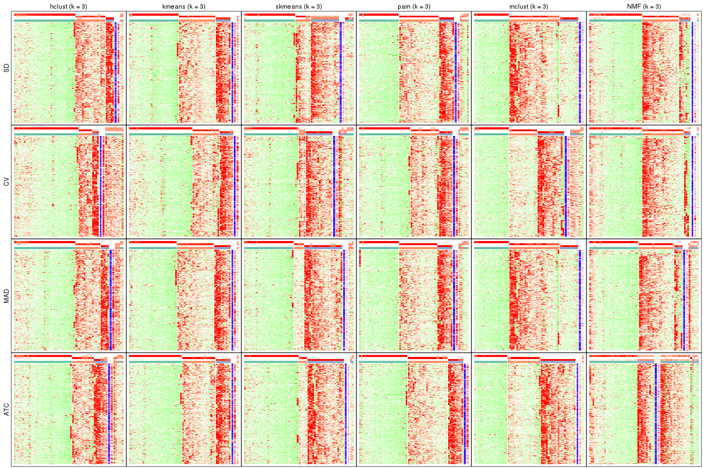
collect_plots(res_list, k = 4, fun = get_signatures, mc.cores = 4)
collect_plots(res_list, k = 5, fun = get_signatures, mc.cores = 4)
collect_plots(res_list, k = 6, fun = get_signatures, mc.cores = 4)
The statistics used for measuring the stability of consensus partitioning. (How are they defined?)
get_stats(res_list, k = 2)
#> k 1-PAC mean_silhouette concordance area_increased Rand Jaccard
#> SD:NMF 2 0.966 0.937 0.973 0.4821 0.526 0.526
#> CV:NMF 2 0.687 0.855 0.931 0.4946 0.494 0.494
#> MAD:NMF 2 0.932 0.921 0.970 0.4929 0.511 0.511
#> ATC:NMF 2 0.933 0.946 0.981 0.0667 0.968 0.968
#> SD:skmeans 2 1.000 0.977 0.989 0.4998 0.500 0.500
#> CV:skmeans 2 1.000 0.998 0.999 0.4824 0.518 0.518
#> MAD:skmeans 2 1.000 0.961 0.984 0.5059 0.497 0.497
#> ATC:skmeans 2 1.000 0.999 1.000 0.4898 0.511 0.511
#> SD:mclust 2 0.868 0.906 0.958 0.4676 0.556 0.556
#> CV:mclust 2 0.701 0.859 0.931 0.4946 0.494 0.494
#> MAD:mclust 2 0.837 0.921 0.963 0.4651 0.545 0.545
#> ATC:mclust 2 0.913 0.947 0.974 0.4677 0.535 0.535
#> SD:kmeans 2 1.000 0.963 0.986 0.4542 0.545 0.545
#> CV:kmeans 2 1.000 0.992 0.996 0.4445 0.556 0.556
#> MAD:kmeans 2 1.000 0.961 0.984 0.4551 0.556 0.556
#> ATC:kmeans 2 1.000 0.998 0.999 0.4445 0.556 0.556
#> SD:pam 2 0.840 0.941 0.968 0.4056 0.568 0.568
#> CV:pam 2 0.867 0.899 0.957 0.3631 0.627 0.627
#> MAD:pam 2 1.000 0.967 0.985 0.4385 0.556 0.556
#> ATC:pam 2 1.000 0.978 0.990 0.4135 0.595 0.595
#> SD:hclust 2 0.599 0.876 0.929 0.4406 0.526 0.526
#> CV:hclust 2 0.750 0.775 0.916 0.3861 0.645 0.645
#> MAD:hclust 2 0.498 0.859 0.924 0.4501 0.526 0.526
#> ATC:hclust 2 0.592 0.763 0.901 0.3917 0.581 0.581
get_stats(res_list, k = 3)
#> k 1-PAC mean_silhouette concordance area_increased Rand Jaccard
#> SD:NMF 3 0.733 0.868 0.919 0.237 0.880 0.774
#> CV:NMF 3 0.681 0.851 0.912 0.151 0.824 0.684
#> MAD:NMF 3 0.796 0.831 0.928 0.205 0.871 0.751
#> ATC:NMF 3 0.163 0.429 0.721 5.132 0.604 0.591
#> SD:skmeans 3 0.842 0.827 0.905 0.215 0.870 0.747
#> CV:skmeans 3 0.741 0.740 0.879 0.205 0.936 0.877
#> MAD:skmeans 3 0.839 0.855 0.929 0.217 0.865 0.734
#> ATC:skmeans 3 0.979 0.950 0.979 0.167 0.919 0.842
#> SD:mclust 3 0.810 0.899 0.939 0.363 0.793 0.635
#> CV:mclust 3 0.803 0.805 0.917 0.351 0.727 0.500
#> MAD:mclust 3 0.786 0.924 0.941 0.352 0.825 0.680
#> ATC:mclust 3 0.976 0.935 0.971 0.445 0.748 0.545
#> SD:kmeans 3 1.000 0.927 0.957 0.352 0.699 0.509
#> CV:kmeans 3 0.941 0.925 0.959 0.232 0.843 0.731
#> MAD:kmeans 3 0.982 0.936 0.959 0.374 0.679 0.486
#> ATC:kmeans 3 0.987 0.946 0.969 0.338 0.720 0.544
#> SD:pam 3 0.896 0.884 0.957 0.545 0.619 0.426
#> CV:pam 3 0.707 0.796 0.917 0.553 0.720 0.581
#> MAD:pam 3 0.897 0.858 0.950 0.439 0.643 0.442
#> ATC:pam 3 0.831 0.928 0.968 0.478 0.649 0.470
#> SD:hclust 3 0.662 0.848 0.922 0.210 0.923 0.856
#> CV:hclust 3 0.753 0.738 0.899 0.106 0.979 0.967
#> MAD:hclust 3 0.694 0.832 0.913 0.210 0.952 0.909
#> ATC:hclust 3 0.630 0.777 0.900 0.382 0.784 0.650
get_stats(res_list, k = 4)
#> k 1-PAC mean_silhouette concordance area_increased Rand Jaccard
#> SD:NMF 4 0.754 0.853 0.901 0.1512 0.812 0.576
#> CV:NMF 4 0.549 0.638 0.826 0.1081 0.893 0.765
#> MAD:NMF 4 0.717 0.740 0.881 0.1530 0.859 0.661
#> ATC:NMF 4 0.529 0.675 0.858 0.4547 0.709 0.534
#> SD:skmeans 4 0.937 0.911 0.960 0.1070 0.921 0.803
#> CV:skmeans 4 0.854 0.837 0.922 0.1225 0.895 0.775
#> MAD:skmeans 4 0.866 0.872 0.943 0.0858 0.935 0.834
#> ATC:skmeans 4 0.948 0.908 0.960 0.0501 0.947 0.880
#> SD:mclust 4 0.668 0.834 0.867 0.1172 0.907 0.749
#> CV:mclust 4 0.732 0.728 0.850 0.0783 0.970 0.909
#> MAD:mclust 4 0.771 0.805 0.892 0.1564 0.907 0.749
#> ATC:mclust 4 0.783 0.715 0.770 0.0743 0.931 0.792
#> SD:kmeans 4 0.733 0.758 0.859 0.1378 0.791 0.516
#> CV:kmeans 4 0.672 0.772 0.882 0.1069 0.960 0.913
#> MAD:kmeans 4 0.739 0.751 0.852 0.1184 0.807 0.539
#> ATC:kmeans 4 0.734 0.744 0.839 0.1506 0.785 0.520
#> SD:pam 4 0.845 0.854 0.941 0.1372 0.854 0.642
#> CV:pam 4 0.672 0.736 0.834 0.0799 0.848 0.672
#> MAD:pam 4 0.862 0.843 0.931 0.1369 0.791 0.508
#> ATC:pam 4 0.981 0.927 0.974 0.1923 0.763 0.467
#> SD:hclust 4 0.642 0.807 0.910 0.0159 0.998 0.995
#> CV:hclust 4 0.738 0.740 0.901 0.0312 0.995 0.992
#> MAD:hclust 4 0.693 0.783 0.897 0.0271 0.998 0.996
#> ATC:hclust 4 0.605 0.730 0.885 0.0516 0.992 0.981
get_stats(res_list, k = 5)
#> k 1-PAC mean_silhouette concordance area_increased Rand Jaccard
#> SD:NMF 5 0.834 0.826 0.921 0.0547 0.993 0.974
#> CV:NMF 5 0.730 0.723 0.864 0.0733 0.892 0.725
#> MAD:NMF 5 0.800 0.761 0.902 0.0607 0.918 0.748
#> ATC:NMF 5 0.507 0.676 0.845 0.1337 0.706 0.424
#> SD:skmeans 5 0.837 0.803 0.886 0.0446 0.987 0.961
#> CV:skmeans 5 0.791 0.689 0.861 0.0586 0.967 0.911
#> MAD:skmeans 5 0.835 0.809 0.888 0.0422 0.987 0.961
#> ATC:skmeans 5 0.895 0.855 0.923 0.0427 0.986 0.965
#> SD:mclust 5 0.704 0.678 0.808 0.0656 0.878 0.601
#> CV:mclust 5 0.811 0.742 0.868 0.0604 0.918 0.731
#> MAD:mclust 5 0.828 0.690 0.856 0.0618 0.911 0.693
#> ATC:mclust 5 0.580 0.748 0.794 -0.0190 0.902 0.675
#> SD:kmeans 5 0.718 0.769 0.857 0.0575 0.963 0.870
#> CV:kmeans 5 0.639 0.587 0.747 0.1078 0.768 0.495
#> MAD:kmeans 5 0.788 0.719 0.854 0.0709 0.980 0.926
#> ATC:kmeans 5 0.811 0.751 0.884 0.0732 0.956 0.855
#> SD:pam 5 0.941 0.887 0.958 0.0711 0.879 0.629
#> CV:pam 5 0.713 0.564 0.827 0.0180 0.920 0.800
#> MAD:pam 5 0.965 0.929 0.969 0.0604 0.941 0.794
#> ATC:pam 5 0.960 0.890 0.963 0.0287 0.970 0.892
#> SD:hclust 5 0.693 0.761 0.876 0.1023 0.928 0.847
#> CV:hclust 5 0.707 0.403 0.814 0.0172 0.814 0.758
#> MAD:hclust 5 0.673 0.729 0.874 0.0672 0.943 0.883
#> ATC:hclust 5 0.700 0.632 0.835 0.1149 0.906 0.791
get_stats(res_list, k = 6)
#> k 1-PAC mean_silhouette concordance area_increased Rand Jaccard
#> SD:NMF 6 0.763 0.713 0.867 0.05877 0.955 0.839
#> CV:NMF 6 0.767 0.698 0.866 0.05165 0.949 0.846
#> MAD:NMF 6 0.708 0.656 0.845 0.05631 0.959 0.851
#> ATC:NMF 6 0.564 0.632 0.827 0.06533 0.898 0.725
#> SD:skmeans 6 0.799 0.640 0.836 0.03200 0.958 0.876
#> CV:skmeans 6 0.754 0.681 0.830 0.03514 0.924 0.784
#> MAD:skmeans 6 0.775 0.694 0.843 0.03713 0.985 0.955
#> ATC:skmeans 6 0.860 0.808 0.907 0.03034 0.997 0.993
#> SD:mclust 6 0.891 0.891 0.930 0.04274 0.911 0.646
#> CV:mclust 6 0.801 0.748 0.859 0.02281 0.940 0.765
#> MAD:mclust 6 0.821 0.877 0.916 0.01711 0.953 0.798
#> ATC:mclust 6 0.537 0.490 0.772 -0.07996 0.731 0.392
#> SD:kmeans 6 0.838 0.745 0.863 0.03555 0.985 0.943
#> CV:kmeans 6 0.671 0.585 0.767 0.05027 0.891 0.652
#> MAD:kmeans 6 0.809 0.708 0.840 0.03271 0.980 0.923
#> ATC:kmeans 6 0.840 0.700 0.853 0.04939 0.906 0.688
#> SD:pam 6 0.938 0.865 0.951 0.00435 0.996 0.985
#> CV:pam 6 0.738 0.806 0.888 0.03178 0.912 0.775
#> MAD:pam 6 0.929 0.869 0.951 0.00538 0.996 0.985
#> ATC:pam 6 0.960 0.894 0.970 0.00619 0.998 0.991
#> SD:hclust 6 0.591 0.721 0.848 0.02606 0.998 0.996
#> CV:hclust 6 0.762 0.508 0.884 0.06107 0.815 0.758
#> MAD:hclust 6 0.712 0.729 0.872 0.00987 0.997 0.993
#> ATC:hclust 6 0.744 0.661 0.852 0.02274 0.962 0.901
Following heatmap plots the partition for each combination of methods and the lightness correspond to the silhouette scores for samples in each method. On top the consensus subgroup is inferred from all methods by taking the mean silhouette scores as weight.
collect_stats(res_list, k = 2)
collect_stats(res_list, k = 3)
collect_stats(res_list, k = 4)
collect_stats(res_list, k = 5)
collect_stats(res_list, k = 6)
Collect partitions from all methods:
collect_classes(res_list, k = 2)
collect_classes(res_list, k = 3)
collect_classes(res_list, k = 4)
collect_classes(res_list, k = 5)
collect_classes(res_list, k = 6)
Overlap of top rows from different top-row methods:
top_rows_overlap(res_list, top_n = 1000, method = "euler")
top_rows_overlap(res_list, top_n = 2000, method = "euler")
top_rows_overlap(res_list, top_n = 3000, method = "euler")
top_rows_overlap(res_list, top_n = 4000, method = "euler")
top_rows_overlap(res_list, top_n = 5000, method = "euler")
Also visualize the correspondance of rankings between different top-row methods:
top_rows_overlap(res_list, top_n = 1000, method = "correspondance")
top_rows_overlap(res_list, top_n = 2000, method = "correspondance")
top_rows_overlap(res_list, top_n = 3000, method = "correspondance")
top_rows_overlap(res_list, top_n = 4000, method = "correspondance")
top_rows_overlap(res_list, top_n = 5000, method = "correspondance")
Heatmaps of the top rows:
top_rows_heatmap(res_list, top_n = 1000)
top_rows_heatmap(res_list, top_n = 2000)

top_rows_heatmap(res_list, top_n = 3000)
top_rows_heatmap(res_list, top_n = 4000)
top_rows_heatmap(res_list, top_n = 5000)
The object with results only for a single top-value method and a single partition method can be extracted as:
res = res_list["SD", "hclust"]
# you can also extract it by
# res = res_list["SD:hclust"]
A summary of res and all the functions that can be applied to it:
res
#> A 'ConsensusPartition' object with k = 2, 3, 4, 5, 6.
#> On a matrix with 12627 rows and 62 columns.
#> Top rows (1000, 2000, 3000, 4000, 5000) are extracted by 'SD' method.
#> Subgroups are detected by 'hclust' method.
#> Performed in total 1250 partitions by row resampling.
#> Best k for subgroups seems to be 2.
#>
#> Following methods can be applied to this 'ConsensusPartition' object:
#> [1] "cola_report" "collect_classes" "collect_plots"
#> [4] "collect_stats" "colnames" "compare_signatures"
#> [7] "consensus_heatmap" "dimension_reduction" "functional_enrichment"
#> [10] "get_anno_col" "get_anno" "get_classes"
#> [13] "get_consensus" "get_matrix" "get_membership"
#> [16] "get_param" "get_signatures" "get_stats"
#> [19] "is_best_k" "is_stable_k" "membership_heatmap"
#> [22] "ncol" "nrow" "plot_ecdf"
#> [25] "rownames" "select_partition_number" "show"
#> [28] "suggest_best_k" "test_to_known_factors"
collect_plots() function collects all the plots made from res for all k (number of partitions)
into one single page to provide an easy and fast comparison between different k.
collect_plots(res)
The plots are:
k and the heatmap of
predicted classes for each k.k.k.k.All the plots in panels can be made by individual functions and they are plotted later in this section.
select_partition_number() produces several plots showing different
statistics for choosing “optimized” k. There are following statistics:
k;k, the area increased is defined as \(A_k - A_{k-1}\).The detailed explanations of these statistics can be found in the cola vignette.
Generally speaking, lower PAC score, higher mean silhouette score or higher
concordance corresponds to better partition. Rand index and Jaccard index
measure how similar the current partition is compared to partition with k-1.
If they are too similar, we won't accept k is better than k-1.
select_partition_number(res)
The numeric values for all these statistics can be obtained by get_stats().
get_stats(res)
#> k 1-PAC mean_silhouette concordance area_increased Rand Jaccard
#> 2 2 0.599 0.876 0.929 0.4406 0.526 0.526
#> 3 3 0.662 0.848 0.922 0.2103 0.923 0.856
#> 4 4 0.642 0.807 0.910 0.0159 0.998 0.995
#> 5 5 0.693 0.761 0.876 0.1023 0.928 0.847
#> 6 6 0.591 0.721 0.848 0.0261 0.998 0.996
suggest_best_k() suggests the best \(k\) based on these statistics. The rules are as follows:
NA.suggest_best_k(res)
#> [1] 2
Following shows the table of the partitions (You need to click the show/hide
code output link to see it). The membership matrix (columns with name p*)
is inferred by
clue::cl_consensus()
function with the SE method. Basically the value in the membership matrix
represents the probability to belong to a certain group. The finall class
label for an item is determined with the group with highest probability it
belongs to.
In get_classes() function, the entropy is calculated from the membership
matrix and the silhouette score is calculated from the consensus matrix.
cbind(get_classes(res, k = 2), get_membership(res, k = 2))
#> class entropy silhouette p1 p2
#> SRR372611 1 0.0000 0.955 1.000 0.000
#> SRR372612 1 0.0000 0.955 1.000 0.000
#> SRR372613 2 0.0000 0.852 0.000 1.000
#> SRR372614 1 0.1414 0.942 0.980 0.020
#> SRR372615 2 0.5946 0.874 0.144 0.856
#> SRR372616 2 0.9710 0.532 0.400 0.600
#> SRR372617 1 0.4022 0.892 0.920 0.080
#> SRR372618 1 0.0000 0.955 1.000 0.000
#> SRR372619 2 0.6148 0.873 0.152 0.848
#> SRR372620 1 0.0000 0.955 1.000 0.000
#> SRR372621 2 0.7219 0.844 0.200 0.800
#> SRR372622 1 0.0000 0.955 1.000 0.000
#> SRR372623 2 0.6148 0.873 0.152 0.848
#> SRR372624 1 0.0000 0.955 1.000 0.000
#> SRR372625 1 0.0000 0.955 1.000 0.000
#> SRR372626 2 0.6148 0.873 0.152 0.848
#> SRR372627 1 0.0000 0.955 1.000 0.000
#> SRR372628 1 0.0000 0.955 1.000 0.000
#> SRR372629 1 0.2778 0.920 0.952 0.048
#> SRR372630 1 0.0000 0.955 1.000 0.000
#> SRR372631 1 0.3879 0.896 0.924 0.076
#> SRR372632 1 0.0000 0.955 1.000 0.000
#> SRR372633 1 0.9661 0.218 0.608 0.392
#> SRR372634 1 0.0000 0.955 1.000 0.000
#> SRR372635 1 0.4161 0.888 0.916 0.084
#> SRR372636 1 0.0000 0.955 1.000 0.000
#> SRR372637 1 0.4022 0.892 0.920 0.080
#> SRR372638 1 0.0000 0.955 1.000 0.000
#> SRR372639 2 0.7056 0.850 0.192 0.808
#> SRR372640 1 0.0000 0.955 1.000 0.000
#> SRR372641 1 0.0000 0.955 1.000 0.000
#> SRR372642 1 0.0000 0.955 1.000 0.000
#> SRR372643 2 0.8443 0.766 0.272 0.728
#> SRR372644 1 0.0000 0.955 1.000 0.000
#> SRR372645 1 0.9661 0.230 0.608 0.392
#> SRR372646 1 0.0000 0.955 1.000 0.000
#> SRR372647 1 0.0000 0.955 1.000 0.000
#> SRR372648 1 0.0000 0.955 1.000 0.000
#> SRR372649 1 0.0000 0.955 1.000 0.000
#> SRR372650 2 0.0000 0.852 0.000 1.000
#> SRR372651 2 0.0376 0.854 0.004 0.996
#> SRR372652 2 0.8386 0.772 0.268 0.732
#> SRR372653 2 0.0000 0.852 0.000 1.000
#> SRR372654 1 0.0376 0.953 0.996 0.004
#> SRR372655 2 0.2043 0.861 0.032 0.968
#> SRR372656 1 0.0000 0.955 1.000 0.000
#> SRR372657 1 0.0000 0.955 1.000 0.000
#> SRR372658 2 0.0000 0.852 0.000 1.000
#> SRR372659 2 0.8443 0.766 0.272 0.728
#> SRR372660 2 0.5946 0.874 0.144 0.856
#> SRR372661 2 0.8499 0.763 0.276 0.724
#> SRR372662 1 0.5519 0.833 0.872 0.128
#> SRR372663 2 0.5842 0.874 0.140 0.860
#> SRR372664 1 0.0000 0.955 1.000 0.000
#> SRR372665 2 0.0000 0.852 0.000 1.000
#> SRR372666 2 0.6531 0.866 0.168 0.832
#> SRR372667 2 0.0376 0.854 0.004 0.996
#> SRR372668 1 0.0000 0.955 1.000 0.000
#> SRR372669 1 0.0938 0.948 0.988 0.012
#> SRR372670 1 0.0000 0.955 1.000 0.000
#> SRR372671 2 0.0376 0.854 0.004 0.996
#> SRR372672 1 0.5519 0.833 0.872 0.128
cbind(get_classes(res, k = 3), get_membership(res, k = 3))
#> class entropy silhouette p1 p2 p3
#> SRR372611 1 0.0000 0.9450 1.000 0.000 0.000
#> SRR372612 1 0.0000 0.9450 1.000 0.000 0.000
#> SRR372613 3 0.0237 0.9943 0.000 0.004 0.996
#> SRR372614 1 0.2066 0.9237 0.940 0.060 0.000
#> SRR372615 2 0.0424 0.7912 0.000 0.992 0.008
#> SRR372616 2 0.5678 0.5573 0.316 0.684 0.000
#> SRR372617 1 0.3752 0.8529 0.856 0.144 0.000
#> SRR372618 1 0.1031 0.9429 0.976 0.024 0.000
#> SRR372619 2 0.0000 0.7921 0.000 1.000 0.000
#> SRR372620 1 0.0000 0.9450 1.000 0.000 0.000
#> SRR372621 2 0.1753 0.7990 0.048 0.952 0.000
#> SRR372622 1 0.1163 0.9417 0.972 0.028 0.000
#> SRR372623 2 0.0000 0.7921 0.000 1.000 0.000
#> SRR372624 1 0.0000 0.9450 1.000 0.000 0.000
#> SRR372625 1 0.0000 0.9450 1.000 0.000 0.000
#> SRR372626 2 0.0000 0.7921 0.000 1.000 0.000
#> SRR372627 1 0.0000 0.9450 1.000 0.000 0.000
#> SRR372628 1 0.0000 0.9450 1.000 0.000 0.000
#> SRR372629 1 0.3038 0.8893 0.896 0.104 0.000
#> SRR372630 1 0.0892 0.9435 0.980 0.020 0.000
#> SRR372631 1 0.3686 0.8570 0.860 0.140 0.000
#> SRR372632 1 0.0000 0.9450 1.000 0.000 0.000
#> SRR372633 1 0.6280 0.1193 0.540 0.460 0.000
#> SRR372634 1 0.0000 0.9450 1.000 0.000 0.000
#> SRR372635 1 0.3816 0.8485 0.852 0.148 0.000
#> SRR372636 1 0.1031 0.9429 0.976 0.024 0.000
#> SRR372637 1 0.3752 0.8529 0.856 0.144 0.000
#> SRR372638 1 0.0000 0.9450 1.000 0.000 0.000
#> SRR372639 2 0.1529 0.7984 0.040 0.960 0.000
#> SRR372640 1 0.0000 0.9450 1.000 0.000 0.000
#> SRR372641 1 0.1163 0.9417 0.972 0.028 0.000
#> SRR372642 1 0.1163 0.9417 0.972 0.028 0.000
#> SRR372643 2 0.3340 0.7702 0.120 0.880 0.000
#> SRR372644 1 0.0000 0.9450 1.000 0.000 0.000
#> SRR372645 2 0.6280 0.0999 0.460 0.540 0.000
#> SRR372646 1 0.0000 0.9450 1.000 0.000 0.000
#> SRR372647 1 0.1031 0.9429 0.976 0.024 0.000
#> SRR372648 1 0.0000 0.9450 1.000 0.000 0.000
#> SRR372649 1 0.1163 0.9417 0.972 0.028 0.000
#> SRR372650 3 0.0000 0.9986 0.000 0.000 1.000
#> SRR372651 2 0.5560 0.6077 0.000 0.700 0.300
#> SRR372652 2 0.6573 0.7177 0.140 0.756 0.104
#> SRR372653 3 0.0000 0.9986 0.000 0.000 1.000
#> SRR372654 1 0.1289 0.9399 0.968 0.032 0.000
#> SRR372655 2 0.3340 0.7450 0.000 0.880 0.120
#> SRR372656 1 0.1031 0.9429 0.976 0.024 0.000
#> SRR372657 1 0.0000 0.9450 1.000 0.000 0.000
#> SRR372658 3 0.0000 0.9986 0.000 0.000 1.000
#> SRR372659 2 0.3340 0.7702 0.120 0.880 0.000
#> SRR372660 2 0.3482 0.7738 0.000 0.872 0.128
#> SRR372661 2 0.3412 0.7671 0.124 0.876 0.000
#> SRR372662 1 0.4504 0.7840 0.804 0.196 0.000
#> SRR372663 2 0.3879 0.7645 0.000 0.848 0.152
#> SRR372664 1 0.0000 0.9450 1.000 0.000 0.000
#> SRR372665 3 0.0000 0.9986 0.000 0.000 1.000
#> SRR372666 2 0.4540 0.7812 0.028 0.848 0.124
#> SRR372667 2 0.5560 0.6077 0.000 0.700 0.300
#> SRR372668 1 0.0000 0.9450 1.000 0.000 0.000
#> SRR372669 1 0.1643 0.9336 0.956 0.044 0.000
#> SRR372670 1 0.0000 0.9450 1.000 0.000 0.000
#> SRR372671 2 0.5560 0.6077 0.000 0.700 0.300
#> SRR372672 1 0.4504 0.7840 0.804 0.196 0.000
cbind(get_classes(res, k = 4), get_membership(res, k = 4))
#> class entropy silhouette p1 p2 p3 p4
#> SRR372611 1 0.0188 0.9457 0.996 0.000 0.000 0.004
#> SRR372612 1 0.0188 0.9457 0.996 0.000 0.000 0.004
#> SRR372613 4 0.1305 0.0000 0.000 0.004 0.036 0.960
#> SRR372614 1 0.1557 0.9262 0.944 0.056 0.000 0.000
#> SRR372615 2 0.1452 0.7560 0.000 0.956 0.008 0.036
#> SRR372616 2 0.4522 0.4969 0.320 0.680 0.000 0.000
#> SRR372617 1 0.2921 0.8579 0.860 0.140 0.000 0.000
#> SRR372618 1 0.0707 0.9436 0.980 0.020 0.000 0.000
#> SRR372619 2 0.1118 0.7580 0.000 0.964 0.000 0.036
#> SRR372620 1 0.0188 0.9457 0.996 0.000 0.000 0.004
#> SRR372621 2 0.2300 0.7696 0.048 0.924 0.000 0.028
#> SRR372622 1 0.0817 0.9426 0.976 0.024 0.000 0.000
#> SRR372623 2 0.1118 0.7580 0.000 0.964 0.000 0.036
#> SRR372624 1 0.0188 0.9457 0.996 0.000 0.000 0.004
#> SRR372625 1 0.0188 0.9457 0.996 0.000 0.000 0.004
#> SRR372626 2 0.1118 0.7580 0.000 0.964 0.000 0.036
#> SRR372627 1 0.0188 0.9457 0.996 0.000 0.000 0.004
#> SRR372628 1 0.0188 0.9457 0.996 0.000 0.000 0.004
#> SRR372629 1 0.2345 0.8933 0.900 0.100 0.000 0.000
#> SRR372630 1 0.0592 0.9442 0.984 0.016 0.000 0.000
#> SRR372631 1 0.2868 0.8619 0.864 0.136 0.000 0.000
#> SRR372632 1 0.0188 0.9457 0.996 0.000 0.000 0.004
#> SRR372633 1 0.4972 0.1351 0.544 0.456 0.000 0.000
#> SRR372634 1 0.0188 0.9457 0.996 0.000 0.000 0.004
#> SRR372635 1 0.2973 0.8535 0.856 0.144 0.000 0.000
#> SRR372636 1 0.0707 0.9436 0.980 0.020 0.000 0.000
#> SRR372637 1 0.2921 0.8579 0.860 0.140 0.000 0.000
#> SRR372638 1 0.0188 0.9457 0.996 0.000 0.000 0.004
#> SRR372639 2 0.2224 0.7677 0.040 0.928 0.000 0.032
#> SRR372640 1 0.0188 0.9457 0.996 0.000 0.000 0.004
#> SRR372641 1 0.0817 0.9426 0.976 0.024 0.000 0.000
#> SRR372642 1 0.0817 0.9426 0.976 0.024 0.000 0.000
#> SRR372643 2 0.2704 0.7330 0.124 0.876 0.000 0.000
#> SRR372644 1 0.0188 0.9457 0.996 0.000 0.000 0.004
#> SRR372645 2 0.5396 0.0986 0.464 0.524 0.000 0.012
#> SRR372646 1 0.0188 0.9457 0.996 0.000 0.000 0.004
#> SRR372647 1 0.0707 0.9436 0.980 0.020 0.000 0.000
#> SRR372648 1 0.0188 0.9457 0.996 0.000 0.000 0.004
#> SRR372649 1 0.0817 0.9426 0.976 0.024 0.000 0.000
#> SRR372650 3 0.4624 0.3950 0.000 0.000 0.660 0.340
#> SRR372651 2 0.4673 0.6072 0.000 0.700 0.292 0.008
#> SRR372652 2 0.5257 0.6652 0.144 0.752 0.000 0.104
#> SRR372653 3 0.1022 0.8298 0.000 0.000 0.968 0.032
#> SRR372654 1 0.0921 0.9410 0.972 0.028 0.000 0.000
#> SRR372655 2 0.3731 0.7061 0.000 0.844 0.120 0.036
#> SRR372656 1 0.0707 0.9436 0.980 0.020 0.000 0.000
#> SRR372657 1 0.0188 0.9457 0.996 0.000 0.000 0.004
#> SRR372658 3 0.0000 0.8384 0.000 0.000 1.000 0.000
#> SRR372659 2 0.2704 0.7330 0.124 0.876 0.000 0.000
#> SRR372660 2 0.2944 0.7361 0.004 0.868 0.000 0.128
#> SRR372661 2 0.3088 0.7332 0.128 0.864 0.000 0.008
#> SRR372662 1 0.3528 0.7899 0.808 0.192 0.000 0.000
#> SRR372663 2 0.3626 0.7317 0.004 0.844 0.016 0.136
#> SRR372664 1 0.0188 0.9457 0.996 0.000 0.000 0.004
#> SRR372665 3 0.0000 0.8384 0.000 0.000 1.000 0.000
#> SRR372666 2 0.3694 0.7408 0.032 0.844 0.000 0.124
#> SRR372667 2 0.4673 0.6072 0.000 0.700 0.292 0.008
#> SRR372668 1 0.0188 0.9457 0.996 0.000 0.000 0.004
#> SRR372669 1 0.1211 0.9352 0.960 0.040 0.000 0.000
#> SRR372670 1 0.0188 0.9457 0.996 0.000 0.000 0.004
#> SRR372671 2 0.4673 0.6072 0.000 0.700 0.292 0.008
#> SRR372672 1 0.3528 0.7899 0.808 0.192 0.000 0.000
cbind(get_classes(res, k = 5), get_membership(res, k = 5))
#> class entropy silhouette p1 p2 p3 p4 p5
#> SRR372611 1 0.000 0.9144 1.000 0.000 0.000 0.000 0.000
#> SRR372612 1 0.000 0.9144 1.000 0.000 0.000 0.000 0.000
#> SRR372613 3 0.000 0.0000 0.000 0.000 1.000 0.000 0.000
#> SRR372614 1 0.252 0.8748 0.860 0.000 0.000 0.140 0.000
#> SRR372615 2 0.277 0.7254 0.000 0.836 0.000 0.164 0.000
#> SRR372616 4 0.340 0.5270 0.236 0.000 0.000 0.764 0.000
#> SRR372617 1 0.331 0.7935 0.776 0.000 0.000 0.224 0.000
#> SRR372618 1 0.191 0.9041 0.908 0.000 0.000 0.092 0.000
#> SRR372619 2 0.120 0.7451 0.000 0.952 0.000 0.048 0.000
#> SRR372620 1 0.000 0.9144 1.000 0.000 0.000 0.000 0.000
#> SRR372621 4 0.478 0.4096 0.032 0.340 0.000 0.628 0.000
#> SRR372622 1 0.179 0.9066 0.916 0.000 0.000 0.084 0.000
#> SRR372623 2 0.120 0.7451 0.000 0.952 0.000 0.048 0.000
#> SRR372624 1 0.000 0.9144 1.000 0.000 0.000 0.000 0.000
#> SRR372625 1 0.000 0.9144 1.000 0.000 0.000 0.000 0.000
#> SRR372626 2 0.120 0.7451 0.000 0.952 0.000 0.048 0.000
#> SRR372627 1 0.000 0.9144 1.000 0.000 0.000 0.000 0.000
#> SRR372628 1 0.000 0.9144 1.000 0.000 0.000 0.000 0.000
#> SRR372629 1 0.289 0.8444 0.824 0.000 0.000 0.176 0.000
#> SRR372630 1 0.148 0.9093 0.936 0.000 0.000 0.064 0.000
#> SRR372631 1 0.327 0.7986 0.780 0.000 0.000 0.220 0.000
#> SRR372632 1 0.000 0.9144 1.000 0.000 0.000 0.000 0.000
#> SRR372633 4 0.535 0.0203 0.460 0.052 0.000 0.488 0.000
#> SRR372634 1 0.000 0.9144 1.000 0.000 0.000 0.000 0.000
#> SRR372635 1 0.334 0.7884 0.772 0.000 0.000 0.228 0.000
#> SRR372636 1 0.191 0.9041 0.908 0.000 0.000 0.092 0.000
#> SRR372637 1 0.331 0.7935 0.776 0.000 0.000 0.224 0.000
#> SRR372638 1 0.000 0.9144 1.000 0.000 0.000 0.000 0.000
#> SRR372639 4 0.489 0.3880 0.036 0.352 0.000 0.612 0.000
#> SRR372640 1 0.000 0.9144 1.000 0.000 0.000 0.000 0.000
#> SRR372641 1 0.191 0.9041 0.908 0.000 0.000 0.092 0.000
#> SRR372642 1 0.191 0.9041 0.908 0.000 0.000 0.092 0.000
#> SRR372643 4 0.104 0.6337 0.040 0.000 0.000 0.960 0.000
#> SRR372644 1 0.000 0.9144 1.000 0.000 0.000 0.000 0.000
#> SRR372645 4 0.564 0.2792 0.396 0.080 0.000 0.524 0.000
#> SRR372646 1 0.000 0.9144 1.000 0.000 0.000 0.000 0.000
#> SRR372647 1 0.191 0.9044 0.908 0.000 0.000 0.092 0.000
#> SRR372648 1 0.000 0.9144 1.000 0.000 0.000 0.000 0.000
#> SRR372649 1 0.191 0.9041 0.908 0.000 0.000 0.092 0.000
#> SRR372650 5 0.489 0.3881 0.000 0.000 0.332 0.040 0.628
#> SRR372651 2 0.520 0.7099 0.000 0.652 0.008 0.056 0.284
#> SRR372652 4 0.386 0.5980 0.128 0.000 0.068 0.804 0.000
#> SRR372653 5 0.120 0.8153 0.000 0.000 0.048 0.000 0.952
#> SRR372654 1 0.202 0.9002 0.900 0.000 0.000 0.100 0.000
#> SRR372655 2 0.348 0.7729 0.000 0.832 0.000 0.056 0.112
#> SRR372656 1 0.191 0.9041 0.908 0.000 0.000 0.092 0.000
#> SRR372657 1 0.000 0.9144 1.000 0.000 0.000 0.000 0.000
#> SRR372658 5 0.000 0.8277 0.000 0.000 0.000 0.000 1.000
#> SRR372659 4 0.104 0.6337 0.040 0.000 0.000 0.960 0.000
#> SRR372660 4 0.287 0.5244 0.000 0.040 0.088 0.872 0.000
#> SRR372661 4 0.334 0.6262 0.060 0.096 0.000 0.844 0.000
#> SRR372662 1 0.366 0.7136 0.724 0.000 0.000 0.276 0.000
#> SRR372663 4 0.246 0.5405 0.000 0.000 0.096 0.888 0.016
#> SRR372664 1 0.000 0.9144 1.000 0.000 0.000 0.000 0.000
#> SRR372665 5 0.000 0.8277 0.000 0.000 0.000 0.000 1.000
#> SRR372666 4 0.248 0.5801 0.024 0.000 0.084 0.892 0.000
#> SRR372667 2 0.520 0.7099 0.000 0.652 0.008 0.056 0.284
#> SRR372668 1 0.000 0.9144 1.000 0.000 0.000 0.000 0.000
#> SRR372669 1 0.223 0.8914 0.884 0.000 0.000 0.116 0.000
#> SRR372670 1 0.000 0.9144 1.000 0.000 0.000 0.000 0.000
#> SRR372671 2 0.520 0.7099 0.000 0.652 0.008 0.056 0.284
#> SRR372672 1 0.366 0.7136 0.724 0.000 0.000 0.276 0.000
cbind(get_classes(res, k = 6), get_membership(res, k = 6))
#> class entropy silhouette p1 p2 p3 p4 p5 p6
#> SRR372611 1 0.0000 0.8895 1.000 0.000 0.000 0.000 0.000 0.000
#> SRR372612 1 0.0000 0.8895 1.000 0.000 0.000 0.000 0.000 0.000
#> SRR372613 6 0.0000 0.0000 0.000 0.000 0.000 0.000 0.000 1.000
#> SRR372614 1 0.2805 0.8424 0.812 0.000 0.004 0.184 0.000 0.000
#> SRR372615 2 0.5351 0.5786 0.000 0.572 0.280 0.148 0.000 0.000
#> SRR372616 4 0.2730 0.5303 0.192 0.000 0.000 0.808 0.000 0.000
#> SRR372617 1 0.3383 0.7609 0.728 0.000 0.004 0.268 0.000 0.000
#> SRR372618 1 0.2278 0.8764 0.868 0.000 0.004 0.128 0.000 0.000
#> SRR372619 2 0.1075 0.5033 0.000 0.952 0.000 0.048 0.000 0.000
#> SRR372620 1 0.0000 0.8895 1.000 0.000 0.000 0.000 0.000 0.000
#> SRR372621 4 0.4224 0.4209 0.028 0.340 0.000 0.632 0.000 0.000
#> SRR372622 1 0.2146 0.8804 0.880 0.000 0.004 0.116 0.000 0.000
#> SRR372623 2 0.1333 0.4995 0.000 0.944 0.008 0.048 0.000 0.000
#> SRR372624 1 0.0000 0.8895 1.000 0.000 0.000 0.000 0.000 0.000
#> SRR372625 1 0.0000 0.8895 1.000 0.000 0.000 0.000 0.000 0.000
#> SRR372626 2 0.1333 0.4995 0.000 0.944 0.008 0.048 0.000 0.000
#> SRR372627 1 0.0000 0.8895 1.000 0.000 0.000 0.000 0.000 0.000
#> SRR372628 1 0.0000 0.8895 1.000 0.000 0.000 0.000 0.000 0.000
#> SRR372629 1 0.3081 0.8121 0.776 0.000 0.004 0.220 0.000 0.000
#> SRR372630 1 0.1958 0.8823 0.896 0.000 0.004 0.100 0.000 0.000
#> SRR372631 1 0.3360 0.7660 0.732 0.000 0.004 0.264 0.000 0.000
#> SRR372632 1 0.0000 0.8895 1.000 0.000 0.000 0.000 0.000 0.000
#> SRR372633 4 0.4894 0.0655 0.412 0.052 0.004 0.532 0.000 0.000
#> SRR372634 1 0.0000 0.8895 1.000 0.000 0.000 0.000 0.000 0.000
#> SRR372635 1 0.3405 0.7558 0.724 0.000 0.004 0.272 0.000 0.000
#> SRR372636 1 0.2278 0.8764 0.868 0.000 0.004 0.128 0.000 0.000
#> SRR372637 1 0.3383 0.7609 0.728 0.000 0.004 0.268 0.000 0.000
#> SRR372638 1 0.0000 0.8895 1.000 0.000 0.000 0.000 0.000 0.000
#> SRR372639 4 0.4399 0.4000 0.028 0.352 0.004 0.616 0.000 0.000
#> SRR372640 1 0.0000 0.8895 1.000 0.000 0.000 0.000 0.000 0.000
#> SRR372641 1 0.2278 0.8765 0.868 0.000 0.004 0.128 0.000 0.000
#> SRR372642 1 0.2278 0.8765 0.868 0.000 0.004 0.128 0.000 0.000
#> SRR372643 4 0.0146 0.6262 0.000 0.000 0.004 0.996 0.000 0.000
#> SRR372644 1 0.0000 0.8895 1.000 0.000 0.000 0.000 0.000 0.000
#> SRR372645 4 0.5115 0.3012 0.356 0.080 0.004 0.560 0.000 0.000
#> SRR372646 1 0.0146 0.8894 0.996 0.000 0.004 0.000 0.000 0.000
#> SRR372647 1 0.2320 0.8753 0.864 0.000 0.004 0.132 0.000 0.000
#> SRR372648 1 0.0000 0.8895 1.000 0.000 0.000 0.000 0.000 0.000
#> SRR372649 1 0.2278 0.8765 0.868 0.000 0.004 0.128 0.000 0.000
#> SRR372650 3 0.3897 0.0000 0.000 0.000 0.696 0.000 0.280 0.024
#> SRR372651 2 0.6759 0.5549 0.000 0.388 0.304 0.040 0.268 0.000
#> SRR372652 4 0.3962 0.5925 0.120 0.000 0.116 0.764 0.000 0.000
#> SRR372653 5 0.1219 0.8986 0.000 0.000 0.048 0.000 0.948 0.004
#> SRR372654 1 0.2402 0.8706 0.856 0.000 0.004 0.140 0.000 0.000
#> SRR372655 2 0.5869 0.6236 0.000 0.568 0.280 0.040 0.112 0.000
#> SRR372656 1 0.2135 0.8775 0.872 0.000 0.000 0.128 0.000 0.000
#> SRR372657 1 0.0000 0.8895 1.000 0.000 0.000 0.000 0.000 0.000
#> SRR372658 5 0.0000 0.9520 0.000 0.000 0.000 0.000 1.000 0.000
#> SRR372659 4 0.0146 0.6262 0.000 0.000 0.004 0.996 0.000 0.000
#> SRR372660 4 0.3202 0.5238 0.000 0.040 0.144 0.816 0.000 0.000
#> SRR372661 4 0.2462 0.6250 0.028 0.096 0.000 0.876 0.000 0.000
#> SRR372662 1 0.3499 0.6839 0.680 0.000 0.000 0.320 0.000 0.000
#> SRR372663 4 0.2527 0.5405 0.000 0.000 0.168 0.832 0.000 0.000
#> SRR372664 1 0.0146 0.8894 0.996 0.000 0.004 0.000 0.000 0.000
#> SRR372665 5 0.0000 0.9520 0.000 0.000 0.000 0.000 1.000 0.000
#> SRR372666 4 0.2872 0.5790 0.024 0.000 0.140 0.836 0.000 0.000
#> SRR372667 2 0.6759 0.5549 0.000 0.388 0.304 0.040 0.268 0.000
#> SRR372668 1 0.0000 0.8895 1.000 0.000 0.000 0.000 0.000 0.000
#> SRR372669 1 0.2595 0.8592 0.836 0.000 0.004 0.160 0.000 0.000
#> SRR372670 1 0.0000 0.8895 1.000 0.000 0.000 0.000 0.000 0.000
#> SRR372671 2 0.6759 0.5549 0.000 0.388 0.304 0.040 0.268 0.000
#> SRR372672 1 0.3499 0.6839 0.680 0.000 0.000 0.320 0.000 0.000
Heatmaps for the consensus matrix. It visualizes the probability of two samples to be in a same group.
consensus_heatmap(res, k = 2)
consensus_heatmap(res, k = 3)
consensus_heatmap(res, k = 4)
consensus_heatmap(res, k = 5)
consensus_heatmap(res, k = 6)
Heatmaps for the membership of samples in all partitions to see how consistent they are:
membership_heatmap(res, k = 2)

membership_heatmap(res, k = 3)
membership_heatmap(res, k = 4)
membership_heatmap(res, k = 5)
membership_heatmap(res, k = 6)
As soon as we have had the classes for columns, we can look for signatures which are significantly different between classes which can be candidate marks for certain classes. Following are the heatmaps for signatures.
Signature heatmaps where rows are scaled:
get_signatures(res, k = 2)
get_signatures(res, k = 3)
get_signatures(res, k = 4)
get_signatures(res, k = 5)
get_signatures(res, k = 6)
Signature heatmaps where rows are not scaled:
get_signatures(res, k = 2, scale_rows = FALSE)
get_signatures(res, k = 3, scale_rows = FALSE)
get_signatures(res, k = 4, scale_rows = FALSE)
#> Error in mat[ceiling(1:nr/h_ratio), ceiling(1:nc/w_ratio), drop = FALSE]: subscript out of bounds
get_signatures(res, k = 5, scale_rows = FALSE)
#> Error in mat[ceiling(1:nr/h_ratio), ceiling(1:nc/w_ratio), drop = FALSE]: subscript out of bounds

get_signatures(res, k = 6, scale_rows = FALSE)
Compare the overlap of signatures from different k:
compare_signatures(res)
get_signature() returns a data frame invisibly. TO get the list of signatures, the function
call should be assigned to a variable explicitly. In following code, if plot argument is set
to FALSE, no heatmap is plotted while only the differential analysis is performed.
# code only for demonstration
tb = get_signature(res, k = ..., plot = FALSE)
An example of the output of tb is:
#> which_row fdr mean_1 mean_2 scaled_mean_1 scaled_mean_2 km
#> 1 38 0.042760348 8.373488 9.131774 -0.5533452 0.5164555 1
#> 2 40 0.018707592 7.106213 8.469186 -0.6173731 0.5762149 1
#> 3 55 0.019134737 10.221463 11.207825 -0.6159697 0.5749050 1
#> 4 59 0.006059896 5.921854 7.869574 -0.6899429 0.6439467 1
#> 5 60 0.018055526 8.928898 10.211722 -0.6204761 0.5791110 1
#> 6 98 0.009384629 15.714769 14.887706 0.6635654 -0.6193277 2
...
The columns in tb are:
which_row: row indices corresponding to the input matrix.fdr: FDR for the differential test. mean_x: The mean value in group x.scaled_mean_x: The mean value in group x after rows are scaled.km: Row groups if k-means clustering is applied to rows.UMAP plot which shows how samples are separated.
dimension_reduction(res, k = 2, method = "UMAP")
dimension_reduction(res, k = 3, method = "UMAP")
dimension_reduction(res, k = 4, method = "UMAP")
dimension_reduction(res, k = 5, method = "UMAP")

dimension_reduction(res, k = 6, method = "UMAP")
Following heatmap shows how subgroups are split when increasing k:
collect_classes(res)
If matrix rows can be associated to genes, consider to use GO_Enrichment(res,
...) to perform function enrichment for the signature genes.
The object with results only for a single top-value method and a single partition method can be extracted as:
res = res_list["SD", "kmeans"]
# you can also extract it by
# res = res_list["SD:kmeans"]
A summary of res and all the functions that can be applied to it:
res
#> A 'ConsensusPartition' object with k = 2, 3, 4, 5, 6.
#> On a matrix with 12627 rows and 62 columns.
#> Top rows (1000, 2000, 3000, 4000, 5000) are extracted by 'SD' method.
#> Subgroups are detected by 'kmeans' method.
#> Performed in total 1250 partitions by row resampling.
#> Best k for subgroups seems to be 3.
#>
#> Following methods can be applied to this 'ConsensusPartition' object:
#> [1] "cola_report" "collect_classes" "collect_plots"
#> [4] "collect_stats" "colnames" "compare_signatures"
#> [7] "consensus_heatmap" "dimension_reduction" "functional_enrichment"
#> [10] "get_anno_col" "get_anno" "get_classes"
#> [13] "get_consensus" "get_matrix" "get_membership"
#> [16] "get_param" "get_signatures" "get_stats"
#> [19] "is_best_k" "is_stable_k" "membership_heatmap"
#> [22] "ncol" "nrow" "plot_ecdf"
#> [25] "rownames" "select_partition_number" "show"
#> [28] "suggest_best_k" "test_to_known_factors"
collect_plots() function collects all the plots made from res for all k (number of partitions)
into one single page to provide an easy and fast comparison between different k.
collect_plots(res)
The plots are:
k and the heatmap of
predicted classes for each k.k.k.k.All the plots in panels can be made by individual functions and they are plotted later in this section.
select_partition_number() produces several plots showing different
statistics for choosing “optimized” k. There are following statistics:
k;k, the area increased is defined as \(A_k - A_{k-1}\).The detailed explanations of these statistics can be found in the cola vignette.
Generally speaking, lower PAC score, higher mean silhouette score or higher
concordance corresponds to better partition. Rand index and Jaccard index
measure how similar the current partition is compared to partition with k-1.
If they are too similar, we won't accept k is better than k-1.
select_partition_number(res)
The numeric values for all these statistics can be obtained by get_stats().
get_stats(res)
#> k 1-PAC mean_silhouette concordance area_increased Rand Jaccard
#> 2 2 1.000 0.963 0.986 0.4542 0.545 0.545
#> 3 3 1.000 0.927 0.957 0.3517 0.699 0.509
#> 4 4 0.733 0.758 0.859 0.1378 0.791 0.516
#> 5 5 0.718 0.769 0.857 0.0575 0.963 0.870
#> 6 6 0.838 0.745 0.863 0.0355 0.985 0.943
suggest_best_k() suggests the best \(k\) based on these statistics. The rules are as follows:
NA.suggest_best_k(res)
#> [1] 3
#> attr(,"optional")
#> [1] 2
There is also optional best \(k\) = 2 that is worth to check.
Following shows the table of the partitions (You need to click the show/hide
code output link to see it). The membership matrix (columns with name p*)
is inferred by
clue::cl_consensus()
function with the SE method. Basically the value in the membership matrix
represents the probability to belong to a certain group. The finall class
label for an item is determined with the group with highest probability it
belongs to.
In get_classes() function, the entropy is calculated from the membership
matrix and the silhouette score is calculated from the consensus matrix.
cbind(get_classes(res, k = 2), get_membership(res, k = 2))
#> class entropy silhouette p1 p2
#> SRR372611 1 0.000 0.9902 1.000 0.000
#> SRR372612 1 0.000 0.9902 1.000 0.000
#> SRR372613 2 0.000 0.9755 0.000 1.000
#> SRR372614 1 0.000 0.9902 1.000 0.000
#> SRR372615 2 0.000 0.9755 0.000 1.000
#> SRR372616 1 0.000 0.9902 1.000 0.000
#> SRR372617 1 0.000 0.9902 1.000 0.000
#> SRR372618 1 0.000 0.9902 1.000 0.000
#> SRR372619 2 0.000 0.9755 0.000 1.000
#> SRR372620 1 0.000 0.9902 1.000 0.000
#> SRR372621 2 0.000 0.9755 0.000 1.000
#> SRR372622 1 0.000 0.9902 1.000 0.000
#> SRR372623 2 0.998 0.0619 0.476 0.524
#> SRR372624 1 0.000 0.9902 1.000 0.000
#> SRR372625 1 0.000 0.9902 1.000 0.000
#> SRR372626 2 0.000 0.9755 0.000 1.000
#> SRR372627 1 0.000 0.9902 1.000 0.000
#> SRR372628 1 0.000 0.9902 1.000 0.000
#> SRR372629 1 0.000 0.9902 1.000 0.000
#> SRR372630 1 0.000 0.9902 1.000 0.000
#> SRR372631 1 0.000 0.9902 1.000 0.000
#> SRR372632 1 0.000 0.9902 1.000 0.000
#> SRR372633 1 0.000 0.9902 1.000 0.000
#> SRR372634 1 0.000 0.9902 1.000 0.000
#> SRR372635 1 0.000 0.9902 1.000 0.000
#> SRR372636 1 0.000 0.9902 1.000 0.000
#> SRR372637 1 0.000 0.9902 1.000 0.000
#> SRR372638 1 0.000 0.9902 1.000 0.000
#> SRR372639 2 0.000 0.9755 0.000 1.000
#> SRR372640 1 0.000 0.9902 1.000 0.000
#> SRR372641 1 0.000 0.9902 1.000 0.000
#> SRR372642 1 0.000 0.9902 1.000 0.000
#> SRR372643 2 0.000 0.9755 0.000 1.000
#> SRR372644 1 0.000 0.9902 1.000 0.000
#> SRR372645 1 0.738 0.7344 0.792 0.208
#> SRR372646 1 0.000 0.9902 1.000 0.000
#> SRR372647 1 0.000 0.9902 1.000 0.000
#> SRR372648 1 0.000 0.9902 1.000 0.000
#> SRR372649 1 0.000 0.9902 1.000 0.000
#> SRR372650 2 0.000 0.9755 0.000 1.000
#> SRR372651 2 0.000 0.9755 0.000 1.000
#> SRR372652 1 0.653 0.7945 0.832 0.168
#> SRR372653 2 0.000 0.9755 0.000 1.000
#> SRR372654 1 0.000 0.9902 1.000 0.000
#> SRR372655 2 0.000 0.9755 0.000 1.000
#> SRR372656 1 0.000 0.9902 1.000 0.000
#> SRR372657 1 0.000 0.9902 1.000 0.000
#> SRR372658 2 0.000 0.9755 0.000 1.000
#> SRR372659 2 0.000 0.9755 0.000 1.000
#> SRR372660 2 0.000 0.9755 0.000 1.000
#> SRR372661 2 0.000 0.9755 0.000 1.000
#> SRR372662 1 0.000 0.9902 1.000 0.000
#> SRR372663 2 0.000 0.9755 0.000 1.000
#> SRR372664 1 0.000 0.9902 1.000 0.000
#> SRR372665 2 0.000 0.9755 0.000 1.000
#> SRR372666 2 0.000 0.9755 0.000 1.000
#> SRR372667 2 0.000 0.9755 0.000 1.000
#> SRR372668 1 0.000 0.9902 1.000 0.000
#> SRR372669 1 0.000 0.9902 1.000 0.000
#> SRR372670 1 0.000 0.9902 1.000 0.000
#> SRR372671 2 0.000 0.9755 0.000 1.000
#> SRR372672 1 0.000 0.9902 1.000 0.000
cbind(get_classes(res, k = 3), get_membership(res, k = 3))
#> class entropy silhouette p1 p2 p3
#> SRR372611 1 0.2066 0.919 0.940 0.000 0.060
#> SRR372612 1 0.0000 0.978 1.000 0.000 0.000
#> SRR372613 3 0.2066 0.994 0.000 0.060 0.940
#> SRR372614 1 0.4796 0.707 0.780 0.220 0.000
#> SRR372615 2 0.0000 0.910 0.000 1.000 0.000
#> SRR372616 2 0.2590 0.915 0.072 0.924 0.004
#> SRR372617 2 0.2356 0.916 0.072 0.928 0.000
#> SRR372618 1 0.0000 0.978 1.000 0.000 0.000
#> SRR372619 2 0.5497 0.509 0.000 0.708 0.292
#> SRR372620 1 0.0000 0.978 1.000 0.000 0.000
#> SRR372621 2 0.0000 0.910 0.000 1.000 0.000
#> SRR372622 1 0.0000 0.978 1.000 0.000 0.000
#> SRR372623 2 0.1643 0.918 0.044 0.956 0.000
#> SRR372624 1 0.0000 0.978 1.000 0.000 0.000
#> SRR372625 1 0.0000 0.978 1.000 0.000 0.000
#> SRR372626 2 0.0000 0.910 0.000 1.000 0.000
#> SRR372627 1 0.0000 0.978 1.000 0.000 0.000
#> SRR372628 1 0.0000 0.978 1.000 0.000 0.000
#> SRR372629 2 0.2448 0.913 0.076 0.924 0.000
#> SRR372630 1 0.0000 0.978 1.000 0.000 0.000
#> SRR372631 2 0.2448 0.913 0.076 0.924 0.000
#> SRR372632 1 0.0000 0.978 1.000 0.000 0.000
#> SRR372633 2 0.2165 0.918 0.064 0.936 0.000
#> SRR372634 1 0.0000 0.978 1.000 0.000 0.000
#> SRR372635 2 0.2356 0.916 0.072 0.928 0.000
#> SRR372636 1 0.0000 0.978 1.000 0.000 0.000
#> SRR372637 2 0.2356 0.916 0.072 0.928 0.000
#> SRR372638 1 0.0000 0.978 1.000 0.000 0.000
#> SRR372639 2 0.0000 0.910 0.000 1.000 0.000
#> SRR372640 1 0.0000 0.978 1.000 0.000 0.000
#> SRR372641 1 0.0000 0.978 1.000 0.000 0.000
#> SRR372642 1 0.0000 0.978 1.000 0.000 0.000
#> SRR372643 2 0.0000 0.910 0.000 1.000 0.000
#> SRR372644 1 0.0000 0.978 1.000 0.000 0.000
#> SRR372645 2 0.2165 0.918 0.064 0.936 0.000
#> SRR372646 1 0.0000 0.978 1.000 0.000 0.000
#> SRR372647 1 0.0000 0.978 1.000 0.000 0.000
#> SRR372648 1 0.0000 0.978 1.000 0.000 0.000
#> SRR372649 1 0.0000 0.978 1.000 0.000 0.000
#> SRR372650 3 0.2066 0.994 0.000 0.060 0.940
#> SRR372651 3 0.2356 0.993 0.000 0.072 0.928
#> SRR372652 2 0.2301 0.918 0.060 0.936 0.004
#> SRR372653 3 0.2165 0.996 0.000 0.064 0.936
#> SRR372654 1 0.0000 0.978 1.000 0.000 0.000
#> SRR372655 3 0.2448 0.990 0.000 0.076 0.924
#> SRR372656 1 0.0000 0.978 1.000 0.000 0.000
#> SRR372657 1 0.0000 0.978 1.000 0.000 0.000
#> SRR372658 3 0.2165 0.996 0.000 0.064 0.936
#> SRR372659 2 0.0000 0.910 0.000 1.000 0.000
#> SRR372660 2 0.0237 0.909 0.000 0.996 0.004
#> SRR372661 2 0.0000 0.910 0.000 1.000 0.000
#> SRR372662 2 0.2448 0.913 0.076 0.924 0.000
#> SRR372663 2 0.6126 0.250 0.000 0.600 0.400
#> SRR372664 1 0.0000 0.978 1.000 0.000 0.000
#> SRR372665 3 0.2165 0.996 0.000 0.064 0.936
#> SRR372666 2 0.0237 0.909 0.000 0.996 0.004
#> SRR372667 3 0.2165 0.996 0.000 0.064 0.936
#> SRR372668 1 0.0000 0.978 1.000 0.000 0.000
#> SRR372669 1 0.5465 0.582 0.712 0.288 0.000
#> SRR372670 1 0.0000 0.978 1.000 0.000 0.000
#> SRR372671 3 0.2356 0.993 0.000 0.072 0.928
#> SRR372672 2 0.2448 0.913 0.076 0.924 0.000
cbind(get_classes(res, k = 4), get_membership(res, k = 4))
#> class entropy silhouette p1 p2 p3 p4
#> SRR372611 4 0.6921 0.5335 0.260 0.160 0.000 0.580
#> SRR372612 1 0.0000 0.9637 1.000 0.000 0.000 0.000
#> SRR372613 3 0.4079 0.8074 0.000 0.180 0.800 0.020
#> SRR372614 4 0.4072 0.6166 0.252 0.000 0.000 0.748
#> SRR372615 2 0.4304 0.8201 0.000 0.716 0.000 0.284
#> SRR372616 4 0.0188 0.7122 0.000 0.004 0.000 0.996
#> SRR372617 4 0.0779 0.7163 0.004 0.016 0.000 0.980
#> SRR372618 1 0.1940 0.8830 0.924 0.000 0.000 0.076
#> SRR372619 2 0.5593 0.7504 0.000 0.708 0.080 0.212
#> SRR372620 1 0.0000 0.9637 1.000 0.000 0.000 0.000
#> SRR372621 2 0.4454 0.8201 0.000 0.692 0.000 0.308
#> SRR372622 4 0.5050 0.4061 0.408 0.004 0.000 0.588
#> SRR372623 2 0.4500 0.8090 0.000 0.684 0.000 0.316
#> SRR372624 1 0.0188 0.9616 0.996 0.004 0.000 0.000
#> SRR372625 1 0.0188 0.9616 0.996 0.004 0.000 0.000
#> SRR372626 2 0.4250 0.8171 0.000 0.724 0.000 0.276
#> SRR372627 1 0.0188 0.9616 0.996 0.004 0.000 0.000
#> SRR372628 1 0.0188 0.9616 0.996 0.004 0.000 0.000
#> SRR372629 4 0.0779 0.7163 0.004 0.016 0.000 0.980
#> SRR372630 1 0.0000 0.9637 1.000 0.000 0.000 0.000
#> SRR372631 4 0.0779 0.7163 0.004 0.016 0.000 0.980
#> SRR372632 1 0.0000 0.9637 1.000 0.000 0.000 0.000
#> SRR372633 4 0.0817 0.7094 0.000 0.024 0.000 0.976
#> SRR372634 1 0.0000 0.9637 1.000 0.000 0.000 0.000
#> SRR372635 4 0.0779 0.7163 0.004 0.016 0.000 0.980
#> SRR372636 1 0.0000 0.9637 1.000 0.000 0.000 0.000
#> SRR372637 4 0.0707 0.7124 0.000 0.020 0.000 0.980
#> SRR372638 1 0.0000 0.9637 1.000 0.000 0.000 0.000
#> SRR372639 2 0.4431 0.8202 0.000 0.696 0.000 0.304
#> SRR372640 1 0.0000 0.9637 1.000 0.000 0.000 0.000
#> SRR372641 4 0.4916 0.3753 0.424 0.000 0.000 0.576
#> SRR372642 4 0.4933 0.3552 0.432 0.000 0.000 0.568
#> SRR372643 2 0.4866 0.7627 0.000 0.596 0.000 0.404
#> SRR372644 1 0.0000 0.9637 1.000 0.000 0.000 0.000
#> SRR372645 4 0.2281 0.6105 0.000 0.096 0.000 0.904
#> SRR372646 1 0.0000 0.9637 1.000 0.000 0.000 0.000
#> SRR372647 1 0.2081 0.8733 0.916 0.000 0.000 0.084
#> SRR372648 1 0.0000 0.9637 1.000 0.000 0.000 0.000
#> SRR372649 1 0.4996 -0.1670 0.516 0.000 0.000 0.484
#> SRR372650 3 0.2773 0.8361 0.000 0.116 0.880 0.004
#> SRR372651 3 0.3975 0.7212 0.000 0.240 0.760 0.000
#> SRR372652 4 0.2011 0.6250 0.000 0.080 0.000 0.920
#> SRR372653 3 0.1022 0.8666 0.000 0.032 0.968 0.000
#> SRR372654 4 0.4643 0.5300 0.344 0.000 0.000 0.656
#> SRR372655 2 0.4855 0.0578 0.000 0.600 0.400 0.000
#> SRR372656 1 0.0000 0.9637 1.000 0.000 0.000 0.000
#> SRR372657 1 0.0000 0.9637 1.000 0.000 0.000 0.000
#> SRR372658 3 0.0817 0.8761 0.000 0.024 0.976 0.000
#> SRR372659 2 0.4830 0.7716 0.000 0.608 0.000 0.392
#> SRR372660 2 0.4677 0.7552 0.000 0.680 0.004 0.316
#> SRR372661 2 0.4866 0.7627 0.000 0.596 0.000 0.404
#> SRR372662 4 0.0000 0.7135 0.000 0.000 0.000 1.000
#> SRR372663 2 0.7426 -0.0698 0.000 0.416 0.416 0.168
#> SRR372664 1 0.0000 0.9637 1.000 0.000 0.000 0.000
#> SRR372665 3 0.0817 0.8761 0.000 0.024 0.976 0.000
#> SRR372666 4 0.2973 0.5057 0.000 0.144 0.000 0.856
#> SRR372667 3 0.0817 0.8761 0.000 0.024 0.976 0.000
#> SRR372668 1 0.0000 0.9637 1.000 0.000 0.000 0.000
#> SRR372669 4 0.2814 0.6763 0.132 0.000 0.000 0.868
#> SRR372670 1 0.0000 0.9637 1.000 0.000 0.000 0.000
#> SRR372671 3 0.4008 0.7158 0.000 0.244 0.756 0.000
#> SRR372672 4 0.0000 0.7135 0.000 0.000 0.000 1.000
cbind(get_classes(res, k = 5), get_membership(res, k = 5))
#> class entropy silhouette p1 p2 p3 p4 p5
#> SRR372611 3 0.6374 0.515 0.068 0.052 0.560 0.320 0.000
#> SRR372612 1 0.0000 0.977 1.000 0.000 0.000 0.000 0.000
#> SRR372613 4 0.5405 0.142 0.000 0.064 0.000 0.556 0.380
#> SRR372614 3 0.3051 0.783 0.076 0.000 0.864 0.060 0.000
#> SRR372615 2 0.2260 0.809 0.000 0.908 0.064 0.028 0.000
#> SRR372616 3 0.1410 0.808 0.000 0.000 0.940 0.060 0.000
#> SRR372617 3 0.1310 0.811 0.000 0.024 0.956 0.020 0.000
#> SRR372618 1 0.3102 0.840 0.860 0.000 0.084 0.056 0.000
#> SRR372619 2 0.3019 0.768 0.000 0.880 0.056 0.016 0.048
#> SRR372620 1 0.0000 0.977 1.000 0.000 0.000 0.000 0.000
#> SRR372621 2 0.2423 0.817 0.000 0.896 0.080 0.024 0.000
#> SRR372622 3 0.4177 0.726 0.164 0.000 0.772 0.064 0.000
#> SRR372623 2 0.3215 0.788 0.000 0.852 0.092 0.056 0.000
#> SRR372624 1 0.0510 0.970 0.984 0.000 0.000 0.016 0.000
#> SRR372625 1 0.0510 0.970 0.984 0.000 0.000 0.016 0.000
#> SRR372626 2 0.1845 0.802 0.000 0.928 0.056 0.016 0.000
#> SRR372627 1 0.0510 0.970 0.984 0.000 0.000 0.016 0.000
#> SRR372628 1 0.0510 0.970 0.984 0.000 0.000 0.016 0.000
#> SRR372629 3 0.2236 0.807 0.000 0.024 0.908 0.068 0.000
#> SRR372630 1 0.0000 0.977 1.000 0.000 0.000 0.000 0.000
#> SRR372631 3 0.1211 0.809 0.000 0.024 0.960 0.016 0.000
#> SRR372632 1 0.0000 0.977 1.000 0.000 0.000 0.000 0.000
#> SRR372633 3 0.2654 0.777 0.000 0.064 0.888 0.048 0.000
#> SRR372634 1 0.0000 0.977 1.000 0.000 0.000 0.000 0.000
#> SRR372635 3 0.1211 0.809 0.000 0.024 0.960 0.016 0.000
#> SRR372636 1 0.1043 0.949 0.960 0.000 0.000 0.040 0.000
#> SRR372637 3 0.1818 0.802 0.000 0.024 0.932 0.044 0.000
#> SRR372638 1 0.0000 0.977 1.000 0.000 0.000 0.000 0.000
#> SRR372639 2 0.3215 0.801 0.000 0.852 0.092 0.056 0.000
#> SRR372640 1 0.0000 0.977 1.000 0.000 0.000 0.000 0.000
#> SRR372641 3 0.4337 0.701 0.196 0.000 0.748 0.056 0.000
#> SRR372642 3 0.4370 0.697 0.200 0.000 0.744 0.056 0.000
#> SRR372643 2 0.4370 0.736 0.000 0.744 0.200 0.056 0.000
#> SRR372644 1 0.0000 0.977 1.000 0.000 0.000 0.000 0.000
#> SRR372645 3 0.3527 0.721 0.000 0.116 0.828 0.056 0.000
#> SRR372646 1 0.0162 0.975 0.996 0.000 0.000 0.004 0.000
#> SRR372647 1 0.3427 0.811 0.836 0.000 0.108 0.056 0.000
#> SRR372648 1 0.0000 0.977 1.000 0.000 0.000 0.000 0.000
#> SRR372649 3 0.5080 0.543 0.316 0.000 0.628 0.056 0.000
#> SRR372650 5 0.4300 -0.173 0.000 0.000 0.000 0.476 0.524
#> SRR372651 5 0.4025 0.432 0.000 0.292 0.000 0.008 0.700
#> SRR372652 3 0.3291 0.727 0.000 0.064 0.848 0.088 0.000
#> SRR372653 5 0.1410 0.657 0.000 0.000 0.000 0.060 0.940
#> SRR372654 3 0.3593 0.760 0.116 0.000 0.824 0.060 0.000
#> SRR372655 2 0.4313 0.491 0.000 0.732 0.000 0.040 0.228
#> SRR372656 1 0.0963 0.952 0.964 0.000 0.000 0.036 0.000
#> SRR372657 1 0.0000 0.977 1.000 0.000 0.000 0.000 0.000
#> SRR372658 5 0.0162 0.701 0.000 0.004 0.000 0.000 0.996
#> SRR372659 2 0.4203 0.742 0.000 0.760 0.188 0.052 0.000
#> SRR372660 4 0.6171 0.271 0.000 0.372 0.140 0.488 0.000
#> SRR372661 2 0.4337 0.742 0.000 0.748 0.196 0.056 0.000
#> SRR372662 3 0.0963 0.805 0.000 0.000 0.964 0.036 0.000
#> SRR372663 4 0.6795 0.523 0.000 0.228 0.032 0.548 0.192
#> SRR372664 1 0.0000 0.977 1.000 0.000 0.000 0.000 0.000
#> SRR372665 5 0.0162 0.701 0.000 0.004 0.000 0.000 0.996
#> SRR372666 3 0.5117 0.462 0.000 0.088 0.672 0.240 0.000
#> SRR372667 5 0.0162 0.701 0.000 0.004 0.000 0.000 0.996
#> SRR372668 1 0.0000 0.977 1.000 0.000 0.000 0.000 0.000
#> SRR372669 3 0.2036 0.804 0.024 0.000 0.920 0.056 0.000
#> SRR372670 1 0.0000 0.977 1.000 0.000 0.000 0.000 0.000
#> SRR372671 5 0.4025 0.432 0.000 0.292 0.000 0.008 0.700
#> SRR372672 3 0.0963 0.805 0.000 0.000 0.964 0.036 0.000
cbind(get_classes(res, k = 6), get_membership(res, k = 6))
#> class entropy silhouette p1 p2 p3 p4 p5 p6
#> SRR372611 6 0.4407 0.0000 0.016 0.000 0.364 0.012 0.000 0.608
#> SRR372612 1 0.0717 0.9528 0.976 0.000 0.000 0.016 0.000 0.008
#> SRR372613 4 0.2039 0.7285 0.000 0.004 0.000 0.908 0.072 0.016
#> SRR372614 3 0.2243 0.6806 0.004 0.000 0.880 0.004 0.000 0.112
#> SRR372615 2 0.1418 0.8092 0.000 0.944 0.000 0.032 0.000 0.024
#> SRR372616 3 0.1152 0.7057 0.000 0.000 0.952 0.004 0.000 0.044
#> SRR372617 3 0.1152 0.7166 0.000 0.004 0.952 0.000 0.000 0.044
#> SRR372618 1 0.4014 0.6461 0.756 0.000 0.148 0.000 0.000 0.096
#> SRR372619 2 0.2164 0.7942 0.000 0.908 0.000 0.012 0.020 0.060
#> SRR372620 1 0.0000 0.9589 1.000 0.000 0.000 0.000 0.000 0.000
#> SRR372621 2 0.0937 0.8155 0.000 0.960 0.000 0.000 0.000 0.040
#> SRR372622 3 0.3220 0.6331 0.056 0.000 0.832 0.004 0.000 0.108
#> SRR372623 2 0.1802 0.8019 0.000 0.916 0.000 0.012 0.000 0.072
#> SRR372624 1 0.1092 0.9448 0.960 0.000 0.000 0.020 0.000 0.020
#> SRR372625 1 0.1421 0.9372 0.944 0.000 0.000 0.028 0.000 0.028
#> SRR372626 2 0.1625 0.8019 0.000 0.928 0.000 0.012 0.000 0.060
#> SRR372627 1 0.1421 0.9372 0.944 0.000 0.000 0.028 0.000 0.028
#> SRR372628 1 0.1421 0.9372 0.944 0.000 0.000 0.028 0.000 0.028
#> SRR372629 3 0.2362 0.6852 0.000 0.004 0.860 0.000 0.000 0.136
#> SRR372630 1 0.0000 0.9589 1.000 0.000 0.000 0.000 0.000 0.000
#> SRR372631 3 0.1806 0.6856 0.000 0.004 0.908 0.000 0.000 0.088
#> SRR372632 1 0.0000 0.9589 1.000 0.000 0.000 0.000 0.000 0.000
#> SRR372633 3 0.3079 0.6179 0.000 0.056 0.844 0.004 0.000 0.096
#> SRR372634 1 0.0717 0.9528 0.976 0.000 0.000 0.016 0.000 0.008
#> SRR372635 3 0.1866 0.6852 0.000 0.008 0.908 0.000 0.000 0.084
#> SRR372636 1 0.0363 0.9539 0.988 0.000 0.000 0.000 0.000 0.012
#> SRR372637 3 0.1918 0.6850 0.000 0.008 0.904 0.000 0.000 0.088
#> SRR372638 1 0.0000 0.9589 1.000 0.000 0.000 0.000 0.000 0.000
#> SRR372639 2 0.1780 0.7954 0.000 0.924 0.048 0.000 0.000 0.028
#> SRR372640 1 0.0363 0.9565 0.988 0.000 0.000 0.012 0.000 0.000
#> SRR372641 3 0.3419 0.6012 0.084 0.000 0.812 0.000 0.000 0.104
#> SRR372642 3 0.3518 0.5887 0.092 0.000 0.804 0.000 0.000 0.104
#> SRR372643 2 0.5082 0.7003 0.000 0.700 0.088 0.052 0.000 0.160
#> SRR372644 1 0.0363 0.9565 0.988 0.000 0.000 0.012 0.000 0.000
#> SRR372645 3 0.3842 0.5199 0.000 0.112 0.784 0.004 0.000 0.100
#> SRR372646 1 0.0260 0.9560 0.992 0.000 0.000 0.000 0.000 0.008
#> SRR372647 1 0.3992 0.6520 0.760 0.000 0.136 0.000 0.000 0.104
#> SRR372648 1 0.0000 0.9589 1.000 0.000 0.000 0.000 0.000 0.000
#> SRR372649 3 0.4834 0.1396 0.252 0.000 0.644 0.000 0.000 0.104
#> SRR372650 4 0.3265 0.6080 0.000 0.000 0.000 0.748 0.248 0.004
#> SRR372651 5 0.4699 0.6266 0.000 0.240 0.000 0.056 0.684 0.020
#> SRR372652 3 0.3937 0.4779 0.000 0.040 0.792 0.040 0.000 0.128
#> SRR372653 5 0.1141 0.7629 0.000 0.000 0.000 0.052 0.948 0.000
#> SRR372654 3 0.2882 0.6564 0.028 0.000 0.848 0.004 0.000 0.120
#> SRR372655 2 0.4822 0.5790 0.000 0.704 0.000 0.040 0.196 0.060
#> SRR372656 1 0.0363 0.9539 0.988 0.000 0.000 0.000 0.000 0.012
#> SRR372657 1 0.0146 0.9584 0.996 0.000 0.000 0.004 0.000 0.000
#> SRR372658 5 0.0000 0.7982 0.000 0.000 0.000 0.000 1.000 0.000
#> SRR372659 2 0.4853 0.7180 0.000 0.720 0.072 0.052 0.000 0.156
#> SRR372660 4 0.5291 0.6699 0.000 0.136 0.036 0.672 0.000 0.156
#> SRR372661 2 0.4783 0.7254 0.000 0.728 0.072 0.052 0.000 0.148
#> SRR372662 3 0.0777 0.7112 0.000 0.000 0.972 0.004 0.000 0.024
#> SRR372663 4 0.4909 0.7440 0.000 0.100 0.004 0.732 0.052 0.112
#> SRR372664 1 0.0000 0.9589 1.000 0.000 0.000 0.000 0.000 0.000
#> SRR372665 5 0.0000 0.7982 0.000 0.000 0.000 0.000 1.000 0.000
#> SRR372666 3 0.6280 -0.0357 0.000 0.068 0.556 0.236 0.000 0.140
#> SRR372667 5 0.1092 0.7930 0.000 0.000 0.000 0.020 0.960 0.020
#> SRR372668 1 0.0000 0.9589 1.000 0.000 0.000 0.000 0.000 0.000
#> SRR372669 3 0.2006 0.6806 0.004 0.000 0.892 0.000 0.000 0.104
#> SRR372670 1 0.0000 0.9589 1.000 0.000 0.000 0.000 0.000 0.000
#> SRR372671 5 0.5121 0.6037 0.000 0.236 0.000 0.068 0.660 0.036
#> SRR372672 3 0.0777 0.7112 0.000 0.000 0.972 0.004 0.000 0.024
Heatmaps for the consensus matrix. It visualizes the probability of two samples to be in a same group.
consensus_heatmap(res, k = 2)
consensus_heatmap(res, k = 3)
consensus_heatmap(res, k = 4)
consensus_heatmap(res, k = 5)
consensus_heatmap(res, k = 6)
Heatmaps for the membership of samples in all partitions to see how consistent they are:
membership_heatmap(res, k = 2)
membership_heatmap(res, k = 3)
membership_heatmap(res, k = 4)
membership_heatmap(res, k = 5)
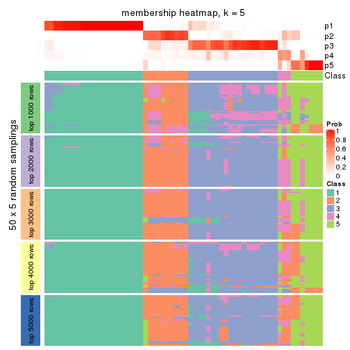
membership_heatmap(res, k = 6)
As soon as we have had the classes for columns, we can look for signatures which are significantly different between classes which can be candidate marks for certain classes. Following are the heatmaps for signatures.
Signature heatmaps where rows are scaled:
get_signatures(res, k = 2)
get_signatures(res, k = 3)
get_signatures(res, k = 4)
get_signatures(res, k = 5)
get_signatures(res, k = 6)
Signature heatmaps where rows are not scaled:
get_signatures(res, k = 2, scale_rows = FALSE)
get_signatures(res, k = 3, scale_rows = FALSE)
get_signatures(res, k = 4, scale_rows = FALSE)
get_signatures(res, k = 5, scale_rows = FALSE)
get_signatures(res, k = 6, scale_rows = FALSE)
Compare the overlap of signatures from different k:
compare_signatures(res)
get_signature() returns a data frame invisibly. TO get the list of signatures, the function
call should be assigned to a variable explicitly. In following code, if plot argument is set
to FALSE, no heatmap is plotted while only the differential analysis is performed.
# code only for demonstration
tb = get_signature(res, k = ..., plot = FALSE)
An example of the output of tb is:
#> which_row fdr mean_1 mean_2 scaled_mean_1 scaled_mean_2 km
#> 1 38 0.042760348 8.373488 9.131774 -0.5533452 0.5164555 1
#> 2 40 0.018707592 7.106213 8.469186 -0.6173731 0.5762149 1
#> 3 55 0.019134737 10.221463 11.207825 -0.6159697 0.5749050 1
#> 4 59 0.006059896 5.921854 7.869574 -0.6899429 0.6439467 1
#> 5 60 0.018055526 8.928898 10.211722 -0.6204761 0.5791110 1
#> 6 98 0.009384629 15.714769 14.887706 0.6635654 -0.6193277 2
...
The columns in tb are:
which_row: row indices corresponding to the input matrix.fdr: FDR for the differential test. mean_x: The mean value in group x.scaled_mean_x: The mean value in group x after rows are scaled.km: Row groups if k-means clustering is applied to rows.UMAP plot which shows how samples are separated.
dimension_reduction(res, k = 2, method = "UMAP")
dimension_reduction(res, k = 3, method = "UMAP")
dimension_reduction(res, k = 4, method = "UMAP")
dimension_reduction(res, k = 5, method = "UMAP")
dimension_reduction(res, k = 6, method = "UMAP")
Following heatmap shows how subgroups are split when increasing k:
collect_classes(res)
If matrix rows can be associated to genes, consider to use GO_Enrichment(res,
...) to perform function enrichment for the signature genes.
The object with results only for a single top-value method and a single partition method can be extracted as:
res = res_list["SD", "skmeans"]
# you can also extract it by
# res = res_list["SD:skmeans"]
A summary of res and all the functions that can be applied to it:
res
#> A 'ConsensusPartition' object with k = 2, 3, 4, 5, 6.
#> On a matrix with 12627 rows and 62 columns.
#> Top rows (1000, 2000, 3000, 4000, 5000) are extracted by 'SD' method.
#> Subgroups are detected by 'skmeans' method.
#> Performed in total 1250 partitions by row resampling.
#> Best k for subgroups seems to be 4.
#>
#> Following methods can be applied to this 'ConsensusPartition' object:
#> [1] "cola_report" "collect_classes" "collect_plots"
#> [4] "collect_stats" "colnames" "compare_signatures"
#> [7] "consensus_heatmap" "dimension_reduction" "functional_enrichment"
#> [10] "get_anno_col" "get_anno" "get_classes"
#> [13] "get_consensus" "get_matrix" "get_membership"
#> [16] "get_param" "get_signatures" "get_stats"
#> [19] "is_best_k" "is_stable_k" "membership_heatmap"
#> [22] "ncol" "nrow" "plot_ecdf"
#> [25] "rownames" "select_partition_number" "show"
#> [28] "suggest_best_k" "test_to_known_factors"
collect_plots() function collects all the plots made from res for all k (number of partitions)
into one single page to provide an easy and fast comparison between different k.
collect_plots(res)
The plots are:
k and the heatmap of
predicted classes for each k.k.k.k.All the plots in panels can be made by individual functions and they are plotted later in this section.
select_partition_number() produces several plots showing different
statistics for choosing “optimized” k. There are following statistics:
k;k, the area increased is defined as \(A_k - A_{k-1}\).The detailed explanations of these statistics can be found in the cola vignette.
Generally speaking, lower PAC score, higher mean silhouette score or higher
concordance corresponds to better partition. Rand index and Jaccard index
measure how similar the current partition is compared to partition with k-1.
If they are too similar, we won't accept k is better than k-1.
select_partition_number(res)
The numeric values for all these statistics can be obtained by get_stats().
get_stats(res)
#> k 1-PAC mean_silhouette concordance area_increased Rand Jaccard
#> 2 2 1.000 0.977 0.989 0.4998 0.500 0.500
#> 3 3 0.842 0.827 0.905 0.2151 0.870 0.747
#> 4 4 0.937 0.911 0.960 0.1070 0.921 0.803
#> 5 5 0.837 0.803 0.886 0.0446 0.987 0.961
#> 6 6 0.799 0.640 0.836 0.0320 0.958 0.876
suggest_best_k() suggests the best \(k\) based on these statistics. The rules are as follows:
NA.suggest_best_k(res)
#> [1] 4
#> attr(,"optional")
#> [1] 2
There is also optional best \(k\) = 2 that is worth to check.
Following shows the table of the partitions (You need to click the show/hide
code output link to see it). The membership matrix (columns with name p*)
is inferred by
clue::cl_consensus()
function with the SE method. Basically the value in the membership matrix
represents the probability to belong to a certain group. The finall class
label for an item is determined with the group with highest probability it
belongs to.
In get_classes() function, the entropy is calculated from the membership
matrix and the silhouette score is calculated from the consensus matrix.
cbind(get_classes(res, k = 2), get_membership(res, k = 2))
#> class entropy silhouette p1 p2
#> SRR372611 1 0.0000 0.991 1.000 0.000
#> SRR372612 1 0.0000 0.991 1.000 0.000
#> SRR372613 2 0.0000 0.986 0.000 1.000
#> SRR372614 1 0.0000 0.991 1.000 0.000
#> SRR372615 2 0.0000 0.986 0.000 1.000
#> SRR372616 2 0.4815 0.881 0.104 0.896
#> SRR372617 1 0.0000 0.991 1.000 0.000
#> SRR372618 1 0.0000 0.991 1.000 0.000
#> SRR372619 2 0.0000 0.986 0.000 1.000
#> SRR372620 1 0.0000 0.991 1.000 0.000
#> SRR372621 2 0.0000 0.986 0.000 1.000
#> SRR372622 1 0.0000 0.991 1.000 0.000
#> SRR372623 2 0.0000 0.986 0.000 1.000
#> SRR372624 1 0.0000 0.991 1.000 0.000
#> SRR372625 1 0.0000 0.991 1.000 0.000
#> SRR372626 2 0.0000 0.986 0.000 1.000
#> SRR372627 1 0.0000 0.991 1.000 0.000
#> SRR372628 1 0.0000 0.991 1.000 0.000
#> SRR372629 1 0.0000 0.991 1.000 0.000
#> SRR372630 1 0.0000 0.991 1.000 0.000
#> SRR372631 1 0.0000 0.991 1.000 0.000
#> SRR372632 1 0.0000 0.991 1.000 0.000
#> SRR372633 2 0.0000 0.986 0.000 1.000
#> SRR372634 1 0.0000 0.991 1.000 0.000
#> SRR372635 1 0.6148 0.821 0.848 0.152
#> SRR372636 1 0.0000 0.991 1.000 0.000
#> SRR372637 2 0.0938 0.976 0.012 0.988
#> SRR372638 1 0.0000 0.991 1.000 0.000
#> SRR372639 2 0.0000 0.986 0.000 1.000
#> SRR372640 1 0.0000 0.991 1.000 0.000
#> SRR372641 1 0.0000 0.991 1.000 0.000
#> SRR372642 1 0.0000 0.991 1.000 0.000
#> SRR372643 2 0.0000 0.986 0.000 1.000
#> SRR372644 1 0.0000 0.991 1.000 0.000
#> SRR372645 2 0.0000 0.986 0.000 1.000
#> SRR372646 1 0.0000 0.991 1.000 0.000
#> SRR372647 1 0.0000 0.991 1.000 0.000
#> SRR372648 1 0.0000 0.991 1.000 0.000
#> SRR372649 1 0.0000 0.991 1.000 0.000
#> SRR372650 2 0.0000 0.986 0.000 1.000
#> SRR372651 2 0.0000 0.986 0.000 1.000
#> SRR372652 2 0.0000 0.986 0.000 1.000
#> SRR372653 2 0.0000 0.986 0.000 1.000
#> SRR372654 1 0.0000 0.991 1.000 0.000
#> SRR372655 2 0.0000 0.986 0.000 1.000
#> SRR372656 1 0.0000 0.991 1.000 0.000
#> SRR372657 1 0.0000 0.991 1.000 0.000
#> SRR372658 2 0.0000 0.986 0.000 1.000
#> SRR372659 2 0.0000 0.986 0.000 1.000
#> SRR372660 2 0.0000 0.986 0.000 1.000
#> SRR372661 2 0.0000 0.986 0.000 1.000
#> SRR372662 2 0.8016 0.683 0.244 0.756
#> SRR372663 2 0.0000 0.986 0.000 1.000
#> SRR372664 1 0.0000 0.991 1.000 0.000
#> SRR372665 2 0.0000 0.986 0.000 1.000
#> SRR372666 2 0.0000 0.986 0.000 1.000
#> SRR372667 2 0.0000 0.986 0.000 1.000
#> SRR372668 1 0.0000 0.991 1.000 0.000
#> SRR372669 1 0.0000 0.991 1.000 0.000
#> SRR372670 1 0.0000 0.991 1.000 0.000
#> SRR372671 2 0.0000 0.986 0.000 1.000
#> SRR372672 1 0.5946 0.830 0.856 0.144
cbind(get_classes(res, k = 3), get_membership(res, k = 3))
#> class entropy silhouette p1 p2 p3
#> SRR372611 1 0.0000 0.9568 1.000 0.000 0.000
#> SRR372612 1 0.0000 0.9568 1.000 0.000 0.000
#> SRR372613 2 0.0000 0.7522 0.000 1.000 0.000
#> SRR372614 1 0.5637 0.7386 0.788 0.172 0.040
#> SRR372615 3 0.6215 0.8606 0.000 0.428 0.572
#> SRR372616 2 0.5098 0.6497 0.000 0.752 0.248
#> SRR372617 1 0.6897 0.4077 0.548 0.016 0.436
#> SRR372618 1 0.0000 0.9568 1.000 0.000 0.000
#> SRR372619 3 0.6215 0.8606 0.000 0.428 0.572
#> SRR372620 1 0.0000 0.9568 1.000 0.000 0.000
#> SRR372621 3 0.6215 0.8606 0.000 0.428 0.572
#> SRR372622 1 0.0000 0.9568 1.000 0.000 0.000
#> SRR372623 3 0.6215 0.8606 0.000 0.428 0.572
#> SRR372624 1 0.0000 0.9568 1.000 0.000 0.000
#> SRR372625 1 0.0000 0.9568 1.000 0.000 0.000
#> SRR372626 3 0.6215 0.8606 0.000 0.428 0.572
#> SRR372627 1 0.0000 0.9568 1.000 0.000 0.000
#> SRR372628 1 0.0000 0.9568 1.000 0.000 0.000
#> SRR372629 1 0.5098 0.7118 0.752 0.000 0.248
#> SRR372630 1 0.0000 0.9568 1.000 0.000 0.000
#> SRR372631 1 0.6432 0.4442 0.568 0.004 0.428
#> SRR372632 1 0.0000 0.9568 1.000 0.000 0.000
#> SRR372633 3 0.1529 0.3571 0.000 0.040 0.960
#> SRR372634 1 0.0000 0.9568 1.000 0.000 0.000
#> SRR372635 3 0.5465 -0.0844 0.288 0.000 0.712
#> SRR372636 1 0.0000 0.9568 1.000 0.000 0.000
#> SRR372637 3 0.0000 0.2990 0.000 0.000 1.000
#> SRR372638 1 0.0000 0.9568 1.000 0.000 0.000
#> SRR372639 3 0.6215 0.8606 0.000 0.428 0.572
#> SRR372640 1 0.0000 0.9568 1.000 0.000 0.000
#> SRR372641 1 0.0000 0.9568 1.000 0.000 0.000
#> SRR372642 1 0.0000 0.9568 1.000 0.000 0.000
#> SRR372643 3 0.6168 0.8452 0.000 0.412 0.588
#> SRR372644 1 0.0000 0.9568 1.000 0.000 0.000
#> SRR372645 3 0.5431 0.6921 0.000 0.284 0.716
#> SRR372646 1 0.0000 0.9568 1.000 0.000 0.000
#> SRR372647 1 0.0000 0.9568 1.000 0.000 0.000
#> SRR372648 1 0.0000 0.9568 1.000 0.000 0.000
#> SRR372649 1 0.0000 0.9568 1.000 0.000 0.000
#> SRR372650 2 0.0747 0.7268 0.000 0.984 0.016
#> SRR372651 3 0.6215 0.8606 0.000 0.428 0.572
#> SRR372652 2 0.0000 0.7522 0.000 1.000 0.000
#> SRR372653 3 0.6215 0.8606 0.000 0.428 0.572
#> SRR372654 1 0.0000 0.9568 1.000 0.000 0.000
#> SRR372655 3 0.6215 0.8606 0.000 0.428 0.572
#> SRR372656 1 0.0000 0.9568 1.000 0.000 0.000
#> SRR372657 1 0.0000 0.9568 1.000 0.000 0.000
#> SRR372658 3 0.6215 0.8606 0.000 0.428 0.572
#> SRR372659 3 0.6215 0.8606 0.000 0.428 0.572
#> SRR372660 2 0.0000 0.7522 0.000 1.000 0.000
#> SRR372661 3 0.6215 0.8606 0.000 0.428 0.572
#> SRR372662 2 0.6215 0.5550 0.000 0.572 0.428
#> SRR372663 2 0.0000 0.7522 0.000 1.000 0.000
#> SRR372664 1 0.0000 0.9568 1.000 0.000 0.000
#> SRR372665 3 0.6215 0.8606 0.000 0.428 0.572
#> SRR372666 2 0.0000 0.7522 0.000 1.000 0.000
#> SRR372667 3 0.6215 0.8606 0.000 0.428 0.572
#> SRR372668 1 0.0000 0.9568 1.000 0.000 0.000
#> SRR372669 1 0.2448 0.8974 0.924 0.000 0.076
#> SRR372670 1 0.0000 0.9568 1.000 0.000 0.000
#> SRR372671 3 0.6215 0.8606 0.000 0.428 0.572
#> SRR372672 2 0.6215 0.5550 0.000 0.572 0.428
cbind(get_classes(res, k = 4), get_membership(res, k = 4))
#> class entropy silhouette p1 p2 p3 p4
#> SRR372611 1 0.0779 0.969 0.980 0.000 0.004 0.016
#> SRR372612 1 0.0000 0.985 1.000 0.000 0.000 0.000
#> SRR372613 4 0.2760 0.841 0.000 0.128 0.000 0.872
#> SRR372614 1 0.4360 0.667 0.744 0.000 0.008 0.248
#> SRR372615 2 0.0188 0.944 0.000 0.996 0.000 0.004
#> SRR372616 4 0.0188 0.836 0.000 0.004 0.000 0.996
#> SRR372617 3 0.1042 0.923 0.020 0.000 0.972 0.008
#> SRR372618 1 0.0000 0.985 1.000 0.000 0.000 0.000
#> SRR372619 2 0.0188 0.947 0.000 0.996 0.000 0.004
#> SRR372620 1 0.0000 0.985 1.000 0.000 0.000 0.000
#> SRR372621 2 0.0336 0.946 0.000 0.992 0.000 0.008
#> SRR372622 1 0.0779 0.969 0.980 0.000 0.016 0.004
#> SRR372623 2 0.0469 0.939 0.000 0.988 0.012 0.000
#> SRR372624 1 0.0000 0.985 1.000 0.000 0.000 0.000
#> SRR372625 1 0.0000 0.985 1.000 0.000 0.000 0.000
#> SRR372626 2 0.0188 0.947 0.000 0.996 0.000 0.004
#> SRR372627 1 0.0000 0.985 1.000 0.000 0.000 0.000
#> SRR372628 1 0.0000 0.985 1.000 0.000 0.000 0.000
#> SRR372629 3 0.3047 0.807 0.116 0.000 0.872 0.012
#> SRR372630 1 0.0000 0.985 1.000 0.000 0.000 0.000
#> SRR372631 3 0.0707 0.927 0.000 0.000 0.980 0.020
#> SRR372632 1 0.0000 0.985 1.000 0.000 0.000 0.000
#> SRR372633 3 0.2081 0.870 0.000 0.084 0.916 0.000
#> SRR372634 1 0.0000 0.985 1.000 0.000 0.000 0.000
#> SRR372635 3 0.0000 0.929 0.000 0.000 1.000 0.000
#> SRR372636 1 0.0000 0.985 1.000 0.000 0.000 0.000
#> SRR372637 3 0.0188 0.930 0.000 0.004 0.996 0.000
#> SRR372638 1 0.0000 0.985 1.000 0.000 0.000 0.000
#> SRR372639 2 0.0188 0.947 0.000 0.996 0.000 0.004
#> SRR372640 1 0.0000 0.985 1.000 0.000 0.000 0.000
#> SRR372641 1 0.0000 0.985 1.000 0.000 0.000 0.000
#> SRR372642 1 0.0000 0.985 1.000 0.000 0.000 0.000
#> SRR372643 2 0.4483 0.600 0.000 0.712 0.284 0.004
#> SRR372644 1 0.0000 0.985 1.000 0.000 0.000 0.000
#> SRR372645 2 0.4991 0.359 0.000 0.608 0.388 0.004
#> SRR372646 1 0.0000 0.985 1.000 0.000 0.000 0.000
#> SRR372647 1 0.0000 0.985 1.000 0.000 0.000 0.000
#> SRR372648 1 0.0000 0.985 1.000 0.000 0.000 0.000
#> SRR372649 1 0.0000 0.985 1.000 0.000 0.000 0.000
#> SRR372650 4 0.4999 0.152 0.000 0.492 0.000 0.508
#> SRR372651 2 0.0336 0.946 0.000 0.992 0.000 0.008
#> SRR372652 4 0.1716 0.864 0.000 0.064 0.000 0.936
#> SRR372653 2 0.0469 0.944 0.000 0.988 0.000 0.012
#> SRR372654 1 0.0000 0.985 1.000 0.000 0.000 0.000
#> SRR372655 2 0.0000 0.946 0.000 1.000 0.000 0.000
#> SRR372656 1 0.0000 0.985 1.000 0.000 0.000 0.000
#> SRR372657 1 0.0000 0.985 1.000 0.000 0.000 0.000
#> SRR372658 2 0.0336 0.946 0.000 0.992 0.000 0.008
#> SRR372659 2 0.0927 0.936 0.000 0.976 0.016 0.008
#> SRR372660 4 0.3074 0.820 0.000 0.152 0.000 0.848
#> SRR372661 2 0.0376 0.943 0.000 0.992 0.004 0.004
#> SRR372662 4 0.0592 0.828 0.000 0.000 0.016 0.984
#> SRR372663 4 0.2081 0.862 0.000 0.084 0.000 0.916
#> SRR372664 1 0.0000 0.985 1.000 0.000 0.000 0.000
#> SRR372665 2 0.0336 0.946 0.000 0.992 0.000 0.008
#> SRR372666 4 0.1792 0.865 0.000 0.068 0.000 0.932
#> SRR372667 2 0.0336 0.946 0.000 0.992 0.000 0.008
#> SRR372668 1 0.0000 0.985 1.000 0.000 0.000 0.000
#> SRR372669 1 0.2987 0.863 0.880 0.000 0.104 0.016
#> SRR372670 1 0.0000 0.985 1.000 0.000 0.000 0.000
#> SRR372671 2 0.0336 0.946 0.000 0.992 0.000 0.008
#> SRR372672 4 0.0592 0.828 0.000 0.000 0.016 0.984
cbind(get_classes(res, k = 5), get_membership(res, k = 5))
#> class entropy silhouette p1 p2 p3 p4 p5
#> SRR372611 1 0.4080 0.723030 0.760 0.000 0.012 0.016 NA
#> SRR372612 1 0.0162 0.948959 0.996 0.000 0.000 0.000 NA
#> SRR372613 4 0.2411 0.813093 0.000 0.108 0.000 0.884 NA
#> SRR372614 1 0.6104 0.370456 0.560 0.000 0.004 0.140 NA
#> SRR372615 2 0.1892 0.820237 0.000 0.916 0.004 0.000 NA
#> SRR372616 4 0.2690 0.783661 0.000 0.000 0.000 0.844 NA
#> SRR372617 3 0.3724 0.765262 0.020 0.000 0.776 0.000 NA
#> SRR372618 1 0.0000 0.949228 1.000 0.000 0.000 0.000 NA
#> SRR372619 2 0.1952 0.817907 0.000 0.912 0.000 0.004 NA
#> SRR372620 1 0.0000 0.949228 1.000 0.000 0.000 0.000 NA
#> SRR372621 2 0.1410 0.826547 0.000 0.940 0.000 0.000 NA
#> SRR372622 1 0.4196 0.741073 0.780 0.000 0.040 0.012 NA
#> SRR372623 2 0.3409 0.759941 0.000 0.816 0.024 0.000 NA
#> SRR372624 1 0.0290 0.947075 0.992 0.000 0.000 0.000 NA
#> SRR372625 1 0.0290 0.947075 0.992 0.000 0.000 0.000 NA
#> SRR372626 2 0.1732 0.819172 0.000 0.920 0.000 0.000 NA
#> SRR372627 1 0.0290 0.947075 0.992 0.000 0.000 0.000 NA
#> SRR372628 1 0.0290 0.947075 0.992 0.000 0.000 0.000 NA
#> SRR372629 3 0.5960 0.651458 0.120 0.000 0.528 0.000 NA
#> SRR372630 1 0.0000 0.949228 1.000 0.000 0.000 0.000 NA
#> SRR372631 3 0.3730 0.770994 0.000 0.000 0.712 0.000 NA
#> SRR372632 1 0.0000 0.949228 1.000 0.000 0.000 0.000 NA
#> SRR372633 3 0.4914 0.683040 0.000 0.108 0.712 0.000 NA
#> SRR372634 1 0.0000 0.949228 1.000 0.000 0.000 0.000 NA
#> SRR372635 3 0.1965 0.794411 0.000 0.000 0.904 0.000 NA
#> SRR372636 1 0.0000 0.949228 1.000 0.000 0.000 0.000 NA
#> SRR372637 3 0.1956 0.776662 0.000 0.008 0.916 0.000 NA
#> SRR372638 1 0.0000 0.949228 1.000 0.000 0.000 0.000 NA
#> SRR372639 2 0.2770 0.813719 0.000 0.888 0.020 0.016 NA
#> SRR372640 1 0.0000 0.949228 1.000 0.000 0.000 0.000 NA
#> SRR372641 1 0.0510 0.941563 0.984 0.000 0.000 0.000 NA
#> SRR372642 1 0.0609 0.939117 0.980 0.000 0.000 0.000 NA
#> SRR372643 2 0.6938 0.178682 0.000 0.472 0.276 0.016 NA
#> SRR372644 1 0.0162 0.948959 0.996 0.000 0.000 0.000 NA
#> SRR372645 2 0.6697 -0.123075 0.000 0.384 0.376 0.000 NA
#> SRR372646 1 0.0162 0.948959 0.996 0.000 0.000 0.000 NA
#> SRR372647 1 0.0609 0.942572 0.980 0.000 0.000 0.000 NA
#> SRR372648 1 0.0162 0.948959 0.996 0.000 0.000 0.000 NA
#> SRR372649 1 0.0162 0.948260 0.996 0.000 0.000 0.000 NA
#> SRR372650 2 0.4659 -0.000209 0.000 0.496 0.000 0.492 NA
#> SRR372651 2 0.0963 0.831405 0.000 0.964 0.000 0.036 NA
#> SRR372652 4 0.1626 0.841508 0.000 0.044 0.000 0.940 NA
#> SRR372653 2 0.3081 0.752132 0.000 0.832 0.000 0.156 NA
#> SRR372654 1 0.1410 0.911560 0.940 0.000 0.000 0.000 NA
#> SRR372655 2 0.0794 0.829525 0.000 0.972 0.000 0.000 NA
#> SRR372656 1 0.0162 0.948959 0.996 0.000 0.000 0.000 NA
#> SRR372657 1 0.0162 0.948959 0.996 0.000 0.000 0.000 NA
#> SRR372658 2 0.0963 0.831405 0.000 0.964 0.000 0.036 NA
#> SRR372659 2 0.4443 0.761026 0.000 0.800 0.068 0.048 NA
#> SRR372660 4 0.3280 0.736641 0.000 0.176 0.000 0.812 NA
#> SRR372661 2 0.2921 0.789684 0.000 0.856 0.020 0.000 NA
#> SRR372662 4 0.3550 0.742904 0.000 0.000 0.004 0.760 NA
#> SRR372663 4 0.1544 0.839086 0.000 0.068 0.000 0.932 NA
#> SRR372664 1 0.0162 0.948959 0.996 0.000 0.000 0.000 NA
#> SRR372665 2 0.0963 0.831405 0.000 0.964 0.000 0.036 NA
#> SRR372666 4 0.1270 0.842502 0.000 0.052 0.000 0.948 NA
#> SRR372667 2 0.0963 0.831405 0.000 0.964 0.000 0.036 NA
#> SRR372668 1 0.0000 0.949228 1.000 0.000 0.000 0.000 NA
#> SRR372669 1 0.6149 0.377207 0.576 0.000 0.144 0.008 NA
#> SRR372670 1 0.0162 0.948959 0.996 0.000 0.000 0.000 NA
#> SRR372671 2 0.1124 0.831009 0.000 0.960 0.000 0.036 NA
#> SRR372672 4 0.3424 0.741237 0.000 0.000 0.000 0.760 NA
cbind(get_classes(res, k = 6), get_membership(res, k = 6))
#> class entropy silhouette p1 p2 p3 p4 p5 p6
#> SRR372611 1 0.5802 -0.32947 0.576 0.184 0.012 0.004 0.000 0.224
#> SRR372612 1 0.0000 0.89375 1.000 0.000 0.000 0.000 0.000 0.000
#> SRR372613 4 0.2070 0.70747 0.000 0.000 0.000 0.892 0.100 0.008
#> SRR372614 6 0.6139 0.00000 0.380 0.060 0.012 0.056 0.000 0.492
#> SRR372615 5 0.2053 0.79513 0.000 0.108 0.004 0.000 0.888 0.000
#> SRR372616 4 0.3464 0.56813 0.000 0.000 0.000 0.688 0.000 0.312
#> SRR372617 3 0.5408 0.10847 0.032 0.136 0.652 0.000 0.000 0.180
#> SRR372618 1 0.0603 0.88179 0.980 0.004 0.000 0.000 0.000 0.016
#> SRR372619 5 0.3222 0.75673 0.000 0.140 0.000 0.012 0.824 0.024
#> SRR372620 1 0.0000 0.89375 1.000 0.000 0.000 0.000 0.000 0.000
#> SRR372621 5 0.1806 0.80375 0.000 0.088 0.000 0.004 0.908 0.000
#> SRR372622 1 0.5709 0.00763 0.644 0.116 0.036 0.012 0.000 0.192
#> SRR372623 5 0.4970 0.61321 0.000 0.244 0.044 0.004 0.672 0.036
#> SRR372624 1 0.0000 0.89375 1.000 0.000 0.000 0.000 0.000 0.000
#> SRR372625 1 0.0000 0.89375 1.000 0.000 0.000 0.000 0.000 0.000
#> SRR372626 5 0.3338 0.76402 0.000 0.152 0.000 0.012 0.812 0.024
#> SRR372627 1 0.0000 0.89375 1.000 0.000 0.000 0.000 0.000 0.000
#> SRR372628 1 0.0000 0.89375 1.000 0.000 0.000 0.000 0.000 0.000
#> SRR372629 2 0.7106 0.00000 0.128 0.456 0.224 0.000 0.000 0.192
#> SRR372630 1 0.0000 0.89375 1.000 0.000 0.000 0.000 0.000 0.000
#> SRR372631 3 0.5631 -0.15113 0.000 0.416 0.452 0.004 0.000 0.128
#> SRR372632 1 0.0000 0.89375 1.000 0.000 0.000 0.000 0.000 0.000
#> SRR372633 3 0.4862 0.32882 0.000 0.228 0.672 0.000 0.088 0.012
#> SRR372634 1 0.0000 0.89375 1.000 0.000 0.000 0.000 0.000 0.000
#> SRR372635 3 0.4278 0.24599 0.000 0.212 0.712 0.000 0.000 0.076
#> SRR372636 1 0.0622 0.88337 0.980 0.008 0.000 0.000 0.000 0.012
#> SRR372637 3 0.1484 0.36697 0.000 0.008 0.944 0.004 0.004 0.040
#> SRR372638 1 0.0000 0.89375 1.000 0.000 0.000 0.000 0.000 0.000
#> SRR372639 5 0.3096 0.78776 0.000 0.076 0.044 0.012 0.860 0.008
#> SRR372640 1 0.0000 0.89375 1.000 0.000 0.000 0.000 0.000 0.000
#> SRR372641 1 0.1564 0.82611 0.936 0.024 0.000 0.000 0.000 0.040
#> SRR372642 1 0.1391 0.84078 0.944 0.016 0.000 0.000 0.000 0.040
#> SRR372643 5 0.6147 0.23313 0.000 0.360 0.128 0.016 0.484 0.012
#> SRR372644 1 0.0146 0.89259 0.996 0.000 0.000 0.000 0.000 0.004
#> SRR372645 3 0.6543 0.17960 0.000 0.300 0.356 0.000 0.324 0.020
#> SRR372646 1 0.0146 0.89263 0.996 0.004 0.000 0.000 0.000 0.000
#> SRR372647 1 0.1261 0.85362 0.952 0.024 0.000 0.000 0.000 0.024
#> SRR372648 1 0.0291 0.89117 0.992 0.004 0.000 0.000 0.000 0.004
#> SRR372649 1 0.0692 0.87626 0.976 0.004 0.000 0.000 0.000 0.020
#> SRR372650 4 0.3797 0.18492 0.000 0.000 0.000 0.580 0.420 0.000
#> SRR372651 5 0.1411 0.81957 0.000 0.004 0.000 0.060 0.936 0.000
#> SRR372652 4 0.1636 0.70941 0.000 0.004 0.000 0.936 0.036 0.024
#> SRR372653 5 0.3314 0.63019 0.000 0.004 0.000 0.256 0.740 0.000
#> SRR372654 1 0.2887 0.66638 0.844 0.036 0.000 0.000 0.000 0.120
#> SRR372655 5 0.1007 0.81264 0.000 0.044 0.000 0.000 0.956 0.000
#> SRR372656 1 0.0806 0.87788 0.972 0.008 0.000 0.000 0.000 0.020
#> SRR372657 1 0.0291 0.89117 0.992 0.004 0.000 0.000 0.000 0.004
#> SRR372658 5 0.1327 0.81901 0.000 0.000 0.000 0.064 0.936 0.000
#> SRR372659 5 0.4937 0.69217 0.000 0.160 0.052 0.076 0.712 0.000
#> SRR372660 4 0.2814 0.64892 0.000 0.008 0.000 0.820 0.172 0.000
#> SRR372661 5 0.3941 0.68139 0.000 0.208 0.044 0.004 0.744 0.000
#> SRR372662 4 0.4912 0.44601 0.000 0.024 0.024 0.528 0.000 0.424
#> SRR372663 4 0.1204 0.71797 0.000 0.000 0.000 0.944 0.056 0.000
#> SRR372664 1 0.0291 0.89117 0.992 0.004 0.000 0.000 0.000 0.004
#> SRR372665 5 0.1327 0.81901 0.000 0.000 0.000 0.064 0.936 0.000
#> SRR372666 4 0.1141 0.71784 0.000 0.000 0.000 0.948 0.052 0.000
#> SRR372667 5 0.1327 0.81901 0.000 0.000 0.000 0.064 0.936 0.000
#> SRR372668 1 0.0000 0.89375 1.000 0.000 0.000 0.000 0.000 0.000
#> SRR372669 1 0.7331 -0.68163 0.356 0.200 0.104 0.004 0.000 0.336
#> SRR372670 1 0.0405 0.88915 0.988 0.004 0.000 0.000 0.000 0.008
#> SRR372671 5 0.1471 0.81859 0.000 0.004 0.000 0.064 0.932 0.000
#> SRR372672 4 0.4256 0.44080 0.000 0.016 0.000 0.520 0.000 0.464
Heatmaps for the consensus matrix. It visualizes the probability of two samples to be in a same group.
consensus_heatmap(res, k = 2)
consensus_heatmap(res, k = 3)
consensus_heatmap(res, k = 4)
consensus_heatmap(res, k = 5)
consensus_heatmap(res, k = 6)
Heatmaps for the membership of samples in all partitions to see how consistent they are:
membership_heatmap(res, k = 2)
membership_heatmap(res, k = 3)
membership_heatmap(res, k = 4)
membership_heatmap(res, k = 5)
membership_heatmap(res, k = 6)
As soon as we have had the classes for columns, we can look for signatures which are significantly different between classes which can be candidate marks for certain classes. Following are the heatmaps for signatures.
Signature heatmaps where rows are scaled:
get_signatures(res, k = 2)

get_signatures(res, k = 3)
get_signatures(res, k = 4)
get_signatures(res, k = 5)
get_signatures(res, k = 6)
Signature heatmaps where rows are not scaled:
get_signatures(res, k = 2, scale_rows = FALSE)
get_signatures(res, k = 3, scale_rows = FALSE)
get_signatures(res, k = 4, scale_rows = FALSE)
#> Error in mat[ceiling(1:nr/h_ratio), ceiling(1:nc/w_ratio), drop = FALSE]: subscript out of bounds

get_signatures(res, k = 5, scale_rows = FALSE)
#> Error in mat[ceiling(1:nr/h_ratio), ceiling(1:nc/w_ratio), drop = FALSE]: subscript out of bounds
get_signatures(res, k = 6, scale_rows = FALSE)
#> Error in mat[ceiling(1:nr/h_ratio), ceiling(1:nc/w_ratio), drop = FALSE]: subscript out of bounds

Compare the overlap of signatures from different k:
compare_signatures(res)
get_signature() returns a data frame invisibly. TO get the list of signatures, the function
call should be assigned to a variable explicitly. In following code, if plot argument is set
to FALSE, no heatmap is plotted while only the differential analysis is performed.
# code only for demonstration
tb = get_signature(res, k = ..., plot = FALSE)
An example of the output of tb is:
#> which_row fdr mean_1 mean_2 scaled_mean_1 scaled_mean_2 km
#> 1 38 0.042760348 8.373488 9.131774 -0.5533452 0.5164555 1
#> 2 40 0.018707592 7.106213 8.469186 -0.6173731 0.5762149 1
#> 3 55 0.019134737 10.221463 11.207825 -0.6159697 0.5749050 1
#> 4 59 0.006059896 5.921854 7.869574 -0.6899429 0.6439467 1
#> 5 60 0.018055526 8.928898 10.211722 -0.6204761 0.5791110 1
#> 6 98 0.009384629 15.714769 14.887706 0.6635654 -0.6193277 2
...
The columns in tb are:
which_row: row indices corresponding to the input matrix.fdr: FDR for the differential test. mean_x: The mean value in group x.scaled_mean_x: The mean value in group x after rows are scaled.km: Row groups if k-means clustering is applied to rows.UMAP plot which shows how samples are separated.
dimension_reduction(res, k = 2, method = "UMAP")
dimension_reduction(res, k = 3, method = "UMAP")
dimension_reduction(res, k = 4, method = "UMAP")
dimension_reduction(res, k = 5, method = "UMAP")
dimension_reduction(res, k = 6, method = "UMAP")
Following heatmap shows how subgroups are split when increasing k:
collect_classes(res)

If matrix rows can be associated to genes, consider to use GO_Enrichment(res,
...) to perform function enrichment for the signature genes.
The object with results only for a single top-value method and a single partition method can be extracted as:
res = res_list["SD", "pam"]
# you can also extract it by
# res = res_list["SD:pam"]
A summary of res and all the functions that can be applied to it:
res
#> A 'ConsensusPartition' object with k = 2, 3, 4, 5, 6.
#> On a matrix with 12627 rows and 62 columns.
#> Top rows (1000, 2000, 3000, 4000, 5000) are extracted by 'SD' method.
#> Subgroups are detected by 'pam' method.
#> Performed in total 1250 partitions by row resampling.
#> Best k for subgroups seems to be 5.
#>
#> Following methods can be applied to this 'ConsensusPartition' object:
#> [1] "cola_report" "collect_classes" "collect_plots"
#> [4] "collect_stats" "colnames" "compare_signatures"
#> [7] "consensus_heatmap" "dimension_reduction" "functional_enrichment"
#> [10] "get_anno_col" "get_anno" "get_classes"
#> [13] "get_consensus" "get_matrix" "get_membership"
#> [16] "get_param" "get_signatures" "get_stats"
#> [19] "is_best_k" "is_stable_k" "membership_heatmap"
#> [22] "ncol" "nrow" "plot_ecdf"
#> [25] "rownames" "select_partition_number" "show"
#> [28] "suggest_best_k" "test_to_known_factors"
collect_plots() function collects all the plots made from res for all k (number of partitions)
into one single page to provide an easy and fast comparison between different k.
collect_plots(res)
The plots are:
k and the heatmap of
predicted classes for each k.k.k.k.All the plots in panels can be made by individual functions and they are plotted later in this section.
select_partition_number() produces several plots showing different
statistics for choosing “optimized” k. There are following statistics:
k;k, the area increased is defined as \(A_k - A_{k-1}\).The detailed explanations of these statistics can be found in the cola vignette.
Generally speaking, lower PAC score, higher mean silhouette score or higher
concordance corresponds to better partition. Rand index and Jaccard index
measure how similar the current partition is compared to partition with k-1.
If they are too similar, we won't accept k is better than k-1.
select_partition_number(res)

The numeric values for all these statistics can be obtained by get_stats().
get_stats(res)
#> k 1-PAC mean_silhouette concordance area_increased Rand Jaccard
#> 2 2 0.840 0.941 0.968 0.40557 0.568 0.568
#> 3 3 0.896 0.884 0.957 0.54496 0.619 0.426
#> 4 4 0.845 0.854 0.941 0.13719 0.854 0.642
#> 5 5 0.941 0.887 0.958 0.07111 0.879 0.629
#> 6 6 0.938 0.865 0.951 0.00435 0.996 0.985
suggest_best_k() suggests the best \(k\) based on these statistics. The rules are as follows:
NA.suggest_best_k(res)
#> [1] 5
Following shows the table of the partitions (You need to click the show/hide
code output link to see it). The membership matrix (columns with name p*)
is inferred by
clue::cl_consensus()
function with the SE method. Basically the value in the membership matrix
represents the probability to belong to a certain group. The finall class
label for an item is determined with the group with highest probability it
belongs to.
In get_classes() function, the entropy is calculated from the membership
matrix and the silhouette score is calculated from the consensus matrix.
cbind(get_classes(res, k = 2), get_membership(res, k = 2))
#> class entropy silhouette p1 p2
#> SRR372611 1 0.000 0.996 1.000 0.000
#> SRR372612 1 0.000 0.996 1.000 0.000
#> SRR372613 2 0.000 0.896 0.000 1.000
#> SRR372614 1 0.000 0.996 1.000 0.000
#> SRR372615 2 0.605 0.848 0.148 0.852
#> SRR372616 1 0.000 0.996 1.000 0.000
#> SRR372617 1 0.000 0.996 1.000 0.000
#> SRR372618 1 0.000 0.996 1.000 0.000
#> SRR372619 2 0.000 0.896 0.000 1.000
#> SRR372620 1 0.000 0.996 1.000 0.000
#> SRR372621 2 0.615 0.846 0.152 0.848
#> SRR372622 1 0.000 0.996 1.000 0.000
#> SRR372623 1 0.595 0.809 0.856 0.144
#> SRR372624 1 0.000 0.996 1.000 0.000
#> SRR372625 1 0.000 0.996 1.000 0.000
#> SRR372626 2 0.615 0.846 0.152 0.848
#> SRR372627 1 0.000 0.996 1.000 0.000
#> SRR372628 1 0.000 0.996 1.000 0.000
#> SRR372629 1 0.000 0.996 1.000 0.000
#> SRR372630 1 0.000 0.996 1.000 0.000
#> SRR372631 1 0.000 0.996 1.000 0.000
#> SRR372632 1 0.000 0.996 1.000 0.000
#> SRR372633 1 0.000 0.996 1.000 0.000
#> SRR372634 1 0.000 0.996 1.000 0.000
#> SRR372635 1 0.000 0.996 1.000 0.000
#> SRR372636 1 0.000 0.996 1.000 0.000
#> SRR372637 1 0.000 0.996 1.000 0.000
#> SRR372638 1 0.000 0.996 1.000 0.000
#> SRR372639 2 0.999 0.211 0.484 0.516
#> SRR372640 1 0.000 0.996 1.000 0.000
#> SRR372641 1 0.000 0.996 1.000 0.000
#> SRR372642 1 0.000 0.996 1.000 0.000
#> SRR372643 2 0.881 0.676 0.300 0.700
#> SRR372644 1 0.000 0.996 1.000 0.000
#> SRR372645 1 0.000 0.996 1.000 0.000
#> SRR372646 1 0.000 0.996 1.000 0.000
#> SRR372647 1 0.000 0.996 1.000 0.000
#> SRR372648 1 0.000 0.996 1.000 0.000
#> SRR372649 1 0.000 0.996 1.000 0.000
#> SRR372650 2 0.000 0.896 0.000 1.000
#> SRR372651 2 0.000 0.896 0.000 1.000
#> SRR372652 1 0.000 0.996 1.000 0.000
#> SRR372653 2 0.000 0.896 0.000 1.000
#> SRR372654 1 0.000 0.996 1.000 0.000
#> SRR372655 2 0.000 0.896 0.000 1.000
#> SRR372656 1 0.000 0.996 1.000 0.000
#> SRR372657 1 0.000 0.996 1.000 0.000
#> SRR372658 2 0.000 0.896 0.000 1.000
#> SRR372659 2 0.714 0.813 0.196 0.804
#> SRR372660 2 0.745 0.797 0.212 0.788
#> SRR372661 2 0.714 0.813 0.196 0.804
#> SRR372662 1 0.000 0.996 1.000 0.000
#> SRR372663 2 0.000 0.896 0.000 1.000
#> SRR372664 1 0.000 0.996 1.000 0.000
#> SRR372665 2 0.000 0.896 0.000 1.000
#> SRR372666 1 0.000 0.996 1.000 0.000
#> SRR372667 2 0.000 0.896 0.000 1.000
#> SRR372668 1 0.000 0.996 1.000 0.000
#> SRR372669 1 0.000 0.996 1.000 0.000
#> SRR372670 1 0.000 0.996 1.000 0.000
#> SRR372671 2 0.000 0.896 0.000 1.000
#> SRR372672 1 0.000 0.996 1.000 0.000
cbind(get_classes(res, k = 3), get_membership(res, k = 3))
#> class entropy silhouette p1 p2 p3
#> SRR372611 1 0.6008 0.371 0.628 0.372 0.000
#> SRR372612 1 0.0000 0.962 1.000 0.000 0.000
#> SRR372613 3 0.0237 0.996 0.000 0.004 0.996
#> SRR372614 2 0.5760 0.499 0.328 0.672 0.000
#> SRR372615 2 0.0000 0.917 0.000 1.000 0.000
#> SRR372616 2 0.0000 0.917 0.000 1.000 0.000
#> SRR372617 2 0.0000 0.917 0.000 1.000 0.000
#> SRR372618 1 0.1753 0.914 0.952 0.048 0.000
#> SRR372619 2 0.6260 0.163 0.000 0.552 0.448
#> SRR372620 1 0.0000 0.962 1.000 0.000 0.000
#> SRR372621 2 0.0000 0.917 0.000 1.000 0.000
#> SRR372622 2 0.3686 0.787 0.140 0.860 0.000
#> SRR372623 2 0.0000 0.917 0.000 1.000 0.000
#> SRR372624 1 0.0000 0.962 1.000 0.000 0.000
#> SRR372625 1 0.0000 0.962 1.000 0.000 0.000
#> SRR372626 2 0.0000 0.917 0.000 1.000 0.000
#> SRR372627 1 0.0000 0.962 1.000 0.000 0.000
#> SRR372628 1 0.0000 0.962 1.000 0.000 0.000
#> SRR372629 2 0.0000 0.917 0.000 1.000 0.000
#> SRR372630 1 0.0000 0.962 1.000 0.000 0.000
#> SRR372631 2 0.0000 0.917 0.000 1.000 0.000
#> SRR372632 1 0.0000 0.962 1.000 0.000 0.000
#> SRR372633 2 0.0000 0.917 0.000 1.000 0.000
#> SRR372634 1 0.0000 0.962 1.000 0.000 0.000
#> SRR372635 2 0.0000 0.917 0.000 1.000 0.000
#> SRR372636 1 0.0000 0.962 1.000 0.000 0.000
#> SRR372637 2 0.0000 0.917 0.000 1.000 0.000
#> SRR372638 1 0.0000 0.962 1.000 0.000 0.000
#> SRR372639 2 0.0000 0.917 0.000 1.000 0.000
#> SRR372640 1 0.0000 0.962 1.000 0.000 0.000
#> SRR372641 2 0.6180 0.291 0.416 0.584 0.000
#> SRR372642 1 0.5650 0.515 0.688 0.312 0.000
#> SRR372643 2 0.0000 0.917 0.000 1.000 0.000
#> SRR372644 1 0.0000 0.962 1.000 0.000 0.000
#> SRR372645 2 0.0000 0.917 0.000 1.000 0.000
#> SRR372646 1 0.0000 0.962 1.000 0.000 0.000
#> SRR372647 1 0.0000 0.962 1.000 0.000 0.000
#> SRR372648 1 0.0000 0.962 1.000 0.000 0.000
#> SRR372649 1 0.0592 0.951 0.988 0.012 0.000
#> SRR372650 3 0.0000 0.999 0.000 0.000 1.000
#> SRR372651 3 0.0000 0.999 0.000 0.000 1.000
#> SRR372652 2 0.0000 0.917 0.000 1.000 0.000
#> SRR372653 3 0.0000 0.999 0.000 0.000 1.000
#> SRR372654 2 0.6291 0.129 0.468 0.532 0.000
#> SRR372655 3 0.0000 0.999 0.000 0.000 1.000
#> SRR372656 1 0.0000 0.962 1.000 0.000 0.000
#> SRR372657 1 0.0000 0.962 1.000 0.000 0.000
#> SRR372658 3 0.0000 0.999 0.000 0.000 1.000
#> SRR372659 2 0.0000 0.917 0.000 1.000 0.000
#> SRR372660 2 0.0000 0.917 0.000 1.000 0.000
#> SRR372661 2 0.0000 0.917 0.000 1.000 0.000
#> SRR372662 2 0.0000 0.917 0.000 1.000 0.000
#> SRR372663 2 0.3267 0.809 0.000 0.884 0.116
#> SRR372664 1 0.0000 0.962 1.000 0.000 0.000
#> SRR372665 3 0.0000 0.999 0.000 0.000 1.000
#> SRR372666 2 0.0000 0.917 0.000 1.000 0.000
#> SRR372667 3 0.0000 0.999 0.000 0.000 1.000
#> SRR372668 1 0.0000 0.962 1.000 0.000 0.000
#> SRR372669 2 0.0000 0.917 0.000 1.000 0.000
#> SRR372670 1 0.0000 0.962 1.000 0.000 0.000
#> SRR372671 3 0.0000 0.999 0.000 0.000 1.000
#> SRR372672 2 0.0000 0.917 0.000 1.000 0.000
cbind(get_classes(res, k = 4), get_membership(res, k = 4))
#> class entropy silhouette p1 p2 p3 p4
#> SRR372611 2 0.4193 0.612 0.268 0.732 0.000 0.000
#> SRR372612 1 0.0000 0.955 1.000 0.000 0.000 0.000
#> SRR372613 4 0.0000 0.849 0.000 0.000 0.000 1.000
#> SRR372614 2 0.0000 0.903 0.000 1.000 0.000 0.000
#> SRR372615 2 0.4697 0.421 0.000 0.644 0.000 0.356
#> SRR372616 4 0.0336 0.848 0.000 0.008 0.000 0.992
#> SRR372617 2 0.0000 0.903 0.000 1.000 0.000 0.000
#> SRR372618 1 0.2216 0.863 0.908 0.092 0.000 0.000
#> SRR372619 4 0.4866 0.356 0.000 0.000 0.404 0.596
#> SRR372620 1 0.0000 0.955 1.000 0.000 0.000 0.000
#> SRR372621 2 0.0188 0.901 0.000 0.996 0.000 0.004
#> SRR372622 2 0.0921 0.885 0.028 0.972 0.000 0.000
#> SRR372623 2 0.0000 0.903 0.000 1.000 0.000 0.000
#> SRR372624 1 0.0000 0.955 1.000 0.000 0.000 0.000
#> SRR372625 1 0.0000 0.955 1.000 0.000 0.000 0.000
#> SRR372626 4 0.3172 0.746 0.000 0.160 0.000 0.840
#> SRR372627 1 0.0000 0.955 1.000 0.000 0.000 0.000
#> SRR372628 1 0.0000 0.955 1.000 0.000 0.000 0.000
#> SRR372629 2 0.0000 0.903 0.000 1.000 0.000 0.000
#> SRR372630 1 0.0000 0.955 1.000 0.000 0.000 0.000
#> SRR372631 2 0.0000 0.903 0.000 1.000 0.000 0.000
#> SRR372632 1 0.0000 0.955 1.000 0.000 0.000 0.000
#> SRR372633 2 0.0000 0.903 0.000 1.000 0.000 0.000
#> SRR372634 1 0.0000 0.955 1.000 0.000 0.000 0.000
#> SRR372635 2 0.0000 0.903 0.000 1.000 0.000 0.000
#> SRR372636 1 0.0000 0.955 1.000 0.000 0.000 0.000
#> SRR372637 2 0.0000 0.903 0.000 1.000 0.000 0.000
#> SRR372638 1 0.0000 0.955 1.000 0.000 0.000 0.000
#> SRR372639 2 0.4643 0.445 0.000 0.656 0.000 0.344
#> SRR372640 1 0.0000 0.955 1.000 0.000 0.000 0.000
#> SRR372641 2 0.0592 0.894 0.016 0.984 0.000 0.000
#> SRR372642 2 0.4008 0.643 0.244 0.756 0.000 0.000
#> SRR372643 2 0.0921 0.887 0.000 0.972 0.000 0.028
#> SRR372644 1 0.0000 0.955 1.000 0.000 0.000 0.000
#> SRR372645 2 0.0000 0.903 0.000 1.000 0.000 0.000
#> SRR372646 1 0.0000 0.955 1.000 0.000 0.000 0.000
#> SRR372647 1 0.4713 0.439 0.640 0.360 0.000 0.000
#> SRR372648 1 0.0000 0.955 1.000 0.000 0.000 0.000
#> SRR372649 1 0.4761 0.410 0.628 0.372 0.000 0.000
#> SRR372650 4 0.4925 0.225 0.000 0.000 0.428 0.572
#> SRR372651 3 0.0188 0.997 0.000 0.000 0.996 0.004
#> SRR372652 4 0.0188 0.850 0.000 0.004 0.000 0.996
#> SRR372653 3 0.0000 0.998 0.000 0.000 1.000 0.000
#> SRR372654 2 0.2868 0.778 0.136 0.864 0.000 0.000
#> SRR372655 3 0.0188 0.997 0.000 0.000 0.996 0.004
#> SRR372656 1 0.0000 0.955 1.000 0.000 0.000 0.000
#> SRR372657 1 0.0000 0.955 1.000 0.000 0.000 0.000
#> SRR372658 3 0.0000 0.998 0.000 0.000 1.000 0.000
#> SRR372659 4 0.3172 0.746 0.000 0.160 0.000 0.840
#> SRR372660 4 0.0000 0.849 0.000 0.000 0.000 1.000
#> SRR372661 2 0.3801 0.675 0.000 0.780 0.000 0.220
#> SRR372662 2 0.0000 0.903 0.000 1.000 0.000 0.000
#> SRR372663 4 0.0000 0.849 0.000 0.000 0.000 1.000
#> SRR372664 1 0.0000 0.955 1.000 0.000 0.000 0.000
#> SRR372665 3 0.0000 0.998 0.000 0.000 1.000 0.000
#> SRR372666 4 0.0188 0.850 0.000 0.004 0.000 0.996
#> SRR372667 3 0.0000 0.998 0.000 0.000 1.000 0.000
#> SRR372668 1 0.0000 0.955 1.000 0.000 0.000 0.000
#> SRR372669 2 0.0000 0.903 0.000 1.000 0.000 0.000
#> SRR372670 1 0.0000 0.955 1.000 0.000 0.000 0.000
#> SRR372671 3 0.0188 0.997 0.000 0.000 0.996 0.004
#> SRR372672 2 0.0000 0.903 0.000 1.000 0.000 0.000
cbind(get_classes(res, k = 5), get_membership(res, k = 5))
#> class entropy silhouette p1 p2 p3 p4 p5
#> SRR372611 3 0.0000 0.9703 0.000 0.000 1.000 0.000 0.000
#> SRR372612 1 0.0000 0.9867 1.000 0.000 0.000 0.000 0.000
#> SRR372613 4 0.0000 0.8749 0.000 0.000 0.000 1.000 0.000
#> SRR372614 3 0.0000 0.9703 0.000 0.000 1.000 0.000 0.000
#> SRR372615 2 0.0000 0.8692 0.000 1.000 0.000 0.000 0.000
#> SRR372616 4 0.0162 0.8717 0.000 0.000 0.004 0.996 0.000
#> SRR372617 3 0.0000 0.9703 0.000 0.000 1.000 0.000 0.000
#> SRR372618 1 0.3210 0.7038 0.788 0.000 0.212 0.000 0.000
#> SRR372619 2 0.4182 0.2942 0.000 0.600 0.000 0.000 0.400
#> SRR372620 1 0.0000 0.9867 1.000 0.000 0.000 0.000 0.000
#> SRR372621 2 0.0000 0.8692 0.000 1.000 0.000 0.000 0.000
#> SRR372622 3 0.0000 0.9703 0.000 0.000 1.000 0.000 0.000
#> SRR372623 3 0.3039 0.7626 0.000 0.192 0.808 0.000 0.000
#> SRR372624 1 0.0000 0.9867 1.000 0.000 0.000 0.000 0.000
#> SRR372625 1 0.0000 0.9867 1.000 0.000 0.000 0.000 0.000
#> SRR372626 2 0.0000 0.8692 0.000 1.000 0.000 0.000 0.000
#> SRR372627 1 0.0000 0.9867 1.000 0.000 0.000 0.000 0.000
#> SRR372628 1 0.0000 0.9867 1.000 0.000 0.000 0.000 0.000
#> SRR372629 3 0.0000 0.9703 0.000 0.000 1.000 0.000 0.000
#> SRR372630 1 0.0000 0.9867 1.000 0.000 0.000 0.000 0.000
#> SRR372631 3 0.0000 0.9703 0.000 0.000 1.000 0.000 0.000
#> SRR372632 1 0.0000 0.9867 1.000 0.000 0.000 0.000 0.000
#> SRR372633 3 0.0162 0.9672 0.000 0.004 0.996 0.000 0.000
#> SRR372634 1 0.0000 0.9867 1.000 0.000 0.000 0.000 0.000
#> SRR372635 3 0.0000 0.9703 0.000 0.000 1.000 0.000 0.000
#> SRR372636 1 0.0000 0.9867 1.000 0.000 0.000 0.000 0.000
#> SRR372637 3 0.0000 0.9703 0.000 0.000 1.000 0.000 0.000
#> SRR372638 1 0.0000 0.9867 1.000 0.000 0.000 0.000 0.000
#> SRR372639 4 0.4430 0.4109 0.000 0.360 0.012 0.628 0.000
#> SRR372640 1 0.0000 0.9867 1.000 0.000 0.000 0.000 0.000
#> SRR372641 3 0.0000 0.9703 0.000 0.000 1.000 0.000 0.000
#> SRR372642 3 0.0000 0.9703 0.000 0.000 1.000 0.000 0.000
#> SRR372643 2 0.0000 0.8692 0.000 1.000 0.000 0.000 0.000
#> SRR372644 1 0.0000 0.9867 1.000 0.000 0.000 0.000 0.000
#> SRR372645 3 0.3774 0.6034 0.000 0.296 0.704 0.000 0.000
#> SRR372646 1 0.0000 0.9867 1.000 0.000 0.000 0.000 0.000
#> SRR372647 3 0.0162 0.9663 0.004 0.000 0.996 0.000 0.000
#> SRR372648 1 0.0000 0.9867 1.000 0.000 0.000 0.000 0.000
#> SRR372649 3 0.0000 0.9703 0.000 0.000 1.000 0.000 0.000
#> SRR372650 4 0.4235 0.2866 0.000 0.000 0.000 0.576 0.424
#> SRR372651 5 0.3210 0.6651 0.000 0.212 0.000 0.000 0.788
#> SRR372652 4 0.0000 0.8749 0.000 0.000 0.000 1.000 0.000
#> SRR372653 5 0.0000 0.9342 0.000 0.000 0.000 0.000 1.000
#> SRR372654 3 0.0000 0.9703 0.000 0.000 1.000 0.000 0.000
#> SRR372655 2 0.0000 0.8692 0.000 1.000 0.000 0.000 0.000
#> SRR372656 1 0.0290 0.9783 0.992 0.000 0.008 0.000 0.000
#> SRR372657 1 0.0000 0.9867 1.000 0.000 0.000 0.000 0.000
#> SRR372658 5 0.0000 0.9342 0.000 0.000 0.000 0.000 1.000
#> SRR372659 2 0.0000 0.8692 0.000 1.000 0.000 0.000 0.000
#> SRR372660 4 0.0000 0.8749 0.000 0.000 0.000 1.000 0.000
#> SRR372661 2 0.0000 0.8692 0.000 1.000 0.000 0.000 0.000
#> SRR372662 3 0.0000 0.9703 0.000 0.000 1.000 0.000 0.000
#> SRR372663 4 0.0000 0.8749 0.000 0.000 0.000 1.000 0.000
#> SRR372664 1 0.0000 0.9867 1.000 0.000 0.000 0.000 0.000
#> SRR372665 5 0.0000 0.9342 0.000 0.000 0.000 0.000 1.000
#> SRR372666 4 0.0000 0.8749 0.000 0.000 0.000 1.000 0.000
#> SRR372667 5 0.0000 0.9342 0.000 0.000 0.000 0.000 1.000
#> SRR372668 1 0.0000 0.9867 1.000 0.000 0.000 0.000 0.000
#> SRR372669 3 0.0000 0.9703 0.000 0.000 1.000 0.000 0.000
#> SRR372670 1 0.0000 0.9867 1.000 0.000 0.000 0.000 0.000
#> SRR372671 2 0.4307 0.0109 0.000 0.504 0.000 0.000 0.496
#> SRR372672 3 0.0000 0.9703 0.000 0.000 1.000 0.000 0.000
cbind(get_classes(res, k = 6), get_membership(res, k = 6))
#> class entropy silhouette p1 p2 p3 p4 p5 p6
#> SRR372611 3 0.0000 0.9677 0.000 0.000 1.000 0.000 0.000 0.000
#> SRR372612 1 0.0000 0.9856 1.000 0.000 0.000 0.000 0.000 0.000
#> SRR372613 4 0.2969 0.6044 0.000 0.000 0.000 0.776 0.000 0.224
#> SRR372614 3 0.0000 0.9677 0.000 0.000 1.000 0.000 0.000 0.000
#> SRR372615 2 0.0000 0.8583 0.000 1.000 0.000 0.000 0.000 0.000
#> SRR372616 4 0.0146 0.8215 0.000 0.000 0.004 0.996 0.000 0.000
#> SRR372617 3 0.0000 0.9677 0.000 0.000 1.000 0.000 0.000 0.000
#> SRR372618 1 0.2883 0.6712 0.788 0.000 0.212 0.000 0.000 0.000
#> SRR372619 2 0.4904 0.3283 0.000 0.600 0.000 0.000 0.316 0.084
#> SRR372620 1 0.0000 0.9856 1.000 0.000 0.000 0.000 0.000 0.000
#> SRR372621 2 0.0000 0.8583 0.000 1.000 0.000 0.000 0.000 0.000
#> SRR372622 3 0.0000 0.9677 0.000 0.000 1.000 0.000 0.000 0.000
#> SRR372623 3 0.2730 0.7431 0.000 0.192 0.808 0.000 0.000 0.000
#> SRR372624 1 0.0000 0.9856 1.000 0.000 0.000 0.000 0.000 0.000
#> SRR372625 1 0.0000 0.9856 1.000 0.000 0.000 0.000 0.000 0.000
#> SRR372626 2 0.0000 0.8583 0.000 1.000 0.000 0.000 0.000 0.000
#> SRR372627 1 0.0000 0.9856 1.000 0.000 0.000 0.000 0.000 0.000
#> SRR372628 1 0.0000 0.9856 1.000 0.000 0.000 0.000 0.000 0.000
#> SRR372629 3 0.0000 0.9677 0.000 0.000 1.000 0.000 0.000 0.000
#> SRR372630 1 0.0000 0.9856 1.000 0.000 0.000 0.000 0.000 0.000
#> SRR372631 3 0.0000 0.9677 0.000 0.000 1.000 0.000 0.000 0.000
#> SRR372632 1 0.0000 0.9856 1.000 0.000 0.000 0.000 0.000 0.000
#> SRR372633 3 0.0146 0.9643 0.000 0.004 0.996 0.000 0.000 0.000
#> SRR372634 1 0.0000 0.9856 1.000 0.000 0.000 0.000 0.000 0.000
#> SRR372635 3 0.0000 0.9677 0.000 0.000 1.000 0.000 0.000 0.000
#> SRR372636 1 0.0000 0.9856 1.000 0.000 0.000 0.000 0.000 0.000
#> SRR372637 3 0.0000 0.9677 0.000 0.000 1.000 0.000 0.000 0.000
#> SRR372638 1 0.0000 0.9856 1.000 0.000 0.000 0.000 0.000 0.000
#> SRR372639 4 0.3979 0.2831 0.000 0.360 0.012 0.628 0.000 0.000
#> SRR372640 1 0.0000 0.9856 1.000 0.000 0.000 0.000 0.000 0.000
#> SRR372641 3 0.0000 0.9677 0.000 0.000 1.000 0.000 0.000 0.000
#> SRR372642 3 0.0000 0.9677 0.000 0.000 1.000 0.000 0.000 0.000
#> SRR372643 2 0.0000 0.8583 0.000 1.000 0.000 0.000 0.000 0.000
#> SRR372644 1 0.0000 0.9856 1.000 0.000 0.000 0.000 0.000 0.000
#> SRR372645 3 0.3390 0.5849 0.000 0.296 0.704 0.000 0.000 0.000
#> SRR372646 1 0.0000 0.9856 1.000 0.000 0.000 0.000 0.000 0.000
#> SRR372647 3 0.0146 0.9633 0.004 0.000 0.996 0.000 0.000 0.000
#> SRR372648 1 0.0000 0.9856 1.000 0.000 0.000 0.000 0.000 0.000
#> SRR372649 3 0.0000 0.9677 0.000 0.000 1.000 0.000 0.000 0.000
#> SRR372650 6 0.3446 0.0000 0.000 0.000 0.000 0.308 0.000 0.692
#> SRR372651 5 0.4349 0.6300 0.000 0.208 0.000 0.000 0.708 0.084
#> SRR372652 4 0.0000 0.8259 0.000 0.000 0.000 1.000 0.000 0.000
#> SRR372653 5 0.0000 0.8848 0.000 0.000 0.000 0.000 1.000 0.000
#> SRR372654 3 0.0000 0.9677 0.000 0.000 1.000 0.000 0.000 0.000
#> SRR372655 2 0.0547 0.8464 0.000 0.980 0.000 0.000 0.000 0.020
#> SRR372656 1 0.0260 0.9766 0.992 0.000 0.008 0.000 0.000 0.000
#> SRR372657 1 0.0000 0.9856 1.000 0.000 0.000 0.000 0.000 0.000
#> SRR372658 5 0.0000 0.8848 0.000 0.000 0.000 0.000 1.000 0.000
#> SRR372659 2 0.0000 0.8583 0.000 1.000 0.000 0.000 0.000 0.000
#> SRR372660 4 0.0000 0.8259 0.000 0.000 0.000 1.000 0.000 0.000
#> SRR372661 2 0.0000 0.8583 0.000 1.000 0.000 0.000 0.000 0.000
#> SRR372662 3 0.0000 0.9677 0.000 0.000 1.000 0.000 0.000 0.000
#> SRR372663 4 0.0000 0.8259 0.000 0.000 0.000 1.000 0.000 0.000
#> SRR372664 1 0.0000 0.9856 1.000 0.000 0.000 0.000 0.000 0.000
#> SRR372665 5 0.0000 0.8848 0.000 0.000 0.000 0.000 1.000 0.000
#> SRR372666 4 0.0000 0.8259 0.000 0.000 0.000 1.000 0.000 0.000
#> SRR372667 5 0.1610 0.8529 0.000 0.000 0.000 0.000 0.916 0.084
#> SRR372668 1 0.0000 0.9856 1.000 0.000 0.000 0.000 0.000 0.000
#> SRR372669 3 0.0000 0.9677 0.000 0.000 1.000 0.000 0.000 0.000
#> SRR372670 1 0.0000 0.9856 1.000 0.000 0.000 0.000 0.000 0.000
#> SRR372671 2 0.5145 -0.0116 0.000 0.484 0.000 0.000 0.432 0.084
#> SRR372672 3 0.0000 0.9677 0.000 0.000 1.000 0.000 0.000 0.000
Heatmaps for the consensus matrix. It visualizes the probability of two samples to be in a same group.
consensus_heatmap(res, k = 2)
consensus_heatmap(res, k = 3)
consensus_heatmap(res, k = 4)
consensus_heatmap(res, k = 5)
consensus_heatmap(res, k = 6)
Heatmaps for the membership of samples in all partitions to see how consistent they are:
membership_heatmap(res, k = 2)
membership_heatmap(res, k = 3)
membership_heatmap(res, k = 4)
membership_heatmap(res, k = 5)
membership_heatmap(res, k = 6)
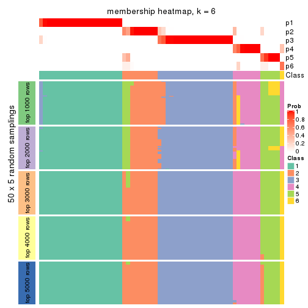
As soon as we have had the classes for columns, we can look for signatures which are significantly different between classes which can be candidate marks for certain classes. Following are the heatmaps for signatures.
Signature heatmaps where rows are scaled:
get_signatures(res, k = 2)
get_signatures(res, k = 3)
get_signatures(res, k = 4)
get_signatures(res, k = 5)
get_signatures(res, k = 6)
Signature heatmaps where rows are not scaled:
get_signatures(res, k = 2, scale_rows = FALSE)
#> Error in mat[ceiling(1:nr/h_ratio), ceiling(1:nc/w_ratio), drop = FALSE]: subscript out of bounds
get_signatures(res, k = 3, scale_rows = FALSE)
#> Error in mat[ceiling(1:nr/h_ratio), ceiling(1:nc/w_ratio), drop = FALSE]: subscript out of bounds
get_signatures(res, k = 4, scale_rows = FALSE)
#> Error in mat[ceiling(1:nr/h_ratio), ceiling(1:nc/w_ratio), drop = FALSE]: subscript out of bounds

get_signatures(res, k = 5, scale_rows = FALSE)
#> Error in mat[ceiling(1:nr/h_ratio), ceiling(1:nc/w_ratio), drop = FALSE]: subscript out of bounds

get_signatures(res, k = 6, scale_rows = FALSE)
#> Error in mat[ceiling(1:nr/h_ratio), ceiling(1:nc/w_ratio), drop = FALSE]: subscript out of bounds

Compare the overlap of signatures from different k:
compare_signatures(res)
get_signature() returns a data frame invisibly. TO get the list of signatures, the function
call should be assigned to a variable explicitly. In following code, if plot argument is set
to FALSE, no heatmap is plotted while only the differential analysis is performed.
# code only for demonstration
tb = get_signature(res, k = ..., plot = FALSE)
An example of the output of tb is:
#> which_row fdr mean_1 mean_2 scaled_mean_1 scaled_mean_2 km
#> 1 38 0.042760348 8.373488 9.131774 -0.5533452 0.5164555 1
#> 2 40 0.018707592 7.106213 8.469186 -0.6173731 0.5762149 1
#> 3 55 0.019134737 10.221463 11.207825 -0.6159697 0.5749050 1
#> 4 59 0.006059896 5.921854 7.869574 -0.6899429 0.6439467 1
#> 5 60 0.018055526 8.928898 10.211722 -0.6204761 0.5791110 1
#> 6 98 0.009384629 15.714769 14.887706 0.6635654 -0.6193277 2
...
The columns in tb are:
which_row: row indices corresponding to the input matrix.fdr: FDR for the differential test. mean_x: The mean value in group x.scaled_mean_x: The mean value in group x after rows are scaled.km: Row groups if k-means clustering is applied to rows.UMAP plot which shows how samples are separated.
dimension_reduction(res, k = 2, method = "UMAP")
dimension_reduction(res, k = 3, method = "UMAP")
dimension_reduction(res, k = 4, method = "UMAP")
dimension_reduction(res, k = 5, method = "UMAP")
dimension_reduction(res, k = 6, method = "UMAP")
Following heatmap shows how subgroups are split when increasing k:
collect_classes(res)
If matrix rows can be associated to genes, consider to use GO_Enrichment(res,
...) to perform function enrichment for the signature genes.
The object with results only for a single top-value method and a single partition method can be extracted as:
res = res_list["SD", "mclust"]
# you can also extract it by
# res = res_list["SD:mclust"]
A summary of res and all the functions that can be applied to it:
res
#> A 'ConsensusPartition' object with k = 2, 3, 4, 5, 6.
#> On a matrix with 12627 rows and 62 columns.
#> Top rows (1000, 2000, 3000, 4000, 5000) are extracted by 'SD' method.
#> Subgroups are detected by 'mclust' method.
#> Performed in total 1250 partitions by row resampling.
#> Best k for subgroups seems to be 2.
#>
#> Following methods can be applied to this 'ConsensusPartition' object:
#> [1] "cola_report" "collect_classes" "collect_plots"
#> [4] "collect_stats" "colnames" "compare_signatures"
#> [7] "consensus_heatmap" "dimension_reduction" "functional_enrichment"
#> [10] "get_anno_col" "get_anno" "get_classes"
#> [13] "get_consensus" "get_matrix" "get_membership"
#> [16] "get_param" "get_signatures" "get_stats"
#> [19] "is_best_k" "is_stable_k" "membership_heatmap"
#> [22] "ncol" "nrow" "plot_ecdf"
#> [25] "rownames" "select_partition_number" "show"
#> [28] "suggest_best_k" "test_to_known_factors"
collect_plots() function collects all the plots made from res for all k (number of partitions)
into one single page to provide an easy and fast comparison between different k.
collect_plots(res)
The plots are:
k and the heatmap of
predicted classes for each k.k.k.k.All the plots in panels can be made by individual functions and they are plotted later in this section.
select_partition_number() produces several plots showing different
statistics for choosing “optimized” k. There are following statistics:
k;k, the area increased is defined as \(A_k - A_{k-1}\).The detailed explanations of these statistics can be found in the cola vignette.
Generally speaking, lower PAC score, higher mean silhouette score or higher
concordance corresponds to better partition. Rand index and Jaccard index
measure how similar the current partition is compared to partition with k-1.
If they are too similar, we won't accept k is better than k-1.
select_partition_number(res)
The numeric values for all these statistics can be obtained by get_stats().
get_stats(res)
#> k 1-PAC mean_silhouette concordance area_increased Rand Jaccard
#> 2 2 0.868 0.906 0.958 0.4676 0.556 0.556
#> 3 3 0.810 0.899 0.939 0.3626 0.793 0.635
#> 4 4 0.668 0.834 0.867 0.1172 0.907 0.749
#> 5 5 0.704 0.678 0.808 0.0656 0.878 0.601
#> 6 6 0.891 0.891 0.930 0.0427 0.911 0.646
suggest_best_k() suggests the best \(k\) based on these statistics. The rules are as follows:
NA.suggest_best_k(res)
#> [1] 2
Following shows the table of the partitions (You need to click the show/hide
code output link to see it). The membership matrix (columns with name p*)
is inferred by
clue::cl_consensus()
function with the SE method. Basically the value in the membership matrix
represents the probability to belong to a certain group. The finall class
label for an item is determined with the group with highest probability it
belongs to.
In get_classes() function, the entropy is calculated from the membership
matrix and the silhouette score is calculated from the consensus matrix.
cbind(get_classes(res, k = 2), get_membership(res, k = 2))
#> class entropy silhouette p1 p2
#> SRR372611 2 0.9323 0.542 0.348 0.652
#> SRR372612 1 0.0000 1.000 1.000 0.000
#> SRR372613 2 0.0000 0.933 0.000 1.000
#> SRR372614 2 0.5059 0.846 0.112 0.888
#> SRR372615 2 0.0000 0.933 0.000 1.000
#> SRR372616 2 0.0376 0.931 0.004 0.996
#> SRR372617 2 0.0000 0.933 0.000 1.000
#> SRR372618 1 0.0000 1.000 1.000 0.000
#> SRR372619 2 0.0000 0.933 0.000 1.000
#> SRR372620 1 0.0000 1.000 1.000 0.000
#> SRR372621 2 0.0000 0.933 0.000 1.000
#> SRR372622 2 0.8955 0.603 0.312 0.688
#> SRR372623 2 0.0000 0.933 0.000 1.000
#> SRR372624 1 0.0000 1.000 1.000 0.000
#> SRR372625 1 0.0000 1.000 1.000 0.000
#> SRR372626 2 0.0000 0.933 0.000 1.000
#> SRR372627 1 0.0000 1.000 1.000 0.000
#> SRR372628 2 0.9754 0.317 0.408 0.592
#> SRR372629 2 0.0000 0.933 0.000 1.000
#> SRR372630 1 0.0000 1.000 1.000 0.000
#> SRR372631 2 0.0000 0.933 0.000 1.000
#> SRR372632 1 0.0000 1.000 1.000 0.000
#> SRR372633 2 0.0000 0.933 0.000 1.000
#> SRR372634 1 0.0000 1.000 1.000 0.000
#> SRR372635 2 0.0000 0.933 0.000 1.000
#> SRR372636 1 0.0000 1.000 1.000 0.000
#> SRR372637 2 0.0000 0.933 0.000 1.000
#> SRR372638 1 0.0000 1.000 1.000 0.000
#> SRR372639 2 0.0000 0.933 0.000 1.000
#> SRR372640 1 0.0000 1.000 1.000 0.000
#> SRR372641 2 0.0000 0.933 0.000 1.000
#> SRR372642 2 0.9522 0.495 0.372 0.628
#> SRR372643 2 0.0000 0.933 0.000 1.000
#> SRR372644 1 0.0000 1.000 1.000 0.000
#> SRR372645 2 0.0000 0.933 0.000 1.000
#> SRR372646 1 0.0000 1.000 1.000 0.000
#> SRR372647 2 0.0000 0.933 0.000 1.000
#> SRR372648 1 0.0000 1.000 1.000 0.000
#> SRR372649 2 0.0000 0.933 0.000 1.000
#> SRR372650 2 0.0000 0.933 0.000 1.000
#> SRR372651 2 0.0000 0.933 0.000 1.000
#> SRR372652 2 0.0000 0.933 0.000 1.000
#> SRR372653 2 0.0000 0.933 0.000 1.000
#> SRR372654 2 0.9522 0.495 0.372 0.628
#> SRR372655 2 0.0000 0.933 0.000 1.000
#> SRR372656 1 0.0000 1.000 1.000 0.000
#> SRR372657 1 0.0000 1.000 1.000 0.000
#> SRR372658 2 0.0000 0.933 0.000 1.000
#> SRR372659 2 0.0000 0.933 0.000 1.000
#> SRR372660 2 0.0000 0.933 0.000 1.000
#> SRR372661 2 0.0000 0.933 0.000 1.000
#> SRR372662 2 0.8909 0.610 0.308 0.692
#> SRR372663 2 0.0000 0.933 0.000 1.000
#> SRR372664 1 0.0000 1.000 1.000 0.000
#> SRR372665 2 0.0000 0.933 0.000 1.000
#> SRR372666 2 0.0000 0.933 0.000 1.000
#> SRR372667 2 0.0000 0.933 0.000 1.000
#> SRR372668 1 0.0000 1.000 1.000 0.000
#> SRR372669 2 0.4022 0.873 0.080 0.920
#> SRR372670 1 0.0000 1.000 1.000 0.000
#> SRR372671 2 0.0000 0.933 0.000 1.000
#> SRR372672 2 0.8909 0.610 0.308 0.692
cbind(get_classes(res, k = 3), get_membership(res, k = 3))
#> class entropy silhouette p1 p2 p3
#> SRR372611 2 0.7613 0.683 0.116 0.680 0.204
#> SRR372612 1 0.0000 0.985 1.000 0.000 0.000
#> SRR372613 2 0.0592 0.900 0.000 0.988 0.012
#> SRR372614 2 0.5633 0.779 0.024 0.768 0.208
#> SRR372615 2 0.2625 0.874 0.000 0.916 0.084
#> SRR372616 2 0.3120 0.885 0.012 0.908 0.080
#> SRR372617 3 0.0000 0.929 0.000 0.000 1.000
#> SRR372618 1 0.3425 0.851 0.884 0.004 0.112
#> SRR372619 2 0.0000 0.899 0.000 1.000 0.000
#> SRR372620 1 0.0000 0.985 1.000 0.000 0.000
#> SRR372621 2 0.2356 0.880 0.000 0.928 0.072
#> SRR372622 3 0.2796 0.869 0.092 0.000 0.908
#> SRR372623 2 0.0000 0.899 0.000 1.000 0.000
#> SRR372624 1 0.0000 0.985 1.000 0.000 0.000
#> SRR372625 1 0.0000 0.985 1.000 0.000 0.000
#> SRR372626 2 0.0000 0.899 0.000 1.000 0.000
#> SRR372627 1 0.0000 0.985 1.000 0.000 0.000
#> SRR372628 1 0.4995 0.809 0.840 0.092 0.068
#> SRR372629 3 0.0000 0.929 0.000 0.000 1.000
#> SRR372630 1 0.0000 0.985 1.000 0.000 0.000
#> SRR372631 2 0.4062 0.857 0.000 0.836 0.164
#> SRR372632 1 0.0000 0.985 1.000 0.000 0.000
#> SRR372633 3 0.5058 0.620 0.000 0.244 0.756
#> SRR372634 1 0.0000 0.985 1.000 0.000 0.000
#> SRR372635 3 0.0000 0.929 0.000 0.000 1.000
#> SRR372636 1 0.0000 0.985 1.000 0.000 0.000
#> SRR372637 3 0.0000 0.929 0.000 0.000 1.000
#> SRR372638 1 0.0000 0.985 1.000 0.000 0.000
#> SRR372639 2 0.0000 0.899 0.000 1.000 0.000
#> SRR372640 1 0.0000 0.985 1.000 0.000 0.000
#> SRR372641 3 0.0000 0.929 0.000 0.000 1.000
#> SRR372642 3 0.3116 0.854 0.108 0.000 0.892
#> SRR372643 2 0.4062 0.857 0.000 0.836 0.164
#> SRR372644 1 0.0000 0.985 1.000 0.000 0.000
#> SRR372645 3 0.3619 0.807 0.000 0.136 0.864
#> SRR372646 1 0.0000 0.985 1.000 0.000 0.000
#> SRR372647 2 0.5024 0.785 0.004 0.776 0.220
#> SRR372648 1 0.0000 0.985 1.000 0.000 0.000
#> SRR372649 3 0.0000 0.929 0.000 0.000 1.000
#> SRR372650 2 0.0592 0.900 0.000 0.988 0.012
#> SRR372651 2 0.0000 0.899 0.000 1.000 0.000
#> SRR372652 2 0.2537 0.888 0.000 0.920 0.080
#> SRR372653 2 0.0592 0.900 0.000 0.988 0.012
#> SRR372654 2 0.7501 0.692 0.104 0.684 0.212
#> SRR372655 2 0.2356 0.880 0.000 0.928 0.072
#> SRR372656 1 0.0000 0.985 1.000 0.000 0.000
#> SRR372657 1 0.0000 0.985 1.000 0.000 0.000
#> SRR372658 2 0.0000 0.899 0.000 1.000 0.000
#> SRR372659 2 0.4062 0.857 0.000 0.836 0.164
#> SRR372660 2 0.2537 0.888 0.000 0.920 0.080
#> SRR372661 2 0.4062 0.857 0.000 0.836 0.164
#> SRR372662 2 0.6491 0.748 0.052 0.732 0.216
#> SRR372663 2 0.0592 0.900 0.000 0.988 0.012
#> SRR372664 1 0.0000 0.985 1.000 0.000 0.000
#> SRR372665 2 0.0000 0.899 0.000 1.000 0.000
#> SRR372666 2 0.2537 0.888 0.000 0.920 0.080
#> SRR372667 2 0.0000 0.899 0.000 1.000 0.000
#> SRR372668 1 0.0000 0.985 1.000 0.000 0.000
#> SRR372669 3 0.1163 0.917 0.028 0.000 0.972
#> SRR372670 1 0.0000 0.985 1.000 0.000 0.000
#> SRR372671 2 0.0000 0.899 0.000 1.000 0.000
#> SRR372672 2 0.6393 0.752 0.048 0.736 0.216
cbind(get_classes(res, k = 4), get_membership(res, k = 4))
#> class entropy silhouette p1 p2 p3 p4
#> SRR372611 4 0.6342 0.834 0.168 0.108 0.024 0.700
#> SRR372612 1 0.1356 0.948 0.960 0.000 0.032 0.008
#> SRR372613 2 0.4677 0.672 0.000 0.680 0.004 0.316
#> SRR372614 4 0.5739 0.917 0.076 0.108 0.052 0.764
#> SRR372615 2 0.4286 0.771 0.000 0.812 0.136 0.052
#> SRR372616 4 0.5659 0.914 0.068 0.112 0.052 0.768
#> SRR372617 3 0.0707 0.835 0.000 0.000 0.980 0.020
#> SRR372618 1 0.1733 0.937 0.948 0.000 0.024 0.028
#> SRR372619 2 0.0707 0.773 0.000 0.980 0.000 0.020
#> SRR372620 1 0.0469 0.972 0.988 0.000 0.000 0.012
#> SRR372621 2 0.2483 0.789 0.000 0.916 0.052 0.032
#> SRR372622 3 0.5480 0.703 0.140 0.000 0.736 0.124
#> SRR372623 2 0.0707 0.773 0.000 0.980 0.000 0.020
#> SRR372624 1 0.0188 0.978 0.996 0.000 0.000 0.004
#> SRR372625 1 0.0188 0.978 0.996 0.000 0.000 0.004
#> SRR372626 2 0.0188 0.781 0.000 0.996 0.004 0.000
#> SRR372627 1 0.0188 0.978 0.996 0.000 0.000 0.004
#> SRR372628 1 0.4688 0.720 0.800 0.008 0.056 0.136
#> SRR372629 3 0.0524 0.835 0.000 0.004 0.988 0.008
#> SRR372630 1 0.0000 0.979 1.000 0.000 0.000 0.000
#> SRR372631 2 0.6167 0.699 0.000 0.668 0.208 0.124
#> SRR372632 1 0.0188 0.977 0.996 0.000 0.000 0.004
#> SRR372633 3 0.5412 0.594 0.000 0.168 0.736 0.096
#> SRR372634 1 0.0000 0.979 1.000 0.000 0.000 0.000
#> SRR372635 3 0.0707 0.829 0.000 0.020 0.980 0.000
#> SRR372636 1 0.0188 0.978 0.996 0.000 0.000 0.004
#> SRR372637 3 0.0707 0.829 0.000 0.020 0.980 0.000
#> SRR372638 1 0.0188 0.978 0.996 0.000 0.000 0.004
#> SRR372639 2 0.1059 0.786 0.000 0.972 0.012 0.016
#> SRR372640 1 0.0188 0.978 0.996 0.000 0.000 0.004
#> SRR372641 3 0.1284 0.835 0.012 0.000 0.964 0.024
#> SRR372642 3 0.5574 0.693 0.148 0.000 0.728 0.124
#> SRR372643 2 0.5910 0.714 0.000 0.688 0.208 0.104
#> SRR372644 1 0.0000 0.979 1.000 0.000 0.000 0.000
#> SRR372645 3 0.4039 0.747 0.000 0.084 0.836 0.080
#> SRR372646 1 0.0000 0.979 1.000 0.000 0.000 0.000
#> SRR372647 2 0.6279 0.696 0.000 0.664 0.180 0.156
#> SRR372648 1 0.0000 0.979 1.000 0.000 0.000 0.000
#> SRR372649 3 0.2385 0.817 0.052 0.000 0.920 0.028
#> SRR372650 2 0.4677 0.672 0.000 0.680 0.004 0.316
#> SRR372651 2 0.1022 0.768 0.000 0.968 0.000 0.032
#> SRR372652 4 0.3575 0.825 0.008 0.140 0.008 0.844
#> SRR372653 2 0.4826 0.706 0.000 0.716 0.020 0.264
#> SRR372654 4 0.6307 0.892 0.120 0.108 0.048 0.724
#> SRR372655 2 0.3606 0.775 0.000 0.844 0.132 0.024
#> SRR372656 1 0.0188 0.978 0.996 0.000 0.000 0.004
#> SRR372657 1 0.0188 0.977 0.996 0.000 0.004 0.000
#> SRR372658 2 0.2760 0.706 0.000 0.872 0.000 0.128
#> SRR372659 2 0.5962 0.718 0.004 0.696 0.200 0.100
#> SRR372660 2 0.6955 0.621 0.068 0.660 0.068 0.204
#> SRR372661 2 0.5798 0.718 0.000 0.696 0.208 0.096
#> SRR372662 4 0.6041 0.916 0.088 0.116 0.052 0.744
#> SRR372663 2 0.4832 0.670 0.004 0.680 0.004 0.312
#> SRR372664 1 0.0188 0.977 0.996 0.000 0.000 0.004
#> SRR372665 2 0.2760 0.706 0.000 0.872 0.000 0.128
#> SRR372666 4 0.4213 0.848 0.012 0.136 0.028 0.824
#> SRR372667 2 0.2760 0.706 0.000 0.872 0.000 0.128
#> SRR372668 1 0.0000 0.979 1.000 0.000 0.000 0.000
#> SRR372669 3 0.4621 0.755 0.076 0.000 0.796 0.128
#> SRR372670 1 0.1411 0.951 0.960 0.000 0.020 0.020
#> SRR372671 2 0.0524 0.783 0.000 0.988 0.008 0.004
#> SRR372672 4 0.5932 0.916 0.088 0.108 0.052 0.752
cbind(get_classes(res, k = 5), get_membership(res, k = 5))
#> class entropy silhouette p1 p2 p3 p4 p5
#> SRR372611 5 0.5921 0.854 0.136 0.000 0.000 0.296 0.568
#> SRR372612 1 0.1106 0.965 0.964 0.000 0.000 0.012 0.024
#> SRR372613 4 0.1484 0.543 0.000 0.008 0.000 0.944 0.048
#> SRR372614 5 0.5368 0.855 0.072 0.000 0.000 0.332 0.596
#> SRR372615 4 0.6614 -0.093 0.000 0.408 0.136 0.440 0.016
#> SRR372616 5 0.5368 0.855 0.072 0.000 0.000 0.332 0.596
#> SRR372617 3 0.3828 0.628 0.008 0.000 0.788 0.184 0.020
#> SRR372618 1 0.2304 0.886 0.892 0.000 0.000 0.008 0.100
#> SRR372619 2 0.0000 0.786 0.000 1.000 0.000 0.000 0.000
#> SRR372620 1 0.0609 0.976 0.980 0.000 0.000 0.000 0.020
#> SRR372621 2 0.5980 0.129 0.000 0.488 0.096 0.412 0.004
#> SRR372622 5 0.7659 0.801 0.152 0.000 0.112 0.256 0.480
#> SRR372623 2 0.0510 0.783 0.000 0.984 0.016 0.000 0.000
#> SRR372624 1 0.0290 0.980 0.992 0.000 0.000 0.000 0.008
#> SRR372625 1 0.0000 0.984 1.000 0.000 0.000 0.000 0.000
#> SRR372626 2 0.2569 0.744 0.000 0.892 0.068 0.040 0.000
#> SRR372627 1 0.0290 0.980 0.992 0.000 0.000 0.000 0.008
#> SRR372628 4 0.5531 0.350 0.208 0.000 0.060 0.688 0.044
#> SRR372629 3 0.1721 0.673 0.016 0.000 0.944 0.020 0.020
#> SRR372630 1 0.0162 0.984 0.996 0.000 0.000 0.000 0.004
#> SRR372631 4 0.5077 0.458 0.000 0.004 0.212 0.696 0.088
#> SRR372632 1 0.0404 0.982 0.988 0.000 0.000 0.000 0.012
#> SRR372633 3 0.5841 -0.213 0.000 0.040 0.480 0.452 0.028
#> SRR372634 1 0.0162 0.984 0.996 0.000 0.000 0.000 0.004
#> SRR372635 3 0.0671 0.667 0.004 0.000 0.980 0.000 0.016
#> SRR372636 1 0.0000 0.984 1.000 0.000 0.000 0.000 0.000
#> SRR372637 3 0.0510 0.665 0.000 0.000 0.984 0.000 0.016
#> SRR372638 1 0.0000 0.984 1.000 0.000 0.000 0.000 0.000
#> SRR372639 2 0.5747 0.169 0.000 0.504 0.088 0.408 0.000
#> SRR372640 1 0.0000 0.984 1.000 0.000 0.000 0.000 0.000
#> SRR372641 3 0.4504 0.596 0.016 0.000 0.748 0.200 0.036
#> SRR372642 5 0.7752 0.786 0.180 0.000 0.104 0.252 0.464
#> SRR372643 4 0.6728 0.339 0.000 0.008 0.204 0.468 0.320
#> SRR372644 1 0.0162 0.984 0.996 0.000 0.000 0.000 0.004
#> SRR372645 3 0.4465 0.252 0.000 0.000 0.672 0.304 0.024
#> SRR372646 1 0.0290 0.983 0.992 0.000 0.000 0.000 0.008
#> SRR372647 4 0.5312 0.492 0.008 0.052 0.172 0.728 0.040
#> SRR372648 1 0.0162 0.984 0.996 0.000 0.000 0.000 0.004
#> SRR372649 3 0.5297 0.511 0.056 0.000 0.704 0.204 0.036
#> SRR372650 4 0.1251 0.543 0.000 0.008 0.000 0.956 0.036
#> SRR372651 2 0.0000 0.786 0.000 1.000 0.000 0.000 0.000
#> SRR372652 4 0.3143 0.454 0.000 0.000 0.000 0.796 0.204
#> SRR372653 4 0.4703 0.125 0.000 0.336 0.008 0.640 0.016
#> SRR372654 5 0.5613 0.869 0.100 0.000 0.000 0.308 0.592
#> SRR372655 2 0.3553 0.704 0.000 0.832 0.128 0.024 0.016
#> SRR372656 1 0.0290 0.980 0.992 0.000 0.000 0.000 0.008
#> SRR372657 1 0.0290 0.984 0.992 0.000 0.000 0.000 0.008
#> SRR372658 2 0.0000 0.786 0.000 1.000 0.000 0.000 0.000
#> SRR372659 4 0.7120 0.346 0.016 0.012 0.176 0.468 0.328
#> SRR372660 4 0.4835 0.535 0.024 0.008 0.064 0.768 0.136
#> SRR372661 4 0.6739 0.336 0.000 0.008 0.208 0.468 0.316
#> SRR372662 5 0.6116 0.876 0.092 0.000 0.024 0.300 0.584
#> SRR372663 4 0.2249 0.538 0.000 0.008 0.000 0.896 0.096
#> SRR372664 1 0.0290 0.983 0.992 0.000 0.000 0.000 0.008
#> SRR372665 2 0.0000 0.786 0.000 1.000 0.000 0.000 0.000
#> SRR372666 4 0.4307 -0.472 0.000 0.000 0.000 0.500 0.500
#> SRR372667 2 0.0000 0.786 0.000 1.000 0.000 0.000 0.000
#> SRR372668 1 0.0162 0.984 0.996 0.000 0.000 0.000 0.004
#> SRR372669 5 0.7576 0.769 0.092 0.000 0.168 0.256 0.484
#> SRR372670 1 0.1670 0.944 0.936 0.000 0.000 0.012 0.052
#> SRR372671 2 0.4726 0.278 0.000 0.580 0.020 0.400 0.000
#> SRR372672 5 0.5871 0.876 0.092 0.000 0.012 0.304 0.592
cbind(get_classes(res, k = 6), get_membership(res, k = 6))
#> class entropy silhouette p1 p2 p3 p4 p5 p6
#> SRR372611 6 0.2100 0.887 0.112 0.000 0.004 0.000 0.000 0.884
#> SRR372612 1 0.0858 0.955 0.968 0.000 0.000 0.004 0.000 0.028
#> SRR372613 4 0.0547 0.868 0.000 0.000 0.000 0.980 0.000 0.020
#> SRR372614 6 0.2152 0.910 0.068 0.000 0.004 0.024 0.000 0.904
#> SRR372615 5 0.3202 0.833 0.000 0.144 0.040 0.000 0.816 0.000
#> SRR372616 6 0.1390 0.903 0.016 0.000 0.004 0.032 0.000 0.948
#> SRR372617 3 0.0748 0.858 0.004 0.004 0.976 0.000 0.000 0.016
#> SRR372618 1 0.2845 0.816 0.820 0.000 0.004 0.004 0.000 0.172
#> SRR372619 5 0.0260 0.922 0.000 0.008 0.000 0.000 0.992 0.000
#> SRR372620 1 0.0363 0.965 0.988 0.000 0.000 0.000 0.000 0.012
#> SRR372621 5 0.2074 0.902 0.000 0.048 0.036 0.000 0.912 0.004
#> SRR372622 3 0.4459 0.699 0.156 0.000 0.712 0.000 0.000 0.132
#> SRR372623 5 0.0291 0.922 0.000 0.004 0.000 0.000 0.992 0.004
#> SRR372624 1 0.1078 0.955 0.964 0.000 0.008 0.012 0.000 0.016
#> SRR372625 1 0.1078 0.955 0.964 0.000 0.008 0.012 0.000 0.016
#> SRR372626 5 0.1232 0.918 0.000 0.016 0.024 0.000 0.956 0.004
#> SRR372627 1 0.0964 0.957 0.968 0.000 0.004 0.012 0.000 0.016
#> SRR372628 1 0.3824 0.798 0.796 0.024 0.012 0.020 0.000 0.148
#> SRR372629 3 0.0260 0.853 0.000 0.008 0.992 0.000 0.000 0.000
#> SRR372630 1 0.0146 0.968 0.996 0.000 0.000 0.000 0.000 0.004
#> SRR372631 2 0.1007 0.944 0.004 0.968 0.016 0.008 0.000 0.004
#> SRR372632 1 0.0146 0.968 0.996 0.000 0.000 0.000 0.000 0.004
#> SRR372633 3 0.3417 0.747 0.000 0.160 0.796 0.000 0.044 0.000
#> SRR372634 1 0.0405 0.967 0.988 0.000 0.000 0.008 0.000 0.004
#> SRR372635 3 0.0790 0.850 0.000 0.032 0.968 0.000 0.000 0.000
#> SRR372636 1 0.0146 0.968 0.996 0.000 0.000 0.000 0.000 0.004
#> SRR372637 3 0.0632 0.852 0.000 0.024 0.976 0.000 0.000 0.000
#> SRR372638 1 0.0146 0.968 0.996 0.000 0.000 0.000 0.000 0.004
#> SRR372639 5 0.1788 0.910 0.000 0.040 0.028 0.000 0.928 0.004
#> SRR372640 1 0.0717 0.962 0.976 0.000 0.000 0.008 0.000 0.016
#> SRR372641 3 0.0951 0.858 0.008 0.000 0.968 0.004 0.000 0.020
#> SRR372642 3 0.4462 0.700 0.152 0.000 0.712 0.000 0.000 0.136
#> SRR372643 2 0.0260 0.949 0.000 0.992 0.008 0.000 0.000 0.000
#> SRR372644 1 0.0000 0.969 1.000 0.000 0.000 0.000 0.000 0.000
#> SRR372645 3 0.2805 0.775 0.000 0.160 0.828 0.000 0.012 0.000
#> SRR372646 1 0.0146 0.968 0.996 0.000 0.000 0.000 0.000 0.004
#> SRR372647 5 0.6571 0.576 0.104 0.048 0.036 0.028 0.632 0.152
#> SRR372648 1 0.0000 0.969 1.000 0.000 0.000 0.000 0.000 0.000
#> SRR372649 3 0.0951 0.858 0.008 0.000 0.968 0.004 0.000 0.020
#> SRR372650 4 0.0547 0.868 0.000 0.000 0.000 0.980 0.000 0.020
#> SRR372651 5 0.0260 0.922 0.000 0.008 0.000 0.000 0.992 0.000
#> SRR372652 6 0.1364 0.889 0.004 0.000 0.004 0.048 0.000 0.944
#> SRR372653 4 0.3142 0.774 0.000 0.044 0.000 0.840 0.108 0.008
#> SRR372654 6 0.1010 0.910 0.036 0.000 0.004 0.000 0.000 0.960
#> SRR372655 5 0.2560 0.875 0.000 0.092 0.036 0.000 0.872 0.000
#> SRR372656 1 0.0260 0.968 0.992 0.000 0.000 0.000 0.000 0.008
#> SRR372657 1 0.0146 0.968 0.996 0.000 0.000 0.000 0.000 0.004
#> SRR372658 5 0.0260 0.922 0.000 0.008 0.000 0.000 0.992 0.000
#> SRR372659 2 0.1578 0.927 0.000 0.936 0.048 0.004 0.012 0.000
#> SRR372660 4 0.4904 0.720 0.076 0.120 0.004 0.740 0.004 0.056
#> SRR372661 2 0.0937 0.942 0.000 0.960 0.040 0.000 0.000 0.000
#> SRR372662 6 0.2170 0.894 0.100 0.000 0.012 0.000 0.000 0.888
#> SRR372663 4 0.1714 0.843 0.000 0.000 0.000 0.908 0.000 0.092
#> SRR372664 1 0.0405 0.968 0.988 0.000 0.004 0.000 0.000 0.008
#> SRR372665 5 0.0260 0.922 0.000 0.008 0.000 0.000 0.992 0.000
#> SRR372666 6 0.1364 0.889 0.004 0.000 0.004 0.048 0.000 0.944
#> SRR372667 5 0.0260 0.922 0.000 0.008 0.000 0.000 0.992 0.000
#> SRR372668 1 0.0000 0.969 1.000 0.000 0.000 0.000 0.000 0.000
#> SRR372669 3 0.3746 0.779 0.084 0.004 0.800 0.004 0.000 0.108
#> SRR372670 1 0.1007 0.942 0.956 0.000 0.000 0.000 0.000 0.044
#> SRR372671 5 0.1349 0.912 0.000 0.056 0.000 0.000 0.940 0.004
#> SRR372672 6 0.2170 0.894 0.100 0.000 0.012 0.000 0.000 0.888
Heatmaps for the consensus matrix. It visualizes the probability of two samples to be in a same group.
consensus_heatmap(res, k = 2)
consensus_heatmap(res, k = 3)
consensus_heatmap(res, k = 4)
consensus_heatmap(res, k = 5)
consensus_heatmap(res, k = 6)
Heatmaps for the membership of samples in all partitions to see how consistent they are:
membership_heatmap(res, k = 2)
membership_heatmap(res, k = 3)
membership_heatmap(res, k = 4)
membership_heatmap(res, k = 5)
membership_heatmap(res, k = 6)
As soon as we have had the classes for columns, we can look for signatures which are significantly different between classes which can be candidate marks for certain classes. Following are the heatmaps for signatures.
Signature heatmaps where rows are scaled:
get_signatures(res, k = 2)
get_signatures(res, k = 3)
get_signatures(res, k = 4)
get_signatures(res, k = 5)
get_signatures(res, k = 6)
Signature heatmaps where rows are not scaled:
get_signatures(res, k = 2, scale_rows = FALSE)
get_signatures(res, k = 3, scale_rows = FALSE)
get_signatures(res, k = 4, scale_rows = FALSE)
get_signatures(res, k = 5, scale_rows = FALSE)
#> Error in mat[ceiling(1:nr/h_ratio), ceiling(1:nc/w_ratio), drop = FALSE]: subscript out of bounds
get_signatures(res, k = 6, scale_rows = FALSE)
Compare the overlap of signatures from different k:
compare_signatures(res)

get_signature() returns a data frame invisibly. TO get the list of signatures, the function
call should be assigned to a variable explicitly. In following code, if plot argument is set
to FALSE, no heatmap is plotted while only the differential analysis is performed.
# code only for demonstration
tb = get_signature(res, k = ..., plot = FALSE)
An example of the output of tb is:
#> which_row fdr mean_1 mean_2 scaled_mean_1 scaled_mean_2 km
#> 1 38 0.042760348 8.373488 9.131774 -0.5533452 0.5164555 1
#> 2 40 0.018707592 7.106213 8.469186 -0.6173731 0.5762149 1
#> 3 55 0.019134737 10.221463 11.207825 -0.6159697 0.5749050 1
#> 4 59 0.006059896 5.921854 7.869574 -0.6899429 0.6439467 1
#> 5 60 0.018055526 8.928898 10.211722 -0.6204761 0.5791110 1
#> 6 98 0.009384629 15.714769 14.887706 0.6635654 -0.6193277 2
...
The columns in tb are:
which_row: row indices corresponding to the input matrix.fdr: FDR for the differential test. mean_x: The mean value in group x.scaled_mean_x: The mean value in group x after rows are scaled.km: Row groups if k-means clustering is applied to rows.UMAP plot which shows how samples are separated.
dimension_reduction(res, k = 2, method = "UMAP")
dimension_reduction(res, k = 3, method = "UMAP")
dimension_reduction(res, k = 4, method = "UMAP")
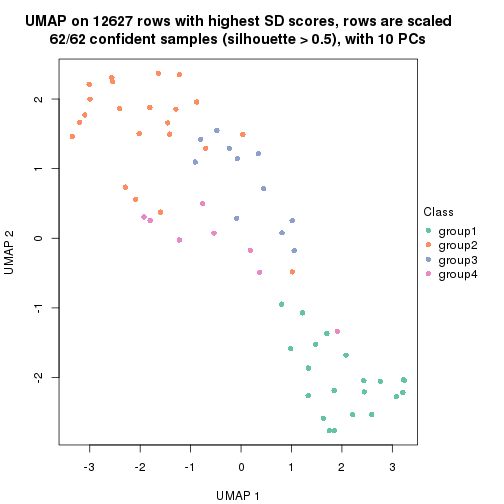
dimension_reduction(res, k = 5, method = "UMAP")
dimension_reduction(res, k = 6, method = "UMAP")
Following heatmap shows how subgroups are split when increasing k:
collect_classes(res)
If matrix rows can be associated to genes, consider to use GO_Enrichment(res,
...) to perform function enrichment for the signature genes.
The object with results only for a single top-value method and a single partition method can be extracted as:
res = res_list["SD", "NMF"]
# you can also extract it by
# res = res_list["SD:NMF"]
A summary of res and all the functions that can be applied to it:
res
#> A 'ConsensusPartition' object with k = 2, 3, 4, 5, 6.
#> On a matrix with 12627 rows and 62 columns.
#> Top rows (1000, 2000, 3000, 4000, 5000) are extracted by 'SD' method.
#> Subgroups are detected by 'NMF' method.
#> Performed in total 1250 partitions by row resampling.
#> Best k for subgroups seems to be 2.
#>
#> Following methods can be applied to this 'ConsensusPartition' object:
#> [1] "cola_report" "collect_classes" "collect_plots"
#> [4] "collect_stats" "colnames" "compare_signatures"
#> [7] "consensus_heatmap" "dimension_reduction" "functional_enrichment"
#> [10] "get_anno_col" "get_anno" "get_classes"
#> [13] "get_consensus" "get_matrix" "get_membership"
#> [16] "get_param" "get_signatures" "get_stats"
#> [19] "is_best_k" "is_stable_k" "membership_heatmap"
#> [22] "ncol" "nrow" "plot_ecdf"
#> [25] "rownames" "select_partition_number" "show"
#> [28] "suggest_best_k" "test_to_known_factors"
collect_plots() function collects all the plots made from res for all k (number of partitions)
into one single page to provide an easy and fast comparison between different k.
collect_plots(res)
The plots are:
k and the heatmap of
predicted classes for each k.k.k.k.All the plots in panels can be made by individual functions and they are plotted later in this section.
select_partition_number() produces several plots showing different
statistics for choosing “optimized” k. There are following statistics:
k;k, the area increased is defined as \(A_k - A_{k-1}\).The detailed explanations of these statistics can be found in the cola vignette.
Generally speaking, lower PAC score, higher mean silhouette score or higher
concordance corresponds to better partition. Rand index and Jaccard index
measure how similar the current partition is compared to partition with k-1.
If they are too similar, we won't accept k is better than k-1.
select_partition_number(res)
The numeric values for all these statistics can be obtained by get_stats().
get_stats(res)
#> k 1-PAC mean_silhouette concordance area_increased Rand Jaccard
#> 2 2 0.966 0.937 0.973 0.4821 0.526 0.526
#> 3 3 0.733 0.868 0.919 0.2373 0.880 0.774
#> 4 4 0.754 0.853 0.901 0.1512 0.812 0.576
#> 5 5 0.834 0.826 0.921 0.0547 0.993 0.974
#> 6 6 0.763 0.713 0.867 0.0588 0.955 0.839
suggest_best_k() suggests the best \(k\) based on these statistics. The rules are as follows:
NA.suggest_best_k(res)
#> [1] 2
Following shows the table of the partitions (You need to click the show/hide
code output link to see it). The membership matrix (columns with name p*)
is inferred by
clue::cl_consensus()
function with the SE method. Basically the value in the membership matrix
represents the probability to belong to a certain group. The finall class
label for an item is determined with the group with highest probability it
belongs to.
In get_classes() function, the entropy is calculated from the membership
matrix and the silhouette score is calculated from the consensus matrix.
cbind(get_classes(res, k = 2), get_membership(res, k = 2))
#> class entropy silhouette p1 p2
#> SRR372611 1 0.000 0.963 1.000 0.000
#> SRR372612 1 0.000 0.963 1.000 0.000
#> SRR372613 1 0.278 0.923 0.952 0.048
#> SRR372614 1 0.000 0.963 1.000 0.000
#> SRR372615 2 0.000 0.987 0.000 1.000
#> SRR372616 1 0.000 0.963 1.000 0.000
#> SRR372617 1 0.983 0.303 0.576 0.424
#> SRR372618 1 0.000 0.963 1.000 0.000
#> SRR372619 2 0.000 0.987 0.000 1.000
#> SRR372620 1 0.000 0.963 1.000 0.000
#> SRR372621 2 0.000 0.987 0.000 1.000
#> SRR372622 1 0.000 0.963 1.000 0.000
#> SRR372623 2 0.000 0.987 0.000 1.000
#> SRR372624 1 0.000 0.963 1.000 0.000
#> SRR372625 1 0.000 0.963 1.000 0.000
#> SRR372626 2 0.000 0.987 0.000 1.000
#> SRR372627 1 0.000 0.963 1.000 0.000
#> SRR372628 1 0.913 0.539 0.672 0.328
#> SRR372629 2 0.000 0.987 0.000 1.000
#> SRR372630 1 0.000 0.963 1.000 0.000
#> SRR372631 1 0.839 0.650 0.732 0.268
#> SRR372632 1 0.000 0.963 1.000 0.000
#> SRR372633 2 0.000 0.987 0.000 1.000
#> SRR372634 1 0.000 0.963 1.000 0.000
#> SRR372635 2 0.000 0.987 0.000 1.000
#> SRR372636 1 0.000 0.963 1.000 0.000
#> SRR372637 2 0.000 0.987 0.000 1.000
#> SRR372638 1 0.000 0.963 1.000 0.000
#> SRR372639 2 0.000 0.987 0.000 1.000
#> SRR372640 1 0.000 0.963 1.000 0.000
#> SRR372641 1 0.861 0.623 0.716 0.284
#> SRR372642 1 0.000 0.963 1.000 0.000
#> SRR372643 2 0.000 0.987 0.000 1.000
#> SRR372644 1 0.000 0.963 1.000 0.000
#> SRR372645 2 0.000 0.987 0.000 1.000
#> SRR372646 1 0.000 0.963 1.000 0.000
#> SRR372647 2 0.000 0.987 0.000 1.000
#> SRR372648 1 0.000 0.963 1.000 0.000
#> SRR372649 1 0.224 0.933 0.964 0.036
#> SRR372650 2 0.827 0.622 0.260 0.740
#> SRR372651 2 0.000 0.987 0.000 1.000
#> SRR372652 1 0.000 0.963 1.000 0.000
#> SRR372653 2 0.000 0.987 0.000 1.000
#> SRR372654 1 0.000 0.963 1.000 0.000
#> SRR372655 2 0.000 0.987 0.000 1.000
#> SRR372656 1 0.000 0.963 1.000 0.000
#> SRR372657 1 0.000 0.963 1.000 0.000
#> SRR372658 2 0.000 0.987 0.000 1.000
#> SRR372659 2 0.000 0.987 0.000 1.000
#> SRR372660 1 0.000 0.963 1.000 0.000
#> SRR372661 2 0.000 0.987 0.000 1.000
#> SRR372662 1 0.000 0.963 1.000 0.000
#> SRR372663 1 0.000 0.963 1.000 0.000
#> SRR372664 1 0.000 0.963 1.000 0.000
#> SRR372665 2 0.000 0.987 0.000 1.000
#> SRR372666 1 0.000 0.963 1.000 0.000
#> SRR372667 2 0.000 0.987 0.000 1.000
#> SRR372668 1 0.000 0.963 1.000 0.000
#> SRR372669 1 0.000 0.963 1.000 0.000
#> SRR372670 1 0.000 0.963 1.000 0.000
#> SRR372671 2 0.000 0.987 0.000 1.000
#> SRR372672 1 0.000 0.963 1.000 0.000
cbind(get_classes(res, k = 3), get_membership(res, k = 3))
#> class entropy silhouette p1 p2 p3
#> SRR372611 3 0.3192 0.840 0.112 0.000 0.888
#> SRR372612 3 0.5098 0.855 0.248 0.000 0.752
#> SRR372613 3 0.5094 0.862 0.136 0.040 0.824
#> SRR372614 3 0.4974 0.864 0.236 0.000 0.764
#> SRR372615 2 0.2625 0.922 0.000 0.916 0.084
#> SRR372616 3 0.5760 0.733 0.328 0.000 0.672
#> SRR372617 1 0.7153 0.555 0.708 0.200 0.092
#> SRR372618 1 0.0424 0.915 0.992 0.000 0.008
#> SRR372619 2 0.0000 0.939 0.000 1.000 0.000
#> SRR372620 1 0.1031 0.902 0.976 0.000 0.024
#> SRR372621 2 0.0000 0.939 0.000 1.000 0.000
#> SRR372622 1 0.1289 0.897 0.968 0.000 0.032
#> SRR372623 2 0.0000 0.939 0.000 1.000 0.000
#> SRR372624 1 0.0237 0.913 0.996 0.000 0.004
#> SRR372625 1 0.0424 0.912 0.992 0.000 0.008
#> SRR372626 2 0.0000 0.939 0.000 1.000 0.000
#> SRR372627 1 0.0000 0.915 1.000 0.000 0.000
#> SRR372628 1 0.3043 0.841 0.908 0.084 0.008
#> SRR372629 2 0.4453 0.880 0.012 0.836 0.152
#> SRR372630 1 0.0424 0.915 0.992 0.000 0.008
#> SRR372631 1 0.7250 0.514 0.656 0.056 0.288
#> SRR372632 1 0.0592 0.910 0.988 0.000 0.012
#> SRR372633 2 0.2625 0.922 0.000 0.916 0.084
#> SRR372634 1 0.0000 0.915 1.000 0.000 0.000
#> SRR372635 2 0.3377 0.914 0.012 0.896 0.092
#> SRR372636 1 0.0424 0.915 0.992 0.000 0.008
#> SRR372637 2 0.3973 0.902 0.032 0.880 0.088
#> SRR372638 1 0.0237 0.915 0.996 0.000 0.004
#> SRR372639 2 0.0000 0.939 0.000 1.000 0.000
#> SRR372640 1 0.0000 0.915 1.000 0.000 0.000
#> SRR372641 1 0.4982 0.768 0.840 0.064 0.096
#> SRR372642 1 0.0000 0.915 1.000 0.000 0.000
#> SRR372643 2 0.5171 0.836 0.012 0.784 0.204
#> SRR372644 1 0.0592 0.914 0.988 0.000 0.012
#> SRR372645 2 0.3030 0.918 0.004 0.904 0.092
#> SRR372646 1 0.0592 0.914 0.988 0.000 0.012
#> SRR372647 2 0.0000 0.939 0.000 1.000 0.000
#> SRR372648 1 0.0592 0.914 0.988 0.000 0.012
#> SRR372649 1 0.3112 0.834 0.900 0.004 0.096
#> SRR372650 3 0.5408 0.743 0.052 0.136 0.812
#> SRR372651 2 0.0237 0.937 0.000 0.996 0.004
#> SRR372652 1 0.1529 0.897 0.960 0.000 0.040
#> SRR372653 2 0.4931 0.695 0.000 0.768 0.232
#> SRR372654 1 0.0747 0.912 0.984 0.000 0.016
#> SRR372655 2 0.0237 0.938 0.000 0.996 0.004
#> SRR372656 1 0.0592 0.914 0.988 0.000 0.012
#> SRR372657 1 0.0592 0.914 0.988 0.000 0.012
#> SRR372658 2 0.0237 0.937 0.000 0.996 0.004
#> SRR372659 2 0.3845 0.903 0.012 0.872 0.116
#> SRR372660 1 0.0892 0.913 0.980 0.000 0.020
#> SRR372661 2 0.3193 0.915 0.004 0.896 0.100
#> SRR372662 1 0.3619 0.798 0.864 0.000 0.136
#> SRR372663 3 0.4750 0.872 0.216 0.000 0.784
#> SRR372664 1 0.0424 0.915 0.992 0.000 0.008
#> SRR372665 2 0.0237 0.937 0.000 0.996 0.004
#> SRR372666 1 0.3412 0.817 0.876 0.000 0.124
#> SRR372667 2 0.0237 0.937 0.000 0.996 0.004
#> SRR372668 1 0.0000 0.915 1.000 0.000 0.000
#> SRR372669 1 0.5363 0.636 0.724 0.000 0.276
#> SRR372670 1 0.2448 0.868 0.924 0.000 0.076
#> SRR372671 2 0.0000 0.939 0.000 1.000 0.000
#> SRR372672 1 0.5859 0.359 0.656 0.000 0.344
cbind(get_classes(res, k = 4), get_membership(res, k = 4))
#> class entropy silhouette p1 p2 p3 p4
#> SRR372611 4 0.4673 0.662 0.008 0.000 0.292 0.700
#> SRR372612 4 0.4123 0.763 0.136 0.000 0.044 0.820
#> SRR372613 4 0.1486 0.779 0.008 0.024 0.008 0.960
#> SRR372614 4 0.1890 0.790 0.056 0.000 0.008 0.936
#> SRR372615 3 0.4697 0.682 0.000 0.356 0.644 0.000
#> SRR372616 4 0.3498 0.746 0.160 0.000 0.008 0.832
#> SRR372617 3 0.4675 0.655 0.244 0.020 0.736 0.000
#> SRR372618 1 0.0000 0.960 1.000 0.000 0.000 0.000
#> SRR372619 2 0.0000 0.996 0.000 1.000 0.000 0.000
#> SRR372620 1 0.0188 0.959 0.996 0.000 0.004 0.000
#> SRR372621 2 0.0000 0.996 0.000 1.000 0.000 0.000
#> SRR372622 1 0.0592 0.950 0.984 0.000 0.016 0.000
#> SRR372623 2 0.0000 0.996 0.000 1.000 0.000 0.000
#> SRR372624 1 0.0000 0.960 1.000 0.000 0.000 0.000
#> SRR372625 1 0.0000 0.960 1.000 0.000 0.000 0.000
#> SRR372626 2 0.0000 0.996 0.000 1.000 0.000 0.000
#> SRR372627 1 0.0000 0.960 1.000 0.000 0.000 0.000
#> SRR372628 1 0.2197 0.879 0.916 0.080 0.004 0.000
#> SRR372629 3 0.3569 0.786 0.000 0.196 0.804 0.000
#> SRR372630 1 0.0188 0.959 0.996 0.000 0.004 0.000
#> SRR372631 3 0.2708 0.692 0.076 0.004 0.904 0.016
#> SRR372632 1 0.0188 0.959 0.996 0.000 0.004 0.000
#> SRR372633 3 0.4431 0.752 0.000 0.304 0.696 0.000
#> SRR372634 1 0.0000 0.960 1.000 0.000 0.000 0.000
#> SRR372635 3 0.4343 0.778 0.000 0.264 0.732 0.004
#> SRR372636 1 0.0000 0.960 1.000 0.000 0.000 0.000
#> SRR372637 3 0.4955 0.778 0.024 0.268 0.708 0.000
#> SRR372638 1 0.0000 0.960 1.000 0.000 0.000 0.000
#> SRR372639 2 0.0000 0.996 0.000 1.000 0.000 0.000
#> SRR372640 1 0.0000 0.960 1.000 0.000 0.000 0.000
#> SRR372641 3 0.4283 0.639 0.256 0.004 0.740 0.000
#> SRR372642 1 0.0188 0.959 0.996 0.000 0.004 0.000
#> SRR372643 3 0.2773 0.754 0.000 0.116 0.880 0.004
#> SRR372644 1 0.0000 0.960 1.000 0.000 0.000 0.000
#> SRR372645 3 0.4331 0.767 0.000 0.288 0.712 0.000
#> SRR372646 1 0.0000 0.960 1.000 0.000 0.000 0.000
#> SRR372647 2 0.0000 0.996 0.000 1.000 0.000 0.000
#> SRR372648 1 0.0000 0.960 1.000 0.000 0.000 0.000
#> SRR372649 3 0.4193 0.625 0.268 0.000 0.732 0.000
#> SRR372650 4 0.1452 0.772 0.000 0.036 0.008 0.956
#> SRR372651 2 0.0000 0.996 0.000 1.000 0.000 0.000
#> SRR372652 1 0.1118 0.933 0.964 0.000 0.000 0.036
#> SRR372653 4 0.7207 0.175 0.000 0.376 0.144 0.480
#> SRR372654 1 0.0000 0.960 1.000 0.000 0.000 0.000
#> SRR372655 2 0.0000 0.996 0.000 1.000 0.000 0.000
#> SRR372656 1 0.0000 0.960 1.000 0.000 0.000 0.000
#> SRR372657 1 0.0000 0.960 1.000 0.000 0.000 0.000
#> SRR372658 2 0.0000 0.996 0.000 1.000 0.000 0.000
#> SRR372659 3 0.3945 0.788 0.000 0.216 0.780 0.004
#> SRR372660 1 0.2760 0.830 0.872 0.000 0.128 0.000
#> SRR372661 3 0.4304 0.770 0.000 0.284 0.716 0.000
#> SRR372662 1 0.5551 0.641 0.728 0.000 0.160 0.112
#> SRR372663 4 0.1452 0.789 0.036 0.000 0.008 0.956
#> SRR372664 1 0.0000 0.960 1.000 0.000 0.000 0.000
#> SRR372665 2 0.0000 0.996 0.000 1.000 0.000 0.000
#> SRR372666 1 0.3942 0.673 0.764 0.000 0.000 0.236
#> SRR372667 2 0.0000 0.996 0.000 1.000 0.000 0.000
#> SRR372668 1 0.0000 0.960 1.000 0.000 0.000 0.000
#> SRR372669 3 0.3486 0.674 0.188 0.000 0.812 0.000
#> SRR372670 1 0.2589 0.850 0.884 0.000 0.000 0.116
#> SRR372671 2 0.1211 0.949 0.000 0.960 0.040 0.000
#> SRR372672 4 0.5125 0.391 0.388 0.000 0.008 0.604
cbind(get_classes(res, k = 5), get_membership(res, k = 5))
#> class entropy silhouette p1 p2 p3 p4 p5
#> SRR372611 5 0.3639 0.168 0.000 0.000 0.024 0.184 0.792
#> SRR372612 5 0.6224 0.241 0.352 0.000 0.000 0.152 0.496
#> SRR372613 4 0.0794 0.704 0.000 0.000 0.000 0.972 0.028
#> SRR372614 4 0.1582 0.714 0.028 0.000 0.000 0.944 0.028
#> SRR372615 3 0.4210 0.307 0.000 0.412 0.588 0.000 0.000
#> SRR372616 4 0.3929 0.484 0.208 0.000 0.000 0.764 0.028
#> SRR372617 3 0.0968 0.938 0.004 0.012 0.972 0.000 0.012
#> SRR372618 1 0.0162 0.917 0.996 0.000 0.000 0.004 0.000
#> SRR372619 2 0.1197 0.935 0.000 0.952 0.000 0.000 0.048
#> SRR372620 1 0.0963 0.908 0.964 0.000 0.000 0.000 0.036
#> SRR372621 2 0.0566 0.942 0.000 0.984 0.012 0.000 0.004
#> SRR372622 1 0.2771 0.835 0.860 0.000 0.012 0.000 0.128
#> SRR372623 2 0.1544 0.925 0.000 0.932 0.000 0.000 0.068
#> SRR372624 1 0.2074 0.864 0.896 0.000 0.000 0.000 0.104
#> SRR372625 1 0.2732 0.810 0.840 0.000 0.000 0.000 0.160
#> SRR372626 2 0.2719 0.857 0.000 0.852 0.004 0.000 0.144
#> SRR372627 1 0.1792 0.874 0.916 0.000 0.000 0.000 0.084
#> SRR372628 1 0.5730 0.447 0.640 0.176 0.004 0.000 0.180
#> SRR372629 3 0.0404 0.939 0.000 0.012 0.988 0.000 0.000
#> SRR372630 1 0.0880 0.909 0.968 0.000 0.000 0.000 0.032
#> SRR372631 3 0.0162 0.934 0.000 0.000 0.996 0.000 0.004
#> SRR372632 1 0.1410 0.895 0.940 0.000 0.000 0.000 0.060
#> SRR372633 3 0.1792 0.891 0.000 0.084 0.916 0.000 0.000
#> SRR372634 1 0.0000 0.918 1.000 0.000 0.000 0.000 0.000
#> SRR372635 3 0.0609 0.939 0.000 0.020 0.980 0.000 0.000
#> SRR372636 1 0.0000 0.918 1.000 0.000 0.000 0.000 0.000
#> SRR372637 3 0.1365 0.929 0.004 0.040 0.952 0.000 0.004
#> SRR372638 1 0.0000 0.918 1.000 0.000 0.000 0.000 0.000
#> SRR372639 2 0.1012 0.942 0.000 0.968 0.000 0.020 0.012
#> SRR372640 1 0.0000 0.918 1.000 0.000 0.000 0.000 0.000
#> SRR372641 3 0.0898 0.927 0.020 0.000 0.972 0.000 0.008
#> SRR372642 1 0.0794 0.910 0.972 0.000 0.000 0.000 0.028
#> SRR372643 3 0.0162 0.937 0.000 0.004 0.996 0.000 0.000
#> SRR372644 1 0.0000 0.918 1.000 0.000 0.000 0.000 0.000
#> SRR372645 3 0.0955 0.936 0.000 0.028 0.968 0.000 0.004
#> SRR372646 1 0.0000 0.918 1.000 0.000 0.000 0.000 0.000
#> SRR372647 2 0.1043 0.938 0.000 0.960 0.000 0.000 0.040
#> SRR372648 1 0.0000 0.918 1.000 0.000 0.000 0.000 0.000
#> SRR372649 3 0.0609 0.930 0.020 0.000 0.980 0.000 0.000
#> SRR372650 4 0.0771 0.708 0.000 0.004 0.000 0.976 0.020
#> SRR372651 2 0.1106 0.940 0.000 0.964 0.000 0.024 0.012
#> SRR372652 1 0.0404 0.913 0.988 0.000 0.000 0.012 0.000
#> SRR372653 4 0.4691 0.552 0.000 0.140 0.076 0.764 0.020
#> SRR372654 1 0.0000 0.918 1.000 0.000 0.000 0.000 0.000
#> SRR372655 2 0.1124 0.939 0.000 0.960 0.004 0.000 0.036
#> SRR372656 1 0.0162 0.917 0.996 0.000 0.000 0.004 0.000
#> SRR372657 1 0.0000 0.918 1.000 0.000 0.000 0.000 0.000
#> SRR372658 2 0.0771 0.943 0.000 0.976 0.000 0.020 0.004
#> SRR372659 3 0.0510 0.940 0.000 0.016 0.984 0.000 0.000
#> SRR372660 1 0.3714 0.746 0.812 0.000 0.132 0.000 0.056
#> SRR372661 3 0.0703 0.938 0.000 0.024 0.976 0.000 0.000
#> SRR372662 1 0.5388 0.567 0.712 0.000 0.156 0.104 0.028
#> SRR372663 4 0.1885 0.716 0.032 0.020 0.000 0.936 0.012
#> SRR372664 1 0.0000 0.918 1.000 0.000 0.000 0.000 0.000
#> SRR372665 2 0.1195 0.939 0.000 0.960 0.000 0.028 0.012
#> SRR372666 1 0.3480 0.595 0.752 0.000 0.000 0.248 0.000
#> SRR372667 2 0.1310 0.938 0.000 0.956 0.000 0.024 0.020
#> SRR372668 1 0.0162 0.918 0.996 0.000 0.000 0.000 0.004
#> SRR372669 3 0.0510 0.932 0.016 0.000 0.984 0.000 0.000
#> SRR372670 1 0.0880 0.900 0.968 0.000 0.000 0.032 0.000
#> SRR372671 2 0.3106 0.859 0.000 0.872 0.080 0.028 0.020
#> SRR372672 4 0.3876 0.314 0.316 0.000 0.000 0.684 0.000
cbind(get_classes(res, k = 6), get_membership(res, k = 6))
#> class entropy silhouette p1 p2 p3 p4 p5 p6
#> SRR372611 6 0.1010 0.110 0.004 0.000 0.000 0.036 0.000 0.960
#> SRR372612 6 0.5128 0.137 0.412 0.000 0.000 0.084 0.000 0.504
#> SRR372613 4 0.1267 0.615 0.000 0.000 0.000 0.940 0.000 0.060
#> SRR372614 4 0.2532 0.616 0.060 0.004 0.000 0.884 0.000 0.052
#> SRR372615 3 0.4210 0.461 0.000 0.028 0.636 0.000 0.336 0.000
#> SRR372616 4 0.4563 0.356 0.284 0.004 0.000 0.656 0.000 0.056
#> SRR372617 3 0.1210 0.925 0.008 0.020 0.960 0.000 0.004 0.008
#> SRR372618 1 0.1409 0.840 0.948 0.012 0.000 0.032 0.000 0.008
#> SRR372619 5 0.3420 0.760 0.000 0.240 0.000 0.000 0.748 0.012
#> SRR372620 1 0.2170 0.819 0.888 0.100 0.000 0.000 0.000 0.012
#> SRR372621 5 0.1863 0.838 0.000 0.060 0.016 0.000 0.920 0.004
#> SRR372622 2 0.4954 0.365 0.324 0.608 0.052 0.000 0.000 0.016
#> SRR372623 5 0.4178 0.589 0.000 0.372 0.000 0.000 0.608 0.020
#> SRR372624 1 0.3843 0.107 0.548 0.452 0.000 0.000 0.000 0.000
#> SRR372625 2 0.3245 0.516 0.228 0.764 0.000 0.000 0.000 0.008
#> SRR372626 2 0.3315 0.318 0.000 0.780 0.000 0.000 0.200 0.020
#> SRR372627 1 0.3774 0.210 0.592 0.408 0.000 0.000 0.000 0.000
#> SRR372628 2 0.2760 0.521 0.068 0.872 0.000 0.000 0.052 0.008
#> SRR372629 3 0.0291 0.935 0.000 0.004 0.992 0.000 0.004 0.000
#> SRR372630 1 0.2636 0.800 0.860 0.120 0.004 0.000 0.000 0.016
#> SRR372631 3 0.0260 0.933 0.000 0.008 0.992 0.000 0.000 0.000
#> SRR372632 1 0.3320 0.705 0.772 0.212 0.000 0.000 0.000 0.016
#> SRR372633 3 0.2300 0.833 0.000 0.000 0.856 0.000 0.144 0.000
#> SRR372634 1 0.0363 0.859 0.988 0.012 0.000 0.000 0.000 0.000
#> SRR372635 3 0.0508 0.934 0.000 0.004 0.984 0.000 0.012 0.000
#> SRR372636 1 0.0260 0.857 0.992 0.008 0.000 0.000 0.000 0.000
#> SRR372637 3 0.2538 0.886 0.012 0.016 0.892 0.004 0.072 0.004
#> SRR372638 1 0.0458 0.859 0.984 0.016 0.000 0.000 0.000 0.000
#> SRR372639 5 0.1349 0.841 0.000 0.056 0.004 0.000 0.940 0.000
#> SRR372640 1 0.0547 0.859 0.980 0.020 0.000 0.000 0.000 0.000
#> SRR372641 3 0.0653 0.929 0.004 0.012 0.980 0.000 0.000 0.004
#> SRR372642 1 0.2538 0.798 0.860 0.124 0.000 0.000 0.000 0.016
#> SRR372643 3 0.0146 0.934 0.000 0.004 0.996 0.000 0.000 0.000
#> SRR372644 1 0.0146 0.859 0.996 0.004 0.000 0.000 0.000 0.000
#> SRR372645 3 0.1693 0.910 0.004 0.020 0.932 0.000 0.044 0.000
#> SRR372646 1 0.0000 0.858 1.000 0.000 0.000 0.000 0.000 0.000
#> SRR372647 5 0.3665 0.771 0.016 0.212 0.000 0.000 0.760 0.012
#> SRR372648 1 0.0146 0.859 0.996 0.004 0.000 0.000 0.000 0.000
#> SRR372649 3 0.0146 0.935 0.000 0.004 0.996 0.000 0.000 0.000
#> SRR372650 4 0.4237 0.563 0.000 0.128 0.004 0.772 0.076 0.020
#> SRR372651 5 0.1296 0.832 0.000 0.000 0.004 0.044 0.948 0.004
#> SRR372652 1 0.0405 0.855 0.988 0.004 0.000 0.008 0.000 0.000
#> SRR372653 4 0.5439 0.391 0.000 0.040 0.068 0.604 0.288 0.000
#> SRR372654 1 0.0000 0.858 1.000 0.000 0.000 0.000 0.000 0.000
#> SRR372655 5 0.3679 0.782 0.000 0.192 0.024 0.000 0.772 0.012
#> SRR372656 1 0.0508 0.852 0.984 0.004 0.000 0.012 0.000 0.000
#> SRR372657 1 0.0363 0.859 0.988 0.012 0.000 0.000 0.000 0.000
#> SRR372658 5 0.1716 0.838 0.000 0.036 0.000 0.028 0.932 0.004
#> SRR372659 3 0.0000 0.935 0.000 0.000 1.000 0.000 0.000 0.000
#> SRR372660 1 0.5599 0.343 0.572 0.276 0.140 0.000 0.000 0.012
#> SRR372661 3 0.0260 0.934 0.000 0.000 0.992 0.000 0.008 0.000
#> SRR372662 1 0.6360 0.337 0.584 0.136 0.056 0.208 0.000 0.016
#> SRR372663 4 0.1257 0.634 0.020 0.000 0.000 0.952 0.028 0.000
#> SRR372664 1 0.0363 0.859 0.988 0.012 0.000 0.000 0.000 0.000
#> SRR372665 5 0.1573 0.828 0.000 0.004 0.004 0.052 0.936 0.004
#> SRR372666 1 0.2149 0.791 0.888 0.004 0.000 0.104 0.000 0.004
#> SRR372667 5 0.1750 0.824 0.000 0.004 0.004 0.056 0.928 0.008
#> SRR372668 1 0.1471 0.840 0.932 0.064 0.000 0.000 0.000 0.004
#> SRR372669 3 0.0436 0.933 0.004 0.004 0.988 0.004 0.000 0.000
#> SRR372670 1 0.0632 0.849 0.976 0.000 0.000 0.024 0.000 0.000
#> SRR372671 5 0.2939 0.771 0.000 0.004 0.080 0.044 0.864 0.008
#> SRR372672 4 0.4273 0.267 0.348 0.012 0.000 0.628 0.000 0.012
Heatmaps for the consensus matrix. It visualizes the probability of two samples to be in a same group.
consensus_heatmap(res, k = 2)
consensus_heatmap(res, k = 3)
consensus_heatmap(res, k = 4)
consensus_heatmap(res, k = 5)
consensus_heatmap(res, k = 6)
Heatmaps for the membership of samples in all partitions to see how consistent they are:
membership_heatmap(res, k = 2)
membership_heatmap(res, k = 3)
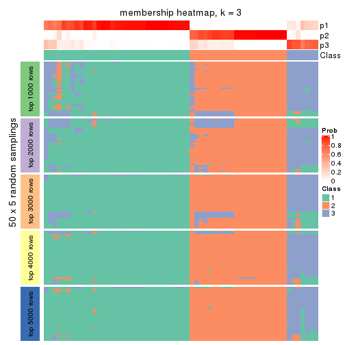
membership_heatmap(res, k = 4)
membership_heatmap(res, k = 5)
membership_heatmap(res, k = 6)

As soon as we have had the classes for columns, we can look for signatures which are significantly different between classes which can be candidate marks for certain classes. Following are the heatmaps for signatures.
Signature heatmaps where rows are scaled:
get_signatures(res, k = 2)
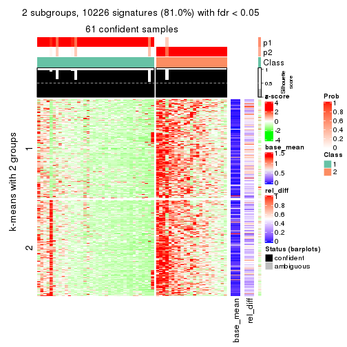
get_signatures(res, k = 3)
get_signatures(res, k = 4)
get_signatures(res, k = 5)
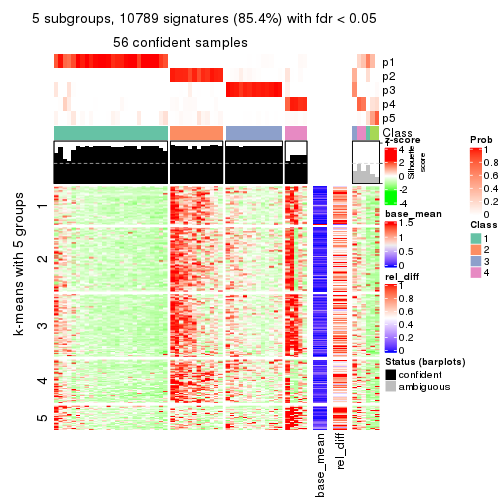
get_signatures(res, k = 6)
Signature heatmaps where rows are not scaled:
get_signatures(res, k = 2, scale_rows = FALSE)
get_signatures(res, k = 3, scale_rows = FALSE)
get_signatures(res, k = 4, scale_rows = FALSE)

get_signatures(res, k = 5, scale_rows = FALSE)
get_signatures(res, k = 6, scale_rows = FALSE)
#> Error in mat[ceiling(1:nr/h_ratio), ceiling(1:nc/w_ratio), drop = FALSE]: subscript out of bounds
Compare the overlap of signatures from different k:
compare_signatures(res)
get_signature() returns a data frame invisibly. TO get the list of signatures, the function
call should be assigned to a variable explicitly. In following code, if plot argument is set
to FALSE, no heatmap is plotted while only the differential analysis is performed.
# code only for demonstration
tb = get_signature(res, k = ..., plot = FALSE)
An example of the output of tb is:
#> which_row fdr mean_1 mean_2 scaled_mean_1 scaled_mean_2 km
#> 1 38 0.042760348 8.373488 9.131774 -0.5533452 0.5164555 1
#> 2 40 0.018707592 7.106213 8.469186 -0.6173731 0.5762149 1
#> 3 55 0.019134737 10.221463 11.207825 -0.6159697 0.5749050 1
#> 4 59 0.006059896 5.921854 7.869574 -0.6899429 0.6439467 1
#> 5 60 0.018055526 8.928898 10.211722 -0.6204761 0.5791110 1
#> 6 98 0.009384629 15.714769 14.887706 0.6635654 -0.6193277 2
...
The columns in tb are:
which_row: row indices corresponding to the input matrix.fdr: FDR for the differential test. mean_x: The mean value in group x.scaled_mean_x: The mean value in group x after rows are scaled.km: Row groups if k-means clustering is applied to rows.UMAP plot which shows how samples are separated.
dimension_reduction(res, k = 2, method = "UMAP")
dimension_reduction(res, k = 3, method = "UMAP")
dimension_reduction(res, k = 4, method = "UMAP")
dimension_reduction(res, k = 5, method = "UMAP")
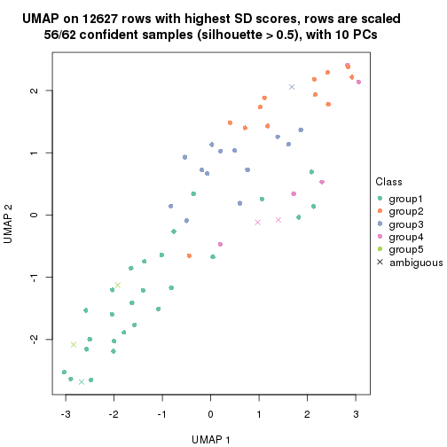
dimension_reduction(res, k = 6, method = "UMAP")
Following heatmap shows how subgroups are split when increasing k:
collect_classes(res)
If matrix rows can be associated to genes, consider to use GO_Enrichment(res,
...) to perform function enrichment for the signature genes.
The object with results only for a single top-value method and a single partition method can be extracted as:
res = res_list["CV", "hclust"]
# you can also extract it by
# res = res_list["CV:hclust"]
A summary of res and all the functions that can be applied to it:
res
#> A 'ConsensusPartition' object with k = 2, 3, 4, 5, 6.
#> On a matrix with 12627 rows and 62 columns.
#> Top rows (1000, 2000, 3000, 4000, 5000) are extracted by 'CV' method.
#> Subgroups are detected by 'hclust' method.
#> Performed in total 1250 partitions by row resampling.
#> Best k for subgroups seems to be 2.
#>
#> Following methods can be applied to this 'ConsensusPartition' object:
#> [1] "cola_report" "collect_classes" "collect_plots"
#> [4] "collect_stats" "colnames" "compare_signatures"
#> [7] "consensus_heatmap" "dimension_reduction" "functional_enrichment"
#> [10] "get_anno_col" "get_anno" "get_classes"
#> [13] "get_consensus" "get_matrix" "get_membership"
#> [16] "get_param" "get_signatures" "get_stats"
#> [19] "is_best_k" "is_stable_k" "membership_heatmap"
#> [22] "ncol" "nrow" "plot_ecdf"
#> [25] "rownames" "select_partition_number" "show"
#> [28] "suggest_best_k" "test_to_known_factors"
collect_plots() function collects all the plots made from res for all k (number of partitions)
into one single page to provide an easy and fast comparison between different k.
collect_plots(res)
The plots are:
k and the heatmap of
predicted classes for each k.k.k.k.All the plots in panels can be made by individual functions and they are plotted later in this section.
select_partition_number() produces several plots showing different
statistics for choosing “optimized” k. There are following statistics:
k;k, the area increased is defined as \(A_k - A_{k-1}\).The detailed explanations of these statistics can be found in the cola vignette.
Generally speaking, lower PAC score, higher mean silhouette score or higher
concordance corresponds to better partition. Rand index and Jaccard index
measure how similar the current partition is compared to partition with k-1.
If they are too similar, we won't accept k is better than k-1.
select_partition_number(res)
The numeric values for all these statistics can be obtained by get_stats().
get_stats(res)
#> k 1-PAC mean_silhouette concordance area_increased Rand Jaccard
#> 2 2 0.750 0.775 0.916 0.3861 0.645 0.645
#> 3 3 0.753 0.738 0.899 0.1059 0.979 0.967
#> 4 4 0.738 0.740 0.901 0.0312 0.995 0.992
#> 5 5 0.707 0.403 0.814 0.0172 0.814 0.758
#> 6 6 0.762 0.508 0.884 0.0611 0.815 0.758
suggest_best_k() suggests the best \(k\) based on these statistics. The rules are as follows:
NA.suggest_best_k(res)
#> [1] 2
Following shows the table of the partitions (You need to click the show/hide
code output link to see it). The membership matrix (columns with name p*)
is inferred by
clue::cl_consensus()
function with the SE method. Basically the value in the membership matrix
represents the probability to belong to a certain group. The finall class
label for an item is determined with the group with highest probability it
belongs to.
In get_classes() function, the entropy is calculated from the membership
matrix and the silhouette score is calculated from the consensus matrix.
cbind(get_classes(res, k = 2), get_membership(res, k = 2))
#> class entropy silhouette p1 p2
#> SRR372611 1 0.000 0.8968 1.000 0.000
#> SRR372612 1 0.000 0.8968 1.000 0.000
#> SRR372613 2 0.946 0.3777 0.364 0.636
#> SRR372614 1 0.000 0.8968 1.000 0.000
#> SRR372615 2 0.224 0.9099 0.036 0.964
#> SRR372616 1 0.000 0.8968 1.000 0.000
#> SRR372617 1 0.000 0.8968 1.000 0.000
#> SRR372618 1 0.000 0.8968 1.000 0.000
#> SRR372619 2 0.224 0.9099 0.036 0.964
#> SRR372620 1 0.000 0.8968 1.000 0.000
#> SRR372621 2 1.000 -0.0838 0.496 0.504
#> SRR372622 1 0.000 0.8968 1.000 0.000
#> SRR372623 2 0.242 0.9081 0.040 0.960
#> SRR372624 1 0.000 0.8968 1.000 0.000
#> SRR372625 1 0.000 0.8968 1.000 0.000
#> SRR372626 2 0.242 0.9081 0.040 0.960
#> SRR372627 1 0.000 0.8968 1.000 0.000
#> SRR372628 1 0.000 0.8968 1.000 0.000
#> SRR372629 1 0.000 0.8968 1.000 0.000
#> SRR372630 1 0.000 0.8968 1.000 0.000
#> SRR372631 1 0.000 0.8968 1.000 0.000
#> SRR372632 1 0.000 0.8968 1.000 0.000
#> SRR372633 1 0.978 0.2990 0.588 0.412
#> SRR372634 1 0.000 0.8968 1.000 0.000
#> SRR372635 1 0.000 0.8968 1.000 0.000
#> SRR372636 1 0.000 0.8968 1.000 0.000
#> SRR372637 1 0.000 0.8968 1.000 0.000
#> SRR372638 1 0.000 0.8968 1.000 0.000
#> SRR372639 1 0.992 0.2047 0.552 0.448
#> SRR372640 1 0.000 0.8968 1.000 0.000
#> SRR372641 1 0.000 0.8968 1.000 0.000
#> SRR372642 1 0.000 0.8968 1.000 0.000
#> SRR372643 1 0.991 0.2166 0.556 0.444
#> SRR372644 1 0.000 0.8968 1.000 0.000
#> SRR372645 1 0.518 0.7885 0.884 0.116
#> SRR372646 1 0.000 0.8968 1.000 0.000
#> SRR372647 1 0.000 0.8968 1.000 0.000
#> SRR372648 1 0.000 0.8968 1.000 0.000
#> SRR372649 1 0.000 0.8968 1.000 0.000
#> SRR372650 2 0.000 0.8943 0.000 1.000
#> SRR372651 2 0.224 0.9099 0.036 0.964
#> SRR372652 1 0.990 0.2275 0.560 0.440
#> SRR372653 2 0.000 0.8943 0.000 1.000
#> SRR372654 1 0.000 0.8968 1.000 0.000
#> SRR372655 2 0.224 0.9099 0.036 0.964
#> SRR372656 1 0.000 0.8968 1.000 0.000
#> SRR372657 1 0.000 0.8968 1.000 0.000
#> SRR372658 2 0.000 0.8943 0.000 1.000
#> SRR372659 1 0.991 0.2166 0.556 0.444
#> SRR372660 1 0.993 0.1905 0.548 0.452
#> SRR372661 1 0.992 0.2047 0.552 0.448
#> SRR372662 1 0.000 0.8968 1.000 0.000
#> SRR372663 1 0.990 0.2275 0.560 0.440
#> SRR372664 1 0.000 0.8968 1.000 0.000
#> SRR372665 2 0.000 0.8943 0.000 1.000
#> SRR372666 1 0.983 0.2684 0.576 0.424
#> SRR372667 2 0.224 0.9099 0.036 0.964
#> SRR372668 1 0.000 0.8968 1.000 0.000
#> SRR372669 1 0.000 0.8968 1.000 0.000
#> SRR372670 1 0.000 0.8968 1.000 0.000
#> SRR372671 2 0.260 0.9049 0.044 0.956
#> SRR372672 1 0.000 0.8968 1.000 0.000
cbind(get_classes(res, k = 3), get_membership(res, k = 3))
#> class entropy silhouette p1 p2 p3
#> SRR372611 1 0.0000 0.8793 1.000 0.000 0.000
#> SRR372612 1 0.0000 0.8793 1.000 0.000 0.000
#> SRR372613 2 0.6931 0.4034 0.328 0.640 0.032
#> SRR372614 1 0.0000 0.8793 1.000 0.000 0.000
#> SRR372615 2 0.0237 0.7914 0.000 0.996 0.004
#> SRR372616 1 0.0000 0.8793 1.000 0.000 0.000
#> SRR372617 1 0.1411 0.8688 0.964 0.036 0.000
#> SRR372618 1 0.0747 0.8762 0.984 0.016 0.000
#> SRR372619 2 0.0237 0.7906 0.000 0.996 0.004
#> SRR372620 1 0.0000 0.8793 1.000 0.000 0.000
#> SRR372621 2 0.6280 -0.0183 0.460 0.540 0.000
#> SRR372622 1 0.0000 0.8793 1.000 0.000 0.000
#> SRR372623 2 0.0237 0.7917 0.004 0.996 0.000
#> SRR372624 1 0.0000 0.8793 1.000 0.000 0.000
#> SRR372625 1 0.0000 0.8793 1.000 0.000 0.000
#> SRR372626 2 0.0237 0.7917 0.004 0.996 0.000
#> SRR372627 1 0.0000 0.8793 1.000 0.000 0.000
#> SRR372628 1 0.0000 0.8793 1.000 0.000 0.000
#> SRR372629 1 0.1163 0.8728 0.972 0.028 0.000
#> SRR372630 1 0.0000 0.8793 1.000 0.000 0.000
#> SRR372631 1 0.1411 0.8688 0.964 0.036 0.000
#> SRR372632 1 0.0000 0.8793 1.000 0.000 0.000
#> SRR372633 1 0.6260 0.2263 0.552 0.448 0.000
#> SRR372634 1 0.0000 0.8793 1.000 0.000 0.000
#> SRR372635 1 0.1411 0.8688 0.964 0.036 0.000
#> SRR372636 1 0.0000 0.8793 1.000 0.000 0.000
#> SRR372637 1 0.1411 0.8688 0.964 0.036 0.000
#> SRR372638 1 0.0000 0.8793 1.000 0.000 0.000
#> SRR372639 1 0.6305 0.1228 0.516 0.484 0.000
#> SRR372640 1 0.0000 0.8793 1.000 0.000 0.000
#> SRR372641 1 0.0892 0.8753 0.980 0.020 0.000
#> SRR372642 1 0.0892 0.8753 0.980 0.020 0.000
#> SRR372643 1 0.6302 0.1348 0.520 0.480 0.000
#> SRR372644 1 0.0000 0.8793 1.000 0.000 0.000
#> SRR372645 1 0.3879 0.7596 0.848 0.152 0.000
#> SRR372646 1 0.0000 0.8793 1.000 0.000 0.000
#> SRR372647 1 0.1163 0.8728 0.972 0.028 0.000
#> SRR372648 1 0.0000 0.8793 1.000 0.000 0.000
#> SRR372649 1 0.1163 0.8728 0.972 0.028 0.000
#> SRR372650 3 0.0237 0.8331 0.000 0.004 0.996
#> SRR372651 2 0.0747 0.7864 0.000 0.984 0.016
#> SRR372652 1 0.6299 0.1462 0.524 0.476 0.000
#> SRR372653 3 0.4346 0.9401 0.000 0.184 0.816
#> SRR372654 1 0.1031 0.8740 0.976 0.024 0.000
#> SRR372655 2 0.0237 0.7914 0.000 0.996 0.004
#> SRR372656 1 0.0000 0.8793 1.000 0.000 0.000
#> SRR372657 1 0.0000 0.8793 1.000 0.000 0.000
#> SRR372658 3 0.4346 0.9401 0.000 0.184 0.816
#> SRR372659 1 0.6302 0.1348 0.520 0.480 0.000
#> SRR372660 1 0.6307 0.1053 0.512 0.488 0.000
#> SRR372661 1 0.6305 0.1228 0.516 0.484 0.000
#> SRR372662 1 0.1289 0.8710 0.968 0.032 0.000
#> SRR372663 1 0.6299 0.1462 0.524 0.476 0.000
#> SRR372664 1 0.0000 0.8793 1.000 0.000 0.000
#> SRR372665 3 0.4346 0.9401 0.000 0.184 0.816
#> SRR372666 1 0.6274 0.1982 0.544 0.456 0.000
#> SRR372667 2 0.0747 0.7864 0.000 0.984 0.016
#> SRR372668 1 0.0000 0.8793 1.000 0.000 0.000
#> SRR372669 1 0.1163 0.8728 0.972 0.028 0.000
#> SRR372670 1 0.0000 0.8793 1.000 0.000 0.000
#> SRR372671 2 0.0848 0.7891 0.008 0.984 0.008
#> SRR372672 1 0.1289 0.8710 0.968 0.032 0.000
cbind(get_classes(res, k = 4), get_membership(res, k = 4))
#> class entropy silhouette p1 p2 p3 p4
#> SRR372611 1 0.0188 0.8754 0.996 0.000 0.004 0.000
#> SRR372612 1 0.0000 0.8778 1.000 0.000 0.000 0.000
#> SRR372613 4 0.1743 0.0000 0.056 0.000 0.004 0.940
#> SRR372614 1 0.0000 0.8778 1.000 0.000 0.000 0.000
#> SRR372615 2 0.0188 0.8434 0.000 0.996 0.004 0.000
#> SRR372616 1 0.0000 0.8778 1.000 0.000 0.000 0.000
#> SRR372617 1 0.1118 0.8687 0.964 0.036 0.000 0.000
#> SRR372618 1 0.0592 0.8754 0.984 0.016 0.000 0.000
#> SRR372619 2 0.1398 0.8332 0.000 0.956 0.004 0.040
#> SRR372620 1 0.0000 0.8778 1.000 0.000 0.000 0.000
#> SRR372621 2 0.5147 -0.0954 0.460 0.536 0.000 0.004
#> SRR372622 1 0.0000 0.8778 1.000 0.000 0.000 0.000
#> SRR372623 2 0.1398 0.8323 0.004 0.956 0.000 0.040
#> SRR372624 1 0.0000 0.8778 1.000 0.000 0.000 0.000
#> SRR372625 1 0.0000 0.8778 1.000 0.000 0.000 0.000
#> SRR372626 2 0.1398 0.8323 0.004 0.956 0.000 0.040
#> SRR372627 1 0.0000 0.8778 1.000 0.000 0.000 0.000
#> SRR372628 1 0.0000 0.8778 1.000 0.000 0.000 0.000
#> SRR372629 1 0.0921 0.8725 0.972 0.028 0.000 0.000
#> SRR372630 1 0.0000 0.8778 1.000 0.000 0.000 0.000
#> SRR372631 1 0.1118 0.8687 0.964 0.036 0.000 0.000
#> SRR372632 1 0.0000 0.8778 1.000 0.000 0.000 0.000
#> SRR372633 1 0.4961 0.2714 0.552 0.448 0.000 0.000
#> SRR372634 1 0.0000 0.8778 1.000 0.000 0.000 0.000
#> SRR372635 1 0.1118 0.8687 0.964 0.036 0.000 0.000
#> SRR372636 1 0.0000 0.8778 1.000 0.000 0.000 0.000
#> SRR372637 1 0.1118 0.8687 0.964 0.036 0.000 0.000
#> SRR372638 1 0.0000 0.8778 1.000 0.000 0.000 0.000
#> SRR372639 1 0.4996 0.1762 0.516 0.484 0.000 0.000
#> SRR372640 1 0.0000 0.8778 1.000 0.000 0.000 0.000
#> SRR372641 1 0.0707 0.8746 0.980 0.020 0.000 0.000
#> SRR372642 1 0.0707 0.8746 0.980 0.020 0.000 0.000
#> SRR372643 1 0.4994 0.1871 0.520 0.480 0.000 0.000
#> SRR372644 1 0.0000 0.8778 1.000 0.000 0.000 0.000
#> SRR372645 1 0.3074 0.7687 0.848 0.152 0.000 0.000
#> SRR372646 1 0.0000 0.8778 1.000 0.000 0.000 0.000
#> SRR372647 1 0.0921 0.8725 0.972 0.028 0.000 0.000
#> SRR372648 1 0.0000 0.8778 1.000 0.000 0.000 0.000
#> SRR372649 1 0.0921 0.8725 0.972 0.028 0.000 0.000
#> SRR372650 3 0.1004 0.7167 0.000 0.004 0.972 0.024
#> SRR372651 2 0.0707 0.8386 0.000 0.980 0.020 0.000
#> SRR372652 1 0.4992 0.1978 0.524 0.476 0.000 0.000
#> SRR372653 3 0.3266 0.9146 0.000 0.168 0.832 0.000
#> SRR372654 1 0.0817 0.8735 0.976 0.024 0.000 0.000
#> SRR372655 2 0.0188 0.8434 0.000 0.996 0.004 0.000
#> SRR372656 1 0.0000 0.8778 1.000 0.000 0.000 0.000
#> SRR372657 1 0.0000 0.8778 1.000 0.000 0.000 0.000
#> SRR372658 3 0.3266 0.9146 0.000 0.168 0.832 0.000
#> SRR372659 1 0.4994 0.1871 0.520 0.480 0.000 0.000
#> SRR372660 1 0.4998 0.1605 0.512 0.488 0.000 0.000
#> SRR372661 1 0.4996 0.1762 0.516 0.484 0.000 0.000
#> SRR372662 1 0.1022 0.8708 0.968 0.032 0.000 0.000
#> SRR372663 1 0.4992 0.1978 0.524 0.476 0.000 0.000
#> SRR372664 1 0.0000 0.8778 1.000 0.000 0.000 0.000
#> SRR372665 3 0.3266 0.9146 0.000 0.168 0.832 0.000
#> SRR372666 1 0.4972 0.2457 0.544 0.456 0.000 0.000
#> SRR372667 2 0.0707 0.8386 0.000 0.980 0.020 0.000
#> SRR372668 1 0.0000 0.8778 1.000 0.000 0.000 0.000
#> SRR372669 1 0.0921 0.8725 0.972 0.028 0.000 0.000
#> SRR372670 1 0.0000 0.8778 1.000 0.000 0.000 0.000
#> SRR372671 2 0.0672 0.8400 0.008 0.984 0.008 0.000
#> SRR372672 1 0.1022 0.8708 0.968 0.032 0.000 0.000
cbind(get_classes(res, k = 5), get_membership(res, k = 5))
#> class entropy silhouette p1 p2 p3 p4 p5
#> SRR372611 4 0.5507 -0.7395 0.456 0.000 0.064 0.480 0.000
#> SRR372612 1 0.4300 0.6020 0.524 0.000 0.000 0.476 0.000
#> SRR372613 4 0.4738 -0.7633 0.000 0.464 0.016 0.520 0.000
#> SRR372614 1 0.4300 0.6020 0.524 0.000 0.000 0.476 0.000
#> SRR372615 1 0.5931 -0.9395 0.460 0.436 0.000 0.000 0.104
#> SRR372616 1 0.4300 0.6020 0.524 0.000 0.000 0.476 0.000
#> SRR372617 1 0.4262 0.5936 0.560 0.000 0.000 0.440 0.000
#> SRR372618 1 0.4287 0.6003 0.540 0.000 0.000 0.460 0.000
#> SRR372619 2 0.4546 0.9877 0.460 0.532 0.000 0.000 0.008
#> SRR372620 1 0.4300 0.6020 0.524 0.000 0.000 0.476 0.000
#> SRR372621 1 0.1478 0.0971 0.936 0.064 0.000 0.000 0.000
#> SRR372622 1 0.4300 0.6020 0.524 0.000 0.000 0.476 0.000
#> SRR372623 2 0.4291 0.9939 0.464 0.536 0.000 0.000 0.000
#> SRR372624 1 0.4300 0.6020 0.524 0.000 0.000 0.476 0.000
#> SRR372625 1 0.4300 0.6020 0.524 0.000 0.000 0.476 0.000
#> SRR372626 2 0.4291 0.9939 0.464 0.536 0.000 0.000 0.000
#> SRR372627 1 0.4300 0.6020 0.524 0.000 0.000 0.476 0.000
#> SRR372628 1 0.4300 0.6020 0.524 0.000 0.000 0.476 0.000
#> SRR372629 1 0.4273 0.5980 0.552 0.000 0.000 0.448 0.000
#> SRR372630 1 0.4300 0.6020 0.524 0.000 0.000 0.476 0.000
#> SRR372631 1 0.4262 0.5936 0.560 0.000 0.000 0.440 0.000
#> SRR372632 1 0.4300 0.6020 0.524 0.000 0.000 0.476 0.000
#> SRR372633 1 0.1251 0.3061 0.956 0.008 0.000 0.036 0.000
#> SRR372634 1 0.4300 0.6020 0.524 0.000 0.000 0.476 0.000
#> SRR372635 1 0.4262 0.5936 0.560 0.000 0.000 0.440 0.000
#> SRR372636 1 0.4300 0.6020 0.524 0.000 0.000 0.476 0.000
#> SRR372637 1 0.4262 0.5936 0.560 0.000 0.000 0.440 0.000
#> SRR372638 1 0.4300 0.6020 0.524 0.000 0.000 0.476 0.000
#> SRR372639 1 0.0290 0.2503 0.992 0.008 0.000 0.000 0.000
#> SRR372640 1 0.4300 0.6020 0.524 0.000 0.000 0.476 0.000
#> SRR372641 1 0.4283 0.5996 0.544 0.000 0.000 0.456 0.000
#> SRR372642 1 0.4283 0.5996 0.544 0.000 0.000 0.456 0.000
#> SRR372643 1 0.0162 0.2585 0.996 0.004 0.000 0.000 0.000
#> SRR372644 1 0.4300 0.6020 0.524 0.000 0.000 0.476 0.000
#> SRR372645 1 0.4218 0.4897 0.660 0.008 0.000 0.332 0.000
#> SRR372646 1 0.4300 0.6020 0.524 0.000 0.000 0.476 0.000
#> SRR372647 1 0.4273 0.5980 0.552 0.000 0.000 0.448 0.000
#> SRR372648 1 0.4300 0.6020 0.524 0.000 0.000 0.476 0.000
#> SRR372649 1 0.4273 0.5980 0.552 0.000 0.000 0.448 0.000
#> SRR372650 3 0.1732 0.0000 0.000 0.000 0.920 0.000 0.080
#> SRR372651 1 0.6064 -0.9344 0.460 0.420 0.000 0.000 0.120
#> SRR372652 1 0.0000 0.2664 1.000 0.000 0.000 0.000 0.000
#> SRR372653 5 0.0162 0.9939 0.000 0.000 0.004 0.000 0.996
#> SRR372654 1 0.4278 0.5989 0.548 0.000 0.000 0.452 0.000
#> SRR372655 1 0.5931 -0.9395 0.460 0.436 0.000 0.000 0.104
#> SRR372656 1 0.4300 0.6020 0.524 0.000 0.000 0.476 0.000
#> SRR372657 1 0.4300 0.6020 0.524 0.000 0.000 0.476 0.000
#> SRR372658 5 0.0000 0.9969 0.000 0.000 0.000 0.000 1.000
#> SRR372659 1 0.0162 0.2585 0.996 0.004 0.000 0.000 0.000
#> SRR372660 1 0.0404 0.2389 0.988 0.012 0.000 0.000 0.000
#> SRR372661 1 0.0290 0.2503 0.992 0.008 0.000 0.000 0.000
#> SRR372662 1 0.4268 0.5960 0.556 0.000 0.000 0.444 0.000
#> SRR372663 1 0.0000 0.2664 1.000 0.000 0.000 0.000 0.000
#> SRR372664 1 0.4300 0.6020 0.524 0.000 0.000 0.476 0.000
#> SRR372665 5 0.0000 0.9969 0.000 0.000 0.000 0.000 1.000
#> SRR372666 1 0.0609 0.3014 0.980 0.000 0.000 0.020 0.000
#> SRR372667 1 0.6064 -0.9344 0.460 0.420 0.000 0.000 0.120
#> SRR372668 1 0.4300 0.6020 0.524 0.000 0.000 0.476 0.000
#> SRR372669 1 0.4273 0.5980 0.552 0.000 0.000 0.448 0.000
#> SRR372670 1 0.4300 0.6020 0.524 0.000 0.000 0.476 0.000
#> SRR372671 1 0.5962 -0.9369 0.468 0.424 0.000 0.000 0.108
#> SRR372672 1 0.4268 0.5960 0.556 0.000 0.000 0.444 0.000
cbind(get_classes(res, k = 6), get_membership(res, k = 6))
#> class entropy silhouette p1 p2 p3 p4 p5 p6
#> SRR372611 1 0.3620 0.105 0.648 0.000 0 0.352 0.000 0.000
#> SRR372612 1 0.0000 0.788 1.000 0.000 0 0.000 0.000 0.000
#> SRR372613 4 0.3857 0.000 0.000 0.000 0 0.532 0.000 0.468
#> SRR372614 1 0.0000 0.788 1.000 0.000 0 0.000 0.000 0.000
#> SRR372615 2 0.1610 0.865 0.000 0.916 0 0.000 0.000 0.084
#> SRR372616 1 0.0000 0.788 1.000 0.000 0 0.000 0.000 0.000
#> SRR372617 1 0.0937 0.765 0.960 0.000 0 0.000 0.000 0.040
#> SRR372618 1 0.0547 0.780 0.980 0.000 0 0.000 0.000 0.020
#> SRR372619 2 0.3602 0.768 0.000 0.796 0 0.116 0.000 0.088
#> SRR372620 1 0.0000 0.788 1.000 0.000 0 0.000 0.000 0.000
#> SRR372621 6 0.4853 0.000 0.456 0.056 0 0.000 0.000 0.488
#> SRR372622 1 0.0000 0.788 1.000 0.000 0 0.000 0.000 0.000
#> SRR372623 2 0.3791 0.767 0.004 0.788 0 0.116 0.000 0.092
#> SRR372624 1 0.0000 0.788 1.000 0.000 0 0.000 0.000 0.000
#> SRR372625 1 0.0000 0.788 1.000 0.000 0 0.000 0.000 0.000
#> SRR372626 2 0.3791 0.767 0.004 0.788 0 0.116 0.000 0.092
#> SRR372627 1 0.0000 0.788 1.000 0.000 0 0.000 0.000 0.000
#> SRR372628 1 0.0000 0.788 1.000 0.000 0 0.000 0.000 0.000
#> SRR372629 1 0.0790 0.773 0.968 0.000 0 0.000 0.000 0.032
#> SRR372630 1 0.0000 0.788 1.000 0.000 0 0.000 0.000 0.000
#> SRR372631 1 0.0937 0.765 0.960 0.000 0 0.000 0.000 0.040
#> SRR372632 1 0.0000 0.788 1.000 0.000 0 0.000 0.000 0.000
#> SRR372633 1 0.4488 -0.757 0.548 0.032 0 0.000 0.000 0.420
#> SRR372634 1 0.0000 0.788 1.000 0.000 0 0.000 0.000 0.000
#> SRR372635 1 0.0937 0.765 0.960 0.000 0 0.000 0.000 0.040
#> SRR372636 1 0.0000 0.788 1.000 0.000 0 0.000 0.000 0.000
#> SRR372637 1 0.0937 0.765 0.960 0.000 0 0.000 0.000 0.040
#> SRR372638 1 0.0000 0.788 1.000 0.000 0 0.000 0.000 0.000
#> SRR372639 1 0.4584 -0.847 0.512 0.036 0 0.000 0.000 0.452
#> SRR372640 1 0.0000 0.788 1.000 0.000 0 0.000 0.000 0.000
#> SRR372641 1 0.0632 0.778 0.976 0.000 0 0.000 0.000 0.024
#> SRR372642 1 0.0632 0.778 0.976 0.000 0 0.000 0.000 0.024
#> SRR372643 1 0.4636 -0.834 0.516 0.040 0 0.000 0.000 0.444
#> SRR372644 1 0.0000 0.788 1.000 0.000 0 0.000 0.000 0.000
#> SRR372645 1 0.2520 0.536 0.844 0.004 0 0.000 0.000 0.152
#> SRR372646 1 0.0000 0.788 1.000 0.000 0 0.000 0.000 0.000
#> SRR372647 1 0.0790 0.773 0.968 0.000 0 0.000 0.000 0.032
#> SRR372648 1 0.0000 0.788 1.000 0.000 0 0.000 0.000 0.000
#> SRR372649 1 0.0790 0.773 0.968 0.000 0 0.000 0.000 0.032
#> SRR372650 3 0.0000 0.000 0.000 0.000 1 0.000 0.000 0.000
#> SRR372651 2 0.1858 0.862 0.000 0.912 0 0.000 0.012 0.076
#> SRR372652 1 0.4520 -0.825 0.520 0.032 0 0.000 0.000 0.448
#> SRR372653 5 0.2070 0.847 0.000 0.100 0 0.000 0.892 0.008
#> SRR372654 1 0.0632 0.778 0.976 0.000 0 0.000 0.000 0.024
#> SRR372655 2 0.1610 0.865 0.000 0.916 0 0.000 0.000 0.084
#> SRR372656 1 0.0000 0.788 1.000 0.000 0 0.000 0.000 0.000
#> SRR372657 1 0.0000 0.788 1.000 0.000 0 0.000 0.000 0.000
#> SRR372658 5 0.0146 0.925 0.000 0.004 0 0.000 0.996 0.000
#> SRR372659 1 0.4636 -0.834 0.516 0.040 0 0.000 0.000 0.444
#> SRR372660 1 0.4335 -0.845 0.508 0.020 0 0.000 0.000 0.472
#> SRR372661 1 0.4584 -0.847 0.512 0.036 0 0.000 0.000 0.452
#> SRR372662 1 0.0790 0.773 0.968 0.000 0 0.000 0.000 0.032
#> SRR372663 1 0.4520 -0.825 0.520 0.032 0 0.000 0.000 0.448
#> SRR372664 1 0.0000 0.788 1.000 0.000 0 0.000 0.000 0.000
#> SRR372665 5 0.0146 0.925 0.000 0.004 0 0.000 0.996 0.000
#> SRR372666 1 0.4494 -0.777 0.544 0.032 0 0.000 0.000 0.424
#> SRR372667 2 0.1858 0.862 0.000 0.912 0 0.000 0.012 0.076
#> SRR372668 1 0.0000 0.788 1.000 0.000 0 0.000 0.000 0.000
#> SRR372669 1 0.0790 0.773 0.968 0.000 0 0.000 0.000 0.032
#> SRR372670 1 0.0000 0.788 1.000 0.000 0 0.000 0.000 0.000
#> SRR372671 2 0.1812 0.857 0.008 0.912 0 0.000 0.000 0.080
#> SRR372672 1 0.0790 0.773 0.968 0.000 0 0.000 0.000 0.032
Heatmaps for the consensus matrix. It visualizes the probability of two samples to be in a same group.
consensus_heatmap(res, k = 2)
consensus_heatmap(res, k = 3)
consensus_heatmap(res, k = 4)
consensus_heatmap(res, k = 5)
consensus_heatmap(res, k = 6)
Heatmaps for the membership of samples in all partitions to see how consistent they are:
membership_heatmap(res, k = 2)
membership_heatmap(res, k = 3)
membership_heatmap(res, k = 4)
membership_heatmap(res, k = 5)
membership_heatmap(res, k = 6)
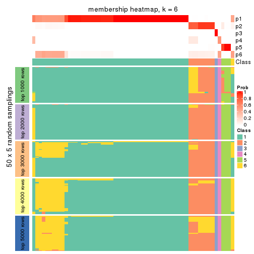
As soon as we have had the classes for columns, we can look for signatures which are significantly different between classes which can be candidate marks for certain classes. Following are the heatmaps for signatures.
Signature heatmaps where rows are scaled:
get_signatures(res, k = 2)
get_signatures(res, k = 3)
get_signatures(res, k = 4)
get_signatures(res, k = 5)

get_signatures(res, k = 6)
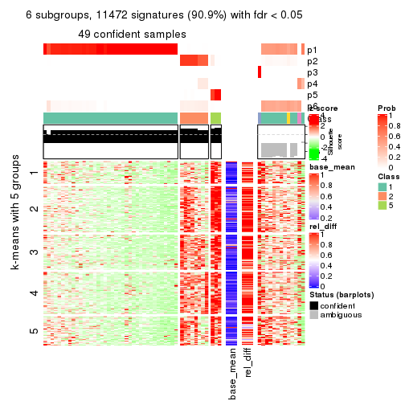
Signature heatmaps where rows are not scaled:
get_signatures(res, k = 2, scale_rows = FALSE)
get_signatures(res, k = 3, scale_rows = FALSE)
#> Error in mat[ceiling(1:nr/h_ratio), ceiling(1:nc/w_ratio), drop = FALSE]: subscript out of bounds
get_signatures(res, k = 4, scale_rows = FALSE)
#> Error in mat[ceiling(1:nr/h_ratio), ceiling(1:nc/w_ratio), drop = FALSE]: subscript out of bounds
get_signatures(res, k = 5, scale_rows = FALSE)
get_signatures(res, k = 6, scale_rows = FALSE)
Compare the overlap of signatures from different k:
compare_signatures(res)
get_signature() returns a data frame invisibly. TO get the list of signatures, the function
call should be assigned to a variable explicitly. In following code, if plot argument is set
to FALSE, no heatmap is plotted while only the differential analysis is performed.
# code only for demonstration
tb = get_signature(res, k = ..., plot = FALSE)
An example of the output of tb is:
#> which_row fdr mean_1 mean_2 scaled_mean_1 scaled_mean_2 km
#> 1 38 0.042760348 8.373488 9.131774 -0.5533452 0.5164555 1
#> 2 40 0.018707592 7.106213 8.469186 -0.6173731 0.5762149 1
#> 3 55 0.019134737 10.221463 11.207825 -0.6159697 0.5749050 1
#> 4 59 0.006059896 5.921854 7.869574 -0.6899429 0.6439467 1
#> 5 60 0.018055526 8.928898 10.211722 -0.6204761 0.5791110 1
#> 6 98 0.009384629 15.714769 14.887706 0.6635654 -0.6193277 2
...
The columns in tb are:
which_row: row indices corresponding to the input matrix.fdr: FDR for the differential test. mean_x: The mean value in group x.scaled_mean_x: The mean value in group x after rows are scaled.km: Row groups if k-means clustering is applied to rows.UMAP plot which shows how samples are separated.
dimension_reduction(res, k = 2, method = "UMAP")

dimension_reduction(res, k = 3, method = "UMAP")
dimension_reduction(res, k = 4, method = "UMAP")
dimension_reduction(res, k = 5, method = "UMAP")
dimension_reduction(res, k = 6, method = "UMAP")
Following heatmap shows how subgroups are split when increasing k:
collect_classes(res)
If matrix rows can be associated to genes, consider to use GO_Enrichment(res,
...) to perform function enrichment for the signature genes.
The object with results only for a single top-value method and a single partition method can be extracted as:
res = res_list["CV", "kmeans"]
# you can also extract it by
# res = res_list["CV:kmeans"]
A summary of res and all the functions that can be applied to it:
res
#> A 'ConsensusPartition' object with k = 2, 3, 4, 5, 6.
#> On a matrix with 12627 rows and 62 columns.
#> Top rows (1000, 2000, 3000, 4000, 5000) are extracted by 'CV' method.
#> Subgroups are detected by 'kmeans' method.
#> Performed in total 1250 partitions by row resampling.
#> Best k for subgroups seems to be 3.
#>
#> Following methods can be applied to this 'ConsensusPartition' object:
#> [1] "cola_report" "collect_classes" "collect_plots"
#> [4] "collect_stats" "colnames" "compare_signatures"
#> [7] "consensus_heatmap" "dimension_reduction" "functional_enrichment"
#> [10] "get_anno_col" "get_anno" "get_classes"
#> [13] "get_consensus" "get_matrix" "get_membership"
#> [16] "get_param" "get_signatures" "get_stats"
#> [19] "is_best_k" "is_stable_k" "membership_heatmap"
#> [22] "ncol" "nrow" "plot_ecdf"
#> [25] "rownames" "select_partition_number" "show"
#> [28] "suggest_best_k" "test_to_known_factors"
collect_plots() function collects all the plots made from res for all k (number of partitions)
into one single page to provide an easy and fast comparison between different k.
collect_plots(res)
The plots are:
k and the heatmap of
predicted classes for each k.k.k.k.All the plots in panels can be made by individual functions and they are plotted later in this section.
select_partition_number() produces several plots showing different
statistics for choosing “optimized” k. There are following statistics:
k;k, the area increased is defined as \(A_k - A_{k-1}\).The detailed explanations of these statistics can be found in the cola vignette.
Generally speaking, lower PAC score, higher mean silhouette score or higher
concordance corresponds to better partition. Rand index and Jaccard index
measure how similar the current partition is compared to partition with k-1.
If they are too similar, we won't accept k is better than k-1.
select_partition_number(res)
The numeric values for all these statistics can be obtained by get_stats().
get_stats(res)
#> k 1-PAC mean_silhouette concordance area_increased Rand Jaccard
#> 2 2 1.000 0.992 0.996 0.4445 0.556 0.556
#> 3 3 0.941 0.925 0.959 0.2317 0.843 0.731
#> 4 4 0.672 0.772 0.882 0.1069 0.960 0.913
#> 5 5 0.639 0.587 0.747 0.1078 0.768 0.495
#> 6 6 0.671 0.585 0.767 0.0503 0.891 0.652
suggest_best_k() suggests the best \(k\) based on these statistics. The rules are as follows:
NA.suggest_best_k(res)
#> [1] 3
#> attr(,"optional")
#> [1] 2
There is also optional best \(k\) = 2 that is worth to check.
Following shows the table of the partitions (You need to click the show/hide
code output link to see it). The membership matrix (columns with name p*)
is inferred by
clue::cl_consensus()
function with the SE method. Basically the value in the membership matrix
represents the probability to belong to a certain group. The finall class
label for an item is determined with the group with highest probability it
belongs to.
In get_classes() function, the entropy is calculated from the membership
matrix and the silhouette score is calculated from the consensus matrix.
cbind(get_classes(res, k = 2), get_membership(res, k = 2))
#> class entropy silhouette p1 p2
#> SRR372611 1 0.0000 0.997 1.000 0.000
#> SRR372612 1 0.0000 0.997 1.000 0.000
#> SRR372613 2 0.0000 0.993 0.000 1.000
#> SRR372614 1 0.0000 0.997 1.000 0.000
#> SRR372615 2 0.0000 0.993 0.000 1.000
#> SRR372616 1 0.0000 0.997 1.000 0.000
#> SRR372617 1 0.0000 0.997 1.000 0.000
#> SRR372618 1 0.0000 0.997 1.000 0.000
#> SRR372619 2 0.0000 0.993 0.000 1.000
#> SRR372620 1 0.0000 0.997 1.000 0.000
#> SRR372621 2 0.0000 0.993 0.000 1.000
#> SRR372622 1 0.0000 0.997 1.000 0.000
#> SRR372623 2 0.0000 0.993 0.000 1.000
#> SRR372624 1 0.0000 0.997 1.000 0.000
#> SRR372625 1 0.0000 0.997 1.000 0.000
#> SRR372626 2 0.0000 0.993 0.000 1.000
#> SRR372627 1 0.0000 0.997 1.000 0.000
#> SRR372628 1 0.0000 0.997 1.000 0.000
#> SRR372629 1 0.0000 0.997 1.000 0.000
#> SRR372630 1 0.0000 0.997 1.000 0.000
#> SRR372631 1 0.0000 0.997 1.000 0.000
#> SRR372632 1 0.0000 0.997 1.000 0.000
#> SRR372633 1 0.0000 0.997 1.000 0.000
#> SRR372634 1 0.0000 0.997 1.000 0.000
#> SRR372635 1 0.0000 0.997 1.000 0.000
#> SRR372636 1 0.0000 0.997 1.000 0.000
#> SRR372637 1 0.0000 0.997 1.000 0.000
#> SRR372638 1 0.0000 0.997 1.000 0.000
#> SRR372639 2 0.0376 0.992 0.004 0.996
#> SRR372640 1 0.0000 0.997 1.000 0.000
#> SRR372641 1 0.0000 0.997 1.000 0.000
#> SRR372642 1 0.0000 0.997 1.000 0.000
#> SRR372643 2 0.0376 0.992 0.004 0.996
#> SRR372644 1 0.0000 0.997 1.000 0.000
#> SRR372645 1 0.0000 0.997 1.000 0.000
#> SRR372646 1 0.0000 0.997 1.000 0.000
#> SRR372647 1 0.0000 0.997 1.000 0.000
#> SRR372648 1 0.0000 0.997 1.000 0.000
#> SRR372649 1 0.0000 0.997 1.000 0.000
#> SRR372650 2 0.0000 0.993 0.000 1.000
#> SRR372651 2 0.0000 0.993 0.000 1.000
#> SRR372652 1 0.4939 0.878 0.892 0.108
#> SRR372653 2 0.0000 0.993 0.000 1.000
#> SRR372654 1 0.0000 0.997 1.000 0.000
#> SRR372655 2 0.0000 0.993 0.000 1.000
#> SRR372656 1 0.0000 0.997 1.000 0.000
#> SRR372657 1 0.0000 0.997 1.000 0.000
#> SRR372658 2 0.0000 0.993 0.000 1.000
#> SRR372659 2 0.0376 0.992 0.004 0.996
#> SRR372660 2 0.4690 0.890 0.100 0.900
#> SRR372661 2 0.0376 0.992 0.004 0.996
#> SRR372662 1 0.0000 0.997 1.000 0.000
#> SRR372663 2 0.0672 0.988 0.008 0.992
#> SRR372664 1 0.0000 0.997 1.000 0.000
#> SRR372665 2 0.0000 0.993 0.000 1.000
#> SRR372666 1 0.0000 0.997 1.000 0.000
#> SRR372667 2 0.0000 0.993 0.000 1.000
#> SRR372668 1 0.0000 0.997 1.000 0.000
#> SRR372669 1 0.0000 0.997 1.000 0.000
#> SRR372670 1 0.0000 0.997 1.000 0.000
#> SRR372671 2 0.0000 0.993 0.000 1.000
#> SRR372672 1 0.0000 0.997 1.000 0.000
cbind(get_classes(res, k = 3), get_membership(res, k = 3))
#> class entropy silhouette p1 p2 p3
#> SRR372611 1 0.1860 0.947 0.948 0.052 0.000
#> SRR372612 1 0.0000 0.987 1.000 0.000 0.000
#> SRR372613 2 0.2261 0.866 0.000 0.932 0.068
#> SRR372614 1 0.1753 0.949 0.952 0.048 0.000
#> SRR372615 2 0.1529 0.880 0.000 0.960 0.040
#> SRR372616 1 0.3038 0.892 0.896 0.104 0.000
#> SRR372617 1 0.0000 0.987 1.000 0.000 0.000
#> SRR372618 1 0.0000 0.987 1.000 0.000 0.000
#> SRR372619 2 0.5465 0.534 0.000 0.712 0.288
#> SRR372620 1 0.0000 0.987 1.000 0.000 0.000
#> SRR372621 2 0.0892 0.890 0.000 0.980 0.020
#> SRR372622 1 0.0000 0.987 1.000 0.000 0.000
#> SRR372623 2 0.2261 0.861 0.000 0.932 0.068
#> SRR372624 1 0.0000 0.987 1.000 0.000 0.000
#> SRR372625 1 0.0000 0.987 1.000 0.000 0.000
#> SRR372626 2 0.2261 0.861 0.000 0.932 0.068
#> SRR372627 1 0.0000 0.987 1.000 0.000 0.000
#> SRR372628 1 0.0000 0.987 1.000 0.000 0.000
#> SRR372629 1 0.0237 0.985 0.996 0.004 0.000
#> SRR372630 1 0.0000 0.987 1.000 0.000 0.000
#> SRR372631 1 0.0237 0.985 0.996 0.004 0.000
#> SRR372632 1 0.0000 0.987 1.000 0.000 0.000
#> SRR372633 2 0.5098 0.588 0.248 0.752 0.000
#> SRR372634 1 0.0000 0.987 1.000 0.000 0.000
#> SRR372635 1 0.1529 0.957 0.960 0.040 0.000
#> SRR372636 1 0.0000 0.987 1.000 0.000 0.000
#> SRR372637 1 0.4452 0.762 0.808 0.192 0.000
#> SRR372638 1 0.0000 0.987 1.000 0.000 0.000
#> SRR372639 2 0.0892 0.890 0.000 0.980 0.020
#> SRR372640 1 0.0000 0.987 1.000 0.000 0.000
#> SRR372641 1 0.0000 0.987 1.000 0.000 0.000
#> SRR372642 1 0.0000 0.987 1.000 0.000 0.000
#> SRR372643 2 0.0892 0.890 0.000 0.980 0.020
#> SRR372644 1 0.0000 0.987 1.000 0.000 0.000
#> SRR372645 2 0.2711 0.837 0.088 0.912 0.000
#> SRR372646 1 0.0000 0.987 1.000 0.000 0.000
#> SRR372647 1 0.0237 0.985 0.996 0.004 0.000
#> SRR372648 1 0.0000 0.987 1.000 0.000 0.000
#> SRR372649 1 0.0000 0.987 1.000 0.000 0.000
#> SRR372650 3 0.0892 0.876 0.000 0.020 0.980
#> SRR372651 3 0.4654 0.812 0.000 0.208 0.792
#> SRR372652 2 0.2261 0.853 0.068 0.932 0.000
#> SRR372653 3 0.0000 0.890 0.000 0.000 1.000
#> SRR372654 1 0.0000 0.987 1.000 0.000 0.000
#> SRR372655 3 0.2261 0.919 0.000 0.068 0.932
#> SRR372656 1 0.0000 0.987 1.000 0.000 0.000
#> SRR372657 1 0.0000 0.987 1.000 0.000 0.000
#> SRR372658 3 0.2261 0.919 0.000 0.068 0.932
#> SRR372659 2 0.0892 0.890 0.000 0.980 0.020
#> SRR372660 2 0.2550 0.871 0.012 0.932 0.056
#> SRR372661 2 0.0892 0.890 0.000 0.980 0.020
#> SRR372662 1 0.0424 0.982 0.992 0.008 0.000
#> SRR372663 2 0.2550 0.871 0.012 0.932 0.056
#> SRR372664 1 0.0000 0.987 1.000 0.000 0.000
#> SRR372665 3 0.2261 0.919 0.000 0.068 0.932
#> SRR372666 2 0.2448 0.846 0.076 0.924 0.000
#> SRR372667 3 0.2261 0.919 0.000 0.068 0.932
#> SRR372668 1 0.0000 0.987 1.000 0.000 0.000
#> SRR372669 1 0.0592 0.979 0.988 0.012 0.000
#> SRR372670 1 0.0000 0.987 1.000 0.000 0.000
#> SRR372671 3 0.5397 0.716 0.000 0.280 0.720
#> SRR372672 1 0.0237 0.985 0.996 0.004 0.000
cbind(get_classes(res, k = 4), get_membership(res, k = 4))
#> class entropy silhouette p1 p2 p3 p4
#> SRR372611 1 0.4333 0.823 0.812 0.032 0.008 0.148
#> SRR372612 1 0.0000 0.920 1.000 0.000 0.000 0.000
#> SRR372613 4 0.4158 0.439 0.000 0.224 0.008 0.768
#> SRR372614 1 0.5142 0.764 0.744 0.064 0.000 0.192
#> SRR372615 2 0.3435 0.682 0.000 0.864 0.036 0.100
#> SRR372616 1 0.6781 0.553 0.596 0.148 0.000 0.256
#> SRR372617 1 0.3325 0.860 0.864 0.024 0.000 0.112
#> SRR372618 1 0.0000 0.920 1.000 0.000 0.000 0.000
#> SRR372619 2 0.6605 0.349 0.000 0.616 0.248 0.136
#> SRR372620 1 0.0000 0.920 1.000 0.000 0.000 0.000
#> SRR372621 2 0.2329 0.716 0.000 0.916 0.012 0.072
#> SRR372622 1 0.1256 0.911 0.964 0.000 0.008 0.028
#> SRR372623 2 0.4153 0.651 0.000 0.820 0.048 0.132
#> SRR372624 1 0.0336 0.917 0.992 0.000 0.008 0.000
#> SRR372625 1 0.0336 0.917 0.992 0.000 0.008 0.000
#> SRR372626 2 0.4206 0.648 0.000 0.816 0.048 0.136
#> SRR372627 1 0.0336 0.917 0.992 0.000 0.008 0.000
#> SRR372628 1 0.0336 0.917 0.992 0.000 0.008 0.000
#> SRR372629 1 0.3877 0.844 0.840 0.048 0.000 0.112
#> SRR372630 1 0.0000 0.920 1.000 0.000 0.000 0.000
#> SRR372631 1 0.4037 0.838 0.832 0.056 0.000 0.112
#> SRR372632 1 0.0000 0.920 1.000 0.000 0.000 0.000
#> SRR372633 2 0.4791 0.614 0.080 0.784 0.000 0.136
#> SRR372634 1 0.0000 0.920 1.000 0.000 0.000 0.000
#> SRR372635 1 0.6835 0.468 0.576 0.288 0.000 0.136
#> SRR372636 1 0.0000 0.920 1.000 0.000 0.000 0.000
#> SRR372637 2 0.7033 0.217 0.336 0.528 0.000 0.136
#> SRR372638 1 0.0000 0.920 1.000 0.000 0.000 0.000
#> SRR372639 2 0.1398 0.740 0.000 0.956 0.004 0.040
#> SRR372640 1 0.0000 0.920 1.000 0.000 0.000 0.000
#> SRR372641 1 0.0817 0.913 0.976 0.000 0.000 0.024
#> SRR372642 1 0.0000 0.920 1.000 0.000 0.000 0.000
#> SRR372643 2 0.0895 0.741 0.000 0.976 0.004 0.020
#> SRR372644 1 0.0000 0.920 1.000 0.000 0.000 0.000
#> SRR372645 2 0.3711 0.672 0.024 0.836 0.000 0.140
#> SRR372646 1 0.0000 0.920 1.000 0.000 0.000 0.000
#> SRR372647 1 0.3160 0.865 0.872 0.020 0.000 0.108
#> SRR372648 1 0.0000 0.920 1.000 0.000 0.000 0.000
#> SRR372649 1 0.1867 0.893 0.928 0.000 0.000 0.072
#> SRR372650 4 0.4933 0.191 0.000 0.000 0.432 0.568
#> SRR372651 3 0.5100 0.667 0.000 0.168 0.756 0.076
#> SRR372652 2 0.4164 0.629 0.000 0.736 0.000 0.264
#> SRR372653 3 0.1854 0.733 0.000 0.012 0.940 0.048
#> SRR372654 1 0.2408 0.878 0.896 0.000 0.000 0.104
#> SRR372655 3 0.3972 0.745 0.000 0.080 0.840 0.080
#> SRR372656 1 0.0000 0.920 1.000 0.000 0.000 0.000
#> SRR372657 1 0.0000 0.920 1.000 0.000 0.000 0.000
#> SRR372658 3 0.0707 0.785 0.000 0.020 0.980 0.000
#> SRR372659 2 0.0779 0.741 0.000 0.980 0.004 0.016
#> SRR372660 2 0.3356 0.682 0.000 0.824 0.000 0.176
#> SRR372661 2 0.0376 0.742 0.000 0.992 0.004 0.004
#> SRR372662 1 0.5582 0.735 0.728 0.136 0.000 0.136
#> SRR372663 2 0.3400 0.681 0.000 0.820 0.000 0.180
#> SRR372664 1 0.0000 0.920 1.000 0.000 0.000 0.000
#> SRR372665 3 0.0592 0.787 0.000 0.016 0.984 0.000
#> SRR372666 2 0.4855 0.598 0.020 0.712 0.000 0.268
#> SRR372667 3 0.0592 0.787 0.000 0.016 0.984 0.000
#> SRR372668 1 0.0000 0.920 1.000 0.000 0.000 0.000
#> SRR372669 1 0.5167 0.773 0.760 0.108 0.000 0.132
#> SRR372670 1 0.0000 0.920 1.000 0.000 0.000 0.000
#> SRR372671 3 0.6004 0.519 0.000 0.276 0.648 0.076
#> SRR372672 1 0.5102 0.777 0.764 0.100 0.000 0.136
cbind(get_classes(res, k = 5), get_membership(res, k = 5))
#> class entropy silhouette p1 p2 p3 p4 p5
#> SRR372611 3 0.5913 0.3499 0.304 0.004 0.576 0.116 0.000
#> SRR372612 1 0.4307 0.9959 0.504 0.000 0.496 0.000 0.000
#> SRR372613 4 0.0703 0.4704 0.000 0.024 0.000 0.976 0.000
#> SRR372614 3 0.2811 0.5628 0.012 0.012 0.876 0.100 0.000
#> SRR372615 2 0.2982 0.6079 0.116 0.860 0.000 0.004 0.020
#> SRR372616 3 0.5472 0.3761 0.008 0.128 0.676 0.188 0.000
#> SRR372617 3 0.1197 0.4231 0.048 0.000 0.952 0.000 0.000
#> SRR372618 1 0.4307 0.9959 0.504 0.000 0.496 0.000 0.000
#> SRR372619 2 0.5866 0.3705 0.220 0.648 0.000 0.024 0.108
#> SRR372620 1 0.4307 0.9959 0.504 0.000 0.496 0.000 0.000
#> SRR372621 2 0.1877 0.6560 0.064 0.924 0.012 0.000 0.000
#> SRR372622 3 0.4201 -0.7623 0.408 0.000 0.592 0.000 0.000
#> SRR372623 2 0.3851 0.5515 0.212 0.768 0.000 0.016 0.004
#> SRR372624 1 0.4304 0.9814 0.516 0.000 0.484 0.000 0.000
#> SRR372625 1 0.4304 0.9814 0.516 0.000 0.484 0.000 0.000
#> SRR372626 2 0.3914 0.5414 0.220 0.760 0.000 0.016 0.004
#> SRR372627 1 0.4304 0.9814 0.516 0.000 0.484 0.000 0.000
#> SRR372628 1 0.4304 0.9814 0.516 0.000 0.484 0.000 0.000
#> SRR372629 3 0.1106 0.4823 0.024 0.012 0.964 0.000 0.000
#> SRR372630 1 0.4307 0.9959 0.504 0.000 0.496 0.000 0.000
#> SRR372631 3 0.1872 0.5365 0.020 0.052 0.928 0.000 0.000
#> SRR372632 1 0.4307 0.9959 0.504 0.000 0.496 0.000 0.000
#> SRR372633 3 0.4443 -0.1482 0.004 0.472 0.524 0.000 0.000
#> SRR372634 1 0.4307 0.9959 0.504 0.000 0.496 0.000 0.000
#> SRR372635 3 0.3715 0.4484 0.004 0.260 0.736 0.000 0.000
#> SRR372636 1 0.4307 0.9959 0.504 0.000 0.496 0.000 0.000
#> SRR372637 3 0.3796 0.3569 0.000 0.300 0.700 0.000 0.000
#> SRR372638 1 0.4307 0.9959 0.504 0.000 0.496 0.000 0.000
#> SRR372639 2 0.2020 0.6784 0.000 0.900 0.100 0.000 0.000
#> SRR372640 1 0.4307 0.9959 0.504 0.000 0.496 0.000 0.000
#> SRR372641 3 0.3966 -0.5994 0.336 0.000 0.664 0.000 0.000
#> SRR372642 1 0.4307 0.9959 0.504 0.000 0.496 0.000 0.000
#> SRR372643 2 0.2439 0.6685 0.004 0.876 0.120 0.000 0.000
#> SRR372644 1 0.4307 0.9959 0.504 0.000 0.496 0.000 0.000
#> SRR372645 3 0.4449 -0.1830 0.004 0.484 0.512 0.000 0.000
#> SRR372646 1 0.4307 0.9959 0.504 0.000 0.496 0.000 0.000
#> SRR372647 3 0.1478 0.3919 0.064 0.000 0.936 0.000 0.000
#> SRR372648 1 0.4307 0.9959 0.504 0.000 0.496 0.000 0.000
#> SRR372649 3 0.3395 -0.2419 0.236 0.000 0.764 0.000 0.000
#> SRR372650 4 0.6247 0.2637 0.144 0.000 0.000 0.432 0.424
#> SRR372651 5 0.5658 0.5313 0.080 0.312 0.000 0.008 0.600
#> SRR372652 2 0.6989 0.2383 0.008 0.384 0.344 0.264 0.000
#> SRR372653 5 0.0324 0.5958 0.004 0.000 0.000 0.004 0.992
#> SRR372654 3 0.3074 -0.0671 0.196 0.000 0.804 0.000 0.000
#> SRR372655 5 0.5808 0.5320 0.100 0.292 0.000 0.008 0.600
#> SRR372656 1 0.4307 0.9959 0.504 0.000 0.496 0.000 0.000
#> SRR372657 1 0.4307 0.9959 0.504 0.000 0.496 0.000 0.000
#> SRR372658 5 0.0000 0.6027 0.000 0.000 0.000 0.000 1.000
#> SRR372659 2 0.1704 0.6892 0.004 0.928 0.068 0.000 0.000
#> SRR372660 2 0.6004 0.4647 0.008 0.592 0.128 0.272 0.000
#> SRR372661 2 0.1831 0.6883 0.004 0.920 0.076 0.000 0.000
#> SRR372662 3 0.2230 0.5862 0.000 0.116 0.884 0.000 0.000
#> SRR372663 2 0.6495 0.4153 0.008 0.532 0.196 0.264 0.000
#> SRR372664 1 0.4307 0.9959 0.504 0.000 0.496 0.000 0.000
#> SRR372665 5 0.0000 0.6027 0.000 0.000 0.000 0.000 1.000
#> SRR372666 3 0.6963 -0.2455 0.008 0.328 0.404 0.260 0.000
#> SRR372667 5 0.0798 0.6055 0.016 0.000 0.000 0.008 0.976
#> SRR372668 1 0.4307 0.9959 0.504 0.000 0.496 0.000 0.000
#> SRR372669 3 0.1908 0.5806 0.000 0.092 0.908 0.000 0.000
#> SRR372670 1 0.4307 0.9959 0.504 0.000 0.496 0.000 0.000
#> SRR372671 5 0.5944 0.3419 0.080 0.448 0.000 0.008 0.464
#> SRR372672 3 0.1792 0.5766 0.000 0.084 0.916 0.000 0.000
cbind(get_classes(res, k = 6), get_membership(res, k = 6))
#> class entropy silhouette p1 p2 p3 p4 p5 p6
#> SRR372611 6 0.7065 -0.0543 0.172 0.000 0.292 0.108 0.000 0.428
#> SRR372612 1 0.0291 0.9199 0.992 0.000 0.000 0.004 0.000 0.004
#> SRR372613 4 0.3956 0.3363 0.000 0.000 0.024 0.684 0.000 0.292
#> SRR372614 3 0.5259 0.4687 0.280 0.000 0.608 0.012 0.000 0.100
#> SRR372615 2 0.4313 0.6203 0.000 0.720 0.212 0.000 0.008 0.060
#> SRR372616 3 0.4418 0.2344 0.076 0.000 0.728 0.012 0.000 0.184
#> SRR372617 3 0.3860 0.3952 0.472 0.000 0.528 0.000 0.000 0.000
#> SRR372618 1 0.0000 0.9206 1.000 0.000 0.000 0.000 0.000 0.000
#> SRR372619 2 0.2494 0.4229 0.000 0.900 0.004 0.028 0.036 0.032
#> SRR372620 1 0.0146 0.9197 0.996 0.000 0.000 0.004 0.000 0.000
#> SRR372621 2 0.4621 0.6373 0.000 0.612 0.332 0.000 0.000 0.056
#> SRR372622 1 0.3551 0.7216 0.804 0.000 0.144 0.012 0.000 0.040
#> SRR372623 2 0.2151 0.5406 0.000 0.912 0.048 0.024 0.000 0.016
#> SRR372624 1 0.1297 0.8844 0.948 0.000 0.000 0.012 0.000 0.040
#> SRR372625 1 0.1297 0.8844 0.948 0.000 0.000 0.012 0.000 0.040
#> SRR372626 2 0.1950 0.5260 0.000 0.924 0.032 0.028 0.000 0.016
#> SRR372627 1 0.1297 0.8844 0.948 0.000 0.000 0.012 0.000 0.040
#> SRR372628 1 0.1297 0.8844 0.948 0.000 0.000 0.012 0.000 0.040
#> SRR372629 3 0.3804 0.4918 0.424 0.000 0.576 0.000 0.000 0.000
#> SRR372630 1 0.0000 0.9206 1.000 0.000 0.000 0.000 0.000 0.000
#> SRR372631 3 0.3695 0.5391 0.376 0.000 0.624 0.000 0.000 0.000
#> SRR372632 1 0.0146 0.9197 0.996 0.000 0.000 0.004 0.000 0.000
#> SRR372633 3 0.1594 0.2297 0.016 0.052 0.932 0.000 0.000 0.000
#> SRR372634 1 0.0146 0.9197 0.996 0.000 0.000 0.004 0.000 0.000
#> SRR372635 3 0.1913 0.3468 0.080 0.012 0.908 0.000 0.000 0.000
#> SRR372636 1 0.0000 0.9206 1.000 0.000 0.000 0.000 0.000 0.000
#> SRR372637 3 0.2473 0.4216 0.136 0.008 0.856 0.000 0.000 0.000
#> SRR372638 1 0.0000 0.9206 1.000 0.000 0.000 0.000 0.000 0.000
#> SRR372639 2 0.4804 0.5743 0.000 0.492 0.456 0.000 0.000 0.052
#> SRR372640 1 0.0146 0.9197 0.996 0.000 0.000 0.004 0.000 0.000
#> SRR372641 1 0.3076 0.5498 0.760 0.000 0.240 0.000 0.000 0.000
#> SRR372642 1 0.0000 0.9206 1.000 0.000 0.000 0.000 0.000 0.000
#> SRR372643 2 0.5153 0.5664 0.000 0.460 0.456 0.000 0.000 0.084
#> SRR372644 1 0.0291 0.9199 0.992 0.000 0.000 0.004 0.000 0.004
#> SRR372645 3 0.1327 0.1950 0.000 0.064 0.936 0.000 0.000 0.000
#> SRR372646 1 0.0291 0.9199 0.992 0.000 0.000 0.004 0.000 0.004
#> SRR372647 3 0.4095 0.3620 0.480 0.000 0.512 0.008 0.000 0.000
#> SRR372648 1 0.0291 0.9199 0.992 0.000 0.000 0.004 0.000 0.004
#> SRR372649 1 0.3864 0.2433 0.648 0.000 0.344 0.004 0.000 0.004
#> SRR372650 4 0.5982 0.2929 0.000 0.012 0.000 0.480 0.340 0.168
#> SRR372651 5 0.4379 0.5813 0.000 0.336 0.000 0.008 0.632 0.024
#> SRR372652 3 0.4852 -0.5524 0.000 0.056 0.492 0.000 0.000 0.452
#> SRR372653 5 0.0405 0.6348 0.000 0.000 0.000 0.004 0.988 0.008
#> SRR372654 1 0.4006 0.0362 0.600 0.000 0.392 0.004 0.000 0.004
#> SRR372655 5 0.4743 0.5351 0.000 0.396 0.000 0.008 0.560 0.036
#> SRR372656 1 0.0000 0.9206 1.000 0.000 0.000 0.000 0.000 0.000
#> SRR372657 1 0.0291 0.9199 0.992 0.000 0.000 0.004 0.000 0.004
#> SRR372658 5 0.0146 0.6439 0.000 0.004 0.000 0.000 0.996 0.000
#> SRR372659 2 0.5147 0.5922 0.000 0.480 0.436 0.000 0.000 0.084
#> SRR372660 6 0.5815 0.3120 0.000 0.200 0.328 0.000 0.000 0.472
#> SRR372661 2 0.5149 0.5889 0.000 0.476 0.440 0.000 0.000 0.084
#> SRR372662 3 0.3895 0.5416 0.280 0.000 0.700 0.012 0.000 0.008
#> SRR372663 6 0.5556 0.3948 0.000 0.136 0.412 0.000 0.000 0.452
#> SRR372664 1 0.0291 0.9199 0.992 0.000 0.000 0.004 0.000 0.004
#> SRR372665 5 0.0146 0.6439 0.000 0.004 0.000 0.000 0.996 0.000
#> SRR372666 3 0.4310 -0.4695 0.000 0.020 0.540 0.000 0.000 0.440
#> SRR372667 5 0.1890 0.6475 0.000 0.044 0.000 0.008 0.924 0.024
#> SRR372668 1 0.0291 0.9199 0.992 0.000 0.000 0.004 0.000 0.004
#> SRR372669 3 0.3988 0.5559 0.324 0.000 0.660 0.012 0.000 0.004
#> SRR372670 1 0.0291 0.9199 0.992 0.000 0.000 0.004 0.000 0.004
#> SRR372671 5 0.6340 0.2850 0.000 0.404 0.096 0.008 0.444 0.048
#> SRR372672 3 0.4077 0.5540 0.320 0.000 0.660 0.012 0.000 0.008
Heatmaps for the consensus matrix. It visualizes the probability of two samples to be in a same group.
consensus_heatmap(res, k = 2)
consensus_heatmap(res, k = 3)
consensus_heatmap(res, k = 4)
consensus_heatmap(res, k = 5)
consensus_heatmap(res, k = 6)
Heatmaps for the membership of samples in all partitions to see how consistent they are:
membership_heatmap(res, k = 2)
membership_heatmap(res, k = 3)
membership_heatmap(res, k = 4)
membership_heatmap(res, k = 5)
membership_heatmap(res, k = 6)
As soon as we have had the classes for columns, we can look for signatures which are significantly different between classes which can be candidate marks for certain classes. Following are the heatmaps for signatures.
Signature heatmaps where rows are scaled:
get_signatures(res, k = 2)
get_signatures(res, k = 3)
get_signatures(res, k = 4)
get_signatures(res, k = 5)
get_signatures(res, k = 6)
Signature heatmaps where rows are not scaled:
get_signatures(res, k = 2, scale_rows = FALSE)

get_signatures(res, k = 3, scale_rows = FALSE)
get_signatures(res, k = 4, scale_rows = FALSE)
#> Error in mat[ceiling(1:nr/h_ratio), ceiling(1:nc/w_ratio), drop = FALSE]: subscript out of bounds
get_signatures(res, k = 5, scale_rows = FALSE)
#> Error in mat[ceiling(1:nr/h_ratio), ceiling(1:nc/w_ratio), drop = FALSE]: subscript out of bounds
get_signatures(res, k = 6, scale_rows = FALSE)
#> Error in mat[ceiling(1:nr/h_ratio), ceiling(1:nc/w_ratio), drop = FALSE]: subscript out of bounds
Compare the overlap of signatures from different k:
compare_signatures(res)
get_signature() returns a data frame invisibly. TO get the list of signatures, the function
call should be assigned to a variable explicitly. In following code, if plot argument is set
to FALSE, no heatmap is plotted while only the differential analysis is performed.
# code only for demonstration
tb = get_signature(res, k = ..., plot = FALSE)
An example of the output of tb is:
#> which_row fdr mean_1 mean_2 scaled_mean_1 scaled_mean_2 km
#> 1 38 0.042760348 8.373488 9.131774 -0.5533452 0.5164555 1
#> 2 40 0.018707592 7.106213 8.469186 -0.6173731 0.5762149 1
#> 3 55 0.019134737 10.221463 11.207825 -0.6159697 0.5749050 1
#> 4 59 0.006059896 5.921854 7.869574 -0.6899429 0.6439467 1
#> 5 60 0.018055526 8.928898 10.211722 -0.6204761 0.5791110 1
#> 6 98 0.009384629 15.714769 14.887706 0.6635654 -0.6193277 2
...
The columns in tb are:
which_row: row indices corresponding to the input matrix.fdr: FDR for the differential test. mean_x: The mean value in group x.scaled_mean_x: The mean value in group x after rows are scaled.km: Row groups if k-means clustering is applied to rows.UMAP plot which shows how samples are separated.
dimension_reduction(res, k = 2, method = "UMAP")
dimension_reduction(res, k = 3, method = "UMAP")
dimension_reduction(res, k = 4, method = "UMAP")
dimension_reduction(res, k = 5, method = "UMAP")
dimension_reduction(res, k = 6, method = "UMAP")
Following heatmap shows how subgroups are split when increasing k:
collect_classes(res)
If matrix rows can be associated to genes, consider to use GO_Enrichment(res,
...) to perform function enrichment for the signature genes.
The object with results only for a single top-value method and a single partition method can be extracted as:
res = res_list["CV", "skmeans"]
# you can also extract it by
# res = res_list["CV:skmeans"]
A summary of res and all the functions that can be applied to it:
res
#> A 'ConsensusPartition' object with k = 2, 3, 4, 5, 6.
#> On a matrix with 12627 rows and 62 columns.
#> Top rows (1000, 2000, 3000, 4000, 5000) are extracted by 'CV' method.
#> Subgroups are detected by 'skmeans' method.
#> Performed in total 1250 partitions by row resampling.
#> Best k for subgroups seems to be 2.
#>
#> Following methods can be applied to this 'ConsensusPartition' object:
#> [1] "cola_report" "collect_classes" "collect_plots"
#> [4] "collect_stats" "colnames" "compare_signatures"
#> [7] "consensus_heatmap" "dimension_reduction" "functional_enrichment"
#> [10] "get_anno_col" "get_anno" "get_classes"
#> [13] "get_consensus" "get_matrix" "get_membership"
#> [16] "get_param" "get_signatures" "get_stats"
#> [19] "is_best_k" "is_stable_k" "membership_heatmap"
#> [22] "ncol" "nrow" "plot_ecdf"
#> [25] "rownames" "select_partition_number" "show"
#> [28] "suggest_best_k" "test_to_known_factors"
collect_plots() function collects all the plots made from res for all k (number of partitions)
into one single page to provide an easy and fast comparison between different k.
collect_plots(res)
The plots are:
k and the heatmap of
predicted classes for each k.k.k.k.All the plots in panels can be made by individual functions and they are plotted later in this section.
select_partition_number() produces several plots showing different
statistics for choosing “optimized” k. There are following statistics:
k;k, the area increased is defined as \(A_k - A_{k-1}\).The detailed explanations of these statistics can be found in the cola vignette.
Generally speaking, lower PAC score, higher mean silhouette score or higher
concordance corresponds to better partition. Rand index and Jaccard index
measure how similar the current partition is compared to partition with k-1.
If they are too similar, we won't accept k is better than k-1.
select_partition_number(res)
The numeric values for all these statistics can be obtained by get_stats().
get_stats(res)
#> k 1-PAC mean_silhouette concordance area_increased Rand Jaccard
#> 2 2 1.000 0.998 0.999 0.4824 0.518 0.518
#> 3 3 0.741 0.740 0.879 0.2048 0.936 0.877
#> 4 4 0.854 0.837 0.922 0.1225 0.895 0.775
#> 5 5 0.791 0.689 0.861 0.0586 0.967 0.911
#> 6 6 0.754 0.681 0.830 0.0351 0.924 0.784
suggest_best_k() suggests the best \(k\) based on these statistics. The rules are as follows:
NA.suggest_best_k(res)
#> [1] 2
Following shows the table of the partitions (You need to click the show/hide
code output link to see it). The membership matrix (columns with name p*)
is inferred by
clue::cl_consensus()
function with the SE method. Basically the value in the membership matrix
represents the probability to belong to a certain group. The finall class
label for an item is determined with the group with highest probability it
belongs to.
In get_classes() function, the entropy is calculated from the membership
matrix and the silhouette score is calculated from the consensus matrix.
cbind(get_classes(res, k = 2), get_membership(res, k = 2))
#> class entropy silhouette p1 p2
#> SRR372611 1 0.0000 1.000 1.000 0.000
#> SRR372612 1 0.0000 1.000 1.000 0.000
#> SRR372613 2 0.0000 0.998 0.000 1.000
#> SRR372614 1 0.0000 1.000 1.000 0.000
#> SRR372615 2 0.0000 0.998 0.000 1.000
#> SRR372616 1 0.0000 1.000 1.000 0.000
#> SRR372617 1 0.0000 1.000 1.000 0.000
#> SRR372618 1 0.0000 1.000 1.000 0.000
#> SRR372619 2 0.0000 0.998 0.000 1.000
#> SRR372620 1 0.0000 1.000 1.000 0.000
#> SRR372621 2 0.0000 0.998 0.000 1.000
#> SRR372622 1 0.0000 1.000 1.000 0.000
#> SRR372623 2 0.0000 0.998 0.000 1.000
#> SRR372624 1 0.0000 1.000 1.000 0.000
#> SRR372625 1 0.0000 1.000 1.000 0.000
#> SRR372626 2 0.0000 0.998 0.000 1.000
#> SRR372627 1 0.0000 1.000 1.000 0.000
#> SRR372628 1 0.0000 1.000 1.000 0.000
#> SRR372629 1 0.0000 1.000 1.000 0.000
#> SRR372630 1 0.0000 1.000 1.000 0.000
#> SRR372631 1 0.0000 1.000 1.000 0.000
#> SRR372632 1 0.0000 1.000 1.000 0.000
#> SRR372633 2 0.0376 0.994 0.004 0.996
#> SRR372634 1 0.0000 1.000 1.000 0.000
#> SRR372635 1 0.0000 1.000 1.000 0.000
#> SRR372636 1 0.0000 1.000 1.000 0.000
#> SRR372637 1 0.0000 1.000 1.000 0.000
#> SRR372638 1 0.0000 1.000 1.000 0.000
#> SRR372639 2 0.0000 0.998 0.000 1.000
#> SRR372640 1 0.0000 1.000 1.000 0.000
#> SRR372641 1 0.0000 1.000 1.000 0.000
#> SRR372642 1 0.0000 1.000 1.000 0.000
#> SRR372643 2 0.0000 0.998 0.000 1.000
#> SRR372644 1 0.0000 1.000 1.000 0.000
#> SRR372645 2 0.0000 0.998 0.000 1.000
#> SRR372646 1 0.0000 1.000 1.000 0.000
#> SRR372647 1 0.0000 1.000 1.000 0.000
#> SRR372648 1 0.0000 1.000 1.000 0.000
#> SRR372649 1 0.0000 1.000 1.000 0.000
#> SRR372650 2 0.0000 0.998 0.000 1.000
#> SRR372651 2 0.0000 0.998 0.000 1.000
#> SRR372652 2 0.0000 0.998 0.000 1.000
#> SRR372653 2 0.0000 0.998 0.000 1.000
#> SRR372654 1 0.0000 1.000 1.000 0.000
#> SRR372655 2 0.0000 0.998 0.000 1.000
#> SRR372656 1 0.0000 1.000 1.000 0.000
#> SRR372657 1 0.0000 1.000 1.000 0.000
#> SRR372658 2 0.0000 0.998 0.000 1.000
#> SRR372659 2 0.0000 0.998 0.000 1.000
#> SRR372660 2 0.0000 0.998 0.000 1.000
#> SRR372661 2 0.0000 0.998 0.000 1.000
#> SRR372662 1 0.0000 1.000 1.000 0.000
#> SRR372663 2 0.0000 0.998 0.000 1.000
#> SRR372664 1 0.0000 1.000 1.000 0.000
#> SRR372665 2 0.0000 0.998 0.000 1.000
#> SRR372666 2 0.2778 0.950 0.048 0.952
#> SRR372667 2 0.0000 0.998 0.000 1.000
#> SRR372668 1 0.0000 1.000 1.000 0.000
#> SRR372669 1 0.0000 1.000 1.000 0.000
#> SRR372670 1 0.0000 1.000 1.000 0.000
#> SRR372671 2 0.0000 0.998 0.000 1.000
#> SRR372672 1 0.0000 1.000 1.000 0.000
cbind(get_classes(res, k = 3), get_membership(res, k = 3))
#> class entropy silhouette p1 p2 p3
#> SRR372611 1 0.4796 0.669 0.780 0.220 0.000
#> SRR372612 1 0.0000 0.905 1.000 0.000 0.000
#> SRR372613 3 0.6309 -0.682 0.000 0.496 0.504
#> SRR372614 1 0.5431 0.568 0.716 0.284 0.000
#> SRR372615 3 0.0000 0.833 0.000 0.000 1.000
#> SRR372616 2 0.6308 -0.180 0.492 0.508 0.000
#> SRR372617 1 0.3192 0.823 0.888 0.112 0.000
#> SRR372618 1 0.0000 0.905 1.000 0.000 0.000
#> SRR372619 3 0.0000 0.833 0.000 0.000 1.000
#> SRR372620 1 0.0000 0.905 1.000 0.000 0.000
#> SRR372621 3 0.0000 0.833 0.000 0.000 1.000
#> SRR372622 1 0.0000 0.905 1.000 0.000 0.000
#> SRR372623 3 0.0000 0.833 0.000 0.000 1.000
#> SRR372624 1 0.0000 0.905 1.000 0.000 0.000
#> SRR372625 1 0.0000 0.905 1.000 0.000 0.000
#> SRR372626 3 0.0000 0.833 0.000 0.000 1.000
#> SRR372627 1 0.0000 0.905 1.000 0.000 0.000
#> SRR372628 1 0.0000 0.905 1.000 0.000 0.000
#> SRR372629 1 0.6204 0.468 0.576 0.424 0.000
#> SRR372630 1 0.0000 0.905 1.000 0.000 0.000
#> SRR372631 1 0.6307 0.379 0.512 0.488 0.000
#> SRR372632 1 0.0000 0.905 1.000 0.000 0.000
#> SRR372633 3 0.6521 0.250 0.004 0.492 0.504
#> SRR372634 1 0.0000 0.905 1.000 0.000 0.000
#> SRR372635 1 0.6308 0.373 0.508 0.492 0.000
#> SRR372636 1 0.0000 0.905 1.000 0.000 0.000
#> SRR372637 1 0.6521 0.360 0.500 0.496 0.004
#> SRR372638 1 0.0000 0.905 1.000 0.000 0.000
#> SRR372639 3 0.0237 0.831 0.000 0.004 0.996
#> SRR372640 1 0.0000 0.905 1.000 0.000 0.000
#> SRR372641 1 0.0000 0.905 1.000 0.000 0.000
#> SRR372642 1 0.0000 0.905 1.000 0.000 0.000
#> SRR372643 3 0.3752 0.672 0.000 0.144 0.856
#> SRR372644 1 0.0000 0.905 1.000 0.000 0.000
#> SRR372645 3 0.6307 0.259 0.000 0.488 0.512
#> SRR372646 1 0.0000 0.905 1.000 0.000 0.000
#> SRR372647 1 0.0000 0.905 1.000 0.000 0.000
#> SRR372648 1 0.0000 0.905 1.000 0.000 0.000
#> SRR372649 1 0.0000 0.905 1.000 0.000 0.000
#> SRR372650 3 0.4654 0.419 0.000 0.208 0.792
#> SRR372651 3 0.0000 0.833 0.000 0.000 1.000
#> SRR372652 2 0.6308 0.615 0.000 0.508 0.492
#> SRR372653 3 0.0237 0.830 0.000 0.004 0.996
#> SRR372654 1 0.0000 0.905 1.000 0.000 0.000
#> SRR372655 3 0.0000 0.833 0.000 0.000 1.000
#> SRR372656 1 0.0000 0.905 1.000 0.000 0.000
#> SRR372657 1 0.0000 0.905 1.000 0.000 0.000
#> SRR372658 3 0.0000 0.833 0.000 0.000 1.000
#> SRR372659 3 0.0592 0.824 0.000 0.012 0.988
#> SRR372660 2 0.6309 0.608 0.000 0.504 0.496
#> SRR372661 3 0.1411 0.802 0.000 0.036 0.964
#> SRR372662 1 0.5016 0.666 0.760 0.240 0.000
#> SRR372663 2 0.6308 0.615 0.000 0.508 0.492
#> SRR372664 1 0.0000 0.905 1.000 0.000 0.000
#> SRR372665 3 0.0000 0.833 0.000 0.000 1.000
#> SRR372666 2 0.6520 0.614 0.004 0.508 0.488
#> SRR372667 3 0.0000 0.833 0.000 0.000 1.000
#> SRR372668 1 0.0000 0.905 1.000 0.000 0.000
#> SRR372669 1 0.4702 0.726 0.788 0.212 0.000
#> SRR372670 1 0.0000 0.905 1.000 0.000 0.000
#> SRR372671 3 0.0000 0.833 0.000 0.000 1.000
#> SRR372672 1 0.3816 0.771 0.852 0.148 0.000
cbind(get_classes(res, k = 4), get_membership(res, k = 4))
#> class entropy silhouette p1 p2 p3 p4
#> SRR372611 1 0.5022 0.605 0.708 0.000 0.028 0.264
#> SRR372612 1 0.0188 0.915 0.996 0.000 0.004 0.000
#> SRR372613 4 0.4456 0.773 0.000 0.280 0.004 0.716
#> SRR372614 1 0.5756 0.420 0.592 0.000 0.036 0.372
#> SRR372615 2 0.0336 0.958 0.000 0.992 0.000 0.008
#> SRR372616 4 0.1297 0.717 0.020 0.000 0.016 0.964
#> SRR372617 1 0.4843 0.305 0.604 0.000 0.396 0.000
#> SRR372618 1 0.0469 0.918 0.988 0.000 0.012 0.000
#> SRR372619 2 0.0524 0.959 0.000 0.988 0.004 0.008
#> SRR372620 1 0.0469 0.918 0.988 0.000 0.012 0.000
#> SRR372621 2 0.0657 0.958 0.000 0.984 0.004 0.012
#> SRR372622 1 0.0657 0.916 0.984 0.000 0.012 0.004
#> SRR372623 2 0.0524 0.959 0.000 0.988 0.004 0.008
#> SRR372624 1 0.0469 0.918 0.988 0.000 0.012 0.000
#> SRR372625 1 0.0469 0.918 0.988 0.000 0.012 0.000
#> SRR372626 2 0.0524 0.959 0.000 0.988 0.004 0.008
#> SRR372627 1 0.0469 0.918 0.988 0.000 0.012 0.000
#> SRR372628 1 0.0469 0.918 0.988 0.000 0.012 0.000
#> SRR372629 3 0.4888 0.247 0.412 0.000 0.588 0.000
#> SRR372630 1 0.0469 0.918 0.988 0.000 0.012 0.000
#> SRR372631 3 0.1807 0.759 0.052 0.000 0.940 0.008
#> SRR372632 1 0.0469 0.918 0.988 0.000 0.012 0.000
#> SRR372633 3 0.1635 0.739 0.000 0.044 0.948 0.008
#> SRR372634 1 0.0469 0.918 0.988 0.000 0.012 0.000
#> SRR372635 3 0.1151 0.769 0.024 0.000 0.968 0.008
#> SRR372636 1 0.0469 0.918 0.988 0.000 0.012 0.000
#> SRR372637 3 0.1004 0.769 0.024 0.000 0.972 0.004
#> SRR372638 1 0.0469 0.918 0.988 0.000 0.012 0.000
#> SRR372639 2 0.0524 0.958 0.000 0.988 0.004 0.008
#> SRR372640 1 0.0469 0.918 0.988 0.000 0.012 0.000
#> SRR372641 1 0.0469 0.918 0.988 0.000 0.012 0.000
#> SRR372642 1 0.0469 0.918 0.988 0.000 0.012 0.000
#> SRR372643 2 0.3852 0.753 0.000 0.800 0.192 0.008
#> SRR372644 1 0.0188 0.915 0.996 0.000 0.004 0.000
#> SRR372645 3 0.4019 0.579 0.000 0.196 0.792 0.012
#> SRR372646 1 0.0188 0.915 0.996 0.000 0.004 0.000
#> SRR372647 1 0.0336 0.914 0.992 0.000 0.008 0.000
#> SRR372648 1 0.0188 0.915 0.996 0.000 0.004 0.000
#> SRR372649 1 0.0188 0.916 0.996 0.000 0.004 0.000
#> SRR372650 2 0.2345 0.859 0.000 0.900 0.000 0.100
#> SRR372651 2 0.0188 0.960 0.000 0.996 0.000 0.004
#> SRR372652 4 0.2530 0.832 0.000 0.112 0.000 0.888
#> SRR372653 2 0.0188 0.960 0.000 0.996 0.000 0.004
#> SRR372654 1 0.0657 0.909 0.984 0.000 0.004 0.012
#> SRR372655 2 0.0188 0.960 0.000 0.996 0.000 0.004
#> SRR372656 1 0.0336 0.916 0.992 0.000 0.008 0.000
#> SRR372657 1 0.0188 0.915 0.996 0.000 0.004 0.000
#> SRR372658 2 0.0188 0.960 0.000 0.996 0.000 0.004
#> SRR372659 2 0.1807 0.922 0.000 0.940 0.052 0.008
#> SRR372660 4 0.4401 0.781 0.000 0.272 0.004 0.724
#> SRR372661 2 0.2542 0.889 0.000 0.904 0.084 0.012
#> SRR372662 1 0.5821 0.284 0.536 0.000 0.032 0.432
#> SRR372663 4 0.3569 0.832 0.000 0.196 0.000 0.804
#> SRR372664 1 0.0188 0.915 0.996 0.000 0.004 0.000
#> SRR372665 2 0.0188 0.960 0.000 0.996 0.000 0.004
#> SRR372666 4 0.1867 0.809 0.000 0.072 0.000 0.928
#> SRR372667 2 0.0188 0.960 0.000 0.996 0.000 0.004
#> SRR372668 1 0.0000 0.916 1.000 0.000 0.000 0.000
#> SRR372669 1 0.5361 0.616 0.724 0.000 0.208 0.068
#> SRR372670 1 0.0188 0.915 0.996 0.000 0.004 0.000
#> SRR372671 2 0.0188 0.960 0.000 0.996 0.000 0.004
#> SRR372672 1 0.5558 0.444 0.608 0.000 0.028 0.364
cbind(get_classes(res, k = 5), get_membership(res, k = 5))
#> class entropy silhouette p1 p2 p3 p4 p5
#> SRR372611 1 0.6366 -0.405 0.520 0.000 0.004 0.168 0.308
#> SRR372612 1 0.0880 0.849 0.968 0.000 0.000 0.000 0.032
#> SRR372613 4 0.4014 0.749 0.000 0.256 0.000 0.728 0.016
#> SRR372614 5 0.7181 0.682 0.348 0.000 0.024 0.220 0.408
#> SRR372615 2 0.2723 0.830 0.000 0.864 0.012 0.000 0.124
#> SRR372616 4 0.3928 0.443 0.004 0.000 0.000 0.700 0.296
#> SRR372617 1 0.5821 -0.318 0.504 0.000 0.400 0.000 0.096
#> SRR372618 1 0.0000 0.856 1.000 0.000 0.000 0.000 0.000
#> SRR372619 2 0.2074 0.861 0.000 0.920 0.004 0.016 0.060
#> SRR372620 1 0.0000 0.856 1.000 0.000 0.000 0.000 0.000
#> SRR372621 2 0.2393 0.857 0.000 0.900 0.004 0.016 0.080
#> SRR372622 1 0.2179 0.767 0.912 0.000 0.008 0.008 0.072
#> SRR372623 2 0.2692 0.850 0.000 0.884 0.008 0.016 0.092
#> SRR372624 1 0.0162 0.855 0.996 0.000 0.000 0.000 0.004
#> SRR372625 1 0.0162 0.855 0.996 0.000 0.000 0.000 0.004
#> SRR372626 2 0.2228 0.859 0.000 0.908 0.004 0.012 0.076
#> SRR372627 1 0.0162 0.855 0.996 0.000 0.000 0.000 0.004
#> SRR372628 1 0.0162 0.855 0.996 0.000 0.000 0.000 0.004
#> SRR372629 3 0.5542 -0.245 0.432 0.000 0.500 0.000 0.068
#> SRR372630 1 0.0000 0.856 1.000 0.000 0.000 0.000 0.000
#> SRR372631 3 0.3590 0.584 0.092 0.000 0.828 0.000 0.080
#> SRR372632 1 0.0000 0.856 1.000 0.000 0.000 0.000 0.000
#> SRR372633 3 0.3429 0.626 0.000 0.040 0.848 0.012 0.100
#> SRR372634 1 0.0000 0.856 1.000 0.000 0.000 0.000 0.000
#> SRR372635 3 0.0807 0.658 0.012 0.000 0.976 0.000 0.012
#> SRR372636 1 0.0000 0.856 1.000 0.000 0.000 0.000 0.000
#> SRR372637 3 0.2196 0.653 0.024 0.000 0.916 0.004 0.056
#> SRR372638 1 0.0000 0.856 1.000 0.000 0.000 0.000 0.000
#> SRR372639 2 0.2341 0.861 0.000 0.912 0.020 0.012 0.056
#> SRR372640 1 0.0000 0.856 1.000 0.000 0.000 0.000 0.000
#> SRR372641 1 0.0703 0.839 0.976 0.000 0.024 0.000 0.000
#> SRR372642 1 0.0162 0.855 0.996 0.000 0.000 0.000 0.004
#> SRR372643 2 0.6159 0.525 0.000 0.588 0.168 0.008 0.236
#> SRR372644 1 0.0963 0.847 0.964 0.000 0.000 0.000 0.036
#> SRR372645 3 0.6668 0.335 0.000 0.188 0.524 0.016 0.272
#> SRR372646 1 0.0963 0.847 0.964 0.000 0.000 0.000 0.036
#> SRR372647 1 0.2833 0.713 0.852 0.000 0.004 0.004 0.140
#> SRR372648 1 0.0963 0.847 0.964 0.000 0.000 0.000 0.036
#> SRR372649 1 0.1444 0.839 0.948 0.000 0.012 0.000 0.040
#> SRR372650 2 0.3491 0.621 0.000 0.768 0.000 0.228 0.004
#> SRR372651 2 0.0671 0.871 0.000 0.980 0.000 0.016 0.004
#> SRR372652 4 0.2179 0.800 0.000 0.100 0.000 0.896 0.004
#> SRR372653 2 0.1638 0.846 0.000 0.932 0.000 0.064 0.004
#> SRR372654 1 0.2233 0.785 0.904 0.000 0.000 0.016 0.080
#> SRR372655 2 0.0566 0.872 0.000 0.984 0.004 0.000 0.012
#> SRR372656 1 0.0404 0.855 0.988 0.000 0.000 0.000 0.012
#> SRR372657 1 0.0963 0.847 0.964 0.000 0.000 0.000 0.036
#> SRR372658 2 0.0510 0.871 0.000 0.984 0.000 0.016 0.000
#> SRR372659 2 0.4598 0.757 0.000 0.768 0.056 0.024 0.152
#> SRR372660 4 0.4169 0.757 0.000 0.240 0.000 0.732 0.028
#> SRR372661 2 0.5013 0.677 0.000 0.680 0.080 0.000 0.240
#> SRR372662 5 0.7346 0.670 0.312 0.000 0.048 0.188 0.452
#> SRR372663 4 0.2773 0.807 0.000 0.164 0.000 0.836 0.000
#> SRR372664 1 0.0963 0.847 0.964 0.000 0.000 0.000 0.036
#> SRR372665 2 0.0510 0.871 0.000 0.984 0.000 0.016 0.000
#> SRR372666 4 0.2233 0.781 0.000 0.080 0.000 0.904 0.016
#> SRR372667 2 0.0510 0.871 0.000 0.984 0.000 0.016 0.000
#> SRR372668 1 0.0963 0.847 0.964 0.000 0.000 0.000 0.036
#> SRR372669 1 0.7388 -0.605 0.400 0.000 0.152 0.060 0.388
#> SRR372670 1 0.1043 0.845 0.960 0.000 0.000 0.000 0.040
#> SRR372671 2 0.0510 0.871 0.000 0.984 0.000 0.016 0.000
#> SRR372672 1 0.7008 -0.717 0.412 0.000 0.024 0.176 0.388
cbind(get_classes(res, k = 6), get_membership(res, k = 6))
#> class entropy silhouette p1 p2 p3 p4 p5 p6
#> SRR372611 6 0.7096 0.5588 0.392 0.104 0.036 0.068 0.000 0.400
#> SRR372612 1 0.1010 0.8706 0.960 0.004 0.000 0.000 0.000 0.036
#> SRR372613 4 0.5598 0.5643 0.000 0.056 0.000 0.616 0.252 0.076
#> SRR372614 6 0.6689 0.5530 0.276 0.084 0.016 0.100 0.000 0.524
#> SRR372615 5 0.2703 0.6679 0.000 0.172 0.000 0.000 0.824 0.004
#> SRR372616 4 0.4587 0.3953 0.000 0.036 0.000 0.508 0.000 0.456
#> SRR372617 1 0.6210 -0.3829 0.476 0.072 0.372 0.000 0.000 0.080
#> SRR372618 1 0.0000 0.8798 1.000 0.000 0.000 0.000 0.000 0.000
#> SRR372619 5 0.3003 0.7422 0.000 0.104 0.000 0.028 0.852 0.016
#> SRR372620 1 0.0000 0.8798 1.000 0.000 0.000 0.000 0.000 0.000
#> SRR372621 5 0.3095 0.7460 0.000 0.112 0.000 0.028 0.844 0.016
#> SRR372622 1 0.3949 0.6250 0.804 0.040 0.036 0.008 0.000 0.112
#> SRR372623 5 0.3929 0.6945 0.000 0.148 0.008 0.040 0.788 0.016
#> SRR372624 1 0.0622 0.8729 0.980 0.012 0.000 0.000 0.000 0.008
#> SRR372625 1 0.0622 0.8729 0.980 0.012 0.000 0.000 0.000 0.008
#> SRR372626 5 0.3541 0.7155 0.000 0.148 0.000 0.032 0.804 0.016
#> SRR372627 1 0.0717 0.8735 0.976 0.016 0.000 0.000 0.000 0.008
#> SRR372628 1 0.0622 0.8729 0.980 0.012 0.000 0.000 0.000 0.008
#> SRR372629 1 0.6198 -0.4286 0.440 0.084 0.412 0.000 0.000 0.064
#> SRR372630 1 0.0000 0.8798 1.000 0.000 0.000 0.000 0.000 0.000
#> SRR372631 3 0.3884 0.6310 0.080 0.064 0.808 0.000 0.000 0.048
#> SRR372632 1 0.0000 0.8798 1.000 0.000 0.000 0.000 0.000 0.000
#> SRR372633 3 0.5099 0.5924 0.000 0.256 0.660 0.012 0.028 0.044
#> SRR372634 1 0.0000 0.8798 1.000 0.000 0.000 0.000 0.000 0.000
#> SRR372635 3 0.1802 0.7001 0.000 0.072 0.916 0.000 0.000 0.012
#> SRR372636 1 0.0000 0.8798 1.000 0.000 0.000 0.000 0.000 0.000
#> SRR372637 3 0.3956 0.6974 0.004 0.156 0.776 0.008 0.000 0.056
#> SRR372638 1 0.0000 0.8798 1.000 0.000 0.000 0.000 0.000 0.000
#> SRR372639 5 0.3359 0.7359 0.000 0.108 0.028 0.024 0.836 0.004
#> SRR372640 1 0.0000 0.8798 1.000 0.000 0.000 0.000 0.000 0.000
#> SRR372641 1 0.1180 0.8554 0.960 0.012 0.016 0.000 0.000 0.012
#> SRR372642 1 0.0146 0.8786 0.996 0.000 0.000 0.000 0.000 0.004
#> SRR372643 2 0.5707 0.2534 0.000 0.460 0.108 0.008 0.420 0.004
#> SRR372644 1 0.1082 0.8687 0.956 0.004 0.000 0.000 0.000 0.040
#> SRR372645 2 0.5884 0.0840 0.000 0.556 0.300 0.008 0.116 0.020
#> SRR372646 1 0.1010 0.8706 0.960 0.004 0.000 0.000 0.000 0.036
#> SRR372647 1 0.4600 0.4458 0.724 0.060 0.032 0.000 0.000 0.184
#> SRR372648 1 0.1010 0.8706 0.960 0.004 0.000 0.000 0.000 0.036
#> SRR372649 1 0.2265 0.8266 0.904 0.012 0.028 0.000 0.000 0.056
#> SRR372650 5 0.3667 0.6006 0.000 0.032 0.000 0.184 0.776 0.008
#> SRR372651 5 0.0653 0.7973 0.000 0.004 0.000 0.012 0.980 0.004
#> SRR372652 4 0.1801 0.7674 0.000 0.004 0.000 0.924 0.056 0.016
#> SRR372653 5 0.2009 0.7606 0.000 0.024 0.000 0.068 0.908 0.000
#> SRR372654 1 0.3043 0.7046 0.832 0.020 0.000 0.008 0.000 0.140
#> SRR372655 5 0.0713 0.7932 0.000 0.028 0.000 0.000 0.972 0.000
#> SRR372656 1 0.0260 0.8794 0.992 0.000 0.000 0.000 0.000 0.008
#> SRR372657 1 0.1082 0.8687 0.956 0.004 0.000 0.000 0.000 0.040
#> SRR372658 5 0.0622 0.7970 0.000 0.008 0.000 0.012 0.980 0.000
#> SRR372659 5 0.4731 0.3208 0.000 0.288 0.028 0.032 0.652 0.000
#> SRR372660 4 0.3733 0.7151 0.000 0.020 0.000 0.784 0.168 0.028
#> SRR372661 5 0.4388 -0.0807 0.000 0.400 0.028 0.000 0.572 0.000
#> SRR372662 6 0.6768 0.4759 0.216 0.044 0.064 0.112 0.000 0.564
#> SRR372663 4 0.1957 0.7678 0.000 0.000 0.000 0.888 0.112 0.000
#> SRR372664 1 0.1082 0.8687 0.956 0.004 0.000 0.000 0.000 0.040
#> SRR372665 5 0.0767 0.7963 0.000 0.008 0.000 0.012 0.976 0.004
#> SRR372666 4 0.1480 0.7595 0.000 0.000 0.000 0.940 0.040 0.020
#> SRR372667 5 0.0767 0.7963 0.000 0.008 0.000 0.012 0.976 0.004
#> SRR372668 1 0.1010 0.8706 0.960 0.004 0.000 0.000 0.000 0.036
#> SRR372669 6 0.7265 0.5311 0.340 0.124 0.152 0.004 0.000 0.380
#> SRR372670 1 0.1082 0.8687 0.956 0.004 0.000 0.000 0.000 0.040
#> SRR372671 5 0.1370 0.7914 0.000 0.036 0.000 0.012 0.948 0.004
#> SRR372672 6 0.6207 0.6143 0.360 0.028 0.016 0.100 0.000 0.496
Heatmaps for the consensus matrix. It visualizes the probability of two samples to be in a same group.
consensus_heatmap(res, k = 2)
consensus_heatmap(res, k = 3)
consensus_heatmap(res, k = 4)

consensus_heatmap(res, k = 5)
consensus_heatmap(res, k = 6)
Heatmaps for the membership of samples in all partitions to see how consistent they are:
membership_heatmap(res, k = 2)
membership_heatmap(res, k = 3)
membership_heatmap(res, k = 4)
membership_heatmap(res, k = 5)
membership_heatmap(res, k = 6)
As soon as we have had the classes for columns, we can look for signatures which are significantly different between classes which can be candidate marks for certain classes. Following are the heatmaps for signatures.
Signature heatmaps where rows are scaled:
get_signatures(res, k = 2)
get_signatures(res, k = 3)
get_signatures(res, k = 4)
get_signatures(res, k = 5)

get_signatures(res, k = 6)
Signature heatmaps where rows are not scaled:
get_signatures(res, k = 2, scale_rows = FALSE)
get_signatures(res, k = 3, scale_rows = FALSE)
get_signatures(res, k = 4, scale_rows = FALSE)
get_signatures(res, k = 5, scale_rows = FALSE)
#> Error in mat[ceiling(1:nr/h_ratio), ceiling(1:nc/w_ratio), drop = FALSE]: subscript out of bounds
get_signatures(res, k = 6, scale_rows = FALSE)
Compare the overlap of signatures from different k:
compare_signatures(res)
get_signature() returns a data frame invisibly. TO get the list of signatures, the function
call should be assigned to a variable explicitly. In following code, if plot argument is set
to FALSE, no heatmap is plotted while only the differential analysis is performed.
# code only for demonstration
tb = get_signature(res, k = ..., plot = FALSE)
An example of the output of tb is:
#> which_row fdr mean_1 mean_2 scaled_mean_1 scaled_mean_2 km
#> 1 38 0.042760348 8.373488 9.131774 -0.5533452 0.5164555 1
#> 2 40 0.018707592 7.106213 8.469186 -0.6173731 0.5762149 1
#> 3 55 0.019134737 10.221463 11.207825 -0.6159697 0.5749050 1
#> 4 59 0.006059896 5.921854 7.869574 -0.6899429 0.6439467 1
#> 5 60 0.018055526 8.928898 10.211722 -0.6204761 0.5791110 1
#> 6 98 0.009384629 15.714769 14.887706 0.6635654 -0.6193277 2
...
The columns in tb are:
which_row: row indices corresponding to the input matrix.fdr: FDR for the differential test. mean_x: The mean value in group x.scaled_mean_x: The mean value in group x after rows are scaled.km: Row groups if k-means clustering is applied to rows.UMAP plot which shows how samples are separated.
dimension_reduction(res, k = 2, method = "UMAP")
dimension_reduction(res, k = 3, method = "UMAP")
dimension_reduction(res, k = 4, method = "UMAP")
dimension_reduction(res, k = 5, method = "UMAP")
dimension_reduction(res, k = 6, method = "UMAP")
Following heatmap shows how subgroups are split when increasing k:
collect_classes(res)
If matrix rows can be associated to genes, consider to use GO_Enrichment(res,
...) to perform function enrichment for the signature genes.
The object with results only for a single top-value method and a single partition method can be extracted as:
res = res_list["CV", "pam"]
# you can also extract it by
# res = res_list["CV:pam"]
A summary of res and all the functions that can be applied to it:
res
#> A 'ConsensusPartition' object with k = 2, 3, 4, 5, 6.
#> On a matrix with 12627 rows and 62 columns.
#> Top rows (1000, 2000, 3000, 4000, 5000) are extracted by 'CV' method.
#> Subgroups are detected by 'pam' method.
#> Performed in total 1250 partitions by row resampling.
#> Best k for subgroups seems to be 3.
#>
#> Following methods can be applied to this 'ConsensusPartition' object:
#> [1] "cola_report" "collect_classes" "collect_plots"
#> [4] "collect_stats" "colnames" "compare_signatures"
#> [7] "consensus_heatmap" "dimension_reduction" "functional_enrichment"
#> [10] "get_anno_col" "get_anno" "get_classes"
#> [13] "get_consensus" "get_matrix" "get_membership"
#> [16] "get_param" "get_signatures" "get_stats"
#> [19] "is_best_k" "is_stable_k" "membership_heatmap"
#> [22] "ncol" "nrow" "plot_ecdf"
#> [25] "rownames" "select_partition_number" "show"
#> [28] "suggest_best_k" "test_to_known_factors"
collect_plots() function collects all the plots made from res for all k (number of partitions)
into one single page to provide an easy and fast comparison between different k.
collect_plots(res)
The plots are:
k and the heatmap of
predicted classes for each k.k.k.k.All the plots in panels can be made by individual functions and they are plotted later in this section.
select_partition_number() produces several plots showing different
statistics for choosing “optimized” k. There are following statistics:
k;k, the area increased is defined as \(A_k - A_{k-1}\).The detailed explanations of these statistics can be found in the cola vignette.
Generally speaking, lower PAC score, higher mean silhouette score or higher
concordance corresponds to better partition. Rand index and Jaccard index
measure how similar the current partition is compared to partition with k-1.
If they are too similar, we won't accept k is better than k-1.
select_partition_number(res)

The numeric values for all these statistics can be obtained by get_stats().
get_stats(res)
#> k 1-PAC mean_silhouette concordance area_increased Rand Jaccard
#> 2 2 0.867 0.899 0.957 0.3631 0.627 0.627
#> 3 3 0.707 0.796 0.917 0.5528 0.720 0.581
#> 4 4 0.672 0.736 0.834 0.0799 0.848 0.672
#> 5 5 0.713 0.564 0.827 0.0180 0.920 0.800
#> 6 6 0.738 0.806 0.888 0.0318 0.912 0.775
suggest_best_k() suggests the best \(k\) based on these statistics. The rules are as follows:
NA.suggest_best_k(res)
#> [1] 3
Following shows the table of the partitions (You need to click the show/hide
code output link to see it). The membership matrix (columns with name p*)
is inferred by
clue::cl_consensus()
function with the SE method. Basically the value in the membership matrix
represents the probability to belong to a certain group. The finall class
label for an item is determined with the group with highest probability it
belongs to.
In get_classes() function, the entropy is calculated from the membership
matrix and the silhouette score is calculated from the consensus matrix.
cbind(get_classes(res, k = 2), get_membership(res, k = 2))
#> class entropy silhouette p1 p2
#> SRR372611 1 0.000 0.972 1.000 0.000
#> SRR372612 1 0.000 0.972 1.000 0.000
#> SRR372613 2 0.871 0.667 0.292 0.708
#> SRR372614 1 0.000 0.972 1.000 0.000
#> SRR372615 2 0.311 0.865 0.056 0.944
#> SRR372616 1 0.000 0.972 1.000 0.000
#> SRR372617 1 0.000 0.972 1.000 0.000
#> SRR372618 1 0.000 0.972 1.000 0.000
#> SRR372619 2 0.000 0.887 0.000 1.000
#> SRR372620 1 0.000 0.972 1.000 0.000
#> SRR372621 1 0.963 0.263 0.612 0.388
#> SRR372622 1 0.000 0.972 1.000 0.000
#> SRR372623 1 0.184 0.944 0.972 0.028
#> SRR372624 1 0.000 0.972 1.000 0.000
#> SRR372625 1 0.000 0.972 1.000 0.000
#> SRR372626 2 0.760 0.755 0.220 0.780
#> SRR372627 1 0.000 0.972 1.000 0.000
#> SRR372628 1 0.000 0.972 1.000 0.000
#> SRR372629 1 0.000 0.972 1.000 0.000
#> SRR372630 1 0.000 0.972 1.000 0.000
#> SRR372631 1 0.000 0.972 1.000 0.000
#> SRR372632 1 0.000 0.972 1.000 0.000
#> SRR372633 1 0.000 0.972 1.000 0.000
#> SRR372634 1 0.000 0.972 1.000 0.000
#> SRR372635 1 0.000 0.972 1.000 0.000
#> SRR372636 1 0.000 0.972 1.000 0.000
#> SRR372637 1 0.000 0.972 1.000 0.000
#> SRR372638 1 0.000 0.972 1.000 0.000
#> SRR372639 1 0.184 0.943 0.972 0.028
#> SRR372640 1 0.000 0.972 1.000 0.000
#> SRR372641 1 0.000 0.972 1.000 0.000
#> SRR372642 1 0.000 0.972 1.000 0.000
#> SRR372643 2 0.929 0.578 0.344 0.656
#> SRR372644 1 0.000 0.972 1.000 0.000
#> SRR372645 1 0.000 0.972 1.000 0.000
#> SRR372646 1 0.000 0.972 1.000 0.000
#> SRR372647 1 0.000 0.972 1.000 0.000
#> SRR372648 1 0.000 0.972 1.000 0.000
#> SRR372649 1 0.000 0.972 1.000 0.000
#> SRR372650 2 0.000 0.887 0.000 1.000
#> SRR372651 2 0.000 0.887 0.000 1.000
#> SRR372652 1 0.000 0.972 1.000 0.000
#> SRR372653 2 0.000 0.887 0.000 1.000
#> SRR372654 1 0.000 0.972 1.000 0.000
#> SRR372655 2 0.000 0.887 0.000 1.000
#> SRR372656 1 0.000 0.972 1.000 0.000
#> SRR372657 1 0.000 0.972 1.000 0.000
#> SRR372658 2 0.000 0.887 0.000 1.000
#> SRR372659 2 0.738 0.767 0.208 0.792
#> SRR372660 1 0.871 0.512 0.708 0.292
#> SRR372661 2 0.966 0.469 0.392 0.608
#> SRR372662 1 0.000 0.972 1.000 0.000
#> SRR372663 1 0.969 0.213 0.604 0.396
#> SRR372664 1 0.000 0.972 1.000 0.000
#> SRR372665 2 0.000 0.887 0.000 1.000
#> SRR372666 1 0.000 0.972 1.000 0.000
#> SRR372667 2 0.000 0.887 0.000 1.000
#> SRR372668 1 0.000 0.972 1.000 0.000
#> SRR372669 1 0.000 0.972 1.000 0.000
#> SRR372670 1 0.000 0.972 1.000 0.000
#> SRR372671 2 0.000 0.887 0.000 1.000
#> SRR372672 1 0.000 0.972 1.000 0.000
cbind(get_classes(res, k = 3), get_membership(res, k = 3))
#> class entropy silhouette p1 p2 p3
#> SRR372611 1 0.0000 0.9203 1.000 0.000 0.000
#> SRR372612 1 0.0000 0.9203 1.000 0.000 0.000
#> SRR372613 2 0.2772 0.7988 0.080 0.916 0.004
#> SRR372614 1 0.0000 0.9203 1.000 0.000 0.000
#> SRR372615 2 0.0892 0.7955 0.000 0.980 0.020
#> SRR372616 1 0.6244 0.1169 0.560 0.440 0.000
#> SRR372617 1 0.4796 0.6516 0.780 0.220 0.000
#> SRR372618 1 0.0000 0.9203 1.000 0.000 0.000
#> SRR372619 2 0.6180 0.0386 0.000 0.584 0.416
#> SRR372620 1 0.0000 0.9203 1.000 0.000 0.000
#> SRR372621 2 0.0892 0.7955 0.000 0.980 0.020
#> SRR372622 1 0.0000 0.9203 1.000 0.000 0.000
#> SRR372623 2 0.0000 0.7943 0.000 1.000 0.000
#> SRR372624 1 0.0000 0.9203 1.000 0.000 0.000
#> SRR372625 1 0.0000 0.9203 1.000 0.000 0.000
#> SRR372626 2 0.0000 0.7943 0.000 1.000 0.000
#> SRR372627 1 0.0000 0.9203 1.000 0.000 0.000
#> SRR372628 1 0.0000 0.9203 1.000 0.000 0.000
#> SRR372629 1 0.0000 0.9203 1.000 0.000 0.000
#> SRR372630 1 0.0000 0.9203 1.000 0.000 0.000
#> SRR372631 1 0.5650 0.4792 0.688 0.312 0.000
#> SRR372632 1 0.0000 0.9203 1.000 0.000 0.000
#> SRR372633 2 0.5327 0.6979 0.272 0.728 0.000
#> SRR372634 1 0.0000 0.9203 1.000 0.000 0.000
#> SRR372635 2 0.5327 0.6979 0.272 0.728 0.000
#> SRR372636 1 0.0000 0.9203 1.000 0.000 0.000
#> SRR372637 2 0.5327 0.6979 0.272 0.728 0.000
#> SRR372638 1 0.0000 0.9203 1.000 0.000 0.000
#> SRR372639 2 0.0983 0.8027 0.016 0.980 0.004
#> SRR372640 1 0.0000 0.9203 1.000 0.000 0.000
#> SRR372641 1 0.0000 0.9203 1.000 0.000 0.000
#> SRR372642 1 0.0000 0.9203 1.000 0.000 0.000
#> SRR372643 2 0.0983 0.7982 0.004 0.980 0.016
#> SRR372644 1 0.0000 0.9203 1.000 0.000 0.000
#> SRR372645 2 0.1163 0.8042 0.028 0.972 0.000
#> SRR372646 1 0.0000 0.9203 1.000 0.000 0.000
#> SRR372647 1 0.0000 0.9203 1.000 0.000 0.000
#> SRR372648 1 0.0000 0.9203 1.000 0.000 0.000
#> SRR372649 1 0.0000 0.9203 1.000 0.000 0.000
#> SRR372650 3 0.0000 0.9298 0.000 0.000 1.000
#> SRR372651 3 0.3412 0.8852 0.000 0.124 0.876
#> SRR372652 2 0.5363 0.6921 0.276 0.724 0.000
#> SRR372653 3 0.0000 0.9298 0.000 0.000 1.000
#> SRR372654 1 0.0000 0.9203 1.000 0.000 0.000
#> SRR372655 3 0.5178 0.7694 0.000 0.256 0.744
#> SRR372656 1 0.0000 0.9203 1.000 0.000 0.000
#> SRR372657 1 0.0000 0.9203 1.000 0.000 0.000
#> SRR372658 3 0.0892 0.9214 0.000 0.020 0.980
#> SRR372659 2 0.0892 0.7955 0.000 0.980 0.020
#> SRR372660 2 0.3752 0.7812 0.144 0.856 0.000
#> SRR372661 2 0.0892 0.7955 0.000 0.980 0.020
#> SRR372662 1 0.6274 0.0561 0.544 0.456 0.000
#> SRR372663 2 0.3752 0.7812 0.144 0.856 0.000
#> SRR372664 1 0.0000 0.9203 1.000 0.000 0.000
#> SRR372665 3 0.0000 0.9298 0.000 0.000 1.000
#> SRR372666 2 0.5497 0.6654 0.292 0.708 0.000
#> SRR372667 3 0.0000 0.9298 0.000 0.000 1.000
#> SRR372668 1 0.0000 0.9203 1.000 0.000 0.000
#> SRR372669 1 0.6274 0.0561 0.544 0.456 0.000
#> SRR372670 1 0.0000 0.9203 1.000 0.000 0.000
#> SRR372671 3 0.3412 0.8852 0.000 0.124 0.876
#> SRR372672 1 0.6204 0.1719 0.576 0.424 0.000
cbind(get_classes(res, k = 4), get_membership(res, k = 4))
#> class entropy silhouette p1 p2 p3 p4
#> SRR372611 1 0.0000 0.963 1.000 0.000 0.000 0.000
#> SRR372612 1 0.0000 0.963 1.000 0.000 0.000 0.000
#> SRR372613 4 0.3761 0.602 0.080 0.068 0.000 0.852
#> SRR372614 1 0.4955 -0.173 0.556 0.000 0.000 0.444
#> SRR372615 2 0.4804 0.700 0.000 0.616 0.000 0.384
#> SRR372616 4 0.4817 0.592 0.388 0.000 0.000 0.612
#> SRR372617 1 0.1302 0.908 0.956 0.000 0.000 0.044
#> SRR372618 1 0.0000 0.963 1.000 0.000 0.000 0.000
#> SRR372619 2 0.3215 0.390 0.000 0.876 0.032 0.092
#> SRR372620 1 0.0000 0.963 1.000 0.000 0.000 0.000
#> SRR372621 2 0.4804 0.700 0.000 0.616 0.000 0.384
#> SRR372622 1 0.0000 0.963 1.000 0.000 0.000 0.000
#> SRR372623 2 0.4866 0.692 0.000 0.596 0.000 0.404
#> SRR372624 1 0.0000 0.963 1.000 0.000 0.000 0.000
#> SRR372625 1 0.0000 0.963 1.000 0.000 0.000 0.000
#> SRR372626 2 0.4866 0.692 0.000 0.596 0.000 0.404
#> SRR372627 1 0.0000 0.963 1.000 0.000 0.000 0.000
#> SRR372628 1 0.0000 0.963 1.000 0.000 0.000 0.000
#> SRR372629 1 0.0592 0.947 0.984 0.000 0.000 0.016
#> SRR372630 1 0.0000 0.963 1.000 0.000 0.000 0.000
#> SRR372631 1 0.4605 0.268 0.664 0.000 0.000 0.336
#> SRR372632 1 0.0000 0.963 1.000 0.000 0.000 0.000
#> SRR372633 4 0.3486 0.731 0.188 0.000 0.000 0.812
#> SRR372634 1 0.0000 0.963 1.000 0.000 0.000 0.000
#> SRR372635 4 0.3569 0.728 0.196 0.000 0.000 0.804
#> SRR372636 1 0.0000 0.963 1.000 0.000 0.000 0.000
#> SRR372637 4 0.3486 0.731 0.188 0.000 0.000 0.812
#> SRR372638 1 0.0000 0.963 1.000 0.000 0.000 0.000
#> SRR372639 4 0.5408 -0.321 0.016 0.408 0.000 0.576
#> SRR372640 1 0.0000 0.963 1.000 0.000 0.000 0.000
#> SRR372641 1 0.0000 0.963 1.000 0.000 0.000 0.000
#> SRR372642 1 0.0000 0.963 1.000 0.000 0.000 0.000
#> SRR372643 2 0.4978 0.694 0.004 0.612 0.000 0.384
#> SRR372644 1 0.0000 0.963 1.000 0.000 0.000 0.000
#> SRR372645 4 0.3806 0.409 0.020 0.156 0.000 0.824
#> SRR372646 1 0.0000 0.963 1.000 0.000 0.000 0.000
#> SRR372647 1 0.0000 0.963 1.000 0.000 0.000 0.000
#> SRR372648 1 0.0000 0.963 1.000 0.000 0.000 0.000
#> SRR372649 1 0.0000 0.963 1.000 0.000 0.000 0.000
#> SRR372650 3 0.2589 0.528 0.000 0.000 0.884 0.116
#> SRR372651 2 0.4522 -0.405 0.000 0.680 0.320 0.000
#> SRR372652 4 0.3074 0.721 0.152 0.000 0.000 0.848
#> SRR372653 3 0.4804 0.875 0.000 0.384 0.616 0.000
#> SRR372654 1 0.0707 0.942 0.980 0.000 0.000 0.020
#> SRR372655 2 0.1913 0.291 0.000 0.940 0.040 0.020
#> SRR372656 1 0.0000 0.963 1.000 0.000 0.000 0.000
#> SRR372657 1 0.0000 0.963 1.000 0.000 0.000 0.000
#> SRR372658 3 0.5371 0.864 0.000 0.364 0.616 0.020
#> SRR372659 2 0.4804 0.700 0.000 0.616 0.000 0.384
#> SRR372660 4 0.3105 0.711 0.140 0.004 0.000 0.856
#> SRR372661 2 0.4804 0.700 0.000 0.616 0.000 0.384
#> SRR372662 4 0.4916 0.546 0.424 0.000 0.000 0.576
#> SRR372663 4 0.3105 0.711 0.140 0.004 0.000 0.856
#> SRR372664 1 0.0000 0.963 1.000 0.000 0.000 0.000
#> SRR372665 3 0.4804 0.875 0.000 0.384 0.616 0.000
#> SRR372666 4 0.3266 0.727 0.168 0.000 0.000 0.832
#> SRR372667 3 0.4804 0.875 0.000 0.384 0.616 0.000
#> SRR372668 1 0.0000 0.963 1.000 0.000 0.000 0.000
#> SRR372669 4 0.4916 0.546 0.424 0.000 0.000 0.576
#> SRR372670 1 0.0000 0.963 1.000 0.000 0.000 0.000
#> SRR372671 2 0.4522 -0.405 0.000 0.680 0.320 0.000
#> SRR372672 4 0.4933 0.526 0.432 0.000 0.000 0.568
cbind(get_classes(res, k = 5), get_membership(res, k = 5))
#> class entropy silhouette p1 p2 p3 p4 p5
#> SRR372611 1 0.0162 0.96028 0.996 0.000 0.004 0.000 0.000
#> SRR372612 1 0.0000 0.96299 1.000 0.000 0.000 0.000 0.000
#> SRR372613 5 0.4451 0.00000 0.000 0.000 0.492 0.004 0.504
#> SRR372614 1 0.4305 -0.05861 0.512 0.000 0.488 0.000 0.000
#> SRR372615 3 0.6232 0.18486 0.000 0.356 0.492 0.152 0.000
#> SRR372616 3 0.5218 -0.00402 0.336 0.000 0.604 0.000 0.060
#> SRR372617 1 0.1197 0.91262 0.952 0.000 0.048 0.000 0.000
#> SRR372618 1 0.0000 0.96299 1.000 0.000 0.000 0.000 0.000
#> SRR372619 2 0.5526 0.33206 0.000 0.648 0.200 0.152 0.000
#> SRR372620 1 0.0000 0.96299 1.000 0.000 0.000 0.000 0.000
#> SRR372621 3 0.6232 0.18486 0.000 0.356 0.492 0.152 0.000
#> SRR372622 1 0.0162 0.96087 0.996 0.000 0.004 0.000 0.000
#> SRR372623 3 0.6186 0.18739 0.000 0.336 0.512 0.152 0.000
#> SRR372624 1 0.0000 0.96299 1.000 0.000 0.000 0.000 0.000
#> SRR372625 1 0.0000 0.96299 1.000 0.000 0.000 0.000 0.000
#> SRR372626 3 0.6196 0.18464 0.000 0.340 0.508 0.152 0.000
#> SRR372627 1 0.0000 0.96299 1.000 0.000 0.000 0.000 0.000
#> SRR372628 1 0.0000 0.96299 1.000 0.000 0.000 0.000 0.000
#> SRR372629 1 0.0609 0.94659 0.980 0.000 0.020 0.000 0.000
#> SRR372630 1 0.0000 0.96299 1.000 0.000 0.000 0.000 0.000
#> SRR372631 1 0.3966 0.40134 0.664 0.000 0.336 0.000 0.000
#> SRR372632 1 0.0000 0.96299 1.000 0.000 0.000 0.000 0.000
#> SRR372633 3 0.3143 0.10132 0.204 0.000 0.796 0.000 0.000
#> SRR372634 1 0.0000 0.96299 1.000 0.000 0.000 0.000 0.000
#> SRR372635 3 0.3305 0.10974 0.224 0.000 0.776 0.000 0.000
#> SRR372636 1 0.0000 0.96299 1.000 0.000 0.000 0.000 0.000
#> SRR372637 3 0.3143 0.10132 0.204 0.000 0.796 0.000 0.000
#> SRR372638 1 0.0000 0.96299 1.000 0.000 0.000 0.000 0.000
#> SRR372639 3 0.5502 0.19908 0.012 0.156 0.684 0.148 0.000
#> SRR372640 1 0.0000 0.96299 1.000 0.000 0.000 0.000 0.000
#> SRR372641 1 0.0162 0.96087 0.996 0.000 0.004 0.000 0.000
#> SRR372642 1 0.0162 0.96087 0.996 0.000 0.004 0.000 0.000
#> SRR372643 3 0.6232 0.18486 0.000 0.356 0.492 0.152 0.000
#> SRR372644 1 0.0000 0.96299 1.000 0.000 0.000 0.000 0.000
#> SRR372645 3 0.1074 -0.06547 0.016 0.004 0.968 0.012 0.000
#> SRR372646 1 0.0000 0.96299 1.000 0.000 0.000 0.000 0.000
#> SRR372647 1 0.0162 0.96087 0.996 0.000 0.004 0.000 0.000
#> SRR372648 1 0.0000 0.96299 1.000 0.000 0.000 0.000 0.000
#> SRR372649 1 0.0162 0.96087 0.996 0.000 0.004 0.000 0.000
#> SRR372650 4 0.2690 0.00000 0.000 0.000 0.000 0.844 0.156
#> SRR372651 2 0.0162 0.54918 0.000 0.996 0.004 0.000 0.000
#> SRR372652 3 0.3911 0.00292 0.144 0.000 0.796 0.000 0.060
#> SRR372653 2 0.3999 0.55133 0.000 0.656 0.000 0.000 0.344
#> SRR372654 1 0.0880 0.93488 0.968 0.000 0.032 0.000 0.000
#> SRR372655 2 0.5329 0.34537 0.000 0.672 0.184 0.144 0.000
#> SRR372656 1 0.0000 0.96299 1.000 0.000 0.000 0.000 0.000
#> SRR372657 1 0.0000 0.96299 1.000 0.000 0.000 0.000 0.000
#> SRR372658 2 0.4467 0.53816 0.000 0.640 0.016 0.000 0.344
#> SRR372659 3 0.6232 0.18486 0.000 0.356 0.492 0.152 0.000
#> SRR372660 3 0.3845 -0.01676 0.124 0.004 0.812 0.000 0.060
#> SRR372661 3 0.6232 0.18486 0.000 0.356 0.492 0.152 0.000
#> SRR372662 3 0.4182 0.06176 0.400 0.000 0.600 0.000 0.000
#> SRR372663 3 0.3845 -0.01676 0.124 0.004 0.812 0.000 0.060
#> SRR372664 1 0.0000 0.96299 1.000 0.000 0.000 0.000 0.000
#> SRR372665 2 0.3999 0.55133 0.000 0.656 0.000 0.000 0.344
#> SRR372666 3 0.4035 0.00460 0.156 0.000 0.784 0.000 0.060
#> SRR372667 2 0.3983 0.55170 0.000 0.660 0.000 0.000 0.340
#> SRR372668 1 0.0000 0.96299 1.000 0.000 0.000 0.000 0.000
#> SRR372669 3 0.4182 0.06176 0.400 0.000 0.600 0.000 0.000
#> SRR372670 1 0.0000 0.96299 1.000 0.000 0.000 0.000 0.000
#> SRR372671 2 0.0162 0.54918 0.000 0.996 0.004 0.000 0.000
#> SRR372672 3 0.4201 0.05716 0.408 0.000 0.592 0.000 0.000
cbind(get_classes(res, k = 6), get_membership(res, k = 6))
#> class entropy silhouette p1 p2 p3 p4 p5 p6
#> SRR372611 1 0.0547 0.959 0.980 0.000 0.020 0 0.000 0.000
#> SRR372612 1 0.0000 0.977 1.000 0.000 0.000 0 0.000 0.000
#> SRR372613 6 0.0713 0.000 0.000 0.000 0.028 0 0.000 0.972
#> SRR372614 3 0.3747 0.638 0.396 0.000 0.604 0 0.000 0.000
#> SRR372615 2 0.0937 0.891 0.000 0.960 0.040 0 0.000 0.000
#> SRR372616 3 0.4061 0.756 0.248 0.044 0.708 0 0.000 0.000
#> SRR372617 1 0.1049 0.933 0.960 0.008 0.032 0 0.000 0.000
#> SRR372618 1 0.0000 0.977 1.000 0.000 0.000 0 0.000 0.000
#> SRR372619 2 0.3198 0.614 0.000 0.796 0.008 0 0.188 0.008
#> SRR372620 1 0.0000 0.977 1.000 0.000 0.000 0 0.000 0.000
#> SRR372621 2 0.0937 0.891 0.000 0.960 0.040 0 0.000 0.000
#> SRR372622 1 0.0146 0.975 0.996 0.000 0.004 0 0.000 0.000
#> SRR372623 2 0.1265 0.883 0.000 0.948 0.044 0 0.000 0.008
#> SRR372624 1 0.0000 0.977 1.000 0.000 0.000 0 0.000 0.000
#> SRR372625 1 0.0000 0.977 1.000 0.000 0.000 0 0.000 0.000
#> SRR372626 2 0.1196 0.883 0.000 0.952 0.040 0 0.000 0.008
#> SRR372627 1 0.0000 0.977 1.000 0.000 0.000 0 0.000 0.000
#> SRR372628 1 0.0000 0.977 1.000 0.000 0.000 0 0.000 0.000
#> SRR372629 1 0.0547 0.960 0.980 0.000 0.020 0 0.000 0.000
#> SRR372630 1 0.0000 0.977 1.000 0.000 0.000 0 0.000 0.000
#> SRR372631 1 0.4028 0.263 0.668 0.024 0.308 0 0.000 0.000
#> SRR372632 1 0.0000 0.977 1.000 0.000 0.000 0 0.000 0.000
#> SRR372633 3 0.5015 0.777 0.208 0.152 0.640 0 0.000 0.000
#> SRR372634 1 0.0000 0.977 1.000 0.000 0.000 0 0.000 0.000
#> SRR372635 3 0.5396 0.743 0.284 0.152 0.564 0 0.000 0.000
#> SRR372636 1 0.0000 0.977 1.000 0.000 0.000 0 0.000 0.000
#> SRR372637 3 0.5040 0.777 0.212 0.152 0.636 0 0.000 0.000
#> SRR372638 1 0.0000 0.977 1.000 0.000 0.000 0 0.000 0.000
#> SRR372639 2 0.3076 0.618 0.000 0.760 0.240 0 0.000 0.000
#> SRR372640 1 0.0000 0.977 1.000 0.000 0.000 0 0.000 0.000
#> SRR372641 1 0.0146 0.975 0.996 0.000 0.004 0 0.000 0.000
#> SRR372642 1 0.0146 0.975 0.996 0.000 0.004 0 0.000 0.000
#> SRR372643 2 0.0937 0.891 0.000 0.960 0.040 0 0.000 0.000
#> SRR372644 1 0.0000 0.977 1.000 0.000 0.000 0 0.000 0.000
#> SRR372645 3 0.3810 0.276 0.000 0.428 0.572 0 0.000 0.000
#> SRR372646 1 0.0000 0.977 1.000 0.000 0.000 0 0.000 0.000
#> SRR372647 1 0.0363 0.968 0.988 0.000 0.012 0 0.000 0.000
#> SRR372648 1 0.0000 0.977 1.000 0.000 0.000 0 0.000 0.000
#> SRR372649 1 0.0146 0.975 0.996 0.000 0.004 0 0.000 0.000
#> SRR372650 4 0.0000 0.000 0.000 0.000 0.000 1 0.000 0.000
#> SRR372651 5 0.3717 0.472 0.000 0.384 0.000 0 0.616 0.000
#> SRR372652 3 0.3920 0.709 0.088 0.148 0.764 0 0.000 0.000
#> SRR372653 5 0.3514 0.502 0.000 0.000 0.228 0 0.752 0.020
#> SRR372654 1 0.1556 0.884 0.920 0.000 0.080 0 0.000 0.000
#> SRR372655 2 0.2527 0.648 0.000 0.832 0.000 0 0.168 0.000
#> SRR372656 1 0.0000 0.977 1.000 0.000 0.000 0 0.000 0.000
#> SRR372657 1 0.0000 0.977 1.000 0.000 0.000 0 0.000 0.000
#> SRR372658 5 0.1075 0.669 0.000 0.000 0.048 0 0.952 0.000
#> SRR372659 2 0.0937 0.891 0.000 0.960 0.040 0 0.000 0.000
#> SRR372660 3 0.3943 0.703 0.084 0.156 0.760 0 0.000 0.000
#> SRR372661 2 0.0937 0.891 0.000 0.960 0.040 0 0.000 0.000
#> SRR372662 3 0.4408 0.745 0.320 0.044 0.636 0 0.000 0.000
#> SRR372663 3 0.3943 0.703 0.084 0.156 0.760 0 0.000 0.000
#> SRR372664 1 0.0000 0.977 1.000 0.000 0.000 0 0.000 0.000
#> SRR372665 5 0.1075 0.669 0.000 0.000 0.048 0 0.952 0.000
#> SRR372666 3 0.3940 0.715 0.096 0.140 0.764 0 0.000 0.000
#> SRR372667 5 0.0790 0.661 0.000 0.032 0.000 0 0.968 0.000
#> SRR372668 1 0.0000 0.977 1.000 0.000 0.000 0 0.000 0.000
#> SRR372669 3 0.4408 0.745 0.320 0.044 0.636 0 0.000 0.000
#> SRR372670 1 0.0000 0.977 1.000 0.000 0.000 0 0.000 0.000
#> SRR372671 5 0.3717 0.472 0.000 0.384 0.000 0 0.616 0.000
#> SRR372672 3 0.4363 0.740 0.324 0.040 0.636 0 0.000 0.000
Heatmaps for the consensus matrix. It visualizes the probability of two samples to be in a same group.
consensus_heatmap(res, k = 2)
consensus_heatmap(res, k = 3)
consensus_heatmap(res, k = 4)
consensus_heatmap(res, k = 5)
consensus_heatmap(res, k = 6)
Heatmaps for the membership of samples in all partitions to see how consistent they are:
membership_heatmap(res, k = 2)
membership_heatmap(res, k = 3)
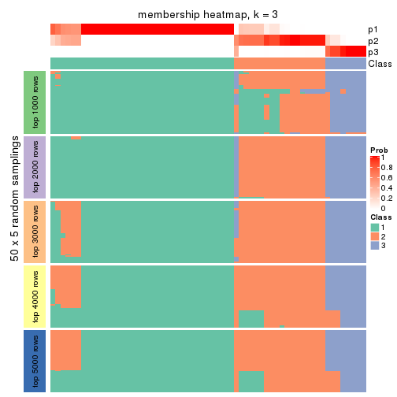
membership_heatmap(res, k = 4)
membership_heatmap(res, k = 5)
membership_heatmap(res, k = 6)
As soon as we have had the classes for columns, we can look for signatures which are significantly different between classes which can be candidate marks for certain classes. Following are the heatmaps for signatures.
Signature heatmaps where rows are scaled:
get_signatures(res, k = 2)
get_signatures(res, k = 3)

get_signatures(res, k = 4)
get_signatures(res, k = 5)
get_signatures(res, k = 6)
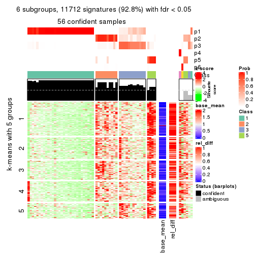
Signature heatmaps where rows are not scaled:
get_signatures(res, k = 2, scale_rows = FALSE)
#> Error in mat[ceiling(1:nr/h_ratio), ceiling(1:nc/w_ratio), drop = FALSE]: subscript out of bounds
get_signatures(res, k = 3, scale_rows = FALSE)
#> Error in mat[ceiling(1:nr/h_ratio), ceiling(1:nc/w_ratio), drop = FALSE]: subscript out of bounds
get_signatures(res, k = 4, scale_rows = FALSE)
#> Error in mat[ceiling(1:nr/h_ratio), ceiling(1:nc/w_ratio), drop = FALSE]: subscript out of bounds

get_signatures(res, k = 5, scale_rows = FALSE)
#> Error in mat[ceiling(1:nr/h_ratio), ceiling(1:nc/w_ratio), drop = FALSE]: subscript out of bounds
get_signatures(res, k = 6, scale_rows = FALSE)
Compare the overlap of signatures from different k:
compare_signatures(res)
get_signature() returns a data frame invisibly. TO get the list of signatures, the function
call should be assigned to a variable explicitly. In following code, if plot argument is set
to FALSE, no heatmap is plotted while only the differential analysis is performed.
# code only for demonstration
tb = get_signature(res, k = ..., plot = FALSE)
An example of the output of tb is:
#> which_row fdr mean_1 mean_2 scaled_mean_1 scaled_mean_2 km
#> 1 38 0.042760348 8.373488 9.131774 -0.5533452 0.5164555 1
#> 2 40 0.018707592 7.106213 8.469186 -0.6173731 0.5762149 1
#> 3 55 0.019134737 10.221463 11.207825 -0.6159697 0.5749050 1
#> 4 59 0.006059896 5.921854 7.869574 -0.6899429 0.6439467 1
#> 5 60 0.018055526 8.928898 10.211722 -0.6204761 0.5791110 1
#> 6 98 0.009384629 15.714769 14.887706 0.6635654 -0.6193277 2
...
The columns in tb are:
which_row: row indices corresponding to the input matrix.fdr: FDR for the differential test. mean_x: The mean value in group x.scaled_mean_x: The mean value in group x after rows are scaled.km: Row groups if k-means clustering is applied to rows.UMAP plot which shows how samples are separated.
dimension_reduction(res, k = 2, method = "UMAP")
dimension_reduction(res, k = 3, method = "UMAP")
dimension_reduction(res, k = 4, method = "UMAP")
dimension_reduction(res, k = 5, method = "UMAP")
dimension_reduction(res, k = 6, method = "UMAP")
Following heatmap shows how subgroups are split when increasing k:
collect_classes(res)
If matrix rows can be associated to genes, consider to use GO_Enrichment(res,
...) to perform function enrichment for the signature genes.
The object with results only for a single top-value method and a single partition method can be extracted as:
res = res_list["CV", "mclust"]
# you can also extract it by
# res = res_list["CV:mclust"]
A summary of res and all the functions that can be applied to it:
res
#> A 'ConsensusPartition' object with k = 2, 3, 4, 5, 6.
#> On a matrix with 12627 rows and 62 columns.
#> Top rows (1000, 2000, 3000, 4000, 5000) are extracted by 'CV' method.
#> Subgroups are detected by 'mclust' method.
#> Performed in total 1250 partitions by row resampling.
#> Best k for subgroups seems to be 2.
#>
#> Following methods can be applied to this 'ConsensusPartition' object:
#> [1] "cola_report" "collect_classes" "collect_plots"
#> [4] "collect_stats" "colnames" "compare_signatures"
#> [7] "consensus_heatmap" "dimension_reduction" "functional_enrichment"
#> [10] "get_anno_col" "get_anno" "get_classes"
#> [13] "get_consensus" "get_matrix" "get_membership"
#> [16] "get_param" "get_signatures" "get_stats"
#> [19] "is_best_k" "is_stable_k" "membership_heatmap"
#> [22] "ncol" "nrow" "plot_ecdf"
#> [25] "rownames" "select_partition_number" "show"
#> [28] "suggest_best_k" "test_to_known_factors"
collect_plots() function collects all the plots made from res for all k (number of partitions)
into one single page to provide an easy and fast comparison between different k.
collect_plots(res)
The plots are:
k and the heatmap of
predicted classes for each k.k.k.k.All the plots in panels can be made by individual functions and they are plotted later in this section.
select_partition_number() produces several plots showing different
statistics for choosing “optimized” k. There are following statistics:
k;k, the area increased is defined as \(A_k - A_{k-1}\).The detailed explanations of these statistics can be found in the cola vignette.
Generally speaking, lower PAC score, higher mean silhouette score or higher
concordance corresponds to better partition. Rand index and Jaccard index
measure how similar the current partition is compared to partition with k-1.
If they are too similar, we won't accept k is better than k-1.
select_partition_number(res)
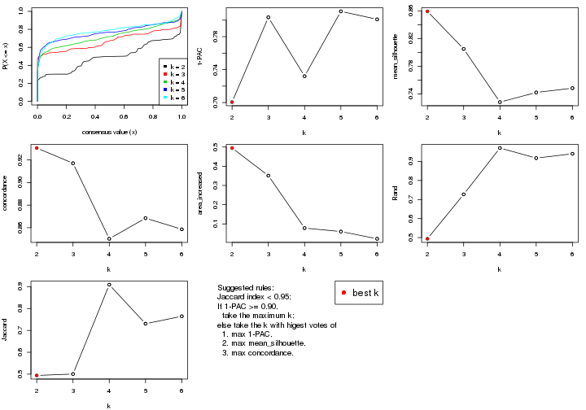
The numeric values for all these statistics can be obtained by get_stats().
get_stats(res)
#> k 1-PAC mean_silhouette concordance area_increased Rand Jaccard
#> 2 2 0.701 0.859 0.931 0.4946 0.494 0.494
#> 3 3 0.803 0.805 0.917 0.3512 0.727 0.500
#> 4 4 0.732 0.728 0.850 0.0783 0.970 0.909
#> 5 5 0.811 0.742 0.868 0.0604 0.918 0.731
#> 6 6 0.801 0.748 0.859 0.0228 0.940 0.765
suggest_best_k() suggests the best \(k\) based on these statistics. The rules are as follows:
NA.suggest_best_k(res)
#> [1] 2
Following shows the table of the partitions (You need to click the show/hide
code output link to see it). The membership matrix (columns with name p*)
is inferred by
clue::cl_consensus()
function with the SE method. Basically the value in the membership matrix
represents the probability to belong to a certain group. The finall class
label for an item is determined with the group with highest probability it
belongs to.
In get_classes() function, the entropy is calculated from the membership
matrix and the silhouette score is calculated from the consensus matrix.
cbind(get_classes(res, k = 2), get_membership(res, k = 2))
#> class entropy silhouette p1 p2
#> SRR372611 2 0.0000 0.960 0.000 1.000
#> SRR372612 1 0.0672 0.883 0.992 0.008
#> SRR372613 2 0.0000 0.960 0.000 1.000
#> SRR372614 2 0.7602 0.672 0.220 0.780
#> SRR372615 2 0.0000 0.960 0.000 1.000
#> SRR372616 2 0.0000 0.960 0.000 1.000
#> SRR372617 1 0.8443 0.710 0.728 0.272
#> SRR372618 1 0.0000 0.886 1.000 0.000
#> SRR372619 2 0.0000 0.960 0.000 1.000
#> SRR372620 1 0.0000 0.886 1.000 0.000
#> SRR372621 2 0.0000 0.960 0.000 1.000
#> SRR372622 1 0.3274 0.859 0.940 0.060
#> SRR372623 2 0.0000 0.960 0.000 1.000
#> SRR372624 1 0.0000 0.886 1.000 0.000
#> SRR372625 1 0.0000 0.886 1.000 0.000
#> SRR372626 2 0.0000 0.960 0.000 1.000
#> SRR372627 1 0.0000 0.886 1.000 0.000
#> SRR372628 2 0.8386 0.603 0.268 0.732
#> SRR372629 1 0.8499 0.705 0.724 0.276
#> SRR372630 1 0.0000 0.886 1.000 0.000
#> SRR372631 2 0.9393 0.333 0.356 0.644
#> SRR372632 1 0.0000 0.886 1.000 0.000
#> SRR372633 2 0.0000 0.960 0.000 1.000
#> SRR372634 1 0.0000 0.886 1.000 0.000
#> SRR372635 1 0.8861 0.673 0.696 0.304
#> SRR372636 1 0.0000 0.886 1.000 0.000
#> SRR372637 1 0.8861 0.673 0.696 0.304
#> SRR372638 1 0.0000 0.886 1.000 0.000
#> SRR372639 2 0.0000 0.960 0.000 1.000
#> SRR372640 1 0.0000 0.886 1.000 0.000
#> SRR372641 1 0.7950 0.741 0.760 0.240
#> SRR372642 1 0.0000 0.886 1.000 0.000
#> SRR372643 2 0.3274 0.903 0.060 0.940
#> SRR372644 1 0.0000 0.886 1.000 0.000
#> SRR372645 1 0.8955 0.661 0.688 0.312
#> SRR372646 1 0.0000 0.886 1.000 0.000
#> SRR372647 2 0.2043 0.933 0.032 0.968
#> SRR372648 1 0.0000 0.886 1.000 0.000
#> SRR372649 1 0.7950 0.741 0.760 0.240
#> SRR372650 2 0.0000 0.960 0.000 1.000
#> SRR372651 2 0.0000 0.960 0.000 1.000
#> SRR372652 2 0.0000 0.960 0.000 1.000
#> SRR372653 2 0.0000 0.960 0.000 1.000
#> SRR372654 1 0.8207 0.726 0.744 0.256
#> SRR372655 2 0.0000 0.960 0.000 1.000
#> SRR372656 1 0.0000 0.886 1.000 0.000
#> SRR372657 1 0.0000 0.886 1.000 0.000
#> SRR372658 2 0.0000 0.960 0.000 1.000
#> SRR372659 2 0.1184 0.947 0.016 0.984
#> SRR372660 2 0.0000 0.960 0.000 1.000
#> SRR372661 2 0.0000 0.960 0.000 1.000
#> SRR372662 1 0.9044 0.643 0.680 0.320
#> SRR372663 2 0.0000 0.960 0.000 1.000
#> SRR372664 1 0.0000 0.886 1.000 0.000
#> SRR372665 2 0.0000 0.960 0.000 1.000
#> SRR372666 2 0.1184 0.948 0.016 0.984
#> SRR372667 2 0.0000 0.960 0.000 1.000
#> SRR372668 1 0.0000 0.886 1.000 0.000
#> SRR372669 1 0.9552 0.538 0.624 0.376
#> SRR372670 1 0.0000 0.886 1.000 0.000
#> SRR372671 2 0.0000 0.960 0.000 1.000
#> SRR372672 1 0.9491 0.553 0.632 0.368
cbind(get_classes(res, k = 3), get_membership(res, k = 3))
#> class entropy silhouette p1 p2 p3
#> SRR372611 3 0.2356 0.808472 0.000 0.072 0.928
#> SRR372612 1 0.0424 0.920239 0.992 0.008 0.000
#> SRR372613 3 0.0000 0.835526 0.000 0.000 1.000
#> SRR372614 2 0.0000 0.948373 0.000 1.000 0.000
#> SRR372615 3 0.4555 0.734393 0.000 0.200 0.800
#> SRR372616 2 0.2165 0.887095 0.000 0.936 0.064
#> SRR372617 2 0.0000 0.948373 0.000 1.000 0.000
#> SRR372618 1 0.0000 0.926294 1.000 0.000 0.000
#> SRR372619 3 0.0000 0.835526 0.000 0.000 1.000
#> SRR372620 1 0.0000 0.926294 1.000 0.000 0.000
#> SRR372621 3 0.0000 0.835526 0.000 0.000 1.000
#> SRR372622 1 0.6291 0.235281 0.532 0.468 0.000
#> SRR372623 3 0.0000 0.835526 0.000 0.000 1.000
#> SRR372624 1 0.0000 0.926294 1.000 0.000 0.000
#> SRR372625 1 0.0000 0.926294 1.000 0.000 0.000
#> SRR372626 3 0.0000 0.835526 0.000 0.000 1.000
#> SRR372627 1 0.0000 0.926294 1.000 0.000 0.000
#> SRR372628 1 0.7578 -0.000364 0.500 0.460 0.040
#> SRR372629 2 0.0000 0.948373 0.000 1.000 0.000
#> SRR372630 1 0.0000 0.926294 1.000 0.000 0.000
#> SRR372631 2 0.0000 0.948373 0.000 1.000 0.000
#> SRR372632 1 0.0000 0.926294 1.000 0.000 0.000
#> SRR372633 2 0.0000 0.948373 0.000 1.000 0.000
#> SRR372634 1 0.0000 0.926294 1.000 0.000 0.000
#> SRR372635 2 0.0000 0.948373 0.000 1.000 0.000
#> SRR372636 1 0.0000 0.926294 1.000 0.000 0.000
#> SRR372637 2 0.0000 0.948373 0.000 1.000 0.000
#> SRR372638 1 0.0000 0.926294 1.000 0.000 0.000
#> SRR372639 3 0.6154 0.461147 0.000 0.408 0.592
#> SRR372640 1 0.0000 0.926294 1.000 0.000 0.000
#> SRR372641 2 0.1163 0.922681 0.028 0.972 0.000
#> SRR372642 1 0.5905 0.508886 0.648 0.352 0.000
#> SRR372643 3 0.6260 0.383751 0.000 0.448 0.552
#> SRR372644 1 0.0000 0.926294 1.000 0.000 0.000
#> SRR372645 2 0.0237 0.945627 0.000 0.996 0.004
#> SRR372646 1 0.0000 0.926294 1.000 0.000 0.000
#> SRR372647 2 0.0000 0.948373 0.000 1.000 0.000
#> SRR372648 1 0.0000 0.926294 1.000 0.000 0.000
#> SRR372649 2 0.1289 0.918253 0.032 0.968 0.000
#> SRR372650 3 0.0000 0.835526 0.000 0.000 1.000
#> SRR372651 3 0.0000 0.835526 0.000 0.000 1.000
#> SRR372652 2 0.6140 0.062310 0.000 0.596 0.404
#> SRR372653 3 0.0000 0.835526 0.000 0.000 1.000
#> SRR372654 2 0.0000 0.948373 0.000 1.000 0.000
#> SRR372655 3 0.0000 0.835526 0.000 0.000 1.000
#> SRR372656 1 0.0000 0.926294 1.000 0.000 0.000
#> SRR372657 1 0.0000 0.926294 1.000 0.000 0.000
#> SRR372658 3 0.0000 0.835526 0.000 0.000 1.000
#> SRR372659 3 0.6260 0.383751 0.000 0.448 0.552
#> SRR372660 3 0.4796 0.717463 0.000 0.220 0.780
#> SRR372661 3 0.6274 0.363857 0.000 0.456 0.544
#> SRR372662 2 0.0000 0.948373 0.000 1.000 0.000
#> SRR372663 3 0.6267 0.374296 0.000 0.452 0.548
#> SRR372664 1 0.4887 0.700975 0.772 0.228 0.000
#> SRR372665 3 0.0000 0.835526 0.000 0.000 1.000
#> SRR372666 2 0.3752 0.767347 0.000 0.856 0.144
#> SRR372667 3 0.0000 0.835526 0.000 0.000 1.000
#> SRR372668 1 0.0000 0.926294 1.000 0.000 0.000
#> SRR372669 2 0.0000 0.948373 0.000 1.000 0.000
#> SRR372670 1 0.0000 0.926294 1.000 0.000 0.000
#> SRR372671 3 0.4605 0.731595 0.000 0.204 0.796
#> SRR372672 2 0.0000 0.948373 0.000 1.000 0.000
cbind(get_classes(res, k = 4), get_membership(res, k = 4))
#> class entropy silhouette p1 p2 p3 p4
#> SRR372611 2 0.4100 0.74000 0.000 0.816 0.036 0.148
#> SRR372612 1 0.0592 0.92685 0.984 0.000 0.016 0.000
#> SRR372613 2 0.1118 0.79744 0.000 0.964 0.000 0.036
#> SRR372614 4 0.5105 0.65982 0.004 0.000 0.432 0.564
#> SRR372615 2 0.5594 0.71889 0.000 0.720 0.100 0.180
#> SRR372616 4 0.5130 0.86517 0.000 0.020 0.312 0.668
#> SRR372617 3 0.0000 0.75631 0.000 0.000 1.000 0.000
#> SRR372618 1 0.0707 0.92299 0.980 0.000 0.020 0.000
#> SRR372619 2 0.2589 0.78193 0.000 0.884 0.000 0.116
#> SRR372620 1 0.0000 0.93426 1.000 0.000 0.000 0.000
#> SRR372621 2 0.3427 0.79285 0.000 0.860 0.028 0.112
#> SRR372622 1 0.5155 0.18252 0.528 0.000 0.468 0.004
#> SRR372623 2 0.2589 0.78193 0.000 0.884 0.000 0.116
#> SRR372624 1 0.0895 0.92342 0.976 0.000 0.020 0.004
#> SRR372625 1 0.0779 0.92625 0.980 0.000 0.016 0.004
#> SRR372626 2 0.2647 0.78098 0.000 0.880 0.000 0.120
#> SRR372627 1 0.0779 0.92625 0.980 0.000 0.016 0.004
#> SRR372628 1 0.6837 0.25171 0.564 0.036 0.356 0.044
#> SRR372629 3 0.0000 0.75631 0.000 0.000 1.000 0.000
#> SRR372630 1 0.0000 0.93426 1.000 0.000 0.000 0.000
#> SRR372631 3 0.0469 0.75697 0.000 0.000 0.988 0.012
#> SRR372632 1 0.0000 0.93426 1.000 0.000 0.000 0.000
#> SRR372633 3 0.3312 0.65957 0.000 0.052 0.876 0.072
#> SRR372634 1 0.0000 0.93426 1.000 0.000 0.000 0.000
#> SRR372635 3 0.0469 0.75697 0.000 0.000 0.988 0.012
#> SRR372636 1 0.0000 0.93426 1.000 0.000 0.000 0.000
#> SRR372637 3 0.0336 0.75731 0.000 0.000 0.992 0.008
#> SRR372638 1 0.0000 0.93426 1.000 0.000 0.000 0.000
#> SRR372639 2 0.6889 0.60003 0.000 0.592 0.176 0.232
#> SRR372640 1 0.0000 0.93426 1.000 0.000 0.000 0.000
#> SRR372641 3 0.0707 0.74514 0.020 0.000 0.980 0.000
#> SRR372642 1 0.3764 0.70641 0.784 0.000 0.216 0.000
#> SRR372643 2 0.7519 0.39433 0.000 0.480 0.312 0.208
#> SRR372644 1 0.0188 0.93257 0.996 0.000 0.000 0.004
#> SRR372645 3 0.3280 0.65016 0.000 0.016 0.860 0.124
#> SRR372646 1 0.0188 0.93257 0.996 0.000 0.000 0.004
#> SRR372647 3 0.3958 0.59543 0.000 0.112 0.836 0.052
#> SRR372648 1 0.0000 0.93426 1.000 0.000 0.000 0.000
#> SRR372649 3 0.1211 0.72510 0.040 0.000 0.960 0.000
#> SRR372650 2 0.1716 0.79586 0.000 0.936 0.000 0.064
#> SRR372651 2 0.2589 0.79440 0.000 0.884 0.000 0.116
#> SRR372652 4 0.5785 0.81519 0.000 0.064 0.272 0.664
#> SRR372653 2 0.1302 0.79768 0.000 0.956 0.000 0.044
#> SRR372654 3 0.4741 0.13577 0.004 0.000 0.668 0.328
#> SRR372655 2 0.2149 0.80005 0.000 0.912 0.000 0.088
#> SRR372656 1 0.0000 0.93426 1.000 0.000 0.000 0.000
#> SRR372657 1 0.0000 0.93426 1.000 0.000 0.000 0.000
#> SRR372658 2 0.2345 0.78754 0.000 0.900 0.000 0.100
#> SRR372659 2 0.7493 0.40666 0.000 0.488 0.304 0.208
#> SRR372660 2 0.4155 0.70619 0.000 0.756 0.004 0.240
#> SRR372661 2 0.7506 0.40012 0.000 0.484 0.308 0.208
#> SRR372662 3 0.4872 0.00466 0.004 0.000 0.640 0.356
#> SRR372663 2 0.6529 0.54770 0.004 0.600 0.088 0.308
#> SRR372664 1 0.1940 0.87108 0.924 0.000 0.076 0.000
#> SRR372665 2 0.2149 0.79531 0.000 0.912 0.000 0.088
#> SRR372666 4 0.5154 0.86253 0.004 0.012 0.324 0.660
#> SRR372667 2 0.2589 0.79440 0.000 0.884 0.000 0.116
#> SRR372668 1 0.0000 0.93426 1.000 0.000 0.000 0.000
#> SRR372669 3 0.3539 0.55850 0.004 0.000 0.820 0.176
#> SRR372670 1 0.0000 0.93426 1.000 0.000 0.000 0.000
#> SRR372671 2 0.4920 0.74158 0.000 0.776 0.088 0.136
#> SRR372672 3 0.5119 -0.38249 0.004 0.000 0.556 0.440
cbind(get_classes(res, k = 5), get_membership(res, k = 5))
#> class entropy silhouette p1 p2 p3 p4 p5
#> SRR372611 2 0.4656 0.579 0.004 0.696 0.004 0.268 0.028
#> SRR372612 1 0.0324 0.954 0.992 0.000 0.004 0.004 0.000
#> SRR372613 2 0.2878 0.740 0.000 0.880 0.004 0.068 0.048
#> SRR372614 4 0.2672 0.711 0.008 0.000 0.116 0.872 0.004
#> SRR372615 5 0.3745 0.686 0.000 0.196 0.024 0.000 0.780
#> SRR372616 4 0.2131 0.718 0.008 0.000 0.056 0.920 0.016
#> SRR372617 3 0.0162 0.796 0.004 0.000 0.996 0.000 0.000
#> SRR372618 1 0.0703 0.942 0.976 0.000 0.024 0.000 0.000
#> SRR372619 2 0.1043 0.779 0.000 0.960 0.000 0.000 0.040
#> SRR372620 1 0.0000 0.959 1.000 0.000 0.000 0.000 0.000
#> SRR372621 2 0.4682 0.440 0.000 0.620 0.024 0.000 0.356
#> SRR372622 1 0.4444 0.407 0.624 0.000 0.364 0.012 0.000
#> SRR372623 2 0.1043 0.780 0.000 0.960 0.000 0.000 0.040
#> SRR372624 1 0.0000 0.959 1.000 0.000 0.000 0.000 0.000
#> SRR372625 1 0.0000 0.959 1.000 0.000 0.000 0.000 0.000
#> SRR372626 2 0.1043 0.779 0.000 0.960 0.000 0.000 0.040
#> SRR372627 1 0.0000 0.959 1.000 0.000 0.000 0.000 0.000
#> SRR372628 1 0.5171 0.679 0.740 0.040 0.156 0.004 0.060
#> SRR372629 3 0.0162 0.796 0.004 0.000 0.996 0.000 0.000
#> SRR372630 1 0.0000 0.959 1.000 0.000 0.000 0.000 0.000
#> SRR372631 3 0.0609 0.789 0.000 0.000 0.980 0.000 0.020
#> SRR372632 1 0.0000 0.959 1.000 0.000 0.000 0.000 0.000
#> SRR372633 3 0.4390 0.277 0.000 0.004 0.568 0.000 0.428
#> SRR372634 1 0.0000 0.959 1.000 0.000 0.000 0.000 0.000
#> SRR372635 3 0.0727 0.795 0.004 0.000 0.980 0.012 0.004
#> SRR372636 1 0.0000 0.959 1.000 0.000 0.000 0.000 0.000
#> SRR372637 3 0.0566 0.795 0.004 0.000 0.984 0.012 0.000
#> SRR372638 1 0.0000 0.959 1.000 0.000 0.000 0.000 0.000
#> SRR372639 5 0.3977 0.677 0.000 0.204 0.032 0.000 0.764
#> SRR372640 1 0.0000 0.959 1.000 0.000 0.000 0.000 0.000
#> SRR372641 3 0.0451 0.795 0.008 0.000 0.988 0.004 0.000
#> SRR372642 1 0.2612 0.833 0.868 0.000 0.124 0.008 0.000
#> SRR372643 5 0.1525 0.797 0.000 0.012 0.036 0.004 0.948
#> SRR372644 1 0.0000 0.959 1.000 0.000 0.000 0.000 0.000
#> SRR372645 3 0.4457 0.536 0.004 0.000 0.656 0.012 0.328
#> SRR372646 1 0.0000 0.959 1.000 0.000 0.000 0.000 0.000
#> SRR372647 3 0.6578 0.338 0.000 0.064 0.604 0.220 0.112
#> SRR372648 1 0.0000 0.959 1.000 0.000 0.000 0.000 0.000
#> SRR372649 3 0.0798 0.788 0.016 0.000 0.976 0.008 0.000
#> SRR372650 2 0.2878 0.740 0.000 0.880 0.004 0.068 0.048
#> SRR372651 2 0.3424 0.666 0.000 0.760 0.000 0.000 0.240
#> SRR372652 4 0.2409 0.716 0.008 0.000 0.056 0.908 0.028
#> SRR372653 2 0.4197 0.683 0.000 0.752 0.004 0.032 0.212
#> SRR372654 4 0.4610 0.471 0.016 0.000 0.388 0.596 0.000
#> SRR372655 2 0.3659 0.701 0.000 0.768 0.012 0.000 0.220
#> SRR372656 1 0.0000 0.959 1.000 0.000 0.000 0.000 0.000
#> SRR372657 1 0.0000 0.959 1.000 0.000 0.000 0.000 0.000
#> SRR372658 2 0.1341 0.780 0.000 0.944 0.000 0.000 0.056
#> SRR372659 5 0.1364 0.797 0.000 0.012 0.036 0.000 0.952
#> SRR372660 2 0.6204 0.303 0.004 0.488 0.000 0.384 0.124
#> SRR372661 5 0.1757 0.792 0.000 0.012 0.048 0.004 0.936
#> SRR372662 4 0.4415 0.477 0.008 0.000 0.388 0.604 0.000
#> SRR372663 4 0.6032 0.116 0.008 0.316 0.000 0.564 0.112
#> SRR372664 1 0.1282 0.919 0.952 0.000 0.044 0.004 0.000
#> SRR372665 2 0.1608 0.778 0.000 0.928 0.000 0.000 0.072
#> SRR372666 4 0.1983 0.719 0.008 0.000 0.060 0.924 0.008
#> SRR372667 2 0.3424 0.669 0.000 0.760 0.000 0.000 0.240
#> SRR372668 1 0.0000 0.959 1.000 0.000 0.000 0.000 0.000
#> SRR372669 3 0.4457 0.145 0.012 0.000 0.620 0.368 0.000
#> SRR372670 1 0.0000 0.959 1.000 0.000 0.000 0.000 0.000
#> SRR372671 5 0.3932 0.479 0.000 0.328 0.000 0.000 0.672
#> SRR372672 4 0.4235 0.554 0.008 0.000 0.336 0.656 0.000
cbind(get_classes(res, k = 6), get_membership(res, k = 6))
#> class entropy silhouette p1 p2 p3 p4 p5 p6
#> SRR372611 6 0.3448 0.543 0.000 0.000 0.000 0.280 0.004 0.716
#> SRR372612 1 0.1845 0.888 0.916 0.000 0.008 0.072 0.004 0.000
#> SRR372613 6 0.0993 0.654 0.000 0.024 0.000 0.012 0.000 0.964
#> SRR372614 4 0.0891 0.772 0.024 0.000 0.008 0.968 0.000 0.000
#> SRR372615 5 0.2799 0.638 0.000 0.076 0.064 0.000 0.860 0.000
#> SRR372616 4 0.1148 0.761 0.016 0.000 0.004 0.960 0.000 0.020
#> SRR372617 3 0.0520 0.853 0.008 0.000 0.984 0.000 0.008 0.000
#> SRR372618 1 0.0363 0.940 0.988 0.000 0.012 0.000 0.000 0.000
#> SRR372619 2 0.0000 0.992 0.000 1.000 0.000 0.000 0.000 0.000
#> SRR372620 1 0.0260 0.941 0.992 0.000 0.008 0.000 0.000 0.000
#> SRR372621 5 0.5028 0.608 0.000 0.248 0.112 0.000 0.636 0.004
#> SRR372622 1 0.3606 0.648 0.724 0.000 0.264 0.004 0.000 0.008
#> SRR372623 2 0.0146 0.991 0.000 0.996 0.000 0.000 0.004 0.000
#> SRR372624 1 0.1606 0.909 0.932 0.000 0.056 0.004 0.000 0.008
#> SRR372625 1 0.1340 0.921 0.948 0.000 0.040 0.004 0.000 0.008
#> SRR372626 2 0.0000 0.992 0.000 1.000 0.000 0.000 0.000 0.000
#> SRR372627 1 0.1194 0.926 0.956 0.000 0.032 0.004 0.000 0.008
#> SRR372628 1 0.6319 0.278 0.540 0.000 0.276 0.036 0.136 0.012
#> SRR372629 3 0.0405 0.852 0.008 0.000 0.988 0.000 0.004 0.000
#> SRR372630 1 0.0146 0.942 0.996 0.000 0.004 0.000 0.000 0.000
#> SRR372631 3 0.0692 0.851 0.004 0.000 0.976 0.000 0.020 0.000
#> SRR372632 1 0.0291 0.942 0.992 0.000 0.004 0.004 0.000 0.000
#> SRR372633 3 0.3847 0.153 0.000 0.000 0.544 0.000 0.456 0.000
#> SRR372634 1 0.0146 0.942 0.996 0.000 0.000 0.004 0.000 0.000
#> SRR372635 3 0.0653 0.850 0.004 0.000 0.980 0.004 0.012 0.000
#> SRR372636 1 0.0000 0.942 1.000 0.000 0.000 0.000 0.000 0.000
#> SRR372637 3 0.0622 0.853 0.008 0.000 0.980 0.000 0.012 0.000
#> SRR372638 1 0.0291 0.942 0.992 0.000 0.004 0.004 0.000 0.000
#> SRR372639 5 0.4982 0.616 0.000 0.176 0.176 0.000 0.648 0.000
#> SRR372640 1 0.0000 0.942 1.000 0.000 0.000 0.000 0.000 0.000
#> SRR372641 3 0.0632 0.844 0.024 0.000 0.976 0.000 0.000 0.000
#> SRR372642 1 0.1814 0.868 0.900 0.000 0.100 0.000 0.000 0.000
#> SRR372643 5 0.2020 0.588 0.000 0.000 0.096 0.000 0.896 0.008
#> SRR372644 1 0.0000 0.942 1.000 0.000 0.000 0.000 0.000 0.000
#> SRR372645 3 0.2527 0.743 0.000 0.000 0.832 0.000 0.168 0.000
#> SRR372646 1 0.0146 0.941 0.996 0.000 0.004 0.000 0.000 0.000
#> SRR372647 3 0.5425 0.530 0.040 0.000 0.660 0.068 0.220 0.012
#> SRR372648 1 0.0000 0.942 1.000 0.000 0.000 0.000 0.000 0.000
#> SRR372649 3 0.1863 0.753 0.104 0.000 0.896 0.000 0.000 0.000
#> SRR372650 6 0.1124 0.652 0.000 0.036 0.000 0.008 0.000 0.956
#> SRR372651 5 0.4086 0.439 0.000 0.464 0.000 0.008 0.528 0.000
#> SRR372652 4 0.0810 0.754 0.004 0.000 0.004 0.976 0.008 0.008
#> SRR372653 6 0.5748 0.175 0.000 0.124 0.000 0.012 0.376 0.488
#> SRR372654 4 0.5098 0.669 0.124 0.000 0.172 0.680 0.000 0.024
#> SRR372655 5 0.4553 0.451 0.000 0.452 0.020 0.008 0.520 0.000
#> SRR372656 1 0.0146 0.942 0.996 0.000 0.000 0.004 0.000 0.000
#> SRR372657 1 0.0000 0.942 1.000 0.000 0.000 0.000 0.000 0.000
#> SRR372658 2 0.0405 0.984 0.000 0.988 0.000 0.004 0.008 0.000
#> SRR372659 5 0.1765 0.591 0.000 0.000 0.096 0.000 0.904 0.000
#> SRR372660 6 0.6227 0.343 0.020 0.000 0.000 0.344 0.184 0.452
#> SRR372661 5 0.2454 0.575 0.000 0.000 0.160 0.000 0.840 0.000
#> SRR372662 4 0.4627 0.693 0.056 0.000 0.216 0.704 0.000 0.024
#> SRR372663 4 0.3107 0.658 0.000 0.000 0.004 0.844 0.080 0.072
#> SRR372664 1 0.1297 0.916 0.948 0.000 0.040 0.012 0.000 0.000
#> SRR372665 5 0.4086 0.439 0.000 0.464 0.000 0.008 0.528 0.000
#> SRR372666 4 0.1074 0.774 0.028 0.000 0.012 0.960 0.000 0.000
#> SRR372667 5 0.4086 0.439 0.000 0.464 0.000 0.008 0.528 0.000
#> SRR372668 1 0.0291 0.942 0.992 0.000 0.004 0.004 0.000 0.000
#> SRR372669 4 0.5498 0.439 0.060 0.000 0.384 0.528 0.004 0.024
#> SRR372670 1 0.0717 0.934 0.976 0.000 0.008 0.016 0.000 0.000
#> SRR372671 5 0.3841 0.655 0.000 0.168 0.068 0.000 0.764 0.000
#> SRR372672 4 0.3686 0.756 0.056 0.000 0.108 0.812 0.000 0.024
Heatmaps for the consensus matrix. It visualizes the probability of two samples to be in a same group.
consensus_heatmap(res, k = 2)
consensus_heatmap(res, k = 3)
consensus_heatmap(res, k = 4)
consensus_heatmap(res, k = 5)
consensus_heatmap(res, k = 6)
Heatmaps for the membership of samples in all partitions to see how consistent they are:
membership_heatmap(res, k = 2)
membership_heatmap(res, k = 3)
membership_heatmap(res, k = 4)
membership_heatmap(res, k = 5)
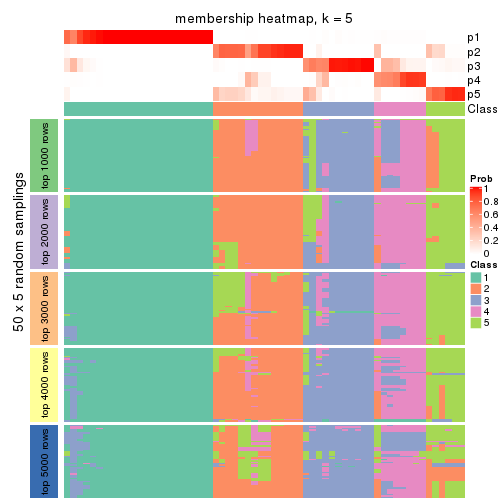
membership_heatmap(res, k = 6)
As soon as we have had the classes for columns, we can look for signatures which are significantly different between classes which can be candidate marks for certain classes. Following are the heatmaps for signatures.
Signature heatmaps where rows are scaled:
get_signatures(res, k = 2)

get_signatures(res, k = 3)
get_signatures(res, k = 4)
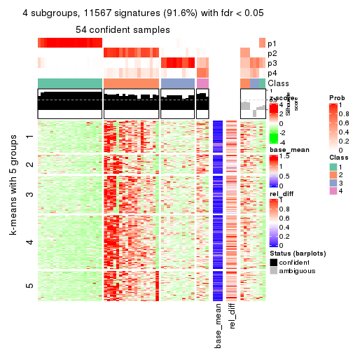
get_signatures(res, k = 5)
get_signatures(res, k = 6)
Signature heatmaps where rows are not scaled:
get_signatures(res, k = 2, scale_rows = FALSE)
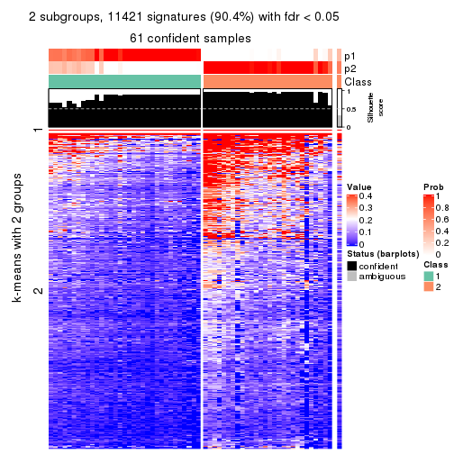
get_signatures(res, k = 3, scale_rows = FALSE)

get_signatures(res, k = 4, scale_rows = FALSE)
#> Error in mat[ceiling(1:nr/h_ratio), ceiling(1:nc/w_ratio), drop = FALSE]: subscript out of bounds
get_signatures(res, k = 5, scale_rows = FALSE)
get_signatures(res, k = 6, scale_rows = FALSE)
Compare the overlap of signatures from different k:
compare_signatures(res)
get_signature() returns a data frame invisibly. TO get the list of signatures, the function
call should be assigned to a variable explicitly. In following code, if plot argument is set
to FALSE, no heatmap is plotted while only the differential analysis is performed.
# code only for demonstration
tb = get_signature(res, k = ..., plot = FALSE)
An example of the output of tb is:
#> which_row fdr mean_1 mean_2 scaled_mean_1 scaled_mean_2 km
#> 1 38 0.042760348 8.373488 9.131774 -0.5533452 0.5164555 1
#> 2 40 0.018707592 7.106213 8.469186 -0.6173731 0.5762149 1
#> 3 55 0.019134737 10.221463 11.207825 -0.6159697 0.5749050 1
#> 4 59 0.006059896 5.921854 7.869574 -0.6899429 0.6439467 1
#> 5 60 0.018055526 8.928898 10.211722 -0.6204761 0.5791110 1
#> 6 98 0.009384629 15.714769 14.887706 0.6635654 -0.6193277 2
...
The columns in tb are:
which_row: row indices corresponding to the input matrix.fdr: FDR for the differential test. mean_x: The mean value in group x.scaled_mean_x: The mean value in group x after rows are scaled.km: Row groups if k-means clustering is applied to rows.UMAP plot which shows how samples are separated.
dimension_reduction(res, k = 2, method = "UMAP")
dimension_reduction(res, k = 3, method = "UMAP")
dimension_reduction(res, k = 4, method = "UMAP")
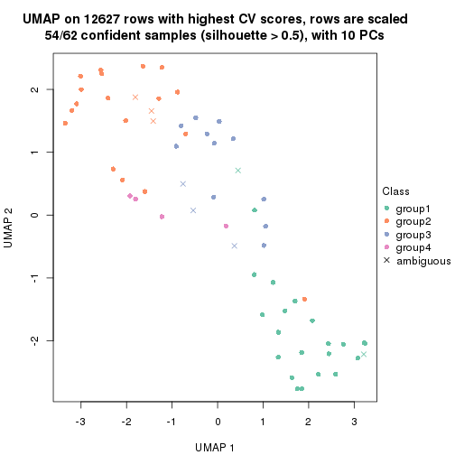
dimension_reduction(res, k = 5, method = "UMAP")
dimension_reduction(res, k = 6, method = "UMAP")
Following heatmap shows how subgroups are split when increasing k:
collect_classes(res)
If matrix rows can be associated to genes, consider to use GO_Enrichment(res,
...) to perform function enrichment for the signature genes.
The object with results only for a single top-value method and a single partition method can be extracted as:
res = res_list["CV", "NMF"]
# you can also extract it by
# res = res_list["CV:NMF"]
A summary of res and all the functions that can be applied to it:
res
#> A 'ConsensusPartition' object with k = 2, 3, 4, 5, 6.
#> On a matrix with 12627 rows and 62 columns.
#> Top rows (1000, 2000, 3000, 4000, 5000) are extracted by 'CV' method.
#> Subgroups are detected by 'NMF' method.
#> Performed in total 1250 partitions by row resampling.
#> Best k for subgroups seems to be 2.
#>
#> Following methods can be applied to this 'ConsensusPartition' object:
#> [1] "cola_report" "collect_classes" "collect_plots"
#> [4] "collect_stats" "colnames" "compare_signatures"
#> [7] "consensus_heatmap" "dimension_reduction" "functional_enrichment"
#> [10] "get_anno_col" "get_anno" "get_classes"
#> [13] "get_consensus" "get_matrix" "get_membership"
#> [16] "get_param" "get_signatures" "get_stats"
#> [19] "is_best_k" "is_stable_k" "membership_heatmap"
#> [22] "ncol" "nrow" "plot_ecdf"
#> [25] "rownames" "select_partition_number" "show"
#> [28] "suggest_best_k" "test_to_known_factors"
collect_plots() function collects all the plots made from res for all k (number of partitions)
into one single page to provide an easy and fast comparison between different k.
collect_plots(res)
The plots are:
k and the heatmap of
predicted classes for each k.k.k.k.All the plots in panels can be made by individual functions and they are plotted later in this section.
select_partition_number() produces several plots showing different
statistics for choosing “optimized” k. There are following statistics:
k;k, the area increased is defined as \(A_k - A_{k-1}\).The detailed explanations of these statistics can be found in the cola vignette.
Generally speaking, lower PAC score, higher mean silhouette score or higher
concordance corresponds to better partition. Rand index and Jaccard index
measure how similar the current partition is compared to partition with k-1.
If they are too similar, we won't accept k is better than k-1.
select_partition_number(res)
The numeric values for all these statistics can be obtained by get_stats().
get_stats(res)
#> k 1-PAC mean_silhouette concordance area_increased Rand Jaccard
#> 2 2 0.687 0.855 0.931 0.4946 0.494 0.494
#> 3 3 0.681 0.851 0.912 0.1507 0.824 0.684
#> 4 4 0.549 0.638 0.826 0.1081 0.893 0.765
#> 5 5 0.730 0.723 0.864 0.0733 0.892 0.725
#> 6 6 0.767 0.698 0.866 0.0516 0.949 0.846
suggest_best_k() suggests the best \(k\) based on these statistics. The rules are as follows:
NA.suggest_best_k(res)
#> [1] 2
Following shows the table of the partitions (You need to click the show/hide
code output link to see it). The membership matrix (columns with name p*)
is inferred by
clue::cl_consensus()
function with the SE method. Basically the value in the membership matrix
represents the probability to belong to a certain group. The finall class
label for an item is determined with the group with highest probability it
belongs to.
In get_classes() function, the entropy is calculated from the membership
matrix and the silhouette score is calculated from the consensus matrix.
cbind(get_classes(res, k = 2), get_membership(res, k = 2))
#> class entropy silhouette p1 p2
#> SRR372611 1 0.0000 0.880 1.000 0.000
#> SRR372612 1 0.0000 0.880 1.000 0.000
#> SRR372613 1 0.0000 0.880 1.000 0.000
#> SRR372614 1 0.0000 0.880 1.000 0.000
#> SRR372615 2 0.0000 0.971 0.000 1.000
#> SRR372616 1 0.0000 0.880 1.000 0.000
#> SRR372617 2 0.0000 0.971 0.000 1.000
#> SRR372618 1 0.9954 0.331 0.540 0.460
#> SRR372619 2 0.0000 0.971 0.000 1.000
#> SRR372620 2 0.5294 0.832 0.120 0.880
#> SRR372621 2 0.0000 0.971 0.000 1.000
#> SRR372622 1 0.6247 0.804 0.844 0.156
#> SRR372623 2 0.0000 0.971 0.000 1.000
#> SRR372624 1 0.2043 0.872 0.968 0.032
#> SRR372625 1 0.0000 0.880 1.000 0.000
#> SRR372626 2 0.0000 0.971 0.000 1.000
#> SRR372627 1 0.0000 0.880 1.000 0.000
#> SRR372628 2 0.8763 0.496 0.296 0.704
#> SRR372629 2 0.0000 0.971 0.000 1.000
#> SRR372630 1 0.9983 0.279 0.524 0.476
#> SRR372631 2 0.0000 0.971 0.000 1.000
#> SRR372632 1 0.9635 0.504 0.612 0.388
#> SRR372633 2 0.0000 0.971 0.000 1.000
#> SRR372634 1 0.8386 0.698 0.732 0.268
#> SRR372635 2 0.0000 0.971 0.000 1.000
#> SRR372636 1 0.6973 0.780 0.812 0.188
#> SRR372637 2 0.0000 0.971 0.000 1.000
#> SRR372638 1 0.2423 0.869 0.960 0.040
#> SRR372639 2 0.0000 0.971 0.000 1.000
#> SRR372640 2 0.7745 0.649 0.228 0.772
#> SRR372641 2 0.0000 0.971 0.000 1.000
#> SRR372642 1 0.9896 0.386 0.560 0.440
#> SRR372643 2 0.0000 0.971 0.000 1.000
#> SRR372644 1 0.0000 0.880 1.000 0.000
#> SRR372645 2 0.0000 0.971 0.000 1.000
#> SRR372646 1 0.0000 0.880 1.000 0.000
#> SRR372647 2 0.0000 0.971 0.000 1.000
#> SRR372648 1 0.0000 0.880 1.000 0.000
#> SRR372649 2 0.0376 0.967 0.004 0.996
#> SRR372650 1 0.7602 0.752 0.780 0.220
#> SRR372651 2 0.0000 0.971 0.000 1.000
#> SRR372652 1 0.0000 0.880 1.000 0.000
#> SRR372653 2 0.2043 0.940 0.032 0.968
#> SRR372654 1 0.0000 0.880 1.000 0.000
#> SRR372655 2 0.0000 0.971 0.000 1.000
#> SRR372656 1 0.1184 0.877 0.984 0.016
#> SRR372657 1 0.0000 0.880 1.000 0.000
#> SRR372658 2 0.0000 0.971 0.000 1.000
#> SRR372659 2 0.0000 0.971 0.000 1.000
#> SRR372660 1 0.0376 0.879 0.996 0.004
#> SRR372661 2 0.0000 0.971 0.000 1.000
#> SRR372662 1 0.8861 0.648 0.696 0.304
#> SRR372663 1 0.7299 0.766 0.796 0.204
#> SRR372664 1 0.0000 0.880 1.000 0.000
#> SRR372665 2 0.0000 0.971 0.000 1.000
#> SRR372666 1 0.0938 0.878 0.988 0.012
#> SRR372667 2 0.0000 0.971 0.000 1.000
#> SRR372668 1 0.0000 0.880 1.000 0.000
#> SRR372669 1 0.9248 0.593 0.660 0.340
#> SRR372670 1 0.0000 0.880 1.000 0.000
#> SRR372671 2 0.0000 0.971 0.000 1.000
#> SRR372672 1 0.3733 0.854 0.928 0.072
cbind(get_classes(res, k = 3), get_membership(res, k = 3))
#> class entropy silhouette p1 p2 p3
#> SRR372611 3 0.4931 0.811 0.232 0.000 0.768
#> SRR372612 3 0.6126 0.605 0.400 0.000 0.600
#> SRR372613 3 0.4399 0.815 0.188 0.000 0.812
#> SRR372614 1 0.4974 0.598 0.764 0.000 0.236
#> SRR372615 2 0.1163 0.915 0.000 0.972 0.028
#> SRR372616 1 0.1643 0.863 0.956 0.000 0.044
#> SRR372617 2 0.1860 0.887 0.052 0.948 0.000
#> SRR372618 1 0.3846 0.857 0.876 0.108 0.016
#> SRR372619 2 0.3412 0.885 0.000 0.876 0.124
#> SRR372620 1 0.4110 0.818 0.844 0.152 0.004
#> SRR372621 2 0.2959 0.897 0.000 0.900 0.100
#> SRR372622 1 0.1919 0.888 0.956 0.020 0.024
#> SRR372623 2 0.3340 0.887 0.000 0.880 0.120
#> SRR372624 1 0.1529 0.878 0.960 0.000 0.040
#> SRR372625 1 0.2537 0.849 0.920 0.000 0.080
#> SRR372626 2 0.3551 0.880 0.000 0.868 0.132
#> SRR372627 1 0.1964 0.868 0.944 0.000 0.056
#> SRR372628 1 0.6093 0.709 0.776 0.068 0.156
#> SRR372629 2 0.0747 0.911 0.016 0.984 0.000
#> SRR372630 1 0.3349 0.861 0.888 0.108 0.004
#> SRR372631 2 0.1529 0.898 0.040 0.960 0.000
#> SRR372632 1 0.3030 0.871 0.904 0.092 0.004
#> SRR372633 2 0.1860 0.912 0.000 0.948 0.052
#> SRR372634 1 0.2945 0.873 0.908 0.088 0.004
#> SRR372635 2 0.1163 0.906 0.028 0.972 0.000
#> SRR372636 1 0.2165 0.882 0.936 0.064 0.000
#> SRR372637 2 0.1411 0.901 0.036 0.964 0.000
#> SRR372638 1 0.2356 0.879 0.928 0.072 0.000
#> SRR372639 2 0.0892 0.915 0.000 0.980 0.020
#> SRR372640 1 0.4062 0.803 0.836 0.164 0.000
#> SRR372641 2 0.2448 0.859 0.076 0.924 0.000
#> SRR372642 1 0.3192 0.859 0.888 0.112 0.000
#> SRR372643 2 0.1163 0.906 0.028 0.972 0.000
#> SRR372644 1 0.0592 0.883 0.988 0.000 0.012
#> SRR372645 2 0.0747 0.911 0.016 0.984 0.000
#> SRR372646 1 0.0424 0.885 0.992 0.000 0.008
#> SRR372647 2 0.3116 0.894 0.000 0.892 0.108
#> SRR372648 1 0.0424 0.885 0.992 0.000 0.008
#> SRR372649 1 0.6244 0.279 0.560 0.440 0.000
#> SRR372650 3 0.4556 0.716 0.060 0.080 0.860
#> SRR372651 2 0.2625 0.904 0.000 0.916 0.084
#> SRR372652 1 0.0424 0.885 0.992 0.000 0.008
#> SRR372653 2 0.5404 0.535 0.256 0.740 0.004
#> SRR372654 1 0.0237 0.886 0.996 0.000 0.004
#> SRR372655 2 0.2448 0.906 0.000 0.924 0.076
#> SRR372656 1 0.0475 0.888 0.992 0.004 0.004
#> SRR372657 1 0.0592 0.883 0.988 0.000 0.012
#> SRR372658 2 0.3412 0.886 0.000 0.876 0.124
#> SRR372659 2 0.1289 0.903 0.032 0.968 0.000
#> SRR372660 1 0.0592 0.885 0.988 0.000 0.012
#> SRR372661 2 0.0592 0.911 0.012 0.988 0.000
#> SRR372662 1 0.3293 0.872 0.900 0.088 0.012
#> SRR372663 1 0.4925 0.831 0.844 0.080 0.076
#> SRR372664 1 0.0747 0.883 0.984 0.000 0.016
#> SRR372665 2 0.2796 0.902 0.000 0.908 0.092
#> SRR372666 1 0.1585 0.889 0.964 0.028 0.008
#> SRR372667 2 0.2625 0.905 0.000 0.916 0.084
#> SRR372668 1 0.0424 0.887 0.992 0.000 0.008
#> SRR372669 1 0.4094 0.859 0.872 0.100 0.028
#> SRR372670 1 0.0592 0.883 0.988 0.000 0.012
#> SRR372671 2 0.0475 0.913 0.004 0.992 0.004
#> SRR372672 1 0.2998 0.878 0.916 0.068 0.016
cbind(get_classes(res, k = 4), get_membership(res, k = 4))
#> class entropy silhouette p1 p2 p3 p4
#> SRR372611 4 0.6605 0.6524 0.136 0.000 0.248 0.616
#> SRR372612 4 0.6843 0.5185 0.356 0.000 0.112 0.532
#> SRR372613 4 0.1888 0.6404 0.044 0.000 0.016 0.940
#> SRR372614 1 0.4994 0.0966 0.520 0.000 0.000 0.480
#> SRR372615 2 0.2197 0.6260 0.000 0.916 0.080 0.004
#> SRR372616 1 0.2198 0.8446 0.920 0.000 0.008 0.072
#> SRR372617 2 0.1890 0.7132 0.056 0.936 0.008 0.000
#> SRR372618 1 0.3160 0.8735 0.872 0.108 0.000 0.020
#> SRR372619 3 0.4382 0.6360 0.000 0.296 0.704 0.000
#> SRR372620 1 0.3266 0.8353 0.832 0.168 0.000 0.000
#> SRR372621 3 0.4996 0.4252 0.000 0.484 0.516 0.000
#> SRR372622 1 0.2761 0.8752 0.908 0.064 0.016 0.012
#> SRR372623 3 0.4483 0.6354 0.000 0.284 0.712 0.004
#> SRR372624 1 0.2222 0.8343 0.928 0.008 0.056 0.008
#> SRR372625 1 0.4759 0.5958 0.764 0.004 0.200 0.032
#> SRR372626 3 0.4401 0.6266 0.000 0.272 0.724 0.004
#> SRR372627 1 0.2246 0.8218 0.928 0.004 0.052 0.016
#> SRR372628 3 0.6422 -0.2915 0.416 0.024 0.532 0.028
#> SRR372629 2 0.0895 0.7181 0.020 0.976 0.004 0.000
#> SRR372630 1 0.2944 0.8674 0.868 0.128 0.000 0.004
#> SRR372631 2 0.1938 0.7103 0.052 0.936 0.012 0.000
#> SRR372632 1 0.2868 0.8641 0.864 0.136 0.000 0.000
#> SRR372633 2 0.2530 0.6108 0.000 0.888 0.112 0.000
#> SRR372634 1 0.3032 0.8696 0.868 0.124 0.000 0.008
#> SRR372635 2 0.1118 0.7191 0.036 0.964 0.000 0.000
#> SRR372636 1 0.2843 0.8788 0.892 0.088 0.000 0.020
#> SRR372637 2 0.1661 0.7149 0.052 0.944 0.004 0.000
#> SRR372638 1 0.2867 0.8768 0.884 0.104 0.000 0.012
#> SRR372639 2 0.4522 0.1496 0.000 0.680 0.320 0.000
#> SRR372640 1 0.3142 0.8647 0.860 0.132 0.000 0.008
#> SRR372641 2 0.1792 0.6983 0.068 0.932 0.000 0.000
#> SRR372642 1 0.2921 0.8605 0.860 0.140 0.000 0.000
#> SRR372643 2 0.1042 0.7178 0.020 0.972 0.008 0.000
#> SRR372644 1 0.0657 0.8541 0.984 0.000 0.012 0.004
#> SRR372645 2 0.0469 0.7143 0.012 0.988 0.000 0.000
#> SRR372646 1 0.0895 0.8721 0.976 0.020 0.000 0.004
#> SRR372647 3 0.4948 0.5266 0.000 0.440 0.560 0.000
#> SRR372648 1 0.0524 0.8669 0.988 0.008 0.000 0.004
#> SRR372649 2 0.4134 0.4099 0.260 0.740 0.000 0.000
#> SRR372650 4 0.6868 0.3932 0.016 0.076 0.344 0.564
#> SRR372651 2 0.4985 -0.3802 0.000 0.532 0.468 0.000
#> SRR372652 1 0.0188 0.8618 0.996 0.000 0.004 0.000
#> SRR372653 2 0.4020 0.6040 0.128 0.836 0.016 0.020
#> SRR372654 1 0.1389 0.8787 0.952 0.048 0.000 0.000
#> SRR372655 2 0.4925 -0.2509 0.000 0.572 0.428 0.000
#> SRR372656 1 0.2813 0.8794 0.896 0.080 0.000 0.024
#> SRR372657 1 0.0336 0.8594 0.992 0.000 0.008 0.000
#> SRR372658 3 0.4967 0.5061 0.000 0.452 0.548 0.000
#> SRR372659 2 0.1722 0.7140 0.048 0.944 0.008 0.000
#> SRR372660 1 0.0524 0.8663 0.988 0.008 0.000 0.004
#> SRR372661 2 0.0524 0.7064 0.004 0.988 0.008 0.000
#> SRR372662 1 0.2976 0.8703 0.872 0.120 0.000 0.008
#> SRR372663 1 0.3621 0.8674 0.860 0.072 0.000 0.068
#> SRR372664 1 0.0336 0.8594 0.992 0.000 0.008 0.000
#> SRR372665 2 0.4948 -0.2866 0.000 0.560 0.440 0.000
#> SRR372666 1 0.2676 0.8792 0.896 0.092 0.000 0.012
#> SRR372667 2 0.4933 -0.2603 0.000 0.568 0.432 0.000
#> SRR372668 1 0.0921 0.8751 0.972 0.028 0.000 0.000
#> SRR372669 1 0.5653 0.3379 0.532 0.448 0.004 0.016
#> SRR372670 1 0.0927 0.8692 0.976 0.008 0.000 0.016
#> SRR372671 2 0.1389 0.6841 0.000 0.952 0.048 0.000
#> SRR372672 1 0.3099 0.8752 0.876 0.104 0.000 0.020
cbind(get_classes(res, k = 5), get_membership(res, k = 5))
#> class entropy silhouette p1 p2 p3 p4 p5
#> SRR372611 5 0.4494 -0.1700 0.012 0.000 0.000 0.380 0.608
#> SRR372612 4 0.6806 0.1758 0.348 0.000 0.000 0.356 0.296
#> SRR372613 4 0.0609 -0.2333 0.020 0.000 0.000 0.980 0.000
#> SRR372614 4 0.4708 0.2742 0.436 0.000 0.000 0.548 0.016
#> SRR372615 3 0.0609 0.8813 0.000 0.020 0.980 0.000 0.000
#> SRR372616 1 0.1082 0.9163 0.964 0.000 0.000 0.028 0.008
#> SRR372617 3 0.2140 0.8672 0.024 0.040 0.924 0.000 0.012
#> SRR372618 1 0.0648 0.9335 0.984 0.004 0.004 0.004 0.004
#> SRR372619 2 0.1211 0.6045 0.000 0.960 0.016 0.000 0.024
#> SRR372620 1 0.1195 0.9121 0.960 0.000 0.028 0.000 0.012
#> SRR372621 2 0.2648 0.7142 0.000 0.848 0.152 0.000 0.000
#> SRR372622 1 0.2646 0.7990 0.868 0.004 0.004 0.000 0.124
#> SRR372623 2 0.3562 0.4343 0.000 0.788 0.016 0.000 0.196
#> SRR372624 1 0.3525 0.7241 0.816 0.024 0.000 0.004 0.156
#> SRR372625 1 0.5958 -0.0777 0.524 0.100 0.000 0.004 0.372
#> SRR372626 2 0.3957 0.2835 0.000 0.712 0.008 0.000 0.280
#> SRR372627 1 0.3246 0.7119 0.808 0.008 0.000 0.000 0.184
#> SRR372628 5 0.6965 -0.0454 0.212 0.352 0.008 0.004 0.424
#> SRR372629 3 0.0566 0.8927 0.012 0.004 0.984 0.000 0.000
#> SRR372630 1 0.0324 0.9356 0.992 0.000 0.004 0.000 0.004
#> SRR372631 3 0.0510 0.8923 0.016 0.000 0.984 0.000 0.000
#> SRR372632 1 0.0693 0.9302 0.980 0.000 0.012 0.000 0.008
#> SRR372633 3 0.4378 0.4641 0.008 0.308 0.676 0.000 0.008
#> SRR372634 1 0.0290 0.9351 0.992 0.000 0.008 0.000 0.000
#> SRR372635 3 0.0798 0.8928 0.016 0.008 0.976 0.000 0.000
#> SRR372636 1 0.0162 0.9357 0.996 0.000 0.004 0.000 0.000
#> SRR372637 3 0.1216 0.8877 0.020 0.020 0.960 0.000 0.000
#> SRR372638 1 0.0162 0.9357 0.996 0.000 0.004 0.000 0.000
#> SRR372639 2 0.4675 0.5356 0.004 0.620 0.360 0.000 0.016
#> SRR372640 1 0.0486 0.9348 0.988 0.004 0.004 0.000 0.004
#> SRR372641 3 0.0898 0.8919 0.020 0.008 0.972 0.000 0.000
#> SRR372642 1 0.0404 0.9332 0.988 0.000 0.012 0.000 0.000
#> SRR372643 3 0.0290 0.8893 0.008 0.000 0.992 0.000 0.000
#> SRR372644 1 0.0671 0.9278 0.980 0.000 0.000 0.004 0.016
#> SRR372645 3 0.0566 0.8927 0.012 0.004 0.984 0.000 0.000
#> SRR372646 1 0.0324 0.9350 0.992 0.000 0.000 0.004 0.004
#> SRR372647 2 0.2533 0.6959 0.008 0.888 0.096 0.000 0.008
#> SRR372648 1 0.0324 0.9350 0.992 0.000 0.000 0.004 0.004
#> SRR372649 3 0.1043 0.8725 0.040 0.000 0.960 0.000 0.000
#> SRR372650 2 0.7255 -0.1885 0.000 0.396 0.044 0.396 0.164
#> SRR372651 2 0.3648 0.7130 0.004 0.792 0.188 0.000 0.016
#> SRR372652 1 0.0162 0.9354 0.996 0.000 0.000 0.000 0.004
#> SRR372653 3 0.5418 0.6292 0.152 0.108 0.716 0.012 0.012
#> SRR372654 1 0.0162 0.9358 0.996 0.000 0.000 0.000 0.004
#> SRR372655 2 0.3969 0.6584 0.000 0.692 0.304 0.000 0.004
#> SRR372656 1 0.0486 0.9351 0.988 0.000 0.004 0.004 0.004
#> SRR372657 1 0.0404 0.9319 0.988 0.000 0.000 0.000 0.012
#> SRR372658 2 0.1965 0.6954 0.000 0.904 0.096 0.000 0.000
#> SRR372659 3 0.0510 0.8923 0.016 0.000 0.984 0.000 0.000
#> SRR372660 1 0.0451 0.9345 0.988 0.000 0.000 0.004 0.008
#> SRR372661 3 0.0566 0.8927 0.012 0.004 0.984 0.000 0.000
#> SRR372662 1 0.0613 0.9341 0.984 0.000 0.004 0.008 0.004
#> SRR372663 1 0.2173 0.8630 0.920 0.012 0.000 0.052 0.016
#> SRR372664 1 0.0566 0.9306 0.984 0.000 0.000 0.004 0.012
#> SRR372665 2 0.3974 0.7020 0.004 0.752 0.228 0.000 0.016
#> SRR372666 1 0.0324 0.9356 0.992 0.000 0.004 0.000 0.004
#> SRR372667 2 0.4337 0.6695 0.004 0.696 0.284 0.000 0.016
#> SRR372668 1 0.0324 0.9350 0.992 0.000 0.000 0.004 0.004
#> SRR372669 3 0.3430 0.5788 0.220 0.000 0.776 0.000 0.004
#> SRR372670 1 0.0290 0.9356 0.992 0.000 0.000 0.000 0.008
#> SRR372671 3 0.3947 0.6186 0.008 0.236 0.748 0.000 0.008
#> SRR372672 1 0.0324 0.9356 0.992 0.000 0.004 0.000 0.004
cbind(get_classes(res, k = 6), get_membership(res, k = 6))
#> class entropy silhouette p1 p2 p3 p4 p5 p6
#> SRR372611 6 0.0922 -0.26042 0.004 0.024 0.000 0.004 0.000 0.968
#> SRR372612 6 0.5262 -0.19234 0.416 0.024 0.000 0.048 0.000 0.512
#> SRR372613 4 0.3342 0.09335 0.012 0.000 0.000 0.760 0.000 0.228
#> SRR372614 4 0.6223 -0.00225 0.316 0.052 0.000 0.512 0.000 0.120
#> SRR372615 3 0.0862 0.92236 0.000 0.000 0.972 0.004 0.016 0.008
#> SRR372616 1 0.1341 0.90084 0.948 0.000 0.000 0.028 0.000 0.024
#> SRR372617 3 0.3424 0.77432 0.024 0.004 0.824 0.012 0.132 0.004
#> SRR372618 1 0.1168 0.90412 0.956 0.016 0.000 0.028 0.000 0.000
#> SRR372619 5 0.2604 0.60072 0.000 0.096 0.000 0.028 0.872 0.004
#> SRR372620 1 0.1503 0.89508 0.944 0.032 0.016 0.008 0.000 0.000
#> SRR372621 5 0.1643 0.70967 0.000 0.008 0.068 0.000 0.924 0.000
#> SRR372622 1 0.4195 0.44131 0.648 0.328 0.016 0.008 0.000 0.000
#> SRR372623 5 0.5096 -0.05149 0.000 0.388 0.000 0.072 0.536 0.004
#> SRR372624 1 0.3986 0.35583 0.608 0.384 0.000 0.004 0.000 0.004
#> SRR372625 2 0.3951 0.32244 0.232 0.736 0.008 0.008 0.000 0.016
#> SRR372626 2 0.4929 0.29639 0.000 0.600 0.000 0.072 0.324 0.004
#> SRR372627 1 0.4118 0.32295 0.592 0.396 0.000 0.008 0.000 0.004
#> SRR372628 2 0.4232 0.50533 0.068 0.800 0.012 0.004 0.080 0.036
#> SRR372629 3 0.0458 0.92525 0.000 0.000 0.984 0.000 0.016 0.000
#> SRR372630 1 0.1015 0.90775 0.968 0.012 0.004 0.012 0.004 0.000
#> SRR372631 3 0.0146 0.92239 0.000 0.004 0.996 0.000 0.000 0.000
#> SRR372632 1 0.1340 0.89728 0.948 0.040 0.008 0.004 0.000 0.000
#> SRR372633 5 0.4144 0.38490 0.004 0.000 0.408 0.008 0.580 0.000
#> SRR372634 1 0.0665 0.90975 0.980 0.008 0.004 0.008 0.000 0.000
#> SRR372635 3 0.0363 0.92595 0.000 0.000 0.988 0.000 0.012 0.000
#> SRR372636 1 0.0520 0.91035 0.984 0.008 0.000 0.008 0.000 0.000
#> SRR372637 3 0.1628 0.90491 0.012 0.000 0.940 0.008 0.036 0.004
#> SRR372638 1 0.0653 0.91178 0.980 0.012 0.000 0.004 0.000 0.004
#> SRR372639 5 0.3417 0.68660 0.004 0.000 0.188 0.016 0.788 0.004
#> SRR372640 1 0.0964 0.90741 0.968 0.012 0.004 0.016 0.000 0.000
#> SRR372641 3 0.0982 0.92096 0.004 0.000 0.968 0.004 0.020 0.004
#> SRR372642 1 0.1078 0.90583 0.964 0.016 0.008 0.012 0.000 0.000
#> SRR372643 3 0.0291 0.92041 0.000 0.004 0.992 0.000 0.004 0.000
#> SRR372644 1 0.1448 0.90015 0.948 0.012 0.000 0.016 0.000 0.024
#> SRR372645 3 0.0508 0.92539 0.000 0.000 0.984 0.000 0.012 0.004
#> SRR372646 1 0.1448 0.90015 0.948 0.012 0.000 0.016 0.000 0.024
#> SRR372647 5 0.2565 0.68834 0.004 0.012 0.052 0.032 0.896 0.004
#> SRR372648 1 0.1448 0.90015 0.948 0.012 0.000 0.016 0.000 0.024
#> SRR372649 3 0.0260 0.91946 0.008 0.000 0.992 0.000 0.000 0.000
#> SRR372650 5 0.7834 -0.18414 0.016 0.276 0.000 0.248 0.324 0.136
#> SRR372651 5 0.2149 0.71547 0.004 0.000 0.080 0.016 0.900 0.000
#> SRR372652 1 0.0862 0.90888 0.972 0.008 0.000 0.016 0.000 0.004
#> SRR372653 3 0.5361 0.61954 0.112 0.000 0.696 0.076 0.112 0.004
#> SRR372654 1 0.0767 0.90948 0.976 0.004 0.000 0.012 0.000 0.008
#> SRR372655 5 0.3480 0.68141 0.000 0.004 0.196 0.016 0.780 0.004
#> SRR372656 1 0.0363 0.91100 0.988 0.000 0.000 0.012 0.000 0.000
#> SRR372657 1 0.1078 0.90639 0.964 0.008 0.000 0.016 0.000 0.012
#> SRR372658 5 0.1644 0.69890 0.000 0.012 0.052 0.004 0.932 0.000
#> SRR372659 3 0.0146 0.92479 0.000 0.000 0.996 0.000 0.004 0.000
#> SRR372660 1 0.1837 0.89505 0.932 0.032 0.004 0.020 0.000 0.012
#> SRR372661 3 0.0363 0.92595 0.000 0.000 0.988 0.000 0.012 0.000
#> SRR372662 1 0.0622 0.90953 0.980 0.008 0.000 0.012 0.000 0.000
#> SRR372663 1 0.1577 0.89062 0.940 0.008 0.000 0.036 0.016 0.000
#> SRR372664 1 0.1364 0.90455 0.952 0.020 0.000 0.016 0.000 0.012
#> SRR372665 5 0.2894 0.71681 0.004 0.012 0.104 0.020 0.860 0.000
#> SRR372666 1 0.0520 0.91035 0.984 0.008 0.000 0.008 0.000 0.000
#> SRR372667 5 0.3060 0.71223 0.000 0.012 0.132 0.020 0.836 0.000
#> SRR372668 1 0.1086 0.90805 0.964 0.012 0.000 0.012 0.000 0.012
#> SRR372669 3 0.2987 0.68932 0.148 0.004 0.832 0.008 0.000 0.008
#> SRR372670 1 0.1148 0.90513 0.960 0.004 0.000 0.016 0.000 0.020
#> SRR372671 5 0.4097 0.16659 0.000 0.000 0.488 0.008 0.504 0.000
#> SRR372672 1 0.0458 0.91054 0.984 0.000 0.000 0.016 0.000 0.000
Heatmaps for the consensus matrix. It visualizes the probability of two samples to be in a same group.
consensus_heatmap(res, k = 2)
consensus_heatmap(res, k = 3)
consensus_heatmap(res, k = 4)
consensus_heatmap(res, k = 5)
consensus_heatmap(res, k = 6)
Heatmaps for the membership of samples in all partitions to see how consistent they are:
membership_heatmap(res, k = 2)
membership_heatmap(res, k = 3)
membership_heatmap(res, k = 4)
membership_heatmap(res, k = 5)
membership_heatmap(res, k = 6)
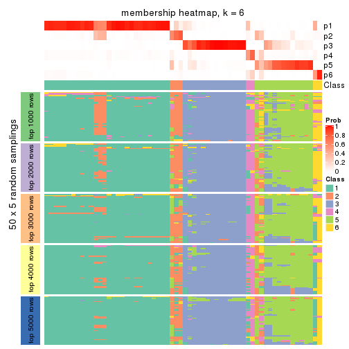
As soon as we have had the classes for columns, we can look for signatures which are significantly different between classes which can be candidate marks for certain classes. Following are the heatmaps for signatures.
Signature heatmaps where rows are scaled:
get_signatures(res, k = 2)
get_signatures(res, k = 3)
get_signatures(res, k = 4)
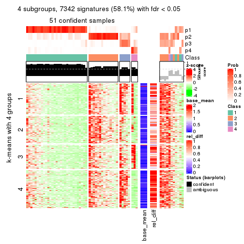
get_signatures(res, k = 5)
get_signatures(res, k = 6)
Signature heatmaps where rows are not scaled:
get_signatures(res, k = 2, scale_rows = FALSE)
get_signatures(res, k = 3, scale_rows = FALSE)
get_signatures(res, k = 4, scale_rows = FALSE)
#> Error in mat[ceiling(1:nr/h_ratio), ceiling(1:nc/w_ratio), drop = FALSE]: subscript out of bounds
get_signatures(res, k = 5, scale_rows = FALSE)
#> Error in mat[ceiling(1:nr/h_ratio), ceiling(1:nc/w_ratio), drop = FALSE]: subscript out of bounds
get_signatures(res, k = 6, scale_rows = FALSE)
Compare the overlap of signatures from different k:
compare_signatures(res)
get_signature() returns a data frame invisibly. TO get the list of signatures, the function
call should be assigned to a variable explicitly. In following code, if plot argument is set
to FALSE, no heatmap is plotted while only the differential analysis is performed.
# code only for demonstration
tb = get_signature(res, k = ..., plot = FALSE)
An example of the output of tb is:
#> which_row fdr mean_1 mean_2 scaled_mean_1 scaled_mean_2 km
#> 1 38 0.042760348 8.373488 9.131774 -0.5533452 0.5164555 1
#> 2 40 0.018707592 7.106213 8.469186 -0.6173731 0.5762149 1
#> 3 55 0.019134737 10.221463 11.207825 -0.6159697 0.5749050 1
#> 4 59 0.006059896 5.921854 7.869574 -0.6899429 0.6439467 1
#> 5 60 0.018055526 8.928898 10.211722 -0.6204761 0.5791110 1
#> 6 98 0.009384629 15.714769 14.887706 0.6635654 -0.6193277 2
...
The columns in tb are:
which_row: row indices corresponding to the input matrix.fdr: FDR for the differential test. mean_x: The mean value in group x.scaled_mean_x: The mean value in group x after rows are scaled.km: Row groups if k-means clustering is applied to rows.UMAP plot which shows how samples are separated.
dimension_reduction(res, k = 2, method = "UMAP")
dimension_reduction(res, k = 3, method = "UMAP")
dimension_reduction(res, k = 4, method = "UMAP")
dimension_reduction(res, k = 5, method = "UMAP")
dimension_reduction(res, k = 6, method = "UMAP")
Following heatmap shows how subgroups are split when increasing k:
collect_classes(res)
If matrix rows can be associated to genes, consider to use GO_Enrichment(res,
...) to perform function enrichment for the signature genes.
The object with results only for a single top-value method and a single partition method can be extracted as:
res = res_list["MAD", "hclust"]
# you can also extract it by
# res = res_list["MAD:hclust"]
A summary of res and all the functions that can be applied to it:
res
#> A 'ConsensusPartition' object with k = 2, 3, 4, 5, 6.
#> On a matrix with 12627 rows and 62 columns.
#> Top rows (1000, 2000, 3000, 4000, 5000) are extracted by 'MAD' method.
#> Subgroups are detected by 'hclust' method.
#> Performed in total 1250 partitions by row resampling.
#> Best k for subgroups seems to be 2.
#>
#> Following methods can be applied to this 'ConsensusPartition' object:
#> [1] "cola_report" "collect_classes" "collect_plots"
#> [4] "collect_stats" "colnames" "compare_signatures"
#> [7] "consensus_heatmap" "dimension_reduction" "functional_enrichment"
#> [10] "get_anno_col" "get_anno" "get_classes"
#> [13] "get_consensus" "get_matrix" "get_membership"
#> [16] "get_param" "get_signatures" "get_stats"
#> [19] "is_best_k" "is_stable_k" "membership_heatmap"
#> [22] "ncol" "nrow" "plot_ecdf"
#> [25] "rownames" "select_partition_number" "show"
#> [28] "suggest_best_k" "test_to_known_factors"
collect_plots() function collects all the plots made from res for all k (number of partitions)
into one single page to provide an easy and fast comparison between different k.
collect_plots(res)
The plots are:
k and the heatmap of
predicted classes for each k.k.k.k.All the plots in panels can be made by individual functions and they are plotted later in this section.
select_partition_number() produces several plots showing different
statistics for choosing “optimized” k. There are following statistics:
k;k, the area increased is defined as \(A_k - A_{k-1}\).The detailed explanations of these statistics can be found in the cola vignette.
Generally speaking, lower PAC score, higher mean silhouette score or higher
concordance corresponds to better partition. Rand index and Jaccard index
measure how similar the current partition is compared to partition with k-1.
If they are too similar, we won't accept k is better than k-1.
select_partition_number(res)
The numeric values for all these statistics can be obtained by get_stats().
get_stats(res)
#> k 1-PAC mean_silhouette concordance area_increased Rand Jaccard
#> 2 2 0.498 0.859 0.924 0.45014 0.526 0.526
#> 3 3 0.694 0.832 0.913 0.21019 0.952 0.909
#> 4 4 0.693 0.783 0.897 0.02707 0.998 0.996
#> 5 5 0.673 0.729 0.874 0.06718 0.943 0.883
#> 6 6 0.712 0.729 0.872 0.00987 0.997 0.993
suggest_best_k() suggests the best \(k\) based on these statistics. The rules are as follows:
NA.suggest_best_k(res)
#> [1] 2
Following shows the table of the partitions (You need to click the show/hide
code output link to see it). The membership matrix (columns with name p*)
is inferred by
clue::cl_consensus()
function with the SE method. Basically the value in the membership matrix
represents the probability to belong to a certain group. The finall class
label for an item is determined with the group with highest probability it
belongs to.
In get_classes() function, the entropy is calculated from the membership
matrix and the silhouette score is calculated from the consensus matrix.
cbind(get_classes(res, k = 2), get_membership(res, k = 2))
#> class entropy silhouette p1 p2
#> SRR372611 1 0.0000 0.930 1.000 0.000
#> SRR372612 1 0.0000 0.930 1.000 0.000
#> SRR372613 2 0.0000 0.871 0.000 1.000
#> SRR372614 1 0.1184 0.920 0.984 0.016
#> SRR372615 2 0.6247 0.888 0.156 0.844
#> SRR372616 2 0.9209 0.614 0.336 0.664
#> SRR372617 1 0.6048 0.805 0.852 0.148
#> SRR372618 1 0.0000 0.930 1.000 0.000
#> SRR372619 2 0.6438 0.885 0.164 0.836
#> SRR372620 1 0.0000 0.930 1.000 0.000
#> SRR372621 2 0.6343 0.887 0.160 0.840
#> SRR372622 1 0.0000 0.930 1.000 0.000
#> SRR372623 2 0.6438 0.885 0.164 0.836
#> SRR372624 1 0.0000 0.930 1.000 0.000
#> SRR372625 1 0.0000 0.930 1.000 0.000
#> SRR372626 2 0.6438 0.885 0.164 0.836
#> SRR372627 1 0.0000 0.930 1.000 0.000
#> SRR372628 1 0.0000 0.930 1.000 0.000
#> SRR372629 1 0.5737 0.819 0.864 0.136
#> SRR372630 1 0.0000 0.930 1.000 0.000
#> SRR372631 1 0.5842 0.814 0.860 0.140
#> SRR372632 1 0.0000 0.930 1.000 0.000
#> SRR372633 1 0.9710 0.281 0.600 0.400
#> SRR372634 1 0.0000 0.930 1.000 0.000
#> SRR372635 1 0.6048 0.805 0.852 0.148
#> SRR372636 1 0.0000 0.930 1.000 0.000
#> SRR372637 1 0.6048 0.805 0.852 0.148
#> SRR372638 1 0.0000 0.930 1.000 0.000
#> SRR372639 2 0.6438 0.885 0.164 0.836
#> SRR372640 1 0.0000 0.930 1.000 0.000
#> SRR372641 1 0.0000 0.930 1.000 0.000
#> SRR372642 1 0.0000 0.930 1.000 0.000
#> SRR372643 2 0.6712 0.875 0.176 0.824
#> SRR372644 1 0.0000 0.930 1.000 0.000
#> SRR372645 1 0.9815 0.213 0.580 0.420
#> SRR372646 1 0.0000 0.930 1.000 0.000
#> SRR372647 1 0.0000 0.930 1.000 0.000
#> SRR372648 1 0.0000 0.930 1.000 0.000
#> SRR372649 1 0.0000 0.930 1.000 0.000
#> SRR372650 2 0.0000 0.871 0.000 1.000
#> SRR372651 2 0.0000 0.871 0.000 1.000
#> SRR372652 2 0.8144 0.766 0.252 0.748
#> SRR372653 2 0.0000 0.871 0.000 1.000
#> SRR372654 1 0.0376 0.928 0.996 0.004
#> SRR372655 2 0.0376 0.872 0.004 0.996
#> SRR372656 1 0.0000 0.930 1.000 0.000
#> SRR372657 1 0.0000 0.930 1.000 0.000
#> SRR372658 2 0.0000 0.871 0.000 1.000
#> SRR372659 2 0.6712 0.875 0.176 0.824
#> SRR372660 2 0.5629 0.892 0.132 0.868
#> SRR372661 2 0.6343 0.887 0.160 0.840
#> SRR372662 1 0.9000 0.514 0.684 0.316
#> SRR372663 2 0.5519 0.892 0.128 0.872
#> SRR372664 1 0.0000 0.930 1.000 0.000
#> SRR372665 2 0.0000 0.871 0.000 1.000
#> SRR372666 2 0.5629 0.892 0.132 0.868
#> SRR372667 2 0.0000 0.871 0.000 1.000
#> SRR372668 1 0.0000 0.930 1.000 0.000
#> SRR372669 1 0.3431 0.884 0.936 0.064
#> SRR372670 1 0.0000 0.930 1.000 0.000
#> SRR372671 2 0.0000 0.871 0.000 1.000
#> SRR372672 1 0.9000 0.514 0.684 0.316
cbind(get_classes(res, k = 3), get_membership(res, k = 3))
#> class entropy silhouette p1 p2 p3
#> SRR372611 1 0.0000 0.930 1.000 0.000 0.000
#> SRR372612 1 0.0000 0.930 1.000 0.000 0.000
#> SRR372613 3 0.2261 0.937 0.000 0.068 0.932
#> SRR372614 1 0.1031 0.918 0.976 0.024 0.000
#> SRR372615 2 0.0661 0.825 0.008 0.988 0.004
#> SRR372616 2 0.5940 0.625 0.204 0.760 0.036
#> SRR372617 1 0.4062 0.810 0.836 0.164 0.000
#> SRR372618 1 0.0237 0.929 0.996 0.004 0.000
#> SRR372619 2 0.0983 0.825 0.016 0.980 0.004
#> SRR372620 1 0.0000 0.930 1.000 0.000 0.000
#> SRR372621 2 0.1877 0.834 0.012 0.956 0.032
#> SRR372622 1 0.0237 0.929 0.996 0.004 0.000
#> SRR372623 2 0.0983 0.825 0.016 0.980 0.004
#> SRR372624 1 0.0000 0.930 1.000 0.000 0.000
#> SRR372625 1 0.0000 0.930 1.000 0.000 0.000
#> SRR372626 2 0.0983 0.825 0.016 0.980 0.004
#> SRR372627 1 0.0000 0.930 1.000 0.000 0.000
#> SRR372628 1 0.0000 0.930 1.000 0.000 0.000
#> SRR372629 1 0.3879 0.823 0.848 0.152 0.000
#> SRR372630 1 0.0000 0.930 1.000 0.000 0.000
#> SRR372631 1 0.3941 0.819 0.844 0.156 0.000
#> SRR372632 1 0.0000 0.930 1.000 0.000 0.000
#> SRR372633 1 0.6192 0.368 0.580 0.420 0.000
#> SRR372634 1 0.0000 0.930 1.000 0.000 0.000
#> SRR372635 1 0.4062 0.810 0.836 0.164 0.000
#> SRR372636 1 0.0000 0.930 1.000 0.000 0.000
#> SRR372637 1 0.4062 0.810 0.836 0.164 0.000
#> SRR372638 1 0.0000 0.930 1.000 0.000 0.000
#> SRR372639 2 0.2152 0.834 0.016 0.948 0.036
#> SRR372640 1 0.0000 0.930 1.000 0.000 0.000
#> SRR372641 1 0.0237 0.929 0.996 0.004 0.000
#> SRR372642 1 0.0237 0.929 0.996 0.004 0.000
#> SRR372643 2 0.3213 0.831 0.028 0.912 0.060
#> SRR372644 1 0.0000 0.930 1.000 0.000 0.000
#> SRR372645 1 0.6754 0.315 0.556 0.432 0.012
#> SRR372646 1 0.0000 0.930 1.000 0.000 0.000
#> SRR372647 1 0.0237 0.929 0.996 0.004 0.000
#> SRR372648 1 0.0000 0.930 1.000 0.000 0.000
#> SRR372649 1 0.0237 0.929 0.996 0.004 0.000
#> SRR372650 3 0.1411 0.961 0.000 0.036 0.964
#> SRR372651 2 0.6280 0.398 0.000 0.540 0.460
#> SRR372652 2 0.5863 0.729 0.120 0.796 0.084
#> SRR372653 3 0.0237 0.973 0.000 0.004 0.996
#> SRR372654 1 0.0424 0.927 0.992 0.008 0.000
#> SRR372655 2 0.3941 0.751 0.000 0.844 0.156
#> SRR372656 1 0.0000 0.930 1.000 0.000 0.000
#> SRR372657 1 0.0000 0.930 1.000 0.000 0.000
#> SRR372658 3 0.0237 0.973 0.000 0.004 0.996
#> SRR372659 2 0.3213 0.831 0.028 0.912 0.060
#> SRR372660 2 0.3619 0.803 0.000 0.864 0.136
#> SRR372661 2 0.1877 0.834 0.012 0.956 0.032
#> SRR372662 1 0.6603 0.518 0.648 0.332 0.020
#> SRR372663 2 0.3816 0.797 0.000 0.852 0.148
#> SRR372664 1 0.0000 0.930 1.000 0.000 0.000
#> SRR372665 3 0.0237 0.973 0.000 0.004 0.996
#> SRR372666 2 0.3918 0.802 0.004 0.856 0.140
#> SRR372667 2 0.6280 0.398 0.000 0.540 0.460
#> SRR372668 1 0.0000 0.930 1.000 0.000 0.000
#> SRR372669 1 0.2261 0.889 0.932 0.068 0.000
#> SRR372670 1 0.0000 0.930 1.000 0.000 0.000
#> SRR372671 2 0.6280 0.398 0.000 0.540 0.460
#> SRR372672 1 0.6603 0.518 0.648 0.332 0.020
cbind(get_classes(res, k = 4), get_membership(res, k = 4))
#> class entropy silhouette p1 p2 p3 p4
#> SRR372611 1 0.0188 0.920 0.996 0.000 0.000 0.004
#> SRR372612 1 0.0188 0.920 0.996 0.000 0.000 0.004
#> SRR372613 4 0.2943 0.000 0.000 0.076 0.032 0.892
#> SRR372614 1 0.0921 0.909 0.972 0.028 0.000 0.000
#> SRR372615 2 0.2345 0.782 0.000 0.900 0.000 0.100
#> SRR372616 2 0.4919 0.548 0.200 0.752 0.000 0.048
#> SRR372617 1 0.3356 0.795 0.824 0.176 0.000 0.000
#> SRR372618 1 0.0336 0.919 0.992 0.008 0.000 0.000
#> SRR372619 2 0.2149 0.782 0.000 0.912 0.000 0.088
#> SRR372620 1 0.0188 0.920 0.996 0.000 0.000 0.004
#> SRR372621 2 0.0376 0.794 0.000 0.992 0.004 0.004
#> SRR372622 1 0.0592 0.916 0.984 0.016 0.000 0.000
#> SRR372623 2 0.2149 0.782 0.000 0.912 0.000 0.088
#> SRR372624 1 0.0188 0.920 0.996 0.000 0.000 0.004
#> SRR372625 1 0.0188 0.920 0.996 0.000 0.000 0.004
#> SRR372626 2 0.2149 0.782 0.000 0.912 0.000 0.088
#> SRR372627 1 0.0188 0.920 0.996 0.000 0.000 0.004
#> SRR372628 1 0.0188 0.920 0.996 0.000 0.000 0.004
#> SRR372629 1 0.3266 0.803 0.832 0.168 0.000 0.000
#> SRR372630 1 0.0000 0.920 1.000 0.000 0.000 0.000
#> SRR372631 1 0.3311 0.800 0.828 0.172 0.000 0.000
#> SRR372632 1 0.0188 0.920 0.996 0.000 0.000 0.004
#> SRR372633 1 0.4941 0.346 0.564 0.436 0.000 0.000
#> SRR372634 1 0.0188 0.920 0.996 0.000 0.000 0.004
#> SRR372635 1 0.3356 0.795 0.824 0.176 0.000 0.000
#> SRR372636 1 0.0188 0.920 0.996 0.004 0.000 0.000
#> SRR372637 1 0.3356 0.795 0.824 0.176 0.000 0.000
#> SRR372638 1 0.0188 0.920 0.996 0.000 0.000 0.004
#> SRR372639 2 0.1004 0.794 0.000 0.972 0.004 0.024
#> SRR372640 1 0.0188 0.920 0.996 0.000 0.000 0.004
#> SRR372641 1 0.0336 0.919 0.992 0.008 0.000 0.000
#> SRR372642 1 0.0336 0.919 0.992 0.008 0.000 0.000
#> SRR372643 2 0.1854 0.787 0.012 0.940 0.000 0.048
#> SRR372644 1 0.0188 0.920 0.996 0.000 0.000 0.004
#> SRR372645 1 0.5576 0.283 0.536 0.444 0.000 0.020
#> SRR372646 1 0.0000 0.920 1.000 0.000 0.000 0.000
#> SRR372647 1 0.0336 0.919 0.992 0.008 0.000 0.000
#> SRR372648 1 0.0188 0.920 0.996 0.000 0.000 0.004
#> SRR372649 1 0.0336 0.919 0.992 0.008 0.000 0.000
#> SRR372650 3 0.5387 0.431 0.000 0.048 0.696 0.256
#> SRR372651 2 0.5597 0.356 0.000 0.516 0.464 0.020
#> SRR372652 2 0.4837 0.657 0.116 0.792 0.004 0.088
#> SRR372653 3 0.0000 0.865 0.000 0.000 1.000 0.000
#> SRR372654 1 0.0469 0.917 0.988 0.012 0.000 0.000
#> SRR372655 2 0.5234 0.693 0.000 0.752 0.152 0.096
#> SRR372656 1 0.0188 0.920 0.996 0.004 0.000 0.000
#> SRR372657 1 0.0188 0.920 0.996 0.000 0.000 0.004
#> SRR372658 3 0.0000 0.865 0.000 0.000 1.000 0.000
#> SRR372659 2 0.1854 0.787 0.012 0.940 0.000 0.048
#> SRR372660 2 0.3404 0.766 0.000 0.864 0.032 0.104
#> SRR372661 2 0.0376 0.794 0.000 0.992 0.004 0.004
#> SRR372662 1 0.5289 0.516 0.636 0.344 0.000 0.020
#> SRR372663 2 0.3552 0.758 0.000 0.848 0.024 0.128
#> SRR372664 1 0.0188 0.920 0.996 0.000 0.000 0.004
#> SRR372665 3 0.0000 0.865 0.000 0.000 1.000 0.000
#> SRR372666 2 0.3217 0.759 0.000 0.860 0.012 0.128
#> SRR372667 2 0.5597 0.356 0.000 0.516 0.464 0.020
#> SRR372668 1 0.0188 0.920 0.996 0.000 0.000 0.004
#> SRR372669 1 0.2011 0.873 0.920 0.080 0.000 0.000
#> SRR372670 1 0.0188 0.920 0.996 0.000 0.000 0.004
#> SRR372671 2 0.5597 0.356 0.000 0.516 0.464 0.020
#> SRR372672 1 0.5289 0.516 0.636 0.344 0.000 0.020
cbind(get_classes(res, k = 5), get_membership(res, k = 5))
#> class entropy silhouette p1 p2 p3 p4 p5
#> SRR372611 1 0.0162 0.922 0.996 0.000 0.004 0.000 0.000
#> SRR372612 1 0.0162 0.922 0.996 0.000 0.004 0.000 0.000
#> SRR372613 3 0.0290 0.000 0.000 0.000 0.992 0.008 0.000
#> SRR372614 1 0.1153 0.911 0.964 0.008 0.004 0.024 0.000
#> SRR372615 2 0.3796 0.586 0.000 0.700 0.000 0.300 0.000
#> SRR372616 4 0.3474 0.523 0.192 0.008 0.004 0.796 0.000
#> SRR372617 1 0.3758 0.802 0.816 0.128 0.004 0.052 0.000
#> SRR372618 1 0.0566 0.919 0.984 0.000 0.004 0.012 0.000
#> SRR372619 2 0.0000 0.788 0.000 1.000 0.000 0.000 0.000
#> SRR372620 1 0.0162 0.922 0.996 0.000 0.004 0.000 0.000
#> SRR372621 4 0.4310 0.496 0.000 0.392 0.004 0.604 0.000
#> SRR372622 1 0.0854 0.917 0.976 0.008 0.004 0.012 0.000
#> SRR372623 2 0.0000 0.788 0.000 1.000 0.000 0.000 0.000
#> SRR372624 1 0.0162 0.922 0.996 0.000 0.004 0.000 0.000
#> SRR372625 1 0.0162 0.922 0.996 0.000 0.004 0.000 0.000
#> SRR372626 2 0.0000 0.788 0.000 1.000 0.000 0.000 0.000
#> SRR372627 1 0.0162 0.922 0.996 0.000 0.004 0.000 0.000
#> SRR372628 1 0.0162 0.922 0.996 0.000 0.004 0.000 0.000
#> SRR372629 1 0.3642 0.809 0.824 0.124 0.004 0.048 0.000
#> SRR372630 1 0.0000 0.922 1.000 0.000 0.000 0.000 0.000
#> SRR372631 1 0.3712 0.805 0.820 0.124 0.004 0.052 0.000
#> SRR372632 1 0.0162 0.922 0.996 0.000 0.004 0.000 0.000
#> SRR372633 1 0.5706 0.381 0.556 0.360 0.004 0.080 0.000
#> SRR372634 1 0.0162 0.922 0.996 0.000 0.004 0.000 0.000
#> SRR372635 1 0.3758 0.802 0.816 0.128 0.004 0.052 0.000
#> SRR372636 1 0.0451 0.920 0.988 0.000 0.004 0.008 0.000
#> SRR372637 1 0.3758 0.802 0.816 0.128 0.004 0.052 0.000
#> SRR372638 1 0.0162 0.922 0.996 0.000 0.004 0.000 0.000
#> SRR372639 4 0.4390 0.439 0.000 0.428 0.004 0.568 0.000
#> SRR372640 1 0.0162 0.922 0.996 0.000 0.004 0.000 0.000
#> SRR372641 1 0.0566 0.919 0.984 0.000 0.004 0.012 0.000
#> SRR372642 1 0.0566 0.919 0.984 0.000 0.004 0.012 0.000
#> SRR372643 4 0.2921 0.695 0.004 0.148 0.004 0.844 0.000
#> SRR372644 1 0.0162 0.922 0.996 0.000 0.004 0.000 0.000
#> SRR372645 1 0.5584 0.313 0.532 0.392 0.000 0.076 0.000
#> SRR372646 1 0.0162 0.921 0.996 0.000 0.004 0.000 0.000
#> SRR372647 1 0.0566 0.919 0.984 0.000 0.004 0.012 0.000
#> SRR372648 1 0.0162 0.922 0.996 0.000 0.004 0.000 0.000
#> SRR372649 1 0.0566 0.919 0.984 0.000 0.004 0.012 0.000
#> SRR372650 5 0.4937 0.103 0.000 0.000 0.264 0.064 0.672
#> SRR372651 5 0.6542 0.267 0.000 0.360 0.004 0.176 0.460
#> SRR372652 4 0.2783 0.624 0.116 0.012 0.004 0.868 0.000
#> SRR372653 5 0.0000 0.526 0.000 0.000 0.000 0.000 1.000
#> SRR372654 1 0.0671 0.918 0.980 0.000 0.004 0.016 0.000
#> SRR372655 2 0.5339 0.488 0.000 0.672 0.000 0.176 0.152
#> SRR372656 1 0.0451 0.920 0.988 0.000 0.004 0.008 0.000
#> SRR372657 1 0.0162 0.922 0.996 0.000 0.004 0.000 0.000
#> SRR372658 5 0.0000 0.526 0.000 0.000 0.000 0.000 1.000
#> SRR372659 4 0.2921 0.695 0.004 0.148 0.004 0.844 0.000
#> SRR372660 4 0.0798 0.678 0.000 0.000 0.008 0.976 0.016
#> SRR372661 4 0.4310 0.496 0.000 0.392 0.004 0.604 0.000
#> SRR372662 1 0.4971 0.493 0.628 0.036 0.004 0.332 0.000
#> SRR372663 4 0.1836 0.678 0.000 0.008 0.040 0.936 0.016
#> SRR372664 1 0.0162 0.922 0.996 0.000 0.004 0.000 0.000
#> SRR372665 5 0.0000 0.526 0.000 0.000 0.000 0.000 1.000
#> SRR372666 4 0.1538 0.684 0.000 0.008 0.036 0.948 0.008
#> SRR372667 5 0.6542 0.267 0.000 0.360 0.004 0.176 0.460
#> SRR372668 1 0.0162 0.922 0.996 0.000 0.004 0.000 0.000
#> SRR372669 1 0.2264 0.878 0.912 0.060 0.004 0.024 0.000
#> SRR372670 1 0.0162 0.922 0.996 0.000 0.004 0.000 0.000
#> SRR372671 5 0.6542 0.267 0.000 0.360 0.004 0.176 0.460
#> SRR372672 1 0.4971 0.493 0.628 0.036 0.004 0.332 0.000
cbind(get_classes(res, k = 6), get_membership(res, k = 6))
#> class entropy silhouette p1 p2 p3 p4 p5 p6
#> SRR372611 1 0.0146 0.923 0.996 0.000 0.004 0.000 0.000 0.000
#> SRR372612 1 0.0146 0.923 0.996 0.000 0.004 0.000 0.000 0.000
#> SRR372613 6 0.0000 0.000 0.000 0.000 0.000 0.000 0.000 1.000
#> SRR372614 1 0.1003 0.912 0.964 0.004 0.004 0.028 0.000 0.000
#> SRR372615 2 0.5384 0.519 0.000 0.604 0.004 0.208 0.184 0.000
#> SRR372616 4 0.3121 0.509 0.192 0.004 0.008 0.796 0.000 0.000
#> SRR372617 1 0.3653 0.805 0.816 0.100 0.024 0.060 0.000 0.000
#> SRR372618 1 0.0508 0.920 0.984 0.000 0.004 0.012 0.000 0.000
#> SRR372619 2 0.0000 0.755 0.000 1.000 0.000 0.000 0.000 0.000
#> SRR372620 1 0.0146 0.923 0.996 0.000 0.004 0.000 0.000 0.000
#> SRR372621 4 0.3911 0.514 0.000 0.368 0.008 0.624 0.000 0.000
#> SRR372622 1 0.0767 0.918 0.976 0.008 0.004 0.012 0.000 0.000
#> SRR372623 2 0.0000 0.755 0.000 1.000 0.000 0.000 0.000 0.000
#> SRR372624 1 0.0146 0.923 0.996 0.000 0.004 0.000 0.000 0.000
#> SRR372625 1 0.0146 0.923 0.996 0.000 0.004 0.000 0.000 0.000
#> SRR372626 2 0.0000 0.755 0.000 1.000 0.000 0.000 0.000 0.000
#> SRR372627 1 0.0146 0.923 0.996 0.000 0.004 0.000 0.000 0.000
#> SRR372628 1 0.0146 0.923 0.996 0.000 0.004 0.000 0.000 0.000
#> SRR372629 1 0.3600 0.812 0.824 0.088 0.032 0.056 0.000 0.000
#> SRR372630 1 0.0000 0.923 1.000 0.000 0.000 0.000 0.000 0.000
#> SRR372631 1 0.3659 0.809 0.820 0.088 0.032 0.060 0.000 0.000
#> SRR372632 1 0.0146 0.923 0.996 0.000 0.004 0.000 0.000 0.000
#> SRR372633 1 0.5668 0.396 0.556 0.324 0.032 0.088 0.000 0.000
#> SRR372634 1 0.0146 0.923 0.996 0.000 0.004 0.000 0.000 0.000
#> SRR372635 1 0.3653 0.805 0.816 0.100 0.024 0.060 0.000 0.000
#> SRR372636 1 0.0405 0.921 0.988 0.000 0.004 0.008 0.000 0.000
#> SRR372637 1 0.3653 0.805 0.816 0.100 0.024 0.060 0.000 0.000
#> SRR372638 1 0.0146 0.923 0.996 0.000 0.004 0.000 0.000 0.000
#> SRR372639 4 0.3923 0.447 0.000 0.416 0.004 0.580 0.000 0.000
#> SRR372640 1 0.0146 0.923 0.996 0.000 0.004 0.000 0.000 0.000
#> SRR372641 1 0.0508 0.920 0.984 0.000 0.004 0.012 0.000 0.000
#> SRR372642 1 0.0508 0.920 0.984 0.000 0.004 0.012 0.000 0.000
#> SRR372643 4 0.2752 0.705 0.004 0.096 0.036 0.864 0.000 0.000
#> SRR372644 1 0.0146 0.923 0.996 0.000 0.004 0.000 0.000 0.000
#> SRR372645 1 0.5490 0.323 0.532 0.364 0.016 0.088 0.000 0.000
#> SRR372646 1 0.0146 0.922 0.996 0.000 0.004 0.000 0.000 0.000
#> SRR372647 1 0.0508 0.920 0.984 0.000 0.004 0.012 0.000 0.000
#> SRR372648 1 0.0146 0.923 0.996 0.000 0.004 0.000 0.000 0.000
#> SRR372649 1 0.0508 0.920 0.984 0.000 0.004 0.012 0.000 0.000
#> SRR372650 3 0.1010 0.000 0.000 0.000 0.960 0.036 0.000 0.004
#> SRR372651 5 0.4809 0.437 0.000 0.272 0.004 0.080 0.644 0.000
#> SRR372652 4 0.2592 0.612 0.116 0.004 0.016 0.864 0.000 0.000
#> SRR372653 5 0.2697 0.456 0.000 0.000 0.188 0.000 0.812 0.000
#> SRR372654 1 0.0603 0.919 0.980 0.000 0.004 0.016 0.000 0.000
#> SRR372655 2 0.5103 0.350 0.000 0.576 0.004 0.084 0.336 0.000
#> SRR372656 1 0.0405 0.921 0.988 0.000 0.004 0.008 0.000 0.000
#> SRR372657 1 0.0146 0.923 0.996 0.000 0.004 0.000 0.000 0.000
#> SRR372658 5 0.2664 0.460 0.000 0.000 0.184 0.000 0.816 0.000
#> SRR372659 4 0.2752 0.705 0.004 0.096 0.036 0.864 0.000 0.000
#> SRR372660 4 0.1141 0.668 0.000 0.000 0.052 0.948 0.000 0.000
#> SRR372661 4 0.3911 0.514 0.000 0.368 0.008 0.624 0.000 0.000
#> SRR372662 1 0.4360 0.495 0.628 0.028 0.004 0.340 0.000 0.000
#> SRR372663 4 0.1524 0.672 0.000 0.000 0.060 0.932 0.008 0.000
#> SRR372664 1 0.0146 0.923 0.996 0.000 0.004 0.000 0.000 0.000
#> SRR372665 5 0.2664 0.460 0.000 0.000 0.184 0.000 0.816 0.000
#> SRR372666 4 0.1204 0.677 0.000 0.000 0.056 0.944 0.000 0.000
#> SRR372667 5 0.4809 0.437 0.000 0.272 0.004 0.080 0.644 0.000
#> SRR372668 1 0.0146 0.923 0.996 0.000 0.004 0.000 0.000 0.000
#> SRR372669 1 0.2151 0.879 0.912 0.048 0.016 0.024 0.000 0.000
#> SRR372670 1 0.0146 0.923 0.996 0.000 0.004 0.000 0.000 0.000
#> SRR372671 5 0.4809 0.437 0.000 0.272 0.004 0.080 0.644 0.000
#> SRR372672 1 0.4360 0.495 0.628 0.028 0.004 0.340 0.000 0.000
Heatmaps for the consensus matrix. It visualizes the probability of two samples to be in a same group.
consensus_heatmap(res, k = 2)
consensus_heatmap(res, k = 3)
consensus_heatmap(res, k = 4)
consensus_heatmap(res, k = 5)
consensus_heatmap(res, k = 6)

Heatmaps for the membership of samples in all partitions to see how consistent they are:
membership_heatmap(res, k = 2)
membership_heatmap(res, k = 3)
membership_heatmap(res, k = 4)
membership_heatmap(res, k = 5)
membership_heatmap(res, k = 6)
As soon as we have had the classes for columns, we can look for signatures which are significantly different between classes which can be candidate marks for certain classes. Following are the heatmaps for signatures.
Signature heatmaps where rows are scaled:
get_signatures(res, k = 2)
get_signatures(res, k = 3)
get_signatures(res, k = 4)
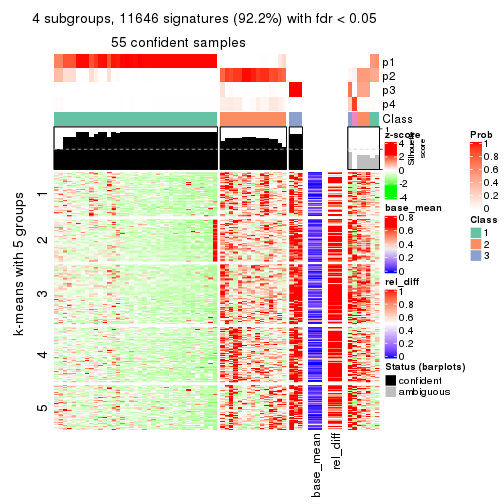
get_signatures(res, k = 5)
get_signatures(res, k = 6)
Signature heatmaps where rows are not scaled:
get_signatures(res, k = 2, scale_rows = FALSE)
get_signatures(res, k = 3, scale_rows = FALSE)
get_signatures(res, k = 4, scale_rows = FALSE)
#> Error in mat[ceiling(1:nr/h_ratio), ceiling(1:nc/w_ratio), drop = FALSE]: subscript out of bounds
get_signatures(res, k = 5, scale_rows = FALSE)
get_signatures(res, k = 6, scale_rows = FALSE)
#> Error in mat[ceiling(1:nr/h_ratio), ceiling(1:nc/w_ratio), drop = FALSE]: subscript out of bounds
Compare the overlap of signatures from different k:
compare_signatures(res)
get_signature() returns a data frame invisibly. TO get the list of signatures, the function
call should be assigned to a variable explicitly. In following code, if plot argument is set
to FALSE, no heatmap is plotted while only the differential analysis is performed.
# code only for demonstration
tb = get_signature(res, k = ..., plot = FALSE)
An example of the output of tb is:
#> which_row fdr mean_1 mean_2 scaled_mean_1 scaled_mean_2 km
#> 1 38 0.042760348 8.373488 9.131774 -0.5533452 0.5164555 1
#> 2 40 0.018707592 7.106213 8.469186 -0.6173731 0.5762149 1
#> 3 55 0.019134737 10.221463 11.207825 -0.6159697 0.5749050 1
#> 4 59 0.006059896 5.921854 7.869574 -0.6899429 0.6439467 1
#> 5 60 0.018055526 8.928898 10.211722 -0.6204761 0.5791110 1
#> 6 98 0.009384629 15.714769 14.887706 0.6635654 -0.6193277 2
...
The columns in tb are:
which_row: row indices corresponding to the input matrix.fdr: FDR for the differential test. mean_x: The mean value in group x.scaled_mean_x: The mean value in group x after rows are scaled.km: Row groups if k-means clustering is applied to rows.UMAP plot which shows how samples are separated.
dimension_reduction(res, k = 2, method = "UMAP")
dimension_reduction(res, k = 3, method = "UMAP")
dimension_reduction(res, k = 4, method = "UMAP")
dimension_reduction(res, k = 5, method = "UMAP")
dimension_reduction(res, k = 6, method = "UMAP")
Following heatmap shows how subgroups are split when increasing k:
collect_classes(res)
If matrix rows can be associated to genes, consider to use GO_Enrichment(res,
...) to perform function enrichment for the signature genes.
The object with results only for a single top-value method and a single partition method can be extracted as:
res = res_list["MAD", "kmeans"]
# you can also extract it by
# res = res_list["MAD:kmeans"]
A summary of res and all the functions that can be applied to it:
res
#> A 'ConsensusPartition' object with k = 2, 3, 4, 5, 6.
#> On a matrix with 12627 rows and 62 columns.
#> Top rows (1000, 2000, 3000, 4000, 5000) are extracted by 'MAD' method.
#> Subgroups are detected by 'kmeans' method.
#> Performed in total 1250 partitions by row resampling.
#> Best k for subgroups seems to be 3.
#>
#> Following methods can be applied to this 'ConsensusPartition' object:
#> [1] "cola_report" "collect_classes" "collect_plots"
#> [4] "collect_stats" "colnames" "compare_signatures"
#> [7] "consensus_heatmap" "dimension_reduction" "functional_enrichment"
#> [10] "get_anno_col" "get_anno" "get_classes"
#> [13] "get_consensus" "get_matrix" "get_membership"
#> [16] "get_param" "get_signatures" "get_stats"
#> [19] "is_best_k" "is_stable_k" "membership_heatmap"
#> [22] "ncol" "nrow" "plot_ecdf"
#> [25] "rownames" "select_partition_number" "show"
#> [28] "suggest_best_k" "test_to_known_factors"
collect_plots() function collects all the plots made from res for all k (number of partitions)
into one single page to provide an easy and fast comparison between different k.
collect_plots(res)
The plots are:
k and the heatmap of
predicted classes for each k.k.k.k.All the plots in panels can be made by individual functions and they are plotted later in this section.
select_partition_number() produces several plots showing different
statistics for choosing “optimized” k. There are following statistics:
k;k, the area increased is defined as \(A_k - A_{k-1}\).The detailed explanations of these statistics can be found in the cola vignette.
Generally speaking, lower PAC score, higher mean silhouette score or higher
concordance corresponds to better partition. Rand index and Jaccard index
measure how similar the current partition is compared to partition with k-1.
If they are too similar, we won't accept k is better than k-1.
select_partition_number(res)
The numeric values for all these statistics can be obtained by get_stats().
get_stats(res)
#> k 1-PAC mean_silhouette concordance area_increased Rand Jaccard
#> 2 2 1.000 0.961 0.984 0.4551 0.556 0.556
#> 3 3 0.982 0.936 0.959 0.3736 0.679 0.486
#> 4 4 0.739 0.751 0.852 0.1184 0.807 0.539
#> 5 5 0.788 0.719 0.854 0.0709 0.980 0.926
#> 6 6 0.809 0.708 0.840 0.0327 0.980 0.923
suggest_best_k() suggests the best \(k\) based on these statistics. The rules are as follows:
NA.suggest_best_k(res)
#> [1] 3
#> attr(,"optional")
#> [1] 2
There is also optional best \(k\) = 2 that is worth to check.
Following shows the table of the partitions (You need to click the show/hide
code output link to see it). The membership matrix (columns with name p*)
is inferred by
clue::cl_consensus()
function with the SE method. Basically the value in the membership matrix
represents the probability to belong to a certain group. The finall class
label for an item is determined with the group with highest probability it
belongs to.
In get_classes() function, the entropy is calculated from the membership
matrix and the silhouette score is calculated from the consensus matrix.
cbind(get_classes(res, k = 2), get_membership(res, k = 2))
#> class entropy silhouette p1 p2
#> SRR372611 1 0.000 0.975 1.000 0.000
#> SRR372612 1 0.000 0.975 1.000 0.000
#> SRR372613 2 0.000 1.000 0.000 1.000
#> SRR372614 1 0.000 0.975 1.000 0.000
#> SRR372615 2 0.000 1.000 0.000 1.000
#> SRR372616 1 0.000 0.975 1.000 0.000
#> SRR372617 1 0.000 0.975 1.000 0.000
#> SRR372618 1 0.000 0.975 1.000 0.000
#> SRR372619 2 0.000 1.000 0.000 1.000
#> SRR372620 1 0.000 0.975 1.000 0.000
#> SRR372621 2 0.000 1.000 0.000 1.000
#> SRR372622 1 0.000 0.975 1.000 0.000
#> SRR372623 1 0.978 0.335 0.588 0.412
#> SRR372624 1 0.000 0.975 1.000 0.000
#> SRR372625 1 0.000 0.975 1.000 0.000
#> SRR372626 2 0.000 1.000 0.000 1.000
#> SRR372627 1 0.000 0.975 1.000 0.000
#> SRR372628 1 0.000 0.975 1.000 0.000
#> SRR372629 1 0.000 0.975 1.000 0.000
#> SRR372630 1 0.000 0.975 1.000 0.000
#> SRR372631 1 0.000 0.975 1.000 0.000
#> SRR372632 1 0.000 0.975 1.000 0.000
#> SRR372633 1 0.242 0.939 0.960 0.040
#> SRR372634 1 0.000 0.975 1.000 0.000
#> SRR372635 1 0.000 0.975 1.000 0.000
#> SRR372636 1 0.000 0.975 1.000 0.000
#> SRR372637 1 0.000 0.975 1.000 0.000
#> SRR372638 1 0.000 0.975 1.000 0.000
#> SRR372639 2 0.000 1.000 0.000 1.000
#> SRR372640 1 0.000 0.975 1.000 0.000
#> SRR372641 1 0.000 0.975 1.000 0.000
#> SRR372642 1 0.000 0.975 1.000 0.000
#> SRR372643 2 0.000 1.000 0.000 1.000
#> SRR372644 1 0.000 0.975 1.000 0.000
#> SRR372645 1 0.833 0.653 0.736 0.264
#> SRR372646 1 0.000 0.975 1.000 0.000
#> SRR372647 1 0.000 0.975 1.000 0.000
#> SRR372648 1 0.000 0.975 1.000 0.000
#> SRR372649 1 0.000 0.975 1.000 0.000
#> SRR372650 2 0.000 1.000 0.000 1.000
#> SRR372651 2 0.000 1.000 0.000 1.000
#> SRR372652 1 0.881 0.591 0.700 0.300
#> SRR372653 2 0.000 1.000 0.000 1.000
#> SRR372654 1 0.000 0.975 1.000 0.000
#> SRR372655 2 0.000 1.000 0.000 1.000
#> SRR372656 1 0.000 0.975 1.000 0.000
#> SRR372657 1 0.000 0.975 1.000 0.000
#> SRR372658 2 0.000 1.000 0.000 1.000
#> SRR372659 2 0.000 1.000 0.000 1.000
#> SRR372660 2 0.000 1.000 0.000 1.000
#> SRR372661 2 0.000 1.000 0.000 1.000
#> SRR372662 1 0.000 0.975 1.000 0.000
#> SRR372663 2 0.000 1.000 0.000 1.000
#> SRR372664 1 0.000 0.975 1.000 0.000
#> SRR372665 2 0.000 1.000 0.000 1.000
#> SRR372666 2 0.000 1.000 0.000 1.000
#> SRR372667 2 0.000 1.000 0.000 1.000
#> SRR372668 1 0.000 0.975 1.000 0.000
#> SRR372669 1 0.000 0.975 1.000 0.000
#> SRR372670 1 0.000 0.975 1.000 0.000
#> SRR372671 2 0.000 1.000 0.000 1.000
#> SRR372672 1 0.000 0.975 1.000 0.000
cbind(get_classes(res, k = 3), get_membership(res, k = 3))
#> class entropy silhouette p1 p2 p3
#> SRR372611 1 0.2945 0.927 0.908 0.088 0.004
#> SRR372612 1 0.0000 0.979 1.000 0.000 0.000
#> SRR372613 3 0.0237 0.988 0.000 0.004 0.996
#> SRR372614 1 0.4178 0.814 0.828 0.172 0.000
#> SRR372615 2 0.2796 0.893 0.000 0.908 0.092
#> SRR372616 2 0.1411 0.925 0.036 0.964 0.000
#> SRR372617 2 0.1411 0.925 0.036 0.964 0.000
#> SRR372618 1 0.0000 0.979 1.000 0.000 0.000
#> SRR372619 2 0.4887 0.743 0.000 0.772 0.228
#> SRR372620 1 0.0000 0.979 1.000 0.000 0.000
#> SRR372621 2 0.2356 0.905 0.000 0.928 0.072
#> SRR372622 1 0.2066 0.942 0.940 0.060 0.000
#> SRR372623 2 0.2806 0.917 0.032 0.928 0.040
#> SRR372624 1 0.0000 0.979 1.000 0.000 0.000
#> SRR372625 1 0.0000 0.979 1.000 0.000 0.000
#> SRR372626 2 0.2796 0.893 0.000 0.908 0.092
#> SRR372627 1 0.0000 0.979 1.000 0.000 0.000
#> SRR372628 1 0.0000 0.979 1.000 0.000 0.000
#> SRR372629 2 0.1411 0.925 0.036 0.964 0.000
#> SRR372630 1 0.0000 0.979 1.000 0.000 0.000
#> SRR372631 2 0.1411 0.925 0.036 0.964 0.000
#> SRR372632 1 0.0000 0.979 1.000 0.000 0.000
#> SRR372633 2 0.1411 0.925 0.036 0.964 0.000
#> SRR372634 1 0.0000 0.979 1.000 0.000 0.000
#> SRR372635 2 0.1411 0.925 0.036 0.964 0.000
#> SRR372636 1 0.0000 0.979 1.000 0.000 0.000
#> SRR372637 2 0.1411 0.925 0.036 0.964 0.000
#> SRR372638 1 0.0000 0.979 1.000 0.000 0.000
#> SRR372639 2 0.2711 0.896 0.000 0.912 0.088
#> SRR372640 1 0.0000 0.979 1.000 0.000 0.000
#> SRR372641 1 0.2066 0.942 0.940 0.060 0.000
#> SRR372642 1 0.2066 0.942 0.940 0.060 0.000
#> SRR372643 2 0.1289 0.917 0.000 0.968 0.032
#> SRR372644 1 0.0000 0.979 1.000 0.000 0.000
#> SRR372645 2 0.1289 0.925 0.032 0.968 0.000
#> SRR372646 1 0.0000 0.979 1.000 0.000 0.000
#> SRR372647 1 0.0000 0.979 1.000 0.000 0.000
#> SRR372648 1 0.0000 0.979 1.000 0.000 0.000
#> SRR372649 1 0.2066 0.942 0.940 0.060 0.000
#> SRR372650 3 0.0237 0.988 0.000 0.004 0.996
#> SRR372651 3 0.0237 0.988 0.000 0.004 0.996
#> SRR372652 2 0.1289 0.925 0.032 0.968 0.000
#> SRR372653 3 0.0237 0.988 0.000 0.004 0.996
#> SRR372654 1 0.2066 0.942 0.940 0.060 0.000
#> SRR372655 3 0.0237 0.988 0.000 0.004 0.996
#> SRR372656 1 0.0000 0.979 1.000 0.000 0.000
#> SRR372657 1 0.0000 0.979 1.000 0.000 0.000
#> SRR372658 3 0.0237 0.988 0.000 0.004 0.996
#> SRR372659 2 0.2711 0.896 0.000 0.912 0.088
#> SRR372660 2 0.4399 0.801 0.000 0.812 0.188
#> SRR372661 2 0.2356 0.905 0.000 0.928 0.072
#> SRR372662 2 0.1411 0.925 0.036 0.964 0.000
#> SRR372663 3 0.3038 0.878 0.000 0.104 0.896
#> SRR372664 1 0.0000 0.979 1.000 0.000 0.000
#> SRR372665 3 0.0237 0.988 0.000 0.004 0.996
#> SRR372666 2 0.1289 0.917 0.000 0.968 0.032
#> SRR372667 3 0.0237 0.988 0.000 0.004 0.996
#> SRR372668 1 0.0000 0.979 1.000 0.000 0.000
#> SRR372669 2 0.5968 0.428 0.364 0.636 0.000
#> SRR372670 1 0.0000 0.979 1.000 0.000 0.000
#> SRR372671 3 0.0237 0.988 0.000 0.004 0.996
#> SRR372672 2 0.1411 0.925 0.036 0.964 0.000
cbind(get_classes(res, k = 4), get_membership(res, k = 4))
#> class entropy silhouette p1 p2 p3 p4
#> SRR372611 1 0.7370 -0.1956 0.428 0.160 0.000 0.412
#> SRR372612 1 0.0000 0.9655 1.000 0.000 0.000 0.000
#> SRR372613 3 0.4907 0.6337 0.000 0.420 0.580 0.000
#> SRR372614 4 0.4605 0.5491 0.336 0.000 0.000 0.664
#> SRR372615 2 0.5186 0.8598 0.000 0.640 0.016 0.344
#> SRR372616 4 0.1389 0.6752 0.000 0.048 0.000 0.952
#> SRR372617 4 0.0000 0.6811 0.000 0.000 0.000 1.000
#> SRR372618 1 0.2760 0.8029 0.872 0.000 0.000 0.128
#> SRR372619 2 0.5712 0.8376 0.000 0.644 0.048 0.308
#> SRR372620 1 0.0000 0.9655 1.000 0.000 0.000 0.000
#> SRR372621 2 0.4746 0.8587 0.000 0.632 0.000 0.368
#> SRR372622 4 0.4713 0.5155 0.360 0.000 0.000 0.640
#> SRR372623 2 0.5161 0.6852 0.000 0.520 0.004 0.476
#> SRR372624 1 0.0000 0.9655 1.000 0.000 0.000 0.000
#> SRR372625 1 0.0000 0.9655 1.000 0.000 0.000 0.000
#> SRR372626 2 0.5167 0.8589 0.000 0.644 0.016 0.340
#> SRR372627 1 0.0000 0.9655 1.000 0.000 0.000 0.000
#> SRR372628 1 0.0000 0.9655 1.000 0.000 0.000 0.000
#> SRR372629 4 0.0188 0.6832 0.004 0.000 0.000 0.996
#> SRR372630 1 0.0000 0.9655 1.000 0.000 0.000 0.000
#> SRR372631 4 0.0000 0.6811 0.000 0.000 0.000 1.000
#> SRR372632 1 0.0000 0.9655 1.000 0.000 0.000 0.000
#> SRR372633 4 0.0469 0.6697 0.000 0.012 0.000 0.988
#> SRR372634 1 0.0000 0.9655 1.000 0.000 0.000 0.000
#> SRR372635 4 0.0000 0.6811 0.000 0.000 0.000 1.000
#> SRR372636 1 0.0000 0.9655 1.000 0.000 0.000 0.000
#> SRR372637 4 0.0000 0.6811 0.000 0.000 0.000 1.000
#> SRR372638 1 0.0000 0.9655 1.000 0.000 0.000 0.000
#> SRR372639 2 0.5055 0.8587 0.000 0.624 0.008 0.368
#> SRR372640 1 0.0000 0.9655 1.000 0.000 0.000 0.000
#> SRR372641 4 0.4804 0.4748 0.384 0.000 0.000 0.616
#> SRR372642 4 0.4830 0.4590 0.392 0.000 0.000 0.608
#> SRR372643 2 0.4843 0.8431 0.000 0.604 0.000 0.396
#> SRR372644 1 0.0000 0.9655 1.000 0.000 0.000 0.000
#> SRR372645 4 0.2760 0.4673 0.000 0.128 0.000 0.872
#> SRR372646 1 0.0000 0.9655 1.000 0.000 0.000 0.000
#> SRR372647 1 0.0188 0.9615 0.996 0.000 0.000 0.004
#> SRR372648 1 0.0000 0.9655 1.000 0.000 0.000 0.000
#> SRR372649 4 0.4898 0.4058 0.416 0.000 0.000 0.584
#> SRR372650 3 0.3266 0.7936 0.000 0.168 0.832 0.000
#> SRR372651 3 0.3074 0.7928 0.000 0.152 0.848 0.000
#> SRR372652 4 0.2408 0.6171 0.000 0.104 0.000 0.896
#> SRR372653 3 0.0336 0.8395 0.000 0.008 0.992 0.000
#> SRR372654 4 0.4746 0.5026 0.368 0.000 0.000 0.632
#> SRR372655 2 0.4996 -0.1830 0.000 0.516 0.484 0.000
#> SRR372656 1 0.0000 0.9655 1.000 0.000 0.000 0.000
#> SRR372657 1 0.0000 0.9655 1.000 0.000 0.000 0.000
#> SRR372658 3 0.0000 0.8402 0.000 0.000 1.000 0.000
#> SRR372659 2 0.5217 0.8536 0.000 0.608 0.012 0.380
#> SRR372660 2 0.4462 0.6322 0.000 0.792 0.044 0.164
#> SRR372661 2 0.4804 0.8528 0.000 0.616 0.000 0.384
#> SRR372662 4 0.0921 0.6816 0.000 0.028 0.000 0.972
#> SRR372663 3 0.5688 0.5243 0.000 0.464 0.512 0.024
#> SRR372664 1 0.0000 0.9655 1.000 0.000 0.000 0.000
#> SRR372665 3 0.0000 0.8402 0.000 0.000 1.000 0.000
#> SRR372666 4 0.4500 0.0496 0.000 0.316 0.000 0.684
#> SRR372667 3 0.0000 0.8402 0.000 0.000 1.000 0.000
#> SRR372668 1 0.0000 0.9655 1.000 0.000 0.000 0.000
#> SRR372669 4 0.1940 0.6739 0.076 0.000 0.000 0.924
#> SRR372670 1 0.0000 0.9655 1.000 0.000 0.000 0.000
#> SRR372671 3 0.3074 0.7928 0.000 0.152 0.848 0.000
#> SRR372672 4 0.0921 0.6816 0.000 0.028 0.000 0.972
cbind(get_classes(res, k = 5), get_membership(res, k = 5))
#> class entropy silhouette p1 p2 p3 p4 p5
#> SRR372611 4 0.7042 -0.3034 0.144 0.044 0.328 0.484 0.000
#> SRR372612 1 0.0000 0.9645 1.000 0.000 0.000 0.000 0.000
#> SRR372613 4 0.6783 0.0876 0.000 0.200 0.012 0.476 0.312
#> SRR372614 3 0.4787 0.6942 0.080 0.000 0.712 0.208 0.000
#> SRR372615 2 0.1597 0.7771 0.000 0.940 0.048 0.012 0.000
#> SRR372616 3 0.0609 0.7645 0.000 0.000 0.980 0.020 0.000
#> SRR372617 3 0.1661 0.7684 0.000 0.024 0.940 0.036 0.000
#> SRR372618 1 0.5472 0.4808 0.652 0.000 0.140 0.208 0.000
#> SRR372619 2 0.1597 0.7768 0.000 0.940 0.048 0.012 0.000
#> SRR372620 1 0.0000 0.9645 1.000 0.000 0.000 0.000 0.000
#> SRR372621 2 0.1341 0.7796 0.000 0.944 0.056 0.000 0.000
#> SRR372622 3 0.4701 0.6985 0.076 0.000 0.720 0.204 0.000
#> SRR372623 2 0.3462 0.6783 0.000 0.792 0.196 0.012 0.000
#> SRR372624 1 0.0000 0.9645 1.000 0.000 0.000 0.000 0.000
#> SRR372625 1 0.0000 0.9645 1.000 0.000 0.000 0.000 0.000
#> SRR372626 2 0.1597 0.7768 0.000 0.940 0.048 0.012 0.000
#> SRR372627 1 0.0000 0.9645 1.000 0.000 0.000 0.000 0.000
#> SRR372628 1 0.0000 0.9645 1.000 0.000 0.000 0.000 0.000
#> SRR372629 3 0.3639 0.7326 0.000 0.024 0.792 0.184 0.000
#> SRR372630 1 0.0510 0.9535 0.984 0.000 0.000 0.016 0.000
#> SRR372631 3 0.0865 0.7638 0.000 0.024 0.972 0.004 0.000
#> SRR372632 1 0.0000 0.9645 1.000 0.000 0.000 0.000 0.000
#> SRR372633 3 0.1952 0.7201 0.000 0.084 0.912 0.004 0.000
#> SRR372634 1 0.0000 0.9645 1.000 0.000 0.000 0.000 0.000
#> SRR372635 3 0.0992 0.7652 0.000 0.024 0.968 0.008 0.000
#> SRR372636 1 0.1197 0.9255 0.952 0.000 0.000 0.048 0.000
#> SRR372637 3 0.0865 0.7638 0.000 0.024 0.972 0.004 0.000
#> SRR372638 1 0.0000 0.9645 1.000 0.000 0.000 0.000 0.000
#> SRR372639 2 0.2471 0.7506 0.000 0.864 0.136 0.000 0.000
#> SRR372640 1 0.0000 0.9645 1.000 0.000 0.000 0.000 0.000
#> SRR372641 3 0.4933 0.6809 0.096 0.000 0.704 0.200 0.000
#> SRR372642 3 0.4933 0.6809 0.096 0.000 0.704 0.200 0.000
#> SRR372643 2 0.3687 0.7296 0.000 0.792 0.180 0.028 0.000
#> SRR372644 1 0.0000 0.9645 1.000 0.000 0.000 0.000 0.000
#> SRR372645 3 0.3163 0.6174 0.000 0.164 0.824 0.012 0.000
#> SRR372646 1 0.0162 0.9620 0.996 0.000 0.000 0.004 0.000
#> SRR372647 1 0.3663 0.7057 0.776 0.000 0.016 0.208 0.000
#> SRR372648 1 0.0000 0.9645 1.000 0.000 0.000 0.000 0.000
#> SRR372649 3 0.5664 0.5684 0.168 0.000 0.632 0.200 0.000
#> SRR372650 5 0.4268 0.1517 0.000 0.000 0.000 0.444 0.556
#> SRR372651 5 0.3010 0.6984 0.000 0.172 0.000 0.004 0.824
#> SRR372652 3 0.1877 0.7151 0.000 0.064 0.924 0.012 0.000
#> SRR372653 5 0.0000 0.8150 0.000 0.000 0.000 0.000 1.000
#> SRR372654 3 0.4810 0.6919 0.084 0.000 0.712 0.204 0.000
#> SRR372655 2 0.4830 -0.1271 0.000 0.492 0.000 0.020 0.488
#> SRR372656 1 0.0510 0.9545 0.984 0.000 0.000 0.016 0.000
#> SRR372657 1 0.0000 0.9645 1.000 0.000 0.000 0.000 0.000
#> SRR372658 5 0.0000 0.8150 0.000 0.000 0.000 0.000 1.000
#> SRR372659 2 0.3283 0.7557 0.000 0.832 0.140 0.028 0.000
#> SRR372660 2 0.5964 0.0918 0.000 0.464 0.108 0.428 0.000
#> SRR372661 2 0.3327 0.7575 0.000 0.828 0.144 0.028 0.000
#> SRR372662 3 0.0162 0.7641 0.000 0.000 0.996 0.004 0.000
#> SRR372663 4 0.7270 0.1249 0.000 0.276 0.024 0.408 0.292
#> SRR372664 1 0.0000 0.9645 1.000 0.000 0.000 0.000 0.000
#> SRR372665 5 0.0000 0.8150 0.000 0.000 0.000 0.000 1.000
#> SRR372666 3 0.6444 -0.1440 0.000 0.200 0.484 0.316 0.000
#> SRR372667 5 0.0000 0.8150 0.000 0.000 0.000 0.000 1.000
#> SRR372668 1 0.0000 0.9645 1.000 0.000 0.000 0.000 0.000
#> SRR372669 3 0.3944 0.7231 0.032 0.000 0.768 0.200 0.000
#> SRR372670 1 0.0000 0.9645 1.000 0.000 0.000 0.000 0.000
#> SRR372671 5 0.3304 0.6922 0.000 0.168 0.000 0.016 0.816
#> SRR372672 3 0.0162 0.7641 0.000 0.000 0.996 0.004 0.000
cbind(get_classes(res, k = 6), get_membership(res, k = 6))
#> class entropy silhouette p1 p2 p3 p4 p5 p6
#> SRR372611 6 0.5685 0.000 0.084 0.000 0.192 0.084 0.000 0.640
#> SRR372612 1 0.1563 0.906 0.932 0.000 0.000 0.056 0.000 0.012
#> SRR372613 4 0.5037 0.739 0.000 0.056 0.000 0.708 0.148 0.088
#> SRR372614 3 0.3744 0.598 0.016 0.000 0.724 0.004 0.000 0.256
#> SRR372615 2 0.2555 0.772 0.000 0.888 0.016 0.064 0.000 0.032
#> SRR372616 3 0.1176 0.695 0.000 0.000 0.956 0.020 0.000 0.024
#> SRR372617 3 0.0937 0.698 0.000 0.000 0.960 0.000 0.000 0.040
#> SRR372618 1 0.4771 0.364 0.648 0.000 0.096 0.000 0.000 0.256
#> SRR372619 2 0.0837 0.778 0.000 0.972 0.004 0.004 0.000 0.020
#> SRR372620 1 0.0000 0.917 1.000 0.000 0.000 0.000 0.000 0.000
#> SRR372621 2 0.1498 0.796 0.000 0.940 0.028 0.000 0.000 0.032
#> SRR372622 3 0.3767 0.584 0.016 0.000 0.720 0.004 0.000 0.260
#> SRR372623 2 0.1951 0.756 0.000 0.908 0.076 0.000 0.000 0.016
#> SRR372624 1 0.0146 0.917 0.996 0.000 0.000 0.000 0.000 0.004
#> SRR372625 1 0.1563 0.906 0.932 0.000 0.000 0.056 0.000 0.012
#> SRR372626 2 0.0508 0.782 0.000 0.984 0.004 0.000 0.000 0.012
#> SRR372627 1 0.1563 0.906 0.932 0.000 0.000 0.056 0.000 0.012
#> SRR372628 1 0.1563 0.906 0.932 0.000 0.000 0.056 0.000 0.012
#> SRR372629 3 0.3126 0.607 0.000 0.000 0.752 0.000 0.000 0.248
#> SRR372630 1 0.1501 0.874 0.924 0.000 0.000 0.000 0.000 0.076
#> SRR372631 3 0.1462 0.682 0.000 0.000 0.936 0.008 0.000 0.056
#> SRR372632 1 0.0000 0.917 1.000 0.000 0.000 0.000 0.000 0.000
#> SRR372633 3 0.1976 0.665 0.000 0.016 0.916 0.008 0.000 0.060
#> SRR372634 1 0.1563 0.906 0.932 0.000 0.000 0.056 0.000 0.012
#> SRR372635 3 0.1584 0.686 0.000 0.000 0.928 0.008 0.000 0.064
#> SRR372636 1 0.1387 0.881 0.932 0.000 0.000 0.000 0.000 0.068
#> SRR372637 3 0.1265 0.686 0.000 0.000 0.948 0.008 0.000 0.044
#> SRR372638 1 0.0146 0.917 0.996 0.000 0.000 0.000 0.000 0.004
#> SRR372639 2 0.1753 0.778 0.000 0.912 0.084 0.000 0.000 0.004
#> SRR372640 1 0.1462 0.907 0.936 0.000 0.000 0.056 0.000 0.008
#> SRR372641 3 0.4537 0.508 0.072 0.000 0.664 0.000 0.000 0.264
#> SRR372642 3 0.4537 0.508 0.072 0.000 0.664 0.000 0.000 0.264
#> SRR372643 2 0.6333 0.596 0.000 0.580 0.176 0.128 0.000 0.116
#> SRR372644 1 0.1398 0.908 0.940 0.000 0.000 0.052 0.000 0.008
#> SRR372645 3 0.2614 0.636 0.000 0.044 0.884 0.012 0.000 0.060
#> SRR372646 1 0.1204 0.890 0.944 0.000 0.000 0.000 0.000 0.056
#> SRR372647 1 0.3934 0.522 0.708 0.000 0.032 0.000 0.000 0.260
#> SRR372648 1 0.0858 0.915 0.968 0.000 0.000 0.028 0.000 0.004
#> SRR372649 3 0.5531 0.186 0.184 0.000 0.552 0.000 0.000 0.264
#> SRR372650 4 0.4849 0.640 0.000 0.012 0.000 0.644 0.280 0.064
#> SRR372651 5 0.4131 0.687 0.000 0.168 0.000 0.052 0.760 0.020
#> SRR372652 3 0.2477 0.650 0.000 0.032 0.896 0.048 0.000 0.024
#> SRR372653 5 0.0000 0.767 0.000 0.000 0.000 0.000 1.000 0.000
#> SRR372654 3 0.4669 0.509 0.064 0.000 0.648 0.004 0.000 0.284
#> SRR372655 5 0.5598 0.260 0.000 0.432 0.000 0.064 0.472 0.032
#> SRR372656 1 0.1204 0.890 0.944 0.000 0.000 0.000 0.000 0.056
#> SRR372657 1 0.1219 0.911 0.948 0.000 0.000 0.048 0.000 0.004
#> SRR372658 5 0.0000 0.767 0.000 0.000 0.000 0.000 1.000 0.000
#> SRR372659 2 0.5813 0.668 0.000 0.644 0.112 0.128 0.000 0.116
#> SRR372660 4 0.4771 0.546 0.000 0.188 0.044 0.712 0.000 0.056
#> SRR372661 2 0.5778 0.675 0.000 0.648 0.116 0.120 0.000 0.116
#> SRR372662 3 0.0717 0.699 0.000 0.000 0.976 0.016 0.000 0.008
#> SRR372663 4 0.4392 0.740 0.000 0.136 0.000 0.720 0.144 0.000
#> SRR372664 1 0.0260 0.916 0.992 0.000 0.000 0.000 0.000 0.008
#> SRR372665 5 0.0000 0.767 0.000 0.000 0.000 0.000 1.000 0.000
#> SRR372666 3 0.5553 0.046 0.000 0.104 0.524 0.360 0.000 0.012
#> SRR372667 5 0.1003 0.763 0.000 0.000 0.000 0.016 0.964 0.020
#> SRR372668 1 0.0000 0.917 1.000 0.000 0.000 0.000 0.000 0.000
#> SRR372669 3 0.3380 0.607 0.004 0.000 0.748 0.004 0.000 0.244
#> SRR372670 1 0.0146 0.917 0.996 0.000 0.000 0.000 0.000 0.004
#> SRR372671 5 0.4462 0.675 0.000 0.156 0.000 0.072 0.744 0.028
#> SRR372672 3 0.0717 0.699 0.000 0.000 0.976 0.016 0.000 0.008
Heatmaps for the consensus matrix. It visualizes the probability of two samples to be in a same group.
consensus_heatmap(res, k = 2)
consensus_heatmap(res, k = 3)
consensus_heatmap(res, k = 4)
consensus_heatmap(res, k = 5)
consensus_heatmap(res, k = 6)
Heatmaps for the membership of samples in all partitions to see how consistent they are:
membership_heatmap(res, k = 2)
membership_heatmap(res, k = 3)
membership_heatmap(res, k = 4)
membership_heatmap(res, k = 5)
membership_heatmap(res, k = 6)
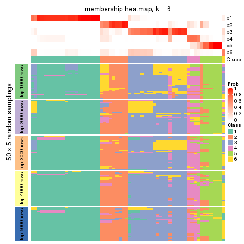
As soon as we have had the classes for columns, we can look for signatures which are significantly different between classes which can be candidate marks for certain classes. Following are the heatmaps for signatures.
Signature heatmaps where rows are scaled:
get_signatures(res, k = 2)
get_signatures(res, k = 3)
get_signatures(res, k = 4)
get_signatures(res, k = 5)
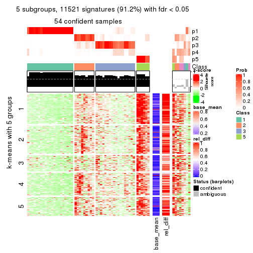
get_signatures(res, k = 6)
Signature heatmaps where rows are not scaled:
get_signatures(res, k = 2, scale_rows = FALSE)
get_signatures(res, k = 3, scale_rows = FALSE)
get_signatures(res, k = 4, scale_rows = FALSE)
#> Error in mat[ceiling(1:nr/h_ratio), ceiling(1:nc/w_ratio), drop = FALSE]: subscript out of bounds

get_signatures(res, k = 5, scale_rows = FALSE)
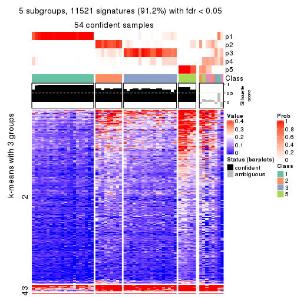
get_signatures(res, k = 6, scale_rows = FALSE)
#> Error in mat[ceiling(1:nr/h_ratio), ceiling(1:nc/w_ratio), drop = FALSE]: subscript out of bounds

Compare the overlap of signatures from different k:
compare_signatures(res)
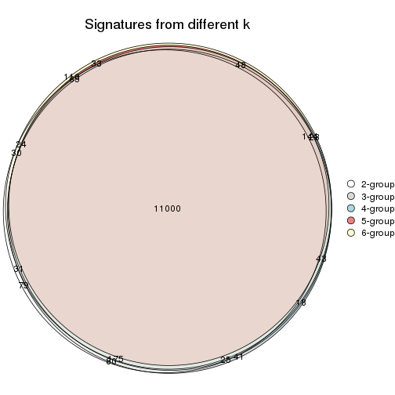
get_signature() returns a data frame invisibly. TO get the list of signatures, the function
call should be assigned to a variable explicitly. In following code, if plot argument is set
to FALSE, no heatmap is plotted while only the differential analysis is performed.
# code only for demonstration
tb = get_signature(res, k = ..., plot = FALSE)
An example of the output of tb is:
#> which_row fdr mean_1 mean_2 scaled_mean_1 scaled_mean_2 km
#> 1 38 0.042760348 8.373488 9.131774 -0.5533452 0.5164555 1
#> 2 40 0.018707592 7.106213 8.469186 -0.6173731 0.5762149 1
#> 3 55 0.019134737 10.221463 11.207825 -0.6159697 0.5749050 1
#> 4 59 0.006059896 5.921854 7.869574 -0.6899429 0.6439467 1
#> 5 60 0.018055526 8.928898 10.211722 -0.6204761 0.5791110 1
#> 6 98 0.009384629 15.714769 14.887706 0.6635654 -0.6193277 2
...
The columns in tb are:
which_row: row indices corresponding to the input matrix.fdr: FDR for the differential test. mean_x: The mean value in group x.scaled_mean_x: The mean value in group x after rows are scaled.km: Row groups if k-means clustering is applied to rows.UMAP plot which shows how samples are separated.
dimension_reduction(res, k = 2, method = "UMAP")
dimension_reduction(res, k = 3, method = "UMAP")
dimension_reduction(res, k = 4, method = "UMAP")
dimension_reduction(res, k = 5, method = "UMAP")
dimension_reduction(res, k = 6, method = "UMAP")
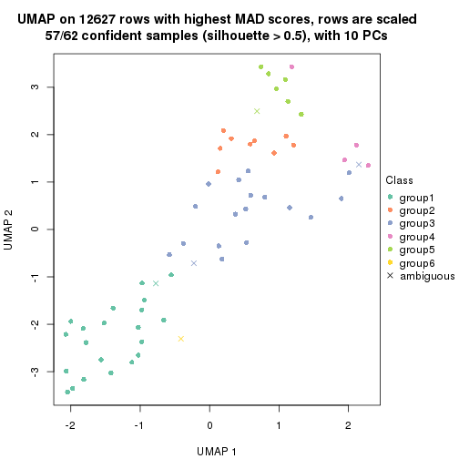
Following heatmap shows how subgroups are split when increasing k:
collect_classes(res)
If matrix rows can be associated to genes, consider to use GO_Enrichment(res,
...) to perform function enrichment for the signature genes.
The object with results only for a single top-value method and a single partition method can be extracted as:
res = res_list["MAD", "skmeans"]
# you can also extract it by
# res = res_list["MAD:skmeans"]
A summary of res and all the functions that can be applied to it:
res
#> A 'ConsensusPartition' object with k = 2, 3, 4, 5, 6.
#> On a matrix with 12627 rows and 62 columns.
#> Top rows (1000, 2000, 3000, 4000, 5000) are extracted by 'MAD' method.
#> Subgroups are detected by 'skmeans' method.
#> Performed in total 1250 partitions by row resampling.
#> Best k for subgroups seems to be 2.
#>
#> Following methods can be applied to this 'ConsensusPartition' object:
#> [1] "cola_report" "collect_classes" "collect_plots"
#> [4] "collect_stats" "colnames" "compare_signatures"
#> [7] "consensus_heatmap" "dimension_reduction" "functional_enrichment"
#> [10] "get_anno_col" "get_anno" "get_classes"
#> [13] "get_consensus" "get_matrix" "get_membership"
#> [16] "get_param" "get_signatures" "get_stats"
#> [19] "is_best_k" "is_stable_k" "membership_heatmap"
#> [22] "ncol" "nrow" "plot_ecdf"
#> [25] "rownames" "select_partition_number" "show"
#> [28] "suggest_best_k" "test_to_known_factors"
collect_plots() function collects all the plots made from res for all k (number of partitions)
into one single page to provide an easy and fast comparison between different k.
collect_plots(res)
The plots are:
k and the heatmap of
predicted classes for each k.k.k.k.All the plots in panels can be made by individual functions and they are plotted later in this section.
select_partition_number() produces several plots showing different
statistics for choosing “optimized” k. There are following statistics:
k;k, the area increased is defined as \(A_k - A_{k-1}\).The detailed explanations of these statistics can be found in the cola vignette.
Generally speaking, lower PAC score, higher mean silhouette score or higher
concordance corresponds to better partition. Rand index and Jaccard index
measure how similar the current partition is compared to partition with k-1.
If they are too similar, we won't accept k is better than k-1.
select_partition_number(res)
The numeric values for all these statistics can be obtained by get_stats().
get_stats(res)
#> k 1-PAC mean_silhouette concordance area_increased Rand Jaccard
#> 2 2 1.000 0.961 0.984 0.5059 0.497 0.497
#> 3 3 0.839 0.855 0.929 0.2170 0.865 0.734
#> 4 4 0.866 0.872 0.943 0.0858 0.935 0.834
#> 5 5 0.835 0.809 0.888 0.0422 0.987 0.961
#> 6 6 0.775 0.694 0.843 0.0371 0.985 0.955
suggest_best_k() suggests the best \(k\) based on these statistics. The rules are as follows:
NA.suggest_best_k(res)
#> [1] 2
Following shows the table of the partitions (You need to click the show/hide
code output link to see it). The membership matrix (columns with name p*)
is inferred by
clue::cl_consensus()
function with the SE method. Basically the value in the membership matrix
represents the probability to belong to a certain group. The finall class
label for an item is determined with the group with highest probability it
belongs to.
In get_classes() function, the entropy is calculated from the membership
matrix and the silhouette score is calculated from the consensus matrix.
cbind(get_classes(res, k = 2), get_membership(res, k = 2))
#> class entropy silhouette p1 p2
#> SRR372611 1 0.000 0.970 1.000 0.000
#> SRR372612 1 0.000 0.970 1.000 0.000
#> SRR372613 2 0.000 1.000 0.000 1.000
#> SRR372614 1 0.000 0.970 1.000 0.000
#> SRR372615 2 0.000 1.000 0.000 1.000
#> SRR372616 2 0.000 1.000 0.000 1.000
#> SRR372617 1 0.722 0.749 0.800 0.200
#> SRR372618 1 0.000 0.970 1.000 0.000
#> SRR372619 2 0.000 1.000 0.000 1.000
#> SRR372620 1 0.000 0.970 1.000 0.000
#> SRR372621 2 0.000 1.000 0.000 1.000
#> SRR372622 1 0.000 0.970 1.000 0.000
#> SRR372623 2 0.000 1.000 0.000 1.000
#> SRR372624 1 0.000 0.970 1.000 0.000
#> SRR372625 1 0.000 0.970 1.000 0.000
#> SRR372626 2 0.000 1.000 0.000 1.000
#> SRR372627 1 0.000 0.970 1.000 0.000
#> SRR372628 1 0.000 0.970 1.000 0.000
#> SRR372629 1 0.000 0.970 1.000 0.000
#> SRR372630 1 0.000 0.970 1.000 0.000
#> SRR372631 1 0.966 0.385 0.608 0.392
#> SRR372632 1 0.000 0.970 1.000 0.000
#> SRR372633 2 0.000 1.000 0.000 1.000
#> SRR372634 1 0.000 0.970 1.000 0.000
#> SRR372635 1 0.969 0.378 0.604 0.396
#> SRR372636 1 0.000 0.970 1.000 0.000
#> SRR372637 2 0.000 1.000 0.000 1.000
#> SRR372638 1 0.000 0.970 1.000 0.000
#> SRR372639 2 0.000 1.000 0.000 1.000
#> SRR372640 1 0.000 0.970 1.000 0.000
#> SRR372641 1 0.000 0.970 1.000 0.000
#> SRR372642 1 0.000 0.970 1.000 0.000
#> SRR372643 2 0.000 1.000 0.000 1.000
#> SRR372644 1 0.000 0.970 1.000 0.000
#> SRR372645 2 0.000 1.000 0.000 1.000
#> SRR372646 1 0.000 0.970 1.000 0.000
#> SRR372647 1 0.000 0.970 1.000 0.000
#> SRR372648 1 0.000 0.970 1.000 0.000
#> SRR372649 1 0.000 0.970 1.000 0.000
#> SRR372650 2 0.000 1.000 0.000 1.000
#> SRR372651 2 0.000 1.000 0.000 1.000
#> SRR372652 2 0.000 1.000 0.000 1.000
#> SRR372653 2 0.000 1.000 0.000 1.000
#> SRR372654 1 0.000 0.970 1.000 0.000
#> SRR372655 2 0.000 1.000 0.000 1.000
#> SRR372656 1 0.000 0.970 1.000 0.000
#> SRR372657 1 0.000 0.970 1.000 0.000
#> SRR372658 2 0.000 1.000 0.000 1.000
#> SRR372659 2 0.000 1.000 0.000 1.000
#> SRR372660 2 0.000 1.000 0.000 1.000
#> SRR372661 2 0.000 1.000 0.000 1.000
#> SRR372662 2 0.000 1.000 0.000 1.000
#> SRR372663 2 0.000 1.000 0.000 1.000
#> SRR372664 1 0.000 0.970 1.000 0.000
#> SRR372665 2 0.000 1.000 0.000 1.000
#> SRR372666 2 0.000 1.000 0.000 1.000
#> SRR372667 2 0.000 1.000 0.000 1.000
#> SRR372668 1 0.000 0.970 1.000 0.000
#> SRR372669 1 0.000 0.970 1.000 0.000
#> SRR372670 1 0.000 0.970 1.000 0.000
#> SRR372671 2 0.000 1.000 0.000 1.000
#> SRR372672 2 0.000 1.000 0.000 1.000
cbind(get_classes(res, k = 3), get_membership(res, k = 3))
#> class entropy silhouette p1 p2 p3
#> SRR372611 1 0.0000 0.985 1.000 0.000 0.000
#> SRR372612 1 0.0000 0.985 1.000 0.000 0.000
#> SRR372613 3 0.5291 0.693 0.000 0.268 0.732
#> SRR372614 1 0.3686 0.827 0.860 0.140 0.000
#> SRR372615 3 0.0000 0.891 0.000 0.000 1.000
#> SRR372616 2 0.5678 0.314 0.000 0.684 0.316
#> SRR372617 2 0.6001 0.683 0.144 0.784 0.072
#> SRR372618 1 0.0000 0.985 1.000 0.000 0.000
#> SRR372619 3 0.0000 0.891 0.000 0.000 1.000
#> SRR372620 1 0.0000 0.985 1.000 0.000 0.000
#> SRR372621 3 0.0000 0.891 0.000 0.000 1.000
#> SRR372622 1 0.2356 0.912 0.928 0.072 0.000
#> SRR372623 3 0.0000 0.891 0.000 0.000 1.000
#> SRR372624 1 0.0000 0.985 1.000 0.000 0.000
#> SRR372625 1 0.0000 0.985 1.000 0.000 0.000
#> SRR372626 3 0.0000 0.891 0.000 0.000 1.000
#> SRR372627 1 0.0000 0.985 1.000 0.000 0.000
#> SRR372628 1 0.0000 0.985 1.000 0.000 0.000
#> SRR372629 2 0.6274 0.155 0.456 0.544 0.000
#> SRR372630 1 0.0000 0.985 1.000 0.000 0.000
#> SRR372631 2 0.3091 0.707 0.016 0.912 0.072
#> SRR372632 1 0.0000 0.985 1.000 0.000 0.000
#> SRR372633 2 0.6267 0.342 0.000 0.548 0.452
#> SRR372634 1 0.0000 0.985 1.000 0.000 0.000
#> SRR372635 2 0.6588 0.670 0.060 0.732 0.208
#> SRR372636 1 0.0000 0.985 1.000 0.000 0.000
#> SRR372637 2 0.5465 0.609 0.000 0.712 0.288
#> SRR372638 1 0.0000 0.985 1.000 0.000 0.000
#> SRR372639 3 0.0000 0.891 0.000 0.000 1.000
#> SRR372640 1 0.0000 0.985 1.000 0.000 0.000
#> SRR372641 1 0.0000 0.985 1.000 0.000 0.000
#> SRR372642 1 0.0000 0.985 1.000 0.000 0.000
#> SRR372643 3 0.2625 0.811 0.000 0.084 0.916
#> SRR372644 1 0.0000 0.985 1.000 0.000 0.000
#> SRR372645 3 0.3941 0.706 0.000 0.156 0.844
#> SRR372646 1 0.0000 0.985 1.000 0.000 0.000
#> SRR372647 1 0.0000 0.985 1.000 0.000 0.000
#> SRR372648 1 0.0000 0.985 1.000 0.000 0.000
#> SRR372649 1 0.0000 0.985 1.000 0.000 0.000
#> SRR372650 3 0.5254 0.697 0.000 0.264 0.736
#> SRR372651 3 0.0000 0.891 0.000 0.000 1.000
#> SRR372652 3 0.5291 0.693 0.000 0.268 0.732
#> SRR372653 3 0.0000 0.891 0.000 0.000 1.000
#> SRR372654 1 0.0000 0.985 1.000 0.000 0.000
#> SRR372655 3 0.0000 0.891 0.000 0.000 1.000
#> SRR372656 1 0.0000 0.985 1.000 0.000 0.000
#> SRR372657 1 0.0000 0.985 1.000 0.000 0.000
#> SRR372658 3 0.0000 0.891 0.000 0.000 1.000
#> SRR372659 3 0.0000 0.891 0.000 0.000 1.000
#> SRR372660 3 0.5291 0.693 0.000 0.268 0.732
#> SRR372661 3 0.0000 0.891 0.000 0.000 1.000
#> SRR372662 2 0.1860 0.673 0.000 0.948 0.052
#> SRR372663 3 0.5291 0.693 0.000 0.268 0.732
#> SRR372664 1 0.0000 0.985 1.000 0.000 0.000
#> SRR372665 3 0.0000 0.891 0.000 0.000 1.000
#> SRR372666 3 0.5291 0.693 0.000 0.268 0.732
#> SRR372667 3 0.0000 0.891 0.000 0.000 1.000
#> SRR372668 1 0.0000 0.985 1.000 0.000 0.000
#> SRR372669 1 0.4235 0.776 0.824 0.176 0.000
#> SRR372670 1 0.0000 0.985 1.000 0.000 0.000
#> SRR372671 3 0.0000 0.891 0.000 0.000 1.000
#> SRR372672 2 0.0892 0.681 0.000 0.980 0.020
cbind(get_classes(res, k = 4), get_membership(res, k = 4))
#> class entropy silhouette p1 p2 p3 p4
#> SRR372611 1 0.0188 0.977 0.996 0.000 0.000 0.004
#> SRR372612 1 0.0000 0.980 1.000 0.000 0.000 0.000
#> SRR372613 4 0.3942 0.806 0.000 0.236 0.000 0.764
#> SRR372614 1 0.4053 0.719 0.768 0.000 0.004 0.228
#> SRR372615 2 0.0000 0.913 0.000 1.000 0.000 0.000
#> SRR372616 4 0.0000 0.755 0.000 0.000 0.000 1.000
#> SRR372617 3 0.1452 0.868 0.008 0.000 0.956 0.036
#> SRR372618 1 0.0000 0.980 1.000 0.000 0.000 0.000
#> SRR372619 2 0.0000 0.913 0.000 1.000 0.000 0.000
#> SRR372620 1 0.0000 0.980 1.000 0.000 0.000 0.000
#> SRR372621 2 0.0000 0.913 0.000 1.000 0.000 0.000
#> SRR372622 1 0.3144 0.873 0.884 0.000 0.044 0.072
#> SRR372623 2 0.0921 0.892 0.000 0.972 0.028 0.000
#> SRR372624 1 0.0000 0.980 1.000 0.000 0.000 0.000
#> SRR372625 1 0.0000 0.980 1.000 0.000 0.000 0.000
#> SRR372626 2 0.0000 0.913 0.000 1.000 0.000 0.000
#> SRR372627 1 0.0000 0.980 1.000 0.000 0.000 0.000
#> SRR372628 1 0.0000 0.980 1.000 0.000 0.000 0.000
#> SRR372629 3 0.3597 0.719 0.148 0.000 0.836 0.016
#> SRR372630 1 0.0000 0.980 1.000 0.000 0.000 0.000
#> SRR372631 3 0.1211 0.868 0.000 0.000 0.960 0.040
#> SRR372632 1 0.0000 0.980 1.000 0.000 0.000 0.000
#> SRR372633 3 0.3726 0.681 0.000 0.212 0.788 0.000
#> SRR372634 1 0.0000 0.980 1.000 0.000 0.000 0.000
#> SRR372635 3 0.0188 0.871 0.000 0.000 0.996 0.004
#> SRR372636 1 0.0000 0.980 1.000 0.000 0.000 0.000
#> SRR372637 3 0.0921 0.867 0.000 0.028 0.972 0.000
#> SRR372638 1 0.0000 0.980 1.000 0.000 0.000 0.000
#> SRR372639 2 0.0188 0.911 0.000 0.996 0.004 0.000
#> SRR372640 1 0.0000 0.980 1.000 0.000 0.000 0.000
#> SRR372641 1 0.0000 0.980 1.000 0.000 0.000 0.000
#> SRR372642 1 0.0000 0.980 1.000 0.000 0.000 0.000
#> SRR372643 2 0.4220 0.641 0.000 0.748 0.248 0.004
#> SRR372644 1 0.0000 0.980 1.000 0.000 0.000 0.000
#> SRR372645 2 0.4933 0.194 0.000 0.568 0.432 0.000
#> SRR372646 1 0.0000 0.980 1.000 0.000 0.000 0.000
#> SRR372647 1 0.0000 0.980 1.000 0.000 0.000 0.000
#> SRR372648 1 0.0000 0.980 1.000 0.000 0.000 0.000
#> SRR372649 1 0.0000 0.980 1.000 0.000 0.000 0.000
#> SRR372650 2 0.4989 -0.239 0.000 0.528 0.000 0.472
#> SRR372651 2 0.0000 0.913 0.000 1.000 0.000 0.000
#> SRR372652 4 0.3356 0.829 0.000 0.176 0.000 0.824
#> SRR372653 2 0.0336 0.909 0.000 0.992 0.000 0.008
#> SRR372654 1 0.0000 0.980 1.000 0.000 0.000 0.000
#> SRR372655 2 0.0000 0.913 0.000 1.000 0.000 0.000
#> SRR372656 1 0.0000 0.980 1.000 0.000 0.000 0.000
#> SRR372657 1 0.0000 0.980 1.000 0.000 0.000 0.000
#> SRR372658 2 0.0000 0.913 0.000 1.000 0.000 0.000
#> SRR372659 2 0.0524 0.909 0.000 0.988 0.008 0.004
#> SRR372660 4 0.4730 0.613 0.000 0.364 0.000 0.636
#> SRR372661 2 0.0657 0.906 0.000 0.984 0.012 0.004
#> SRR372662 4 0.0188 0.753 0.000 0.000 0.004 0.996
#> SRR372663 4 0.3801 0.821 0.000 0.220 0.000 0.780
#> SRR372664 1 0.0000 0.980 1.000 0.000 0.000 0.000
#> SRR372665 2 0.0188 0.912 0.000 0.996 0.000 0.004
#> SRR372666 4 0.3610 0.828 0.000 0.200 0.000 0.800
#> SRR372667 2 0.0188 0.912 0.000 0.996 0.000 0.004
#> SRR372668 1 0.0000 0.980 1.000 0.000 0.000 0.000
#> SRR372669 1 0.4875 0.723 0.772 0.000 0.160 0.068
#> SRR372670 1 0.0000 0.980 1.000 0.000 0.000 0.000
#> SRR372671 2 0.0188 0.912 0.000 0.996 0.000 0.004
#> SRR372672 4 0.0000 0.755 0.000 0.000 0.000 1.000
cbind(get_classes(res, k = 5), get_membership(res, k = 5))
#> class entropy silhouette p1 p2 p3 p4 p5
#> SRR372611 1 0.3622 0.7722 0.804 0.000 0.016 0.008 0.172
#> SRR372612 1 0.0000 0.9472 1.000 0.000 0.000 0.000 0.000
#> SRR372613 4 0.3086 0.7619 0.000 0.180 0.000 0.816 0.004
#> SRR372614 1 0.5682 0.5225 0.640 0.000 0.016 0.088 0.256
#> SRR372615 2 0.1041 0.8818 0.000 0.964 0.000 0.004 0.032
#> SRR372616 4 0.1908 0.6809 0.000 0.000 0.000 0.908 0.092
#> SRR372617 3 0.4750 0.7151 0.016 0.004 0.660 0.008 0.312
#> SRR372618 1 0.0162 0.9457 0.996 0.000 0.000 0.000 0.004
#> SRR372619 2 0.1732 0.8626 0.000 0.920 0.000 0.000 0.080
#> SRR372620 1 0.0000 0.9472 1.000 0.000 0.000 0.000 0.000
#> SRR372621 2 0.1121 0.8787 0.000 0.956 0.000 0.000 0.044
#> SRR372622 1 0.5721 0.5499 0.668 0.000 0.188 0.020 0.124
#> SRR372623 2 0.3282 0.7733 0.000 0.804 0.008 0.000 0.188
#> SRR372624 1 0.0000 0.9472 1.000 0.000 0.000 0.000 0.000
#> SRR372625 1 0.0000 0.9472 1.000 0.000 0.000 0.000 0.000
#> SRR372626 2 0.1768 0.8662 0.000 0.924 0.000 0.004 0.072
#> SRR372627 1 0.0000 0.9472 1.000 0.000 0.000 0.000 0.000
#> SRR372628 1 0.0000 0.9472 1.000 0.000 0.000 0.000 0.000
#> SRR372629 3 0.4879 0.5869 0.124 0.000 0.720 0.000 0.156
#> SRR372630 1 0.0000 0.9472 1.000 0.000 0.000 0.000 0.000
#> SRR372631 3 0.1430 0.7154 0.000 0.000 0.944 0.004 0.052
#> SRR372632 1 0.0000 0.9472 1.000 0.000 0.000 0.000 0.000
#> SRR372633 3 0.6336 0.6010 0.000 0.172 0.488 0.000 0.340
#> SRR372634 1 0.0000 0.9472 1.000 0.000 0.000 0.000 0.000
#> SRR372635 3 0.2966 0.7414 0.000 0.000 0.816 0.000 0.184
#> SRR372636 1 0.0162 0.9457 0.996 0.000 0.000 0.000 0.004
#> SRR372637 3 0.5276 0.6972 0.000 0.048 0.516 0.000 0.436
#> SRR372638 1 0.0000 0.9472 1.000 0.000 0.000 0.000 0.000
#> SRR372639 2 0.2017 0.8668 0.000 0.912 0.000 0.008 0.080
#> SRR372640 1 0.0000 0.9472 1.000 0.000 0.000 0.000 0.000
#> SRR372641 1 0.1018 0.9276 0.968 0.000 0.016 0.000 0.016
#> SRR372642 1 0.0671 0.9360 0.980 0.000 0.004 0.000 0.016
#> SRR372643 2 0.5378 0.5565 0.000 0.660 0.256 0.012 0.072
#> SRR372644 1 0.0000 0.9472 1.000 0.000 0.000 0.000 0.000
#> SRR372645 2 0.6881 0.0075 0.000 0.448 0.188 0.016 0.348
#> SRR372646 1 0.0000 0.9472 1.000 0.000 0.000 0.000 0.000
#> SRR372647 1 0.0510 0.9388 0.984 0.000 0.000 0.000 0.016
#> SRR372648 1 0.0000 0.9472 1.000 0.000 0.000 0.000 0.000
#> SRR372649 1 0.0162 0.9454 0.996 0.000 0.000 0.000 0.004
#> SRR372650 4 0.4268 0.3585 0.000 0.444 0.000 0.556 0.000
#> SRR372651 2 0.0963 0.8806 0.000 0.964 0.000 0.036 0.000
#> SRR372652 4 0.2411 0.7724 0.000 0.108 0.000 0.884 0.008
#> SRR372653 2 0.1544 0.8629 0.000 0.932 0.000 0.068 0.000
#> SRR372654 1 0.1282 0.9165 0.952 0.000 0.000 0.004 0.044
#> SRR372655 2 0.0510 0.8818 0.000 0.984 0.000 0.000 0.016
#> SRR372656 1 0.0162 0.9457 0.996 0.000 0.000 0.000 0.004
#> SRR372657 1 0.0000 0.9472 1.000 0.000 0.000 0.000 0.000
#> SRR372658 2 0.0963 0.8806 0.000 0.964 0.000 0.036 0.000
#> SRR372659 2 0.2899 0.8605 0.000 0.888 0.024 0.056 0.032
#> SRR372660 4 0.3928 0.6629 0.000 0.296 0.000 0.700 0.004
#> SRR372661 2 0.1725 0.8700 0.000 0.936 0.020 0.000 0.044
#> SRR372662 4 0.3318 0.6288 0.000 0.000 0.012 0.808 0.180
#> SRR372663 4 0.2648 0.7729 0.000 0.152 0.000 0.848 0.000
#> SRR372664 1 0.0000 0.9472 1.000 0.000 0.000 0.000 0.000
#> SRR372665 2 0.0963 0.8806 0.000 0.964 0.000 0.036 0.000
#> SRR372666 4 0.2280 0.7757 0.000 0.120 0.000 0.880 0.000
#> SRR372667 2 0.0963 0.8806 0.000 0.964 0.000 0.036 0.000
#> SRR372668 1 0.0000 0.9472 1.000 0.000 0.000 0.000 0.000
#> SRR372669 1 0.6952 0.0676 0.468 0.000 0.200 0.020 0.312
#> SRR372670 1 0.0162 0.9456 0.996 0.000 0.000 0.000 0.004
#> SRR372671 2 0.0963 0.8806 0.000 0.964 0.000 0.036 0.000
#> SRR372672 4 0.3132 0.6360 0.000 0.000 0.008 0.820 0.172
cbind(get_classes(res, k = 6), get_membership(res, k = 6))
#> class entropy silhouette p1 p2 p3 p4 p5 p6
#> SRR372611 1 0.5396 0.5699 0.652 0.000 0.040 0.004 0.080 NA
#> SRR372612 1 0.0405 0.9080 0.988 0.000 0.000 0.000 0.004 NA
#> SRR372613 4 0.2743 0.7136 0.000 0.164 0.000 0.828 0.000 NA
#> SRR372614 1 0.6005 0.2919 0.516 0.000 0.020 0.060 0.036 NA
#> SRR372615 2 0.2325 0.8247 0.000 0.900 0.048 0.000 0.008 NA
#> SRR372616 4 0.2416 0.6327 0.000 0.000 0.000 0.844 0.000 NA
#> SRR372617 3 0.5996 -0.2704 0.000 0.000 0.444 0.012 0.384 NA
#> SRR372618 1 0.0972 0.9015 0.964 0.000 0.000 0.000 0.008 NA
#> SRR372619 2 0.2669 0.7916 0.000 0.864 0.024 0.004 0.000 NA
#> SRR372620 1 0.0000 0.9087 1.000 0.000 0.000 0.000 0.000 NA
#> SRR372621 2 0.2009 0.8288 0.000 0.908 0.024 0.000 0.000 NA
#> SRR372622 1 0.6821 0.0324 0.456 0.000 0.044 0.008 0.268 NA
#> SRR372623 2 0.4905 0.5624 0.000 0.688 0.160 0.000 0.012 NA
#> SRR372624 1 0.0000 0.9087 1.000 0.000 0.000 0.000 0.000 NA
#> SRR372625 1 0.0000 0.9087 1.000 0.000 0.000 0.000 0.000 NA
#> SRR372626 2 0.1951 0.8222 0.000 0.908 0.016 0.000 0.000 NA
#> SRR372627 1 0.0000 0.9087 1.000 0.000 0.000 0.000 0.000 NA
#> SRR372628 1 0.0000 0.9087 1.000 0.000 0.000 0.000 0.000 NA
#> SRR372629 5 0.3889 0.4458 0.044 0.000 0.052 0.000 0.804 NA
#> SRR372630 1 0.0000 0.9087 1.000 0.000 0.000 0.000 0.000 NA
#> SRR372631 5 0.3204 0.5182 0.000 0.000 0.144 0.004 0.820 NA
#> SRR372632 1 0.0000 0.9087 1.000 0.000 0.000 0.000 0.000 NA
#> SRR372633 3 0.6228 0.1116 0.000 0.132 0.548 0.000 0.260 NA
#> SRR372634 1 0.0000 0.9087 1.000 0.000 0.000 0.000 0.000 NA
#> SRR372635 5 0.4719 0.2720 0.000 0.004 0.460 0.000 0.500 NA
#> SRR372636 1 0.0717 0.9055 0.976 0.000 0.000 0.000 0.008 NA
#> SRR372637 3 0.3058 0.0683 0.000 0.024 0.848 0.000 0.108 NA
#> SRR372638 1 0.0146 0.9086 0.996 0.000 0.000 0.000 0.000 NA
#> SRR372639 2 0.3176 0.7815 0.000 0.840 0.100 0.008 0.000 NA
#> SRR372640 1 0.0000 0.9087 1.000 0.000 0.000 0.000 0.000 NA
#> SRR372641 1 0.2825 0.8211 0.868 0.000 0.008 0.000 0.064 NA
#> SRR372642 1 0.2766 0.8229 0.868 0.000 0.012 0.000 0.028 NA
#> SRR372643 2 0.6773 0.2445 0.000 0.532 0.140 0.024 0.244 NA
#> SRR372644 1 0.0405 0.9080 0.988 0.000 0.000 0.000 0.004 NA
#> SRR372645 3 0.6778 0.1964 0.000 0.364 0.444 0.012 0.096 NA
#> SRR372646 1 0.0405 0.9080 0.988 0.000 0.000 0.000 0.004 NA
#> SRR372647 1 0.1196 0.8956 0.952 0.000 0.000 0.000 0.008 NA
#> SRR372648 1 0.0508 0.9073 0.984 0.000 0.000 0.000 0.004 NA
#> SRR372649 1 0.1148 0.8907 0.960 0.000 0.004 0.000 0.016 NA
#> SRR372650 4 0.3986 0.2008 0.000 0.464 0.004 0.532 0.000 NA
#> SRR372651 2 0.1007 0.8495 0.000 0.956 0.000 0.044 0.000 NA
#> SRR372652 4 0.3324 0.7008 0.000 0.056 0.024 0.848 0.004 NA
#> SRR372653 2 0.2320 0.7924 0.000 0.864 0.004 0.132 0.000 NA
#> SRR372654 1 0.3262 0.7922 0.820 0.000 0.020 0.004 0.008 NA
#> SRR372655 2 0.0405 0.8455 0.000 0.988 0.008 0.000 0.000 NA
#> SRR372656 1 0.0972 0.9015 0.964 0.000 0.000 0.000 0.008 NA
#> SRR372657 1 0.0508 0.9073 0.984 0.000 0.000 0.000 0.004 NA
#> SRR372658 2 0.1075 0.8491 0.000 0.952 0.000 0.048 0.000 NA
#> SRR372659 2 0.3792 0.7917 0.000 0.828 0.068 0.056 0.024 NA
#> SRR372660 4 0.3476 0.6277 0.000 0.260 0.004 0.732 0.000 NA
#> SRR372661 2 0.3901 0.7726 0.000 0.820 0.064 0.012 0.056 NA
#> SRR372662 4 0.4594 0.5341 0.000 0.000 0.016 0.692 0.056 NA
#> SRR372663 4 0.2135 0.7279 0.000 0.128 0.000 0.872 0.000 NA
#> SRR372664 1 0.0363 0.9082 0.988 0.000 0.000 0.000 0.000 NA
#> SRR372665 2 0.1141 0.8481 0.000 0.948 0.000 0.052 0.000 NA
#> SRR372666 4 0.2006 0.7289 0.000 0.104 0.000 0.892 0.000 NA
#> SRR372667 2 0.1075 0.8491 0.000 0.952 0.000 0.048 0.000 NA
#> SRR372668 1 0.0000 0.9087 1.000 0.000 0.000 0.000 0.000 NA
#> SRR372669 1 0.7550 -0.1994 0.364 0.000 0.088 0.020 0.212 NA
#> SRR372670 1 0.0891 0.9030 0.968 0.000 0.000 0.000 0.008 NA
#> SRR372671 2 0.1141 0.8483 0.000 0.948 0.000 0.052 0.000 NA
#> SRR372672 4 0.4319 0.5351 0.000 0.000 0.004 0.696 0.052 NA
Heatmaps for the consensus matrix. It visualizes the probability of two samples to be in a same group.
consensus_heatmap(res, k = 2)
consensus_heatmap(res, k = 3)
consensus_heatmap(res, k = 4)
consensus_heatmap(res, k = 5)
consensus_heatmap(res, k = 6)
Heatmaps for the membership of samples in all partitions to see how consistent they are:
membership_heatmap(res, k = 2)
membership_heatmap(res, k = 3)
membership_heatmap(res, k = 4)
membership_heatmap(res, k = 5)
membership_heatmap(res, k = 6)
As soon as we have had the classes for columns, we can look for signatures which are significantly different between classes which can be candidate marks for certain classes. Following are the heatmaps for signatures.
Signature heatmaps where rows are scaled:
get_signatures(res, k = 2)
get_signatures(res, k = 3)

get_signatures(res, k = 4)

get_signatures(res, k = 5)
get_signatures(res, k = 6)
Signature heatmaps where rows are not scaled:
get_signatures(res, k = 2, scale_rows = FALSE)
get_signatures(res, k = 3, scale_rows = FALSE)
get_signatures(res, k = 4, scale_rows = FALSE)
#> Error in mat[ceiling(1:nr/h_ratio), ceiling(1:nc/w_ratio), drop = FALSE]: subscript out of bounds
get_signatures(res, k = 5, scale_rows = FALSE)
get_signatures(res, k = 6, scale_rows = FALSE)
#> Error in mat[ceiling(1:nr/h_ratio), ceiling(1:nc/w_ratio), drop = FALSE]: subscript out of bounds
Compare the overlap of signatures from different k:
compare_signatures(res)
get_signature() returns a data frame invisibly. TO get the list of signatures, the function
call should be assigned to a variable explicitly. In following code, if plot argument is set
to FALSE, no heatmap is plotted while only the differential analysis is performed.
# code only for demonstration
tb = get_signature(res, k = ..., plot = FALSE)
An example of the output of tb is:
#> which_row fdr mean_1 mean_2 scaled_mean_1 scaled_mean_2 km
#> 1 38 0.042760348 8.373488 9.131774 -0.5533452 0.5164555 1
#> 2 40 0.018707592 7.106213 8.469186 -0.6173731 0.5762149 1
#> 3 55 0.019134737 10.221463 11.207825 -0.6159697 0.5749050 1
#> 4 59 0.006059896 5.921854 7.869574 -0.6899429 0.6439467 1
#> 5 60 0.018055526 8.928898 10.211722 -0.6204761 0.5791110 1
#> 6 98 0.009384629 15.714769 14.887706 0.6635654 -0.6193277 2
...
The columns in tb are:
which_row: row indices corresponding to the input matrix.fdr: FDR for the differential test. mean_x: The mean value in group x.scaled_mean_x: The mean value in group x after rows are scaled.km: Row groups if k-means clustering is applied to rows.UMAP plot which shows how samples are separated.
dimension_reduction(res, k = 2, method = "UMAP")
dimension_reduction(res, k = 3, method = "UMAP")
dimension_reduction(res, k = 4, method = "UMAP")
dimension_reduction(res, k = 5, method = "UMAP")
dimension_reduction(res, k = 6, method = "UMAP")

Following heatmap shows how subgroups are split when increasing k:
collect_classes(res)

If matrix rows can be associated to genes, consider to use GO_Enrichment(res,
...) to perform function enrichment for the signature genes.
The object with results only for a single top-value method and a single partition method can be extracted as:
res = res_list["MAD", "pam"]
# you can also extract it by
# res = res_list["MAD:pam"]
A summary of res and all the functions that can be applied to it:
res
#> A 'ConsensusPartition' object with k = 2, 3, 4, 5, 6.
#> On a matrix with 12627 rows and 62 columns.
#> Top rows (1000, 2000, 3000, 4000, 5000) are extracted by 'MAD' method.
#> Subgroups are detected by 'pam' method.
#> Performed in total 1250 partitions by row resampling.
#> Best k for subgroups seems to be 5.
#>
#> Following methods can be applied to this 'ConsensusPartition' object:
#> [1] "cola_report" "collect_classes" "collect_plots"
#> [4] "collect_stats" "colnames" "compare_signatures"
#> [7] "consensus_heatmap" "dimension_reduction" "functional_enrichment"
#> [10] "get_anno_col" "get_anno" "get_classes"
#> [13] "get_consensus" "get_matrix" "get_membership"
#> [16] "get_param" "get_signatures" "get_stats"
#> [19] "is_best_k" "is_stable_k" "membership_heatmap"
#> [22] "ncol" "nrow" "plot_ecdf"
#> [25] "rownames" "select_partition_number" "show"
#> [28] "suggest_best_k" "test_to_known_factors"
collect_plots() function collects all the plots made from res for all k (number of partitions)
into one single page to provide an easy and fast comparison between different k.
collect_plots(res)
The plots are:
k and the heatmap of
predicted classes for each k.k.k.k.All the plots in panels can be made by individual functions and they are plotted later in this section.
select_partition_number() produces several plots showing different
statistics for choosing “optimized” k. There are following statistics:
k;k, the area increased is defined as \(A_k - A_{k-1}\).The detailed explanations of these statistics can be found in the cola vignette.
Generally speaking, lower PAC score, higher mean silhouette score or higher
concordance corresponds to better partition. Rand index and Jaccard index
measure how similar the current partition is compared to partition with k-1.
If they are too similar, we won't accept k is better than k-1.
select_partition_number(res)
The numeric values for all these statistics can be obtained by get_stats().
get_stats(res)
#> k 1-PAC mean_silhouette concordance area_increased Rand Jaccard
#> 2 2 1.000 0.967 0.985 0.43854 0.556 0.556
#> 3 3 0.897 0.858 0.950 0.43920 0.643 0.442
#> 4 4 0.862 0.843 0.931 0.13689 0.791 0.508
#> 5 5 0.965 0.929 0.969 0.06045 0.941 0.794
#> 6 6 0.929 0.869 0.951 0.00538 0.996 0.985
suggest_best_k() suggests the best \(k\) based on these statistics. The rules are as follows:
NA.suggest_best_k(res)
#> [1] 5
#> attr(,"optional")
#> [1] 2
There is also optional best \(k\) = 2 that is worth to check.
Following shows the table of the partitions (You need to click the show/hide
code output link to see it). The membership matrix (columns with name p*)
is inferred by
clue::cl_consensus()
function with the SE method. Basically the value in the membership matrix
represents the probability to belong to a certain group. The finall class
label for an item is determined with the group with highest probability it
belongs to.
In get_classes() function, the entropy is calculated from the membership
matrix and the silhouette score is calculated from the consensus matrix.
cbind(get_classes(res, k = 2), get_membership(res, k = 2))
#> class entropy silhouette p1 p2
#> SRR372611 1 0.0000 0.994 1.000 0.000
#> SRR372612 1 0.0000 0.994 1.000 0.000
#> SRR372613 2 0.0000 0.962 0.000 1.000
#> SRR372614 1 0.0000 0.994 1.000 0.000
#> SRR372615 2 0.0000 0.962 0.000 1.000
#> SRR372616 1 0.0000 0.994 1.000 0.000
#> SRR372617 1 0.0000 0.994 1.000 0.000
#> SRR372618 1 0.0000 0.994 1.000 0.000
#> SRR372619 2 0.0000 0.962 0.000 1.000
#> SRR372620 1 0.0000 0.994 1.000 0.000
#> SRR372621 2 0.0000 0.962 0.000 1.000
#> SRR372622 1 0.0000 0.994 1.000 0.000
#> SRR372623 1 0.7376 0.726 0.792 0.208
#> SRR372624 1 0.0000 0.994 1.000 0.000
#> SRR372625 1 0.0000 0.994 1.000 0.000
#> SRR372626 2 0.0000 0.962 0.000 1.000
#> SRR372627 1 0.0000 0.994 1.000 0.000
#> SRR372628 1 0.0000 0.994 1.000 0.000
#> SRR372629 1 0.0000 0.994 1.000 0.000
#> SRR372630 1 0.0000 0.994 1.000 0.000
#> SRR372631 1 0.0376 0.991 0.996 0.004
#> SRR372632 1 0.0000 0.994 1.000 0.000
#> SRR372633 1 0.0376 0.991 0.996 0.004
#> SRR372634 1 0.0000 0.994 1.000 0.000
#> SRR372635 1 0.0000 0.994 1.000 0.000
#> SRR372636 1 0.0000 0.994 1.000 0.000
#> SRR372637 1 0.0376 0.991 0.996 0.004
#> SRR372638 1 0.0000 0.994 1.000 0.000
#> SRR372639 2 0.8327 0.660 0.264 0.736
#> SRR372640 1 0.0000 0.994 1.000 0.000
#> SRR372641 1 0.0000 0.994 1.000 0.000
#> SRR372642 1 0.0000 0.994 1.000 0.000
#> SRR372643 2 0.5842 0.832 0.140 0.860
#> SRR372644 1 0.0000 0.994 1.000 0.000
#> SRR372645 1 0.0376 0.991 0.996 0.004
#> SRR372646 1 0.0000 0.994 1.000 0.000
#> SRR372647 1 0.0000 0.994 1.000 0.000
#> SRR372648 1 0.0000 0.994 1.000 0.000
#> SRR372649 1 0.0000 0.994 1.000 0.000
#> SRR372650 2 0.0000 0.962 0.000 1.000
#> SRR372651 2 0.0000 0.962 0.000 1.000
#> SRR372652 1 0.0000 0.994 1.000 0.000
#> SRR372653 2 0.0000 0.962 0.000 1.000
#> SRR372654 1 0.0000 0.994 1.000 0.000
#> SRR372655 2 0.0000 0.962 0.000 1.000
#> SRR372656 1 0.0000 0.994 1.000 0.000
#> SRR372657 1 0.0000 0.994 1.000 0.000
#> SRR372658 2 0.0000 0.962 0.000 1.000
#> SRR372659 2 0.0000 0.962 0.000 1.000
#> SRR372660 2 0.0000 0.962 0.000 1.000
#> SRR372661 2 0.0672 0.957 0.008 0.992
#> SRR372662 1 0.0376 0.991 0.996 0.004
#> SRR372663 2 0.0000 0.962 0.000 1.000
#> SRR372664 1 0.0000 0.994 1.000 0.000
#> SRR372665 2 0.0000 0.962 0.000 1.000
#> SRR372666 2 0.8661 0.619 0.288 0.712
#> SRR372667 2 0.0000 0.962 0.000 1.000
#> SRR372668 1 0.0000 0.994 1.000 0.000
#> SRR372669 1 0.0000 0.994 1.000 0.000
#> SRR372670 1 0.0000 0.994 1.000 0.000
#> SRR372671 2 0.0000 0.962 0.000 1.000
#> SRR372672 1 0.0000 0.994 1.000 0.000
cbind(get_classes(res, k = 3), get_membership(res, k = 3))
#> class entropy silhouette p1 p2 p3
#> SRR372611 1 0.3267 0.828 0.884 0.116 0.000
#> SRR372612 1 0.0000 0.938 1.000 0.000 0.000
#> SRR372613 3 0.2261 0.889 0.000 0.068 0.932
#> SRR372614 2 0.5968 0.361 0.364 0.636 0.000
#> SRR372615 2 0.0424 0.929 0.000 0.992 0.008
#> SRR372616 2 0.0000 0.934 0.000 1.000 0.000
#> SRR372617 2 0.0000 0.934 0.000 1.000 0.000
#> SRR372618 1 0.0592 0.928 0.988 0.012 0.000
#> SRR372619 2 0.6302 -0.058 0.000 0.520 0.480
#> SRR372620 1 0.0000 0.938 1.000 0.000 0.000
#> SRR372621 2 0.0000 0.934 0.000 1.000 0.000
#> SRR372622 2 0.0000 0.934 0.000 1.000 0.000
#> SRR372623 2 0.0000 0.934 0.000 1.000 0.000
#> SRR372624 1 0.0000 0.938 1.000 0.000 0.000
#> SRR372625 1 0.0000 0.938 1.000 0.000 0.000
#> SRR372626 2 0.1289 0.907 0.000 0.968 0.032
#> SRR372627 1 0.0000 0.938 1.000 0.000 0.000
#> SRR372628 1 0.0000 0.938 1.000 0.000 0.000
#> SRR372629 2 0.0000 0.934 0.000 1.000 0.000
#> SRR372630 1 0.0000 0.938 1.000 0.000 0.000
#> SRR372631 2 0.0000 0.934 0.000 1.000 0.000
#> SRR372632 1 0.0000 0.938 1.000 0.000 0.000
#> SRR372633 2 0.0000 0.934 0.000 1.000 0.000
#> SRR372634 1 0.0000 0.938 1.000 0.000 0.000
#> SRR372635 2 0.0000 0.934 0.000 1.000 0.000
#> SRR372636 1 0.0000 0.938 1.000 0.000 0.000
#> SRR372637 2 0.0000 0.934 0.000 1.000 0.000
#> SRR372638 1 0.0000 0.938 1.000 0.000 0.000
#> SRR372639 2 0.0000 0.934 0.000 1.000 0.000
#> SRR372640 1 0.0000 0.938 1.000 0.000 0.000
#> SRR372641 2 0.6192 0.197 0.420 0.580 0.000
#> SRR372642 1 0.6244 0.226 0.560 0.440 0.000
#> SRR372643 2 0.0000 0.934 0.000 1.000 0.000
#> SRR372644 1 0.0000 0.938 1.000 0.000 0.000
#> SRR372645 2 0.0000 0.934 0.000 1.000 0.000
#> SRR372646 1 0.0000 0.938 1.000 0.000 0.000
#> SRR372647 1 0.0424 0.932 0.992 0.008 0.000
#> SRR372648 1 0.0000 0.938 1.000 0.000 0.000
#> SRR372649 1 0.5327 0.623 0.728 0.272 0.000
#> SRR372650 3 0.0000 0.944 0.000 0.000 1.000
#> SRR372651 3 0.0000 0.944 0.000 0.000 1.000
#> SRR372652 2 0.0000 0.934 0.000 1.000 0.000
#> SRR372653 3 0.0000 0.944 0.000 0.000 1.000
#> SRR372654 1 0.6267 0.202 0.548 0.452 0.000
#> SRR372655 3 0.0000 0.944 0.000 0.000 1.000
#> SRR372656 1 0.0000 0.938 1.000 0.000 0.000
#> SRR372657 1 0.0000 0.938 1.000 0.000 0.000
#> SRR372658 3 0.0000 0.944 0.000 0.000 1.000
#> SRR372659 2 0.0424 0.929 0.000 0.992 0.008
#> SRR372660 2 0.0424 0.929 0.000 0.992 0.008
#> SRR372661 2 0.0424 0.929 0.000 0.992 0.008
#> SRR372662 2 0.0000 0.934 0.000 1.000 0.000
#> SRR372663 3 0.6192 0.296 0.000 0.420 0.580
#> SRR372664 1 0.0000 0.938 1.000 0.000 0.000
#> SRR372665 3 0.0000 0.944 0.000 0.000 1.000
#> SRR372666 2 0.0000 0.934 0.000 1.000 0.000
#> SRR372667 3 0.0000 0.944 0.000 0.000 1.000
#> SRR372668 1 0.0000 0.938 1.000 0.000 0.000
#> SRR372669 2 0.0000 0.934 0.000 1.000 0.000
#> SRR372670 1 0.0000 0.938 1.000 0.000 0.000
#> SRR372671 3 0.0000 0.944 0.000 0.000 1.000
#> SRR372672 2 0.0000 0.934 0.000 1.000 0.000
cbind(get_classes(res, k = 4), get_membership(res, k = 4))
#> class entropy silhouette p1 p2 p3 p4
#> SRR372611 4 0.4679 0.493 0.352 0.000 0.000 0.648
#> SRR372612 1 0.0000 0.996 1.000 0.000 0.000 0.000
#> SRR372613 2 0.0336 0.736 0.000 0.992 0.008 0.000
#> SRR372614 4 0.0000 0.888 0.000 0.000 0.000 1.000
#> SRR372615 2 0.5901 0.388 0.000 0.532 0.036 0.432
#> SRR372616 2 0.1940 0.741 0.000 0.924 0.000 0.076
#> SRR372617 4 0.0000 0.888 0.000 0.000 0.000 1.000
#> SRR372618 1 0.1637 0.927 0.940 0.000 0.000 0.060
#> SRR372619 2 0.5125 0.307 0.000 0.604 0.388 0.008
#> SRR372620 1 0.0000 0.996 1.000 0.000 0.000 0.000
#> SRR372621 4 0.2949 0.784 0.000 0.088 0.024 0.888
#> SRR372622 4 0.0000 0.888 0.000 0.000 0.000 1.000
#> SRR372623 4 0.0188 0.886 0.000 0.004 0.000 0.996
#> SRR372624 1 0.0000 0.996 1.000 0.000 0.000 0.000
#> SRR372625 1 0.0000 0.996 1.000 0.000 0.000 0.000
#> SRR372626 2 0.4290 0.688 0.000 0.800 0.036 0.164
#> SRR372627 1 0.0000 0.996 1.000 0.000 0.000 0.000
#> SRR372628 1 0.0000 0.996 1.000 0.000 0.000 0.000
#> SRR372629 4 0.0000 0.888 0.000 0.000 0.000 1.000
#> SRR372630 1 0.0000 0.996 1.000 0.000 0.000 0.000
#> SRR372631 4 0.0000 0.888 0.000 0.000 0.000 1.000
#> SRR372632 1 0.0000 0.996 1.000 0.000 0.000 0.000
#> SRR372633 4 0.0000 0.888 0.000 0.000 0.000 1.000
#> SRR372634 1 0.0000 0.996 1.000 0.000 0.000 0.000
#> SRR372635 4 0.0000 0.888 0.000 0.000 0.000 1.000
#> SRR372636 1 0.0188 0.992 0.996 0.000 0.000 0.004
#> SRR372637 4 0.0000 0.888 0.000 0.000 0.000 1.000
#> SRR372638 1 0.0000 0.996 1.000 0.000 0.000 0.000
#> SRR372639 2 0.5838 0.364 0.000 0.524 0.032 0.444
#> SRR372640 1 0.0000 0.996 1.000 0.000 0.000 0.000
#> SRR372641 4 0.0000 0.888 0.000 0.000 0.000 1.000
#> SRR372642 4 0.2281 0.809 0.096 0.000 0.000 0.904
#> SRR372643 4 0.3610 0.639 0.000 0.200 0.000 0.800
#> SRR372644 1 0.0000 0.996 1.000 0.000 0.000 0.000
#> SRR372645 4 0.0188 0.886 0.000 0.004 0.000 0.996
#> SRR372646 1 0.0000 0.996 1.000 0.000 0.000 0.000
#> SRR372647 4 0.4941 0.286 0.436 0.000 0.000 0.564
#> SRR372648 1 0.0000 0.996 1.000 0.000 0.000 0.000
#> SRR372649 4 0.4008 0.638 0.244 0.000 0.000 0.756
#> SRR372650 2 0.4103 0.521 0.000 0.744 0.256 0.000
#> SRR372651 3 0.0921 0.970 0.000 0.028 0.972 0.000
#> SRR372652 2 0.1474 0.741 0.000 0.948 0.000 0.052
#> SRR372653 3 0.0000 0.976 0.000 0.000 1.000 0.000
#> SRR372654 4 0.2589 0.788 0.116 0.000 0.000 0.884
#> SRR372655 3 0.1474 0.955 0.000 0.052 0.948 0.000
#> SRR372656 1 0.0000 0.996 1.000 0.000 0.000 0.000
#> SRR372657 1 0.0000 0.996 1.000 0.000 0.000 0.000
#> SRR372658 3 0.0000 0.976 0.000 0.000 1.000 0.000
#> SRR372659 2 0.1211 0.745 0.000 0.960 0.000 0.040
#> SRR372660 2 0.0000 0.737 0.000 1.000 0.000 0.000
#> SRR372661 2 0.4989 0.314 0.000 0.528 0.000 0.472
#> SRR372662 4 0.0000 0.888 0.000 0.000 0.000 1.000
#> SRR372663 2 0.0336 0.736 0.000 0.992 0.008 0.000
#> SRR372664 1 0.0000 0.996 1.000 0.000 0.000 0.000
#> SRR372665 3 0.0000 0.976 0.000 0.000 1.000 0.000
#> SRR372666 2 0.1474 0.741 0.000 0.948 0.000 0.052
#> SRR372667 3 0.0000 0.976 0.000 0.000 1.000 0.000
#> SRR372668 1 0.0000 0.996 1.000 0.000 0.000 0.000
#> SRR372669 4 0.0000 0.888 0.000 0.000 0.000 1.000
#> SRR372670 1 0.0000 0.996 1.000 0.000 0.000 0.000
#> SRR372671 3 0.1302 0.960 0.000 0.044 0.956 0.000
#> SRR372672 4 0.0000 0.888 0.000 0.000 0.000 1.000
cbind(get_classes(res, k = 5), get_membership(res, k = 5))
#> class entropy silhouette p1 p2 p3 p4 p5
#> SRR372611 3 0.0000 0.983 0.000 0.000 1.000 0.000 0.000
#> SRR372612 1 0.0000 0.986 1.000 0.000 0.000 0.000 0.000
#> SRR372613 4 0.0000 0.913 0.000 0.000 0.000 1.000 0.000
#> SRR372614 3 0.0000 0.983 0.000 0.000 1.000 0.000 0.000
#> SRR372615 2 0.0000 0.913 0.000 1.000 0.000 0.000 0.000
#> SRR372616 4 0.0880 0.886 0.000 0.000 0.032 0.968 0.000
#> SRR372617 3 0.0000 0.983 0.000 0.000 1.000 0.000 0.000
#> SRR372618 1 0.3242 0.692 0.784 0.000 0.216 0.000 0.000
#> SRR372619 2 0.3754 0.793 0.000 0.816 0.000 0.100 0.084
#> SRR372620 1 0.0000 0.986 1.000 0.000 0.000 0.000 0.000
#> SRR372621 2 0.0000 0.913 0.000 1.000 0.000 0.000 0.000
#> SRR372622 3 0.0000 0.983 0.000 0.000 1.000 0.000 0.000
#> SRR372623 3 0.3039 0.772 0.000 0.192 0.808 0.000 0.000
#> SRR372624 1 0.0000 0.986 1.000 0.000 0.000 0.000 0.000
#> SRR372625 1 0.0000 0.986 1.000 0.000 0.000 0.000 0.000
#> SRR372626 2 0.0000 0.913 0.000 1.000 0.000 0.000 0.000
#> SRR372627 1 0.0000 0.986 1.000 0.000 0.000 0.000 0.000
#> SRR372628 1 0.0000 0.986 1.000 0.000 0.000 0.000 0.000
#> SRR372629 3 0.0000 0.983 0.000 0.000 1.000 0.000 0.000
#> SRR372630 1 0.0000 0.986 1.000 0.000 0.000 0.000 0.000
#> SRR372631 3 0.0000 0.983 0.000 0.000 1.000 0.000 0.000
#> SRR372632 1 0.0000 0.986 1.000 0.000 0.000 0.000 0.000
#> SRR372633 3 0.0162 0.980 0.000 0.004 0.996 0.000 0.000
#> SRR372634 1 0.0000 0.986 1.000 0.000 0.000 0.000 0.000
#> SRR372635 3 0.0000 0.983 0.000 0.000 1.000 0.000 0.000
#> SRR372636 1 0.0162 0.982 0.996 0.000 0.004 0.000 0.000
#> SRR372637 3 0.0000 0.983 0.000 0.000 1.000 0.000 0.000
#> SRR372638 1 0.0000 0.986 1.000 0.000 0.000 0.000 0.000
#> SRR372639 4 0.4196 0.463 0.000 0.356 0.004 0.640 0.000
#> SRR372640 1 0.0000 0.986 1.000 0.000 0.000 0.000 0.000
#> SRR372641 3 0.0000 0.983 0.000 0.000 1.000 0.000 0.000
#> SRR372642 3 0.0000 0.983 0.000 0.000 1.000 0.000 0.000
#> SRR372643 2 0.0000 0.913 0.000 1.000 0.000 0.000 0.000
#> SRR372644 1 0.0000 0.986 1.000 0.000 0.000 0.000 0.000
#> SRR372645 3 0.1608 0.916 0.000 0.072 0.928 0.000 0.000
#> SRR372646 1 0.0000 0.986 1.000 0.000 0.000 0.000 0.000
#> SRR372647 3 0.0510 0.967 0.016 0.000 0.984 0.000 0.000
#> SRR372648 1 0.0000 0.986 1.000 0.000 0.000 0.000 0.000
#> SRR372649 3 0.0000 0.983 0.000 0.000 1.000 0.000 0.000
#> SRR372650 4 0.2690 0.782 0.000 0.000 0.000 0.844 0.156
#> SRR372651 5 0.3424 0.630 0.000 0.240 0.000 0.000 0.760
#> SRR372652 4 0.0000 0.913 0.000 0.000 0.000 1.000 0.000
#> SRR372653 5 0.0000 0.930 0.000 0.000 0.000 0.000 1.000
#> SRR372654 3 0.0000 0.983 0.000 0.000 1.000 0.000 0.000
#> SRR372655 2 0.2852 0.791 0.000 0.828 0.000 0.000 0.172
#> SRR372656 1 0.0000 0.986 1.000 0.000 0.000 0.000 0.000
#> SRR372657 1 0.0000 0.986 1.000 0.000 0.000 0.000 0.000
#> SRR372658 5 0.0000 0.930 0.000 0.000 0.000 0.000 1.000
#> SRR372659 2 0.1270 0.886 0.000 0.948 0.000 0.052 0.000
#> SRR372660 4 0.0000 0.913 0.000 0.000 0.000 1.000 0.000
#> SRR372661 2 0.0000 0.913 0.000 1.000 0.000 0.000 0.000
#> SRR372662 3 0.0000 0.983 0.000 0.000 1.000 0.000 0.000
#> SRR372663 4 0.0000 0.913 0.000 0.000 0.000 1.000 0.000
#> SRR372664 1 0.0000 0.986 1.000 0.000 0.000 0.000 0.000
#> SRR372665 5 0.0000 0.930 0.000 0.000 0.000 0.000 1.000
#> SRR372666 4 0.0000 0.913 0.000 0.000 0.000 1.000 0.000
#> SRR372667 5 0.0000 0.930 0.000 0.000 0.000 0.000 1.000
#> SRR372668 1 0.0000 0.986 1.000 0.000 0.000 0.000 0.000
#> SRR372669 3 0.0000 0.983 0.000 0.000 1.000 0.000 0.000
#> SRR372670 1 0.0000 0.986 1.000 0.000 0.000 0.000 0.000
#> SRR372671 2 0.3242 0.739 0.000 0.784 0.000 0.000 0.216
#> SRR372672 3 0.0000 0.983 0.000 0.000 1.000 0.000 0.000
cbind(get_classes(res, k = 6), get_membership(res, k = 6))
#> class entropy silhouette p1 p2 p3 p4 p5 p6
#> SRR372611 3 0.0000 0.980 0.000 0.000 1.000 0.000 0.000 0.000
#> SRR372612 1 0.0000 0.986 1.000 0.000 0.000 0.000 0.000 0.000
#> SRR372613 6 0.3868 0.000 0.000 0.000 0.000 0.496 0.000 0.504
#> SRR372614 3 0.0000 0.980 0.000 0.000 1.000 0.000 0.000 0.000
#> SRR372615 2 0.0000 0.910 0.000 1.000 0.000 0.000 0.000 0.000
#> SRR372616 4 0.0865 0.610 0.000 0.000 0.036 0.964 0.000 0.000
#> SRR372617 3 0.0000 0.980 0.000 0.000 1.000 0.000 0.000 0.000
#> SRR372618 1 0.2912 0.672 0.784 0.000 0.216 0.000 0.000 0.000
#> SRR372619 2 0.4743 0.741 0.000 0.740 0.000 0.100 0.056 0.104
#> SRR372620 1 0.0000 0.986 1.000 0.000 0.000 0.000 0.000 0.000
#> SRR372621 2 0.0000 0.910 0.000 1.000 0.000 0.000 0.000 0.000
#> SRR372622 3 0.0000 0.980 0.000 0.000 1.000 0.000 0.000 0.000
#> SRR372623 3 0.2706 0.799 0.000 0.160 0.832 0.000 0.000 0.008
#> SRR372624 1 0.0000 0.986 1.000 0.000 0.000 0.000 0.000 0.000
#> SRR372625 1 0.0000 0.986 1.000 0.000 0.000 0.000 0.000 0.000
#> SRR372626 2 0.0000 0.910 0.000 1.000 0.000 0.000 0.000 0.000
#> SRR372627 1 0.0000 0.986 1.000 0.000 0.000 0.000 0.000 0.000
#> SRR372628 1 0.0000 0.986 1.000 0.000 0.000 0.000 0.000 0.000
#> SRR372629 3 0.0000 0.980 0.000 0.000 1.000 0.000 0.000 0.000
#> SRR372630 1 0.0000 0.986 1.000 0.000 0.000 0.000 0.000 0.000
#> SRR372631 3 0.0000 0.980 0.000 0.000 1.000 0.000 0.000 0.000
#> SRR372632 1 0.0000 0.986 1.000 0.000 0.000 0.000 0.000 0.000
#> SRR372633 3 0.0146 0.977 0.000 0.004 0.996 0.000 0.000 0.000
#> SRR372634 1 0.0000 0.986 1.000 0.000 0.000 0.000 0.000 0.000
#> SRR372635 3 0.0000 0.980 0.000 0.000 1.000 0.000 0.000 0.000
#> SRR372636 1 0.0146 0.981 0.996 0.000 0.004 0.000 0.000 0.000
#> SRR372637 3 0.0000 0.980 0.000 0.000 1.000 0.000 0.000 0.000
#> SRR372638 1 0.0000 0.986 1.000 0.000 0.000 0.000 0.000 0.000
#> SRR372639 4 0.3782 0.029 0.000 0.360 0.004 0.636 0.000 0.000
#> SRR372640 1 0.0000 0.986 1.000 0.000 0.000 0.000 0.000 0.000
#> SRR372641 3 0.0000 0.980 0.000 0.000 1.000 0.000 0.000 0.000
#> SRR372642 3 0.0000 0.980 0.000 0.000 1.000 0.000 0.000 0.000
#> SRR372643 2 0.0000 0.910 0.000 1.000 0.000 0.000 0.000 0.000
#> SRR372644 1 0.0000 0.986 1.000 0.000 0.000 0.000 0.000 0.000
#> SRR372645 3 0.2260 0.833 0.000 0.140 0.860 0.000 0.000 0.000
#> SRR372646 1 0.0000 0.986 1.000 0.000 0.000 0.000 0.000 0.000
#> SRR372647 3 0.0458 0.963 0.016 0.000 0.984 0.000 0.000 0.000
#> SRR372648 1 0.0000 0.986 1.000 0.000 0.000 0.000 0.000 0.000
#> SRR372649 3 0.0000 0.980 0.000 0.000 1.000 0.000 0.000 0.000
#> SRR372650 4 0.3872 0.107 0.000 0.000 0.000 0.604 0.004 0.392
#> SRR372651 5 0.4704 0.571 0.000 0.236 0.000 0.000 0.664 0.100
#> SRR372652 4 0.0000 0.679 0.000 0.000 0.000 1.000 0.000 0.000
#> SRR372653 5 0.0000 0.869 0.000 0.000 0.000 0.000 1.000 0.000
#> SRR372654 3 0.0000 0.980 0.000 0.000 1.000 0.000 0.000 0.000
#> SRR372655 2 0.3327 0.806 0.000 0.820 0.000 0.000 0.088 0.092
#> SRR372656 1 0.0000 0.986 1.000 0.000 0.000 0.000 0.000 0.000
#> SRR372657 1 0.0000 0.986 1.000 0.000 0.000 0.000 0.000 0.000
#> SRR372658 5 0.0000 0.869 0.000 0.000 0.000 0.000 1.000 0.000
#> SRR372659 2 0.0777 0.897 0.000 0.972 0.000 0.024 0.000 0.004
#> SRR372660 4 0.0000 0.679 0.000 0.000 0.000 1.000 0.000 0.000
#> SRR372661 2 0.0000 0.910 0.000 1.000 0.000 0.000 0.000 0.000
#> SRR372662 3 0.0000 0.980 0.000 0.000 1.000 0.000 0.000 0.000
#> SRR372663 4 0.0000 0.679 0.000 0.000 0.000 1.000 0.000 0.000
#> SRR372664 1 0.0000 0.986 1.000 0.000 0.000 0.000 0.000 0.000
#> SRR372665 5 0.0000 0.869 0.000 0.000 0.000 0.000 1.000 0.000
#> SRR372666 4 0.0000 0.679 0.000 0.000 0.000 1.000 0.000 0.000
#> SRR372667 5 0.1814 0.831 0.000 0.000 0.000 0.000 0.900 0.100
#> SRR372668 1 0.0000 0.986 1.000 0.000 0.000 0.000 0.000 0.000
#> SRR372669 3 0.0000 0.980 0.000 0.000 1.000 0.000 0.000 0.000
#> SRR372670 1 0.0000 0.986 1.000 0.000 0.000 0.000 0.000 0.000
#> SRR372671 2 0.3787 0.764 0.000 0.780 0.000 0.000 0.120 0.100
#> SRR372672 3 0.0000 0.980 0.000 0.000 1.000 0.000 0.000 0.000
Heatmaps for the consensus matrix. It visualizes the probability of two samples to be in a same group.
consensus_heatmap(res, k = 2)
consensus_heatmap(res, k = 3)
consensus_heatmap(res, k = 4)
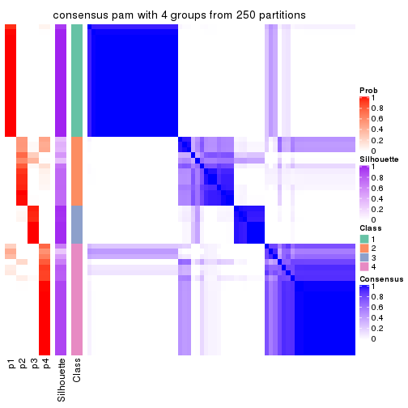
consensus_heatmap(res, k = 5)
consensus_heatmap(res, k = 6)
Heatmaps for the membership of samples in all partitions to see how consistent they are:
membership_heatmap(res, k = 2)
membership_heatmap(res, k = 3)
membership_heatmap(res, k = 4)
membership_heatmap(res, k = 5)
membership_heatmap(res, k = 6)
As soon as we have had the classes for columns, we can look for signatures which are significantly different between classes which can be candidate marks for certain classes. Following are the heatmaps for signatures.
Signature heatmaps where rows are scaled:
get_signatures(res, k = 2)
get_signatures(res, k = 3)
get_signatures(res, k = 4)
get_signatures(res, k = 5)
get_signatures(res, k = 6)

Signature heatmaps where rows are not scaled:
get_signatures(res, k = 2, scale_rows = FALSE)
get_signatures(res, k = 3, scale_rows = FALSE)
#> Error in mat[ceiling(1:nr/h_ratio), ceiling(1:nc/w_ratio), drop = FALSE]: subscript out of bounds
get_signatures(res, k = 4, scale_rows = FALSE)
#> Error in mat[ceiling(1:nr/h_ratio), ceiling(1:nc/w_ratio), drop = FALSE]: subscript out of bounds

get_signatures(res, k = 5, scale_rows = FALSE)
#> Error in mat[ceiling(1:nr/h_ratio), ceiling(1:nc/w_ratio), drop = FALSE]: subscript out of bounds
get_signatures(res, k = 6, scale_rows = FALSE)
#> Error in mat[ceiling(1:nr/h_ratio), ceiling(1:nc/w_ratio), drop = FALSE]: subscript out of bounds

Compare the overlap of signatures from different k:
compare_signatures(res)
get_signature() returns a data frame invisibly. TO get the list of signatures, the function
call should be assigned to a variable explicitly. In following code, if plot argument is set
to FALSE, no heatmap is plotted while only the differential analysis is performed.
# code only for demonstration
tb = get_signature(res, k = ..., plot = FALSE)
An example of the output of tb is:
#> which_row fdr mean_1 mean_2 scaled_mean_1 scaled_mean_2 km
#> 1 38 0.042760348 8.373488 9.131774 -0.5533452 0.5164555 1
#> 2 40 0.018707592 7.106213 8.469186 -0.6173731 0.5762149 1
#> 3 55 0.019134737 10.221463 11.207825 -0.6159697 0.5749050 1
#> 4 59 0.006059896 5.921854 7.869574 -0.6899429 0.6439467 1
#> 5 60 0.018055526 8.928898 10.211722 -0.6204761 0.5791110 1
#> 6 98 0.009384629 15.714769 14.887706 0.6635654 -0.6193277 2
...
The columns in tb are:
which_row: row indices corresponding to the input matrix.fdr: FDR for the differential test. mean_x: The mean value in group x.scaled_mean_x: The mean value in group x after rows are scaled.km: Row groups if k-means clustering is applied to rows.UMAP plot which shows how samples are separated.
dimension_reduction(res, k = 2, method = "UMAP")
dimension_reduction(res, k = 3, method = "UMAP")
dimension_reduction(res, k = 4, method = "UMAP")
dimension_reduction(res, k = 5, method = "UMAP")
dimension_reduction(res, k = 6, method = "UMAP")
Following heatmap shows how subgroups are split when increasing k:
collect_classes(res)
If matrix rows can be associated to genes, consider to use GO_Enrichment(res,
...) to perform function enrichment for the signature genes.
The object with results only for a single top-value method and a single partition method can be extracted as:
res = res_list["MAD", "mclust"]
# you can also extract it by
# res = res_list["MAD:mclust"]
A summary of res and all the functions that can be applied to it:
res
#> A 'ConsensusPartition' object with k = 2, 3, 4, 5, 6.
#> On a matrix with 12627 rows and 62 columns.
#> Top rows (1000, 2000, 3000, 4000, 5000) are extracted by 'MAD' method.
#> Subgroups are detected by 'mclust' method.
#> Performed in total 1250 partitions by row resampling.
#> Best k for subgroups seems to be 2.
#>
#> Following methods can be applied to this 'ConsensusPartition' object:
#> [1] "cola_report" "collect_classes" "collect_plots"
#> [4] "collect_stats" "colnames" "compare_signatures"
#> [7] "consensus_heatmap" "dimension_reduction" "functional_enrichment"
#> [10] "get_anno_col" "get_anno" "get_classes"
#> [13] "get_consensus" "get_matrix" "get_membership"
#> [16] "get_param" "get_signatures" "get_stats"
#> [19] "is_best_k" "is_stable_k" "membership_heatmap"
#> [22] "ncol" "nrow" "plot_ecdf"
#> [25] "rownames" "select_partition_number" "show"
#> [28] "suggest_best_k" "test_to_known_factors"
collect_plots() function collects all the plots made from res for all k (number of partitions)
into one single page to provide an easy and fast comparison between different k.
collect_plots(res)
The plots are:
k and the heatmap of
predicted classes for each k.k.k.k.All the plots in panels can be made by individual functions and they are plotted later in this section.
select_partition_number() produces several plots showing different
statistics for choosing “optimized” k. There are following statistics:
k;k, the area increased is defined as \(A_k - A_{k-1}\).The detailed explanations of these statistics can be found in the cola vignette.
Generally speaking, lower PAC score, higher mean silhouette score or higher
concordance corresponds to better partition. Rand index and Jaccard index
measure how similar the current partition is compared to partition with k-1.
If they are too similar, we won't accept k is better than k-1.
select_partition_number(res)
The numeric values for all these statistics can be obtained by get_stats().
get_stats(res)
#> k 1-PAC mean_silhouette concordance area_increased Rand Jaccard
#> 2 2 0.837 0.921 0.963 0.4651 0.545 0.545
#> 3 3 0.786 0.924 0.941 0.3520 0.825 0.680
#> 4 4 0.771 0.805 0.892 0.1564 0.907 0.749
#> 5 5 0.828 0.690 0.856 0.0618 0.911 0.693
#> 6 6 0.821 0.877 0.916 0.0171 0.953 0.798
suggest_best_k() suggests the best \(k\) based on these statistics. The rules are as follows:
NA.suggest_best_k(res)
#> [1] 2
Following shows the table of the partitions (You need to click the show/hide
code output link to see it). The membership matrix (columns with name p*)
is inferred by
clue::cl_consensus()
function with the SE method. Basically the value in the membership matrix
represents the probability to belong to a certain group. The finall class
label for an item is determined with the group with highest probability it
belongs to.
In get_classes() function, the entropy is calculated from the membership
matrix and the silhouette score is calculated from the consensus matrix.
cbind(get_classes(res, k = 2), get_membership(res, k = 2))
#> class entropy silhouette p1 p2
#> SRR372611 2 0.833 0.691 0.264 0.736
#> SRR372612 1 0.000 0.974 1.000 0.000
#> SRR372613 2 0.000 0.954 0.000 1.000
#> SRR372614 2 0.689 0.797 0.184 0.816
#> SRR372615 2 0.000 0.954 0.000 1.000
#> SRR372616 2 0.204 0.932 0.032 0.968
#> SRR372617 2 0.000 0.954 0.000 1.000
#> SRR372618 1 0.373 0.902 0.928 0.072
#> SRR372619 2 0.000 0.954 0.000 1.000
#> SRR372620 1 0.000 0.974 1.000 0.000
#> SRR372621 2 0.000 0.954 0.000 1.000
#> SRR372622 2 0.706 0.789 0.192 0.808
#> SRR372623 2 0.000 0.954 0.000 1.000
#> SRR372624 1 0.000 0.974 1.000 0.000
#> SRR372625 1 0.000 0.974 1.000 0.000
#> SRR372626 2 0.000 0.954 0.000 1.000
#> SRR372627 1 0.000 0.974 1.000 0.000
#> SRR372628 1 0.987 0.260 0.568 0.432
#> SRR372629 2 0.000 0.954 0.000 1.000
#> SRR372630 1 0.000 0.974 1.000 0.000
#> SRR372631 2 0.000 0.954 0.000 1.000
#> SRR372632 1 0.000 0.974 1.000 0.000
#> SRR372633 2 0.000 0.954 0.000 1.000
#> SRR372634 1 0.000 0.974 1.000 0.000
#> SRR372635 2 0.000 0.954 0.000 1.000
#> SRR372636 1 0.000 0.974 1.000 0.000
#> SRR372637 2 0.000 0.954 0.000 1.000
#> SRR372638 1 0.000 0.974 1.000 0.000
#> SRR372639 2 0.000 0.954 0.000 1.000
#> SRR372640 1 0.000 0.974 1.000 0.000
#> SRR372641 2 0.000 0.954 0.000 1.000
#> SRR372642 2 0.881 0.631 0.300 0.700
#> SRR372643 2 0.000 0.954 0.000 1.000
#> SRR372644 1 0.000 0.974 1.000 0.000
#> SRR372645 2 0.000 0.954 0.000 1.000
#> SRR372646 1 0.000 0.974 1.000 0.000
#> SRR372647 2 0.000 0.954 0.000 1.000
#> SRR372648 1 0.000 0.974 1.000 0.000
#> SRR372649 2 0.000 0.954 0.000 1.000
#> SRR372650 2 0.000 0.954 0.000 1.000
#> SRR372651 2 0.000 0.954 0.000 1.000
#> SRR372652 2 0.000 0.954 0.000 1.000
#> SRR372653 2 0.000 0.954 0.000 1.000
#> SRR372654 2 0.895 0.609 0.312 0.688
#> SRR372655 2 0.000 0.954 0.000 1.000
#> SRR372656 1 0.000 0.974 1.000 0.000
#> SRR372657 1 0.000 0.974 1.000 0.000
#> SRR372658 2 0.000 0.954 0.000 1.000
#> SRR372659 2 0.000 0.954 0.000 1.000
#> SRR372660 2 0.000 0.954 0.000 1.000
#> SRR372661 2 0.000 0.954 0.000 1.000
#> SRR372662 2 0.697 0.793 0.188 0.812
#> SRR372663 2 0.000 0.954 0.000 1.000
#> SRR372664 1 0.000 0.974 1.000 0.000
#> SRR372665 2 0.000 0.954 0.000 1.000
#> SRR372666 2 0.000 0.954 0.000 1.000
#> SRR372667 2 0.000 0.954 0.000 1.000
#> SRR372668 1 0.000 0.974 1.000 0.000
#> SRR372669 2 0.518 0.865 0.116 0.884
#> SRR372670 1 0.000 0.974 1.000 0.000
#> SRR372671 2 0.000 0.954 0.000 1.000
#> SRR372672 2 0.689 0.798 0.184 0.816
cbind(get_classes(res, k = 3), get_membership(res, k = 3))
#> class entropy silhouette p1 p2 p3
#> SRR372611 2 0.6850 0.804 0.140 0.740 0.120
#> SRR372612 1 0.0000 0.987 1.000 0.000 0.000
#> SRR372613 2 0.4423 0.903 0.048 0.864 0.088
#> SRR372614 2 0.5998 0.860 0.084 0.788 0.128
#> SRR372615 2 0.1753 0.897 0.000 0.952 0.048
#> SRR372616 2 0.5407 0.882 0.076 0.820 0.104
#> SRR372617 3 0.0000 0.952 0.000 0.000 1.000
#> SRR372618 1 0.3116 0.858 0.892 0.000 0.108
#> SRR372619 2 0.0000 0.897 0.000 1.000 0.000
#> SRR372620 1 0.0000 0.987 1.000 0.000 0.000
#> SRR372621 2 0.2537 0.888 0.000 0.920 0.080
#> SRR372622 3 0.1643 0.931 0.044 0.000 0.956
#> SRR372623 2 0.0000 0.897 0.000 1.000 0.000
#> SRR372624 1 0.0000 0.987 1.000 0.000 0.000
#> SRR372625 1 0.0000 0.987 1.000 0.000 0.000
#> SRR372626 2 0.0892 0.896 0.000 0.980 0.020
#> SRR372627 1 0.0000 0.987 1.000 0.000 0.000
#> SRR372628 1 0.3445 0.866 0.896 0.016 0.088
#> SRR372629 3 0.0000 0.952 0.000 0.000 1.000
#> SRR372630 1 0.0000 0.987 1.000 0.000 0.000
#> SRR372631 2 0.3619 0.897 0.000 0.864 0.136
#> SRR372632 1 0.0000 0.987 1.000 0.000 0.000
#> SRR372633 3 0.4062 0.775 0.000 0.164 0.836
#> SRR372634 1 0.0000 0.987 1.000 0.000 0.000
#> SRR372635 3 0.0000 0.952 0.000 0.000 1.000
#> SRR372636 1 0.0000 0.987 1.000 0.000 0.000
#> SRR372637 3 0.0000 0.952 0.000 0.000 1.000
#> SRR372638 1 0.0000 0.987 1.000 0.000 0.000
#> SRR372639 2 0.0000 0.897 0.000 1.000 0.000
#> SRR372640 1 0.0000 0.987 1.000 0.000 0.000
#> SRR372641 3 0.0000 0.952 0.000 0.000 1.000
#> SRR372642 3 0.2448 0.903 0.076 0.000 0.924
#> SRR372643 2 0.3619 0.897 0.000 0.864 0.136
#> SRR372644 1 0.0000 0.987 1.000 0.000 0.000
#> SRR372645 3 0.2165 0.908 0.000 0.064 0.936
#> SRR372646 1 0.0000 0.987 1.000 0.000 0.000
#> SRR372647 2 0.5348 0.869 0.028 0.796 0.176
#> SRR372648 1 0.0000 0.987 1.000 0.000 0.000
#> SRR372649 3 0.0000 0.952 0.000 0.000 1.000
#> SRR372650 2 0.4423 0.903 0.048 0.864 0.088
#> SRR372651 2 0.0000 0.897 0.000 1.000 0.000
#> SRR372652 2 0.4505 0.902 0.048 0.860 0.092
#> SRR372653 2 0.0000 0.897 0.000 1.000 0.000
#> SRR372654 2 0.6079 0.857 0.088 0.784 0.128
#> SRR372655 2 0.1753 0.897 0.000 0.952 0.048
#> SRR372656 1 0.0000 0.987 1.000 0.000 0.000
#> SRR372657 1 0.0000 0.987 1.000 0.000 0.000
#> SRR372658 2 0.0000 0.897 0.000 1.000 0.000
#> SRR372659 2 0.3619 0.897 0.000 0.864 0.136
#> SRR372660 2 0.4423 0.903 0.048 0.864 0.088
#> SRR372661 2 0.3619 0.897 0.000 0.864 0.136
#> SRR372662 2 0.5603 0.873 0.060 0.804 0.136
#> SRR372663 2 0.4423 0.903 0.048 0.864 0.088
#> SRR372664 1 0.0000 0.987 1.000 0.000 0.000
#> SRR372665 2 0.0000 0.897 0.000 1.000 0.000
#> SRR372666 2 0.4423 0.903 0.048 0.864 0.088
#> SRR372667 2 0.0000 0.897 0.000 1.000 0.000
#> SRR372668 1 0.0000 0.987 1.000 0.000 0.000
#> SRR372669 3 0.1753 0.927 0.048 0.000 0.952
#> SRR372670 1 0.0000 0.987 1.000 0.000 0.000
#> SRR372671 2 0.0000 0.897 0.000 1.000 0.000
#> SRR372672 2 0.5810 0.867 0.072 0.796 0.132
cbind(get_classes(res, k = 4), get_membership(res, k = 4))
#> class entropy silhouette p1 p2 p3 p4
#> SRR372611 4 0.4831 0.584 0.280 0.016 0.000 0.704
#> SRR372612 1 0.0188 0.961 0.996 0.000 0.000 0.004
#> SRR372613 2 0.5503 0.368 0.000 0.516 0.016 0.468
#> SRR372614 4 0.1182 0.885 0.016 0.016 0.000 0.968
#> SRR372615 2 0.0657 0.783 0.000 0.984 0.012 0.004
#> SRR372616 4 0.0927 0.885 0.008 0.016 0.000 0.976
#> SRR372617 3 0.0469 0.902 0.000 0.000 0.988 0.012
#> SRR372618 1 0.3486 0.728 0.812 0.000 0.000 0.188
#> SRR372619 2 0.0000 0.783 0.000 1.000 0.000 0.000
#> SRR372620 1 0.0000 0.964 1.000 0.000 0.000 0.000
#> SRR372621 2 0.1624 0.777 0.000 0.952 0.028 0.020
#> SRR372622 3 0.4800 0.776 0.044 0.000 0.760 0.196
#> SRR372623 2 0.0188 0.783 0.000 0.996 0.004 0.000
#> SRR372624 1 0.0000 0.964 1.000 0.000 0.000 0.000
#> SRR372625 1 0.0000 0.964 1.000 0.000 0.000 0.000
#> SRR372626 2 0.0000 0.783 0.000 1.000 0.000 0.000
#> SRR372627 1 0.0000 0.964 1.000 0.000 0.000 0.000
#> SRR372628 1 0.6928 0.192 0.556 0.000 0.136 0.308
#> SRR372629 3 0.0336 0.901 0.000 0.000 0.992 0.008
#> SRR372630 1 0.0000 0.964 1.000 0.000 0.000 0.000
#> SRR372631 2 0.7368 0.496 0.004 0.536 0.180 0.280
#> SRR372632 1 0.0000 0.964 1.000 0.000 0.000 0.000
#> SRR372633 3 0.2984 0.877 0.000 0.028 0.888 0.084
#> SRR372634 1 0.0000 0.964 1.000 0.000 0.000 0.000
#> SRR372635 3 0.1211 0.908 0.000 0.000 0.960 0.040
#> SRR372636 1 0.0000 0.964 1.000 0.000 0.000 0.000
#> SRR372637 3 0.1389 0.906 0.000 0.000 0.952 0.048
#> SRR372638 1 0.0000 0.964 1.000 0.000 0.000 0.000
#> SRR372639 2 0.0000 0.783 0.000 1.000 0.000 0.000
#> SRR372640 1 0.0000 0.964 1.000 0.000 0.000 0.000
#> SRR372641 3 0.0817 0.902 0.000 0.000 0.976 0.024
#> SRR372642 3 0.5209 0.769 0.104 0.000 0.756 0.140
#> SRR372643 2 0.6316 0.637 0.000 0.660 0.184 0.156
#> SRR372644 1 0.0000 0.964 1.000 0.000 0.000 0.000
#> SRR372645 3 0.2662 0.886 0.000 0.016 0.900 0.084
#> SRR372646 1 0.0000 0.964 1.000 0.000 0.000 0.000
#> SRR372647 2 0.7785 0.461 0.016 0.508 0.180 0.296
#> SRR372648 1 0.0000 0.964 1.000 0.000 0.000 0.000
#> SRR372649 3 0.0817 0.902 0.000 0.000 0.976 0.024
#> SRR372650 2 0.5500 0.376 0.000 0.520 0.016 0.464
#> SRR372651 2 0.0336 0.780 0.000 0.992 0.000 0.008
#> SRR372652 4 0.1182 0.877 0.000 0.016 0.016 0.968
#> SRR372653 2 0.3123 0.727 0.000 0.844 0.000 0.156
#> SRR372654 4 0.2142 0.855 0.056 0.016 0.000 0.928
#> SRR372655 2 0.0469 0.783 0.000 0.988 0.012 0.000
#> SRR372656 1 0.0000 0.964 1.000 0.000 0.000 0.000
#> SRR372657 1 0.0000 0.964 1.000 0.000 0.000 0.000
#> SRR372658 2 0.0592 0.776 0.000 0.984 0.000 0.016
#> SRR372659 2 0.6316 0.637 0.000 0.660 0.184 0.156
#> SRR372660 2 0.7340 0.473 0.008 0.532 0.144 0.316
#> SRR372661 2 0.5434 0.673 0.000 0.728 0.188 0.084
#> SRR372662 4 0.5125 0.671 0.008 0.160 0.064 0.768
#> SRR372663 2 0.5503 0.368 0.000 0.516 0.016 0.468
#> SRR372664 1 0.0000 0.964 1.000 0.000 0.000 0.000
#> SRR372665 2 0.0592 0.776 0.000 0.984 0.000 0.016
#> SRR372666 4 0.1484 0.879 0.004 0.020 0.016 0.960
#> SRR372667 2 0.0592 0.776 0.000 0.984 0.000 0.016
#> SRR372668 1 0.0000 0.964 1.000 0.000 0.000 0.000
#> SRR372669 3 0.3324 0.866 0.012 0.000 0.852 0.136
#> SRR372670 1 0.0188 0.961 0.996 0.000 0.000 0.004
#> SRR372671 2 0.0000 0.783 0.000 1.000 0.000 0.000
#> SRR372672 4 0.1262 0.883 0.008 0.016 0.008 0.968
cbind(get_classes(res, k = 5), get_membership(res, k = 5))
#> class entropy silhouette p1 p2 p3 p4 p5
#> SRR372611 5 0.4264 0.3514 0.376 0.000 0.004 0.000 0.620
#> SRR372612 1 0.1270 0.9193 0.948 0.000 0.000 0.000 0.052
#> SRR372613 4 0.4302 0.4967 0.000 0.000 0.000 0.520 0.480
#> SRR372614 5 0.0880 0.6195 0.032 0.000 0.000 0.000 0.968
#> SRR372615 2 0.4223 0.6466 0.000 0.724 0.028 0.248 0.000
#> SRR372616 5 0.1082 0.6161 0.028 0.000 0.000 0.008 0.964
#> SRR372617 3 0.2470 0.7280 0.000 0.000 0.884 0.012 0.104
#> SRR372618 1 0.1908 0.8738 0.908 0.000 0.000 0.000 0.092
#> SRR372619 2 0.0162 0.8831 0.000 0.996 0.000 0.004 0.000
#> SRR372620 1 0.0162 0.9573 0.996 0.000 0.000 0.000 0.004
#> SRR372621 2 0.5280 0.0587 0.000 0.512 0.048 0.440 0.000
#> SRR372622 5 0.4620 0.3593 0.016 0.000 0.392 0.000 0.592
#> SRR372623 2 0.0162 0.8831 0.000 0.996 0.000 0.004 0.000
#> SRR372624 1 0.0162 0.9573 0.996 0.000 0.000 0.000 0.004
#> SRR372625 1 0.0000 0.9578 1.000 0.000 0.000 0.000 0.000
#> SRR372626 2 0.1981 0.8591 0.000 0.920 0.016 0.064 0.000
#> SRR372627 1 0.0000 0.9578 1.000 0.000 0.000 0.000 0.000
#> SRR372628 1 0.6515 -0.1459 0.452 0.000 0.004 0.376 0.168
#> SRR372629 3 0.2006 0.7379 0.000 0.000 0.916 0.012 0.072
#> SRR372630 1 0.0162 0.9573 0.996 0.000 0.000 0.000 0.004
#> SRR372631 4 0.2104 0.6508 0.000 0.000 0.024 0.916 0.060
#> SRR372632 1 0.0162 0.9573 0.996 0.000 0.000 0.000 0.004
#> SRR372633 3 0.5812 -0.0283 0.000 0.092 0.476 0.432 0.000
#> SRR372634 1 0.0000 0.9578 1.000 0.000 0.000 0.000 0.000
#> SRR372635 3 0.1478 0.7414 0.000 0.000 0.936 0.064 0.000
#> SRR372636 1 0.0000 0.9578 1.000 0.000 0.000 0.000 0.000
#> SRR372637 3 0.1851 0.7382 0.000 0.000 0.912 0.088 0.000
#> SRR372638 1 0.0000 0.9578 1.000 0.000 0.000 0.000 0.000
#> SRR372639 2 0.2753 0.8029 0.000 0.856 0.008 0.136 0.000
#> SRR372640 1 0.0000 0.9578 1.000 0.000 0.000 0.000 0.000
#> SRR372641 3 0.2891 0.6611 0.000 0.000 0.824 0.000 0.176
#> SRR372642 5 0.4747 0.4301 0.028 0.000 0.352 0.000 0.620
#> SRR372643 4 0.0703 0.6366 0.000 0.000 0.024 0.976 0.000
#> SRR372644 1 0.0000 0.9578 1.000 0.000 0.000 0.000 0.000
#> SRR372645 3 0.4159 0.6504 0.000 0.068 0.776 0.156 0.000
#> SRR372646 1 0.0162 0.9573 0.996 0.000 0.000 0.000 0.004
#> SRR372647 4 0.6361 0.4683 0.024 0.024 0.040 0.464 0.448
#> SRR372648 1 0.0000 0.9578 1.000 0.000 0.000 0.000 0.000
#> SRR372649 3 0.3171 0.6500 0.008 0.000 0.816 0.000 0.176
#> SRR372650 4 0.4302 0.4967 0.000 0.000 0.000 0.520 0.480
#> SRR372651 2 0.0000 0.8826 0.000 1.000 0.000 0.000 0.000
#> SRR372652 5 0.4331 -0.3949 0.000 0.000 0.004 0.400 0.596
#> SRR372653 4 0.4735 -0.0144 0.000 0.460 0.000 0.524 0.016
#> SRR372654 5 0.1341 0.6205 0.056 0.000 0.000 0.000 0.944
#> SRR372655 2 0.1195 0.8728 0.000 0.960 0.028 0.012 0.000
#> SRR372656 1 0.0000 0.9578 1.000 0.000 0.000 0.000 0.000
#> SRR372657 1 0.0000 0.9578 1.000 0.000 0.000 0.000 0.000
#> SRR372658 2 0.0000 0.8826 0.000 1.000 0.000 0.000 0.000
#> SRR372659 4 0.0703 0.6366 0.000 0.000 0.024 0.976 0.000
#> SRR372660 4 0.2439 0.6577 0.000 0.000 0.004 0.876 0.120
#> SRR372661 4 0.1168 0.6344 0.000 0.008 0.032 0.960 0.000
#> SRR372662 5 0.4658 0.5004 0.028 0.000 0.296 0.004 0.672
#> SRR372663 4 0.4307 0.4929 0.000 0.000 0.000 0.500 0.500
#> SRR372664 1 0.0162 0.9573 0.996 0.000 0.000 0.000 0.004
#> SRR372665 2 0.0000 0.8826 0.000 1.000 0.000 0.000 0.000
#> SRR372666 5 0.2605 0.3952 0.000 0.000 0.000 0.148 0.852
#> SRR372667 2 0.0000 0.8826 0.000 1.000 0.000 0.000 0.000
#> SRR372668 1 0.0162 0.9573 0.996 0.000 0.000 0.000 0.004
#> SRR372669 5 0.4856 0.3707 0.028 0.000 0.388 0.000 0.584
#> SRR372670 1 0.1197 0.9228 0.952 0.000 0.000 0.000 0.048
#> SRR372671 2 0.1732 0.8554 0.000 0.920 0.000 0.080 0.000
#> SRR372672 5 0.2628 0.6270 0.028 0.000 0.088 0.000 0.884
cbind(get_classes(res, k = 6), get_membership(res, k = 6))
#> class entropy silhouette p1 p2 p3 p4 p5 p6
#> SRR372611 6 0.3052 0.774 0.216 0.000 0.004 0.000 0.000 0.780
#> SRR372612 1 0.0632 0.968 0.976 0.000 0.000 0.000 0.000 0.024
#> SRR372613 4 0.1910 0.833 0.000 0.000 0.000 0.892 0.000 0.108
#> SRR372614 6 0.2350 0.864 0.100 0.000 0.000 0.020 0.000 0.880
#> SRR372615 5 0.3666 0.838 0.000 0.092 0.016 0.080 0.812 0.000
#> SRR372616 6 0.2237 0.851 0.068 0.000 0.000 0.036 0.000 0.896
#> SRR372617 3 0.1082 0.877 0.000 0.004 0.956 0.000 0.000 0.040
#> SRR372618 1 0.2178 0.854 0.868 0.000 0.000 0.000 0.000 0.132
#> SRR372619 5 0.0000 0.884 0.000 0.000 0.000 0.000 1.000 0.000
#> SRR372620 1 0.0146 0.980 0.996 0.000 0.000 0.000 0.000 0.004
#> SRR372621 5 0.3274 0.842 0.000 0.000 0.096 0.080 0.824 0.000
#> SRR372622 3 0.4254 0.764 0.124 0.000 0.764 0.020 0.000 0.092
#> SRR372623 5 0.0000 0.884 0.000 0.000 0.000 0.000 1.000 0.000
#> SRR372624 1 0.0000 0.982 1.000 0.000 0.000 0.000 0.000 0.000
#> SRR372625 1 0.0405 0.976 0.988 0.000 0.000 0.004 0.000 0.008
#> SRR372626 5 0.2910 0.860 0.000 0.000 0.068 0.080 0.852 0.000
#> SRR372627 1 0.0291 0.978 0.992 0.000 0.000 0.004 0.000 0.004
#> SRR372628 1 0.2554 0.870 0.876 0.000 0.028 0.004 0.000 0.092
#> SRR372629 3 0.1080 0.878 0.004 0.004 0.960 0.000 0.000 0.032
#> SRR372630 1 0.0000 0.982 1.000 0.000 0.000 0.000 0.000 0.000
#> SRR372631 2 0.0935 0.940 0.000 0.964 0.032 0.000 0.000 0.004
#> SRR372632 1 0.0146 0.980 0.996 0.000 0.000 0.000 0.000 0.004
#> SRR372633 3 0.2220 0.819 0.000 0.020 0.908 0.052 0.020 0.000
#> SRR372634 1 0.0291 0.978 0.992 0.000 0.000 0.004 0.000 0.004
#> SRR372635 3 0.0405 0.867 0.000 0.008 0.988 0.000 0.000 0.004
#> SRR372636 1 0.0000 0.982 1.000 0.000 0.000 0.000 0.000 0.000
#> SRR372637 3 0.0405 0.864 0.000 0.008 0.988 0.004 0.000 0.000
#> SRR372638 1 0.0000 0.982 1.000 0.000 0.000 0.000 0.000 0.000
#> SRR372639 5 0.2474 0.872 0.000 0.000 0.040 0.080 0.880 0.000
#> SRR372640 1 0.0000 0.982 1.000 0.000 0.000 0.000 0.000 0.000
#> SRR372641 3 0.1950 0.874 0.024 0.000 0.912 0.000 0.000 0.064
#> SRR372642 3 0.4294 0.759 0.128 0.000 0.760 0.020 0.000 0.092
#> SRR372643 2 0.0146 0.946 0.000 0.996 0.004 0.000 0.000 0.000
#> SRR372644 1 0.0000 0.982 1.000 0.000 0.000 0.000 0.000 0.000
#> SRR372645 3 0.2039 0.826 0.000 0.020 0.916 0.052 0.012 0.000
#> SRR372646 1 0.0000 0.982 1.000 0.000 0.000 0.000 0.000 0.000
#> SRR372647 5 0.7277 0.289 0.188 0.000 0.096 0.020 0.476 0.220
#> SRR372648 1 0.0000 0.982 1.000 0.000 0.000 0.000 0.000 0.000
#> SRR372649 3 0.1950 0.874 0.024 0.000 0.912 0.000 0.000 0.064
#> SRR372650 4 0.1910 0.833 0.000 0.000 0.000 0.892 0.000 0.108
#> SRR372651 5 0.0291 0.884 0.000 0.004 0.000 0.004 0.992 0.000
#> SRR372652 6 0.1007 0.763 0.000 0.000 0.000 0.044 0.000 0.956
#> SRR372653 4 0.2462 0.682 0.000 0.004 0.000 0.860 0.132 0.004
#> SRR372654 6 0.2278 0.856 0.128 0.000 0.000 0.004 0.000 0.868
#> SRR372655 5 0.3331 0.845 0.000 0.092 0.016 0.056 0.836 0.000
#> SRR372656 1 0.0000 0.982 1.000 0.000 0.000 0.000 0.000 0.000
#> SRR372657 1 0.0000 0.982 1.000 0.000 0.000 0.000 0.000 0.000
#> SRR372658 5 0.0146 0.884 0.000 0.004 0.000 0.000 0.996 0.000
#> SRR372659 2 0.0790 0.950 0.000 0.968 0.032 0.000 0.000 0.000
#> SRR372660 4 0.4984 0.635 0.052 0.228 0.000 0.676 0.000 0.044
#> SRR372661 2 0.1716 0.928 0.000 0.932 0.028 0.036 0.004 0.000
#> SRR372662 6 0.4124 0.821 0.128 0.000 0.072 0.024 0.000 0.776
#> SRR372663 4 0.2762 0.804 0.000 0.000 0.000 0.804 0.000 0.196
#> SRR372664 1 0.0000 0.982 1.000 0.000 0.000 0.000 0.000 0.000
#> SRR372665 5 0.0000 0.884 0.000 0.000 0.000 0.000 1.000 0.000
#> SRR372666 6 0.1845 0.798 0.028 0.000 0.000 0.052 0.000 0.920
#> SRR372667 5 0.0146 0.884 0.000 0.004 0.000 0.000 0.996 0.000
#> SRR372668 1 0.0146 0.980 0.996 0.000 0.000 0.000 0.000 0.004
#> SRR372669 3 0.3852 0.806 0.092 0.000 0.800 0.020 0.000 0.088
#> SRR372670 1 0.0632 0.968 0.976 0.000 0.000 0.000 0.000 0.024
#> SRR372671 5 0.2696 0.869 0.000 0.004 0.048 0.076 0.872 0.000
#> SRR372672 6 0.3760 0.837 0.128 0.000 0.052 0.020 0.000 0.800
Heatmaps for the consensus matrix. It visualizes the probability of two samples to be in a same group.
consensus_heatmap(res, k = 2)
consensus_heatmap(res, k = 3)
consensus_heatmap(res, k = 4)
consensus_heatmap(res, k = 5)
consensus_heatmap(res, k = 6)
Heatmaps for the membership of samples in all partitions to see how consistent they are:
membership_heatmap(res, k = 2)
membership_heatmap(res, k = 3)

membership_heatmap(res, k = 4)
membership_heatmap(res, k = 5)
membership_heatmap(res, k = 6)
As soon as we have had the classes for columns, we can look for signatures which are significantly different between classes which can be candidate marks for certain classes. Following are the heatmaps for signatures.
Signature heatmaps where rows are scaled:
get_signatures(res, k = 2)
get_signatures(res, k = 3)
get_signatures(res, k = 4)
get_signatures(res, k = 5)
get_signatures(res, k = 6)
Signature heatmaps where rows are not scaled:
get_signatures(res, k = 2, scale_rows = FALSE)
get_signatures(res, k = 3, scale_rows = FALSE)
get_signatures(res, k = 4, scale_rows = FALSE)
get_signatures(res, k = 5, scale_rows = FALSE)
get_signatures(res, k = 6, scale_rows = FALSE)
#> Error in mat[ceiling(1:nr/h_ratio), ceiling(1:nc/w_ratio), drop = FALSE]: subscript out of bounds
Compare the overlap of signatures from different k:
compare_signatures(res)
get_signature() returns a data frame invisibly. TO get the list of signatures, the function
call should be assigned to a variable explicitly. In following code, if plot argument is set
to FALSE, no heatmap is plotted while only the differential analysis is performed.
# code only for demonstration
tb = get_signature(res, k = ..., plot = FALSE)
An example of the output of tb is:
#> which_row fdr mean_1 mean_2 scaled_mean_1 scaled_mean_2 km
#> 1 38 0.042760348 8.373488 9.131774 -0.5533452 0.5164555 1
#> 2 40 0.018707592 7.106213 8.469186 -0.6173731 0.5762149 1
#> 3 55 0.019134737 10.221463 11.207825 -0.6159697 0.5749050 1
#> 4 59 0.006059896 5.921854 7.869574 -0.6899429 0.6439467 1
#> 5 60 0.018055526 8.928898 10.211722 -0.6204761 0.5791110 1
#> 6 98 0.009384629 15.714769 14.887706 0.6635654 -0.6193277 2
...
The columns in tb are:
which_row: row indices corresponding to the input matrix.fdr: FDR for the differential test. mean_x: The mean value in group x.scaled_mean_x: The mean value in group x after rows are scaled.km: Row groups if k-means clustering is applied to rows.UMAP plot which shows how samples are separated.
dimension_reduction(res, k = 2, method = "UMAP")
dimension_reduction(res, k = 3, method = "UMAP")
dimension_reduction(res, k = 4, method = "UMAP")
dimension_reduction(res, k = 5, method = "UMAP")
dimension_reduction(res, k = 6, method = "UMAP")
Following heatmap shows how subgroups are split when increasing k:
collect_classes(res)
If matrix rows can be associated to genes, consider to use GO_Enrichment(res,
...) to perform function enrichment for the signature genes.
The object with results only for a single top-value method and a single partition method can be extracted as:
res = res_list["MAD", "NMF"]
# you can also extract it by
# res = res_list["MAD:NMF"]
A summary of res and all the functions that can be applied to it:
res
#> A 'ConsensusPartition' object with k = 2, 3, 4, 5, 6.
#> On a matrix with 12627 rows and 62 columns.
#> Top rows (1000, 2000, 3000, 4000, 5000) are extracted by 'MAD' method.
#> Subgroups are detected by 'NMF' method.
#> Performed in total 1250 partitions by row resampling.
#> Best k for subgroups seems to be 2.
#>
#> Following methods can be applied to this 'ConsensusPartition' object:
#> [1] "cola_report" "collect_classes" "collect_plots"
#> [4] "collect_stats" "colnames" "compare_signatures"
#> [7] "consensus_heatmap" "dimension_reduction" "functional_enrichment"
#> [10] "get_anno_col" "get_anno" "get_classes"
#> [13] "get_consensus" "get_matrix" "get_membership"
#> [16] "get_param" "get_signatures" "get_stats"
#> [19] "is_best_k" "is_stable_k" "membership_heatmap"
#> [22] "ncol" "nrow" "plot_ecdf"
#> [25] "rownames" "select_partition_number" "show"
#> [28] "suggest_best_k" "test_to_known_factors"
collect_plots() function collects all the plots made from res for all k (number of partitions)
into one single page to provide an easy and fast comparison between different k.
collect_plots(res)
The plots are:
k and the heatmap of
predicted classes for each k.k.k.k.All the plots in panels can be made by individual functions and they are plotted later in this section.
select_partition_number() produces several plots showing different
statistics for choosing “optimized” k. There are following statistics:
k;k, the area increased is defined as \(A_k - A_{k-1}\).The detailed explanations of these statistics can be found in the cola vignette.
Generally speaking, lower PAC score, higher mean silhouette score or higher
concordance corresponds to better partition. Rand index and Jaccard index
measure how similar the current partition is compared to partition with k-1.
If they are too similar, we won't accept k is better than k-1.
select_partition_number(res)
The numeric values for all these statistics can be obtained by get_stats().
get_stats(res)
#> k 1-PAC mean_silhouette concordance area_increased Rand Jaccard
#> 2 2 0.932 0.921 0.970 0.4929 0.511 0.511
#> 3 3 0.796 0.831 0.928 0.2046 0.871 0.751
#> 4 4 0.717 0.740 0.881 0.1530 0.859 0.661
#> 5 5 0.800 0.761 0.902 0.0607 0.918 0.748
#> 6 6 0.708 0.656 0.845 0.0563 0.959 0.851
suggest_best_k() suggests the best \(k\) based on these statistics. The rules are as follows:
NA.suggest_best_k(res)
#> [1] 2
Following shows the table of the partitions (You need to click the show/hide
code output link to see it). The membership matrix (columns with name p*)
is inferred by
clue::cl_consensus()
function with the SE method. Basically the value in the membership matrix
represents the probability to belong to a certain group. The finall class
label for an item is determined with the group with highest probability it
belongs to.
In get_classes() function, the entropy is calculated from the membership
matrix and the silhouette score is calculated from the consensus matrix.
cbind(get_classes(res, k = 2), get_membership(res, k = 2))
#> class entropy silhouette p1 p2
#> SRR372611 1 0.5519 0.8417 0.872 0.128
#> SRR372612 1 0.0000 0.9612 1.000 0.000
#> SRR372613 2 0.1414 0.9599 0.020 0.980
#> SRR372614 1 0.0000 0.9612 1.000 0.000
#> SRR372615 2 0.0000 0.9764 0.000 1.000
#> SRR372616 1 0.0000 0.9612 1.000 0.000
#> SRR372617 2 0.9977 0.0282 0.472 0.528
#> SRR372618 1 0.0000 0.9612 1.000 0.000
#> SRR372619 2 0.0000 0.9764 0.000 1.000
#> SRR372620 1 0.0000 0.9612 1.000 0.000
#> SRR372621 2 0.0000 0.9764 0.000 1.000
#> SRR372622 1 0.0000 0.9612 1.000 0.000
#> SRR372623 2 0.0000 0.9764 0.000 1.000
#> SRR372624 1 0.0000 0.9612 1.000 0.000
#> SRR372625 1 0.0000 0.9612 1.000 0.000
#> SRR372626 2 0.0000 0.9764 0.000 1.000
#> SRR372627 1 0.0000 0.9612 1.000 0.000
#> SRR372628 1 0.7453 0.7311 0.788 0.212
#> SRR372629 2 0.0000 0.9764 0.000 1.000
#> SRR372630 1 0.0000 0.9612 1.000 0.000
#> SRR372631 1 0.9988 0.0959 0.520 0.480
#> SRR372632 1 0.0000 0.9612 1.000 0.000
#> SRR372633 2 0.0000 0.9764 0.000 1.000
#> SRR372634 1 0.0000 0.9612 1.000 0.000
#> SRR372635 2 0.0000 0.9764 0.000 1.000
#> SRR372636 1 0.0000 0.9612 1.000 0.000
#> SRR372637 2 0.1633 0.9558 0.024 0.976
#> SRR372638 1 0.0000 0.9612 1.000 0.000
#> SRR372639 2 0.0000 0.9764 0.000 1.000
#> SRR372640 1 0.0000 0.9612 1.000 0.000
#> SRR372641 1 0.9460 0.4402 0.636 0.364
#> SRR372642 1 0.0000 0.9612 1.000 0.000
#> SRR372643 2 0.0000 0.9764 0.000 1.000
#> SRR372644 1 0.0000 0.9612 1.000 0.000
#> SRR372645 2 0.0000 0.9764 0.000 1.000
#> SRR372646 1 0.0000 0.9612 1.000 0.000
#> SRR372647 2 0.0938 0.9668 0.012 0.988
#> SRR372648 1 0.0000 0.9612 1.000 0.000
#> SRR372649 1 0.3114 0.9154 0.944 0.056
#> SRR372650 2 0.0376 0.9735 0.004 0.996
#> SRR372651 2 0.0000 0.9764 0.000 1.000
#> SRR372652 1 0.0000 0.9612 1.000 0.000
#> SRR372653 2 0.0000 0.9764 0.000 1.000
#> SRR372654 1 0.0000 0.9612 1.000 0.000
#> SRR372655 2 0.0000 0.9764 0.000 1.000
#> SRR372656 1 0.0000 0.9612 1.000 0.000
#> SRR372657 1 0.0000 0.9612 1.000 0.000
#> SRR372658 2 0.0000 0.9764 0.000 1.000
#> SRR372659 2 0.0000 0.9764 0.000 1.000
#> SRR372660 1 0.0000 0.9612 1.000 0.000
#> SRR372661 2 0.0000 0.9764 0.000 1.000
#> SRR372662 1 0.0000 0.9612 1.000 0.000
#> SRR372663 1 0.4939 0.8627 0.892 0.108
#> SRR372664 1 0.0000 0.9612 1.000 0.000
#> SRR372665 2 0.0000 0.9764 0.000 1.000
#> SRR372666 1 0.0000 0.9612 1.000 0.000
#> SRR372667 2 0.0000 0.9764 0.000 1.000
#> SRR372668 1 0.0000 0.9612 1.000 0.000
#> SRR372669 1 0.0000 0.9612 1.000 0.000
#> SRR372670 1 0.0000 0.9612 1.000 0.000
#> SRR372671 2 0.0000 0.9764 0.000 1.000
#> SRR372672 1 0.0000 0.9612 1.000 0.000
cbind(get_classes(res, k = 3), get_membership(res, k = 3))
#> class entropy silhouette p1 p2 p3
#> SRR372611 3 0.0592 0.6958 0.012 0.000 0.988
#> SRR372612 1 0.2261 0.8801 0.932 0.000 0.068
#> SRR372613 3 0.0747 0.6872 0.000 0.016 0.984
#> SRR372614 3 0.5497 0.6441 0.292 0.000 0.708
#> SRR372615 2 0.0000 0.9199 0.000 1.000 0.000
#> SRR372616 3 0.6252 0.4208 0.444 0.000 0.556
#> SRR372617 2 0.6678 -0.0212 0.480 0.512 0.008
#> SRR372618 1 0.0000 0.9469 1.000 0.000 0.000
#> SRR372619 2 0.0237 0.9193 0.000 0.996 0.004
#> SRR372620 1 0.0000 0.9469 1.000 0.000 0.000
#> SRR372621 2 0.0000 0.9199 0.000 1.000 0.000
#> SRR372622 1 0.0000 0.9469 1.000 0.000 0.000
#> SRR372623 2 0.0000 0.9199 0.000 1.000 0.000
#> SRR372624 1 0.0000 0.9469 1.000 0.000 0.000
#> SRR372625 1 0.0000 0.9469 1.000 0.000 0.000
#> SRR372626 2 0.0000 0.9199 0.000 1.000 0.000
#> SRR372627 1 0.0000 0.9469 1.000 0.000 0.000
#> SRR372628 1 0.4974 0.5778 0.764 0.236 0.000
#> SRR372629 2 0.4974 0.6753 0.000 0.764 0.236
#> SRR372630 1 0.0000 0.9469 1.000 0.000 0.000
#> SRR372631 3 0.9519 0.4935 0.292 0.224 0.484
#> SRR372632 1 0.0000 0.9469 1.000 0.000 0.000
#> SRR372633 2 0.0000 0.9199 0.000 1.000 0.000
#> SRR372634 1 0.0000 0.9469 1.000 0.000 0.000
#> SRR372635 2 0.0237 0.9184 0.000 0.996 0.004
#> SRR372636 1 0.0000 0.9469 1.000 0.000 0.000
#> SRR372637 2 0.0592 0.9095 0.012 0.988 0.000
#> SRR372638 1 0.0000 0.9469 1.000 0.000 0.000
#> SRR372639 2 0.0000 0.9199 0.000 1.000 0.000
#> SRR372640 1 0.0000 0.9469 1.000 0.000 0.000
#> SRR372641 1 0.5070 0.5946 0.772 0.224 0.004
#> SRR372642 1 0.0000 0.9469 1.000 0.000 0.000
#> SRR372643 2 0.5650 0.5723 0.000 0.688 0.312
#> SRR372644 1 0.0000 0.9469 1.000 0.000 0.000
#> SRR372645 2 0.0000 0.9199 0.000 1.000 0.000
#> SRR372646 1 0.0000 0.9469 1.000 0.000 0.000
#> SRR372647 2 0.0237 0.9177 0.004 0.996 0.000
#> SRR372648 1 0.0000 0.9469 1.000 0.000 0.000
#> SRR372649 1 0.1031 0.9220 0.976 0.024 0.000
#> SRR372650 3 0.1753 0.6744 0.000 0.048 0.952
#> SRR372651 2 0.0237 0.9193 0.000 0.996 0.004
#> SRR372652 1 0.0000 0.9469 1.000 0.000 0.000
#> SRR372653 2 0.6026 0.4139 0.000 0.624 0.376
#> SRR372654 1 0.0000 0.9469 1.000 0.000 0.000
#> SRR372655 2 0.0000 0.9199 0.000 1.000 0.000
#> SRR372656 1 0.0000 0.9469 1.000 0.000 0.000
#> SRR372657 1 0.0000 0.9469 1.000 0.000 0.000
#> SRR372658 2 0.0237 0.9193 0.000 0.996 0.004
#> SRR372659 2 0.0892 0.9080 0.000 0.980 0.020
#> SRR372660 1 0.0237 0.9435 0.996 0.000 0.004
#> SRR372661 2 0.0000 0.9199 0.000 1.000 0.000
#> SRR372662 1 0.5363 0.4861 0.724 0.000 0.276
#> SRR372663 3 0.2959 0.7255 0.100 0.000 0.900
#> SRR372664 1 0.0000 0.9469 1.000 0.000 0.000
#> SRR372665 2 0.0237 0.9193 0.000 0.996 0.004
#> SRR372666 1 0.2261 0.8781 0.932 0.000 0.068
#> SRR372667 2 0.0237 0.9193 0.000 0.996 0.004
#> SRR372668 1 0.0000 0.9469 1.000 0.000 0.000
#> SRR372669 1 0.4974 0.5908 0.764 0.000 0.236
#> SRR372670 1 0.0000 0.9469 1.000 0.000 0.000
#> SRR372671 2 0.0237 0.9193 0.000 0.996 0.004
#> SRR372672 3 0.6252 0.4214 0.444 0.000 0.556
cbind(get_classes(res, k = 4), get_membership(res, k = 4))
#> class entropy silhouette p1 p2 p3 p4
#> SRR372611 4 0.5271 0.644 0.020 0.000 0.340 0.640
#> SRR372612 1 0.3649 0.699 0.796 0.000 0.000 0.204
#> SRR372613 4 0.0657 0.812 0.000 0.012 0.004 0.984
#> SRR372614 4 0.1792 0.812 0.068 0.000 0.000 0.932
#> SRR372615 2 0.3764 0.613 0.000 0.784 0.216 0.000
#> SRR372616 4 0.3569 0.722 0.196 0.000 0.000 0.804
#> SRR372617 3 0.5979 0.682 0.136 0.172 0.692 0.000
#> SRR372618 1 0.0000 0.926 1.000 0.000 0.000 0.000
#> SRR372619 2 0.0000 0.875 0.000 1.000 0.000 0.000
#> SRR372620 1 0.0336 0.922 0.992 0.000 0.008 0.000
#> SRR372621 2 0.0469 0.868 0.000 0.988 0.012 0.000
#> SRR372622 3 0.4994 0.153 0.480 0.000 0.520 0.000
#> SRR372623 2 0.0000 0.875 0.000 1.000 0.000 0.000
#> SRR372624 1 0.0000 0.926 1.000 0.000 0.000 0.000
#> SRR372625 1 0.0592 0.917 0.984 0.000 0.016 0.000
#> SRR372626 2 0.0000 0.875 0.000 1.000 0.000 0.000
#> SRR372627 1 0.0000 0.926 1.000 0.000 0.000 0.000
#> SRR372628 1 0.4755 0.571 0.724 0.260 0.012 0.004
#> SRR372629 3 0.3837 0.643 0.000 0.224 0.776 0.000
#> SRR372630 1 0.0707 0.915 0.980 0.000 0.020 0.000
#> SRR372631 3 0.0895 0.598 0.020 0.004 0.976 0.000
#> SRR372632 1 0.0469 0.920 0.988 0.000 0.012 0.000
#> SRR372633 2 0.4999 -0.222 0.000 0.508 0.492 0.000
#> SRR372634 1 0.0000 0.926 1.000 0.000 0.000 0.000
#> SRR372635 3 0.4624 0.551 0.000 0.340 0.660 0.000
#> SRR372636 1 0.0000 0.926 1.000 0.000 0.000 0.000
#> SRR372637 3 0.5137 0.297 0.004 0.452 0.544 0.000
#> SRR372638 1 0.0000 0.926 1.000 0.000 0.000 0.000
#> SRR372639 2 0.0000 0.875 0.000 1.000 0.000 0.000
#> SRR372640 1 0.0000 0.926 1.000 0.000 0.000 0.000
#> SRR372641 3 0.4956 0.661 0.188 0.056 0.756 0.000
#> SRR372642 1 0.0336 0.922 0.992 0.000 0.008 0.000
#> SRR372643 3 0.1792 0.637 0.000 0.068 0.932 0.000
#> SRR372644 1 0.0000 0.926 1.000 0.000 0.000 0.000
#> SRR372645 2 0.4817 0.191 0.000 0.612 0.388 0.000
#> SRR372646 1 0.0000 0.926 1.000 0.000 0.000 0.000
#> SRR372647 2 0.0336 0.867 0.008 0.992 0.000 0.000
#> SRR372648 1 0.0000 0.926 1.000 0.000 0.000 0.000
#> SRR372649 3 0.4690 0.591 0.276 0.012 0.712 0.000
#> SRR372650 4 0.0657 0.812 0.000 0.012 0.004 0.984
#> SRR372651 2 0.0000 0.875 0.000 1.000 0.000 0.000
#> SRR372652 1 0.0592 0.917 0.984 0.000 0.000 0.016
#> SRR372653 2 0.5473 0.459 0.000 0.644 0.032 0.324
#> SRR372654 1 0.0000 0.926 1.000 0.000 0.000 0.000
#> SRR372655 2 0.0188 0.873 0.000 0.996 0.004 0.000
#> SRR372656 1 0.0000 0.926 1.000 0.000 0.000 0.000
#> SRR372657 1 0.0000 0.926 1.000 0.000 0.000 0.000
#> SRR372658 2 0.0000 0.875 0.000 1.000 0.000 0.000
#> SRR372659 3 0.4277 0.613 0.000 0.280 0.720 0.000
#> SRR372660 1 0.4916 0.134 0.576 0.000 0.424 0.000
#> SRR372661 3 0.4624 0.553 0.000 0.340 0.660 0.000
#> SRR372662 1 0.5969 0.140 0.564 0.000 0.392 0.044
#> SRR372663 4 0.0657 0.817 0.012 0.000 0.004 0.984
#> SRR372664 1 0.0000 0.926 1.000 0.000 0.000 0.000
#> SRR372665 2 0.0000 0.875 0.000 1.000 0.000 0.000
#> SRR372666 1 0.3024 0.783 0.852 0.000 0.000 0.148
#> SRR372667 2 0.0000 0.875 0.000 1.000 0.000 0.000
#> SRR372668 1 0.0000 0.926 1.000 0.000 0.000 0.000
#> SRR372669 3 0.3942 0.607 0.236 0.000 0.764 0.000
#> SRR372670 1 0.1211 0.897 0.960 0.000 0.000 0.040
#> SRR372671 2 0.0188 0.873 0.000 0.996 0.004 0.000
#> SRR372672 4 0.4522 0.554 0.320 0.000 0.000 0.680
cbind(get_classes(res, k = 5), get_membership(res, k = 5))
#> class entropy silhouette p1 p2 p3 p4 p5
#> SRR372611 5 0.3391 0.000 0.000 0.000 0.012 0.188 0.800
#> SRR372612 1 0.3454 0.775 0.816 0.000 0.000 0.028 0.156
#> SRR372613 4 0.0162 0.594 0.000 0.000 0.000 0.996 0.004
#> SRR372614 4 0.1478 0.604 0.064 0.000 0.000 0.936 0.000
#> SRR372615 2 0.3906 0.564 0.000 0.704 0.292 0.000 0.004
#> SRR372616 4 0.3969 0.378 0.304 0.000 0.000 0.692 0.004
#> SRR372617 3 0.1393 0.774 0.012 0.008 0.956 0.000 0.024
#> SRR372618 1 0.0000 0.931 1.000 0.000 0.000 0.000 0.000
#> SRR372619 2 0.0510 0.928 0.000 0.984 0.000 0.000 0.016
#> SRR372620 1 0.1894 0.901 0.920 0.000 0.008 0.000 0.072
#> SRR372621 2 0.1195 0.930 0.000 0.960 0.028 0.000 0.012
#> SRR372622 3 0.5762 0.391 0.248 0.000 0.608 0.000 0.144
#> SRR372623 2 0.0880 0.923 0.000 0.968 0.000 0.000 0.032
#> SRR372624 1 0.1768 0.903 0.924 0.000 0.004 0.000 0.072
#> SRR372625 1 0.3304 0.818 0.816 0.000 0.016 0.000 0.168
#> SRR372626 2 0.2249 0.877 0.000 0.896 0.008 0.000 0.096
#> SRR372627 1 0.0162 0.930 0.996 0.000 0.000 0.000 0.004
#> SRR372628 1 0.6490 0.211 0.500 0.332 0.008 0.000 0.160
#> SRR372629 3 0.0807 0.776 0.000 0.012 0.976 0.000 0.012
#> SRR372630 1 0.1981 0.900 0.920 0.000 0.016 0.000 0.064
#> SRR372631 3 0.0404 0.774 0.000 0.000 0.988 0.000 0.012
#> SRR372632 1 0.2408 0.883 0.892 0.000 0.016 0.000 0.092
#> SRR372633 3 0.3707 0.532 0.000 0.284 0.716 0.000 0.000
#> SRR372634 1 0.0000 0.931 1.000 0.000 0.000 0.000 0.000
#> SRR372635 3 0.0703 0.776 0.000 0.024 0.976 0.000 0.000
#> SRR372636 1 0.0000 0.931 1.000 0.000 0.000 0.000 0.000
#> SRR372637 3 0.2763 0.686 0.000 0.148 0.848 0.000 0.004
#> SRR372638 1 0.0000 0.931 1.000 0.000 0.000 0.000 0.000
#> SRR372639 2 0.0566 0.934 0.000 0.984 0.012 0.004 0.000
#> SRR372640 1 0.0000 0.931 1.000 0.000 0.000 0.000 0.000
#> SRR372641 3 0.0960 0.777 0.016 0.004 0.972 0.000 0.008
#> SRR372642 1 0.2233 0.890 0.904 0.000 0.016 0.000 0.080
#> SRR372643 3 0.0510 0.773 0.000 0.000 0.984 0.000 0.016
#> SRR372644 1 0.0000 0.931 1.000 0.000 0.000 0.000 0.000
#> SRR372645 3 0.4339 0.427 0.000 0.336 0.652 0.000 0.012
#> SRR372646 1 0.0000 0.931 1.000 0.000 0.000 0.000 0.000
#> SRR372647 2 0.1399 0.912 0.020 0.952 0.000 0.000 0.028
#> SRR372648 1 0.0162 0.930 0.996 0.000 0.000 0.000 0.004
#> SRR372649 3 0.0898 0.775 0.020 0.000 0.972 0.000 0.008
#> SRR372650 4 0.1153 0.598 0.000 0.004 0.008 0.964 0.024
#> SRR372651 2 0.0981 0.933 0.000 0.972 0.008 0.008 0.012
#> SRR372652 1 0.0510 0.926 0.984 0.000 0.000 0.016 0.000
#> SRR372653 4 0.5513 0.177 0.000 0.360 0.044 0.580 0.016
#> SRR372654 1 0.0000 0.931 1.000 0.000 0.000 0.000 0.000
#> SRR372655 2 0.0798 0.931 0.000 0.976 0.008 0.000 0.016
#> SRR372656 1 0.0162 0.930 0.996 0.000 0.000 0.000 0.004
#> SRR372657 1 0.0000 0.931 1.000 0.000 0.000 0.000 0.000
#> SRR372658 2 0.0981 0.933 0.000 0.972 0.008 0.008 0.012
#> SRR372659 3 0.0404 0.778 0.000 0.012 0.988 0.000 0.000
#> SRR372660 3 0.5583 0.174 0.424 0.000 0.504 0.000 0.072
#> SRR372661 3 0.0794 0.774 0.000 0.028 0.972 0.000 0.000
#> SRR372662 3 0.6164 0.252 0.396 0.000 0.512 0.040 0.052
#> SRR372663 4 0.0807 0.598 0.000 0.012 0.000 0.976 0.012
#> SRR372664 1 0.0000 0.931 1.000 0.000 0.000 0.000 0.000
#> SRR372665 2 0.1314 0.930 0.000 0.960 0.016 0.012 0.012
#> SRR372666 1 0.3010 0.764 0.824 0.000 0.000 0.172 0.004
#> SRR372667 2 0.1314 0.930 0.000 0.960 0.016 0.012 0.012
#> SRR372668 1 0.1251 0.917 0.956 0.000 0.008 0.000 0.036
#> SRR372669 3 0.1195 0.773 0.028 0.000 0.960 0.000 0.012
#> SRR372670 1 0.0963 0.912 0.964 0.000 0.000 0.036 0.000
#> SRR372671 2 0.1764 0.919 0.000 0.940 0.036 0.012 0.012
#> SRR372672 4 0.3305 0.482 0.224 0.000 0.000 0.776 0.000
cbind(get_classes(res, k = 6), get_membership(res, k = 6))
#> class entropy silhouette p1 p2 p3 p4 p5 p6
#> SRR372611 6 0.1075 0.000 0.000 0.000 0.000 0.048 0.000 0.952
#> SRR372612 1 0.2487 0.779 0.892 0.020 0.000 0.024 0.000 0.064
#> SRR372613 4 0.0632 0.529 0.000 0.000 0.000 0.976 0.000 0.024
#> SRR372614 4 0.2948 0.545 0.092 0.024 0.000 0.860 0.000 0.024
#> SRR372615 5 0.4334 0.228 0.000 0.024 0.408 0.000 0.568 0.000
#> SRR372616 4 0.4831 0.322 0.380 0.028 0.000 0.572 0.000 0.020
#> SRR372617 3 0.1663 0.784 0.000 0.088 0.912 0.000 0.000 0.000
#> SRR372618 1 0.0436 0.851 0.988 0.004 0.000 0.004 0.000 0.004
#> SRR372619 5 0.2146 0.807 0.000 0.116 0.000 0.000 0.880 0.004
#> SRR372620 1 0.3489 0.562 0.708 0.288 0.004 0.000 0.000 0.000
#> SRR372621 5 0.2213 0.828 0.000 0.048 0.044 0.000 0.904 0.004
#> SRR372622 2 0.4871 0.473 0.112 0.644 0.244 0.000 0.000 0.000
#> SRR372623 5 0.2653 0.785 0.000 0.144 0.000 0.000 0.844 0.012
#> SRR372624 1 0.4123 0.210 0.568 0.420 0.000 0.000 0.000 0.012
#> SRR372625 2 0.3547 0.491 0.208 0.768 0.012 0.000 0.000 0.012
#> SRR372626 5 0.3871 0.616 0.000 0.308 0.000 0.000 0.676 0.016
#> SRR372627 1 0.2006 0.793 0.892 0.104 0.000 0.000 0.000 0.004
#> SRR372628 2 0.5241 0.245 0.088 0.664 0.004 0.000 0.216 0.028
#> SRR372629 3 0.0260 0.834 0.000 0.000 0.992 0.000 0.000 0.008
#> SRR372630 1 0.3448 0.578 0.716 0.280 0.004 0.000 0.000 0.000
#> SRR372631 3 0.0508 0.832 0.000 0.012 0.984 0.000 0.000 0.004
#> SRR372632 1 0.3986 0.110 0.532 0.464 0.004 0.000 0.000 0.000
#> SRR372633 3 0.3371 0.576 0.000 0.000 0.708 0.000 0.292 0.000
#> SRR372634 1 0.0260 0.849 0.992 0.008 0.000 0.000 0.000 0.000
#> SRR372635 3 0.0713 0.828 0.000 0.000 0.972 0.000 0.028 0.000
#> SRR372636 1 0.0508 0.850 0.984 0.012 0.000 0.000 0.000 0.004
#> SRR372637 3 0.3820 0.668 0.008 0.032 0.756 0.000 0.204 0.000
#> SRR372638 1 0.0260 0.849 0.992 0.008 0.000 0.000 0.000 0.000
#> SRR372639 5 0.0748 0.835 0.000 0.016 0.004 0.004 0.976 0.000
#> SRR372640 1 0.0260 0.849 0.992 0.008 0.000 0.000 0.000 0.000
#> SRR372641 3 0.0632 0.828 0.000 0.024 0.976 0.000 0.000 0.000
#> SRR372642 1 0.3862 0.336 0.608 0.388 0.004 0.000 0.000 0.000
#> SRR372643 3 0.0260 0.834 0.000 0.000 0.992 0.000 0.000 0.008
#> SRR372644 1 0.0146 0.850 0.996 0.000 0.000 0.000 0.000 0.004
#> SRR372645 3 0.3652 0.606 0.000 0.016 0.720 0.000 0.264 0.000
#> SRR372646 1 0.0146 0.850 0.996 0.004 0.000 0.000 0.000 0.000
#> SRR372647 5 0.2240 0.818 0.032 0.056 0.000 0.000 0.904 0.008
#> SRR372648 1 0.0363 0.847 0.988 0.012 0.000 0.000 0.000 0.000
#> SRR372649 3 0.0508 0.832 0.004 0.012 0.984 0.000 0.000 0.000
#> SRR372650 4 0.3447 0.468 0.000 0.176 0.008 0.796 0.012 0.008
#> SRR372651 5 0.1835 0.829 0.000 0.036 0.008 0.016 0.932 0.008
#> SRR372652 1 0.0865 0.839 0.964 0.000 0.000 0.036 0.000 0.000
#> SRR372653 4 0.6238 0.180 0.000 0.100 0.032 0.508 0.344 0.016
#> SRR372654 1 0.0363 0.848 0.988 0.012 0.000 0.000 0.000 0.000
#> SRR372655 5 0.1826 0.829 0.000 0.052 0.020 0.000 0.924 0.004
#> SRR372656 1 0.0603 0.844 0.980 0.016 0.000 0.004 0.000 0.000
#> SRR372657 1 0.0260 0.849 0.992 0.008 0.000 0.000 0.000 0.000
#> SRR372658 5 0.2641 0.820 0.000 0.064 0.008 0.028 0.888 0.012
#> SRR372659 3 0.0146 0.835 0.000 0.000 0.996 0.000 0.004 0.000
#> SRR372660 2 0.6217 0.403 0.316 0.384 0.296 0.004 0.000 0.000
#> SRR372661 3 0.0260 0.834 0.000 0.000 0.992 0.000 0.008 0.000
#> SRR372662 3 0.7301 -0.473 0.272 0.280 0.348 0.100 0.000 0.000
#> SRR372663 4 0.1223 0.539 0.004 0.016 0.000 0.960 0.012 0.008
#> SRR372664 1 0.0363 0.848 0.988 0.012 0.000 0.000 0.000 0.000
#> SRR372665 5 0.2534 0.817 0.000 0.052 0.012 0.032 0.896 0.008
#> SRR372666 1 0.3290 0.652 0.776 0.016 0.000 0.208 0.000 0.000
#> SRR372667 5 0.2699 0.812 0.000 0.052 0.016 0.036 0.888 0.008
#> SRR372668 1 0.2320 0.766 0.864 0.132 0.004 0.000 0.000 0.000
#> SRR372669 3 0.1503 0.810 0.032 0.016 0.944 0.000 0.000 0.008
#> SRR372670 1 0.1088 0.833 0.960 0.024 0.000 0.016 0.000 0.000
#> SRR372671 5 0.4156 0.735 0.000 0.052 0.120 0.032 0.788 0.008
#> SRR372672 4 0.4165 0.450 0.292 0.028 0.000 0.676 0.000 0.004
Heatmaps for the consensus matrix. It visualizes the probability of two samples to be in a same group.
consensus_heatmap(res, k = 2)
consensus_heatmap(res, k = 3)
consensus_heatmap(res, k = 4)
consensus_heatmap(res, k = 5)
consensus_heatmap(res, k = 6)
Heatmaps for the membership of samples in all partitions to see how consistent they are:
membership_heatmap(res, k = 2)
membership_heatmap(res, k = 3)
membership_heatmap(res, k = 4)
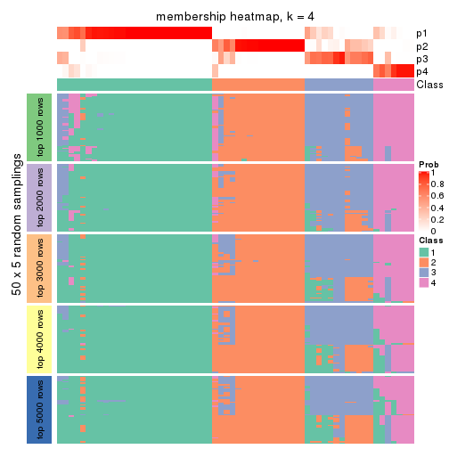
membership_heatmap(res, k = 5)
membership_heatmap(res, k = 6)
As soon as we have had the classes for columns, we can look for signatures which are significantly different between classes which can be candidate marks for certain classes. Following are the heatmaps for signatures.
Signature heatmaps where rows are scaled:
get_signatures(res, k = 2)
get_signatures(res, k = 3)
get_signatures(res, k = 4)
get_signatures(res, k = 5)
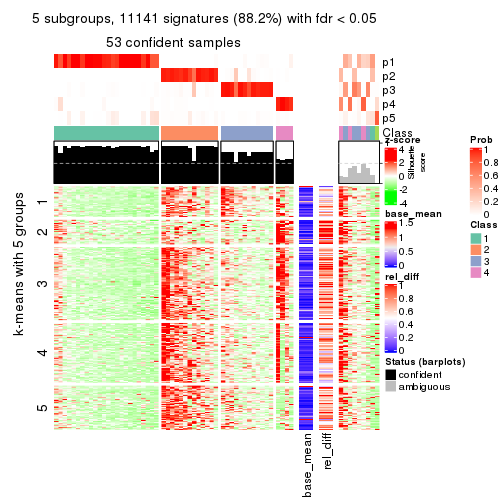
get_signatures(res, k = 6)
Signature heatmaps where rows are not scaled:
get_signatures(res, k = 2, scale_rows = FALSE)
get_signatures(res, k = 3, scale_rows = FALSE)
get_signatures(res, k = 4, scale_rows = FALSE)
#> Error in mat[ceiling(1:nr/h_ratio), ceiling(1:nc/w_ratio), drop = FALSE]: subscript out of bounds

get_signatures(res, k = 5, scale_rows = FALSE)
get_signatures(res, k = 6, scale_rows = FALSE)
#> Error in mat[ceiling(1:nr/h_ratio), ceiling(1:nc/w_ratio), drop = FALSE]: subscript out of bounds

Compare the overlap of signatures from different k:
compare_signatures(res)
get_signature() returns a data frame invisibly. TO get the list of signatures, the function
call should be assigned to a variable explicitly. In following code, if plot argument is set
to FALSE, no heatmap is plotted while only the differential analysis is performed.
# code only for demonstration
tb = get_signature(res, k = ..., plot = FALSE)
An example of the output of tb is:
#> which_row fdr mean_1 mean_2 scaled_mean_1 scaled_mean_2 km
#> 1 38 0.042760348 8.373488 9.131774 -0.5533452 0.5164555 1
#> 2 40 0.018707592 7.106213 8.469186 -0.6173731 0.5762149 1
#> 3 55 0.019134737 10.221463 11.207825 -0.6159697 0.5749050 1
#> 4 59 0.006059896 5.921854 7.869574 -0.6899429 0.6439467 1
#> 5 60 0.018055526 8.928898 10.211722 -0.6204761 0.5791110 1
#> 6 98 0.009384629 15.714769 14.887706 0.6635654 -0.6193277 2
...
The columns in tb are:
which_row: row indices corresponding to the input matrix.fdr: FDR for the differential test. mean_x: The mean value in group x.scaled_mean_x: The mean value in group x after rows are scaled.km: Row groups if k-means clustering is applied to rows.UMAP plot which shows how samples are separated.
dimension_reduction(res, k = 2, method = "UMAP")
dimension_reduction(res, k = 3, method = "UMAP")
dimension_reduction(res, k = 4, method = "UMAP")
dimension_reduction(res, k = 5, method = "UMAP")
dimension_reduction(res, k = 6, method = "UMAP")
Following heatmap shows how subgroups are split when increasing k:
collect_classes(res)
If matrix rows can be associated to genes, consider to use GO_Enrichment(res,
...) to perform function enrichment for the signature genes.
The object with results only for a single top-value method and a single partition method can be extracted as:
res = res_list["ATC", "hclust"]
# you can also extract it by
# res = res_list["ATC:hclust"]
A summary of res and all the functions that can be applied to it:
res
#> A 'ConsensusPartition' object with k = 2, 3, 4, 5, 6.
#> On a matrix with 12627 rows and 62 columns.
#> Top rows (1000, 2000, 3000, 4000, 5000) are extracted by 'ATC' method.
#> Subgroups are detected by 'hclust' method.
#> Performed in total 1250 partitions by row resampling.
#> Best k for subgroups seems to be 2.
#>
#> Following methods can be applied to this 'ConsensusPartition' object:
#> [1] "cola_report" "collect_classes" "collect_plots"
#> [4] "collect_stats" "colnames" "compare_signatures"
#> [7] "consensus_heatmap" "dimension_reduction" "functional_enrichment"
#> [10] "get_anno_col" "get_anno" "get_classes"
#> [13] "get_consensus" "get_matrix" "get_membership"
#> [16] "get_param" "get_signatures" "get_stats"
#> [19] "is_best_k" "is_stable_k" "membership_heatmap"
#> [22] "ncol" "nrow" "plot_ecdf"
#> [25] "rownames" "select_partition_number" "show"
#> [28] "suggest_best_k" "test_to_known_factors"
collect_plots() function collects all the plots made from res for all k (number of partitions)
into one single page to provide an easy and fast comparison between different k.
collect_plots(res)
The plots are:
k and the heatmap of
predicted classes for each k.k.k.k.All the plots in panels can be made by individual functions and they are plotted later in this section.
select_partition_number() produces several plots showing different
statistics for choosing “optimized” k. There are following statistics:
k;k, the area increased is defined as \(A_k - A_{k-1}\).The detailed explanations of these statistics can be found in the cola vignette.
Generally speaking, lower PAC score, higher mean silhouette score or higher
concordance corresponds to better partition. Rand index and Jaccard index
measure how similar the current partition is compared to partition with k-1.
If they are too similar, we won't accept k is better than k-1.
select_partition_number(res)
The numeric values for all these statistics can be obtained by get_stats().
get_stats(res)
#> k 1-PAC mean_silhouette concordance area_increased Rand Jaccard
#> 2 2 0.592 0.763 0.901 0.3917 0.581 0.581
#> 3 3 0.630 0.777 0.900 0.3818 0.784 0.650
#> 4 4 0.605 0.730 0.885 0.0516 0.992 0.981
#> 5 5 0.700 0.632 0.835 0.1149 0.906 0.791
#> 6 6 0.744 0.661 0.852 0.0227 0.962 0.901
suggest_best_k() suggests the best \(k\) based on these statistics. The rules are as follows:
NA.suggest_best_k(res)
#> [1] 2
Following shows the table of the partitions (You need to click the show/hide
code output link to see it). The membership matrix (columns with name p*)
is inferred by
clue::cl_consensus()
function with the SE method. Basically the value in the membership matrix
represents the probability to belong to a certain group. The finall class
label for an item is determined with the group with highest probability it
belongs to.
In get_classes() function, the entropy is calculated from the membership
matrix and the silhouette score is calculated from the consensus matrix.
cbind(get_classes(res, k = 2), get_membership(res, k = 2))
#> class entropy silhouette p1 p2
#> SRR372611 1 0.000 0.9073 1.000 0.000
#> SRR372612 1 0.000 0.9073 1.000 0.000
#> SRR372613 2 0.184 0.7830 0.028 0.972
#> SRR372614 1 0.000 0.9073 1.000 0.000
#> SRR372615 2 0.925 0.6536 0.340 0.660
#> SRR372616 1 0.939 0.3086 0.644 0.356
#> SRR372617 1 0.163 0.8886 0.976 0.024
#> SRR372618 1 0.000 0.9073 1.000 0.000
#> SRR372619 2 0.952 0.6066 0.372 0.628
#> SRR372620 1 0.000 0.9073 1.000 0.000
#> SRR372621 2 0.946 0.6231 0.364 0.636
#> SRR372622 1 0.000 0.9073 1.000 0.000
#> SRR372623 1 0.987 0.0282 0.568 0.432
#> SRR372624 1 0.000 0.9073 1.000 0.000
#> SRR372625 1 0.000 0.9073 1.000 0.000
#> SRR372626 2 0.955 0.5983 0.376 0.624
#> SRR372627 1 0.000 0.9073 1.000 0.000
#> SRR372628 1 0.000 0.9073 1.000 0.000
#> SRR372629 1 0.000 0.9073 1.000 0.000
#> SRR372630 1 0.000 0.9073 1.000 0.000
#> SRR372631 1 0.000 0.9073 1.000 0.000
#> SRR372632 1 0.000 0.9073 1.000 0.000
#> SRR372633 1 0.886 0.4519 0.696 0.304
#> SRR372634 1 0.000 0.9073 1.000 0.000
#> SRR372635 1 0.163 0.8886 0.976 0.024
#> SRR372636 1 0.000 0.9073 1.000 0.000
#> SRR372637 1 0.163 0.8886 0.976 0.024
#> SRR372638 1 0.000 0.9073 1.000 0.000
#> SRR372639 1 0.996 -0.1176 0.536 0.464
#> SRR372640 1 0.000 0.9073 1.000 0.000
#> SRR372641 1 0.000 0.9073 1.000 0.000
#> SRR372642 1 0.000 0.9073 1.000 0.000
#> SRR372643 2 0.939 0.6354 0.356 0.644
#> SRR372644 1 0.000 0.9073 1.000 0.000
#> SRR372645 1 0.886 0.4519 0.696 0.304
#> SRR372646 1 0.000 0.9073 1.000 0.000
#> SRR372647 1 0.000 0.9073 1.000 0.000
#> SRR372648 1 0.000 0.9073 1.000 0.000
#> SRR372649 1 0.000 0.9073 1.000 0.000
#> SRR372650 2 0.000 0.7780 0.000 1.000
#> SRR372651 2 0.242 0.7831 0.040 0.960
#> SRR372652 1 0.981 0.0803 0.580 0.420
#> SRR372653 2 0.000 0.7780 0.000 1.000
#> SRR372654 1 0.000 0.9073 1.000 0.000
#> SRR372655 2 0.000 0.7780 0.000 1.000
#> SRR372656 1 0.000 0.9073 1.000 0.000
#> SRR372657 1 0.000 0.9073 1.000 0.000
#> SRR372658 2 0.000 0.7780 0.000 1.000
#> SRR372659 2 0.936 0.6406 0.352 0.648
#> SRR372660 2 0.913 0.6638 0.328 0.672
#> SRR372661 2 0.946 0.6231 0.364 0.636
#> SRR372662 1 0.529 0.7835 0.880 0.120
#> SRR372663 2 0.653 0.7499 0.168 0.832
#> SRR372664 1 0.000 0.9073 1.000 0.000
#> SRR372665 2 0.000 0.7780 0.000 1.000
#> SRR372666 1 0.985 0.0462 0.572 0.428
#> SRR372667 2 0.000 0.7780 0.000 1.000
#> SRR372668 1 0.000 0.9073 1.000 0.000
#> SRR372669 1 0.000 0.9073 1.000 0.000
#> SRR372670 1 0.000 0.9073 1.000 0.000
#> SRR372671 2 0.224 0.7833 0.036 0.964
#> SRR372672 1 0.529 0.7835 0.880 0.120
cbind(get_classes(res, k = 3), get_membership(res, k = 3))
#> class entropy silhouette p1 p2 p3
#> SRR372611 1 0.0000 0.926 1.000 0.000 0.000
#> SRR372612 1 0.0000 0.926 1.000 0.000 0.000
#> SRR372613 2 0.6045 -0.124 0.000 0.620 0.380
#> SRR372614 1 0.1163 0.913 0.972 0.028 0.000
#> SRR372615 2 0.0661 0.690 0.008 0.988 0.004
#> SRR372616 2 0.5760 0.600 0.328 0.672 0.000
#> SRR372617 1 0.4974 0.686 0.764 0.236 0.000
#> SRR372618 1 0.0000 0.926 1.000 0.000 0.000
#> SRR372619 2 0.1765 0.716 0.040 0.956 0.004
#> SRR372620 1 0.0000 0.926 1.000 0.000 0.000
#> SRR372621 2 0.1163 0.713 0.028 0.972 0.000
#> SRR372622 1 0.0000 0.926 1.000 0.000 0.000
#> SRR372623 2 0.5016 0.683 0.240 0.760 0.000
#> SRR372624 1 0.0000 0.926 1.000 0.000 0.000
#> SRR372625 1 0.0000 0.926 1.000 0.000 0.000
#> SRR372626 2 0.1529 0.716 0.040 0.960 0.000
#> SRR372627 1 0.0000 0.926 1.000 0.000 0.000
#> SRR372628 1 0.0000 0.926 1.000 0.000 0.000
#> SRR372629 1 0.4555 0.740 0.800 0.200 0.000
#> SRR372630 1 0.0000 0.926 1.000 0.000 0.000
#> SRR372631 1 0.4555 0.740 0.800 0.200 0.000
#> SRR372632 1 0.0000 0.926 1.000 0.000 0.000
#> SRR372633 2 0.6045 0.493 0.380 0.620 0.000
#> SRR372634 1 0.0000 0.926 1.000 0.000 0.000
#> SRR372635 1 0.5058 0.674 0.756 0.244 0.000
#> SRR372636 1 0.0000 0.926 1.000 0.000 0.000
#> SRR372637 1 0.5016 0.680 0.760 0.240 0.000
#> SRR372638 1 0.0000 0.926 1.000 0.000 0.000
#> SRR372639 2 0.4605 0.694 0.204 0.796 0.000
#> SRR372640 1 0.0000 0.926 1.000 0.000 0.000
#> SRR372641 1 0.0892 0.917 0.980 0.020 0.000
#> SRR372642 1 0.0892 0.917 0.980 0.020 0.000
#> SRR372643 2 0.0892 0.706 0.020 0.980 0.000
#> SRR372644 1 0.0000 0.926 1.000 0.000 0.000
#> SRR372645 2 0.6045 0.493 0.380 0.620 0.000
#> SRR372646 1 0.0000 0.926 1.000 0.000 0.000
#> SRR372647 1 0.0892 0.917 0.980 0.020 0.000
#> SRR372648 1 0.0000 0.926 1.000 0.000 0.000
#> SRR372649 1 0.0892 0.917 0.980 0.020 0.000
#> SRR372650 3 0.0000 0.826 0.000 0.000 1.000
#> SRR372651 3 0.6244 0.544 0.000 0.440 0.560
#> SRR372652 2 0.5178 0.673 0.256 0.744 0.000
#> SRR372653 3 0.0000 0.826 0.000 0.000 1.000
#> SRR372654 1 0.1289 0.910 0.968 0.032 0.000
#> SRR372655 3 0.4887 0.751 0.000 0.228 0.772
#> SRR372656 1 0.0000 0.926 1.000 0.000 0.000
#> SRR372657 1 0.0000 0.926 1.000 0.000 0.000
#> SRR372658 3 0.0000 0.826 0.000 0.000 1.000
#> SRR372659 2 0.0747 0.702 0.016 0.984 0.000
#> SRR372660 2 0.0424 0.674 0.000 0.992 0.008
#> SRR372661 2 0.1163 0.713 0.028 0.972 0.000
#> SRR372662 1 0.5905 0.434 0.648 0.352 0.000
#> SRR372663 2 0.4645 0.433 0.008 0.816 0.176
#> SRR372664 1 0.0000 0.926 1.000 0.000 0.000
#> SRR372665 3 0.0000 0.826 0.000 0.000 1.000
#> SRR372666 2 0.5098 0.679 0.248 0.752 0.000
#> SRR372667 3 0.3619 0.800 0.000 0.136 0.864
#> SRR372668 1 0.0000 0.926 1.000 0.000 0.000
#> SRR372669 1 0.4504 0.745 0.804 0.196 0.000
#> SRR372670 1 0.0000 0.926 1.000 0.000 0.000
#> SRR372671 3 0.6204 0.566 0.000 0.424 0.576
#> SRR372672 1 0.5905 0.434 0.648 0.352 0.000
cbind(get_classes(res, k = 4), get_membership(res, k = 4))
#> class entropy silhouette p1 p2 p3 p4
#> SRR372611 1 0.0000 0.916 1.000 0.000 0.000 0.000
#> SRR372612 1 0.0000 0.916 1.000 0.000 0.000 0.000
#> SRR372613 4 0.0469 0.000 0.000 0.000 0.012 0.988
#> SRR372614 1 0.1211 0.898 0.960 0.040 0.000 0.000
#> SRR372615 2 0.2408 0.670 0.000 0.896 0.000 0.104
#> SRR372616 2 0.4250 0.602 0.276 0.724 0.000 0.000
#> SRR372617 1 0.4331 0.626 0.712 0.288 0.000 0.000
#> SRR372618 1 0.0000 0.916 1.000 0.000 0.000 0.000
#> SRR372619 2 0.1389 0.698 0.000 0.952 0.000 0.048
#> SRR372620 1 0.0000 0.916 1.000 0.000 0.000 0.000
#> SRR372621 2 0.1557 0.699 0.000 0.944 0.000 0.056
#> SRR372622 1 0.0000 0.916 1.000 0.000 0.000 0.000
#> SRR372623 2 0.3486 0.680 0.188 0.812 0.000 0.000
#> SRR372624 1 0.0000 0.916 1.000 0.000 0.000 0.000
#> SRR372625 1 0.0000 0.916 1.000 0.000 0.000 0.000
#> SRR372626 2 0.0817 0.698 0.000 0.976 0.000 0.024
#> SRR372627 1 0.0000 0.916 1.000 0.000 0.000 0.000
#> SRR372628 1 0.0000 0.916 1.000 0.000 0.000 0.000
#> SRR372629 1 0.3907 0.706 0.768 0.232 0.000 0.000
#> SRR372630 1 0.0000 0.916 1.000 0.000 0.000 0.000
#> SRR372631 1 0.3907 0.706 0.768 0.232 0.000 0.000
#> SRR372632 1 0.0000 0.916 1.000 0.000 0.000 0.000
#> SRR372633 2 0.4564 0.543 0.328 0.672 0.000 0.000
#> SRR372634 1 0.0000 0.916 1.000 0.000 0.000 0.000
#> SRR372635 1 0.4382 0.612 0.704 0.296 0.000 0.000
#> SRR372636 1 0.0000 0.916 1.000 0.000 0.000 0.000
#> SRR372637 1 0.4356 0.619 0.708 0.292 0.000 0.000
#> SRR372638 1 0.0000 0.916 1.000 0.000 0.000 0.000
#> SRR372639 2 0.3577 0.691 0.156 0.832 0.000 0.012
#> SRR372640 1 0.0000 0.916 1.000 0.000 0.000 0.000
#> SRR372641 1 0.1022 0.902 0.968 0.032 0.000 0.000
#> SRR372642 1 0.1022 0.902 0.968 0.032 0.000 0.000
#> SRR372643 2 0.1940 0.687 0.000 0.924 0.000 0.076
#> SRR372644 1 0.0000 0.916 1.000 0.000 0.000 0.000
#> SRR372645 2 0.4564 0.543 0.328 0.672 0.000 0.000
#> SRR372646 1 0.0000 0.916 1.000 0.000 0.000 0.000
#> SRR372647 1 0.1118 0.900 0.964 0.036 0.000 0.000
#> SRR372648 1 0.0000 0.916 1.000 0.000 0.000 0.000
#> SRR372649 1 0.1022 0.902 0.968 0.032 0.000 0.000
#> SRR372650 3 0.0000 0.620 0.000 0.000 1.000 0.000
#> SRR372651 3 0.7871 0.201 0.000 0.284 0.384 0.332
#> SRR372652 2 0.3649 0.670 0.204 0.796 0.000 0.000
#> SRR372653 3 0.0000 0.620 0.000 0.000 1.000 0.000
#> SRR372654 1 0.1389 0.892 0.952 0.048 0.000 0.000
#> SRR372655 3 0.6566 0.436 0.000 0.112 0.600 0.288
#> SRR372656 1 0.0000 0.916 1.000 0.000 0.000 0.000
#> SRR372657 1 0.0000 0.916 1.000 0.000 0.000 0.000
#> SRR372658 3 0.0000 0.620 0.000 0.000 1.000 0.000
#> SRR372659 2 0.2149 0.683 0.000 0.912 0.000 0.088
#> SRR372660 2 0.3123 0.623 0.000 0.844 0.000 0.156
#> SRR372661 2 0.1557 0.699 0.000 0.944 0.000 0.056
#> SRR372662 1 0.4855 0.364 0.600 0.400 0.000 0.000
#> SRR372663 2 0.4304 0.378 0.000 0.716 0.000 0.284
#> SRR372664 1 0.0000 0.916 1.000 0.000 0.000 0.000
#> SRR372665 3 0.0000 0.620 0.000 0.000 1.000 0.000
#> SRR372666 2 0.3569 0.676 0.196 0.804 0.000 0.000
#> SRR372667 3 0.5228 0.495 0.000 0.036 0.696 0.268
#> SRR372668 1 0.0000 0.916 1.000 0.000 0.000 0.000
#> SRR372669 1 0.3873 0.711 0.772 0.228 0.000 0.000
#> SRR372670 1 0.0000 0.916 1.000 0.000 0.000 0.000
#> SRR372671 3 0.7841 0.224 0.000 0.276 0.400 0.324
#> SRR372672 1 0.4855 0.364 0.600 0.400 0.000 0.000
cbind(get_classes(res, k = 5), get_membership(res, k = 5))
#> class entropy silhouette p1 p2 p3 p4 p5
#> SRR372611 1 0.0000 0.8885 1.000 0.000 0.000 0.000 0.000
#> SRR372612 1 0.0000 0.8885 1.000 0.000 0.000 0.000 0.000
#> SRR372613 4 0.0000 0.0000 0.000 0.000 0.000 1.000 0.000
#> SRR372614 1 0.1671 0.8490 0.924 0.000 0.076 0.000 0.000
#> SRR372615 2 0.3242 0.6536 0.000 0.784 0.216 0.000 0.000
#> SRR372616 3 0.3090 0.6166 0.088 0.052 0.860 0.000 0.000
#> SRR372617 1 0.4300 0.1103 0.524 0.000 0.476 0.000 0.000
#> SRR372618 1 0.0510 0.8831 0.984 0.000 0.016 0.000 0.000
#> SRR372619 3 0.4060 -0.1682 0.000 0.360 0.640 0.000 0.000
#> SRR372620 1 0.0000 0.8885 1.000 0.000 0.000 0.000 0.000
#> SRR372621 2 0.4088 0.5225 0.000 0.632 0.368 0.000 0.000
#> SRR372622 1 0.0703 0.8795 0.976 0.000 0.024 0.000 0.000
#> SRR372623 3 0.0000 0.5522 0.000 0.000 1.000 0.000 0.000
#> SRR372624 1 0.0000 0.8885 1.000 0.000 0.000 0.000 0.000
#> SRR372625 1 0.0000 0.8885 1.000 0.000 0.000 0.000 0.000
#> SRR372626 3 0.3816 -0.0104 0.000 0.304 0.696 0.000 0.000
#> SRR372627 1 0.0000 0.8885 1.000 0.000 0.000 0.000 0.000
#> SRR372628 1 0.0000 0.8885 1.000 0.000 0.000 0.000 0.000
#> SRR372629 1 0.4227 0.2879 0.580 0.000 0.420 0.000 0.000
#> SRR372630 1 0.0510 0.8832 0.984 0.000 0.016 0.000 0.000
#> SRR372631 1 0.4227 0.2879 0.580 0.000 0.420 0.000 0.000
#> SRR372632 1 0.0000 0.8885 1.000 0.000 0.000 0.000 0.000
#> SRR372633 3 0.2516 0.6151 0.140 0.000 0.860 0.000 0.000
#> SRR372634 1 0.0000 0.8885 1.000 0.000 0.000 0.000 0.000
#> SRR372635 1 0.4304 0.0796 0.516 0.000 0.484 0.000 0.000
#> SRR372636 1 0.0000 0.8885 1.000 0.000 0.000 0.000 0.000
#> SRR372637 1 0.4302 0.0951 0.520 0.000 0.480 0.000 0.000
#> SRR372638 1 0.0000 0.8885 1.000 0.000 0.000 0.000 0.000
#> SRR372639 3 0.3266 0.4655 0.004 0.200 0.796 0.000 0.000
#> SRR372640 1 0.0000 0.8885 1.000 0.000 0.000 0.000 0.000
#> SRR372641 1 0.1478 0.8573 0.936 0.000 0.064 0.000 0.000
#> SRR372642 1 0.1478 0.8573 0.936 0.000 0.064 0.000 0.000
#> SRR372643 2 0.3508 0.6397 0.000 0.748 0.252 0.000 0.000
#> SRR372644 1 0.0000 0.8885 1.000 0.000 0.000 0.000 0.000
#> SRR372645 3 0.2516 0.6151 0.140 0.000 0.860 0.000 0.000
#> SRR372646 1 0.0000 0.8885 1.000 0.000 0.000 0.000 0.000
#> SRR372647 1 0.1544 0.8544 0.932 0.000 0.068 0.000 0.000
#> SRR372648 1 0.0000 0.8885 1.000 0.000 0.000 0.000 0.000
#> SRR372649 1 0.1478 0.8573 0.936 0.000 0.064 0.000 0.000
#> SRR372650 5 0.0000 0.8257 0.000 0.000 0.000 0.000 1.000
#> SRR372651 2 0.5915 -0.1897 0.000 0.508 0.000 0.108 0.384
#> SRR372652 3 0.2824 0.5759 0.020 0.116 0.864 0.000 0.000
#> SRR372653 5 0.0000 0.8257 0.000 0.000 0.000 0.000 1.000
#> SRR372654 1 0.1792 0.8417 0.916 0.000 0.084 0.000 0.000
#> SRR372655 5 0.5631 0.5335 0.000 0.292 0.000 0.108 0.600
#> SRR372656 1 0.0000 0.8885 1.000 0.000 0.000 0.000 0.000
#> SRR372657 1 0.0000 0.8885 1.000 0.000 0.000 0.000 0.000
#> SRR372658 5 0.0000 0.8257 0.000 0.000 0.000 0.000 1.000
#> SRR372659 2 0.3366 0.6519 0.000 0.768 0.232 0.000 0.000
#> SRR372660 2 0.1544 0.5769 0.000 0.932 0.068 0.000 0.000
#> SRR372661 2 0.4088 0.5225 0.000 0.632 0.368 0.000 0.000
#> SRR372662 3 0.4359 0.2341 0.412 0.004 0.584 0.000 0.000
#> SRR372663 2 0.4535 0.5593 0.000 0.752 0.140 0.108 0.000
#> SRR372664 1 0.0162 0.8873 0.996 0.000 0.004 0.000 0.000
#> SRR372665 5 0.0000 0.8257 0.000 0.000 0.000 0.000 1.000
#> SRR372666 3 0.2921 0.5711 0.020 0.124 0.856 0.000 0.000
#> SRR372667 5 0.5045 0.6390 0.000 0.196 0.000 0.108 0.696
#> SRR372668 1 0.0000 0.8885 1.000 0.000 0.000 0.000 0.000
#> SRR372669 1 0.4182 0.3372 0.600 0.000 0.400 0.000 0.000
#> SRR372670 1 0.0000 0.8885 1.000 0.000 0.000 0.000 0.000
#> SRR372671 2 0.5939 -0.2291 0.000 0.492 0.000 0.108 0.400
#> SRR372672 3 0.4359 0.2341 0.412 0.004 0.584 0.000 0.000
cbind(get_classes(res, k = 6), get_membership(res, k = 6))
#> class entropy silhouette p1 p2 p3 p4 p5 p6
#> SRR372611 1 0.0000 0.8933 1.000 0.000 0.000 0 0.000 0.000
#> SRR372612 1 0.0000 0.8933 1.000 0.000 0.000 0 0.000 0.000
#> SRR372613 4 0.0000 0.0000 0.000 0.000 0.000 1 0.000 0.000
#> SRR372614 1 0.1765 0.8363 0.904 0.000 0.096 0 0.000 0.000
#> SRR372615 2 0.3456 0.7570 0.000 0.788 0.172 0 0.040 0.000
#> SRR372616 3 0.2506 0.5205 0.068 0.052 0.880 0 0.000 0.000
#> SRR372617 1 0.3868 -0.0170 0.504 0.000 0.496 0 0.000 0.000
#> SRR372618 1 0.0458 0.8872 0.984 0.000 0.016 0 0.000 0.000
#> SRR372619 3 0.5095 -0.4165 0.000 0.368 0.544 0 0.088 0.000
#> SRR372620 1 0.0000 0.8933 1.000 0.000 0.000 0 0.000 0.000
#> SRR372621 2 0.3592 0.7274 0.000 0.656 0.344 0 0.000 0.000
#> SRR372622 1 0.0713 0.8812 0.972 0.000 0.028 0 0.000 0.000
#> SRR372623 3 0.1141 0.4233 0.000 0.000 0.948 0 0.052 0.000
#> SRR372624 1 0.0000 0.8933 1.000 0.000 0.000 0 0.000 0.000
#> SRR372625 1 0.0000 0.8933 1.000 0.000 0.000 0 0.000 0.000
#> SRR372626 3 0.5444 -0.1981 0.000 0.208 0.576 0 0.216 0.000
#> SRR372627 1 0.0000 0.8933 1.000 0.000 0.000 0 0.000 0.000
#> SRR372628 1 0.0000 0.8933 1.000 0.000 0.000 0 0.000 0.000
#> SRR372629 1 0.3828 0.1932 0.560 0.000 0.440 0 0.000 0.000
#> SRR372630 1 0.0458 0.8873 0.984 0.000 0.016 0 0.000 0.000
#> SRR372631 1 0.3828 0.1932 0.560 0.000 0.440 0 0.000 0.000
#> SRR372632 1 0.0000 0.8933 1.000 0.000 0.000 0 0.000 0.000
#> SRR372633 3 0.2048 0.5416 0.120 0.000 0.880 0 0.000 0.000
#> SRR372634 1 0.0000 0.8933 1.000 0.000 0.000 0 0.000 0.000
#> SRR372635 3 0.3868 -0.0623 0.496 0.000 0.504 0 0.000 0.000
#> SRR372636 1 0.0000 0.8933 1.000 0.000 0.000 0 0.000 0.000
#> SRR372637 1 0.3869 -0.0342 0.500 0.000 0.500 0 0.000 0.000
#> SRR372638 1 0.0000 0.8933 1.000 0.000 0.000 0 0.000 0.000
#> SRR372639 3 0.2823 0.3144 0.000 0.204 0.796 0 0.000 0.000
#> SRR372640 1 0.0000 0.8933 1.000 0.000 0.000 0 0.000 0.000
#> SRR372641 1 0.1556 0.8494 0.920 0.000 0.080 0 0.000 0.000
#> SRR372642 1 0.1556 0.8494 0.920 0.000 0.080 0 0.000 0.000
#> SRR372643 2 0.3136 0.7902 0.000 0.768 0.228 0 0.004 0.000
#> SRR372644 1 0.0000 0.8933 1.000 0.000 0.000 0 0.000 0.000
#> SRR372645 3 0.2048 0.5416 0.120 0.000 0.880 0 0.000 0.000
#> SRR372646 1 0.0000 0.8933 1.000 0.000 0.000 0 0.000 0.000
#> SRR372647 1 0.1610 0.8462 0.916 0.000 0.084 0 0.000 0.000
#> SRR372648 1 0.0000 0.8933 1.000 0.000 0.000 0 0.000 0.000
#> SRR372649 1 0.1556 0.8494 0.920 0.000 0.080 0 0.000 0.000
#> SRR372650 6 0.0000 1.0000 0.000 0.000 0.000 0 0.000 1.000
#> SRR372651 5 0.3630 0.7099 0.000 0.212 0.000 0 0.756 0.032
#> SRR372652 3 0.2048 0.4448 0.000 0.120 0.880 0 0.000 0.000
#> SRR372653 6 0.0000 1.0000 0.000 0.000 0.000 0 0.000 1.000
#> SRR372654 1 0.1814 0.8321 0.900 0.000 0.100 0 0.000 0.000
#> SRR372655 5 0.3487 0.7045 0.000 0.020 0.000 0 0.756 0.224
#> SRR372656 1 0.0000 0.8933 1.000 0.000 0.000 0 0.000 0.000
#> SRR372657 1 0.0000 0.8933 1.000 0.000 0.000 0 0.000 0.000
#> SRR372658 6 0.0000 1.0000 0.000 0.000 0.000 0 0.000 1.000
#> SRR372659 2 0.2854 0.7949 0.000 0.792 0.208 0 0.000 0.000
#> SRR372660 2 0.0713 0.5911 0.000 0.972 0.000 0 0.028 0.000
#> SRR372661 2 0.3592 0.7274 0.000 0.656 0.344 0 0.000 0.000
#> SRR372662 3 0.3872 0.3045 0.392 0.004 0.604 0 0.000 0.000
#> SRR372663 2 0.5272 0.5218 0.000 0.584 0.140 0 0.276 0.000
#> SRR372664 1 0.0146 0.8919 0.996 0.000 0.004 0 0.000 0.000
#> SRR372665 6 0.0000 1.0000 0.000 0.000 0.000 0 0.000 1.000
#> SRR372666 3 0.2135 0.4371 0.000 0.128 0.872 0 0.000 0.000
#> SRR372667 5 0.3499 0.5966 0.000 0.000 0.000 0 0.680 0.320
#> SRR372668 1 0.0000 0.8933 1.000 0.000 0.000 0 0.000 0.000
#> SRR372669 1 0.3797 0.2505 0.580 0.000 0.420 0 0.000 0.000
#> SRR372670 1 0.0000 0.8933 1.000 0.000 0.000 0 0.000 0.000
#> SRR372671 5 0.3512 0.7201 0.000 0.196 0.000 0 0.772 0.032
#> SRR372672 3 0.3872 0.3045 0.392 0.004 0.604 0 0.000 0.000
Heatmaps for the consensus matrix. It visualizes the probability of two samples to be in a same group.
consensus_heatmap(res, k = 2)
consensus_heatmap(res, k = 3)
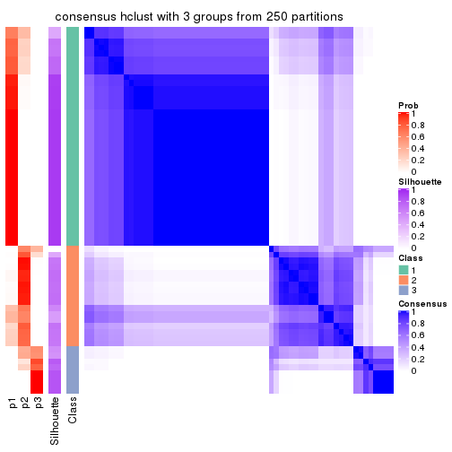
consensus_heatmap(res, k = 4)
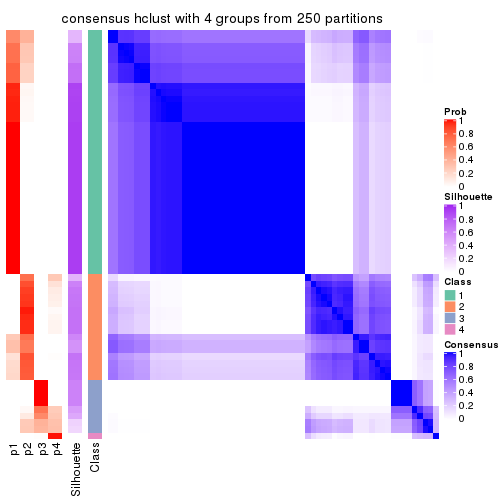
consensus_heatmap(res, k = 5)
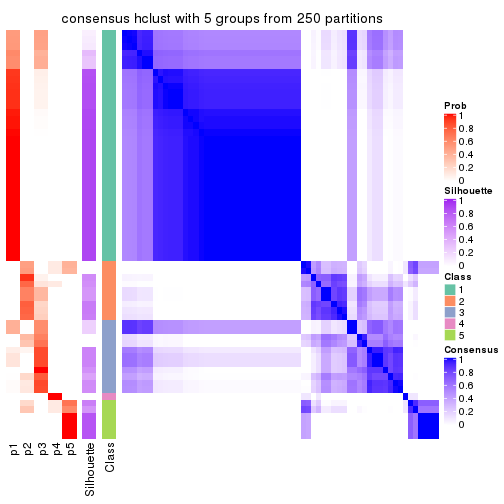
consensus_heatmap(res, k = 6)
Heatmaps for the membership of samples in all partitions to see how consistent they are:
membership_heatmap(res, k = 2)
membership_heatmap(res, k = 3)
membership_heatmap(res, k = 4)
membership_heatmap(res, k = 5)
membership_heatmap(res, k = 6)
As soon as we have had the classes for columns, we can look for signatures which are significantly different between classes which can be candidate marks for certain classes. Following are the heatmaps for signatures.
Signature heatmaps where rows are scaled:
get_signatures(res, k = 2)
get_signatures(res, k = 3)
get_signatures(res, k = 4)
get_signatures(res, k = 5)
get_signatures(res, k = 6)
Signature heatmaps where rows are not scaled:
get_signatures(res, k = 2, scale_rows = FALSE)
get_signatures(res, k = 3, scale_rows = FALSE)
get_signatures(res, k = 4, scale_rows = FALSE)
get_signatures(res, k = 5, scale_rows = FALSE)
get_signatures(res, k = 6, scale_rows = FALSE)
Compare the overlap of signatures from different k:
compare_signatures(res)
get_signature() returns a data frame invisibly. TO get the list of signatures, the function
call should be assigned to a variable explicitly. In following code, if plot argument is set
to FALSE, no heatmap is plotted while only the differential analysis is performed.
# code only for demonstration
tb = get_signature(res, k = ..., plot = FALSE)
An example of the output of tb is:
#> which_row fdr mean_1 mean_2 scaled_mean_1 scaled_mean_2 km
#> 1 38 0.042760348 8.373488 9.131774 -0.5533452 0.5164555 1
#> 2 40 0.018707592 7.106213 8.469186 -0.6173731 0.5762149 1
#> 3 55 0.019134737 10.221463 11.207825 -0.6159697 0.5749050 1
#> 4 59 0.006059896 5.921854 7.869574 -0.6899429 0.6439467 1
#> 5 60 0.018055526 8.928898 10.211722 -0.6204761 0.5791110 1
#> 6 98 0.009384629 15.714769 14.887706 0.6635654 -0.6193277 2
...
The columns in tb are:
which_row: row indices corresponding to the input matrix.fdr: FDR for the differential test. mean_x: The mean value in group x.scaled_mean_x: The mean value in group x after rows are scaled.km: Row groups if k-means clustering is applied to rows.UMAP plot which shows how samples are separated.
dimension_reduction(res, k = 2, method = "UMAP")
dimension_reduction(res, k = 3, method = "UMAP")
dimension_reduction(res, k = 4, method = "UMAP")
dimension_reduction(res, k = 5, method = "UMAP")

dimension_reduction(res, k = 6, method = "UMAP")
Following heatmap shows how subgroups are split when increasing k:
collect_classes(res)
If matrix rows can be associated to genes, consider to use GO_Enrichment(res,
...) to perform function enrichment for the signature genes.
The object with results only for a single top-value method and a single partition method can be extracted as:
res = res_list["ATC", "kmeans"]
# you can also extract it by
# res = res_list["ATC:kmeans"]
A summary of res and all the functions that can be applied to it:
res
#> A 'ConsensusPartition' object with k = 2, 3, 4, 5, 6.
#> On a matrix with 12627 rows and 62 columns.
#> Top rows (1000, 2000, 3000, 4000, 5000) are extracted by 'ATC' method.
#> Subgroups are detected by 'kmeans' method.
#> Performed in total 1250 partitions by row resampling.
#> Best k for subgroups seems to be 3.
#>
#> Following methods can be applied to this 'ConsensusPartition' object:
#> [1] "cola_report" "collect_classes" "collect_plots"
#> [4] "collect_stats" "colnames" "compare_signatures"
#> [7] "consensus_heatmap" "dimension_reduction" "functional_enrichment"
#> [10] "get_anno_col" "get_anno" "get_classes"
#> [13] "get_consensus" "get_matrix" "get_membership"
#> [16] "get_param" "get_signatures" "get_stats"
#> [19] "is_best_k" "is_stable_k" "membership_heatmap"
#> [22] "ncol" "nrow" "plot_ecdf"
#> [25] "rownames" "select_partition_number" "show"
#> [28] "suggest_best_k" "test_to_known_factors"
collect_plots() function collects all the plots made from res for all k (number of partitions)
into one single page to provide an easy and fast comparison between different k.
collect_plots(res)
The plots are:
k and the heatmap of
predicted classes for each k.k.k.k.All the plots in panels can be made by individual functions and they are plotted later in this section.
select_partition_number() produces several plots showing different
statistics for choosing “optimized” k. There are following statistics:
k;k, the area increased is defined as \(A_k - A_{k-1}\).The detailed explanations of these statistics can be found in the cola vignette.
Generally speaking, lower PAC score, higher mean silhouette score or higher
concordance corresponds to better partition. Rand index and Jaccard index
measure how similar the current partition is compared to partition with k-1.
If they are too similar, we won't accept k is better than k-1.
select_partition_number(res)
The numeric values for all these statistics can be obtained by get_stats().
get_stats(res)
#> k 1-PAC mean_silhouette concordance area_increased Rand Jaccard
#> 2 2 1.000 0.998 0.999 0.4445 0.556 0.556
#> 3 3 0.987 0.946 0.969 0.3379 0.720 0.544
#> 4 4 0.734 0.744 0.839 0.1506 0.785 0.520
#> 5 5 0.811 0.751 0.884 0.0732 0.956 0.855
#> 6 6 0.840 0.700 0.853 0.0494 0.906 0.688
suggest_best_k() suggests the best \(k\) based on these statistics. The rules are as follows:
NA.suggest_best_k(res)
#> [1] 3
#> attr(,"optional")
#> [1] 2
There is also optional best \(k\) = 2 that is worth to check.
Following shows the table of the partitions (You need to click the show/hide
code output link to see it). The membership matrix (columns with name p*)
is inferred by
clue::cl_consensus()
function with the SE method. Basically the value in the membership matrix
represents the probability to belong to a certain group. The finall class
label for an item is determined with the group with highest probability it
belongs to.
In get_classes() function, the entropy is calculated from the membership
matrix and the silhouette score is calculated from the consensus matrix.
cbind(get_classes(res, k = 2), get_membership(res, k = 2))
#> class entropy silhouette p1 p2
#> SRR372611 1 0.0000 0.999 1.000 0.000
#> SRR372612 1 0.0000 0.999 1.000 0.000
#> SRR372613 2 0.0000 0.998 0.000 1.000
#> SRR372614 1 0.0000 0.999 1.000 0.000
#> SRR372615 2 0.0000 0.998 0.000 1.000
#> SRR372616 1 0.0000 0.999 1.000 0.000
#> SRR372617 1 0.0000 0.999 1.000 0.000
#> SRR372618 1 0.0000 0.999 1.000 0.000
#> SRR372619 2 0.0000 0.998 0.000 1.000
#> SRR372620 1 0.0000 0.999 1.000 0.000
#> SRR372621 2 0.2236 0.963 0.036 0.964
#> SRR372622 1 0.0000 0.999 1.000 0.000
#> SRR372623 1 0.0000 0.999 1.000 0.000
#> SRR372624 1 0.0000 0.999 1.000 0.000
#> SRR372625 1 0.0000 0.999 1.000 0.000
#> SRR372626 2 0.0000 0.998 0.000 1.000
#> SRR372627 1 0.0000 0.999 1.000 0.000
#> SRR372628 1 0.0000 0.999 1.000 0.000
#> SRR372629 1 0.0000 0.999 1.000 0.000
#> SRR372630 1 0.0000 0.999 1.000 0.000
#> SRR372631 1 0.0000 0.999 1.000 0.000
#> SRR372632 1 0.0000 0.999 1.000 0.000
#> SRR372633 1 0.0000 0.999 1.000 0.000
#> SRR372634 1 0.0000 0.999 1.000 0.000
#> SRR372635 1 0.0000 0.999 1.000 0.000
#> SRR372636 1 0.0000 0.999 1.000 0.000
#> SRR372637 1 0.0000 0.999 1.000 0.000
#> SRR372638 1 0.0000 0.999 1.000 0.000
#> SRR372639 2 0.0376 0.995 0.004 0.996
#> SRR372640 1 0.0000 0.999 1.000 0.000
#> SRR372641 1 0.0000 0.999 1.000 0.000
#> SRR372642 1 0.0000 0.999 1.000 0.000
#> SRR372643 2 0.0000 0.998 0.000 1.000
#> SRR372644 1 0.0000 0.999 1.000 0.000
#> SRR372645 1 0.0000 0.999 1.000 0.000
#> SRR372646 1 0.0000 0.999 1.000 0.000
#> SRR372647 1 0.0000 0.999 1.000 0.000
#> SRR372648 1 0.0000 0.999 1.000 0.000
#> SRR372649 1 0.0000 0.999 1.000 0.000
#> SRR372650 2 0.0000 0.998 0.000 1.000
#> SRR372651 2 0.0000 0.998 0.000 1.000
#> SRR372652 1 0.1633 0.975 0.976 0.024
#> SRR372653 2 0.0000 0.998 0.000 1.000
#> SRR372654 1 0.0000 0.999 1.000 0.000
#> SRR372655 2 0.0000 0.998 0.000 1.000
#> SRR372656 1 0.0000 0.999 1.000 0.000
#> SRR372657 1 0.0000 0.999 1.000 0.000
#> SRR372658 2 0.0000 0.998 0.000 1.000
#> SRR372659 2 0.0000 0.998 0.000 1.000
#> SRR372660 2 0.0000 0.998 0.000 1.000
#> SRR372661 2 0.0000 0.998 0.000 1.000
#> SRR372662 1 0.0000 0.999 1.000 0.000
#> SRR372663 2 0.0000 0.998 0.000 1.000
#> SRR372664 1 0.0000 0.999 1.000 0.000
#> SRR372665 2 0.0000 0.998 0.000 1.000
#> SRR372666 2 0.0376 0.995 0.004 0.996
#> SRR372667 2 0.0000 0.998 0.000 1.000
#> SRR372668 1 0.0000 0.999 1.000 0.000
#> SRR372669 1 0.0000 0.999 1.000 0.000
#> SRR372670 1 0.0000 0.999 1.000 0.000
#> SRR372671 2 0.0000 0.998 0.000 1.000
#> SRR372672 1 0.0000 0.999 1.000 0.000
cbind(get_classes(res, k = 3), get_membership(res, k = 3))
#> class entropy silhouette p1 p2 p3
#> SRR372611 1 0.1860 0.945 0.948 0.000 0.052
#> SRR372612 1 0.0000 0.998 1.000 0.000 0.000
#> SRR372613 3 0.3879 0.911 0.000 0.152 0.848
#> SRR372614 1 0.0000 0.998 1.000 0.000 0.000
#> SRR372615 2 0.0000 0.915 0.000 1.000 0.000
#> SRR372616 2 0.1860 0.911 0.052 0.948 0.000
#> SRR372617 1 0.0000 0.998 1.000 0.000 0.000
#> SRR372618 1 0.0000 0.998 1.000 0.000 0.000
#> SRR372619 2 0.0000 0.915 0.000 1.000 0.000
#> SRR372620 1 0.0000 0.998 1.000 0.000 0.000
#> SRR372621 2 0.0424 0.915 0.008 0.992 0.000
#> SRR372622 1 0.0000 0.998 1.000 0.000 0.000
#> SRR372623 2 0.1860 0.911 0.052 0.948 0.000
#> SRR372624 1 0.0000 0.998 1.000 0.000 0.000
#> SRR372625 1 0.0000 0.998 1.000 0.000 0.000
#> SRR372626 2 0.0000 0.915 0.000 1.000 0.000
#> SRR372627 1 0.0000 0.998 1.000 0.000 0.000
#> SRR372628 1 0.0000 0.998 1.000 0.000 0.000
#> SRR372629 1 0.0000 0.998 1.000 0.000 0.000
#> SRR372630 1 0.0000 0.998 1.000 0.000 0.000
#> SRR372631 2 0.6267 0.258 0.452 0.548 0.000
#> SRR372632 1 0.0000 0.998 1.000 0.000 0.000
#> SRR372633 2 0.1860 0.911 0.052 0.948 0.000
#> SRR372634 1 0.0000 0.998 1.000 0.000 0.000
#> SRR372635 2 0.5291 0.628 0.268 0.732 0.000
#> SRR372636 1 0.0000 0.998 1.000 0.000 0.000
#> SRR372637 2 0.1860 0.911 0.052 0.948 0.000
#> SRR372638 1 0.0000 0.998 1.000 0.000 0.000
#> SRR372639 2 0.0000 0.915 0.000 1.000 0.000
#> SRR372640 1 0.0000 0.998 1.000 0.000 0.000
#> SRR372641 1 0.0000 0.998 1.000 0.000 0.000
#> SRR372642 1 0.0000 0.998 1.000 0.000 0.000
#> SRR372643 2 0.0000 0.915 0.000 1.000 0.000
#> SRR372644 1 0.0000 0.998 1.000 0.000 0.000
#> SRR372645 2 0.1860 0.911 0.052 0.948 0.000
#> SRR372646 1 0.0000 0.998 1.000 0.000 0.000
#> SRR372647 1 0.0000 0.998 1.000 0.000 0.000
#> SRR372648 1 0.0000 0.998 1.000 0.000 0.000
#> SRR372649 1 0.0000 0.998 1.000 0.000 0.000
#> SRR372650 3 0.1860 0.965 0.000 0.052 0.948
#> SRR372651 3 0.3619 0.926 0.000 0.136 0.864
#> SRR372652 2 0.1860 0.911 0.052 0.948 0.000
#> SRR372653 3 0.1860 0.965 0.000 0.052 0.948
#> SRR372654 1 0.0000 0.998 1.000 0.000 0.000
#> SRR372655 3 0.1860 0.965 0.000 0.052 0.948
#> SRR372656 1 0.0000 0.998 1.000 0.000 0.000
#> SRR372657 1 0.0000 0.998 1.000 0.000 0.000
#> SRR372658 3 0.1860 0.965 0.000 0.052 0.948
#> SRR372659 2 0.0000 0.915 0.000 1.000 0.000
#> SRR372660 2 0.0000 0.915 0.000 1.000 0.000
#> SRR372661 2 0.0000 0.915 0.000 1.000 0.000
#> SRR372662 2 0.1860 0.911 0.052 0.948 0.000
#> SRR372663 2 0.0000 0.915 0.000 1.000 0.000
#> SRR372664 1 0.0000 0.998 1.000 0.000 0.000
#> SRR372665 3 0.1860 0.965 0.000 0.052 0.948
#> SRR372666 2 0.0000 0.915 0.000 1.000 0.000
#> SRR372667 3 0.1860 0.965 0.000 0.052 0.948
#> SRR372668 1 0.0000 0.998 1.000 0.000 0.000
#> SRR372669 1 0.0000 0.998 1.000 0.000 0.000
#> SRR372670 1 0.0000 0.998 1.000 0.000 0.000
#> SRR372671 3 0.3619 0.926 0.000 0.136 0.864
#> SRR372672 2 0.1860 0.911 0.052 0.948 0.000
cbind(get_classes(res, k = 4), get_membership(res, k = 4))
#> class entropy silhouette p1 p2 p3 p4
#> SRR372611 1 0.3649 0.723 0.796 0.204 0.000 0.000
#> SRR372612 1 0.0000 0.948 1.000 0.000 0.000 0.000
#> SRR372613 2 0.4661 0.420 0.000 0.728 0.256 0.016
#> SRR372614 4 0.4679 0.542 0.352 0.000 0.000 0.648
#> SRR372615 2 0.4406 0.820 0.000 0.700 0.000 0.300
#> SRR372616 4 0.0000 0.649 0.000 0.000 0.000 1.000
#> SRR372617 4 0.4406 0.615 0.300 0.000 0.000 0.700
#> SRR372618 1 0.0000 0.948 1.000 0.000 0.000 0.000
#> SRR372619 2 0.4406 0.820 0.000 0.700 0.000 0.300
#> SRR372620 1 0.0000 0.948 1.000 0.000 0.000 0.000
#> SRR372621 2 0.4985 0.688 0.000 0.532 0.000 0.468
#> SRR372622 1 0.4998 -0.238 0.512 0.000 0.000 0.488
#> SRR372623 4 0.1792 0.559 0.000 0.068 0.000 0.932
#> SRR372624 1 0.0000 0.948 1.000 0.000 0.000 0.000
#> SRR372625 1 0.0000 0.948 1.000 0.000 0.000 0.000
#> SRR372626 2 0.4406 0.820 0.000 0.700 0.000 0.300
#> SRR372627 1 0.0000 0.948 1.000 0.000 0.000 0.000
#> SRR372628 1 0.0000 0.948 1.000 0.000 0.000 0.000
#> SRR372629 4 0.4277 0.634 0.280 0.000 0.000 0.720
#> SRR372630 1 0.0000 0.948 1.000 0.000 0.000 0.000
#> SRR372631 4 0.1792 0.666 0.068 0.000 0.000 0.932
#> SRR372632 1 0.0000 0.948 1.000 0.000 0.000 0.000
#> SRR372633 4 0.0000 0.649 0.000 0.000 0.000 1.000
#> SRR372634 1 0.0000 0.948 1.000 0.000 0.000 0.000
#> SRR372635 4 0.1118 0.662 0.036 0.000 0.000 0.964
#> SRR372636 1 0.0000 0.948 1.000 0.000 0.000 0.000
#> SRR372637 4 0.0000 0.649 0.000 0.000 0.000 1.000
#> SRR372638 1 0.0000 0.948 1.000 0.000 0.000 0.000
#> SRR372639 2 0.4999 0.654 0.000 0.508 0.000 0.492
#> SRR372640 1 0.0000 0.948 1.000 0.000 0.000 0.000
#> SRR372641 4 0.5000 0.214 0.496 0.000 0.000 0.504
#> SRR372642 1 0.3172 0.748 0.840 0.000 0.000 0.160
#> SRR372643 2 0.4500 0.816 0.000 0.684 0.000 0.316
#> SRR372644 1 0.0000 0.948 1.000 0.000 0.000 0.000
#> SRR372645 4 0.0000 0.649 0.000 0.000 0.000 1.000
#> SRR372646 1 0.0000 0.948 1.000 0.000 0.000 0.000
#> SRR372647 4 0.5000 0.202 0.500 0.000 0.000 0.500
#> SRR372648 1 0.0000 0.948 1.000 0.000 0.000 0.000
#> SRR372649 1 0.3172 0.748 0.840 0.000 0.000 0.160
#> SRR372650 3 0.0000 0.925 0.000 0.000 1.000 0.000
#> SRR372651 2 0.4844 0.390 0.000 0.688 0.300 0.012
#> SRR372652 4 0.2704 0.445 0.000 0.124 0.000 0.876
#> SRR372653 3 0.0000 0.925 0.000 0.000 1.000 0.000
#> SRR372654 4 0.4933 0.388 0.432 0.000 0.000 0.568
#> SRR372655 3 0.4679 0.491 0.000 0.352 0.648 0.000
#> SRR372656 1 0.0000 0.948 1.000 0.000 0.000 0.000
#> SRR372657 1 0.0000 0.948 1.000 0.000 0.000 0.000
#> SRR372658 3 0.0000 0.925 0.000 0.000 1.000 0.000
#> SRR372659 2 0.4406 0.820 0.000 0.700 0.000 0.300
#> SRR372660 2 0.4008 0.795 0.000 0.756 0.000 0.244
#> SRR372661 2 0.4697 0.797 0.000 0.644 0.000 0.356
#> SRR372662 4 0.0000 0.649 0.000 0.000 0.000 1.000
#> SRR372663 2 0.4008 0.795 0.000 0.756 0.000 0.244
#> SRR372664 1 0.0000 0.948 1.000 0.000 0.000 0.000
#> SRR372665 3 0.0000 0.925 0.000 0.000 1.000 0.000
#> SRR372666 2 0.4999 0.654 0.000 0.508 0.000 0.492
#> SRR372667 3 0.0336 0.922 0.000 0.008 0.992 0.000
#> SRR372668 1 0.0000 0.948 1.000 0.000 0.000 0.000
#> SRR372669 4 0.4406 0.615 0.300 0.000 0.000 0.700
#> SRR372670 1 0.0000 0.948 1.000 0.000 0.000 0.000
#> SRR372671 2 0.4844 0.390 0.000 0.688 0.300 0.012
#> SRR372672 4 0.0000 0.649 0.000 0.000 0.000 1.000
cbind(get_classes(res, k = 5), get_membership(res, k = 5))
#> class entropy silhouette p1 p2 p3 p4 p5
#> SRR372611 5 0.6180 0.00000 0.404 0.000 0.136 0.000 0.460
#> SRR372612 1 0.0000 0.91342 1.000 0.000 0.000 0.000 0.000
#> SRR372613 2 0.5485 0.52423 0.000 0.540 0.004 0.056 0.400
#> SRR372614 3 0.1410 0.79648 0.060 0.000 0.940 0.000 0.000
#> SRR372615 2 0.0451 0.76983 0.000 0.988 0.008 0.000 0.004
#> SRR372616 3 0.3291 0.80602 0.000 0.040 0.840 0.000 0.120
#> SRR372617 3 0.0880 0.81470 0.032 0.000 0.968 0.000 0.000
#> SRR372618 1 0.0404 0.89433 0.988 0.000 0.012 0.000 0.000
#> SRR372619 2 0.0798 0.76983 0.000 0.976 0.008 0.000 0.016
#> SRR372620 1 0.0000 0.91342 1.000 0.000 0.000 0.000 0.000
#> SRR372621 2 0.4111 0.68637 0.000 0.788 0.092 0.000 0.120
#> SRR372622 3 0.2690 0.68516 0.156 0.000 0.844 0.000 0.000
#> SRR372623 3 0.5758 0.51954 0.000 0.268 0.600 0.000 0.132
#> SRR372624 1 0.0000 0.91342 1.000 0.000 0.000 0.000 0.000
#> SRR372625 1 0.0000 0.91342 1.000 0.000 0.000 0.000 0.000
#> SRR372626 2 0.0693 0.77022 0.000 0.980 0.008 0.000 0.012
#> SRR372627 1 0.0000 0.91342 1.000 0.000 0.000 0.000 0.000
#> SRR372628 1 0.0000 0.91342 1.000 0.000 0.000 0.000 0.000
#> SRR372629 3 0.0880 0.81470 0.032 0.000 0.968 0.000 0.000
#> SRR372630 1 0.0404 0.89433 0.988 0.000 0.012 0.000 0.000
#> SRR372631 3 0.0771 0.81822 0.004 0.020 0.976 0.000 0.000
#> SRR372632 1 0.0000 0.91342 1.000 0.000 0.000 0.000 0.000
#> SRR372633 3 0.3291 0.80602 0.000 0.040 0.840 0.000 0.120
#> SRR372634 1 0.0000 0.91342 1.000 0.000 0.000 0.000 0.000
#> SRR372635 3 0.0771 0.81822 0.004 0.020 0.976 0.000 0.000
#> SRR372636 1 0.0000 0.91342 1.000 0.000 0.000 0.000 0.000
#> SRR372637 3 0.3051 0.81103 0.000 0.028 0.852 0.000 0.120
#> SRR372638 1 0.0000 0.91342 1.000 0.000 0.000 0.000 0.000
#> SRR372639 2 0.4591 0.65485 0.000 0.748 0.132 0.000 0.120
#> SRR372640 1 0.0000 0.91342 1.000 0.000 0.000 0.000 0.000
#> SRR372641 3 0.2732 0.67587 0.160 0.000 0.840 0.000 0.000
#> SRR372642 1 0.4256 -0.22311 0.564 0.000 0.436 0.000 0.000
#> SRR372643 2 0.1281 0.76632 0.000 0.956 0.012 0.000 0.032
#> SRR372644 1 0.0000 0.91342 1.000 0.000 0.000 0.000 0.000
#> SRR372645 3 0.3291 0.80602 0.000 0.040 0.840 0.000 0.120
#> SRR372646 1 0.0000 0.91342 1.000 0.000 0.000 0.000 0.000
#> SRR372647 3 0.2732 0.67587 0.160 0.000 0.840 0.000 0.000
#> SRR372648 1 0.0000 0.91342 1.000 0.000 0.000 0.000 0.000
#> SRR372649 1 0.4256 -0.22311 0.564 0.000 0.436 0.000 0.000
#> SRR372650 4 0.0162 0.96737 0.000 0.000 0.000 0.996 0.004
#> SRR372651 2 0.5128 0.60576 0.000 0.656 0.000 0.076 0.268
#> SRR372652 3 0.5970 0.33218 0.000 0.356 0.524 0.000 0.120
#> SRR372653 4 0.0000 0.96873 0.000 0.000 0.000 1.000 0.000
#> SRR372654 3 0.1908 0.76681 0.092 0.000 0.908 0.000 0.000
#> SRR372655 2 0.6764 0.00619 0.000 0.368 0.000 0.364 0.268
#> SRR372656 1 0.0000 0.91342 1.000 0.000 0.000 0.000 0.000
#> SRR372657 1 0.0000 0.91342 1.000 0.000 0.000 0.000 0.000
#> SRR372658 4 0.0000 0.96873 0.000 0.000 0.000 1.000 0.000
#> SRR372659 2 0.0798 0.77004 0.000 0.976 0.008 0.000 0.016
#> SRR372660 2 0.2690 0.73072 0.000 0.844 0.000 0.000 0.156
#> SRR372661 2 0.3214 0.72007 0.000 0.844 0.036 0.000 0.120
#> SRR372662 3 0.3051 0.81103 0.000 0.028 0.852 0.000 0.120
#> SRR372663 2 0.2773 0.72807 0.000 0.836 0.000 0.000 0.164
#> SRR372664 1 0.0000 0.91342 1.000 0.000 0.000 0.000 0.000
#> SRR372665 4 0.0000 0.96873 0.000 0.000 0.000 1.000 0.000
#> SRR372666 2 0.4591 0.65485 0.000 0.748 0.132 0.000 0.120
#> SRR372667 4 0.2488 0.87460 0.000 0.004 0.000 0.872 0.124
#> SRR372668 1 0.0000 0.91342 1.000 0.000 0.000 0.000 0.000
#> SRR372669 3 0.0880 0.81470 0.032 0.000 0.968 0.000 0.000
#> SRR372670 1 0.0000 0.91342 1.000 0.000 0.000 0.000 0.000
#> SRR372671 2 0.5128 0.60576 0.000 0.656 0.000 0.076 0.268
#> SRR372672 3 0.3051 0.81103 0.000 0.028 0.852 0.000 0.120
cbind(get_classes(res, k = 6), get_membership(res, k = 6))
#> class entropy silhouette p1 p2 p3 p4 p5 p6
#> SRR372611 6 0.4474 0.000 0.108 0.000 0.188 0.000 0.000 0.704
#> SRR372612 1 0.0000 0.990 1.000 0.000 0.000 0.000 0.000 0.000
#> SRR372613 4 0.2592 0.595 0.000 0.016 0.004 0.864 0.000 0.116
#> SRR372614 3 0.0146 0.667 0.004 0.000 0.996 0.000 0.000 0.000
#> SRR372615 2 0.5219 0.302 0.000 0.552 0.000 0.340 0.000 0.108
#> SRR372616 3 0.4802 0.432 0.000 0.452 0.496 0.000 0.000 0.052
#> SRR372617 3 0.0146 0.667 0.004 0.000 0.996 0.000 0.000 0.000
#> SRR372618 1 0.1444 0.901 0.928 0.000 0.072 0.000 0.000 0.000
#> SRR372619 2 0.5290 0.306 0.000 0.544 0.000 0.340 0.000 0.116
#> SRR372620 1 0.0000 0.990 1.000 0.000 0.000 0.000 0.000 0.000
#> SRR372621 2 0.1967 0.565 0.000 0.904 0.012 0.000 0.000 0.084
#> SRR372622 3 0.0790 0.648 0.032 0.000 0.968 0.000 0.000 0.000
#> SRR372623 2 0.3835 0.395 0.000 0.772 0.164 0.004 0.000 0.060
#> SRR372624 1 0.0000 0.990 1.000 0.000 0.000 0.000 0.000 0.000
#> SRR372625 1 0.0000 0.990 1.000 0.000 0.000 0.000 0.000 0.000
#> SRR372626 2 0.5324 0.303 0.000 0.540 0.000 0.340 0.000 0.120
#> SRR372627 1 0.0000 0.990 1.000 0.000 0.000 0.000 0.000 0.000
#> SRR372628 1 0.0000 0.990 1.000 0.000 0.000 0.000 0.000 0.000
#> SRR372629 3 0.0508 0.667 0.004 0.000 0.984 0.000 0.000 0.012
#> SRR372630 1 0.1444 0.901 0.928 0.000 0.072 0.000 0.000 0.000
#> SRR372631 3 0.0508 0.667 0.004 0.000 0.984 0.000 0.000 0.012
#> SRR372632 1 0.0000 0.990 1.000 0.000 0.000 0.000 0.000 0.000
#> SRR372633 3 0.4802 0.432 0.000 0.452 0.496 0.000 0.000 0.052
#> SRR372634 1 0.0000 0.990 1.000 0.000 0.000 0.000 0.000 0.000
#> SRR372635 3 0.1285 0.653 0.000 0.004 0.944 0.000 0.000 0.052
#> SRR372636 1 0.0000 0.990 1.000 0.000 0.000 0.000 0.000 0.000
#> SRR372637 3 0.4791 0.454 0.000 0.436 0.512 0.000 0.000 0.052
#> SRR372638 1 0.0000 0.990 1.000 0.000 0.000 0.000 0.000 0.000
#> SRR372639 2 0.1007 0.555 0.000 0.956 0.044 0.000 0.000 0.000
#> SRR372640 1 0.0000 0.990 1.000 0.000 0.000 0.000 0.000 0.000
#> SRR372641 3 0.1267 0.618 0.060 0.000 0.940 0.000 0.000 0.000
#> SRR372642 3 0.2854 0.354 0.208 0.000 0.792 0.000 0.000 0.000
#> SRR372643 2 0.5112 0.365 0.000 0.592 0.000 0.296 0.000 0.112
#> SRR372644 1 0.0000 0.990 1.000 0.000 0.000 0.000 0.000 0.000
#> SRR372645 3 0.4802 0.432 0.000 0.452 0.496 0.000 0.000 0.052
#> SRR372646 1 0.0000 0.990 1.000 0.000 0.000 0.000 0.000 0.000
#> SRR372647 3 0.1267 0.618 0.060 0.000 0.940 0.000 0.000 0.000
#> SRR372648 1 0.0000 0.990 1.000 0.000 0.000 0.000 0.000 0.000
#> SRR372649 3 0.2854 0.354 0.208 0.000 0.792 0.000 0.000 0.000
#> SRR372650 5 0.0146 0.908 0.000 0.000 0.000 0.000 0.996 0.004
#> SRR372651 4 0.1863 0.781 0.000 0.104 0.000 0.896 0.000 0.000
#> SRR372652 2 0.3566 0.421 0.000 0.788 0.156 0.000 0.000 0.056
#> SRR372653 5 0.0000 0.910 0.000 0.000 0.000 0.000 1.000 0.000
#> SRR372654 3 0.0260 0.665 0.008 0.000 0.992 0.000 0.000 0.000
#> SRR372655 4 0.2499 0.739 0.000 0.048 0.000 0.880 0.072 0.000
#> SRR372656 1 0.0000 0.990 1.000 0.000 0.000 0.000 0.000 0.000
#> SRR372657 1 0.0000 0.990 1.000 0.000 0.000 0.000 0.000 0.000
#> SRR372658 5 0.0000 0.910 0.000 0.000 0.000 0.000 1.000 0.000
#> SRR372659 2 0.5233 0.316 0.000 0.556 0.000 0.332 0.000 0.112
#> SRR372660 4 0.4929 0.495 0.000 0.280 0.000 0.620 0.000 0.100
#> SRR372661 2 0.2822 0.552 0.000 0.852 0.000 0.040 0.000 0.108
#> SRR372662 3 0.4791 0.454 0.000 0.436 0.512 0.000 0.000 0.052
#> SRR372663 4 0.4305 0.602 0.000 0.260 0.000 0.684 0.000 0.056
#> SRR372664 1 0.0000 0.990 1.000 0.000 0.000 0.000 0.000 0.000
#> SRR372665 5 0.0000 0.910 0.000 0.000 0.000 0.000 1.000 0.000
#> SRR372666 2 0.1219 0.554 0.000 0.948 0.048 0.000 0.000 0.004
#> SRR372667 5 0.3390 0.608 0.000 0.000 0.000 0.296 0.704 0.000
#> SRR372668 1 0.0000 0.990 1.000 0.000 0.000 0.000 0.000 0.000
#> SRR372669 3 0.0146 0.667 0.004 0.000 0.996 0.000 0.000 0.000
#> SRR372670 1 0.0000 0.990 1.000 0.000 0.000 0.000 0.000 0.000
#> SRR372671 4 0.1863 0.781 0.000 0.104 0.000 0.896 0.000 0.000
#> SRR372672 3 0.4720 0.481 0.000 0.388 0.560 0.000 0.000 0.052
Heatmaps for the consensus matrix. It visualizes the probability of two samples to be in a same group.
consensus_heatmap(res, k = 2)
consensus_heatmap(res, k = 3)
consensus_heatmap(res, k = 4)
consensus_heatmap(res, k = 5)
consensus_heatmap(res, k = 6)
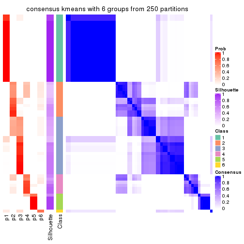
Heatmaps for the membership of samples in all partitions to see how consistent they are:
membership_heatmap(res, k = 2)
membership_heatmap(res, k = 3)
membership_heatmap(res, k = 4)
membership_heatmap(res, k = 5)
membership_heatmap(res, k = 6)
As soon as we have had the classes for columns, we can look for signatures which are significantly different between classes which can be candidate marks for certain classes. Following are the heatmaps for signatures.
Signature heatmaps where rows are scaled:
get_signatures(res, k = 2)
get_signatures(res, k = 3)
get_signatures(res, k = 4)
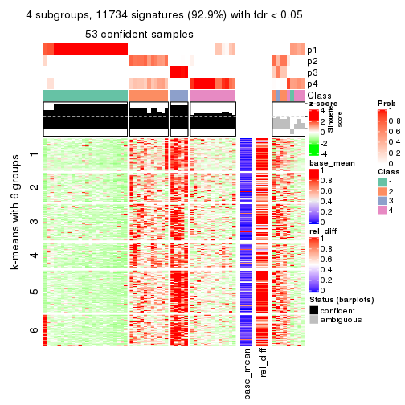
get_signatures(res, k = 5)
get_signatures(res, k = 6)
Signature heatmaps where rows are not scaled:
get_signatures(res, k = 2, scale_rows = FALSE)
get_signatures(res, k = 3, scale_rows = FALSE)
get_signatures(res, k = 4, scale_rows = FALSE)
#> Error in mat[ceiling(1:nr/h_ratio), ceiling(1:nc/w_ratio), drop = FALSE]: subscript out of bounds
get_signatures(res, k = 5, scale_rows = FALSE)
get_signatures(res, k = 6, scale_rows = FALSE)
#> Error in mat[ceiling(1:nr/h_ratio), ceiling(1:nc/w_ratio), drop = FALSE]: subscript out of bounds

Compare the overlap of signatures from different k:
compare_signatures(res)
get_signature() returns a data frame invisibly. TO get the list of signatures, the function
call should be assigned to a variable explicitly. In following code, if plot argument is set
to FALSE, no heatmap is plotted while only the differential analysis is performed.
# code only for demonstration
tb = get_signature(res, k = ..., plot = FALSE)
An example of the output of tb is:
#> which_row fdr mean_1 mean_2 scaled_mean_1 scaled_mean_2 km
#> 1 38 0.042760348 8.373488 9.131774 -0.5533452 0.5164555 1
#> 2 40 0.018707592 7.106213 8.469186 -0.6173731 0.5762149 1
#> 3 55 0.019134737 10.221463 11.207825 -0.6159697 0.5749050 1
#> 4 59 0.006059896 5.921854 7.869574 -0.6899429 0.6439467 1
#> 5 60 0.018055526 8.928898 10.211722 -0.6204761 0.5791110 1
#> 6 98 0.009384629 15.714769 14.887706 0.6635654 -0.6193277 2
...
The columns in tb are:
which_row: row indices corresponding to the input matrix.fdr: FDR for the differential test. mean_x: The mean value in group x.scaled_mean_x: The mean value in group x after rows are scaled.km: Row groups if k-means clustering is applied to rows.UMAP plot which shows how samples are separated.
dimension_reduction(res, k = 2, method = "UMAP")
dimension_reduction(res, k = 3, method = "UMAP")
dimension_reduction(res, k = 4, method = "UMAP")
dimension_reduction(res, k = 5, method = "UMAP")
dimension_reduction(res, k = 6, method = "UMAP")
Following heatmap shows how subgroups are split when increasing k:
collect_classes(res)
If matrix rows can be associated to genes, consider to use GO_Enrichment(res,
...) to perform function enrichment for the signature genes.
The object with results only for a single top-value method and a single partition method can be extracted as:
res = res_list["ATC", "skmeans"]
# you can also extract it by
# res = res_list["ATC:skmeans"]
A summary of res and all the functions that can be applied to it:
res
#> A 'ConsensusPartition' object with k = 2, 3, 4, 5, 6.
#> On a matrix with 12627 rows and 62 columns.
#> Top rows (1000, 2000, 3000, 4000, 5000) are extracted by 'ATC' method.
#> Subgroups are detected by 'skmeans' method.
#> Performed in total 1250 partitions by row resampling.
#> Best k for subgroups seems to be 4.
#>
#> Following methods can be applied to this 'ConsensusPartition' object:
#> [1] "cola_report" "collect_classes" "collect_plots"
#> [4] "collect_stats" "colnames" "compare_signatures"
#> [7] "consensus_heatmap" "dimension_reduction" "functional_enrichment"
#> [10] "get_anno_col" "get_anno" "get_classes"
#> [13] "get_consensus" "get_matrix" "get_membership"
#> [16] "get_param" "get_signatures" "get_stats"
#> [19] "is_best_k" "is_stable_k" "membership_heatmap"
#> [22] "ncol" "nrow" "plot_ecdf"
#> [25] "rownames" "select_partition_number" "show"
#> [28] "suggest_best_k" "test_to_known_factors"
collect_plots() function collects all the plots made from res for all k (number of partitions)
into one single page to provide an easy and fast comparison between different k.
collect_plots(res)
The plots are:
k and the heatmap of
predicted classes for each k.k.k.k.All the plots in panels can be made by individual functions and they are plotted later in this section.
select_partition_number() produces several plots showing different
statistics for choosing “optimized” k. There are following statistics:
k;k, the area increased is defined as \(A_k - A_{k-1}\).The detailed explanations of these statistics can be found in the cola vignette.
Generally speaking, lower PAC score, higher mean silhouette score or higher
concordance corresponds to better partition. Rand index and Jaccard index
measure how similar the current partition is compared to partition with k-1.
If they are too similar, we won't accept k is better than k-1.
select_partition_number(res)
The numeric values for all these statistics can be obtained by get_stats().
get_stats(res)
#> k 1-PAC mean_silhouette concordance area_increased Rand Jaccard
#> 2 2 1.000 0.999 1.000 0.4898 0.511 0.511
#> 3 3 0.979 0.950 0.979 0.1665 0.919 0.842
#> 4 4 0.948 0.908 0.960 0.0501 0.947 0.880
#> 5 5 0.895 0.855 0.923 0.0427 0.986 0.965
#> 6 6 0.860 0.808 0.907 0.0303 0.997 0.993
suggest_best_k() suggests the best \(k\) based on these statistics. The rules are as follows:
NA.suggest_best_k(res)
#> [1] 4
#> attr(,"optional")
#> [1] 2 3
There is also optional best \(k\) = 2 3 that is worth to check.
Following shows the table of the partitions (You need to click the show/hide
code output link to see it). The membership matrix (columns with name p*)
is inferred by
clue::cl_consensus()
function with the SE method. Basically the value in the membership matrix
represents the probability to belong to a certain group. The finall class
label for an item is determined with the group with highest probability it
belongs to.
In get_classes() function, the entropy is calculated from the membership
matrix and the silhouette score is calculated from the consensus matrix.
cbind(get_classes(res, k = 2), get_membership(res, k = 2))
#> class entropy silhouette p1 p2
#> SRR372611 1 0.0000 0.999 1.000 0.000
#> SRR372612 1 0.0000 0.999 1.000 0.000
#> SRR372613 2 0.0000 1.000 0.000 1.000
#> SRR372614 1 0.0000 0.999 1.000 0.000
#> SRR372615 2 0.0000 1.000 0.000 1.000
#> SRR372616 2 0.0000 1.000 0.000 1.000
#> SRR372617 1 0.0000 0.999 1.000 0.000
#> SRR372618 1 0.0000 0.999 1.000 0.000
#> SRR372619 2 0.0000 1.000 0.000 1.000
#> SRR372620 1 0.0000 0.999 1.000 0.000
#> SRR372621 2 0.0000 1.000 0.000 1.000
#> SRR372622 1 0.0000 0.999 1.000 0.000
#> SRR372623 2 0.0000 1.000 0.000 1.000
#> SRR372624 1 0.0000 0.999 1.000 0.000
#> SRR372625 1 0.0000 0.999 1.000 0.000
#> SRR372626 2 0.0000 1.000 0.000 1.000
#> SRR372627 1 0.0000 0.999 1.000 0.000
#> SRR372628 1 0.0000 0.999 1.000 0.000
#> SRR372629 1 0.0000 0.999 1.000 0.000
#> SRR372630 1 0.0000 0.999 1.000 0.000
#> SRR372631 1 0.0000 0.999 1.000 0.000
#> SRR372632 1 0.0000 0.999 1.000 0.000
#> SRR372633 2 0.0376 0.996 0.004 0.996
#> SRR372634 1 0.0000 0.999 1.000 0.000
#> SRR372635 1 0.0000 0.999 1.000 0.000
#> SRR372636 1 0.0000 0.999 1.000 0.000
#> SRR372637 1 0.0000 0.999 1.000 0.000
#> SRR372638 1 0.0000 0.999 1.000 0.000
#> SRR372639 2 0.0000 1.000 0.000 1.000
#> SRR372640 1 0.0000 0.999 1.000 0.000
#> SRR372641 1 0.0000 0.999 1.000 0.000
#> SRR372642 1 0.0000 0.999 1.000 0.000
#> SRR372643 2 0.0000 1.000 0.000 1.000
#> SRR372644 1 0.0000 0.999 1.000 0.000
#> SRR372645 2 0.0000 1.000 0.000 1.000
#> SRR372646 1 0.0000 0.999 1.000 0.000
#> SRR372647 1 0.0000 0.999 1.000 0.000
#> SRR372648 1 0.0000 0.999 1.000 0.000
#> SRR372649 1 0.0000 0.999 1.000 0.000
#> SRR372650 2 0.0000 1.000 0.000 1.000
#> SRR372651 2 0.0000 1.000 0.000 1.000
#> SRR372652 2 0.0000 1.000 0.000 1.000
#> SRR372653 2 0.0000 1.000 0.000 1.000
#> SRR372654 1 0.0000 0.999 1.000 0.000
#> SRR372655 2 0.0000 1.000 0.000 1.000
#> SRR372656 1 0.0000 0.999 1.000 0.000
#> SRR372657 1 0.0000 0.999 1.000 0.000
#> SRR372658 2 0.0000 1.000 0.000 1.000
#> SRR372659 2 0.0000 1.000 0.000 1.000
#> SRR372660 2 0.0000 1.000 0.000 1.000
#> SRR372661 2 0.0000 1.000 0.000 1.000
#> SRR372662 1 0.1633 0.975 0.976 0.024
#> SRR372663 2 0.0000 1.000 0.000 1.000
#> SRR372664 1 0.0000 0.999 1.000 0.000
#> SRR372665 2 0.0000 1.000 0.000 1.000
#> SRR372666 2 0.0000 1.000 0.000 1.000
#> SRR372667 2 0.0000 1.000 0.000 1.000
#> SRR372668 1 0.0000 0.999 1.000 0.000
#> SRR372669 1 0.0000 0.999 1.000 0.000
#> SRR372670 1 0.0000 0.999 1.000 0.000
#> SRR372671 2 0.0000 1.000 0.000 1.000
#> SRR372672 1 0.0000 0.999 1.000 0.000
cbind(get_classes(res, k = 3), get_membership(res, k = 3))
#> class entropy silhouette p1 p2 p3
#> SRR372611 1 0.0000 0.983 1.000 0.000 0.000
#> SRR372612 1 0.0000 0.983 1.000 0.000 0.000
#> SRR372613 3 0.0000 0.982 0.000 0.000 1.000
#> SRR372614 1 0.0000 0.983 1.000 0.000 0.000
#> SRR372615 3 0.0000 0.982 0.000 0.000 1.000
#> SRR372616 2 0.3752 0.815 0.000 0.856 0.144
#> SRR372617 1 0.0000 0.983 1.000 0.000 0.000
#> SRR372618 1 0.0000 0.983 1.000 0.000 0.000
#> SRR372619 3 0.0000 0.982 0.000 0.000 1.000
#> SRR372620 1 0.0000 0.983 1.000 0.000 0.000
#> SRR372621 3 0.0000 0.982 0.000 0.000 1.000
#> SRR372622 1 0.0000 0.983 1.000 0.000 0.000
#> SRR372623 3 0.0237 0.979 0.000 0.004 0.996
#> SRR372624 1 0.0000 0.983 1.000 0.000 0.000
#> SRR372625 1 0.0000 0.983 1.000 0.000 0.000
#> SRR372626 3 0.0000 0.982 0.000 0.000 1.000
#> SRR372627 1 0.0000 0.983 1.000 0.000 0.000
#> SRR372628 1 0.0000 0.983 1.000 0.000 0.000
#> SRR372629 1 0.1289 0.953 0.968 0.032 0.000
#> SRR372630 1 0.0000 0.983 1.000 0.000 0.000
#> SRR372631 1 0.6126 0.314 0.600 0.400 0.000
#> SRR372632 1 0.0000 0.983 1.000 0.000 0.000
#> SRR372633 2 0.2537 0.875 0.000 0.920 0.080
#> SRR372634 1 0.0000 0.983 1.000 0.000 0.000
#> SRR372635 1 0.3267 0.858 0.884 0.116 0.000
#> SRR372636 1 0.0000 0.983 1.000 0.000 0.000
#> SRR372637 2 0.3879 0.797 0.152 0.848 0.000
#> SRR372638 1 0.0000 0.983 1.000 0.000 0.000
#> SRR372639 3 0.0000 0.982 0.000 0.000 1.000
#> SRR372640 1 0.0000 0.983 1.000 0.000 0.000
#> SRR372641 1 0.0000 0.983 1.000 0.000 0.000
#> SRR372642 1 0.0000 0.983 1.000 0.000 0.000
#> SRR372643 3 0.0000 0.982 0.000 0.000 1.000
#> SRR372644 1 0.0000 0.983 1.000 0.000 0.000
#> SRR372645 3 0.5948 0.401 0.000 0.360 0.640
#> SRR372646 1 0.0000 0.983 1.000 0.000 0.000
#> SRR372647 1 0.0000 0.983 1.000 0.000 0.000
#> SRR372648 1 0.0000 0.983 1.000 0.000 0.000
#> SRR372649 1 0.0000 0.983 1.000 0.000 0.000
#> SRR372650 3 0.0000 0.982 0.000 0.000 1.000
#> SRR372651 3 0.0000 0.982 0.000 0.000 1.000
#> SRR372652 3 0.0000 0.982 0.000 0.000 1.000
#> SRR372653 3 0.0000 0.982 0.000 0.000 1.000
#> SRR372654 1 0.0000 0.983 1.000 0.000 0.000
#> SRR372655 3 0.0000 0.982 0.000 0.000 1.000
#> SRR372656 1 0.0000 0.983 1.000 0.000 0.000
#> SRR372657 1 0.0000 0.983 1.000 0.000 0.000
#> SRR372658 3 0.0000 0.982 0.000 0.000 1.000
#> SRR372659 3 0.0000 0.982 0.000 0.000 1.000
#> SRR372660 3 0.0000 0.982 0.000 0.000 1.000
#> SRR372661 3 0.0000 0.982 0.000 0.000 1.000
#> SRR372662 2 0.0000 0.895 0.000 1.000 0.000
#> SRR372663 3 0.0000 0.982 0.000 0.000 1.000
#> SRR372664 1 0.0000 0.983 1.000 0.000 0.000
#> SRR372665 3 0.0000 0.982 0.000 0.000 1.000
#> SRR372666 3 0.0000 0.982 0.000 0.000 1.000
#> SRR372667 3 0.0000 0.982 0.000 0.000 1.000
#> SRR372668 1 0.0000 0.983 1.000 0.000 0.000
#> SRR372669 1 0.0000 0.983 1.000 0.000 0.000
#> SRR372670 1 0.0000 0.983 1.000 0.000 0.000
#> SRR372671 3 0.0000 0.982 0.000 0.000 1.000
#> SRR372672 2 0.0000 0.895 0.000 1.000 0.000
cbind(get_classes(res, k = 4), get_membership(res, k = 4))
#> class entropy silhouette p1 p2 p3 p4
#> SRR372611 1 0.0000 0.992 1.000 0.000 0.000 0.000
#> SRR372612 1 0.0000 0.992 1.000 0.000 0.000 0.000
#> SRR372613 2 0.0000 0.979 0.000 1.000 0.000 0.000
#> SRR372614 1 0.0000 0.992 1.000 0.000 0.000 0.000
#> SRR372615 2 0.0188 0.978 0.000 0.996 0.004 0.000
#> SRR372616 4 0.3004 0.860 0.000 0.048 0.060 0.892
#> SRR372617 1 0.0592 0.974 0.984 0.000 0.016 0.000
#> SRR372618 1 0.0000 0.992 1.000 0.000 0.000 0.000
#> SRR372619 2 0.0336 0.976 0.000 0.992 0.008 0.000
#> SRR372620 1 0.0000 0.992 1.000 0.000 0.000 0.000
#> SRR372621 2 0.0188 0.978 0.000 0.996 0.004 0.000
#> SRR372622 1 0.0376 0.984 0.992 0.000 0.004 0.004
#> SRR372623 2 0.5213 0.524 0.000 0.652 0.328 0.020
#> SRR372624 1 0.0000 0.992 1.000 0.000 0.000 0.000
#> SRR372625 1 0.0000 0.992 1.000 0.000 0.000 0.000
#> SRR372626 2 0.0336 0.976 0.000 0.992 0.008 0.000
#> SRR372627 1 0.0000 0.992 1.000 0.000 0.000 0.000
#> SRR372628 1 0.0000 0.992 1.000 0.000 0.000 0.000
#> SRR372629 1 0.4150 0.734 0.824 0.000 0.120 0.056
#> SRR372630 1 0.0000 0.992 1.000 0.000 0.000 0.000
#> SRR372631 3 0.7775 0.291 0.380 0.000 0.380 0.240
#> SRR372632 1 0.0000 0.992 1.000 0.000 0.000 0.000
#> SRR372633 3 0.3224 0.142 0.000 0.016 0.864 0.120
#> SRR372634 1 0.0000 0.992 1.000 0.000 0.000 0.000
#> SRR372635 3 0.5738 0.354 0.432 0.000 0.540 0.028
#> SRR372636 1 0.0000 0.992 1.000 0.000 0.000 0.000
#> SRR372637 3 0.4591 0.253 0.084 0.000 0.800 0.116
#> SRR372638 1 0.0000 0.992 1.000 0.000 0.000 0.000
#> SRR372639 2 0.0188 0.978 0.000 0.996 0.004 0.000
#> SRR372640 1 0.0000 0.992 1.000 0.000 0.000 0.000
#> SRR372641 1 0.0000 0.992 1.000 0.000 0.000 0.000
#> SRR372642 1 0.0000 0.992 1.000 0.000 0.000 0.000
#> SRR372643 2 0.0188 0.978 0.000 0.996 0.004 0.000
#> SRR372644 1 0.0000 0.992 1.000 0.000 0.000 0.000
#> SRR372645 3 0.4880 0.107 0.000 0.188 0.760 0.052
#> SRR372646 1 0.0000 0.992 1.000 0.000 0.000 0.000
#> SRR372647 1 0.0000 0.992 1.000 0.000 0.000 0.000
#> SRR372648 1 0.0000 0.992 1.000 0.000 0.000 0.000
#> SRR372649 1 0.0000 0.992 1.000 0.000 0.000 0.000
#> SRR372650 2 0.0000 0.979 0.000 1.000 0.000 0.000
#> SRR372651 2 0.0000 0.979 0.000 1.000 0.000 0.000
#> SRR372652 2 0.2032 0.923 0.000 0.936 0.028 0.036
#> SRR372653 2 0.0000 0.979 0.000 1.000 0.000 0.000
#> SRR372654 1 0.0000 0.992 1.000 0.000 0.000 0.000
#> SRR372655 2 0.0188 0.978 0.000 0.996 0.004 0.000
#> SRR372656 1 0.0000 0.992 1.000 0.000 0.000 0.000
#> SRR372657 1 0.0000 0.992 1.000 0.000 0.000 0.000
#> SRR372658 2 0.0000 0.979 0.000 1.000 0.000 0.000
#> SRR372659 2 0.0188 0.978 0.000 0.996 0.004 0.000
#> SRR372660 2 0.0000 0.979 0.000 1.000 0.000 0.000
#> SRR372661 2 0.0188 0.978 0.000 0.996 0.004 0.000
#> SRR372662 4 0.1557 0.910 0.000 0.000 0.056 0.944
#> SRR372663 2 0.0000 0.979 0.000 1.000 0.000 0.000
#> SRR372664 1 0.0000 0.992 1.000 0.000 0.000 0.000
#> SRR372665 2 0.0000 0.979 0.000 1.000 0.000 0.000
#> SRR372666 2 0.0000 0.979 0.000 1.000 0.000 0.000
#> SRR372667 2 0.0000 0.979 0.000 1.000 0.000 0.000
#> SRR372668 1 0.0000 0.992 1.000 0.000 0.000 0.000
#> SRR372669 1 0.0000 0.992 1.000 0.000 0.000 0.000
#> SRR372670 1 0.0000 0.992 1.000 0.000 0.000 0.000
#> SRR372671 2 0.0000 0.979 0.000 1.000 0.000 0.000
#> SRR372672 4 0.0469 0.917 0.000 0.000 0.012 0.988
cbind(get_classes(res, k = 5), get_membership(res, k = 5))
#> class entropy silhouette p1 p2 p3 p4 p5
#> SRR372611 1 0.1306 0.9383 0.960 0.000 0.016 0.008 0.016
#> SRR372612 1 0.0000 0.9712 1.000 0.000 0.000 0.000 0.000
#> SRR372613 2 0.0162 0.9475 0.000 0.996 0.000 0.004 0.000
#> SRR372614 1 0.1211 0.9383 0.960 0.000 0.024 0.000 0.016
#> SRR372615 2 0.1043 0.9350 0.000 0.960 0.000 0.000 0.040
#> SRR372616 4 0.4452 0.7526 0.000 0.048 0.052 0.796 0.104
#> SRR372617 1 0.3001 0.7906 0.844 0.000 0.144 0.004 0.008
#> SRR372618 1 0.0000 0.9712 1.000 0.000 0.000 0.000 0.000
#> SRR372619 2 0.1410 0.9191 0.000 0.940 0.000 0.000 0.060
#> SRR372620 1 0.0000 0.9712 1.000 0.000 0.000 0.000 0.000
#> SRR372621 2 0.2233 0.8794 0.000 0.892 0.004 0.000 0.104
#> SRR372622 1 0.1662 0.9128 0.936 0.000 0.056 0.004 0.004
#> SRR372623 5 0.5287 0.3996 0.000 0.360 0.036 0.012 0.592
#> SRR372624 1 0.0000 0.9712 1.000 0.000 0.000 0.000 0.000
#> SRR372625 1 0.0000 0.9712 1.000 0.000 0.000 0.000 0.000
#> SRR372626 2 0.2230 0.8666 0.000 0.884 0.000 0.000 0.116
#> SRR372627 1 0.0000 0.9712 1.000 0.000 0.000 0.000 0.000
#> SRR372628 1 0.0000 0.9712 1.000 0.000 0.000 0.000 0.000
#> SRR372629 1 0.5785 0.2639 0.616 0.000 0.288 0.076 0.020
#> SRR372630 1 0.0000 0.9712 1.000 0.000 0.000 0.000 0.000
#> SRR372631 3 0.6543 0.3400 0.236 0.000 0.588 0.136 0.040
#> SRR372632 1 0.0000 0.9712 1.000 0.000 0.000 0.000 0.000
#> SRR372633 3 0.5747 0.0115 0.000 0.016 0.548 0.056 0.380
#> SRR372634 1 0.0000 0.9712 1.000 0.000 0.000 0.000 0.000
#> SRR372635 3 0.5385 0.3960 0.312 0.000 0.616 0.004 0.068
#> SRR372636 1 0.0000 0.9712 1.000 0.000 0.000 0.000 0.000
#> SRR372637 3 0.6393 0.1643 0.044 0.000 0.548 0.076 0.332
#> SRR372638 1 0.0000 0.9712 1.000 0.000 0.000 0.000 0.000
#> SRR372639 2 0.0880 0.9384 0.000 0.968 0.000 0.000 0.032
#> SRR372640 1 0.0000 0.9712 1.000 0.000 0.000 0.000 0.000
#> SRR372641 1 0.0000 0.9712 1.000 0.000 0.000 0.000 0.000
#> SRR372642 1 0.0000 0.9712 1.000 0.000 0.000 0.000 0.000
#> SRR372643 2 0.1894 0.9071 0.000 0.920 0.008 0.000 0.072
#> SRR372644 1 0.0000 0.9712 1.000 0.000 0.000 0.000 0.000
#> SRR372645 5 0.5943 0.1178 0.000 0.128 0.260 0.008 0.604
#> SRR372646 1 0.0000 0.9712 1.000 0.000 0.000 0.000 0.000
#> SRR372647 1 0.0000 0.9712 1.000 0.000 0.000 0.000 0.000
#> SRR372648 1 0.0000 0.9712 1.000 0.000 0.000 0.000 0.000
#> SRR372649 1 0.0000 0.9712 1.000 0.000 0.000 0.000 0.000
#> SRR372650 2 0.0000 0.9480 0.000 1.000 0.000 0.000 0.000
#> SRR372651 2 0.0000 0.9480 0.000 1.000 0.000 0.000 0.000
#> SRR372652 2 0.4845 0.5620 0.000 0.752 0.020 0.084 0.144
#> SRR372653 2 0.0000 0.9480 0.000 1.000 0.000 0.000 0.000
#> SRR372654 1 0.0000 0.9712 1.000 0.000 0.000 0.000 0.000
#> SRR372655 2 0.0404 0.9457 0.000 0.988 0.000 0.000 0.012
#> SRR372656 1 0.0000 0.9712 1.000 0.000 0.000 0.000 0.000
#> SRR372657 1 0.0000 0.9712 1.000 0.000 0.000 0.000 0.000
#> SRR372658 2 0.0000 0.9480 0.000 1.000 0.000 0.000 0.000
#> SRR372659 2 0.1043 0.9350 0.000 0.960 0.000 0.000 0.040
#> SRR372660 2 0.0290 0.9468 0.000 0.992 0.000 0.000 0.008
#> SRR372661 2 0.1894 0.9077 0.000 0.920 0.008 0.000 0.072
#> SRR372662 4 0.2871 0.8058 0.000 0.000 0.088 0.872 0.040
#> SRR372663 2 0.0162 0.9471 0.000 0.996 0.000 0.004 0.000
#> SRR372664 1 0.0000 0.9712 1.000 0.000 0.000 0.000 0.000
#> SRR372665 2 0.0000 0.9480 0.000 1.000 0.000 0.000 0.000
#> SRR372666 2 0.0566 0.9408 0.000 0.984 0.000 0.012 0.004
#> SRR372667 2 0.0000 0.9480 0.000 1.000 0.000 0.000 0.000
#> SRR372668 1 0.0000 0.9712 1.000 0.000 0.000 0.000 0.000
#> SRR372669 1 0.2331 0.8811 0.908 0.000 0.068 0.016 0.008
#> SRR372670 1 0.0000 0.9712 1.000 0.000 0.000 0.000 0.000
#> SRR372671 2 0.0000 0.9480 0.000 1.000 0.000 0.000 0.000
#> SRR372672 4 0.1168 0.8301 0.000 0.000 0.032 0.960 0.008
cbind(get_classes(res, k = 6), get_membership(res, k = 6))
#> class entropy silhouette p1 p2 p3 p4 p5 p6
#> SRR372611 1 0.1285 0.9143 0.944 0.004 0.052 0.000 0.000 0.000
#> SRR372612 1 0.0000 0.9589 1.000 0.000 0.000 0.000 0.000 0.000
#> SRR372613 5 0.0547 0.9221 0.000 0.020 0.000 0.000 0.980 0.000
#> SRR372614 1 0.2308 0.8764 0.904 0.028 0.056 0.008 0.000 0.004
#> SRR372615 5 0.1562 0.9102 0.000 0.024 0.004 0.000 0.940 0.032
#> SRR372616 4 0.5646 0.5912 0.000 0.192 0.056 0.668 0.032 0.052
#> SRR372617 1 0.3383 0.6897 0.776 0.004 0.208 0.004 0.000 0.008
#> SRR372618 1 0.0000 0.9589 1.000 0.000 0.000 0.000 0.000 0.000
#> SRR372619 5 0.2006 0.8815 0.000 0.080 0.000 0.000 0.904 0.016
#> SRR372620 1 0.0000 0.9589 1.000 0.000 0.000 0.000 0.000 0.000
#> SRR372621 5 0.3065 0.8449 0.000 0.088 0.012 0.000 0.852 0.048
#> SRR372622 1 0.2211 0.8689 0.900 0.008 0.080 0.004 0.000 0.008
#> SRR372623 2 0.5969 0.0000 0.000 0.468 0.012 0.000 0.160 0.360
#> SRR372624 1 0.0000 0.9589 1.000 0.000 0.000 0.000 0.000 0.000
#> SRR372625 1 0.0000 0.9589 1.000 0.000 0.000 0.000 0.000 0.000
#> SRR372626 5 0.2752 0.8469 0.000 0.108 0.000 0.000 0.856 0.036
#> SRR372627 1 0.0000 0.9589 1.000 0.000 0.000 0.000 0.000 0.000
#> SRR372628 1 0.0000 0.9589 1.000 0.000 0.000 0.000 0.000 0.000
#> SRR372629 1 0.6173 -0.0743 0.504 0.048 0.368 0.060 0.000 0.020
#> SRR372630 1 0.0000 0.9589 1.000 0.000 0.000 0.000 0.000 0.000
#> SRR372631 3 0.5773 0.2530 0.096 0.012 0.652 0.180 0.000 0.060
#> SRR372632 1 0.0000 0.9589 1.000 0.000 0.000 0.000 0.000 0.000
#> SRR372633 6 0.6817 0.2624 0.000 0.356 0.224 0.040 0.004 0.376
#> SRR372634 1 0.0000 0.9589 1.000 0.000 0.000 0.000 0.000 0.000
#> SRR372635 3 0.6602 0.2629 0.204 0.048 0.564 0.028 0.000 0.156
#> SRR372636 1 0.0000 0.9589 1.000 0.000 0.000 0.000 0.000 0.000
#> SRR372637 3 0.7469 -0.3246 0.016 0.244 0.336 0.076 0.000 0.328
#> SRR372638 1 0.0000 0.9589 1.000 0.000 0.000 0.000 0.000 0.000
#> SRR372639 5 0.1938 0.8890 0.000 0.052 0.008 0.000 0.920 0.020
#> SRR372640 1 0.0000 0.9589 1.000 0.000 0.000 0.000 0.000 0.000
#> SRR372641 1 0.0000 0.9589 1.000 0.000 0.000 0.000 0.000 0.000
#> SRR372642 1 0.0000 0.9589 1.000 0.000 0.000 0.000 0.000 0.000
#> SRR372643 5 0.2744 0.8653 0.000 0.052 0.012 0.000 0.876 0.060
#> SRR372644 1 0.0000 0.9589 1.000 0.000 0.000 0.000 0.000 0.000
#> SRR372645 6 0.2016 0.0856 0.000 0.000 0.024 0.016 0.040 0.920
#> SRR372646 1 0.0000 0.9589 1.000 0.000 0.000 0.000 0.000 0.000
#> SRR372647 1 0.0146 0.9561 0.996 0.000 0.004 0.000 0.000 0.000
#> SRR372648 1 0.0000 0.9589 1.000 0.000 0.000 0.000 0.000 0.000
#> SRR372649 1 0.0000 0.9589 1.000 0.000 0.000 0.000 0.000 0.000
#> SRR372650 5 0.0000 0.9269 0.000 0.000 0.000 0.000 1.000 0.000
#> SRR372651 5 0.0000 0.9269 0.000 0.000 0.000 0.000 1.000 0.000
#> SRR372652 5 0.5806 0.4271 0.000 0.176 0.024 0.080 0.660 0.060
#> SRR372653 5 0.0000 0.9269 0.000 0.000 0.000 0.000 1.000 0.000
#> SRR372654 1 0.0260 0.9534 0.992 0.000 0.008 0.000 0.000 0.000
#> SRR372655 5 0.0000 0.9269 0.000 0.000 0.000 0.000 1.000 0.000
#> SRR372656 1 0.0000 0.9589 1.000 0.000 0.000 0.000 0.000 0.000
#> SRR372657 1 0.0000 0.9589 1.000 0.000 0.000 0.000 0.000 0.000
#> SRR372658 5 0.0000 0.9269 0.000 0.000 0.000 0.000 1.000 0.000
#> SRR372659 5 0.1434 0.9133 0.000 0.024 0.008 0.000 0.948 0.020
#> SRR372660 5 0.0692 0.9244 0.000 0.020 0.004 0.000 0.976 0.000
#> SRR372661 5 0.2865 0.8592 0.000 0.056 0.012 0.000 0.868 0.064
#> SRR372662 4 0.3273 0.7030 0.000 0.036 0.072 0.848 0.000 0.044
#> SRR372663 5 0.0547 0.9221 0.000 0.020 0.000 0.000 0.980 0.000
#> SRR372664 1 0.0000 0.9589 1.000 0.000 0.000 0.000 0.000 0.000
#> SRR372665 5 0.0000 0.9269 0.000 0.000 0.000 0.000 1.000 0.000
#> SRR372666 5 0.1624 0.8966 0.000 0.044 0.008 0.012 0.936 0.000
#> SRR372667 5 0.0000 0.9269 0.000 0.000 0.000 0.000 1.000 0.000
#> SRR372668 1 0.0000 0.9589 1.000 0.000 0.000 0.000 0.000 0.000
#> SRR372669 1 0.3492 0.7797 0.828 0.048 0.104 0.016 0.000 0.004
#> SRR372670 1 0.0000 0.9589 1.000 0.000 0.000 0.000 0.000 0.000
#> SRR372671 5 0.0000 0.9269 0.000 0.000 0.000 0.000 1.000 0.000
#> SRR372672 4 0.1196 0.7376 0.000 0.008 0.040 0.952 0.000 0.000
Heatmaps for the consensus matrix. It visualizes the probability of two samples to be in a same group.
consensus_heatmap(res, k = 2)
consensus_heatmap(res, k = 3)
consensus_heatmap(res, k = 4)
consensus_heatmap(res, k = 5)

consensus_heatmap(res, k = 6)
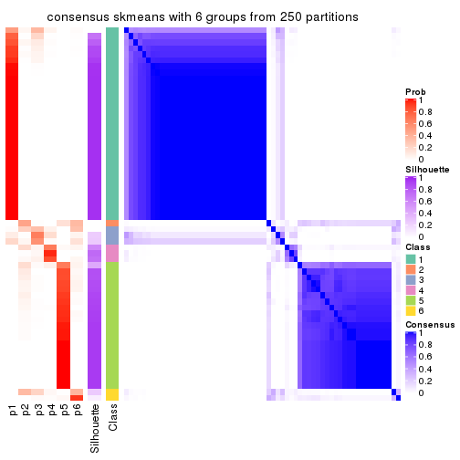
Heatmaps for the membership of samples in all partitions to see how consistent they are:
membership_heatmap(res, k = 2)
membership_heatmap(res, k = 3)
membership_heatmap(res, k = 4)
membership_heatmap(res, k = 5)
membership_heatmap(res, k = 6)
As soon as we have had the classes for columns, we can look for signatures which are significantly different between classes which can be candidate marks for certain classes. Following are the heatmaps for signatures.
Signature heatmaps where rows are scaled:
get_signatures(res, k = 2)
get_signatures(res, k = 3)
get_signatures(res, k = 4)

get_signatures(res, k = 5)
get_signatures(res, k = 6)
Signature heatmaps where rows are not scaled:
get_signatures(res, k = 2, scale_rows = FALSE)
#> Error in mat[ceiling(1:nr/h_ratio), ceiling(1:nc/w_ratio), drop = FALSE]: subscript out of bounds
get_signatures(res, k = 3, scale_rows = FALSE)

get_signatures(res, k = 4, scale_rows = FALSE)
#> Error in mat[ceiling(1:nr/h_ratio), ceiling(1:nc/w_ratio), drop = FALSE]: subscript out of bounds
get_signatures(res, k = 5, scale_rows = FALSE)
#> Error in mat[ceiling(1:nr/h_ratio), ceiling(1:nc/w_ratio), drop = FALSE]: subscript out of bounds
get_signatures(res, k = 6, scale_rows = FALSE)
#> Error in mat[ceiling(1:nr/h_ratio), ceiling(1:nc/w_ratio), drop = FALSE]: subscript out of bounds
Compare the overlap of signatures from different k:
compare_signatures(res)
get_signature() returns a data frame invisibly. TO get the list of signatures, the function
call should be assigned to a variable explicitly. In following code, if plot argument is set
to FALSE, no heatmap is plotted while only the differential analysis is performed.
# code only for demonstration
tb = get_signature(res, k = ..., plot = FALSE)
An example of the output of tb is:
#> which_row fdr mean_1 mean_2 scaled_mean_1 scaled_mean_2 km
#> 1 38 0.042760348 8.373488 9.131774 -0.5533452 0.5164555 1
#> 2 40 0.018707592 7.106213 8.469186 -0.6173731 0.5762149 1
#> 3 55 0.019134737 10.221463 11.207825 -0.6159697 0.5749050 1
#> 4 59 0.006059896 5.921854 7.869574 -0.6899429 0.6439467 1
#> 5 60 0.018055526 8.928898 10.211722 -0.6204761 0.5791110 1
#> 6 98 0.009384629 15.714769 14.887706 0.6635654 -0.6193277 2
...
The columns in tb are:
which_row: row indices corresponding to the input matrix.fdr: FDR for the differential test. mean_x: The mean value in group x.scaled_mean_x: The mean value in group x after rows are scaled.km: Row groups if k-means clustering is applied to rows.UMAP plot which shows how samples are separated.
dimension_reduction(res, k = 2, method = "UMAP")
dimension_reduction(res, k = 3, method = "UMAP")
dimension_reduction(res, k = 4, method = "UMAP")
dimension_reduction(res, k = 5, method = "UMAP")
dimension_reduction(res, k = 6, method = "UMAP")
Following heatmap shows how subgroups are split when increasing k:
collect_classes(res)
If matrix rows can be associated to genes, consider to use GO_Enrichment(res,
...) to perform function enrichment for the signature genes.
The object with results only for a single top-value method and a single partition method can be extracted as:
res = res_list["ATC", "pam"]
# you can also extract it by
# res = res_list["ATC:pam"]
A summary of res and all the functions that can be applied to it:
res
#> A 'ConsensusPartition' object with k = 2, 3, 4, 5, 6.
#> On a matrix with 12627 rows and 62 columns.
#> Top rows (1000, 2000, 3000, 4000, 5000) are extracted by 'ATC' method.
#> Subgroups are detected by 'pam' method.
#> Performed in total 1250 partitions by row resampling.
#> Best k for subgroups seems to be 5.
#>
#> Following methods can be applied to this 'ConsensusPartition' object:
#> [1] "cola_report" "collect_classes" "collect_plots"
#> [4] "collect_stats" "colnames" "compare_signatures"
#> [7] "consensus_heatmap" "dimension_reduction" "functional_enrichment"
#> [10] "get_anno_col" "get_anno" "get_classes"
#> [13] "get_consensus" "get_matrix" "get_membership"
#> [16] "get_param" "get_signatures" "get_stats"
#> [19] "is_best_k" "is_stable_k" "membership_heatmap"
#> [22] "ncol" "nrow" "plot_ecdf"
#> [25] "rownames" "select_partition_number" "show"
#> [28] "suggest_best_k" "test_to_known_factors"
collect_plots() function collects all the plots made from res for all k (number of partitions)
into one single page to provide an easy and fast comparison between different k.
collect_plots(res)
The plots are:
k and the heatmap of
predicted classes for each k.k.k.k.All the plots in panels can be made by individual functions and they are plotted later in this section.
select_partition_number() produces several plots showing different
statistics for choosing “optimized” k. There are following statistics:
k;k, the area increased is defined as \(A_k - A_{k-1}\).The detailed explanations of these statistics can be found in the cola vignette.
Generally speaking, lower PAC score, higher mean silhouette score or higher
concordance corresponds to better partition. Rand index and Jaccard index
measure how similar the current partition is compared to partition with k-1.
If they are too similar, we won't accept k is better than k-1.
select_partition_number(res)
The numeric values for all these statistics can be obtained by get_stats().
get_stats(res)
#> k 1-PAC mean_silhouette concordance area_increased Rand Jaccard
#> 2 2 1.000 0.978 0.990 0.41350 0.595 0.595
#> 3 3 0.831 0.928 0.968 0.47833 0.649 0.470
#> 4 4 0.981 0.927 0.974 0.19232 0.763 0.467
#> 5 5 0.960 0.890 0.963 0.02871 0.970 0.892
#> 6 6 0.960 0.894 0.970 0.00619 0.998 0.991
suggest_best_k() suggests the best \(k\) based on these statistics. The rules are as follows:
NA.suggest_best_k(res)
#> [1] 5
#> attr(,"optional")
#> [1] 2 4
There is also optional best \(k\) = 2 4 that is worth to check.
Following shows the table of the partitions (You need to click the show/hide
code output link to see it). The membership matrix (columns with name p*)
is inferred by
clue::cl_consensus()
function with the SE method. Basically the value in the membership matrix
represents the probability to belong to a certain group. The finall class
label for an item is determined with the group with highest probability it
belongs to.
In get_classes() function, the entropy is calculated from the membership
matrix and the silhouette score is calculated from the consensus matrix.
cbind(get_classes(res, k = 2), get_membership(res, k = 2))
#> class entropy silhouette p1 p2
#> SRR372611 1 0.000 0.985 1.000 0.000
#> SRR372612 1 0.000 0.985 1.000 0.000
#> SRR372613 2 0.000 1.000 0.000 1.000
#> SRR372614 1 0.000 0.985 1.000 0.000
#> SRR372615 2 0.000 1.000 0.000 1.000
#> SRR372616 1 0.000 0.985 1.000 0.000
#> SRR372617 1 0.000 0.985 1.000 0.000
#> SRR372618 1 0.000 0.985 1.000 0.000
#> SRR372619 2 0.000 1.000 0.000 1.000
#> SRR372620 1 0.000 0.985 1.000 0.000
#> SRR372621 1 0.738 0.751 0.792 0.208
#> SRR372622 1 0.000 0.985 1.000 0.000
#> SRR372623 1 0.000 0.985 1.000 0.000
#> SRR372624 1 0.000 0.985 1.000 0.000
#> SRR372625 1 0.000 0.985 1.000 0.000
#> SRR372626 2 0.000 1.000 0.000 1.000
#> SRR372627 1 0.000 0.985 1.000 0.000
#> SRR372628 1 0.000 0.985 1.000 0.000
#> SRR372629 1 0.000 0.985 1.000 0.000
#> SRR372630 1 0.000 0.985 1.000 0.000
#> SRR372631 1 0.000 0.985 1.000 0.000
#> SRR372632 1 0.000 0.985 1.000 0.000
#> SRR372633 1 0.000 0.985 1.000 0.000
#> SRR372634 1 0.000 0.985 1.000 0.000
#> SRR372635 1 0.000 0.985 1.000 0.000
#> SRR372636 1 0.000 0.985 1.000 0.000
#> SRR372637 1 0.000 0.985 1.000 0.000
#> SRR372638 1 0.000 0.985 1.000 0.000
#> SRR372639 1 0.722 0.763 0.800 0.200
#> SRR372640 1 0.000 0.985 1.000 0.000
#> SRR372641 1 0.000 0.985 1.000 0.000
#> SRR372642 1 0.000 0.985 1.000 0.000
#> SRR372643 2 0.000 1.000 0.000 1.000
#> SRR372644 1 0.000 0.985 1.000 0.000
#> SRR372645 1 0.000 0.985 1.000 0.000
#> SRR372646 1 0.000 0.985 1.000 0.000
#> SRR372647 1 0.000 0.985 1.000 0.000
#> SRR372648 1 0.000 0.985 1.000 0.000
#> SRR372649 1 0.000 0.985 1.000 0.000
#> SRR372650 2 0.000 1.000 0.000 1.000
#> SRR372651 2 0.000 1.000 0.000 1.000
#> SRR372652 1 0.204 0.957 0.968 0.032
#> SRR372653 2 0.000 1.000 0.000 1.000
#> SRR372654 1 0.000 0.985 1.000 0.000
#> SRR372655 2 0.000 1.000 0.000 1.000
#> SRR372656 1 0.000 0.985 1.000 0.000
#> SRR372657 1 0.000 0.985 1.000 0.000
#> SRR372658 2 0.000 1.000 0.000 1.000
#> SRR372659 2 0.000 1.000 0.000 1.000
#> SRR372660 2 0.000 1.000 0.000 1.000
#> SRR372661 2 0.000 1.000 0.000 1.000
#> SRR372662 1 0.000 0.985 1.000 0.000
#> SRR372663 2 0.000 1.000 0.000 1.000
#> SRR372664 1 0.000 0.985 1.000 0.000
#> SRR372665 2 0.000 1.000 0.000 1.000
#> SRR372666 1 0.722 0.763 0.800 0.200
#> SRR372667 2 0.000 1.000 0.000 1.000
#> SRR372668 1 0.000 0.985 1.000 0.000
#> SRR372669 1 0.000 0.985 1.000 0.000
#> SRR372670 1 0.000 0.985 1.000 0.000
#> SRR372671 2 0.000 1.000 0.000 1.000
#> SRR372672 1 0.000 0.985 1.000 0.000
cbind(get_classes(res, k = 3), get_membership(res, k = 3))
#> class entropy silhouette p1 p2 p3
#> SRR372611 1 0.0000 0.987 1.000 0.000 0.000
#> SRR372612 1 0.0000 0.987 1.000 0.000 0.000
#> SRR372613 3 0.4750 0.808 0.000 0.216 0.784
#> SRR372614 1 0.4887 0.683 0.772 0.228 0.000
#> SRR372615 2 0.0000 0.932 0.000 1.000 0.000
#> SRR372616 2 0.0000 0.932 0.000 1.000 0.000
#> SRR372617 2 0.4702 0.731 0.212 0.788 0.000
#> SRR372618 1 0.0000 0.987 1.000 0.000 0.000
#> SRR372619 2 0.0000 0.932 0.000 1.000 0.000
#> SRR372620 1 0.0000 0.987 1.000 0.000 0.000
#> SRR372621 2 0.0000 0.932 0.000 1.000 0.000
#> SRR372622 1 0.0000 0.987 1.000 0.000 0.000
#> SRR372623 2 0.0000 0.932 0.000 1.000 0.000
#> SRR372624 1 0.0000 0.987 1.000 0.000 0.000
#> SRR372625 1 0.0000 0.987 1.000 0.000 0.000
#> SRR372626 2 0.0000 0.932 0.000 1.000 0.000
#> SRR372627 1 0.0000 0.987 1.000 0.000 0.000
#> SRR372628 1 0.0000 0.987 1.000 0.000 0.000
#> SRR372629 2 0.4702 0.731 0.212 0.788 0.000
#> SRR372630 1 0.0000 0.987 1.000 0.000 0.000
#> SRR372631 2 0.4702 0.731 0.212 0.788 0.000
#> SRR372632 1 0.0000 0.987 1.000 0.000 0.000
#> SRR372633 2 0.0000 0.932 0.000 1.000 0.000
#> SRR372634 1 0.0000 0.987 1.000 0.000 0.000
#> SRR372635 2 0.4702 0.731 0.212 0.788 0.000
#> SRR372636 1 0.0000 0.987 1.000 0.000 0.000
#> SRR372637 2 0.0000 0.932 0.000 1.000 0.000
#> SRR372638 1 0.0000 0.987 1.000 0.000 0.000
#> SRR372639 2 0.0000 0.932 0.000 1.000 0.000
#> SRR372640 1 0.0000 0.987 1.000 0.000 0.000
#> SRR372641 1 0.0000 0.987 1.000 0.000 0.000
#> SRR372642 1 0.0000 0.987 1.000 0.000 0.000
#> SRR372643 2 0.0000 0.932 0.000 1.000 0.000
#> SRR372644 1 0.0000 0.987 1.000 0.000 0.000
#> SRR372645 2 0.0000 0.932 0.000 1.000 0.000
#> SRR372646 1 0.0000 0.987 1.000 0.000 0.000
#> SRR372647 1 0.0000 0.987 1.000 0.000 0.000
#> SRR372648 1 0.0000 0.987 1.000 0.000 0.000
#> SRR372649 1 0.0000 0.987 1.000 0.000 0.000
#> SRR372650 3 0.0000 0.921 0.000 0.000 1.000
#> SRR372651 3 0.4702 0.813 0.000 0.212 0.788
#> SRR372652 2 0.0000 0.932 0.000 1.000 0.000
#> SRR372653 3 0.0000 0.921 0.000 0.000 1.000
#> SRR372654 1 0.2356 0.905 0.928 0.072 0.000
#> SRR372655 3 0.0000 0.921 0.000 0.000 1.000
#> SRR372656 1 0.0000 0.987 1.000 0.000 0.000
#> SRR372657 1 0.0000 0.987 1.000 0.000 0.000
#> SRR372658 3 0.0000 0.921 0.000 0.000 1.000
#> SRR372659 2 0.0000 0.932 0.000 1.000 0.000
#> SRR372660 2 0.0000 0.932 0.000 1.000 0.000
#> SRR372661 2 0.0000 0.932 0.000 1.000 0.000
#> SRR372662 2 0.0000 0.932 0.000 1.000 0.000
#> SRR372663 2 0.0237 0.929 0.000 0.996 0.004
#> SRR372664 1 0.0000 0.987 1.000 0.000 0.000
#> SRR372665 3 0.0000 0.921 0.000 0.000 1.000
#> SRR372666 2 0.0000 0.932 0.000 1.000 0.000
#> SRR372667 3 0.0000 0.921 0.000 0.000 1.000
#> SRR372668 1 0.0000 0.987 1.000 0.000 0.000
#> SRR372669 2 0.4702 0.731 0.212 0.788 0.000
#> SRR372670 1 0.0000 0.987 1.000 0.000 0.000
#> SRR372671 3 0.4702 0.813 0.000 0.212 0.788
#> SRR372672 2 0.0000 0.932 0.000 1.000 0.000
cbind(get_classes(res, k = 4), get_membership(res, k = 4))
#> class entropy silhouette p1 p2 p3 p4
#> SRR372611 4 0.438 0.5591 0.296 0.000 0 0.704
#> SRR372612 1 0.000 0.9470 1.000 0.000 0 0.000
#> SRR372613 2 0.000 0.9870 0.000 1.000 0 0.000
#> SRR372614 4 0.000 0.9582 0.000 0.000 0 1.000
#> SRR372615 2 0.000 0.9870 0.000 1.000 0 0.000
#> SRR372616 2 0.000 0.9870 0.000 1.000 0 0.000
#> SRR372617 4 0.000 0.9582 0.000 0.000 0 1.000
#> SRR372618 1 0.500 0.0978 0.516 0.000 0 0.484
#> SRR372619 2 0.000 0.9870 0.000 1.000 0 0.000
#> SRR372620 1 0.000 0.9470 1.000 0.000 0 0.000
#> SRR372621 2 0.000 0.9870 0.000 1.000 0 0.000
#> SRR372622 4 0.000 0.9582 0.000 0.000 0 1.000
#> SRR372623 2 0.327 0.7710 0.000 0.832 0 0.168
#> SRR372624 1 0.000 0.9470 1.000 0.000 0 0.000
#> SRR372625 1 0.000 0.9470 1.000 0.000 0 0.000
#> SRR372626 2 0.000 0.9870 0.000 1.000 0 0.000
#> SRR372627 1 0.000 0.9470 1.000 0.000 0 0.000
#> SRR372628 1 0.000 0.9470 1.000 0.000 0 0.000
#> SRR372629 4 0.000 0.9582 0.000 0.000 0 1.000
#> SRR372630 1 0.487 0.3404 0.596 0.000 0 0.404
#> SRR372631 4 0.000 0.9582 0.000 0.000 0 1.000
#> SRR372632 1 0.000 0.9470 1.000 0.000 0 0.000
#> SRR372633 4 0.000 0.9582 0.000 0.000 0 1.000
#> SRR372634 1 0.000 0.9470 1.000 0.000 0 0.000
#> SRR372635 4 0.000 0.9582 0.000 0.000 0 1.000
#> SRR372636 1 0.000 0.9470 1.000 0.000 0 0.000
#> SRR372637 4 0.000 0.9582 0.000 0.000 0 1.000
#> SRR372638 1 0.000 0.9470 1.000 0.000 0 0.000
#> SRR372639 2 0.000 0.9870 0.000 1.000 0 0.000
#> SRR372640 1 0.000 0.9470 1.000 0.000 0 0.000
#> SRR372641 4 0.000 0.9582 0.000 0.000 0 1.000
#> SRR372642 4 0.000 0.9582 0.000 0.000 0 1.000
#> SRR372643 2 0.000 0.9870 0.000 1.000 0 0.000
#> SRR372644 1 0.000 0.9470 1.000 0.000 0 0.000
#> SRR372645 4 0.425 0.6005 0.000 0.276 0 0.724
#> SRR372646 1 0.000 0.9470 1.000 0.000 0 0.000
#> SRR372647 4 0.000 0.9582 0.000 0.000 0 1.000
#> SRR372648 1 0.000 0.9470 1.000 0.000 0 0.000
#> SRR372649 4 0.000 0.9582 0.000 0.000 0 1.000
#> SRR372650 3 0.000 1.0000 0.000 0.000 1 0.000
#> SRR372651 2 0.000 0.9870 0.000 1.000 0 0.000
#> SRR372652 2 0.000 0.9870 0.000 1.000 0 0.000
#> SRR372653 3 0.000 1.0000 0.000 0.000 1 0.000
#> SRR372654 4 0.000 0.9582 0.000 0.000 0 1.000
#> SRR372655 3 0.000 1.0000 0.000 0.000 1 0.000
#> SRR372656 1 0.000 0.9470 1.000 0.000 0 0.000
#> SRR372657 1 0.000 0.9470 1.000 0.000 0 0.000
#> SRR372658 3 0.000 1.0000 0.000 0.000 1 0.000
#> SRR372659 2 0.000 0.9870 0.000 1.000 0 0.000
#> SRR372660 2 0.000 0.9870 0.000 1.000 0 0.000
#> SRR372661 2 0.000 0.9870 0.000 1.000 0 0.000
#> SRR372662 4 0.000 0.9582 0.000 0.000 0 1.000
#> SRR372663 2 0.000 0.9870 0.000 1.000 0 0.000
#> SRR372664 1 0.000 0.9470 1.000 0.000 0 0.000
#> SRR372665 3 0.000 1.0000 0.000 0.000 1 0.000
#> SRR372666 2 0.000 0.9870 0.000 1.000 0 0.000
#> SRR372667 3 0.000 1.0000 0.000 0.000 1 0.000
#> SRR372668 1 0.000 0.9470 1.000 0.000 0 0.000
#> SRR372669 4 0.000 0.9582 0.000 0.000 0 1.000
#> SRR372670 1 0.000 0.9470 1.000 0.000 0 0.000
#> SRR372671 2 0.000 0.9870 0.000 1.000 0 0.000
#> SRR372672 4 0.000 0.9582 0.000 0.000 0 1.000
cbind(get_classes(res, k = 5), get_membership(res, k = 5))
#> class entropy silhouette p1 p2 p3 p4 p5
#> SRR372611 3 0.377 0.5394 0.296 0.000 0.704 0.000 0.000
#> SRR372612 1 0.000 0.9447 1.000 0.000 0.000 0.000 0.000
#> SRR372613 4 0.430 0.0541 0.000 0.484 0.000 0.516 0.000
#> SRR372614 3 0.000 0.9571 0.000 0.000 1.000 0.000 0.000
#> SRR372615 2 0.000 0.9804 0.000 1.000 0.000 0.000 0.000
#> SRR372616 2 0.000 0.9804 0.000 1.000 0.000 0.000 0.000
#> SRR372617 3 0.000 0.9571 0.000 0.000 1.000 0.000 0.000
#> SRR372618 1 0.430 0.0972 0.516 0.000 0.484 0.000 0.000
#> SRR372619 2 0.000 0.9804 0.000 1.000 0.000 0.000 0.000
#> SRR372620 1 0.000 0.9447 1.000 0.000 0.000 0.000 0.000
#> SRR372621 2 0.000 0.9804 0.000 1.000 0.000 0.000 0.000
#> SRR372622 3 0.000 0.9571 0.000 0.000 1.000 0.000 0.000
#> SRR372623 2 0.281 0.7188 0.000 0.832 0.168 0.000 0.000
#> SRR372624 1 0.000 0.9447 1.000 0.000 0.000 0.000 0.000
#> SRR372625 1 0.000 0.9447 1.000 0.000 0.000 0.000 0.000
#> SRR372626 2 0.000 0.9804 0.000 1.000 0.000 0.000 0.000
#> SRR372627 1 0.000 0.9447 1.000 0.000 0.000 0.000 0.000
#> SRR372628 1 0.000 0.9447 1.000 0.000 0.000 0.000 0.000
#> SRR372629 3 0.000 0.9571 0.000 0.000 1.000 0.000 0.000
#> SRR372630 1 0.419 0.3400 0.596 0.000 0.404 0.000 0.000
#> SRR372631 3 0.000 0.9571 0.000 0.000 1.000 0.000 0.000
#> SRR372632 1 0.000 0.9447 1.000 0.000 0.000 0.000 0.000
#> SRR372633 3 0.000 0.9571 0.000 0.000 1.000 0.000 0.000
#> SRR372634 1 0.000 0.9447 1.000 0.000 0.000 0.000 0.000
#> SRR372635 3 0.000 0.9571 0.000 0.000 1.000 0.000 0.000
#> SRR372636 1 0.000 0.9447 1.000 0.000 0.000 0.000 0.000
#> SRR372637 3 0.000 0.9571 0.000 0.000 1.000 0.000 0.000
#> SRR372638 1 0.000 0.9447 1.000 0.000 0.000 0.000 0.000
#> SRR372639 2 0.000 0.9804 0.000 1.000 0.000 0.000 0.000
#> SRR372640 1 0.000 0.9447 1.000 0.000 0.000 0.000 0.000
#> SRR372641 3 0.000 0.9571 0.000 0.000 1.000 0.000 0.000
#> SRR372642 3 0.000 0.9571 0.000 0.000 1.000 0.000 0.000
#> SRR372643 2 0.000 0.9804 0.000 1.000 0.000 0.000 0.000
#> SRR372644 1 0.000 0.9447 1.000 0.000 0.000 0.000 0.000
#> SRR372645 3 0.366 0.5782 0.000 0.276 0.724 0.000 0.000
#> SRR372646 1 0.000 0.9447 1.000 0.000 0.000 0.000 0.000
#> SRR372647 3 0.000 0.9571 0.000 0.000 1.000 0.000 0.000
#> SRR372648 1 0.000 0.9447 1.000 0.000 0.000 0.000 0.000
#> SRR372649 3 0.000 0.9571 0.000 0.000 1.000 0.000 0.000
#> SRR372650 5 0.000 1.0000 0.000 0.000 0.000 0.000 1.000
#> SRR372651 4 0.000 0.7543 0.000 0.000 0.000 1.000 0.000
#> SRR372652 2 0.000 0.9804 0.000 1.000 0.000 0.000 0.000
#> SRR372653 5 0.000 1.0000 0.000 0.000 0.000 0.000 1.000
#> SRR372654 3 0.000 0.9571 0.000 0.000 1.000 0.000 0.000
#> SRR372655 4 0.000 0.7543 0.000 0.000 0.000 1.000 0.000
#> SRR372656 1 0.000 0.9447 1.000 0.000 0.000 0.000 0.000
#> SRR372657 1 0.000 0.9447 1.000 0.000 0.000 0.000 0.000
#> SRR372658 5 0.000 1.0000 0.000 0.000 0.000 0.000 1.000
#> SRR372659 2 0.000 0.9804 0.000 1.000 0.000 0.000 0.000
#> SRR372660 2 0.000 0.9804 0.000 1.000 0.000 0.000 0.000
#> SRR372661 2 0.000 0.9804 0.000 1.000 0.000 0.000 0.000
#> SRR372662 3 0.000 0.9571 0.000 0.000 1.000 0.000 0.000
#> SRR372663 2 0.000 0.9804 0.000 1.000 0.000 0.000 0.000
#> SRR372664 1 0.000 0.9447 1.000 0.000 0.000 0.000 0.000
#> SRR372665 5 0.000 1.0000 0.000 0.000 0.000 0.000 1.000
#> SRR372666 2 0.000 0.9804 0.000 1.000 0.000 0.000 0.000
#> SRR372667 4 0.321 0.5540 0.000 0.000 0.000 0.788 0.212
#> SRR372668 1 0.000 0.9447 1.000 0.000 0.000 0.000 0.000
#> SRR372669 3 0.000 0.9571 0.000 0.000 1.000 0.000 0.000
#> SRR372670 1 0.000 0.9447 1.000 0.000 0.000 0.000 0.000
#> SRR372671 4 0.000 0.7543 0.000 0.000 0.000 1.000 0.000
#> SRR372672 3 0.000 0.9571 0.000 0.000 1.000 0.000 0.000
cbind(get_classes(res, k = 6), get_membership(res, k = 6))
#> class entropy silhouette p1 p2 p3 p4 p5 p6
#> SRR372611 3 0.3390 0.4882 0.296 0.000 0.704 0.000 0.000 0.000
#> SRR372612 1 0.0000 0.9410 1.000 0.000 0.000 0.000 0.000 0.000
#> SRR372613 4 0.0146 0.0000 0.000 0.000 0.000 0.996 0.004 0.000
#> SRR372614 3 0.0000 0.9525 0.000 0.000 1.000 0.000 0.000 0.000
#> SRR372615 2 0.0000 0.9804 0.000 1.000 0.000 0.000 0.000 0.000
#> SRR372616 2 0.0146 0.9766 0.000 0.996 0.000 0.004 0.000 0.000
#> SRR372617 3 0.0000 0.9525 0.000 0.000 1.000 0.000 0.000 0.000
#> SRR372618 1 0.3866 0.0984 0.516 0.000 0.484 0.000 0.000 0.000
#> SRR372619 2 0.0000 0.9804 0.000 1.000 0.000 0.000 0.000 0.000
#> SRR372620 1 0.0000 0.9410 1.000 0.000 0.000 0.000 0.000 0.000
#> SRR372621 2 0.0000 0.9804 0.000 1.000 0.000 0.000 0.000 0.000
#> SRR372622 3 0.0000 0.9525 0.000 0.000 1.000 0.000 0.000 0.000
#> SRR372623 2 0.2668 0.7181 0.000 0.828 0.168 0.004 0.000 0.000
#> SRR372624 1 0.0000 0.9410 1.000 0.000 0.000 0.000 0.000 0.000
#> SRR372625 1 0.0000 0.9410 1.000 0.000 0.000 0.000 0.000 0.000
#> SRR372626 2 0.0000 0.9804 0.000 1.000 0.000 0.000 0.000 0.000
#> SRR372627 1 0.0000 0.9410 1.000 0.000 0.000 0.000 0.000 0.000
#> SRR372628 1 0.0000 0.9410 1.000 0.000 0.000 0.000 0.000 0.000
#> SRR372629 3 0.0146 0.9516 0.000 0.000 0.996 0.004 0.000 0.000
#> SRR372630 1 0.3765 0.3252 0.596 0.000 0.404 0.000 0.000 0.000
#> SRR372631 3 0.0000 0.9525 0.000 0.000 1.000 0.000 0.000 0.000
#> SRR372632 1 0.0000 0.9410 1.000 0.000 0.000 0.000 0.000 0.000
#> SRR372633 3 0.0146 0.9516 0.000 0.000 0.996 0.004 0.000 0.000
#> SRR372634 1 0.0000 0.9410 1.000 0.000 0.000 0.000 0.000 0.000
#> SRR372635 3 0.0146 0.9516 0.000 0.000 0.996 0.004 0.000 0.000
#> SRR372636 1 0.0000 0.9410 1.000 0.000 0.000 0.000 0.000 0.000
#> SRR372637 3 0.0146 0.9516 0.000 0.000 0.996 0.004 0.000 0.000
#> SRR372638 1 0.0000 0.9410 1.000 0.000 0.000 0.000 0.000 0.000
#> SRR372639 2 0.0000 0.9804 0.000 1.000 0.000 0.000 0.000 0.000
#> SRR372640 1 0.0000 0.9410 1.000 0.000 0.000 0.000 0.000 0.000
#> SRR372641 3 0.0000 0.9525 0.000 0.000 1.000 0.000 0.000 0.000
#> SRR372642 3 0.0000 0.9525 0.000 0.000 1.000 0.000 0.000 0.000
#> SRR372643 2 0.0000 0.9804 0.000 1.000 0.000 0.000 0.000 0.000
#> SRR372644 1 0.0000 0.9410 1.000 0.000 0.000 0.000 0.000 0.000
#> SRR372645 3 0.3405 0.5472 0.000 0.272 0.724 0.004 0.000 0.000
#> SRR372646 1 0.0000 0.9410 1.000 0.000 0.000 0.000 0.000 0.000
#> SRR372647 3 0.0000 0.9525 0.000 0.000 1.000 0.000 0.000 0.000
#> SRR372648 1 0.0000 0.9410 1.000 0.000 0.000 0.000 0.000 0.000
#> SRR372649 3 0.0000 0.9525 0.000 0.000 1.000 0.000 0.000 0.000
#> SRR372650 6 0.0000 1.0000 0.000 0.000 0.000 0.000 0.000 1.000
#> SRR372651 5 0.0000 0.9066 0.000 0.000 0.000 0.000 1.000 0.000
#> SRR372652 2 0.0000 0.9804 0.000 1.000 0.000 0.000 0.000 0.000
#> SRR372653 6 0.0000 1.0000 0.000 0.000 0.000 0.000 0.000 1.000
#> SRR372654 3 0.0000 0.9525 0.000 0.000 1.000 0.000 0.000 0.000
#> SRR372655 5 0.0000 0.9066 0.000 0.000 0.000 0.000 1.000 0.000
#> SRR372656 1 0.0000 0.9410 1.000 0.000 0.000 0.000 0.000 0.000
#> SRR372657 1 0.0000 0.9410 1.000 0.000 0.000 0.000 0.000 0.000
#> SRR372658 6 0.0000 1.0000 0.000 0.000 0.000 0.000 0.000 1.000
#> SRR372659 2 0.0000 0.9804 0.000 1.000 0.000 0.000 0.000 0.000
#> SRR372660 2 0.0000 0.9804 0.000 1.000 0.000 0.000 0.000 0.000
#> SRR372661 2 0.0000 0.9804 0.000 1.000 0.000 0.000 0.000 0.000
#> SRR372662 3 0.0146 0.9516 0.000 0.000 0.996 0.004 0.000 0.000
#> SRR372663 2 0.0000 0.9804 0.000 1.000 0.000 0.000 0.000 0.000
#> SRR372664 1 0.0000 0.9410 1.000 0.000 0.000 0.000 0.000 0.000
#> SRR372665 6 0.0000 1.0000 0.000 0.000 0.000 0.000 0.000 1.000
#> SRR372666 2 0.0000 0.9804 0.000 1.000 0.000 0.000 0.000 0.000
#> SRR372667 5 0.2883 0.7005 0.000 0.000 0.000 0.000 0.788 0.212
#> SRR372668 1 0.0000 0.9410 1.000 0.000 0.000 0.000 0.000 0.000
#> SRR372669 3 0.0000 0.9525 0.000 0.000 1.000 0.000 0.000 0.000
#> SRR372670 1 0.0000 0.9410 1.000 0.000 0.000 0.000 0.000 0.000
#> SRR372671 5 0.0000 0.9066 0.000 0.000 0.000 0.000 1.000 0.000
#> SRR372672 3 0.0146 0.9516 0.000 0.000 0.996 0.004 0.000 0.000
Heatmaps for the consensus matrix. It visualizes the probability of two samples to be in a same group.
consensus_heatmap(res, k = 2)
consensus_heatmap(res, k = 3)
consensus_heatmap(res, k = 4)
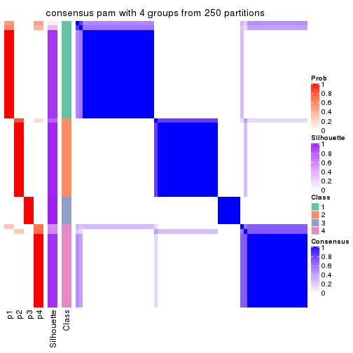
consensus_heatmap(res, k = 5)
consensus_heatmap(res, k = 6)
Heatmaps for the membership of samples in all partitions to see how consistent they are:
membership_heatmap(res, k = 2)
membership_heatmap(res, k = 3)
membership_heatmap(res, k = 4)
membership_heatmap(res, k = 5)
membership_heatmap(res, k = 6)
As soon as we have had the classes for columns, we can look for signatures which are significantly different between classes which can be candidate marks for certain classes. Following are the heatmaps for signatures.
Signature heatmaps where rows are scaled:
get_signatures(res, k = 2)
get_signatures(res, k = 3)
get_signatures(res, k = 4)
get_signatures(res, k = 5)
get_signatures(res, k = 6)
Signature heatmaps where rows are not scaled:
get_signatures(res, k = 2, scale_rows = FALSE)
get_signatures(res, k = 3, scale_rows = FALSE)
get_signatures(res, k = 4, scale_rows = FALSE)
get_signatures(res, k = 5, scale_rows = FALSE)
get_signatures(res, k = 6, scale_rows = FALSE)
#> Error in mat[ceiling(1:nr/h_ratio), ceiling(1:nc/w_ratio), drop = FALSE]: subscript out of bounds

Compare the overlap of signatures from different k:
compare_signatures(res)
get_signature() returns a data frame invisibly. TO get the list of signatures, the function
call should be assigned to a variable explicitly. In following code, if plot argument is set
to FALSE, no heatmap is plotted while only the differential analysis is performed.
# code only for demonstration
tb = get_signature(res, k = ..., plot = FALSE)
An example of the output of tb is:
#> which_row fdr mean_1 mean_2 scaled_mean_1 scaled_mean_2 km
#> 1 38 0.042760348 8.373488 9.131774 -0.5533452 0.5164555 1
#> 2 40 0.018707592 7.106213 8.469186 -0.6173731 0.5762149 1
#> 3 55 0.019134737 10.221463 11.207825 -0.6159697 0.5749050 1
#> 4 59 0.006059896 5.921854 7.869574 -0.6899429 0.6439467 1
#> 5 60 0.018055526 8.928898 10.211722 -0.6204761 0.5791110 1
#> 6 98 0.009384629 15.714769 14.887706 0.6635654 -0.6193277 2
...
The columns in tb are:
which_row: row indices corresponding to the input matrix.fdr: FDR for the differential test. mean_x: The mean value in group x.scaled_mean_x: The mean value in group x after rows are scaled.km: Row groups if k-means clustering is applied to rows.UMAP plot which shows how samples are separated.
dimension_reduction(res, k = 2, method = "UMAP")
dimension_reduction(res, k = 3, method = "UMAP")
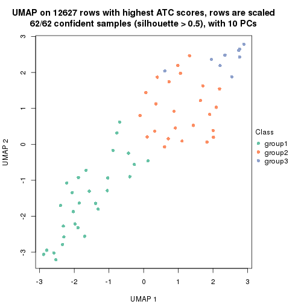
dimension_reduction(res, k = 4, method = "UMAP")
dimension_reduction(res, k = 5, method = "UMAP")
dimension_reduction(res, k = 6, method = "UMAP")
Following heatmap shows how subgroups are split when increasing k:
collect_classes(res)
If matrix rows can be associated to genes, consider to use GO_Enrichment(res,
...) to perform function enrichment for the signature genes.
The object with results only for a single top-value method and a single partition method can be extracted as:
res = res_list["ATC", "mclust"]
# you can also extract it by
# res = res_list["ATC:mclust"]
A summary of res and all the functions that can be applied to it:
res
#> A 'ConsensusPartition' object with k = 2, 3, 4, 5, 6.
#> On a matrix with 12627 rows and 62 columns.
#> Top rows (1000, 2000, 3000, 4000, 5000) are extracted by 'ATC' method.
#> Subgroups are detected by 'mclust' method.
#> Performed in total 1250 partitions by row resampling.
#> Best k for subgroups seems to be 3.
#>
#> Following methods can be applied to this 'ConsensusPartition' object:
#> [1] "cola_report" "collect_classes" "collect_plots"
#> [4] "collect_stats" "colnames" "compare_signatures"
#> [7] "consensus_heatmap" "dimension_reduction" "functional_enrichment"
#> [10] "get_anno_col" "get_anno" "get_classes"
#> [13] "get_consensus" "get_matrix" "get_membership"
#> [16] "get_param" "get_signatures" "get_stats"
#> [19] "is_best_k" "is_stable_k" "membership_heatmap"
#> [22] "ncol" "nrow" "plot_ecdf"
#> [25] "rownames" "select_partition_number" "show"
#> [28] "suggest_best_k" "test_to_known_factors"
collect_plots() function collects all the plots made from res for all k (number of partitions)
into one single page to provide an easy and fast comparison between different k.
collect_plots(res)
The plots are:
k and the heatmap of
predicted classes for each k.k.k.k.All the plots in panels can be made by individual functions and they are plotted later in this section.
select_partition_number() produces several plots showing different
statistics for choosing “optimized” k. There are following statistics:
k;k, the area increased is defined as \(A_k - A_{k-1}\).The detailed explanations of these statistics can be found in the cola vignette.
Generally speaking, lower PAC score, higher mean silhouette score or higher
concordance corresponds to better partition. Rand index and Jaccard index
measure how similar the current partition is compared to partition with k-1.
If they are too similar, we won't accept k is better than k-1.
select_partition_number(res)
The numeric values for all these statistics can be obtained by get_stats().
get_stats(res)
#> k 1-PAC mean_silhouette concordance area_increased Rand Jaccard
#> 2 2 0.913 0.947 0.974 0.4677 0.535 0.535
#> 3 3 0.976 0.935 0.971 0.4453 0.748 0.545
#> 4 4 0.783 0.715 0.770 0.0743 0.931 0.792
#> 5 5 0.580 0.748 0.794 -0.0190 0.902 0.675
#> 6 6 0.537 0.490 0.772 -0.0800 0.731 0.392
suggest_best_k() suggests the best \(k\) based on these statistics. The rules are as follows:
NA.suggest_best_k(res)
#> [1] 3
#> attr(,"optional")
#> [1] 2
There is also optional best \(k\) = 2 that is worth to check.
Following shows the table of the partitions (You need to click the show/hide
code output link to see it). The membership matrix (columns with name p*)
is inferred by
clue::cl_consensus()
function with the SE method. Basically the value in the membership matrix
represents the probability to belong to a certain group. The finall class
label for an item is determined with the group with highest probability it
belongs to.
In get_classes() function, the entropy is calculated from the membership
matrix and the silhouette score is calculated from the consensus matrix.
cbind(get_classes(res, k = 2), get_membership(res, k = 2))
#> class entropy silhouette p1 p2
#> SRR372611 2 0.2778 0.948 0.048 0.952
#> SRR372612 1 0.0000 0.979 1.000 0.000
#> SRR372613 2 0.0000 0.969 0.000 1.000
#> SRR372614 2 0.6148 0.853 0.152 0.848
#> SRR372615 2 0.0000 0.969 0.000 1.000
#> SRR372616 2 0.0376 0.968 0.004 0.996
#> SRR372617 2 0.3584 0.935 0.068 0.932
#> SRR372618 1 0.0000 0.979 1.000 0.000
#> SRR372619 2 0.0000 0.969 0.000 1.000
#> SRR372620 1 0.0000 0.979 1.000 0.000
#> SRR372621 2 0.0000 0.969 0.000 1.000
#> SRR372622 2 0.5059 0.899 0.112 0.888
#> SRR372623 2 0.0000 0.969 0.000 1.000
#> SRR372624 1 0.0000 0.979 1.000 0.000
#> SRR372625 1 0.0000 0.979 1.000 0.000
#> SRR372626 2 0.0000 0.969 0.000 1.000
#> SRR372627 1 0.0000 0.979 1.000 0.000
#> SRR372628 1 0.0000 0.979 1.000 0.000
#> SRR372629 2 0.5059 0.899 0.112 0.888
#> SRR372630 1 0.0376 0.975 0.996 0.004
#> SRR372631 2 0.0000 0.969 0.000 1.000
#> SRR372632 1 0.0000 0.979 1.000 0.000
#> SRR372633 2 0.1184 0.963 0.016 0.984
#> SRR372634 1 0.0000 0.979 1.000 0.000
#> SRR372635 2 0.0376 0.968 0.004 0.996
#> SRR372636 1 0.0000 0.979 1.000 0.000
#> SRR372637 2 0.2778 0.947 0.048 0.952
#> SRR372638 1 0.0000 0.979 1.000 0.000
#> SRR372639 2 0.0000 0.969 0.000 1.000
#> SRR372640 1 0.0000 0.979 1.000 0.000
#> SRR372641 2 0.5059 0.899 0.112 0.888
#> SRR372642 1 0.9795 0.214 0.584 0.416
#> SRR372643 2 0.0000 0.969 0.000 1.000
#> SRR372644 1 0.0000 0.979 1.000 0.000
#> SRR372645 2 0.0376 0.968 0.004 0.996
#> SRR372646 1 0.0000 0.979 1.000 0.000
#> SRR372647 2 0.2778 0.947 0.048 0.952
#> SRR372648 1 0.0000 0.979 1.000 0.000
#> SRR372649 2 0.2948 0.945 0.052 0.948
#> SRR372650 2 0.0000 0.969 0.000 1.000
#> SRR372651 2 0.0000 0.969 0.000 1.000
#> SRR372652 2 0.0376 0.968 0.004 0.996
#> SRR372653 2 0.0000 0.969 0.000 1.000
#> SRR372654 2 0.7815 0.739 0.232 0.768
#> SRR372655 2 0.0000 0.969 0.000 1.000
#> SRR372656 1 0.0000 0.979 1.000 0.000
#> SRR372657 1 0.0000 0.979 1.000 0.000
#> SRR372658 2 0.0000 0.969 0.000 1.000
#> SRR372659 2 0.0000 0.969 0.000 1.000
#> SRR372660 2 0.0000 0.969 0.000 1.000
#> SRR372661 2 0.0000 0.969 0.000 1.000
#> SRR372662 2 0.4161 0.921 0.084 0.916
#> SRR372663 2 0.0000 0.969 0.000 1.000
#> SRR372664 1 0.0000 0.979 1.000 0.000
#> SRR372665 2 0.0000 0.969 0.000 1.000
#> SRR372666 2 0.0000 0.969 0.000 1.000
#> SRR372667 2 0.0000 0.969 0.000 1.000
#> SRR372668 1 0.0000 0.979 1.000 0.000
#> SRR372669 2 0.4939 0.902 0.108 0.892
#> SRR372670 1 0.0000 0.979 1.000 0.000
#> SRR372671 2 0.0000 0.969 0.000 1.000
#> SRR372672 2 0.0000 0.969 0.000 1.000
cbind(get_classes(res, k = 3), get_membership(res, k = 3))
#> class entropy silhouette p1 p2 p3
#> SRR372611 2 0.5722 0.609 0.004 0.704 0.292
#> SRR372612 1 0.0000 0.982 1.000 0.000 0.000
#> SRR372613 3 0.0000 1.000 0.000 0.000 1.000
#> SRR372614 2 0.1643 0.895 0.044 0.956 0.000
#> SRR372615 3 0.0000 1.000 0.000 0.000 1.000
#> SRR372616 2 0.0000 0.923 0.000 1.000 0.000
#> SRR372617 2 0.0000 0.923 0.000 1.000 0.000
#> SRR372618 1 0.2625 0.911 0.916 0.084 0.000
#> SRR372619 3 0.0000 1.000 0.000 0.000 1.000
#> SRR372620 1 0.0000 0.982 1.000 0.000 0.000
#> SRR372621 3 0.0000 1.000 0.000 0.000 1.000
#> SRR372622 2 0.0000 0.923 0.000 1.000 0.000
#> SRR372623 3 0.0000 1.000 0.000 0.000 1.000
#> SRR372624 1 0.0000 0.982 1.000 0.000 0.000
#> SRR372625 1 0.0000 0.982 1.000 0.000 0.000
#> SRR372626 3 0.0000 1.000 0.000 0.000 1.000
#> SRR372627 1 0.0000 0.982 1.000 0.000 0.000
#> SRR372628 1 0.0000 0.982 1.000 0.000 0.000
#> SRR372629 2 0.0000 0.923 0.000 1.000 0.000
#> SRR372630 2 0.6062 0.341 0.384 0.616 0.000
#> SRR372631 3 0.0424 0.991 0.000 0.008 0.992
#> SRR372632 1 0.0000 0.982 1.000 0.000 0.000
#> SRR372633 2 0.0000 0.923 0.000 1.000 0.000
#> SRR372634 1 0.0000 0.982 1.000 0.000 0.000
#> SRR372635 2 0.0000 0.923 0.000 1.000 0.000
#> SRR372636 1 0.0000 0.982 1.000 0.000 0.000
#> SRR372637 2 0.0000 0.923 0.000 1.000 0.000
#> SRR372638 1 0.0000 0.982 1.000 0.000 0.000
#> SRR372639 3 0.0000 1.000 0.000 0.000 1.000
#> SRR372640 1 0.0000 0.982 1.000 0.000 0.000
#> SRR372641 2 0.0000 0.923 0.000 1.000 0.000
#> SRR372642 2 0.0892 0.912 0.020 0.980 0.000
#> SRR372643 3 0.0000 1.000 0.000 0.000 1.000
#> SRR372644 1 0.0000 0.982 1.000 0.000 0.000
#> SRR372645 2 0.0000 0.923 0.000 1.000 0.000
#> SRR372646 1 0.1860 0.942 0.948 0.052 0.000
#> SRR372647 2 0.0424 0.919 0.000 0.992 0.008
#> SRR372648 1 0.0000 0.982 1.000 0.000 0.000
#> SRR372649 2 0.0000 0.923 0.000 1.000 0.000
#> SRR372650 3 0.0000 1.000 0.000 0.000 1.000
#> SRR372651 3 0.0000 1.000 0.000 0.000 1.000
#> SRR372652 2 0.5706 0.561 0.000 0.680 0.320
#> SRR372653 3 0.0000 1.000 0.000 0.000 1.000
#> SRR372654 2 0.1753 0.891 0.048 0.952 0.000
#> SRR372655 3 0.0000 1.000 0.000 0.000 1.000
#> SRR372656 1 0.0000 0.982 1.000 0.000 0.000
#> SRR372657 1 0.0000 0.982 1.000 0.000 0.000
#> SRR372658 3 0.0000 1.000 0.000 0.000 1.000
#> SRR372659 3 0.0000 1.000 0.000 0.000 1.000
#> SRR372660 3 0.0000 1.000 0.000 0.000 1.000
#> SRR372661 3 0.0000 1.000 0.000 0.000 1.000
#> SRR372662 2 0.0000 0.923 0.000 1.000 0.000
#> SRR372663 3 0.0000 1.000 0.000 0.000 1.000
#> SRR372664 1 0.4062 0.812 0.836 0.164 0.000
#> SRR372665 3 0.0000 1.000 0.000 0.000 1.000
#> SRR372666 2 0.5835 0.521 0.000 0.660 0.340
#> SRR372667 3 0.0000 1.000 0.000 0.000 1.000
#> SRR372668 1 0.0000 0.982 1.000 0.000 0.000
#> SRR372669 2 0.0000 0.923 0.000 1.000 0.000
#> SRR372670 1 0.1163 0.962 0.972 0.028 0.000
#> SRR372671 3 0.0000 1.000 0.000 0.000 1.000
#> SRR372672 2 0.0000 0.923 0.000 1.000 0.000
cbind(get_classes(res, k = 4), get_membership(res, k = 4))
#> class entropy silhouette p1 p2 p3 p4
#> SRR372611 4 0.4540 0.414 0.012 0.140 0.040 0.808
#> SRR372612 1 0.0000 0.978 1.000 0.000 0.000 0.000
#> SRR372613 2 0.4500 0.812 0.000 0.684 0.316 0.000
#> SRR372614 4 0.0844 0.482 0.012 0.004 0.004 0.980
#> SRR372615 2 0.2868 0.819 0.000 0.864 0.136 0.000
#> SRR372616 4 0.0804 0.488 0.000 0.008 0.012 0.980
#> SRR372617 3 0.5000 0.996 0.000 0.000 0.500 0.500
#> SRR372618 1 0.1661 0.937 0.944 0.000 0.004 0.052
#> SRR372619 2 0.0672 0.846 0.000 0.984 0.008 0.008
#> SRR372620 1 0.0000 0.978 1.000 0.000 0.000 0.000
#> SRR372621 2 0.3249 0.815 0.000 0.852 0.140 0.008
#> SRR372622 3 0.5000 0.996 0.000 0.000 0.500 0.500
#> SRR372623 2 0.0524 0.847 0.000 0.988 0.004 0.008
#> SRR372624 1 0.0000 0.978 1.000 0.000 0.000 0.000
#> SRR372625 1 0.0000 0.978 1.000 0.000 0.000 0.000
#> SRR372626 2 0.2216 0.852 0.000 0.908 0.092 0.000
#> SRR372627 1 0.0000 0.978 1.000 0.000 0.000 0.000
#> SRR372628 1 0.0000 0.978 1.000 0.000 0.000 0.000
#> SRR372629 3 0.5000 0.996 0.000 0.000 0.500 0.500
#> SRR372630 1 0.4671 0.673 0.752 0.000 0.028 0.220
#> SRR372631 2 0.4677 0.778 0.000 0.776 0.176 0.048
#> SRR372632 1 0.0000 0.978 1.000 0.000 0.000 0.000
#> SRR372633 4 0.5000 -0.984 0.000 0.000 0.500 0.500
#> SRR372634 1 0.0000 0.978 1.000 0.000 0.000 0.000
#> SRR372635 3 0.5000 0.990 0.000 0.000 0.504 0.496
#> SRR372636 1 0.0000 0.978 1.000 0.000 0.000 0.000
#> SRR372637 4 0.5000 -0.984 0.000 0.000 0.500 0.500
#> SRR372638 1 0.0000 0.978 1.000 0.000 0.000 0.000
#> SRR372639 2 0.3088 0.821 0.000 0.888 0.060 0.052
#> SRR372640 1 0.0000 0.978 1.000 0.000 0.000 0.000
#> SRR372641 3 0.5000 0.996 0.000 0.000 0.500 0.500
#> SRR372642 4 0.5937 -0.846 0.036 0.000 0.472 0.492
#> SRR372643 2 0.4428 0.756 0.000 0.720 0.276 0.004
#> SRR372644 1 0.0000 0.978 1.000 0.000 0.000 0.000
#> SRR372645 3 0.5000 0.990 0.000 0.000 0.504 0.496
#> SRR372646 1 0.0779 0.967 0.980 0.000 0.004 0.016
#> SRR372647 4 0.4741 0.230 0.000 0.328 0.004 0.668
#> SRR372648 1 0.0188 0.977 0.996 0.000 0.004 0.000
#> SRR372649 3 0.5000 0.996 0.000 0.000 0.500 0.500
#> SRR372650 2 0.3610 0.845 0.000 0.800 0.200 0.000
#> SRR372651 2 0.3591 0.843 0.000 0.824 0.168 0.008
#> SRR372652 4 0.4206 0.444 0.000 0.136 0.048 0.816
#> SRR372653 2 0.3356 0.843 0.000 0.824 0.176 0.000
#> SRR372654 4 0.0779 0.484 0.016 0.004 0.000 0.980
#> SRR372655 2 0.3444 0.847 0.000 0.816 0.184 0.000
#> SRR372656 1 0.0188 0.977 0.996 0.000 0.004 0.000
#> SRR372657 1 0.0000 0.978 1.000 0.000 0.000 0.000
#> SRR372658 2 0.3356 0.843 0.000 0.824 0.176 0.000
#> SRR372659 2 0.4175 0.785 0.000 0.776 0.212 0.012
#> SRR372660 2 0.4277 0.757 0.000 0.720 0.280 0.000
#> SRR372661 2 0.3569 0.795 0.000 0.804 0.196 0.000
#> SRR372662 4 0.2345 0.351 0.000 0.000 0.100 0.900
#> SRR372663 2 0.5763 0.778 0.000 0.700 0.204 0.096
#> SRR372664 1 0.1305 0.951 0.960 0.000 0.004 0.036
#> SRR372665 2 0.3356 0.843 0.000 0.824 0.176 0.000
#> SRR372666 4 0.3732 0.465 0.000 0.092 0.056 0.852
#> SRR372667 2 0.3591 0.843 0.000 0.824 0.168 0.008
#> SRR372668 1 0.0000 0.978 1.000 0.000 0.000 0.000
#> SRR372669 4 0.5000 -0.997 0.000 0.000 0.500 0.500
#> SRR372670 1 0.1489 0.944 0.952 0.000 0.004 0.044
#> SRR372671 2 0.3266 0.844 0.000 0.832 0.168 0.000
#> SRR372672 4 0.0657 0.484 0.000 0.004 0.012 0.984
cbind(get_classes(res, k = 5), get_membership(res, k = 5))
#> class entropy silhouette p1 p2 p3 p4 p5
#> SRR372611 4 0.7540 0.660 0.224 0.028 0.120 0.552 0.076
#> SRR372612 1 0.0162 0.947 0.996 0.000 0.000 0.004 0.000
#> SRR372613 2 0.7963 0.313 0.000 0.420 0.104 0.256 0.220
#> SRR372614 4 0.4890 0.717 0.332 0.000 0.040 0.628 0.000
#> SRR372615 2 0.7502 0.455 0.004 0.540 0.140 0.128 0.188
#> SRR372616 4 0.4572 0.751 0.280 0.000 0.036 0.684 0.000
#> SRR372617 3 0.3551 0.854 0.220 0.000 0.772 0.008 0.000
#> SRR372618 1 0.1469 0.912 0.948 0.000 0.016 0.036 0.000
#> SRR372619 2 0.1628 0.756 0.000 0.936 0.008 0.000 0.056
#> SRR372620 1 0.0162 0.947 0.996 0.000 0.000 0.004 0.000
#> SRR372621 2 0.7287 0.370 0.044 0.532 0.236 0.012 0.176
#> SRR372622 3 0.4329 0.772 0.312 0.000 0.672 0.016 0.000
#> SRR372623 2 0.1830 0.754 0.000 0.924 0.008 0.000 0.068
#> SRR372624 1 0.0000 0.948 1.000 0.000 0.000 0.000 0.000
#> SRR372625 1 0.0000 0.948 1.000 0.000 0.000 0.000 0.000
#> SRR372626 2 0.5870 0.614 0.000 0.684 0.056 0.160 0.100
#> SRR372627 1 0.0000 0.948 1.000 0.000 0.000 0.000 0.000
#> SRR372628 1 0.0162 0.947 0.996 0.000 0.000 0.004 0.000
#> SRR372629 3 0.4309 0.776 0.308 0.000 0.676 0.016 0.000
#> SRR372630 1 0.1907 0.878 0.928 0.000 0.028 0.044 0.000
#> SRR372631 5 0.5710 0.769 0.068 0.196 0.044 0.004 0.688
#> SRR372632 1 0.0000 0.948 1.000 0.000 0.000 0.000 0.000
#> SRR372633 3 0.3752 0.797 0.148 0.000 0.804 0.048 0.000
#> SRR372634 1 0.0162 0.947 0.996 0.000 0.000 0.004 0.000
#> SRR372635 3 0.3574 0.826 0.168 0.000 0.804 0.028 0.000
#> SRR372636 1 0.0000 0.948 1.000 0.000 0.000 0.000 0.000
#> SRR372637 3 0.4133 0.826 0.180 0.000 0.768 0.052 0.000
#> SRR372638 1 0.0162 0.947 0.996 0.000 0.000 0.004 0.000
#> SRR372639 2 0.8484 0.304 0.044 0.444 0.224 0.204 0.084
#> SRR372640 1 0.0000 0.948 1.000 0.000 0.000 0.000 0.000
#> SRR372641 3 0.3910 0.835 0.272 0.000 0.720 0.008 0.000
#> SRR372642 1 0.5178 -0.471 0.484 0.000 0.476 0.040 0.000
#> SRR372643 5 0.1990 0.765 0.000 0.068 0.004 0.008 0.920
#> SRR372644 1 0.0000 0.948 1.000 0.000 0.000 0.000 0.000
#> SRR372645 3 0.4296 0.755 0.132 0.020 0.800 0.040 0.008
#> SRR372646 1 0.0693 0.937 0.980 0.000 0.008 0.012 0.000
#> SRR372647 4 0.7368 0.572 0.240 0.072 0.160 0.524 0.004
#> SRR372648 1 0.0162 0.947 0.996 0.000 0.000 0.004 0.000
#> SRR372649 3 0.3642 0.853 0.232 0.000 0.760 0.008 0.000
#> SRR372650 2 0.3952 0.720 0.000 0.832 0.048 0.056 0.064
#> SRR372651 2 0.0404 0.760 0.000 0.988 0.000 0.000 0.012
#> SRR372652 4 0.5532 0.720 0.240 0.016 0.064 0.672 0.008
#> SRR372653 2 0.2170 0.754 0.000 0.924 0.036 0.020 0.020
#> SRR372654 4 0.4820 0.719 0.332 0.000 0.036 0.632 0.000
#> SRR372655 2 0.4088 0.678 0.000 0.780 0.176 0.008 0.036
#> SRR372656 1 0.0955 0.929 0.968 0.000 0.004 0.028 0.000
#> SRR372657 1 0.0000 0.948 1.000 0.000 0.000 0.000 0.000
#> SRR372658 2 0.1087 0.759 0.000 0.968 0.008 0.016 0.008
#> SRR372659 5 0.6410 0.764 0.068 0.212 0.040 0.032 0.648
#> SRR372660 5 0.2691 0.767 0.012 0.088 0.004 0.008 0.888
#> SRR372661 5 0.6368 0.748 0.052 0.208 0.084 0.012 0.644
#> SRR372662 4 0.6511 0.500 0.336 0.000 0.204 0.460 0.000
#> SRR372663 4 0.6818 -0.439 0.040 0.420 0.060 0.460 0.020
#> SRR372664 1 0.0807 0.934 0.976 0.000 0.012 0.012 0.000
#> SRR372665 2 0.1087 0.759 0.000 0.968 0.008 0.016 0.008
#> SRR372666 4 0.4691 0.748 0.280 0.012 0.016 0.688 0.004
#> SRR372667 2 0.0290 0.760 0.000 0.992 0.000 0.000 0.008
#> SRR372668 1 0.0000 0.948 1.000 0.000 0.000 0.000 0.000
#> SRR372669 3 0.3934 0.831 0.276 0.000 0.716 0.008 0.000
#> SRR372670 1 0.1444 0.912 0.948 0.000 0.012 0.040 0.000
#> SRR372671 2 0.2917 0.741 0.000 0.868 0.108 0.012 0.012
#> SRR372672 4 0.4967 0.747 0.280 0.000 0.060 0.660 0.000
cbind(get_classes(res, k = 6), get_membership(res, k = 6))
#> class entropy silhouette p1 p2 p3 p4 p5 p6
#> SRR372611 1 0.5387 0.1625 0.604 0.052 0.028 0.004 0.004 0.308
#> SRR372612 1 0.0632 0.7370 0.976 0.000 0.000 0.000 0.000 0.024
#> SRR372613 4 0.0458 0.4946 0.000 0.000 0.016 0.984 0.000 0.000
#> SRR372614 1 0.3641 0.5269 0.732 0.020 0.000 0.000 0.000 0.248
#> SRR372615 2 0.4270 -0.1376 0.000 0.740 0.072 0.180 0.004 0.004
#> SRR372616 1 0.3866 -0.2455 0.516 0.000 0.000 0.000 0.000 0.484
#> SRR372617 1 0.3424 0.5482 0.772 0.204 0.000 0.000 0.000 0.024
#> SRR372618 1 0.3050 0.5794 0.764 0.000 0.000 0.000 0.000 0.236
#> SRR372619 5 0.4610 0.5977 0.000 0.252 0.000 0.004 0.672 0.072
#> SRR372620 1 0.0508 0.7382 0.984 0.004 0.000 0.000 0.000 0.012
#> SRR372621 2 0.4145 0.1810 0.048 0.776 0.136 0.000 0.000 0.040
#> SRR372622 1 0.3905 0.4067 0.668 0.316 0.000 0.000 0.000 0.016
#> SRR372623 5 0.4915 0.5951 0.000 0.240 0.016 0.004 0.672 0.068
#> SRR372624 1 0.0458 0.7398 0.984 0.000 0.000 0.000 0.000 0.016
#> SRR372625 1 0.2562 0.6540 0.828 0.000 0.000 0.000 0.000 0.172
#> SRR372626 4 0.6908 0.4331 0.000 0.348 0.036 0.452 0.120 0.044
#> SRR372627 1 0.1141 0.7381 0.948 0.000 0.000 0.000 0.000 0.052
#> SRR372628 1 0.2178 0.6969 0.868 0.000 0.000 0.000 0.000 0.132
#> SRR372629 1 0.2586 0.6709 0.868 0.100 0.000 0.000 0.000 0.032
#> SRR372630 1 0.0972 0.7377 0.964 0.008 0.000 0.000 0.000 0.028
#> SRR372631 3 0.4899 0.4817 0.096 0.184 0.700 0.012 0.000 0.008
#> SRR372632 1 0.1267 0.7404 0.940 0.000 0.000 0.000 0.000 0.060
#> SRR372633 2 0.5372 -0.1076 0.412 0.488 0.000 0.004 0.000 0.096
#> SRR372634 1 0.2631 0.6455 0.820 0.000 0.000 0.000 0.000 0.180
#> SRR372635 1 0.4649 0.1380 0.560 0.400 0.004 0.000 0.000 0.036
#> SRR372636 1 0.1387 0.7321 0.932 0.000 0.000 0.000 0.000 0.068
#> SRR372637 1 0.5456 -0.1241 0.452 0.440 0.000 0.004 0.000 0.104
#> SRR372638 1 0.1007 0.7404 0.956 0.000 0.000 0.000 0.000 0.044
#> SRR372639 6 0.6641 0.2102 0.220 0.256 0.012 0.008 0.016 0.488
#> SRR372640 1 0.0713 0.7420 0.972 0.000 0.000 0.000 0.000 0.028
#> SRR372641 1 0.3053 0.6000 0.812 0.168 0.000 0.000 0.000 0.020
#> SRR372642 1 0.0713 0.7330 0.972 0.000 0.000 0.000 0.000 0.028
#> SRR372643 3 0.0767 0.5246 0.012 0.008 0.976 0.000 0.000 0.004
#> SRR372644 1 0.1075 0.7395 0.952 0.000 0.000 0.000 0.000 0.048
#> SRR372645 2 0.5100 -0.0548 0.368 0.552 0.004 0.000 0.000 0.076
#> SRR372646 1 0.0547 0.7391 0.980 0.000 0.000 0.000 0.000 0.020
#> SRR372647 1 0.5662 -0.0642 0.476 0.160 0.000 0.000 0.000 0.364
#> SRR372648 1 0.0865 0.7417 0.964 0.000 0.000 0.000 0.000 0.036
#> SRR372649 1 0.3301 0.5732 0.788 0.188 0.000 0.000 0.000 0.024
#> SRR372650 5 0.5667 0.5305 0.004 0.012 0.144 0.032 0.664 0.144
#> SRR372651 5 0.2985 0.7334 0.000 0.116 0.004 0.000 0.844 0.036
#> SRR372652 6 0.3109 0.5457 0.224 0.000 0.000 0.000 0.004 0.772
#> SRR372653 5 0.3818 0.6911 0.000 0.016 0.060 0.028 0.824 0.072
#> SRR372654 1 0.3351 0.4956 0.712 0.000 0.000 0.000 0.000 0.288
#> SRR372655 2 0.4993 -0.0825 0.000 0.732 0.032 0.036 0.148 0.052
#> SRR372656 1 0.2793 0.6212 0.800 0.000 0.000 0.000 0.000 0.200
#> SRR372657 1 0.0790 0.7419 0.968 0.000 0.000 0.000 0.000 0.032
#> SRR372658 5 0.0777 0.7575 0.000 0.000 0.004 0.024 0.972 0.000
#> SRR372659 3 0.7275 0.0473 0.292 0.280 0.364 0.036 0.000 0.028
#> SRR372660 3 0.0696 0.5119 0.004 0.004 0.980 0.004 0.000 0.008
#> SRR372661 2 0.6914 -0.3305 0.204 0.380 0.368 0.024 0.000 0.024
#> SRR372662 1 0.2493 0.6884 0.884 0.036 0.000 0.004 0.000 0.076
#> SRR372663 4 0.5857 0.4770 0.016 0.000 0.000 0.480 0.128 0.376
#> SRR372664 1 0.0790 0.7360 0.968 0.000 0.000 0.000 0.000 0.032
#> SRR372665 5 0.1036 0.7558 0.000 0.000 0.004 0.024 0.964 0.008
#> SRR372666 6 0.3797 0.3462 0.420 0.000 0.000 0.000 0.000 0.580
#> SRR372667 5 0.0692 0.7601 0.000 0.020 0.000 0.000 0.976 0.004
#> SRR372668 1 0.0632 0.7340 0.976 0.000 0.000 0.000 0.000 0.024
#> SRR372669 1 0.2843 0.6456 0.848 0.116 0.000 0.000 0.000 0.036
#> SRR372670 1 0.2912 0.6005 0.784 0.000 0.000 0.000 0.000 0.216
#> SRR372671 5 0.5466 0.6052 0.000 0.236 0.012 0.028 0.644 0.080
#> SRR372672 1 0.3737 0.1817 0.608 0.000 0.000 0.000 0.000 0.392
Heatmaps for the consensus matrix. It visualizes the probability of two samples to be in a same group.
consensus_heatmap(res, k = 2)
consensus_heatmap(res, k = 3)
consensus_heatmap(res, k = 4)
consensus_heatmap(res, k = 5)
consensus_heatmap(res, k = 6)
Heatmaps for the membership of samples in all partitions to see how consistent they are:
membership_heatmap(res, k = 2)
membership_heatmap(res, k = 3)
membership_heatmap(res, k = 4)
membership_heatmap(res, k = 5)
membership_heatmap(res, k = 6)
As soon as we have had the classes for columns, we can look for signatures which are significantly different between classes which can be candidate marks for certain classes. Following are the heatmaps for signatures.
Signature heatmaps where rows are scaled:
get_signatures(res, k = 2)
get_signatures(res, k = 3)
get_signatures(res, k = 4)
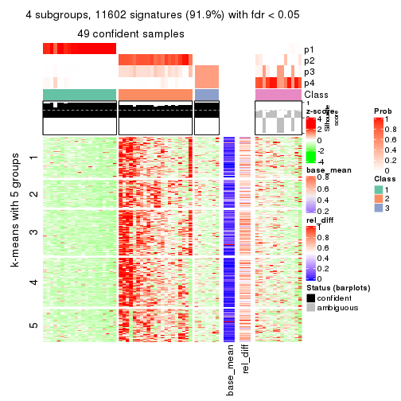
get_signatures(res, k = 5)

get_signatures(res, k = 6)
Signature heatmaps where rows are not scaled:
get_signatures(res, k = 2, scale_rows = FALSE)
get_signatures(res, k = 3, scale_rows = FALSE)
#> Error in mat[ceiling(1:nr/h_ratio), ceiling(1:nc/w_ratio), drop = FALSE]: subscript out of bounds
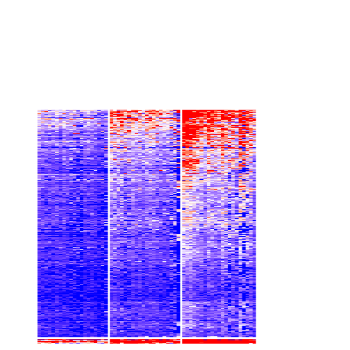
get_signatures(res, k = 4, scale_rows = FALSE)
#> Error in mat[ceiling(1:nr/h_ratio), ceiling(1:nc/w_ratio), drop = FALSE]: subscript out of bounds

get_signatures(res, k = 5, scale_rows = FALSE)
get_signatures(res, k = 6, scale_rows = FALSE)
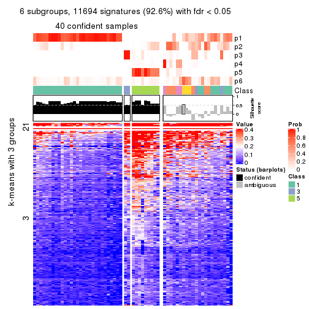
Compare the overlap of signatures from different k:
compare_signatures(res)
get_signature() returns a data frame invisibly. TO get the list of signatures, the function
call should be assigned to a variable explicitly. In following code, if plot argument is set
to FALSE, no heatmap is plotted while only the differential analysis is performed.
# code only for demonstration
tb = get_signature(res, k = ..., plot = FALSE)
An example of the output of tb is:
#> which_row fdr mean_1 mean_2 scaled_mean_1 scaled_mean_2 km
#> 1 38 0.042760348 8.373488 9.131774 -0.5533452 0.5164555 1
#> 2 40 0.018707592 7.106213 8.469186 -0.6173731 0.5762149 1
#> 3 55 0.019134737 10.221463 11.207825 -0.6159697 0.5749050 1
#> 4 59 0.006059896 5.921854 7.869574 -0.6899429 0.6439467 1
#> 5 60 0.018055526 8.928898 10.211722 -0.6204761 0.5791110 1
#> 6 98 0.009384629 15.714769 14.887706 0.6635654 -0.6193277 2
...
The columns in tb are:
which_row: row indices corresponding to the input matrix.fdr: FDR for the differential test. mean_x: The mean value in group x.scaled_mean_x: The mean value in group x after rows are scaled.km: Row groups if k-means clustering is applied to rows.UMAP plot which shows how samples are separated.
dimension_reduction(res, k = 2, method = "UMAP")
dimension_reduction(res, k = 3, method = "UMAP")
dimension_reduction(res, k = 4, method = "UMAP")
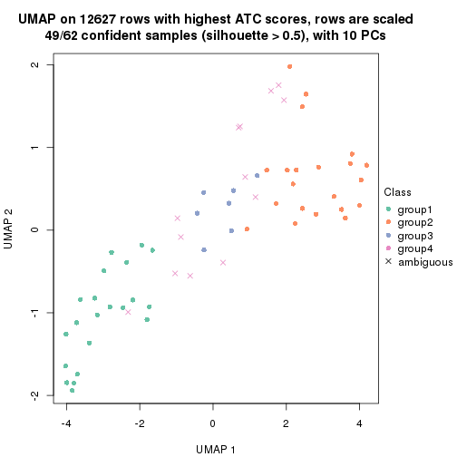
dimension_reduction(res, k = 5, method = "UMAP")
dimension_reduction(res, k = 6, method = "UMAP")
Following heatmap shows how subgroups are split when increasing k:
collect_classes(res)
If matrix rows can be associated to genes, consider to use GO_Enrichment(res,
...) to perform function enrichment for the signature genes.
The object with results only for a single top-value method and a single partition method can be extracted as:
res = res_list["ATC", "NMF"]
# you can also extract it by
# res = res_list["ATC:NMF"]
A summary of res and all the functions that can be applied to it:
res
#> A 'ConsensusPartition' object with k = 2, 3, 4, 5, 6.
#> On a matrix with 12627 rows and 62 columns.
#> Top rows (1000, 2000, 3000, 4000, 5000) are extracted by 'ATC' method.
#> Subgroups are detected by 'NMF' method.
#> Performed in total 1250 partitions by row resampling.
#> Best k for subgroups seems to be 4.
#>
#> Following methods can be applied to this 'ConsensusPartition' object:
#> [1] "cola_report" "collect_classes" "collect_plots"
#> [4] "collect_stats" "colnames" "compare_signatures"
#> [7] "consensus_heatmap" "dimension_reduction" "functional_enrichment"
#> [10] "get_anno_col" "get_anno" "get_classes"
#> [13] "get_consensus" "get_matrix" "get_membership"
#> [16] "get_param" "get_signatures" "get_stats"
#> [19] "is_best_k" "is_stable_k" "membership_heatmap"
#> [22] "ncol" "nrow" "plot_ecdf"
#> [25] "rownames" "select_partition_number" "show"
#> [28] "suggest_best_k" "test_to_known_factors"
collect_plots() function collects all the plots made from res for all k (number of partitions)
into one single page to provide an easy and fast comparison between different k.
collect_plots(res)
The plots are:
k and the heatmap of
predicted classes for each k.k.k.k.All the plots in panels can be made by individual functions and they are plotted later in this section.
select_partition_number() produces several plots showing different
statistics for choosing “optimized” k. There are following statistics:
k;k, the area increased is defined as \(A_k - A_{k-1}\).The detailed explanations of these statistics can be found in the cola vignette.
Generally speaking, lower PAC score, higher mean silhouette score or higher
concordance corresponds to better partition. Rand index and Jaccard index
measure how similar the current partition is compared to partition with k-1.
If they are too similar, we won't accept k is better than k-1.
select_partition_number(res)
The numeric values for all these statistics can be obtained by get_stats().
get_stats(res)
#> k 1-PAC mean_silhouette concordance area_increased Rand Jaccard
#> 2 2 0.933 0.946 0.981 0.0667 0.968 0.968
#> 3 3 0.163 0.429 0.721 5.1323 0.604 0.591
#> 4 4 0.529 0.675 0.858 0.4547 0.709 0.534
#> 5 5 0.507 0.676 0.845 0.1337 0.706 0.424
#> 6 6 0.564 0.632 0.827 0.0653 0.898 0.725
suggest_best_k() suggests the best \(k\) based on these statistics. The rules are as follows:
NA.suggest_best_k(res)
#> [1] 4
Following shows the table of the partitions (You need to click the show/hide
code output link to see it). The membership matrix (columns with name p*)
is inferred by
clue::cl_consensus()
function with the SE method. Basically the value in the membership matrix
represents the probability to belong to a certain group. The finall class
label for an item is determined with the group with highest probability it
belongs to.
In get_classes() function, the entropy is calculated from the membership
matrix and the silhouette score is calculated from the consensus matrix.
cbind(get_classes(res, k = 2), get_membership(res, k = 2))
#> class entropy silhouette p1 p2
#> SRR372611 2 0.0000 0.000 0.000 1.000
#> SRR372612 1 0.1633 0.963 0.976 0.024
#> SRR372613 1 0.7883 0.719 0.764 0.236
#> SRR372614 1 0.6887 0.794 0.816 0.184
#> SRR372615 1 0.0938 0.975 0.988 0.012
#> SRR372616 1 0.6712 0.804 0.824 0.176
#> SRR372617 1 0.0376 0.979 0.996 0.004
#> SRR372618 1 0.0000 0.980 1.000 0.000
#> SRR372619 1 0.0938 0.975 0.988 0.012
#> SRR372620 1 0.0000 0.980 1.000 0.000
#> SRR372621 1 0.0672 0.977 0.992 0.008
#> SRR372622 1 0.0000 0.980 1.000 0.000
#> SRR372623 1 0.1184 0.972 0.984 0.016
#> SRR372624 1 0.0000 0.980 1.000 0.000
#> SRR372625 1 0.0000 0.980 1.000 0.000
#> SRR372626 1 0.0938 0.975 0.988 0.012
#> SRR372627 1 0.0000 0.980 1.000 0.000
#> SRR372628 1 0.0938 0.975 0.988 0.012
#> SRR372629 1 0.0000 0.980 1.000 0.000
#> SRR372630 1 0.0000 0.980 1.000 0.000
#> SRR372631 1 0.0376 0.979 0.996 0.004
#> SRR372632 1 0.0000 0.980 1.000 0.000
#> SRR372633 1 0.0376 0.979 0.996 0.004
#> SRR372634 1 0.0000 0.980 1.000 0.000
#> SRR372635 1 0.0376 0.979 0.996 0.004
#> SRR372636 1 0.0000 0.980 1.000 0.000
#> SRR372637 1 0.0000 0.980 1.000 0.000
#> SRR372638 1 0.0000 0.980 1.000 0.000
#> SRR372639 1 0.0000 0.980 1.000 0.000
#> SRR372640 1 0.0000 0.980 1.000 0.000
#> SRR372641 1 0.0000 0.980 1.000 0.000
#> SRR372642 1 0.0000 0.980 1.000 0.000
#> SRR372643 1 0.0672 0.977 0.992 0.008
#> SRR372644 1 0.0000 0.980 1.000 0.000
#> SRR372645 1 0.0672 0.977 0.992 0.008
#> SRR372646 1 0.0000 0.980 1.000 0.000
#> SRR372647 1 0.0672 0.977 0.992 0.008
#> SRR372648 1 0.0000 0.980 1.000 0.000
#> SRR372649 1 0.0376 0.979 0.996 0.004
#> SRR372650 1 0.0672 0.976 0.992 0.008
#> SRR372651 1 0.0000 0.980 1.000 0.000
#> SRR372652 1 0.0000 0.980 1.000 0.000
#> SRR372653 1 0.0000 0.980 1.000 0.000
#> SRR372654 1 0.0672 0.976 0.992 0.008
#> SRR372655 1 0.0938 0.975 0.988 0.012
#> SRR372656 1 0.0000 0.980 1.000 0.000
#> SRR372657 1 0.0000 0.980 1.000 0.000
#> SRR372658 1 0.0376 0.979 0.996 0.004
#> SRR372659 1 0.0376 0.979 0.996 0.004
#> SRR372660 1 0.0000 0.980 1.000 0.000
#> SRR372661 1 0.0672 0.977 0.992 0.008
#> SRR372662 1 0.0376 0.978 0.996 0.004
#> SRR372663 1 0.6531 0.814 0.832 0.168
#> SRR372664 1 0.0000 0.980 1.000 0.000
#> SRR372665 1 0.0000 0.980 1.000 0.000
#> SRR372666 1 0.3879 0.915 0.924 0.076
#> SRR372667 1 0.0000 0.980 1.000 0.000
#> SRR372668 1 0.0000 0.980 1.000 0.000
#> SRR372669 1 0.0000 0.980 1.000 0.000
#> SRR372670 1 0.0000 0.980 1.000 0.000
#> SRR372671 1 0.0672 0.977 0.992 0.008
#> SRR372672 1 0.6623 0.809 0.828 0.172
cbind(get_classes(res, k = 3), get_membership(res, k = 3))
#> class entropy silhouette p1 p2 p3
#> SRR372611 2 0.0000 0.0000 0.000 1.000 0.000
#> SRR372612 3 0.7301 0.1593 0.308 0.052 0.640
#> SRR372613 3 0.8520 0.0733 0.280 0.132 0.588
#> SRR372614 3 0.7858 0.0628 0.364 0.064 0.572
#> SRR372615 1 0.6308 -0.4082 0.508 0.000 0.492
#> SRR372616 3 0.6516 -0.1228 0.480 0.004 0.516
#> SRR372617 1 0.2356 0.6222 0.928 0.000 0.072
#> SRR372618 1 0.5058 0.5129 0.756 0.000 0.244
#> SRR372619 3 0.6180 0.5517 0.416 0.000 0.584
#> SRR372620 1 0.1529 0.6440 0.960 0.000 0.040
#> SRR372621 1 0.6168 -0.2110 0.588 0.000 0.412
#> SRR372622 1 0.1163 0.6545 0.972 0.000 0.028
#> SRR372623 3 0.6180 0.5517 0.416 0.000 0.584
#> SRR372624 1 0.0747 0.6563 0.984 0.000 0.016
#> SRR372625 1 0.3412 0.5685 0.876 0.000 0.124
#> SRR372626 3 0.6280 0.4773 0.460 0.000 0.540
#> SRR372627 1 0.4399 0.5278 0.812 0.000 0.188
#> SRR372628 3 0.6225 0.5454 0.432 0.000 0.568
#> SRR372629 1 0.1289 0.6509 0.968 0.000 0.032
#> SRR372630 1 0.3879 0.5686 0.848 0.000 0.152
#> SRR372631 1 0.2796 0.6049 0.908 0.000 0.092
#> SRR372632 1 0.0892 0.6557 0.980 0.000 0.020
#> SRR372633 1 0.5859 0.0624 0.656 0.000 0.344
#> SRR372634 1 0.3816 0.5721 0.852 0.000 0.148
#> SRR372635 1 0.4842 0.3807 0.776 0.000 0.224
#> SRR372636 1 0.1753 0.6529 0.952 0.000 0.048
#> SRR372637 1 0.2878 0.6282 0.904 0.000 0.096
#> SRR372638 1 0.3482 0.6243 0.872 0.000 0.128
#> SRR372639 3 0.6204 0.5544 0.424 0.000 0.576
#> SRR372640 1 0.3412 0.6099 0.876 0.000 0.124
#> SRR372641 1 0.2165 0.6284 0.936 0.000 0.064
#> SRR372642 1 0.1529 0.6517 0.960 0.000 0.040
#> SRR372643 1 0.4062 0.5044 0.836 0.000 0.164
#> SRR372644 1 0.4002 0.5527 0.840 0.000 0.160
#> SRR372645 1 0.6045 -0.0536 0.620 0.000 0.380
#> SRR372646 1 0.3267 0.6115 0.884 0.000 0.116
#> SRR372647 3 0.6192 0.5559 0.420 0.000 0.580
#> SRR372648 1 0.3752 0.6106 0.856 0.000 0.144
#> SRR372649 1 0.4291 0.4755 0.820 0.000 0.180
#> SRR372650 1 0.7442 0.1152 0.628 0.056 0.316
#> SRR372651 3 0.6204 0.5516 0.424 0.000 0.576
#> SRR372652 1 0.6686 0.3079 0.612 0.016 0.372
#> SRR372653 1 0.6192 -0.1872 0.580 0.000 0.420
#> SRR372654 1 0.6154 0.2796 0.592 0.000 0.408
#> SRR372655 3 0.6225 0.5313 0.432 0.000 0.568
#> SRR372656 1 0.5859 0.3802 0.656 0.000 0.344
#> SRR372657 1 0.4399 0.5811 0.812 0.000 0.188
#> SRR372658 3 0.6235 0.5162 0.436 0.000 0.564
#> SRR372659 1 0.3192 0.5805 0.888 0.000 0.112
#> SRR372660 1 0.2066 0.6449 0.940 0.000 0.060
#> SRR372661 1 0.4654 0.4174 0.792 0.000 0.208
#> SRR372662 1 0.2796 0.6253 0.908 0.000 0.092
#> SRR372663 3 0.8117 0.0571 0.372 0.076 0.552
#> SRR372664 1 0.2448 0.6390 0.924 0.000 0.076
#> SRR372665 3 0.6305 0.4201 0.484 0.000 0.516
#> SRR372666 1 0.6140 0.2787 0.596 0.000 0.404
#> SRR372667 3 0.6192 0.5448 0.420 0.000 0.580
#> SRR372668 1 0.0592 0.6539 0.988 0.000 0.012
#> SRR372669 1 0.1163 0.6509 0.972 0.000 0.028
#> SRR372670 1 0.6168 0.2722 0.588 0.000 0.412
#> SRR372671 3 0.6215 0.5490 0.428 0.000 0.572
#> SRR372672 1 0.6111 0.2291 0.604 0.000 0.396
cbind(get_classes(res, k = 4), get_membership(res, k = 4))
#> class entropy silhouette p1 p2 p3 p4
#> SRR372611 3 0.0336 0.0000 0.000 0.000 0.992 0.008
#> SRR372612 4 0.2983 0.4665 0.040 0.068 0.000 0.892
#> SRR372613 4 0.1675 0.3792 0.004 0.004 0.044 0.948
#> SRR372614 4 0.1637 0.5353 0.060 0.000 0.000 0.940
#> SRR372615 2 0.2587 0.7269 0.076 0.908 0.004 0.012
#> SRR372616 4 0.4888 0.5308 0.412 0.000 0.000 0.588
#> SRR372617 1 0.1114 0.8441 0.972 0.004 0.008 0.016
#> SRR372618 1 0.5161 0.1223 0.592 0.008 0.000 0.400
#> SRR372619 2 0.0000 0.7742 0.000 1.000 0.000 0.000
#> SRR372620 1 0.0817 0.8565 0.976 0.000 0.000 0.024
#> SRR372621 2 0.5759 0.3520 0.388 0.584 0.008 0.020
#> SRR372622 1 0.1151 0.8421 0.968 0.000 0.008 0.024
#> SRR372623 2 0.0000 0.7742 0.000 1.000 0.000 0.000
#> SRR372624 1 0.1557 0.8507 0.944 0.000 0.000 0.056
#> SRR372625 1 0.2463 0.8193 0.924 0.032 0.008 0.036
#> SRR372626 2 0.0672 0.7693 0.008 0.984 0.000 0.008
#> SRR372627 1 0.6931 0.2870 0.588 0.228 0.000 0.184
#> SRR372628 2 0.0524 0.7779 0.004 0.988 0.000 0.008
#> SRR372629 1 0.1545 0.8449 0.952 0.000 0.008 0.040
#> SRR372630 1 0.1389 0.8529 0.952 0.000 0.000 0.048
#> SRR372631 1 0.1452 0.8359 0.956 0.000 0.008 0.036
#> SRR372632 1 0.0469 0.8550 0.988 0.000 0.000 0.012
#> SRR372633 2 0.5774 0.0801 0.484 0.492 0.004 0.020
#> SRR372634 1 0.4727 0.7285 0.792 0.108 0.000 0.100
#> SRR372635 1 0.3985 0.7213 0.832 0.136 0.008 0.024
#> SRR372636 1 0.1792 0.8448 0.932 0.000 0.000 0.068
#> SRR372637 1 0.2830 0.8325 0.900 0.040 0.000 0.060
#> SRR372638 1 0.3074 0.7773 0.848 0.000 0.000 0.152
#> SRR372639 2 0.0804 0.7769 0.008 0.980 0.000 0.012
#> SRR372640 1 0.3962 0.7512 0.820 0.028 0.000 0.152
#> SRR372641 1 0.1114 0.8441 0.972 0.004 0.008 0.016
#> SRR372642 1 0.1302 0.8537 0.956 0.000 0.000 0.044
#> SRR372643 1 0.1590 0.8356 0.956 0.008 0.008 0.028
#> SRR372644 1 0.5719 0.5884 0.712 0.112 0.000 0.176
#> SRR372645 2 0.5829 0.2941 0.416 0.556 0.008 0.020
#> SRR372646 1 0.1557 0.8497 0.944 0.000 0.000 0.056
#> SRR372647 2 0.1452 0.7699 0.008 0.956 0.000 0.036
#> SRR372648 1 0.3172 0.7666 0.840 0.000 0.000 0.160
#> SRR372649 1 0.1617 0.8353 0.956 0.012 0.008 0.024
#> SRR372650 2 0.6552 0.1235 0.076 0.484 0.000 0.440
#> SRR372651 2 0.0469 0.7770 0.000 0.988 0.000 0.012
#> SRR372652 4 0.4920 0.6326 0.192 0.052 0.000 0.756
#> SRR372653 2 0.5327 0.5874 0.060 0.720 0.000 0.220
#> SRR372654 4 0.4605 0.6475 0.336 0.000 0.000 0.664
#> SRR372655 2 0.0188 0.7736 0.000 0.996 0.000 0.004
#> SRR372656 4 0.5250 0.4592 0.440 0.008 0.000 0.552
#> SRR372657 1 0.4222 0.5775 0.728 0.000 0.000 0.272
#> SRR372658 2 0.2480 0.7389 0.008 0.904 0.000 0.088
#> SRR372659 1 0.1486 0.8378 0.960 0.008 0.008 0.024
#> SRR372660 1 0.1389 0.8527 0.952 0.000 0.000 0.048
#> SRR372661 1 0.2066 0.8263 0.940 0.028 0.008 0.024
#> SRR372662 1 0.1211 0.8561 0.960 0.000 0.000 0.040
#> SRR372663 4 0.1637 0.5355 0.060 0.000 0.000 0.940
#> SRR372664 1 0.1792 0.8439 0.932 0.000 0.000 0.068
#> SRR372665 2 0.3351 0.6954 0.008 0.844 0.000 0.148
#> SRR372666 4 0.4925 0.4935 0.428 0.000 0.000 0.572
#> SRR372667 2 0.1118 0.7731 0.000 0.964 0.000 0.036
#> SRR372668 1 0.0817 0.8561 0.976 0.000 0.000 0.024
#> SRR372669 1 0.0336 0.8550 0.992 0.000 0.000 0.008
#> SRR372670 4 0.4720 0.6568 0.324 0.004 0.000 0.672
#> SRR372671 2 0.0336 0.7769 0.000 0.992 0.000 0.008
#> SRR372672 1 0.4564 0.4282 0.672 0.000 0.000 0.328
cbind(get_classes(res, k = 5), get_membership(res, k = 5))
#> class entropy silhouette p1 p2 p3 p4 p5
#> SRR372611 5 0.0000 0.0000 0.000 0.000 0.000 0.000 1.000
#> SRR372612 1 0.5528 0.4125 0.644 0.140 0.000 0.216 0.000
#> SRR372613 4 0.0693 0.0914 0.012 0.000 0.000 0.980 0.008
#> SRR372614 4 0.3837 0.3701 0.308 0.000 0.000 0.692 0.000
#> SRR372615 2 0.4594 0.3514 0.004 0.620 0.364 0.012 0.000
#> SRR372616 1 0.3561 0.6318 0.740 0.000 0.000 0.260 0.000
#> SRR372617 3 0.2813 0.7754 0.168 0.000 0.832 0.000 0.000
#> SRR372618 1 0.1205 0.7928 0.956 0.040 0.000 0.004 0.000
#> SRR372619 2 0.0898 0.7597 0.000 0.972 0.020 0.008 0.000
#> SRR372620 1 0.1544 0.7977 0.932 0.000 0.068 0.000 0.000
#> SRR372621 3 0.3320 0.6560 0.004 0.164 0.820 0.012 0.000
#> SRR372622 3 0.2280 0.8219 0.120 0.000 0.880 0.000 0.000
#> SRR372623 2 0.0960 0.7644 0.004 0.972 0.016 0.008 0.000
#> SRR372624 1 0.1041 0.8068 0.964 0.004 0.032 0.000 0.000
#> SRR372625 3 0.2277 0.8130 0.052 0.016 0.916 0.016 0.000
#> SRR372626 2 0.3123 0.6437 0.000 0.828 0.160 0.012 0.000
#> SRR372627 1 0.1732 0.7735 0.920 0.080 0.000 0.000 0.000
#> SRR372628 2 0.3053 0.7288 0.164 0.828 0.000 0.008 0.000
#> SRR372629 3 0.2597 0.8299 0.092 0.000 0.884 0.024 0.000
#> SRR372630 1 0.4040 0.6176 0.724 0.000 0.260 0.016 0.000
#> SRR372631 3 0.1851 0.8316 0.088 0.000 0.912 0.000 0.000
#> SRR372632 1 0.3430 0.6695 0.776 0.000 0.220 0.004 0.000
#> SRR372633 3 0.5766 0.3336 0.044 0.396 0.536 0.024 0.000
#> SRR372634 1 0.1124 0.8025 0.960 0.036 0.004 0.000 0.000
#> SRR372635 3 0.2788 0.7911 0.040 0.064 0.888 0.008 0.000
#> SRR372636 1 0.0963 0.8067 0.964 0.000 0.036 0.000 0.000
#> SRR372637 1 0.1996 0.8073 0.928 0.036 0.032 0.004 0.000
#> SRR372638 1 0.0865 0.8075 0.972 0.004 0.024 0.000 0.000
#> SRR372639 2 0.2020 0.7746 0.100 0.900 0.000 0.000 0.000
#> SRR372640 1 0.1124 0.7975 0.960 0.036 0.004 0.000 0.000
#> SRR372641 3 0.2471 0.8093 0.136 0.000 0.864 0.000 0.000
#> SRR372642 1 0.2798 0.7503 0.852 0.000 0.140 0.008 0.000
#> SRR372643 3 0.1697 0.8252 0.060 0.000 0.932 0.008 0.000
#> SRR372644 1 0.1502 0.7912 0.940 0.056 0.004 0.000 0.000
#> SRR372645 3 0.5076 0.3863 0.024 0.364 0.600 0.012 0.000
#> SRR372646 1 0.2144 0.7942 0.912 0.000 0.068 0.020 0.000
#> SRR372647 2 0.3730 0.5429 0.288 0.712 0.000 0.000 0.000
#> SRR372648 1 0.0671 0.8077 0.980 0.000 0.016 0.004 0.000
#> SRR372649 3 0.2646 0.8241 0.124 0.004 0.868 0.004 0.000
#> SRR372650 1 0.5918 0.2732 0.592 0.168 0.000 0.240 0.000
#> SRR372651 2 0.1518 0.7814 0.048 0.944 0.004 0.004 0.000
#> SRR372652 1 0.2669 0.7313 0.876 0.104 0.000 0.020 0.000
#> SRR372653 2 0.6374 0.3285 0.196 0.504 0.000 0.300 0.000
#> SRR372654 1 0.2124 0.7757 0.916 0.056 0.000 0.028 0.000
#> SRR372655 2 0.1116 0.7629 0.004 0.964 0.028 0.004 0.000
#> SRR372656 1 0.1942 0.7732 0.920 0.068 0.000 0.012 0.000
#> SRR372657 1 0.1278 0.8063 0.960 0.004 0.020 0.016 0.000
#> SRR372658 2 0.3749 0.7494 0.080 0.816 0.000 0.104 0.000
#> SRR372659 3 0.2074 0.8298 0.104 0.000 0.896 0.000 0.000
#> SRR372660 1 0.2798 0.7497 0.852 0.000 0.140 0.008 0.000
#> SRR372661 3 0.1306 0.7927 0.016 0.016 0.960 0.008 0.000
#> SRR372662 1 0.4482 0.4722 0.636 0.000 0.348 0.016 0.000
#> SRR372663 1 0.4196 0.4059 0.640 0.004 0.000 0.356 0.000
#> SRR372664 1 0.1894 0.7937 0.920 0.000 0.072 0.008 0.000
#> SRR372665 2 0.5159 0.6448 0.144 0.692 0.000 0.164 0.000
#> SRR372666 1 0.2179 0.7759 0.896 0.004 0.000 0.100 0.000
#> SRR372667 2 0.3043 0.7697 0.056 0.864 0.000 0.080 0.000
#> SRR372668 1 0.2563 0.7663 0.872 0.000 0.120 0.008 0.000
#> SRR372669 1 0.4171 0.3811 0.604 0.000 0.396 0.000 0.000
#> SRR372670 1 0.3354 0.7191 0.844 0.068 0.000 0.088 0.000
#> SRR372671 2 0.1904 0.7751 0.028 0.936 0.020 0.016 0.000
#> SRR372672 1 0.4054 0.6344 0.732 0.000 0.020 0.248 0.000
cbind(get_classes(res, k = 6), get_membership(res, k = 6))
#> class entropy silhouette p1 p2 p3 p4 p5 p6
#> SRR372611 6 0.0000 0.0000 0.000 0.000 0.000 0.000 0.000 1
#> SRR372612 5 0.5392 0.1024 0.376 0.012 0.000 0.084 0.528 0
#> SRR372613 4 0.0725 -0.0256 0.000 0.012 0.000 0.976 0.012 0
#> SRR372614 4 0.4179 0.3004 0.324 0.008 0.000 0.652 0.016 0
#> SRR372615 3 0.5719 0.0961 0.000 0.168 0.460 0.000 0.372 0
#> SRR372616 1 0.2805 0.7649 0.828 0.000 0.000 0.160 0.012 0
#> SRR372617 3 0.4492 0.5396 0.216 0.080 0.700 0.004 0.000 0
#> SRR372618 1 0.0935 0.8484 0.964 0.004 0.000 0.000 0.032 0
#> SRR372619 2 0.3101 0.5900 0.000 0.756 0.000 0.000 0.244 0
#> SRR372620 1 0.1605 0.8361 0.936 0.044 0.016 0.000 0.004 0
#> SRR372621 3 0.2250 0.7444 0.000 0.064 0.896 0.000 0.040 0
#> SRR372622 3 0.5002 0.5222 0.184 0.116 0.684 0.012 0.004 0
#> SRR372623 2 0.3659 0.4500 0.000 0.636 0.000 0.000 0.364 0
#> SRR372624 1 0.1398 0.8309 0.940 0.052 0.008 0.000 0.000 0
#> SRR372625 2 0.5657 0.0973 0.140 0.588 0.256 0.008 0.008 0
#> SRR372626 2 0.2191 0.5338 0.000 0.876 0.004 0.000 0.120 0
#> SRR372627 1 0.2425 0.8258 0.884 0.024 0.000 0.004 0.088 0
#> SRR372628 5 0.4702 0.2686 0.052 0.332 0.000 0.004 0.612 0
#> SRR372629 3 0.1508 0.7707 0.004 0.012 0.948 0.016 0.020 0
#> SRR372630 1 0.4176 0.6559 0.752 0.080 0.160 0.008 0.000 0
#> SRR372631 3 0.1116 0.7618 0.004 0.028 0.960 0.008 0.000 0
#> SRR372632 1 0.3065 0.7640 0.844 0.100 0.052 0.004 0.000 0
#> SRR372633 3 0.4513 0.4875 0.004 0.044 0.640 0.000 0.312 0
#> SRR372634 1 0.1745 0.8406 0.920 0.012 0.000 0.000 0.068 0
#> SRR372635 3 0.1644 0.7539 0.000 0.004 0.920 0.000 0.076 0
#> SRR372636 1 0.0976 0.8441 0.968 0.016 0.008 0.000 0.008 0
#> SRR372637 1 0.5385 0.3059 0.564 0.012 0.068 0.008 0.348 0
#> SRR372638 1 0.0922 0.8496 0.968 0.000 0.004 0.004 0.024 0
#> SRR372639 5 0.2402 0.5893 0.004 0.140 0.000 0.000 0.856 0
#> SRR372640 1 0.1152 0.8479 0.952 0.004 0.000 0.000 0.044 0
#> SRR372641 3 0.2579 0.7266 0.060 0.048 0.884 0.008 0.000 0
#> SRR372642 1 0.2110 0.8107 0.900 0.084 0.012 0.004 0.000 0
#> SRR372643 3 0.0603 0.7699 0.000 0.000 0.980 0.004 0.016 0
#> SRR372644 1 0.2002 0.8341 0.908 0.012 0.000 0.004 0.076 0
#> SRR372645 3 0.3755 0.6104 0.000 0.036 0.744 0.000 0.220 0
#> SRR372646 1 0.1237 0.8393 0.956 0.020 0.020 0.004 0.000 0
#> SRR372647 5 0.4085 0.5765 0.096 0.156 0.000 0.000 0.748 0
#> SRR372648 1 0.1434 0.8462 0.940 0.012 0.000 0.000 0.048 0
#> SRR372649 3 0.1909 0.7594 0.052 0.024 0.920 0.000 0.004 0
#> SRR372650 5 0.5895 0.2515 0.260 0.016 0.000 0.180 0.544 0
#> SRR372651 5 0.2101 0.6250 0.004 0.072 0.008 0.008 0.908 0
#> SRR372652 1 0.2699 0.8088 0.864 0.008 0.000 0.020 0.108 0
#> SRR372653 5 0.4361 0.6088 0.052 0.008 0.016 0.176 0.748 0
#> SRR372654 1 0.2604 0.8238 0.880 0.008 0.000 0.036 0.076 0
#> SRR372655 5 0.3863 0.4124 0.000 0.260 0.028 0.000 0.712 0
#> SRR372656 1 0.2264 0.8243 0.888 0.012 0.000 0.004 0.096 0
#> SRR372657 1 0.1268 0.8486 0.952 0.008 0.000 0.004 0.036 0
#> SRR372658 5 0.2862 0.6472 0.008 0.048 0.000 0.080 0.864 0
#> SRR372659 3 0.0520 0.7720 0.008 0.000 0.984 0.000 0.008 0
#> SRR372660 1 0.2408 0.8107 0.892 0.076 0.024 0.004 0.004 0
#> SRR372661 3 0.0508 0.7695 0.000 0.004 0.984 0.000 0.012 0
#> SRR372662 1 0.4090 0.6653 0.760 0.076 0.156 0.008 0.000 0
#> SRR372663 1 0.4694 0.5219 0.656 0.004 0.000 0.268 0.072 0
#> SRR372664 1 0.1088 0.8417 0.960 0.024 0.016 0.000 0.000 0
#> SRR372665 5 0.2813 0.6547 0.036 0.008 0.000 0.092 0.864 0
#> SRR372666 1 0.1921 0.8385 0.916 0.000 0.000 0.052 0.032 0
#> SRR372667 5 0.2295 0.6531 0.020 0.008 0.032 0.028 0.912 0
#> SRR372668 1 0.2507 0.8003 0.884 0.072 0.040 0.004 0.000 0
#> SRR372669 3 0.4592 0.4503 0.264 0.008 0.676 0.004 0.048 0
#> SRR372670 1 0.4554 0.6458 0.716 0.008 0.000 0.104 0.172 0
#> SRR372671 5 0.3013 0.5527 0.000 0.024 0.140 0.004 0.832 0
#> SRR372672 1 0.3393 0.7759 0.820 0.020 0.012 0.140 0.008 0
Heatmaps for the consensus matrix. It visualizes the probability of two samples to be in a same group.
consensus_heatmap(res, k = 2)
consensus_heatmap(res, k = 3)
consensus_heatmap(res, k = 4)
consensus_heatmap(res, k = 5)
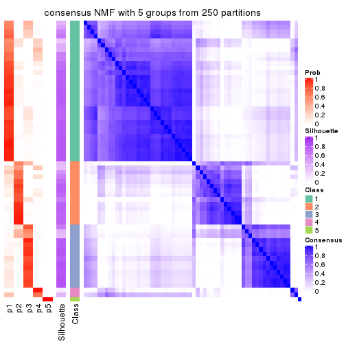
consensus_heatmap(res, k = 6)
Heatmaps for the membership of samples in all partitions to see how consistent they are:
membership_heatmap(res, k = 2)
membership_heatmap(res, k = 3)
membership_heatmap(res, k = 4)
membership_heatmap(res, k = 5)
membership_heatmap(res, k = 6)
As soon as we have had the classes for columns, we can look for signatures which are significantly different between classes which can be candidate marks for certain classes. Following are the heatmaps for signatures.
Signature heatmaps where rows are scaled:
get_signatures(res, k = 2)

get_signatures(res, k = 3)
get_signatures(res, k = 4)
get_signatures(res, k = 5)
get_signatures(res, k = 6)
Signature heatmaps where rows are not scaled:
get_signatures(res, k = 2, scale_rows = FALSE)

get_signatures(res, k = 3, scale_rows = FALSE)
get_signatures(res, k = 4, scale_rows = FALSE)
get_signatures(res, k = 5, scale_rows = FALSE)
#> Error in mat[ceiling(1:nr/h_ratio), ceiling(1:nc/w_ratio), drop = FALSE]: subscript out of bounds

get_signatures(res, k = 6, scale_rows = FALSE)
Compare the overlap of signatures from different k:
compare_signatures(res)
get_signature() returns a data frame invisibly. TO get the list of signatures, the function
call should be assigned to a variable explicitly. In following code, if plot argument is set
to FALSE, no heatmap is plotted while only the differential analysis is performed.
# code only for demonstration
tb = get_signature(res, k = ..., plot = FALSE)
An example of the output of tb is:
#> which_row fdr mean_1 mean_2 scaled_mean_1 scaled_mean_2 km
#> 1 38 0.042760348 8.373488 9.131774 -0.5533452 0.5164555 1
#> 2 40 0.018707592 7.106213 8.469186 -0.6173731 0.5762149 1
#> 3 55 0.019134737 10.221463 11.207825 -0.6159697 0.5749050 1
#> 4 59 0.006059896 5.921854 7.869574 -0.6899429 0.6439467 1
#> 5 60 0.018055526 8.928898 10.211722 -0.6204761 0.5791110 1
#> 6 98 0.009384629 15.714769 14.887706 0.6635654 -0.6193277 2
...
The columns in tb are:
which_row: row indices corresponding to the input matrix.fdr: FDR for the differential test. mean_x: The mean value in group x.scaled_mean_x: The mean value in group x after rows are scaled.km: Row groups if k-means clustering is applied to rows.UMAP plot which shows how samples are separated.
dimension_reduction(res, k = 2, method = "UMAP")
dimension_reduction(res, k = 3, method = "UMAP")
dimension_reduction(res, k = 4, method = "UMAP")
dimension_reduction(res, k = 5, method = "UMAP")
dimension_reduction(res, k = 6, method = "UMAP")
Following heatmap shows how subgroups are split when increasing k:
collect_classes(res)

If matrix rows can be associated to genes, consider to use GO_Enrichment(res,
...) to perform function enrichment for the signature genes.
sessionInfo()
#> R version 3.6.0 (2019-04-26)
#> Platform: x86_64-pc-linux-gnu (64-bit)
#> Running under: CentOS Linux 7 (Core)
#>
#> Matrix products: default
#> BLAS: /usr/lib64/libblas.so.3.4.2
#> LAPACK: /usr/lib64/liblapack.so.3.4.2
#>
#> locale:
#> [1] LC_CTYPE=en_GB.UTF-8 LC_NUMERIC=C LC_TIME=en_GB.UTF-8
#> [4] LC_COLLATE=en_GB.UTF-8 LC_MONETARY=en_GB.UTF-8 LC_MESSAGES=en_GB.UTF-8
#> [7] LC_PAPER=en_GB.UTF-8 LC_NAME=C LC_ADDRESS=C
#> [10] LC_TELEPHONE=C LC_MEASUREMENT=en_GB.UTF-8 LC_IDENTIFICATION=C
#>
#> attached base packages:
#> [1] grid parallel stats4 stats graphics grDevices utils datasets methods
#> [10] base
#>
#> other attached packages:
#> [1] genefilter_1.66.0 ComplexHeatmap_2.1.1 markdown_1.1
#> [4] knitr_1.26 cola_1.3.2 SummarizedExperiment_1.14.1
#> [7] DelayedArray_0.10.0 BiocParallel_1.18.1 matrixStats_0.55.0
#> [10] Biobase_2.44.0 GenomicRanges_1.36.1 GenomeInfoDb_1.20.0
#> [13] IRanges_2.18.3 S4Vectors_0.22.1 BiocGenerics_0.30.0
#> [16] GetoptLong_0.1.7
#>
#> loaded via a namespace (and not attached):
#> [1] bitops_1.0-6 bit64_0.9-7 doParallel_1.0.15 RColorBrewer_1.1-2
#> [5] httr_1.4.1 backports_1.1.5 tools_3.6.0 R6_2.4.1
#> [9] DBI_1.0.0 lazyeval_0.2.2 colorspace_1.4-1 withr_2.1.2
#> [13] tidyselect_0.2.5 gridExtra_2.3 bit_1.1-14 compiler_3.6.0
#> [17] xml2_1.2.2 microbenchmark_1.4-7 pkgmaker_0.28 slam_0.1-46
#> [21] scales_1.1.0 NMF_0.23.6 stringr_1.4.0 digest_0.6.23
#> [25] XVector_0.24.0 pkgconfig_2.0.3 bibtex_0.4.2 highr_0.8
#> [29] rlang_0.4.2 GlobalOptions_0.1.1 RSQLite_2.1.2 impute_1.58.0
#> [33] shape_1.4.4 mclust_5.4.5 dendextend_1.12.0 dplyr_0.8.3
#> [37] RCurl_1.95-4.12 magrittr_1.5 GenomeInfoDbData_1.2.1 Matrix_1.2-17
#> [41] Rcpp_1.0.3 munsell_0.5.0 viridis_0.5.1 lifecycle_0.1.0
#> [45] stringi_1.4.3 zlibbioc_1.30.0 plyr_1.8.4 blob_1.2.0
#> [49] crayon_1.3.4 lattice_0.20-38 splines_3.6.0 annotate_1.62.0
#> [53] circlize_0.4.9 zeallot_0.1.0 pillar_1.4.2 rjson_0.2.20
#> [57] rngtools_1.4 reshape2_1.4.3 codetools_0.2-16 XML_3.98-1.20
#> [61] glue_1.3.1 evaluate_0.14 vctrs_0.2.0 png_0.1-7
#> [65] foreach_1.4.7 polyclip_1.10-0 gtable_0.3.0 purrr_0.3.3
#> [69] clue_0.3-57 assertthat_0.2.1 ggplot2_3.2.1 xfun_0.11
#> [73] gridBase_0.4-7 eulerr_6.0.0 xtable_1.8-4 skmeans_0.2-11
#> [77] survival_2.44-1.1 viridisLite_0.3.0 tibble_2.1.3 iterators_1.0.12
#> [81] memoise_1.1.0 AnnotationDbi_1.46.1 registry_0.5-1 GTF_0.0.1
#> [85] cluster_2.1.0 brew_1.0-6